Date: 2019-12-03 08:21:26 CET, cola version: 1.3.2
Document is loading...
All available functions which can be applied to this res_list object:
res_list
#> A 'ConsensusPartitionList' object with 24 methods.
#> On a matrix with 51941 rows and 72 columns.
#> Top rows are extracted by 'SD, CV, MAD, ATC' methods.
#> Subgroups are detected by 'hclust, kmeans, skmeans, pam, mclust, NMF' method.
#> Number of partitions are tried for k = 2, 3, 4, 5, 6.
#> Performed in total 30000 partitions by row resampling.
#>
#> Following methods can be applied to this 'ConsensusPartitionList' object:
#> [1] "cola_report" "collect_classes" "collect_plots" "collect_stats"
#> [5] "colnames" "functional_enrichment" "get_anno_col" "get_anno"
#> [9] "get_classes" "get_matrix" "get_membership" "get_stats"
#> [13] "is_best_k" "is_stable_k" "ncol" "nrow"
#> [17] "rownames" "show" "suggest_best_k" "test_to_known_factors"
#> [21] "top_rows_heatmap" "top_rows_overlap"
#>
#> You can get result for a single method by, e.g. object["SD", "hclust"] or object["SD:hclust"]
#> or a subset of methods by object[c("SD", "CV")], c("hclust", "kmeans")]
The call of run_all_consensus_partition_methods() was:
#> run_all_consensus_partition_methods(data = mat, mc.cores = 4, anno = anno)
Dimension of the input matrix:
mat = get_matrix(res_list)
dim(mat)
#> [1] 51941 72
The density distribution for each sample is visualized as in one column in the following heatmap. The clustering is based on the distance which is the Kolmogorov-Smirnov statistic between two distributions.
library(ComplexHeatmap)
densityHeatmap(mat, top_annotation = HeatmapAnnotation(df = get_anno(res_list),
col = get_anno_col(res_list)), ylab = "value", cluster_columns = TRUE, show_column_names = FALSE,
mc.cores = 4)
Folowing table shows the best k (number of partitions) for each combination
of top-value methods and partition methods. Clicking on the method name in
the table goes to the section for a single combination of methods.
The cola vignette explains the definition of the metrics used for determining the best number of partitions.
suggest_best_k(res_list)
| The best k | 1-PAC | Mean silhouette | Concordance | Optional k | ||
|---|---|---|---|---|---|---|
| SD:mclust | 2 | 1.000 | 0.997 | 0.998 | ** | |
| CV:mclust | 2 | 1.000 | 0.984 | 0.993 | ** | |
| MAD:mclust | 2 | 1.000 | 0.993 | 0.997 | ** | |
| ATC:kmeans | 3 | 1.000 | 0.985 | 0.988 | ** | 2 |
| ATC:skmeans | 3 | 1.000 | 0.983 | 0.990 | ** | 2 |
| MAD:skmeans | 2 | 0.997 | 0.963 | 0.982 | ** | |
| ATC:hclust | 3 | 0.925 | 0.903 | 0.949 | * | |
| ATC:pam | 5 | 0.916 | 0.869 | 0.948 | * | 2 |
| MAD:NMF | 2 | 0.913 | 0.929 | 0.970 | * | |
| MAD:kmeans | 2 | 0.912 | 0.945 | 0.961 | * | |
| SD:skmeans | 3 | 0.845 | 0.851 | 0.943 | ||
| SD:kmeans | 3 | 0.813 | 0.809 | 0.914 | ||
| SD:pam | 3 | 0.770 | 0.870 | 0.942 | ||
| MAD:pam | 2 | 0.751 | 0.856 | 0.939 | ||
| CV:NMF | 2 | 0.750 | 0.886 | 0.950 | ||
| SD:NMF | 2 | 0.740 | 0.862 | 0.940 | ||
| CV:skmeans | 2 | 0.599 | 0.838 | 0.928 | ||
| ATC:mclust | 2 | 0.554 | 0.956 | 0.946 | ||
| ATC:NMF | 3 | 0.543 | 0.713 | 0.855 | ||
| CV:kmeans | 2 | 0.437 | 0.816 | 0.898 | ||
| MAD:hclust | 3 | 0.239 | 0.764 | 0.869 | ||
| CV:hclust | 3 | 0.164 | 0.747 | 0.836 | ||
| SD:hclust | 2 | 0.134 | 0.618 | 0.792 | ||
| CV:pam | NA | NA | NA | NA |
**: 1-PAC > 0.95, *: 1-PAC > 0.9
Cumulative distribution function curves of consensus matrix for all methods.
collect_plots(res_list, fun = plot_ecdf)
Consensus heatmaps for all methods. (What is a consensus heatmap?)
collect_plots(res_list, k = 2, fun = consensus_heatmap, mc.cores = 4)
collect_plots(res_list, k = 3, fun = consensus_heatmap, mc.cores = 4)
collect_plots(res_list, k = 4, fun = consensus_heatmap, mc.cores = 4)

collect_plots(res_list, k = 5, fun = consensus_heatmap, mc.cores = 4)
collect_plots(res_list, k = 6, fun = consensus_heatmap, mc.cores = 4)
Membership heatmaps for all methods. (What is a membership heatmap?)
collect_plots(res_list, k = 2, fun = membership_heatmap, mc.cores = 4)
collect_plots(res_list, k = 3, fun = membership_heatmap, mc.cores = 4)
collect_plots(res_list, k = 4, fun = membership_heatmap, mc.cores = 4)
collect_plots(res_list, k = 5, fun = membership_heatmap, mc.cores = 4)
collect_plots(res_list, k = 6, fun = membership_heatmap, mc.cores = 4)
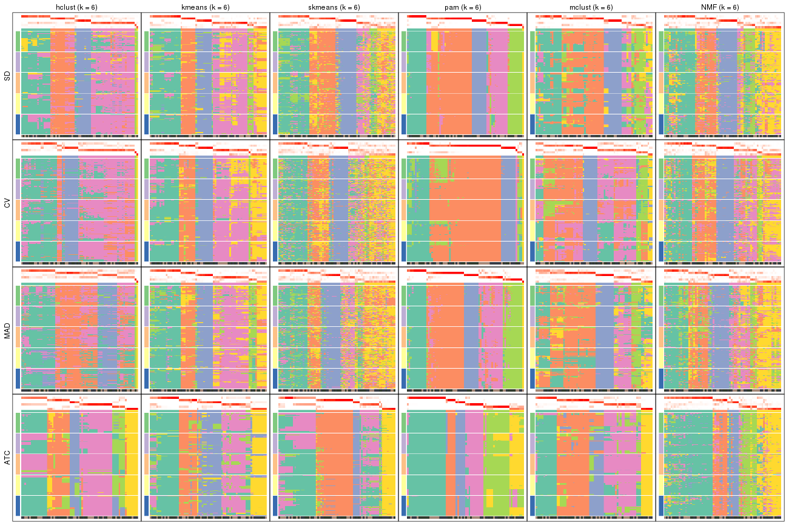
Signature heatmaps for all methods. (What is a signature heatmap?)
Note in following heatmaps, rows are scaled.
collect_plots(res_list, k = 2, fun = get_signatures, mc.cores = 4)
collect_plots(res_list, k = 3, fun = get_signatures, mc.cores = 4)
collect_plots(res_list, k = 4, fun = get_signatures, mc.cores = 4)
collect_plots(res_list, k = 5, fun = get_signatures, mc.cores = 4)
collect_plots(res_list, k = 6, fun = get_signatures, mc.cores = 4)
The statistics used for measuring the stability of consensus partitioning. (How are they defined?)
get_stats(res_list, k = 2)
#> k 1-PAC mean_silhouette concordance area_increased Rand Jaccard
#> SD:NMF 2 0.740 0.862 0.940 0.5017 0.495 0.495
#> CV:NMF 2 0.750 0.886 0.951 0.4907 0.512 0.512
#> MAD:NMF 2 0.913 0.929 0.970 0.5018 0.499 0.499
#> ATC:NMF 2 0.833 0.913 0.964 0.3630 0.649 0.649
#> SD:skmeans 2 0.606 0.824 0.923 0.5071 0.493 0.493
#> CV:skmeans 2 0.599 0.838 0.928 0.5050 0.493 0.493
#> MAD:skmeans 2 0.997 0.963 0.982 0.5060 0.495 0.495
#> ATC:skmeans 2 1.000 1.000 1.000 0.5075 0.493 0.493
#> SD:mclust 2 1.000 0.997 0.998 0.2642 0.737 0.737
#> CV:mclust 2 1.000 0.984 0.993 0.2729 0.737 0.737
#> MAD:mclust 2 1.000 0.993 0.997 0.2675 0.737 0.737
#> ATC:mclust 2 0.554 0.956 0.946 0.4739 0.493 0.493
#> SD:kmeans 2 0.372 0.770 0.880 0.4832 0.499 0.499
#> CV:kmeans 2 0.437 0.816 0.898 0.4623 0.507 0.507
#> MAD:kmeans 2 0.912 0.945 0.961 0.4912 0.495 0.495
#> ATC:kmeans 2 1.000 1.000 1.000 0.5075 0.493 0.493
#> SD:pam 2 0.488 0.854 0.903 0.4379 0.540 0.540
#> CV:pam 2 0.553 0.813 0.898 0.3791 0.606 0.606
#> MAD:pam 2 0.751 0.856 0.939 0.4953 0.496 0.496
#> ATC:pam 2 1.000 0.999 0.999 0.5075 0.493 0.493
#> SD:hclust 2 0.134 0.618 0.792 0.4077 0.549 0.549
#> CV:hclust 2 1.000 0.984 0.998 0.0305 0.972 0.972
#> MAD:hclust 2 0.396 0.834 0.856 0.1650 0.972 0.972
#> ATC:hclust 2 0.556 0.936 0.939 0.4715 0.493 0.493
get_stats(res_list, k = 3)
#> k 1-PAC mean_silhouette concordance area_increased Rand Jaccard
#> SD:NMF 3 0.739 0.801 0.910 0.281 0.820 0.654
#> CV:NMF 3 0.595 0.736 0.882 0.270 0.805 0.641
#> MAD:NMF 3 0.548 0.752 0.878 0.266 0.845 0.699
#> ATC:NMF 3 0.543 0.713 0.855 0.633 0.716 0.572
#> SD:skmeans 3 0.845 0.851 0.943 0.283 0.766 0.562
#> CV:skmeans 3 0.597 0.782 0.884 0.303 0.759 0.554
#> MAD:skmeans 3 0.637 0.761 0.885 0.283 0.849 0.704
#> ATC:skmeans 3 1.000 0.983 0.990 0.189 0.905 0.807
#> SD:mclust 3 0.853 0.926 0.959 1.192 0.688 0.577
#> CV:mclust 3 0.436 0.521 0.802 0.914 0.743 0.651
#> MAD:mclust 3 0.661 0.891 0.926 1.200 0.664 0.545
#> ATC:mclust 3 0.435 0.825 0.827 0.167 0.893 0.789
#> SD:kmeans 3 0.813 0.809 0.914 0.290 0.737 0.535
#> CV:kmeans 3 0.609 0.820 0.873 0.335 0.771 0.587
#> MAD:kmeans 3 0.768 0.896 0.916 0.250 0.874 0.749
#> ATC:kmeans 3 1.000 0.985 0.988 0.238 0.860 0.722
#> SD:pam 3 0.770 0.870 0.942 0.376 0.815 0.672
#> CV:pam 3 0.868 0.879 0.949 0.441 0.831 0.725
#> MAD:pam 3 0.775 0.836 0.934 0.255 0.849 0.703
#> ATC:pam 3 0.696 0.748 0.838 0.259 0.874 0.750
#> SD:hclust 3 0.207 0.476 0.543 0.325 0.647 0.437
#> CV:hclust 3 0.164 0.747 0.836 13.405 0.523 0.510
#> MAD:hclust 3 0.239 0.764 0.869 1.975 0.508 0.494
#> ATC:hclust 3 0.925 0.903 0.949 0.301 0.883 0.763
get_stats(res_list, k = 4)
#> k 1-PAC mean_silhouette concordance area_increased Rand Jaccard
#> SD:NMF 4 0.568 0.488 0.689 0.1505 0.799 0.507
#> CV:NMF 4 0.568 0.657 0.823 0.1725 0.796 0.522
#> MAD:NMF 4 0.548 0.581 0.772 0.1544 0.798 0.512
#> ATC:NMF 4 0.509 0.678 0.797 0.1226 0.734 0.473
#> SD:skmeans 4 0.675 0.733 0.860 0.1451 0.821 0.537
#> CV:skmeans 4 0.490 0.506 0.740 0.1384 0.829 0.554
#> MAD:skmeans 4 0.517 0.536 0.755 0.1484 0.839 0.593
#> ATC:skmeans 4 0.784 0.847 0.864 0.1131 0.951 0.876
#> SD:mclust 4 0.611 0.620 0.822 0.1551 0.939 0.860
#> CV:mclust 4 0.447 0.670 0.790 0.2799 0.731 0.497
#> MAD:mclust 4 0.655 0.781 0.871 0.1447 0.914 0.788
#> ATC:mclust 4 0.600 0.769 0.784 0.2345 0.930 0.830
#> SD:kmeans 4 0.640 0.791 0.857 0.1554 0.746 0.425
#> CV:kmeans 4 0.654 0.695 0.845 0.1313 0.879 0.696
#> MAD:kmeans 4 0.634 0.727 0.831 0.1705 0.869 0.670
#> ATC:kmeans 4 0.726 0.705 0.821 0.1558 0.869 0.655
#> SD:pam 4 0.749 0.812 0.905 0.1383 0.894 0.747
#> CV:pam 4 0.816 0.851 0.943 0.0229 0.996 0.991
#> MAD:pam 4 0.805 0.830 0.916 0.1266 0.885 0.706
#> ATC:pam 4 0.818 0.894 0.937 0.1378 0.831 0.587
#> SD:hclust 4 0.399 0.443 0.694 0.1886 0.649 0.349
#> CV:hclust 4 0.221 0.734 0.855 0.1414 0.962 0.925
#> MAD:hclust 4 0.304 0.597 0.749 0.2466 0.849 0.697
#> ATC:hclust 4 0.877 0.672 0.813 0.0943 0.927 0.814
get_stats(res_list, k = 5)
#> k 1-PAC mean_silhouette concordance area_increased Rand Jaccard
#> SD:NMF 5 0.590 0.568 0.753 0.0766 0.787 0.357
#> CV:NMF 5 0.569 0.543 0.751 0.0774 0.869 0.581
#> MAD:NMF 5 0.544 0.405 0.637 0.0885 0.802 0.390
#> ATC:NMF 5 0.631 0.660 0.822 0.1326 0.736 0.397
#> SD:skmeans 5 0.631 0.563 0.752 0.0665 0.951 0.811
#> CV:skmeans 5 0.497 0.420 0.653 0.0666 0.865 0.542
#> MAD:skmeans 5 0.523 0.482 0.682 0.0687 0.871 0.568
#> ATC:skmeans 5 0.776 0.599 0.811 0.0923 0.929 0.802
#> SD:mclust 5 0.565 0.687 0.821 0.0905 0.845 0.626
#> CV:mclust 5 0.510 0.621 0.788 0.0645 0.755 0.431
#> MAD:mclust 5 0.578 0.530 0.753 0.0831 0.963 0.888
#> ATC:mclust 5 0.696 0.830 0.864 0.1070 0.883 0.659
#> SD:kmeans 5 0.646 0.651 0.813 0.0703 0.973 0.900
#> CV:kmeans 5 0.612 0.675 0.825 0.0757 0.855 0.597
#> MAD:kmeans 5 0.657 0.635 0.794 0.0775 0.956 0.846
#> ATC:kmeans 5 0.692 0.690 0.788 0.0738 0.914 0.686
#> SD:pam 5 0.853 0.842 0.930 0.1246 0.872 0.631
#> CV:pam 5 0.755 0.803 0.926 0.0501 0.983 0.962
#> MAD:pam 5 0.750 0.775 0.884 0.1094 0.867 0.586
#> ATC:pam 5 0.916 0.869 0.948 0.0395 0.978 0.917
#> SD:hclust 5 0.425 0.697 0.787 0.0964 0.737 0.420
#> CV:hclust 5 0.341 0.619 0.787 0.2102 0.859 0.719
#> MAD:hclust 5 0.403 0.550 0.708 0.0855 0.914 0.783
#> ATC:hclust 5 0.763 0.792 0.870 0.0534 0.944 0.840
get_stats(res_list, k = 6)
#> k 1-PAC mean_silhouette concordance area_increased Rand Jaccard
#> SD:NMF 6 0.625 0.420 0.687 0.0376 0.912 0.629
#> CV:NMF 6 0.596 0.468 0.666 0.0440 0.911 0.636
#> MAD:NMF 6 0.617 0.451 0.675 0.0453 0.847 0.418
#> ATC:NMF 6 0.607 0.562 0.775 0.0285 0.953 0.830
#> SD:skmeans 6 0.633 0.486 0.691 0.0396 0.931 0.703
#> CV:skmeans 6 0.528 0.351 0.602 0.0408 0.924 0.672
#> MAD:skmeans 6 0.543 0.393 0.610 0.0408 0.947 0.764
#> ATC:skmeans 6 0.768 0.615 0.753 0.0466 0.877 0.624
#> SD:mclust 6 0.586 0.536 0.742 0.0665 0.898 0.660
#> CV:mclust 6 0.547 0.427 0.682 0.0734 0.908 0.710
#> MAD:mclust 6 0.617 0.598 0.712 0.0644 0.890 0.651
#> ATC:mclust 6 0.728 0.732 0.832 0.0518 0.977 0.896
#> SD:kmeans 6 0.679 0.597 0.776 0.0467 0.939 0.757
#> CV:kmeans 6 0.645 0.647 0.801 0.0509 0.920 0.712
#> MAD:kmeans 6 0.680 0.616 0.771 0.0454 0.927 0.721
#> ATC:kmeans 6 0.744 0.655 0.787 0.0440 0.960 0.813
#> SD:pam 6 0.822 0.803 0.919 0.0122 0.996 0.985
#> CV:pam 6 0.721 0.731 0.897 0.0566 0.985 0.965
#> MAD:pam 6 0.769 0.758 0.901 0.0157 0.995 0.978
#> ATC:pam 6 0.875 0.832 0.906 0.0478 0.908 0.656
#> SD:hclust 6 0.466 0.672 0.790 0.0464 0.972 0.898
#> CV:hclust 6 0.434 0.465 0.749 0.1287 0.959 0.893
#> MAD:hclust 6 0.432 0.439 0.662 0.0884 0.886 0.683
#> ATC:hclust 6 0.749 0.753 0.794 0.1111 0.867 0.574
Following heatmap plots the partition for each combination of methods and the lightness correspond to the silhouette scores for samples in each method. On top the consensus subgroup is inferred from all methods by taking the mean silhouette scores as weight.
collect_stats(res_list, k = 2)
collect_stats(res_list, k = 3)
collect_stats(res_list, k = 4)
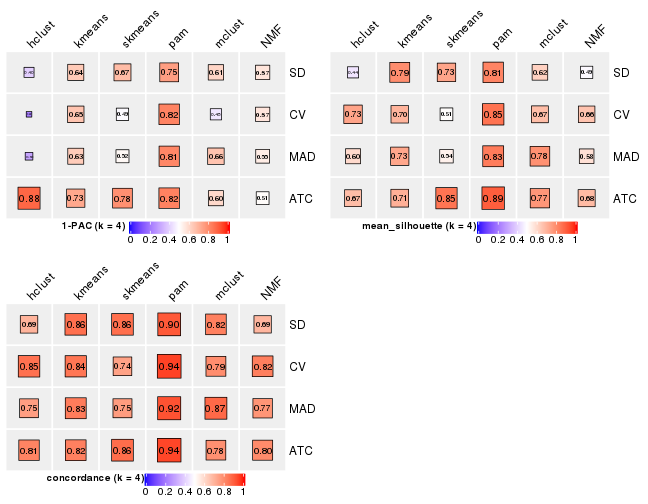
collect_stats(res_list, k = 5)
collect_stats(res_list, k = 6)
Collect partitions from all methods:
collect_classes(res_list, k = 2)
collect_classes(res_list, k = 3)
collect_classes(res_list, k = 4)
collect_classes(res_list, k = 5)
collect_classes(res_list, k = 6)
Overlap of top rows from different top-row methods:
top_rows_overlap(res_list, top_n = 1000, method = "euler")

top_rows_overlap(res_list, top_n = 2000, method = "euler")
top_rows_overlap(res_list, top_n = 3000, method = "euler")
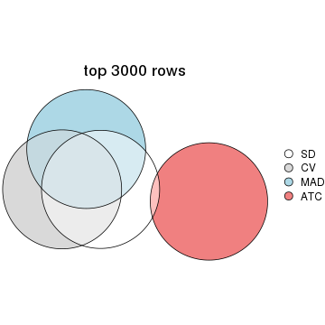
top_rows_overlap(res_list, top_n = 4000, method = "euler")
top_rows_overlap(res_list, top_n = 5000, method = "euler")
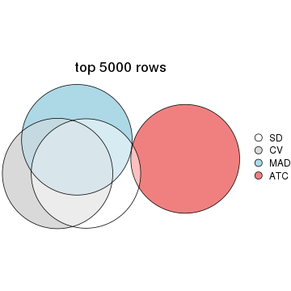
Also visualize the correspondance of rankings between different top-row methods:
top_rows_overlap(res_list, top_n = 1000, method = "correspondance")
top_rows_overlap(res_list, top_n = 2000, method = "correspondance")
top_rows_overlap(res_list, top_n = 3000, method = "correspondance")
top_rows_overlap(res_list, top_n = 4000, method = "correspondance")
top_rows_overlap(res_list, top_n = 5000, method = "correspondance")
Heatmaps of the top rows:
top_rows_heatmap(res_list, top_n = 1000)
top_rows_heatmap(res_list, top_n = 2000)
top_rows_heatmap(res_list, top_n = 3000)
top_rows_heatmap(res_list, top_n = 4000)
top_rows_heatmap(res_list, top_n = 5000)
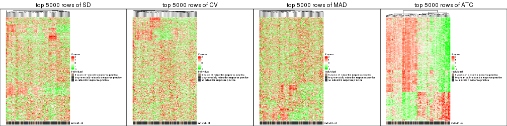
Test correlation between subgroups and known annotations. If the known annotation is numeric, one-way ANOVA test is applied, and if the known annotation is discrete, chi-squared contingency table test is applied.
test_to_known_factors(res_list, k = 2)
#> n individual(p) k
#> SD:NMF 68 0.986 2
#> CV:NMF 68 0.766 2
#> MAD:NMF 70 0.670 2
#> ATC:NMF 70 0.251 2
#> SD:skmeans 68 0.575 2
#> CV:skmeans 68 0.940 2
#> MAD:skmeans 72 0.430 2
#> ATC:skmeans 72 0.280 2
#> SD:mclust 72 0.890 2
#> CV:mclust 72 0.890 2
#> MAD:mclust 72 0.890 2
#> ATC:mclust 72 0.178 2
#> SD:kmeans 65 0.910 2
#> CV:kmeans 66 0.890 2
#> MAD:kmeans 71 0.505 2
#> ATC:kmeans 72 0.280 2
#> SD:pam 70 0.807 2
#> CV:pam 69 0.916 2
#> MAD:pam 67 0.735 2
#> ATC:pam 72 0.280 2
#> SD:hclust 56 0.689 2
#> CV:hclust 71 NA 2
#> MAD:hclust 71 NA 2
#> ATC:hclust 72 0.280 2
test_to_known_factors(res_list, k = 3)
#> n individual(p) k
#> SD:NMF 65 0.892 3
#> CV:NMF 63 0.965 3
#> MAD:NMF 64 0.691 3
#> ATC:NMF 61 0.174 3
#> SD:skmeans 66 0.901 3
#> CV:skmeans 67 0.952 3
#> MAD:skmeans 61 0.841 3
#> ATC:skmeans 72 0.220 3
#> SD:mclust 71 0.932 3
#> CV:mclust 51 0.994 3
#> MAD:mclust 71 0.935 3
#> ATC:mclust 72 0.307 3
#> SD:kmeans 65 0.874 3
#> CV:kmeans 69 0.964 3
#> MAD:kmeans 70 0.842 3
#> ATC:kmeans 72 0.163 3
#> SD:pam 69 0.896 3
#> CV:pam 69 0.831 3
#> MAD:pam 67 0.820 3
#> ATC:pam 69 0.417 3
#> SD:hclust 41 0.312 3
#> CV:hclust 66 0.549 3
#> MAD:hclust 66 0.322 3
#> ATC:hclust 70 0.219 3
test_to_known_factors(res_list, k = 4)
#> n individual(p) k
#> SD:NMF 39 0.2350 4
#> CV:NMF 57 0.2894 4
#> MAD:NMF 49 0.9644 4
#> ATC:NMF 66 0.4404 4
#> SD:skmeans 59 0.3855 4
#> CV:skmeans 39 0.2099 4
#> MAD:skmeans 42 0.8475 4
#> ATC:skmeans 70 0.1396 4
#> SD:mclust 60 0.9100 4
#> CV:mclust 60 0.5900 4
#> MAD:mclust 65 0.8710 4
#> ATC:mclust 69 0.3191 4
#> SD:kmeans 68 0.6892 4
#> CV:kmeans 60 0.2657 4
#> MAD:kmeans 63 0.3197 4
#> ATC:kmeans 63 0.0982 4
#> SD:pam 67 0.9720 4
#> CV:pam 67 0.6463 4
#> MAD:pam 67 0.9701 4
#> ATC:pam 68 0.5097 4
#> SD:hclust 38 0.5871 4
#> CV:hclust 65 0.6438 4
#> MAD:hclust 54 0.9578 4
#> ATC:hclust 56 0.0453 4
test_to_known_factors(res_list, k = 5)
#> n individual(p) k
#> SD:NMF 48 0.803 5
#> CV:NMF 48 0.809 5
#> MAD:NMF 31 0.196 5
#> ATC:NMF 57 0.446 5
#> SD:skmeans 47 0.368 5
#> CV:skmeans 27 0.511 5
#> MAD:skmeans 35 0.717 5
#> ATC:skmeans 50 0.293 5
#> SD:mclust 60 0.769 5
#> CV:mclust 53 0.622 5
#> MAD:mclust 41 0.557 5
#> ATC:mclust 71 0.105 5
#> SD:kmeans 64 0.599 5
#> CV:kmeans 61 0.298 5
#> MAD:kmeans 59 0.769 5
#> ATC:kmeans 59 0.328 5
#> SD:pam 67 0.630 5
#> CV:pam 66 0.600 5
#> MAD:pam 64 0.896 5
#> ATC:pam 67 0.263 5
#> SD:hclust 64 0.485 5
#> CV:hclust 60 0.868 5
#> MAD:hclust 49 0.791 5
#> ATC:hclust 66 0.147 5
test_to_known_factors(res_list, k = 6)
#> n individual(p) k
#> SD:NMF 27 0.967 6
#> CV:NMF 33 0.762 6
#> MAD:NMF 32 0.879 6
#> ATC:NMF 51 0.414 6
#> SD:skmeans 40 0.535 6
#> CV:skmeans 25 0.628 6
#> MAD:skmeans 22 0.796 6
#> ATC:skmeans 41 0.288 6
#> SD:mclust 47 0.618 6
#> CV:mclust 30 0.720 6
#> MAD:mclust 58 0.899 6
#> ATC:mclust 62 0.499 6
#> SD:kmeans 53 0.656 6
#> CV:kmeans 59 0.382 6
#> MAD:kmeans 56 0.692 6
#> ATC:kmeans 61 0.471 6
#> SD:pam 65 0.608 6
#> CV:pam 62 0.160 6
#> MAD:pam 63 0.890 6
#> ATC:pam 69 0.190 6
#> SD:hclust 65 0.439 6
#> CV:hclust 39 0.623 6
#> MAD:hclust 39 0.769 6
#> ATC:hclust 66 0.155 6
The object with results only for a single top-value method and a single partition method can be extracted as:
res = res_list["SD", "hclust"]
# you can also extract it by
# res = res_list["SD:hclust"]
A summary of res and all the functions that can be applied to it:
res
#> A 'ConsensusPartition' object with k = 2, 3, 4, 5, 6.
#> On a matrix with 51941 rows and 72 columns.
#> Top rows (1000, 2000, 3000, 4000, 5000) are extracted by 'SD' method.
#> Subgroups are detected by 'hclust' method.
#> Performed in total 1250 partitions by row resampling.
#> Best k for subgroups seems to be 2.
#>
#> Following methods can be applied to this 'ConsensusPartition' object:
#> [1] "cola_report" "collect_classes" "collect_plots"
#> [4] "collect_stats" "colnames" "compare_signatures"
#> [7] "consensus_heatmap" "dimension_reduction" "functional_enrichment"
#> [10] "get_anno_col" "get_anno" "get_classes"
#> [13] "get_consensus" "get_matrix" "get_membership"
#> [16] "get_param" "get_signatures" "get_stats"
#> [19] "is_best_k" "is_stable_k" "membership_heatmap"
#> [22] "ncol" "nrow" "plot_ecdf"
#> [25] "rownames" "select_partition_number" "show"
#> [28] "suggest_best_k" "test_to_known_factors"
collect_plots() function collects all the plots made from res for all k (number of partitions)
into one single page to provide an easy and fast comparison between different k.
collect_plots(res)
The plots are:
k and the heatmap of
predicted classes for each k.k.k.k.All the plots in panels can be made by individual functions and they are plotted later in this section.
select_partition_number() produces several plots showing different
statistics for choosing “optimized” k. There are following statistics:
k;k, the area increased is defined as \(A_k - A_{k-1}\).The detailed explanations of these statistics can be found in the cola vignette.
Generally speaking, lower PAC score, higher mean silhouette score or higher
concordance corresponds to better partition. Rand index and Jaccard index
measure how similar the current partition is compared to partition with k-1.
If they are too similar, we won't accept k is better than k-1.
select_partition_number(res)
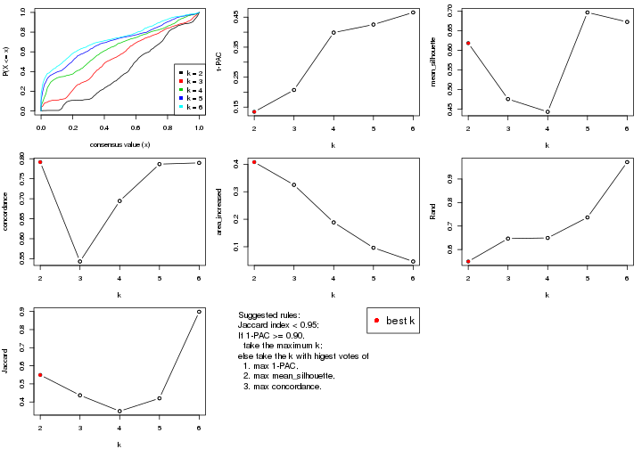
The numeric values for all these statistics can be obtained by get_stats().
get_stats(res)
#> k 1-PAC mean_silhouette concordance area_increased Rand Jaccard
#> 2 2 0.134 0.618 0.792 0.4077 0.549 0.549
#> 3 3 0.207 0.476 0.543 0.3250 0.647 0.437
#> 4 4 0.399 0.443 0.694 0.1886 0.649 0.349
#> 5 5 0.425 0.697 0.787 0.0964 0.737 0.420
#> 6 6 0.466 0.672 0.790 0.0464 0.972 0.898
suggest_best_k() suggests the best \(k\) based on these statistics. The rules are as follows:
NA.suggest_best_k(res)
#> [1] 2
Following shows the table of the partitions (You need to click the show/hide
code output link to see it). The membership matrix (columns with name p*)
is inferred by
clue::cl_consensus()
function with the SE method. Basically the value in the membership matrix
represents the probability to belong to a certain group. The finall class
label for an item is determined with the group with highest probability it
belongs to.
In get_classes() function, the entropy is calculated from the membership
matrix and the silhouette score is calculated from the consensus matrix.
cbind(get_classes(res, k = 2), get_membership(res, k = 2))
#> class entropy silhouette p1 p2
#> GSM253663 2 0.9996 0.1471 0.488 0.512
#> GSM253664 2 0.8267 0.6156 0.260 0.740
#> GSM253665 1 0.5842 0.8641 0.860 0.140
#> GSM253666 2 0.8909 0.5613 0.308 0.692
#> GSM253667 2 0.0000 0.6868 0.000 1.000
#> GSM253668 2 0.0938 0.6899 0.012 0.988
#> GSM253669 2 0.9000 0.5504 0.316 0.684
#> GSM253670 1 0.8386 0.7054 0.732 0.268
#> GSM253671 1 0.9491 0.4728 0.632 0.368
#> GSM253672 1 0.9170 0.5625 0.668 0.332
#> GSM253673 2 0.8955 0.5695 0.312 0.688
#> GSM253674 2 0.7950 0.6367 0.240 0.760
#> GSM253675 2 0.0000 0.6868 0.000 1.000
#> GSM253676 1 0.9815 0.2927 0.580 0.420
#> GSM253677 1 0.6048 0.8636 0.852 0.148
#> GSM253678 2 0.7528 0.6490 0.216 0.784
#> GSM253679 1 0.5737 0.8668 0.864 0.136
#> GSM253680 2 0.9393 0.4863 0.356 0.644
#> GSM253681 2 0.9608 0.4598 0.384 0.616
#> GSM253682 2 0.7528 0.6016 0.216 0.784
#> GSM253683 2 0.7139 0.6136 0.196 0.804
#> GSM253684 2 0.7745 0.5929 0.228 0.772
#> GSM253685 2 0.9491 0.3462 0.368 0.632
#> GSM253686 2 0.9775 0.3707 0.412 0.588
#> GSM253687 1 0.5946 0.8625 0.856 0.144
#> GSM253688 2 0.9850 0.3261 0.428 0.572
#> GSM253689 2 0.8955 0.5577 0.312 0.688
#> GSM253690 1 0.9983 0.0142 0.524 0.476
#> GSM253691 2 0.7745 0.6425 0.228 0.772
#> GSM253692 2 0.9795 0.3693 0.416 0.584
#> GSM253693 2 0.9358 0.4936 0.352 0.648
#> GSM253694 2 0.8608 0.5848 0.284 0.716
#> GSM253695 2 0.9909 0.2740 0.444 0.556
#> GSM253696 1 0.5294 0.8576 0.880 0.120
#> GSM253697 2 0.0000 0.6868 0.000 1.000
#> GSM253698 2 0.0000 0.6868 0.000 1.000
#> GSM253699 2 0.8081 0.6309 0.248 0.752
#> GSM253700 2 0.0000 0.6868 0.000 1.000
#> GSM253701 1 0.5737 0.8668 0.864 0.136
#> GSM253702 1 0.5737 0.8668 0.864 0.136
#> GSM253703 2 0.1843 0.6913 0.028 0.972
#> GSM253704 2 0.2043 0.6917 0.032 0.968
#> GSM253705 1 0.6247 0.8591 0.844 0.156
#> GSM253706 1 0.5519 0.8626 0.872 0.128
#> GSM253707 2 0.7139 0.6136 0.196 0.804
#> GSM253708 2 0.7139 0.6136 0.196 0.804
#> GSM253709 1 0.0672 0.6825 0.992 0.008
#> GSM253710 1 0.5842 0.8641 0.860 0.140
#> GSM253711 2 0.8386 0.6211 0.268 0.732
#> GSM253712 1 0.6048 0.8603 0.852 0.148
#> GSM253713 1 0.5294 0.8576 0.880 0.120
#> GSM253714 2 0.9933 0.2356 0.452 0.548
#> GSM253715 2 0.8499 0.6155 0.276 0.724
#> GSM253716 2 0.1843 0.6917 0.028 0.972
#> GSM253717 2 1.0000 0.0621 0.496 0.504
#> GSM253718 2 0.0000 0.6868 0.000 1.000
#> GSM253719 2 0.0000 0.6868 0.000 1.000
#> GSM253720 2 0.9896 0.2848 0.440 0.560
#> GSM253721 2 0.0672 0.6888 0.008 0.992
#> GSM253722 2 0.0000 0.6868 0.000 1.000
#> GSM253723 2 0.9909 0.2367 0.444 0.556
#> GSM253724 2 0.0000 0.6868 0.000 1.000
#> GSM253725 1 0.5629 0.8663 0.868 0.132
#> GSM253726 1 0.5629 0.8663 0.868 0.132
#> GSM253727 1 0.6247 0.8591 0.844 0.156
#> GSM253728 2 0.0000 0.6868 0.000 1.000
#> GSM253729 2 0.7376 0.6028 0.208 0.792
#> GSM253730 2 0.7528 0.6016 0.216 0.784
#> GSM253731 1 0.5519 0.8626 0.872 0.128
#> GSM253732 2 0.6887 0.6229 0.184 0.816
#> GSM253733 1 0.5519 0.8626 0.872 0.128
#> GSM253734 1 0.8909 0.6022 0.692 0.308
cbind(get_classes(res, k = 3), get_membership(res, k = 3))
#> class entropy silhouette p1 p2 p3
#> GSM253663 2 0.587 0.49531 0.160 0.784 0.056
#> GSM253664 2 0.461 0.53887 0.028 0.844 0.128
#> GSM253665 1 0.631 0.89088 0.504 0.496 0.000
#> GSM253666 2 0.304 0.58120 0.000 0.896 0.104
#> GSM253667 3 0.623 0.56548 0.000 0.436 0.564
#> GSM253668 3 0.631 0.52094 0.000 0.488 0.512
#> GSM253669 2 0.288 0.59037 0.000 0.904 0.096
#> GSM253670 2 0.599 -0.51772 0.368 0.632 0.000
#> GSM253671 2 0.537 -0.00754 0.252 0.744 0.004
#> GSM253672 2 0.569 -0.17685 0.288 0.708 0.004
#> GSM253673 2 0.468 0.55206 0.028 0.840 0.132
#> GSM253674 2 0.447 0.48548 0.008 0.828 0.164
#> GSM253675 3 0.627 0.55476 0.000 0.456 0.544
#> GSM253676 2 0.501 0.20938 0.204 0.788 0.008
#> GSM253677 1 0.652 0.89353 0.500 0.496 0.004
#> GSM253678 2 0.520 0.40726 0.008 0.772 0.220
#> GSM253679 1 0.652 0.90689 0.512 0.484 0.004
#> GSM253680 2 0.265 0.62914 0.012 0.928 0.060
#> GSM253681 2 0.804 0.37915 0.148 0.652 0.200
#> GSM253682 3 0.928 0.39905 0.264 0.212 0.524
#> GSM253683 3 0.915 0.40925 0.260 0.200 0.540
#> GSM253684 3 0.945 0.36772 0.284 0.220 0.496
#> GSM253685 3 0.954 0.20616 0.384 0.192 0.424
#> GSM253686 2 0.454 0.60277 0.084 0.860 0.056
#> GSM253687 1 0.631 0.88433 0.500 0.500 0.000
#> GSM253688 2 0.415 0.59424 0.080 0.876 0.044
#> GSM253689 2 0.296 0.58580 0.000 0.900 0.100
#> GSM253690 2 0.375 0.41653 0.144 0.856 0.000
#> GSM253691 2 0.502 0.36008 0.004 0.776 0.220
#> GSM253692 2 0.358 0.60654 0.056 0.900 0.044
#> GSM253693 2 0.249 0.62626 0.008 0.932 0.060
#> GSM253694 2 0.585 0.52466 0.048 0.780 0.172
#> GSM253695 2 0.240 0.56986 0.064 0.932 0.004
#> GSM253696 1 0.628 0.90465 0.540 0.460 0.000
#> GSM253697 3 0.625 0.56189 0.000 0.444 0.556
#> GSM253698 3 0.627 0.55476 0.000 0.456 0.544
#> GSM253699 2 0.465 0.44660 0.008 0.816 0.176
#> GSM253700 3 0.623 0.56548 0.000 0.436 0.564
#> GSM253701 1 0.652 0.90689 0.512 0.484 0.004
#> GSM253702 1 0.652 0.90689 0.512 0.484 0.004
#> GSM253703 2 0.631 -0.52588 0.000 0.504 0.496
#> GSM253704 3 0.631 0.49390 0.000 0.492 0.508
#> GSM253705 2 0.668 -0.88646 0.492 0.500 0.008
#> GSM253706 1 0.666 0.90311 0.532 0.460 0.008
#> GSM253707 3 0.915 0.40925 0.260 0.200 0.540
#> GSM253708 3 0.915 0.40925 0.260 0.200 0.540
#> GSM253709 1 0.793 0.34457 0.660 0.200 0.140
#> GSM253710 1 0.631 0.89088 0.504 0.496 0.000
#> GSM253711 2 0.653 0.44507 0.068 0.744 0.188
#> GSM253712 1 0.631 0.88318 0.504 0.496 0.000
#> GSM253713 1 0.629 0.90724 0.536 0.464 0.000
#> GSM253714 2 0.303 0.56272 0.076 0.912 0.012
#> GSM253715 2 0.611 0.47119 0.052 0.764 0.184
#> GSM253716 3 0.631 0.49139 0.000 0.496 0.504
#> GSM253717 2 0.350 0.47762 0.116 0.880 0.004
#> GSM253718 3 0.623 0.56548 0.000 0.436 0.564
#> GSM253719 3 0.623 0.56548 0.000 0.436 0.564
#> GSM253720 2 0.238 0.58042 0.056 0.936 0.008
#> GSM253721 3 0.630 0.52546 0.000 0.484 0.516
#> GSM253722 3 0.630 0.53390 0.000 0.480 0.520
#> GSM253723 2 0.989 0.03923 0.272 0.400 0.328
#> GSM253724 3 0.624 0.56339 0.000 0.440 0.560
#> GSM253725 1 0.630 0.90867 0.516 0.484 0.000
#> GSM253726 1 0.630 0.90867 0.516 0.484 0.000
#> GSM253727 2 0.668 -0.88646 0.492 0.500 0.008
#> GSM253728 3 0.627 0.55476 0.000 0.456 0.544
#> GSM253729 3 0.922 0.40392 0.272 0.200 0.528
#> GSM253730 3 0.928 0.39905 0.264 0.212 0.524
#> GSM253731 1 0.666 0.90311 0.532 0.460 0.008
#> GSM253732 3 0.917 0.41333 0.248 0.212 0.540
#> GSM253733 1 0.666 0.90311 0.532 0.460 0.008
#> GSM253734 2 0.735 -0.40845 0.316 0.632 0.052
cbind(get_classes(res, k = 4), get_membership(res, k = 4))
#> class entropy silhouette p1 p2 p3 p4
#> GSM253663 1 0.7709 0.3345 0.560 0.244 0.028 0.168
#> GSM253664 2 0.9042 0.1553 0.308 0.360 0.060 0.272
#> GSM253665 1 0.1707 0.5329 0.952 0.004 0.020 0.024
#> GSM253666 2 0.8446 0.0924 0.336 0.356 0.020 0.288
#> GSM253667 2 0.1629 0.5441 0.000 0.952 0.024 0.024
#> GSM253668 2 0.4572 0.5969 0.024 0.796 0.016 0.164
#> GSM253669 2 0.8448 0.0682 0.344 0.348 0.020 0.288
#> GSM253670 1 0.4090 0.5702 0.832 0.044 0.004 0.120
#> GSM253671 1 0.5930 0.5434 0.676 0.072 0.004 0.248
#> GSM253672 1 0.5576 0.5678 0.716 0.068 0.004 0.212
#> GSM253673 2 0.8169 0.1371 0.328 0.368 0.008 0.296
#> GSM253674 2 0.8585 0.2372 0.288 0.404 0.032 0.276
#> GSM253675 2 0.2234 0.5985 0.004 0.924 0.008 0.064
#> GSM253676 1 0.6552 0.5027 0.628 0.112 0.004 0.256
#> GSM253677 1 0.2234 0.5295 0.924 0.004 0.008 0.064
#> GSM253678 2 0.8993 0.3037 0.264 0.444 0.084 0.208
#> GSM253679 1 0.2342 0.4913 0.912 0.000 0.008 0.080
#> GSM253680 1 0.8488 0.0391 0.388 0.296 0.024 0.292
#> GSM253681 1 0.9727 0.0571 0.340 0.196 0.292 0.172
#> GSM253682 3 0.2269 0.8527 0.032 0.028 0.932 0.008
#> GSM253683 3 0.1388 0.8533 0.012 0.028 0.960 0.000
#> GSM253684 3 0.3159 0.8198 0.068 0.028 0.892 0.012
#> GSM253685 3 0.3751 0.6256 0.196 0.004 0.800 0.000
#> GSM253686 1 0.8277 0.2123 0.472 0.256 0.028 0.244
#> GSM253687 1 0.1854 0.5353 0.948 0.008 0.020 0.024
#> GSM253688 1 0.8174 0.2450 0.480 0.240 0.024 0.256
#> GSM253689 2 0.8452 0.0834 0.336 0.352 0.020 0.292
#> GSM253690 1 0.7322 0.4331 0.572 0.140 0.016 0.272
#> GSM253691 2 0.7907 0.3355 0.256 0.488 0.012 0.244
#> GSM253692 1 0.8159 0.1915 0.448 0.256 0.016 0.280
#> GSM253693 1 0.8495 0.0257 0.384 0.300 0.024 0.292
#> GSM253694 2 0.8332 0.1486 0.352 0.428 0.032 0.188
#> GSM253695 1 0.7886 0.2979 0.488 0.188 0.016 0.308
#> GSM253696 1 0.3080 0.4258 0.880 0.000 0.024 0.096
#> GSM253697 2 0.1610 0.5543 0.000 0.952 0.016 0.032
#> GSM253698 2 0.2234 0.5985 0.004 0.924 0.008 0.064
#> GSM253699 2 0.8067 0.2628 0.272 0.420 0.008 0.300
#> GSM253700 2 0.1629 0.5441 0.000 0.952 0.024 0.024
#> GSM253701 1 0.2342 0.4913 0.912 0.000 0.008 0.080
#> GSM253702 1 0.2342 0.4913 0.912 0.000 0.008 0.080
#> GSM253703 2 0.3716 0.5931 0.036 0.872 0.028 0.064
#> GSM253704 2 0.3680 0.5710 0.048 0.876 0.040 0.036
#> GSM253705 1 0.2380 0.5411 0.920 0.008 0.008 0.064
#> GSM253706 1 0.3873 0.3717 0.844 0.000 0.060 0.096
#> GSM253707 3 0.1388 0.8533 0.012 0.028 0.960 0.000
#> GSM253708 3 0.1388 0.8533 0.012 0.028 0.960 0.000
#> GSM253709 4 0.5384 0.0000 0.324 0.000 0.028 0.648
#> GSM253710 1 0.1707 0.5329 0.952 0.004 0.020 0.024
#> GSM253711 2 0.9882 0.1368 0.284 0.304 0.196 0.216
#> GSM253712 1 0.2188 0.5318 0.936 0.012 0.020 0.032
#> GSM253713 1 0.1520 0.5044 0.956 0.000 0.024 0.020
#> GSM253714 1 0.7806 0.3149 0.496 0.200 0.012 0.292
#> GSM253715 2 0.9840 0.1280 0.296 0.304 0.180 0.220
#> GSM253716 2 0.4024 0.5881 0.028 0.856 0.040 0.076
#> GSM253717 1 0.7330 0.3936 0.540 0.148 0.008 0.304
#> GSM253718 2 0.1629 0.5441 0.000 0.952 0.024 0.024
#> GSM253719 2 0.1629 0.5441 0.000 0.952 0.024 0.024
#> GSM253720 1 0.8021 0.2832 0.480 0.196 0.020 0.304
#> GSM253721 2 0.3366 0.6060 0.020 0.872 0.008 0.100
#> GSM253722 2 0.2781 0.6052 0.016 0.904 0.008 0.072
#> GSM253723 3 0.7806 0.0381 0.372 0.072 0.492 0.064
#> GSM253724 2 0.1936 0.5433 0.000 0.940 0.032 0.028
#> GSM253725 1 0.0672 0.5344 0.984 0.000 0.008 0.008
#> GSM253726 1 0.0927 0.5289 0.976 0.000 0.016 0.008
#> GSM253727 1 0.2380 0.5411 0.920 0.008 0.008 0.064
#> GSM253728 2 0.2234 0.5985 0.004 0.924 0.008 0.064
#> GSM253729 3 0.1837 0.8540 0.028 0.028 0.944 0.000
#> GSM253730 3 0.2269 0.8527 0.032 0.028 0.932 0.008
#> GSM253731 1 0.3873 0.3717 0.844 0.000 0.060 0.096
#> GSM253732 3 0.1022 0.8443 0.000 0.032 0.968 0.000
#> GSM253733 1 0.3796 0.3759 0.848 0.000 0.056 0.096
#> GSM253734 1 0.6839 0.3972 0.620 0.024 0.084 0.272
cbind(get_classes(res, k = 5), get_membership(res, k = 5))
#> class entropy silhouette p1 p2 p3 p4 p5
#> GSM253663 4 0.4910 0.648 0.172 0.072 0.004 0.740 0.012
#> GSM253664 4 0.3853 0.679 0.000 0.152 0.036 0.804 0.008
#> GSM253665 1 0.3885 0.786 0.724 0.000 0.000 0.268 0.008
#> GSM253666 4 0.2763 0.699 0.000 0.148 0.000 0.848 0.004
#> GSM253667 2 0.1831 0.842 0.000 0.920 0.004 0.076 0.000
#> GSM253668 2 0.4318 0.671 0.000 0.644 0.004 0.348 0.004
#> GSM253669 4 0.2674 0.704 0.000 0.140 0.000 0.856 0.004
#> GSM253670 4 0.4622 -0.266 0.440 0.000 0.000 0.548 0.012
#> GSM253671 4 0.3877 0.471 0.212 0.000 0.000 0.764 0.024
#> GSM253672 4 0.4040 0.375 0.260 0.000 0.000 0.724 0.016
#> GSM253673 4 0.3844 0.677 0.024 0.176 0.000 0.792 0.008
#> GSM253674 4 0.4296 0.637 0.012 0.208 0.020 0.756 0.004
#> GSM253675 2 0.3430 0.842 0.000 0.776 0.000 0.220 0.004
#> GSM253676 4 0.3843 0.553 0.184 0.016 0.000 0.788 0.012
#> GSM253677 1 0.4130 0.799 0.696 0.000 0.000 0.292 0.012
#> GSM253678 4 0.5269 0.499 0.000 0.276 0.072 0.648 0.004
#> GSM253679 1 0.3642 0.816 0.760 0.000 0.000 0.232 0.008
#> GSM253680 4 0.2733 0.734 0.012 0.112 0.004 0.872 0.000
#> GSM253681 4 0.6316 0.499 0.068 0.036 0.280 0.604 0.012
#> GSM253682 3 0.1461 0.852 0.028 0.000 0.952 0.016 0.004
#> GSM253683 3 0.0613 0.852 0.008 0.004 0.984 0.004 0.000
#> GSM253684 3 0.2297 0.823 0.060 0.000 0.912 0.020 0.008
#> GSM253685 3 0.3937 0.641 0.184 0.012 0.784 0.020 0.000
#> GSM253686 4 0.3731 0.727 0.088 0.072 0.004 0.832 0.004
#> GSM253687 1 0.3980 0.778 0.708 0.000 0.000 0.284 0.008
#> GSM253688 4 0.3327 0.730 0.084 0.060 0.004 0.852 0.000
#> GSM253689 4 0.2605 0.701 0.000 0.148 0.000 0.852 0.000
#> GSM253690 4 0.3107 0.659 0.124 0.016 0.000 0.852 0.008
#> GSM253691 4 0.4037 0.506 0.004 0.288 0.000 0.704 0.004
#> GSM253692 4 0.2916 0.747 0.040 0.072 0.000 0.880 0.008
#> GSM253693 4 0.2783 0.732 0.012 0.116 0.004 0.868 0.000
#> GSM253694 4 0.5273 0.545 0.032 0.252 0.012 0.684 0.020
#> GSM253695 4 0.1710 0.733 0.040 0.016 0.000 0.940 0.004
#> GSM253696 1 0.2110 0.746 0.912 0.000 0.000 0.072 0.016
#> GSM253697 2 0.2074 0.851 0.000 0.896 0.000 0.104 0.000
#> GSM253698 2 0.3430 0.842 0.000 0.776 0.000 0.220 0.004
#> GSM253699 4 0.3551 0.613 0.008 0.220 0.000 0.772 0.000
#> GSM253700 2 0.1831 0.842 0.000 0.920 0.004 0.076 0.000
#> GSM253701 1 0.3642 0.816 0.760 0.000 0.000 0.232 0.008
#> GSM253702 1 0.3642 0.816 0.760 0.000 0.000 0.232 0.008
#> GSM253703 2 0.3550 0.816 0.000 0.760 0.004 0.236 0.000
#> GSM253704 2 0.3618 0.831 0.004 0.808 0.016 0.168 0.004
#> GSM253705 1 0.4346 0.783 0.680 0.004 0.000 0.304 0.012
#> GSM253706 1 0.2700 0.706 0.904 0.012 0.020 0.048 0.016
#> GSM253707 3 0.0968 0.850 0.012 0.012 0.972 0.004 0.000
#> GSM253708 3 0.0968 0.850 0.012 0.012 0.972 0.004 0.000
#> GSM253709 5 0.1282 0.000 0.044 0.000 0.000 0.004 0.952
#> GSM253710 1 0.3885 0.786 0.724 0.000 0.000 0.268 0.008
#> GSM253711 4 0.5641 0.592 0.004 0.136 0.180 0.672 0.008
#> GSM253712 1 0.3790 0.780 0.724 0.000 0.000 0.272 0.004
#> GSM253713 1 0.3231 0.812 0.800 0.000 0.000 0.196 0.004
#> GSM253714 4 0.2504 0.730 0.064 0.040 0.000 0.896 0.000
#> GSM253715 4 0.5463 0.610 0.004 0.132 0.164 0.692 0.008
#> GSM253716 2 0.4288 0.810 0.008 0.752 0.012 0.216 0.012
#> GSM253717 4 0.2166 0.698 0.072 0.004 0.000 0.912 0.012
#> GSM253718 2 0.1831 0.842 0.000 0.920 0.004 0.076 0.000
#> GSM253719 2 0.1831 0.842 0.000 0.920 0.004 0.076 0.000
#> GSM253720 4 0.1889 0.738 0.036 0.020 0.004 0.936 0.004
#> GSM253721 2 0.3949 0.751 0.000 0.696 0.000 0.300 0.004
#> GSM253722 2 0.3814 0.781 0.000 0.720 0.000 0.276 0.004
#> GSM253723 3 0.7476 0.185 0.328 0.040 0.464 0.152 0.016
#> GSM253724 2 0.2189 0.840 0.000 0.904 0.012 0.084 0.000
#> GSM253725 1 0.4046 0.806 0.696 0.000 0.000 0.296 0.008
#> GSM253726 1 0.3728 0.830 0.748 0.000 0.000 0.244 0.008
#> GSM253727 1 0.4346 0.783 0.680 0.004 0.000 0.304 0.012
#> GSM253728 2 0.3430 0.842 0.000 0.776 0.000 0.220 0.004
#> GSM253729 3 0.0955 0.854 0.028 0.000 0.968 0.004 0.000
#> GSM253730 3 0.1461 0.852 0.028 0.000 0.952 0.016 0.004
#> GSM253731 1 0.2700 0.706 0.904 0.012 0.020 0.048 0.016
#> GSM253732 3 0.0162 0.846 0.000 0.000 0.996 0.004 0.000
#> GSM253733 1 0.2602 0.714 0.908 0.012 0.016 0.048 0.016
#> GSM253734 4 0.7822 0.069 0.120 0.068 0.032 0.484 0.296
cbind(get_classes(res, k = 6), get_membership(res, k = 6))
#> class entropy silhouette p1 p2 p3 p4 p5 p6
#> GSM253663 4 0.4889 0.662 0.192 0.036 0.000 0.716 0.028 0.028
#> GSM253664 4 0.3978 0.727 0.004 0.084 0.028 0.820 0.028 0.036
#> GSM253665 1 0.3810 0.734 0.748 0.000 0.000 0.220 0.016 0.016
#> GSM253666 4 0.2773 0.748 0.016 0.092 0.000 0.872 0.008 0.012
#> GSM253667 2 0.1405 0.732 0.000 0.948 0.000 0.024 0.024 0.004
#> GSM253668 2 0.4773 0.571 0.000 0.596 0.000 0.356 0.024 0.024
#> GSM253669 4 0.2814 0.752 0.016 0.088 0.000 0.872 0.008 0.016
#> GSM253670 1 0.5073 0.220 0.472 0.000 0.000 0.472 0.028 0.028
#> GSM253671 4 0.4862 0.483 0.240 0.000 0.000 0.676 0.032 0.052
#> GSM253672 4 0.4849 0.389 0.288 0.000 0.000 0.644 0.024 0.044
#> GSM253673 4 0.3541 0.723 0.020 0.104 0.000 0.832 0.024 0.020
#> GSM253674 4 0.4308 0.698 0.012 0.128 0.020 0.788 0.028 0.024
#> GSM253675 2 0.4411 0.720 0.000 0.708 0.000 0.232 0.040 0.020
#> GSM253676 4 0.4326 0.564 0.216 0.000 0.000 0.724 0.032 0.028
#> GSM253677 1 0.4236 0.754 0.736 0.000 0.000 0.204 0.024 0.036
#> GSM253678 4 0.5438 0.577 0.004 0.200 0.072 0.676 0.016 0.032
#> GSM253679 1 0.3839 0.757 0.776 0.000 0.000 0.172 0.020 0.032
#> GSM253680 4 0.2893 0.768 0.032 0.060 0.004 0.880 0.008 0.016
#> GSM253681 4 0.6088 0.449 0.068 0.008 0.264 0.592 0.008 0.060
#> GSM253682 3 0.1377 0.849 0.024 0.000 0.952 0.004 0.004 0.016
#> GSM253683 3 0.0551 0.850 0.004 0.004 0.984 0.000 0.000 0.008
#> GSM253684 3 0.2272 0.827 0.040 0.000 0.912 0.008 0.024 0.016
#> GSM253685 3 0.3487 0.638 0.200 0.012 0.776 0.000 0.000 0.012
#> GSM253686 4 0.4075 0.743 0.104 0.036 0.000 0.804 0.032 0.024
#> GSM253687 1 0.3801 0.731 0.740 0.000 0.000 0.232 0.016 0.012
#> GSM253688 4 0.3718 0.747 0.100 0.028 0.000 0.824 0.032 0.016
#> GSM253689 4 0.2661 0.750 0.016 0.092 0.000 0.876 0.004 0.012
#> GSM253690 4 0.3429 0.682 0.144 0.000 0.000 0.812 0.028 0.016
#> GSM253691 4 0.4497 0.584 0.020 0.224 0.000 0.716 0.028 0.012
#> GSM253692 4 0.3176 0.765 0.056 0.048 0.000 0.860 0.032 0.004
#> GSM253693 4 0.2817 0.767 0.028 0.060 0.004 0.884 0.008 0.016
#> GSM253694 4 0.5816 0.536 0.040 0.220 0.008 0.620 0.000 0.112
#> GSM253695 4 0.2479 0.757 0.064 0.000 0.000 0.892 0.028 0.016
#> GSM253696 1 0.2265 0.665 0.904 0.000 0.000 0.028 0.056 0.012
#> GSM253697 2 0.3024 0.749 0.000 0.856 0.000 0.088 0.040 0.016
#> GSM253698 2 0.4386 0.722 0.000 0.712 0.000 0.228 0.040 0.020
#> GSM253699 4 0.3760 0.680 0.008 0.128 0.000 0.808 0.024 0.032
#> GSM253700 2 0.1448 0.713 0.000 0.948 0.000 0.012 0.024 0.016
#> GSM253701 1 0.3839 0.757 0.776 0.000 0.000 0.172 0.020 0.032
#> GSM253702 1 0.3839 0.757 0.776 0.000 0.000 0.172 0.020 0.032
#> GSM253703 2 0.3572 0.704 0.000 0.764 0.000 0.204 0.000 0.032
#> GSM253704 2 0.3543 0.705 0.000 0.816 0.008 0.120 0.004 0.052
#> GSM253705 1 0.4082 0.748 0.728 0.000 0.000 0.228 0.012 0.032
#> GSM253706 1 0.2562 0.597 0.892 0.012 0.008 0.000 0.064 0.024
#> GSM253707 3 0.1167 0.846 0.020 0.012 0.960 0.000 0.000 0.008
#> GSM253708 3 0.1167 0.846 0.020 0.012 0.960 0.000 0.000 0.008
#> GSM253709 5 0.2669 0.000 0.008 0.000 0.000 0.000 0.836 0.156
#> GSM253710 1 0.3810 0.734 0.748 0.000 0.000 0.220 0.016 0.016
#> GSM253711 4 0.5640 0.615 0.008 0.068 0.164 0.688 0.024 0.048
#> GSM253712 1 0.3748 0.729 0.748 0.000 0.000 0.224 0.016 0.012
#> GSM253713 1 0.2957 0.751 0.836 0.000 0.000 0.140 0.016 0.008
#> GSM253714 4 0.2717 0.755 0.080 0.012 0.000 0.880 0.012 0.016
#> GSM253715 4 0.5445 0.633 0.008 0.068 0.148 0.708 0.024 0.044
#> GSM253716 2 0.4107 0.680 0.000 0.756 0.004 0.148 0.000 0.092
#> GSM253717 4 0.3275 0.723 0.100 0.000 0.000 0.836 0.012 0.052
#> GSM253718 2 0.1405 0.732 0.000 0.948 0.000 0.024 0.024 0.004
#> GSM253719 2 0.1405 0.732 0.000 0.948 0.000 0.024 0.024 0.004
#> GSM253720 4 0.2501 0.761 0.056 0.000 0.004 0.896 0.028 0.016
#> GSM253721 2 0.4861 0.605 0.000 0.604 0.000 0.340 0.024 0.032
#> GSM253722 2 0.4942 0.628 0.000 0.612 0.000 0.324 0.036 0.028
#> GSM253723 3 0.7304 0.109 0.328 0.020 0.432 0.100 0.004 0.116
#> GSM253724 2 0.2259 0.715 0.000 0.912 0.004 0.036 0.024 0.024
#> GSM253725 1 0.3998 0.762 0.736 0.000 0.000 0.224 0.016 0.024
#> GSM253726 1 0.3526 0.772 0.792 0.000 0.000 0.172 0.016 0.020
#> GSM253727 1 0.4082 0.748 0.728 0.000 0.000 0.228 0.012 0.032
#> GSM253728 2 0.4386 0.722 0.000 0.712 0.000 0.228 0.040 0.020
#> GSM253729 3 0.0777 0.853 0.024 0.000 0.972 0.000 0.000 0.004
#> GSM253730 3 0.1377 0.849 0.024 0.000 0.952 0.004 0.004 0.016
#> GSM253731 1 0.2562 0.597 0.892 0.012 0.008 0.000 0.064 0.024
#> GSM253732 3 0.0146 0.847 0.000 0.000 0.996 0.000 0.000 0.004
#> GSM253733 1 0.2183 0.614 0.912 0.012 0.004 0.000 0.052 0.020
#> GSM253734 6 0.3239 0.000 0.016 0.000 0.000 0.100 0.044 0.840
Heatmaps for the consensus matrix. It visualizes the probability of two samples to be in a same group.
consensus_heatmap(res, k = 2)
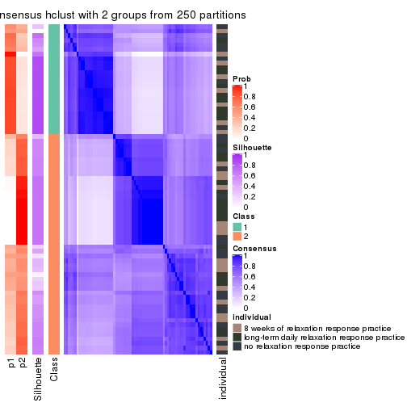
consensus_heatmap(res, k = 3)
consensus_heatmap(res, k = 4)
consensus_heatmap(res, k = 5)
consensus_heatmap(res, k = 6)
Heatmaps for the membership of samples in all partitions to see how consistent they are:
membership_heatmap(res, k = 2)
membership_heatmap(res, k = 3)
membership_heatmap(res, k = 4)
membership_heatmap(res, k = 5)
membership_heatmap(res, k = 6)
As soon as we have had the classes for columns, we can look for signatures which are significantly different between classes which can be candidate marks for certain classes. Following are the heatmaps for signatures.
Signature heatmaps where rows are scaled:
get_signatures(res, k = 2)
get_signatures(res, k = 3)
get_signatures(res, k = 4)

get_signatures(res, k = 5)
get_signatures(res, k = 6)
Signature heatmaps where rows are not scaled:
get_signatures(res, k = 2, scale_rows = FALSE)
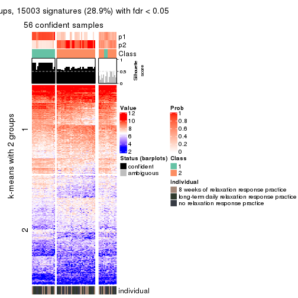
get_signatures(res, k = 3, scale_rows = FALSE)
get_signatures(res, k = 4, scale_rows = FALSE)
get_signatures(res, k = 5, scale_rows = FALSE)
get_signatures(res, k = 6, scale_rows = FALSE)
Compare the overlap of signatures from different k:
compare_signatures(res)
get_signature() returns a data frame invisibly. TO get the list of signatures, the function
call should be assigned to a variable explicitly. In following code, if plot argument is set
to FALSE, no heatmap is plotted while only the differential analysis is performed.
# code only for demonstration
tb = get_signature(res, k = ..., plot = FALSE)
An example of the output of tb is:
#> which_row fdr mean_1 mean_2 scaled_mean_1 scaled_mean_2 km
#> 1 38 0.042760348 8.373488 9.131774 -0.5533452 0.5164555 1
#> 2 40 0.018707592 7.106213 8.469186 -0.6173731 0.5762149 1
#> 3 55 0.019134737 10.221463 11.207825 -0.6159697 0.5749050 1
#> 4 59 0.006059896 5.921854 7.869574 -0.6899429 0.6439467 1
#> 5 60 0.018055526 8.928898 10.211722 -0.6204761 0.5791110 1
#> 6 98 0.009384629 15.714769 14.887706 0.6635654 -0.6193277 2
...
The columns in tb are:
which_row: row indices corresponding to the input matrix.fdr: FDR for the differential test. mean_x: The mean value in group x.scaled_mean_x: The mean value in group x after rows are scaled.km: Row groups if k-means clustering is applied to rows.UMAP plot which shows how samples are separated.
dimension_reduction(res, k = 2, method = "UMAP")
dimension_reduction(res, k = 3, method = "UMAP")
dimension_reduction(res, k = 4, method = "UMAP")
dimension_reduction(res, k = 5, method = "UMAP")
dimension_reduction(res, k = 6, method = "UMAP")
Following heatmap shows how subgroups are split when increasing k:
collect_classes(res)
Test correlation between subgroups and known annotations. If the known annotation is numeric, one-way ANOVA test is applied, and if the known annotation is discrete, chi-squared contingency table test is applied.
test_to_known_factors(res)
#> n individual(p) k
#> SD:hclust 56 0.689 2
#> SD:hclust 41 0.312 3
#> SD:hclust 38 0.587 4
#> SD:hclust 64 0.485 5
#> SD:hclust 65 0.439 6
If matrix rows can be associated to genes, consider to use GO_Enrichment(res,
...) to perform function enrichment for the signature genes.
The object with results only for a single top-value method and a single partition method can be extracted as:
res = res_list["SD", "kmeans"]
# you can also extract it by
# res = res_list["SD:kmeans"]
A summary of res and all the functions that can be applied to it:
res
#> A 'ConsensusPartition' object with k = 2, 3, 4, 5, 6.
#> On a matrix with 51941 rows and 72 columns.
#> Top rows (1000, 2000, 3000, 4000, 5000) are extracted by 'SD' method.
#> Subgroups are detected by 'kmeans' method.
#> Performed in total 1250 partitions by row resampling.
#> Best k for subgroups seems to be 3.
#>
#> Following methods can be applied to this 'ConsensusPartition' object:
#> [1] "cola_report" "collect_classes" "collect_plots"
#> [4] "collect_stats" "colnames" "compare_signatures"
#> [7] "consensus_heatmap" "dimension_reduction" "functional_enrichment"
#> [10] "get_anno_col" "get_anno" "get_classes"
#> [13] "get_consensus" "get_matrix" "get_membership"
#> [16] "get_param" "get_signatures" "get_stats"
#> [19] "is_best_k" "is_stable_k" "membership_heatmap"
#> [22] "ncol" "nrow" "plot_ecdf"
#> [25] "rownames" "select_partition_number" "show"
#> [28] "suggest_best_k" "test_to_known_factors"
collect_plots() function collects all the plots made from res for all k (number of partitions)
into one single page to provide an easy and fast comparison between different k.
collect_plots(res)
The plots are:
k and the heatmap of
predicted classes for each k.k.k.k.All the plots in panels can be made by individual functions and they are plotted later in this section.
select_partition_number() produces several plots showing different
statistics for choosing “optimized” k. There are following statistics:
k;k, the area increased is defined as \(A_k - A_{k-1}\).The detailed explanations of these statistics can be found in the cola vignette.
Generally speaking, lower PAC score, higher mean silhouette score or higher
concordance corresponds to better partition. Rand index and Jaccard index
measure how similar the current partition is compared to partition with k-1.
If they are too similar, we won't accept k is better than k-1.
select_partition_number(res)
The numeric values for all these statistics can be obtained by get_stats().
get_stats(res)
#> k 1-PAC mean_silhouette concordance area_increased Rand Jaccard
#> 2 2 0.372 0.770 0.880 0.4832 0.499 0.499
#> 3 3 0.813 0.809 0.914 0.2896 0.737 0.535
#> 4 4 0.640 0.791 0.857 0.1554 0.746 0.425
#> 5 5 0.646 0.651 0.813 0.0703 0.973 0.900
#> 6 6 0.679 0.597 0.776 0.0467 0.939 0.757
suggest_best_k() suggests the best \(k\) based on these statistics. The rules are as follows:
NA.suggest_best_k(res)
#> [1] 3
Following shows the table of the partitions (You need to click the show/hide
code output link to see it). The membership matrix (columns with name p*)
is inferred by
clue::cl_consensus()
function with the SE method. Basically the value in the membership matrix
represents the probability to belong to a certain group. The finall class
label for an item is determined with the group with highest probability it
belongs to.
In get_classes() function, the entropy is calculated from the membership
matrix and the silhouette score is calculated from the consensus matrix.
cbind(get_classes(res, k = 2), get_membership(res, k = 2))
#> class entropy silhouette p1 p2
#> GSM253663 1 0.5629 0.88381 0.868 0.132
#> GSM253664 2 0.0000 0.86553 0.000 1.000
#> GSM253665 1 0.4431 0.89627 0.908 0.092
#> GSM253666 2 0.0000 0.86553 0.000 1.000
#> GSM253667 2 0.0000 0.86553 0.000 1.000
#> GSM253668 2 0.0000 0.86553 0.000 1.000
#> GSM253669 2 0.0000 0.86553 0.000 1.000
#> GSM253670 1 0.4815 0.90096 0.896 0.104
#> GSM253671 1 0.7745 0.77328 0.772 0.228
#> GSM253672 1 0.4815 0.90096 0.896 0.104
#> GSM253673 2 0.7674 0.62066 0.224 0.776
#> GSM253674 2 0.0000 0.86553 0.000 1.000
#> GSM253675 2 0.0000 0.86553 0.000 1.000
#> GSM253676 1 0.9393 0.55604 0.644 0.356
#> GSM253677 1 0.4815 0.90096 0.896 0.104
#> GSM253678 2 0.0000 0.86553 0.000 1.000
#> GSM253679 1 0.4815 0.90096 0.896 0.104
#> GSM253680 2 0.4815 0.77950 0.104 0.896
#> GSM253681 2 0.9686 0.30136 0.396 0.604
#> GSM253682 2 0.9491 0.51565 0.368 0.632
#> GSM253683 2 0.9323 0.54840 0.348 0.652
#> GSM253684 1 0.0376 0.83401 0.996 0.004
#> GSM253685 1 0.0938 0.83168 0.988 0.012
#> GSM253686 1 0.6438 0.85553 0.836 0.164
#> GSM253687 1 0.4815 0.90096 0.896 0.104
#> GSM253688 1 0.6048 0.87088 0.852 0.148
#> GSM253689 2 0.9922 0.00366 0.448 0.552
#> GSM253690 1 0.5946 0.87441 0.856 0.144
#> GSM253691 2 0.9393 0.33637 0.356 0.644
#> GSM253692 2 0.9427 0.32483 0.360 0.640
#> GSM253693 2 0.0000 0.86553 0.000 1.000
#> GSM253694 2 0.0000 0.86553 0.000 1.000
#> GSM253695 1 0.9922 0.33519 0.552 0.448
#> GSM253696 1 0.4161 0.89166 0.916 0.084
#> GSM253697 2 0.0000 0.86553 0.000 1.000
#> GSM253698 2 0.0000 0.86553 0.000 1.000
#> GSM253699 2 0.3879 0.80751 0.076 0.924
#> GSM253700 2 0.0000 0.86553 0.000 1.000
#> GSM253701 1 0.4562 0.89818 0.904 0.096
#> GSM253702 1 0.4815 0.90096 0.896 0.104
#> GSM253703 2 0.0000 0.86553 0.000 1.000
#> GSM253704 2 0.0000 0.86553 0.000 1.000
#> GSM253705 1 0.4815 0.90096 0.896 0.104
#> GSM253706 1 0.0376 0.83401 0.996 0.004
#> GSM253707 2 0.9393 0.53653 0.356 0.644
#> GSM253708 2 0.9358 0.54275 0.352 0.648
#> GSM253709 1 0.4562 0.89865 0.904 0.096
#> GSM253710 1 0.4815 0.90096 0.896 0.104
#> GSM253711 2 0.0000 0.86553 0.000 1.000
#> GSM253712 1 0.4815 0.90096 0.896 0.104
#> GSM253713 1 0.4815 0.90096 0.896 0.104
#> GSM253714 1 0.9998 0.19158 0.508 0.492
#> GSM253715 2 0.0000 0.86553 0.000 1.000
#> GSM253716 2 0.0000 0.86553 0.000 1.000
#> GSM253717 2 0.9286 0.37167 0.344 0.656
#> GSM253718 2 0.0000 0.86553 0.000 1.000
#> GSM253719 2 0.0000 0.86553 0.000 1.000
#> GSM253720 2 0.0000 0.86553 0.000 1.000
#> GSM253721 2 0.0000 0.86553 0.000 1.000
#> GSM253722 2 0.0000 0.86553 0.000 1.000
#> GSM253723 2 0.9393 0.53653 0.356 0.644
#> GSM253724 2 0.0000 0.86553 0.000 1.000
#> GSM253725 1 0.4815 0.90096 0.896 0.104
#> GSM253726 1 0.4815 0.90096 0.896 0.104
#> GSM253727 1 0.5059 0.89701 0.888 0.112
#> GSM253728 2 0.0000 0.86553 0.000 1.000
#> GSM253729 1 0.7745 0.57390 0.772 0.228
#> GSM253730 1 0.6148 0.70162 0.848 0.152
#> GSM253731 1 0.0376 0.83401 0.996 0.004
#> GSM253732 2 0.8443 0.64794 0.272 0.728
#> GSM253733 1 0.0376 0.83401 0.996 0.004
#> GSM253734 2 0.2043 0.84882 0.032 0.968
cbind(get_classes(res, k = 3), get_membership(res, k = 3))
#> class entropy silhouette p1 p2 p3
#> GSM253663 1 0.0848 0.8530 0.984 0.008 0.008
#> GSM253664 2 0.0424 0.9279 0.000 0.992 0.008
#> GSM253665 1 0.1411 0.8503 0.964 0.000 0.036
#> GSM253666 2 0.1315 0.9200 0.020 0.972 0.008
#> GSM253667 2 0.0424 0.9283 0.000 0.992 0.008
#> GSM253668 2 0.0000 0.9298 0.000 1.000 0.000
#> GSM253669 2 0.1832 0.9112 0.036 0.956 0.008
#> GSM253670 1 0.0000 0.8565 1.000 0.000 0.000
#> GSM253671 1 0.0424 0.8549 0.992 0.008 0.000
#> GSM253672 1 0.0000 0.8565 1.000 0.000 0.000
#> GSM253673 2 0.6434 0.3462 0.380 0.612 0.008
#> GSM253674 2 0.1711 0.9136 0.032 0.960 0.008
#> GSM253675 2 0.0000 0.9298 0.000 1.000 0.000
#> GSM253676 1 0.1878 0.8337 0.952 0.044 0.004
#> GSM253677 1 0.0892 0.8542 0.980 0.000 0.020
#> GSM253678 2 0.0000 0.9298 0.000 1.000 0.000
#> GSM253679 1 0.1411 0.8503 0.964 0.000 0.036
#> GSM253680 2 0.6297 0.4198 0.352 0.640 0.008
#> GSM253681 1 0.7585 0.0639 0.484 0.476 0.040
#> GSM253682 3 0.1774 0.9073 0.016 0.024 0.960
#> GSM253683 3 0.2703 0.9038 0.016 0.056 0.928
#> GSM253684 3 0.1529 0.9008 0.040 0.000 0.960
#> GSM253685 3 0.1643 0.8996 0.044 0.000 0.956
#> GSM253686 1 0.1015 0.8514 0.980 0.012 0.008
#> GSM253687 1 0.0237 0.8564 0.996 0.000 0.004
#> GSM253688 1 0.0848 0.8530 0.984 0.008 0.008
#> GSM253689 1 0.6180 0.5021 0.660 0.332 0.008
#> GSM253690 1 0.0848 0.8530 0.984 0.008 0.008
#> GSM253691 1 0.6565 0.3102 0.576 0.416 0.008
#> GSM253692 1 0.6513 0.3538 0.592 0.400 0.008
#> GSM253693 2 0.1832 0.9112 0.036 0.956 0.008
#> GSM253694 2 0.1411 0.9144 0.036 0.964 0.000
#> GSM253695 1 0.5580 0.6263 0.736 0.256 0.008
#> GSM253696 1 0.1411 0.8503 0.964 0.000 0.036
#> GSM253697 2 0.0424 0.9283 0.000 0.992 0.008
#> GSM253698 2 0.0000 0.9298 0.000 1.000 0.000
#> GSM253699 2 0.5061 0.7120 0.208 0.784 0.008
#> GSM253700 2 0.0424 0.9283 0.000 0.992 0.008
#> GSM253701 1 0.1411 0.8503 0.964 0.000 0.036
#> GSM253702 1 0.1411 0.8503 0.964 0.000 0.036
#> GSM253703 2 0.0424 0.9283 0.000 0.992 0.008
#> GSM253704 2 0.0424 0.9283 0.000 0.992 0.008
#> GSM253705 1 0.0000 0.8565 1.000 0.000 0.000
#> GSM253706 3 0.5905 0.5578 0.352 0.000 0.648
#> GSM253707 3 0.2703 0.9038 0.016 0.056 0.928
#> GSM253708 3 0.2703 0.9038 0.016 0.056 0.928
#> GSM253709 1 0.2165 0.8403 0.936 0.000 0.064
#> GSM253710 1 0.1411 0.8503 0.964 0.000 0.036
#> GSM253711 2 0.0424 0.9290 0.000 0.992 0.008
#> GSM253712 1 0.1411 0.8503 0.964 0.000 0.036
#> GSM253713 1 0.1411 0.8503 0.964 0.000 0.036
#> GSM253714 1 0.6129 0.5165 0.668 0.324 0.008
#> GSM253715 2 0.0592 0.9283 0.000 0.988 0.012
#> GSM253716 2 0.0424 0.9283 0.000 0.992 0.008
#> GSM253717 1 0.6587 0.2874 0.568 0.424 0.008
#> GSM253718 2 0.0424 0.9283 0.000 0.992 0.008
#> GSM253719 2 0.0424 0.9283 0.000 0.992 0.008
#> GSM253720 2 0.1832 0.9112 0.036 0.956 0.008
#> GSM253721 2 0.0000 0.9298 0.000 1.000 0.000
#> GSM253722 2 0.0000 0.9298 0.000 1.000 0.000
#> GSM253723 3 0.2492 0.9060 0.016 0.048 0.936
#> GSM253724 2 0.0424 0.9283 0.000 0.992 0.008
#> GSM253725 1 0.0000 0.8565 1.000 0.000 0.000
#> GSM253726 1 0.1289 0.8514 0.968 0.000 0.032
#> GSM253727 1 0.0000 0.8565 1.000 0.000 0.000
#> GSM253728 2 0.0000 0.9298 0.000 1.000 0.000
#> GSM253729 3 0.1525 0.9048 0.032 0.004 0.964
#> GSM253730 3 0.1525 0.9048 0.032 0.004 0.964
#> GSM253731 3 0.5905 0.5578 0.352 0.000 0.648
#> GSM253732 3 0.2356 0.8869 0.000 0.072 0.928
#> GSM253733 1 0.1411 0.8503 0.964 0.000 0.036
#> GSM253734 2 0.7208 0.4133 0.340 0.620 0.040
cbind(get_classes(res, k = 4), get_membership(res, k = 4))
#> class entropy silhouette p1 p2 p3 p4
#> GSM253663 2 0.4624 0.586 0.340 0.660 0.000 0.000
#> GSM253664 2 0.4776 0.476 0.000 0.624 0.000 0.376
#> GSM253665 1 0.0469 0.900 0.988 0.012 0.000 0.000
#> GSM253666 2 0.4624 0.563 0.000 0.660 0.000 0.340
#> GSM253667 4 0.0817 0.878 0.000 0.024 0.000 0.976
#> GSM253668 4 0.2011 0.864 0.000 0.080 0.000 0.920
#> GSM253669 2 0.3837 0.709 0.000 0.776 0.000 0.224
#> GSM253670 1 0.2081 0.874 0.916 0.084 0.000 0.000
#> GSM253671 1 0.4699 0.551 0.676 0.320 0.004 0.000
#> GSM253672 1 0.2011 0.874 0.920 0.080 0.000 0.000
#> GSM253673 2 0.4274 0.777 0.072 0.820 0.000 0.108
#> GSM253674 2 0.4134 0.664 0.000 0.740 0.000 0.260
#> GSM253675 4 0.4193 0.669 0.000 0.268 0.000 0.732
#> GSM253676 2 0.3982 0.726 0.220 0.776 0.000 0.004
#> GSM253677 1 0.0592 0.899 0.984 0.016 0.000 0.000
#> GSM253678 4 0.4564 0.502 0.000 0.328 0.000 0.672
#> GSM253679 1 0.0469 0.900 0.988 0.012 0.000 0.000
#> GSM253680 2 0.4015 0.773 0.052 0.832 0.000 0.116
#> GSM253681 2 0.4743 0.771 0.104 0.804 0.008 0.084
#> GSM253682 3 0.0336 0.982 0.000 0.008 0.992 0.000
#> GSM253683 3 0.1109 0.981 0.000 0.028 0.968 0.004
#> GSM253684 3 0.0336 0.982 0.000 0.008 0.992 0.000
#> GSM253685 3 0.0376 0.980 0.004 0.004 0.992 0.000
#> GSM253686 2 0.4134 0.700 0.260 0.740 0.000 0.000
#> GSM253687 1 0.1211 0.896 0.960 0.040 0.000 0.000
#> GSM253688 2 0.4543 0.613 0.324 0.676 0.000 0.000
#> GSM253689 2 0.4257 0.783 0.140 0.812 0.000 0.048
#> GSM253690 2 0.4522 0.612 0.320 0.680 0.000 0.000
#> GSM253691 2 0.4312 0.784 0.132 0.812 0.000 0.056
#> GSM253692 2 0.4312 0.784 0.132 0.812 0.000 0.056
#> GSM253693 2 0.3837 0.709 0.000 0.776 0.000 0.224
#> GSM253694 2 0.5299 0.441 0.008 0.600 0.004 0.388
#> GSM253695 2 0.4104 0.774 0.164 0.808 0.000 0.028
#> GSM253696 1 0.0336 0.899 0.992 0.008 0.000 0.000
#> GSM253697 4 0.1022 0.877 0.000 0.032 0.000 0.968
#> GSM253698 4 0.4193 0.669 0.000 0.268 0.000 0.732
#> GSM253699 2 0.3653 0.764 0.028 0.844 0.000 0.128
#> GSM253700 4 0.0336 0.867 0.000 0.008 0.000 0.992
#> GSM253701 1 0.0469 0.898 0.988 0.012 0.000 0.000
#> GSM253702 1 0.0336 0.901 0.992 0.008 0.000 0.000
#> GSM253703 4 0.0707 0.878 0.000 0.020 0.000 0.980
#> GSM253704 4 0.1118 0.850 0.000 0.036 0.000 0.964
#> GSM253705 1 0.3123 0.797 0.844 0.156 0.000 0.000
#> GSM253706 1 0.4500 0.522 0.684 0.000 0.316 0.000
#> GSM253707 3 0.1109 0.981 0.000 0.028 0.968 0.004
#> GSM253708 3 0.1109 0.981 0.000 0.028 0.968 0.004
#> GSM253709 1 0.4682 0.746 0.764 0.208 0.008 0.020
#> GSM253710 1 0.0921 0.899 0.972 0.028 0.000 0.000
#> GSM253711 2 0.4761 0.480 0.000 0.628 0.000 0.372
#> GSM253712 1 0.0921 0.899 0.972 0.028 0.000 0.000
#> GSM253713 1 0.0469 0.900 0.988 0.012 0.000 0.000
#> GSM253714 2 0.4356 0.781 0.148 0.804 0.000 0.048
#> GSM253715 2 0.4776 0.480 0.000 0.624 0.000 0.376
#> GSM253716 4 0.1118 0.850 0.000 0.036 0.000 0.964
#> GSM253717 2 0.4749 0.763 0.124 0.796 0.004 0.076
#> GSM253718 4 0.0707 0.878 0.000 0.020 0.000 0.980
#> GSM253719 4 0.0707 0.878 0.000 0.020 0.000 0.980
#> GSM253720 2 0.3764 0.716 0.000 0.784 0.000 0.216
#> GSM253721 4 0.2216 0.861 0.000 0.092 0.000 0.908
#> GSM253722 4 0.2345 0.856 0.000 0.100 0.000 0.900
#> GSM253723 3 0.3295 0.922 0.008 0.072 0.884 0.036
#> GSM253724 4 0.0336 0.867 0.000 0.008 0.000 0.992
#> GSM253725 1 0.1389 0.892 0.952 0.048 0.000 0.000
#> GSM253726 1 0.0188 0.900 0.996 0.004 0.000 0.000
#> GSM253727 1 0.3486 0.782 0.812 0.188 0.000 0.000
#> GSM253728 4 0.4193 0.669 0.000 0.268 0.000 0.732
#> GSM253729 3 0.0336 0.982 0.000 0.008 0.992 0.000
#> GSM253730 3 0.0336 0.982 0.000 0.008 0.992 0.000
#> GSM253731 1 0.4500 0.522 0.684 0.000 0.316 0.000
#> GSM253732 3 0.1109 0.981 0.000 0.028 0.968 0.004
#> GSM253733 1 0.0707 0.895 0.980 0.020 0.000 0.000
#> GSM253734 2 0.3568 0.703 0.052 0.872 0.008 0.068
cbind(get_classes(res, k = 5), get_membership(res, k = 5))
#> class entropy silhouette p1 p2 p3 p4 p5
#> GSM253663 4 0.3750 0.5057 0.232 0.000 0.000 0.756 0.012
#> GSM253664 4 0.5399 0.5378 0.000 0.188 0.000 0.664 0.148
#> GSM253665 1 0.0404 0.7929 0.988 0.000 0.000 0.012 0.000
#> GSM253666 4 0.4766 0.6166 0.000 0.132 0.000 0.732 0.136
#> GSM253667 2 0.0404 0.7386 0.000 0.988 0.000 0.000 0.012
#> GSM253668 2 0.4010 0.7063 0.000 0.796 0.000 0.116 0.088
#> GSM253669 4 0.3814 0.6696 0.000 0.068 0.000 0.808 0.124
#> GSM253670 1 0.3675 0.7038 0.788 0.000 0.000 0.188 0.024
#> GSM253671 1 0.6615 -0.0624 0.408 0.000 0.000 0.376 0.216
#> GSM253672 1 0.3086 0.7213 0.816 0.000 0.000 0.180 0.004
#> GSM253673 4 0.2773 0.6884 0.000 0.020 0.000 0.868 0.112
#> GSM253674 4 0.4863 0.6051 0.000 0.088 0.000 0.708 0.204
#> GSM253675 2 0.6405 0.5258 0.000 0.512 0.000 0.236 0.252
#> GSM253676 4 0.2632 0.6710 0.040 0.000 0.000 0.888 0.072
#> GSM253677 1 0.2723 0.7626 0.864 0.000 0.000 0.012 0.124
#> GSM253678 2 0.6247 0.2658 0.000 0.484 0.000 0.364 0.152
#> GSM253679 1 0.2470 0.7754 0.884 0.000 0.000 0.012 0.104
#> GSM253680 4 0.2766 0.6926 0.008 0.024 0.000 0.884 0.084
#> GSM253681 4 0.5284 0.0145 0.032 0.004 0.004 0.544 0.416
#> GSM253682 3 0.0000 0.9236 0.000 0.000 1.000 0.000 0.000
#> GSM253683 3 0.1928 0.9180 0.000 0.004 0.920 0.004 0.072
#> GSM253684 3 0.0000 0.9236 0.000 0.000 1.000 0.000 0.000
#> GSM253685 3 0.0510 0.9184 0.000 0.000 0.984 0.000 0.016
#> GSM253686 4 0.3141 0.6123 0.152 0.000 0.000 0.832 0.016
#> GSM253687 1 0.2439 0.7680 0.876 0.000 0.000 0.120 0.004
#> GSM253688 4 0.3519 0.5284 0.216 0.000 0.000 0.776 0.008
#> GSM253689 4 0.1493 0.7002 0.028 0.000 0.000 0.948 0.024
#> GSM253690 4 0.3496 0.5339 0.200 0.000 0.000 0.788 0.012
#> GSM253691 4 0.1483 0.6974 0.012 0.008 0.000 0.952 0.028
#> GSM253692 4 0.0898 0.6980 0.020 0.000 0.000 0.972 0.008
#> GSM253693 4 0.4078 0.6666 0.000 0.068 0.000 0.784 0.148
#> GSM253694 5 0.6499 0.2660 0.000 0.192 0.000 0.368 0.440
#> GSM253695 4 0.1800 0.6763 0.048 0.000 0.000 0.932 0.020
#> GSM253696 1 0.1195 0.7889 0.960 0.000 0.000 0.012 0.028
#> GSM253697 2 0.3093 0.7162 0.000 0.824 0.000 0.008 0.168
#> GSM253698 2 0.6388 0.5292 0.000 0.516 0.000 0.240 0.244
#> GSM253699 4 0.3566 0.6717 0.004 0.024 0.000 0.812 0.160
#> GSM253700 2 0.0162 0.7369 0.000 0.996 0.000 0.000 0.004
#> GSM253701 1 0.2230 0.7654 0.884 0.000 0.000 0.000 0.116
#> GSM253702 1 0.2305 0.7796 0.896 0.000 0.000 0.012 0.092
#> GSM253703 2 0.0865 0.7326 0.000 0.972 0.000 0.004 0.024
#> GSM253704 2 0.2074 0.6653 0.000 0.896 0.000 0.000 0.104
#> GSM253705 1 0.4904 0.6148 0.688 0.000 0.000 0.240 0.072
#> GSM253706 1 0.4528 0.5790 0.728 0.000 0.212 0.000 0.060
#> GSM253707 3 0.1991 0.9174 0.000 0.004 0.916 0.004 0.076
#> GSM253708 3 0.1991 0.9174 0.000 0.004 0.916 0.004 0.076
#> GSM253709 5 0.5156 0.1525 0.320 0.000 0.000 0.060 0.620
#> GSM253710 1 0.1831 0.7869 0.920 0.000 0.000 0.076 0.004
#> GSM253711 4 0.5786 0.5231 0.000 0.168 0.004 0.632 0.196
#> GSM253712 1 0.1768 0.7880 0.924 0.000 0.000 0.072 0.004
#> GSM253713 1 0.0404 0.7929 0.988 0.000 0.000 0.012 0.000
#> GSM253714 4 0.1117 0.6946 0.020 0.000 0.000 0.964 0.016
#> GSM253715 4 0.5821 0.5144 0.000 0.176 0.004 0.628 0.192
#> GSM253716 2 0.1732 0.6879 0.000 0.920 0.000 0.000 0.080
#> GSM253717 4 0.5142 -0.0649 0.044 0.000 0.000 0.564 0.392
#> GSM253718 2 0.0162 0.7392 0.000 0.996 0.000 0.004 0.000
#> GSM253719 2 0.0000 0.7379 0.000 1.000 0.000 0.000 0.000
#> GSM253720 4 0.3289 0.6821 0.000 0.048 0.000 0.844 0.108
#> GSM253721 2 0.5223 0.6656 0.000 0.672 0.000 0.108 0.220
#> GSM253722 2 0.5442 0.6492 0.000 0.644 0.000 0.116 0.240
#> GSM253723 3 0.4714 0.5021 0.000 0.012 0.576 0.004 0.408
#> GSM253724 2 0.0162 0.7369 0.000 0.996 0.000 0.000 0.004
#> GSM253725 1 0.2969 0.7587 0.852 0.000 0.000 0.128 0.020
#> GSM253726 1 0.0162 0.7931 0.996 0.000 0.000 0.004 0.000
#> GSM253727 1 0.6001 0.4525 0.580 0.000 0.000 0.244 0.176
#> GSM253728 2 0.6388 0.5292 0.000 0.516 0.000 0.240 0.244
#> GSM253729 3 0.0000 0.9236 0.000 0.000 1.000 0.000 0.000
#> GSM253730 3 0.0000 0.9236 0.000 0.000 1.000 0.000 0.000
#> GSM253731 1 0.4528 0.5790 0.728 0.000 0.212 0.000 0.060
#> GSM253732 3 0.1928 0.9180 0.000 0.004 0.920 0.004 0.072
#> GSM253733 1 0.2127 0.7655 0.892 0.000 0.000 0.000 0.108
#> GSM253734 5 0.4695 0.4753 0.024 0.008 0.000 0.296 0.672
cbind(get_classes(res, k = 6), get_membership(res, k = 6))
#> class entropy silhouette p1 p2 p3 p4 p5 p6
#> GSM253663 4 0.3984 0.4726 0.224 0.000 0.000 0.736 0.012 0.028
#> GSM253664 4 0.4994 0.1797 0.000 0.024 0.000 0.552 0.032 0.392
#> GSM253665 1 0.0603 0.7760 0.980 0.000 0.000 0.004 0.000 0.016
#> GSM253666 4 0.4284 0.4284 0.000 0.016 0.000 0.676 0.020 0.288
#> GSM253667 2 0.2003 0.8408 0.000 0.884 0.000 0.000 0.000 0.116
#> GSM253668 2 0.5425 -0.0644 0.000 0.504 0.000 0.124 0.000 0.372
#> GSM253669 4 0.3705 0.5209 0.000 0.004 0.000 0.748 0.024 0.224
#> GSM253670 1 0.3865 0.6929 0.768 0.000 0.000 0.184 0.028 0.020
#> GSM253671 4 0.6508 -0.3584 0.268 0.000 0.000 0.368 0.344 0.020
#> GSM253672 1 0.3648 0.6857 0.776 0.000 0.000 0.188 0.012 0.024
#> GSM253673 4 0.3617 0.4964 0.000 0.000 0.000 0.736 0.020 0.244
#> GSM253674 6 0.4722 -0.1365 0.000 0.004 0.000 0.468 0.036 0.492
#> GSM253675 6 0.3992 0.7186 0.000 0.104 0.000 0.136 0.000 0.760
#> GSM253676 4 0.3046 0.5594 0.024 0.000 0.000 0.852 0.024 0.100
#> GSM253677 1 0.3769 0.7294 0.768 0.000 0.000 0.008 0.188 0.036
#> GSM253678 6 0.6609 0.2073 0.000 0.232 0.000 0.352 0.032 0.384
#> GSM253679 1 0.3638 0.7413 0.784 0.000 0.000 0.008 0.172 0.036
#> GSM253680 4 0.2614 0.5966 0.004 0.004 0.000 0.884 0.052 0.056
#> GSM253681 4 0.6747 -0.2801 0.012 0.052 0.004 0.432 0.384 0.116
#> GSM253682 3 0.0000 0.8905 0.000 0.000 1.000 0.000 0.000 0.000
#> GSM253683 3 0.2197 0.8828 0.000 0.000 0.900 0.000 0.044 0.056
#> GSM253684 3 0.0146 0.8891 0.000 0.000 0.996 0.000 0.004 0.000
#> GSM253685 3 0.1003 0.8821 0.000 0.000 0.964 0.000 0.016 0.020
#> GSM253686 4 0.3559 0.5476 0.152 0.000 0.000 0.800 0.012 0.036
#> GSM253687 1 0.3181 0.7264 0.824 0.000 0.000 0.144 0.012 0.020
#> GSM253688 4 0.3816 0.4984 0.200 0.000 0.000 0.760 0.012 0.028
#> GSM253689 4 0.0632 0.6269 0.000 0.000 0.000 0.976 0.000 0.024
#> GSM253690 4 0.3594 0.4931 0.204 0.000 0.000 0.768 0.008 0.020
#> GSM253691 4 0.0692 0.6238 0.000 0.000 0.000 0.976 0.004 0.020
#> GSM253692 4 0.0881 0.6245 0.008 0.000 0.000 0.972 0.008 0.012
#> GSM253693 4 0.3731 0.5294 0.000 0.008 0.000 0.756 0.024 0.212
#> GSM253694 5 0.6773 0.5684 0.000 0.208 0.000 0.256 0.468 0.068
#> GSM253695 4 0.1710 0.6079 0.020 0.000 0.000 0.936 0.016 0.028
#> GSM253696 1 0.1268 0.7739 0.952 0.000 0.000 0.004 0.036 0.008
#> GSM253697 6 0.3774 0.1830 0.000 0.408 0.000 0.000 0.000 0.592
#> GSM253698 6 0.4079 0.7205 0.000 0.112 0.000 0.136 0.000 0.752
#> GSM253699 4 0.4572 0.3724 0.000 0.008 0.000 0.636 0.040 0.316
#> GSM253700 2 0.1007 0.8688 0.000 0.956 0.000 0.000 0.000 0.044
#> GSM253701 1 0.3529 0.7400 0.788 0.000 0.000 0.004 0.172 0.036
#> GSM253702 1 0.3638 0.7413 0.784 0.000 0.000 0.008 0.172 0.036
#> GSM253703 2 0.0993 0.8607 0.000 0.964 0.000 0.000 0.012 0.024
#> GSM253704 2 0.1151 0.8294 0.000 0.956 0.000 0.000 0.032 0.012
#> GSM253705 1 0.6089 0.4914 0.528 0.000 0.000 0.304 0.128 0.040
#> GSM253706 1 0.4607 0.6236 0.720 0.000 0.180 0.000 0.080 0.020
#> GSM253707 3 0.2568 0.8779 0.000 0.000 0.876 0.000 0.056 0.068
#> GSM253708 3 0.2568 0.8779 0.000 0.000 0.876 0.000 0.056 0.068
#> GSM253709 5 0.3149 0.5524 0.084 0.000 0.000 0.028 0.852 0.036
#> GSM253710 1 0.2395 0.7618 0.892 0.000 0.000 0.076 0.012 0.020
#> GSM253711 4 0.5804 0.0898 0.000 0.060 0.000 0.484 0.052 0.404
#> GSM253712 1 0.2282 0.7643 0.900 0.000 0.000 0.068 0.012 0.020
#> GSM253713 1 0.0405 0.7778 0.988 0.000 0.000 0.004 0.008 0.000
#> GSM253714 4 0.0291 0.6214 0.000 0.000 0.000 0.992 0.004 0.004
#> GSM253715 4 0.5887 0.1089 0.000 0.060 0.000 0.488 0.060 0.392
#> GSM253716 2 0.0820 0.8407 0.000 0.972 0.000 0.000 0.016 0.012
#> GSM253717 5 0.5360 0.3871 0.016 0.008 0.000 0.428 0.500 0.048
#> GSM253718 2 0.1765 0.8560 0.000 0.904 0.000 0.000 0.000 0.096
#> GSM253719 2 0.1610 0.8617 0.000 0.916 0.000 0.000 0.000 0.084
#> GSM253720 4 0.3817 0.5821 0.000 0.012 0.000 0.784 0.052 0.152
#> GSM253721 6 0.4286 0.6407 0.000 0.208 0.000 0.068 0.004 0.720
#> GSM253722 6 0.4294 0.6651 0.000 0.188 0.000 0.080 0.004 0.728
#> GSM253723 3 0.6701 0.1181 0.000 0.084 0.396 0.000 0.396 0.124
#> GSM253724 2 0.1082 0.8684 0.000 0.956 0.000 0.000 0.004 0.040
#> GSM253725 1 0.4053 0.7326 0.780 0.000 0.000 0.140 0.044 0.036
#> GSM253726 1 0.1176 0.7806 0.956 0.000 0.000 0.000 0.024 0.020
#> GSM253727 1 0.6634 0.4126 0.496 0.008 0.000 0.240 0.216 0.040
#> GSM253728 6 0.4079 0.7205 0.000 0.112 0.000 0.136 0.000 0.752
#> GSM253729 3 0.0000 0.8905 0.000 0.000 1.000 0.000 0.000 0.000
#> GSM253730 3 0.0000 0.8905 0.000 0.000 1.000 0.000 0.000 0.000
#> GSM253731 1 0.4607 0.6236 0.720 0.000 0.180 0.000 0.080 0.020
#> GSM253732 3 0.2197 0.8828 0.000 0.000 0.900 0.000 0.044 0.056
#> GSM253733 1 0.3521 0.7374 0.796 0.000 0.000 0.004 0.156 0.044
#> GSM253734 5 0.3865 0.6654 0.004 0.012 0.000 0.136 0.792 0.056
Heatmaps for the consensus matrix. It visualizes the probability of two samples to be in a same group.
consensus_heatmap(res, k = 2)
consensus_heatmap(res, k = 3)
consensus_heatmap(res, k = 4)
consensus_heatmap(res, k = 5)
consensus_heatmap(res, k = 6)
Heatmaps for the membership of samples in all partitions to see how consistent they are:
membership_heatmap(res, k = 2)

membership_heatmap(res, k = 3)
membership_heatmap(res, k = 4)
membership_heatmap(res, k = 5)

membership_heatmap(res, k = 6)
As soon as we have had the classes for columns, we can look for signatures which are significantly different between classes which can be candidate marks for certain classes. Following are the heatmaps for signatures.
Signature heatmaps where rows are scaled:
get_signatures(res, k = 2)
get_signatures(res, k = 3)
get_signatures(res, k = 4)
get_signatures(res, k = 5)
get_signatures(res, k = 6)
Signature heatmaps where rows are not scaled:
get_signatures(res, k = 2, scale_rows = FALSE)
get_signatures(res, k = 3, scale_rows = FALSE)
get_signatures(res, k = 4, scale_rows = FALSE)
get_signatures(res, k = 5, scale_rows = FALSE)
get_signatures(res, k = 6, scale_rows = FALSE)
Compare the overlap of signatures from different k:
compare_signatures(res)
get_signature() returns a data frame invisibly. TO get the list of signatures, the function
call should be assigned to a variable explicitly. In following code, if plot argument is set
to FALSE, no heatmap is plotted while only the differential analysis is performed.
# code only for demonstration
tb = get_signature(res, k = ..., plot = FALSE)
An example of the output of tb is:
#> which_row fdr mean_1 mean_2 scaled_mean_1 scaled_mean_2 km
#> 1 38 0.042760348 8.373488 9.131774 -0.5533452 0.5164555 1
#> 2 40 0.018707592 7.106213 8.469186 -0.6173731 0.5762149 1
#> 3 55 0.019134737 10.221463 11.207825 -0.6159697 0.5749050 1
#> 4 59 0.006059896 5.921854 7.869574 -0.6899429 0.6439467 1
#> 5 60 0.018055526 8.928898 10.211722 -0.6204761 0.5791110 1
#> 6 98 0.009384629 15.714769 14.887706 0.6635654 -0.6193277 2
...
The columns in tb are:
which_row: row indices corresponding to the input matrix.fdr: FDR for the differential test. mean_x: The mean value in group x.scaled_mean_x: The mean value in group x after rows are scaled.km: Row groups if k-means clustering is applied to rows.UMAP plot which shows how samples are separated.
dimension_reduction(res, k = 2, method = "UMAP")
dimension_reduction(res, k = 3, method = "UMAP")
dimension_reduction(res, k = 4, method = "UMAP")
dimension_reduction(res, k = 5, method = "UMAP")
dimension_reduction(res, k = 6, method = "UMAP")
Following heatmap shows how subgroups are split when increasing k:
collect_classes(res)
Test correlation between subgroups and known annotations. If the known annotation is numeric, one-way ANOVA test is applied, and if the known annotation is discrete, chi-squared contingency table test is applied.
test_to_known_factors(res)
#> n individual(p) k
#> SD:kmeans 65 0.910 2
#> SD:kmeans 65 0.874 3
#> SD:kmeans 68 0.689 4
#> SD:kmeans 64 0.599 5
#> SD:kmeans 53 0.656 6
If matrix rows can be associated to genes, consider to use GO_Enrichment(res,
...) to perform function enrichment for the signature genes.
The object with results only for a single top-value method and a single partition method can be extracted as:
res = res_list["SD", "skmeans"]
# you can also extract it by
# res = res_list["SD:skmeans"]
A summary of res and all the functions that can be applied to it:
res
#> A 'ConsensusPartition' object with k = 2, 3, 4, 5, 6.
#> On a matrix with 51941 rows and 72 columns.
#> Top rows (1000, 2000, 3000, 4000, 5000) are extracted by 'SD' method.
#> Subgroups are detected by 'skmeans' method.
#> Performed in total 1250 partitions by row resampling.
#> Best k for subgroups seems to be 3.
#>
#> Following methods can be applied to this 'ConsensusPartition' object:
#> [1] "cola_report" "collect_classes" "collect_plots"
#> [4] "collect_stats" "colnames" "compare_signatures"
#> [7] "consensus_heatmap" "dimension_reduction" "functional_enrichment"
#> [10] "get_anno_col" "get_anno" "get_classes"
#> [13] "get_consensus" "get_matrix" "get_membership"
#> [16] "get_param" "get_signatures" "get_stats"
#> [19] "is_best_k" "is_stable_k" "membership_heatmap"
#> [22] "ncol" "nrow" "plot_ecdf"
#> [25] "rownames" "select_partition_number" "show"
#> [28] "suggest_best_k" "test_to_known_factors"
collect_plots() function collects all the plots made from res for all k (number of partitions)
into one single page to provide an easy and fast comparison between different k.
collect_plots(res)
The plots are:
k and the heatmap of
predicted classes for each k.k.k.k.All the plots in panels can be made by individual functions and they are plotted later in this section.
select_partition_number() produces several plots showing different
statistics for choosing “optimized” k. There are following statistics:
k;k, the area increased is defined as \(A_k - A_{k-1}\).The detailed explanations of these statistics can be found in the cola vignette.
Generally speaking, lower PAC score, higher mean silhouette score or higher
concordance corresponds to better partition. Rand index and Jaccard index
measure how similar the current partition is compared to partition with k-1.
If they are too similar, we won't accept k is better than k-1.
select_partition_number(res)
The numeric values for all these statistics can be obtained by get_stats().
get_stats(res)
#> k 1-PAC mean_silhouette concordance area_increased Rand Jaccard
#> 2 2 0.606 0.824 0.923 0.5071 0.493 0.493
#> 3 3 0.845 0.851 0.943 0.2830 0.766 0.562
#> 4 4 0.675 0.733 0.860 0.1451 0.821 0.537
#> 5 5 0.631 0.563 0.752 0.0665 0.951 0.811
#> 6 6 0.633 0.486 0.691 0.0396 0.931 0.703
suggest_best_k() suggests the best \(k\) based on these statistics. The rules are as follows:
NA.suggest_best_k(res)
#> [1] 3
Following shows the table of the partitions (You need to click the show/hide
code output link to see it). The membership matrix (columns with name p*)
is inferred by
clue::cl_consensus()
function with the SE method. Basically the value in the membership matrix
represents the probability to belong to a certain group. The finall class
label for an item is determined with the group with highest probability it
belongs to.
In get_classes() function, the entropy is calculated from the membership
matrix and the silhouette score is calculated from the consensus matrix.
cbind(get_classes(res, k = 2), get_membership(res, k = 2))
#> class entropy silhouette p1 p2
#> GSM253663 1 0.0000 0.914 1.000 0.000
#> GSM253664 2 0.0000 0.905 0.000 1.000
#> GSM253665 1 0.0000 0.914 1.000 0.000
#> GSM253666 2 0.0000 0.905 0.000 1.000
#> GSM253667 2 0.0000 0.905 0.000 1.000
#> GSM253668 2 0.0000 0.905 0.000 1.000
#> GSM253669 2 0.0000 0.905 0.000 1.000
#> GSM253670 1 0.0000 0.914 1.000 0.000
#> GSM253671 1 0.5946 0.804 0.856 0.144
#> GSM253672 1 0.0000 0.914 1.000 0.000
#> GSM253673 2 0.9881 0.112 0.436 0.564
#> GSM253674 2 0.0000 0.905 0.000 1.000
#> GSM253675 2 0.0000 0.905 0.000 1.000
#> GSM253676 1 0.7219 0.750 0.800 0.200
#> GSM253677 1 0.0000 0.914 1.000 0.000
#> GSM253678 2 0.0000 0.905 0.000 1.000
#> GSM253679 1 0.0000 0.914 1.000 0.000
#> GSM253680 2 0.8909 0.488 0.308 0.692
#> GSM253681 2 0.9248 0.547 0.340 0.660
#> GSM253682 2 0.7453 0.739 0.212 0.788
#> GSM253683 2 0.7299 0.747 0.204 0.796
#> GSM253684 1 0.0000 0.914 1.000 0.000
#> GSM253685 1 0.3274 0.864 0.940 0.060
#> GSM253686 1 0.1184 0.905 0.984 0.016
#> GSM253687 1 0.0000 0.914 1.000 0.000
#> GSM253688 1 0.0672 0.910 0.992 0.008
#> GSM253689 1 0.8016 0.701 0.756 0.244
#> GSM253690 1 0.0000 0.914 1.000 0.000
#> GSM253691 1 0.9248 0.548 0.660 0.340
#> GSM253692 1 0.9393 0.515 0.644 0.356
#> GSM253693 2 0.0000 0.905 0.000 1.000
#> GSM253694 2 0.0000 0.905 0.000 1.000
#> GSM253695 1 0.7376 0.742 0.792 0.208
#> GSM253696 1 0.0000 0.914 1.000 0.000
#> GSM253697 2 0.0000 0.905 0.000 1.000
#> GSM253698 2 0.0000 0.905 0.000 1.000
#> GSM253699 2 0.6343 0.751 0.160 0.840
#> GSM253700 2 0.0000 0.905 0.000 1.000
#> GSM253701 1 0.0000 0.914 1.000 0.000
#> GSM253702 1 0.0000 0.914 1.000 0.000
#> GSM253703 2 0.0000 0.905 0.000 1.000
#> GSM253704 2 0.0000 0.905 0.000 1.000
#> GSM253705 1 0.0000 0.914 1.000 0.000
#> GSM253706 1 0.0000 0.914 1.000 0.000
#> GSM253707 2 0.7299 0.747 0.204 0.796
#> GSM253708 2 0.7299 0.747 0.204 0.796
#> GSM253709 1 0.0000 0.914 1.000 0.000
#> GSM253710 1 0.0000 0.914 1.000 0.000
#> GSM253711 2 0.0000 0.905 0.000 1.000
#> GSM253712 1 0.0000 0.914 1.000 0.000
#> GSM253713 1 0.0000 0.914 1.000 0.000
#> GSM253714 1 0.7453 0.738 0.788 0.212
#> GSM253715 2 0.0376 0.903 0.004 0.996
#> GSM253716 2 0.0000 0.905 0.000 1.000
#> GSM253717 1 0.9209 0.556 0.664 0.336
#> GSM253718 2 0.0000 0.905 0.000 1.000
#> GSM253719 2 0.0000 0.905 0.000 1.000
#> GSM253720 2 0.0000 0.905 0.000 1.000
#> GSM253721 2 0.0000 0.905 0.000 1.000
#> GSM253722 2 0.0000 0.905 0.000 1.000
#> GSM253723 2 0.7528 0.734 0.216 0.784
#> GSM253724 2 0.0000 0.905 0.000 1.000
#> GSM253725 1 0.0000 0.914 1.000 0.000
#> GSM253726 1 0.0000 0.914 1.000 0.000
#> GSM253727 1 0.0000 0.914 1.000 0.000
#> GSM253728 2 0.0000 0.905 0.000 1.000
#> GSM253729 2 0.9963 0.241 0.464 0.536
#> GSM253730 1 0.9833 0.126 0.576 0.424
#> GSM253731 1 0.0000 0.914 1.000 0.000
#> GSM253732 2 0.6343 0.789 0.160 0.840
#> GSM253733 1 0.0000 0.914 1.000 0.000
#> GSM253734 2 0.2948 0.876 0.052 0.948
cbind(get_classes(res, k = 3), get_membership(res, k = 3))
#> class entropy silhouette p1 p2 p3
#> GSM253663 1 0.0000 0.9400 1.000 0.000 0.000
#> GSM253664 2 0.0000 0.9535 0.000 1.000 0.000
#> GSM253665 1 0.0000 0.9400 1.000 0.000 0.000
#> GSM253666 2 0.0000 0.9535 0.000 1.000 0.000
#> GSM253667 2 0.0000 0.9535 0.000 1.000 0.000
#> GSM253668 2 0.0000 0.9535 0.000 1.000 0.000
#> GSM253669 2 0.0000 0.9535 0.000 1.000 0.000
#> GSM253670 1 0.0000 0.9400 1.000 0.000 0.000
#> GSM253671 1 0.0000 0.9400 1.000 0.000 0.000
#> GSM253672 1 0.0000 0.9400 1.000 0.000 0.000
#> GSM253673 2 0.3116 0.8399 0.108 0.892 0.000
#> GSM253674 2 0.0000 0.9535 0.000 1.000 0.000
#> GSM253675 2 0.0000 0.9535 0.000 1.000 0.000
#> GSM253676 1 0.0424 0.9334 0.992 0.008 0.000
#> GSM253677 1 0.0000 0.9400 1.000 0.000 0.000
#> GSM253678 2 0.0000 0.9535 0.000 1.000 0.000
#> GSM253679 1 0.0000 0.9400 1.000 0.000 0.000
#> GSM253680 2 0.2356 0.8816 0.072 0.928 0.000
#> GSM253681 3 0.0000 0.8807 0.000 0.000 1.000
#> GSM253682 3 0.0000 0.8807 0.000 0.000 1.000
#> GSM253683 3 0.0000 0.8807 0.000 0.000 1.000
#> GSM253684 3 0.0000 0.8807 0.000 0.000 1.000
#> GSM253685 3 0.0000 0.8807 0.000 0.000 1.000
#> GSM253686 1 0.0000 0.9400 1.000 0.000 0.000
#> GSM253687 1 0.0000 0.9400 1.000 0.000 0.000
#> GSM253688 1 0.0000 0.9400 1.000 0.000 0.000
#> GSM253689 1 0.4974 0.6770 0.764 0.236 0.000
#> GSM253690 1 0.0000 0.9400 1.000 0.000 0.000
#> GSM253691 2 0.5760 0.5004 0.328 0.672 0.000
#> GSM253692 1 0.6280 0.1262 0.540 0.460 0.000
#> GSM253693 2 0.0000 0.9535 0.000 1.000 0.000
#> GSM253694 2 0.0000 0.9535 0.000 1.000 0.000
#> GSM253695 1 0.2165 0.8831 0.936 0.064 0.000
#> GSM253696 1 0.0000 0.9400 1.000 0.000 0.000
#> GSM253697 2 0.0000 0.9535 0.000 1.000 0.000
#> GSM253698 2 0.0000 0.9535 0.000 1.000 0.000
#> GSM253699 2 0.0592 0.9435 0.012 0.988 0.000
#> GSM253700 2 0.0237 0.9509 0.000 0.996 0.004
#> GSM253701 1 0.0000 0.9400 1.000 0.000 0.000
#> GSM253702 1 0.0000 0.9400 1.000 0.000 0.000
#> GSM253703 2 0.0237 0.9509 0.000 0.996 0.004
#> GSM253704 2 0.0237 0.9509 0.000 0.996 0.004
#> GSM253705 1 0.0000 0.9400 1.000 0.000 0.000
#> GSM253706 3 0.4654 0.6872 0.208 0.000 0.792
#> GSM253707 3 0.0000 0.8807 0.000 0.000 1.000
#> GSM253708 3 0.0000 0.8807 0.000 0.000 1.000
#> GSM253709 1 0.6305 0.0195 0.516 0.000 0.484
#> GSM253710 1 0.0000 0.9400 1.000 0.000 0.000
#> GSM253711 3 0.6307 0.1245 0.000 0.488 0.512
#> GSM253712 1 0.0000 0.9400 1.000 0.000 0.000
#> GSM253713 1 0.0000 0.9400 1.000 0.000 0.000
#> GSM253714 1 0.3816 0.7907 0.852 0.148 0.000
#> GSM253715 3 0.6204 0.3122 0.000 0.424 0.576
#> GSM253716 2 0.0000 0.9535 0.000 1.000 0.000
#> GSM253717 2 0.6280 0.1329 0.460 0.540 0.000
#> GSM253718 2 0.0000 0.9535 0.000 1.000 0.000
#> GSM253719 2 0.0000 0.9535 0.000 1.000 0.000
#> GSM253720 2 0.0000 0.9535 0.000 1.000 0.000
#> GSM253721 2 0.0000 0.9535 0.000 1.000 0.000
#> GSM253722 2 0.0000 0.9535 0.000 1.000 0.000
#> GSM253723 3 0.0000 0.8807 0.000 0.000 1.000
#> GSM253724 2 0.0237 0.9509 0.000 0.996 0.004
#> GSM253725 1 0.0000 0.9400 1.000 0.000 0.000
#> GSM253726 1 0.0000 0.9400 1.000 0.000 0.000
#> GSM253727 1 0.0000 0.9400 1.000 0.000 0.000
#> GSM253728 2 0.0000 0.9535 0.000 1.000 0.000
#> GSM253729 3 0.0000 0.8807 0.000 0.000 1.000
#> GSM253730 3 0.0000 0.8807 0.000 0.000 1.000
#> GSM253731 3 0.4504 0.7028 0.196 0.000 0.804
#> GSM253732 3 0.0000 0.8807 0.000 0.000 1.000
#> GSM253733 1 0.0000 0.9400 1.000 0.000 0.000
#> GSM253734 3 0.6490 0.4403 0.012 0.360 0.628
cbind(get_classes(res, k = 4), get_membership(res, k = 4))
#> class entropy silhouette p1 p2 p3 p4
#> GSM253663 2 0.4790 0.391 0.380 0.620 0.000 0.000
#> GSM253664 4 0.4907 0.379 0.000 0.420 0.000 0.580
#> GSM253665 1 0.1716 0.867 0.936 0.064 0.000 0.000
#> GSM253666 4 0.4331 0.636 0.000 0.288 0.000 0.712
#> GSM253667 4 0.0336 0.849 0.000 0.008 0.000 0.992
#> GSM253668 4 0.1792 0.843 0.000 0.068 0.000 0.932
#> GSM253669 2 0.4661 0.312 0.000 0.652 0.000 0.348
#> GSM253670 1 0.1792 0.871 0.932 0.068 0.000 0.000
#> GSM253671 1 0.4830 0.295 0.608 0.392 0.000 0.000
#> GSM253672 1 0.3219 0.808 0.836 0.164 0.000 0.000
#> GSM253673 2 0.4364 0.582 0.016 0.764 0.000 0.220
#> GSM253674 4 0.3975 0.716 0.000 0.240 0.000 0.760
#> GSM253675 4 0.2921 0.807 0.000 0.140 0.000 0.860
#> GSM253676 2 0.3908 0.635 0.212 0.784 0.000 0.004
#> GSM253677 1 0.1302 0.858 0.956 0.044 0.000 0.000
#> GSM253678 4 0.1302 0.849 0.000 0.044 0.000 0.956
#> GSM253679 1 0.0592 0.870 0.984 0.016 0.000 0.000
#> GSM253680 2 0.6162 0.436 0.076 0.620 0.000 0.304
#> GSM253681 3 0.1229 0.894 0.020 0.004 0.968 0.008
#> GSM253682 3 0.0000 0.914 0.000 0.000 1.000 0.000
#> GSM253683 3 0.0000 0.914 0.000 0.000 1.000 0.000
#> GSM253684 3 0.0000 0.914 0.000 0.000 1.000 0.000
#> GSM253685 3 0.0000 0.914 0.000 0.000 1.000 0.000
#> GSM253686 2 0.4072 0.613 0.252 0.748 0.000 0.000
#> GSM253687 1 0.2408 0.848 0.896 0.104 0.000 0.000
#> GSM253688 2 0.3942 0.628 0.236 0.764 0.000 0.000
#> GSM253689 2 0.3796 0.726 0.096 0.848 0.000 0.056
#> GSM253690 2 0.4790 0.357 0.380 0.620 0.000 0.000
#> GSM253691 2 0.2521 0.702 0.024 0.912 0.000 0.064
#> GSM253692 2 0.1975 0.724 0.048 0.936 0.000 0.016
#> GSM253693 4 0.4776 0.453 0.000 0.376 0.000 0.624
#> GSM253694 4 0.3668 0.756 0.028 0.116 0.004 0.852
#> GSM253695 2 0.2882 0.725 0.084 0.892 0.000 0.024
#> GSM253696 1 0.1474 0.871 0.948 0.052 0.000 0.000
#> GSM253697 4 0.0817 0.850 0.000 0.024 0.000 0.976
#> GSM253698 4 0.2868 0.810 0.000 0.136 0.000 0.864
#> GSM253699 2 0.5508 0.171 0.020 0.572 0.000 0.408
#> GSM253700 4 0.0188 0.849 0.000 0.004 0.000 0.996
#> GSM253701 1 0.0817 0.865 0.976 0.024 0.000 0.000
#> GSM253702 1 0.0592 0.872 0.984 0.016 0.000 0.000
#> GSM253703 4 0.0336 0.849 0.000 0.008 0.000 0.992
#> GSM253704 4 0.0895 0.842 0.000 0.020 0.004 0.976
#> GSM253705 1 0.2149 0.852 0.912 0.088 0.000 0.000
#> GSM253706 1 0.3837 0.701 0.776 0.000 0.224 0.000
#> GSM253707 3 0.0000 0.914 0.000 0.000 1.000 0.000
#> GSM253708 3 0.0000 0.914 0.000 0.000 1.000 0.000
#> GSM253709 1 0.4865 0.735 0.796 0.088 0.108 0.008
#> GSM253710 1 0.3219 0.794 0.836 0.164 0.000 0.000
#> GSM253711 3 0.6451 0.197 0.000 0.072 0.524 0.404
#> GSM253712 1 0.2704 0.834 0.876 0.124 0.000 0.000
#> GSM253713 1 0.1557 0.870 0.944 0.056 0.000 0.000
#> GSM253714 2 0.1798 0.724 0.040 0.944 0.000 0.016
#> GSM253715 3 0.6023 0.438 0.000 0.060 0.612 0.328
#> GSM253716 4 0.0336 0.848 0.000 0.008 0.000 0.992
#> GSM253717 2 0.7481 0.408 0.308 0.488 0.000 0.204
#> GSM253718 4 0.0336 0.849 0.000 0.008 0.000 0.992
#> GSM253719 4 0.0188 0.849 0.000 0.004 0.000 0.996
#> GSM253720 4 0.4800 0.499 0.004 0.340 0.000 0.656
#> GSM253721 4 0.0921 0.850 0.000 0.028 0.000 0.972
#> GSM253722 4 0.1716 0.844 0.000 0.064 0.000 0.936
#> GSM253723 3 0.0524 0.907 0.004 0.000 0.988 0.008
#> GSM253724 4 0.0188 0.849 0.000 0.004 0.000 0.996
#> GSM253725 1 0.1302 0.874 0.956 0.044 0.000 0.000
#> GSM253726 1 0.1118 0.873 0.964 0.036 0.000 0.000
#> GSM253727 1 0.2334 0.831 0.908 0.088 0.000 0.004
#> GSM253728 4 0.2704 0.815 0.000 0.124 0.000 0.876
#> GSM253729 3 0.0000 0.914 0.000 0.000 1.000 0.000
#> GSM253730 3 0.0000 0.914 0.000 0.000 1.000 0.000
#> GSM253731 1 0.4331 0.620 0.712 0.000 0.288 0.000
#> GSM253732 3 0.0000 0.914 0.000 0.000 1.000 0.000
#> GSM253733 1 0.0707 0.866 0.980 0.020 0.000 0.000
#> GSM253734 4 0.8890 0.183 0.152 0.104 0.276 0.468
cbind(get_classes(res, k = 5), get_membership(res, k = 5))
#> class entropy silhouette p1 p2 p3 p4 p5
#> GSM253663 4 0.3789 0.4688 0.224 0.000 0.000 0.760 0.016
#> GSM253664 2 0.6727 -0.0372 0.000 0.384 0.000 0.364 0.252
#> GSM253665 1 0.2929 0.7550 0.820 0.000 0.000 0.180 0.000
#> GSM253666 2 0.6656 0.1127 0.000 0.440 0.000 0.252 0.308
#> GSM253667 2 0.1894 0.6979 0.000 0.920 0.000 0.008 0.072
#> GSM253668 2 0.4558 0.6125 0.000 0.740 0.000 0.080 0.180
#> GSM253669 4 0.6581 -0.1415 0.000 0.228 0.000 0.456 0.316
#> GSM253670 1 0.4522 0.7385 0.736 0.000 0.000 0.196 0.068
#> GSM253671 1 0.6647 0.1084 0.392 0.000 0.000 0.224 0.384
#> GSM253672 1 0.5213 0.6401 0.640 0.000 0.000 0.284 0.076
#> GSM253673 5 0.6534 0.1855 0.008 0.160 0.000 0.352 0.480
#> GSM253674 2 0.6274 0.1074 0.000 0.428 0.000 0.148 0.424
#> GSM253675 2 0.4844 0.5482 0.000 0.668 0.000 0.052 0.280
#> GSM253676 5 0.6865 -0.0919 0.164 0.020 0.000 0.384 0.432
#> GSM253677 1 0.2358 0.7467 0.888 0.000 0.000 0.008 0.104
#> GSM253678 2 0.2505 0.6917 0.000 0.888 0.000 0.020 0.092
#> GSM253679 1 0.1331 0.7687 0.952 0.000 0.000 0.008 0.040
#> GSM253680 5 0.6656 0.3624 0.044 0.168 0.000 0.200 0.588
#> GSM253681 3 0.3598 0.8031 0.032 0.020 0.860 0.020 0.068
#> GSM253682 3 0.0000 0.8945 0.000 0.000 1.000 0.000 0.000
#> GSM253683 3 0.0000 0.8945 0.000 0.000 1.000 0.000 0.000
#> GSM253684 3 0.0609 0.8839 0.000 0.000 0.980 0.020 0.000
#> GSM253685 3 0.0000 0.8945 0.000 0.000 1.000 0.000 0.000
#> GSM253686 4 0.3237 0.5466 0.104 0.000 0.000 0.848 0.048
#> GSM253687 1 0.4152 0.6760 0.692 0.000 0.000 0.296 0.012
#> GSM253688 4 0.3051 0.5488 0.120 0.000 0.000 0.852 0.028
#> GSM253689 4 0.5456 0.3384 0.024 0.044 0.000 0.632 0.300
#> GSM253690 4 0.5191 0.3960 0.252 0.000 0.000 0.660 0.088
#> GSM253691 4 0.5514 0.1859 0.016 0.036 0.000 0.528 0.420
#> GSM253692 4 0.3474 0.4862 0.004 0.008 0.000 0.796 0.192
#> GSM253693 5 0.6539 0.0883 0.000 0.368 0.000 0.200 0.432
#> GSM253694 2 0.5109 0.1473 0.008 0.580 0.000 0.028 0.384
#> GSM253695 4 0.4831 0.4659 0.052 0.024 0.000 0.740 0.184
#> GSM253696 1 0.2471 0.7697 0.864 0.000 0.000 0.136 0.000
#> GSM253697 2 0.2011 0.6974 0.000 0.908 0.000 0.004 0.088
#> GSM253698 2 0.5382 0.4581 0.000 0.592 0.000 0.072 0.336
#> GSM253699 5 0.6391 0.3926 0.016 0.232 0.000 0.176 0.576
#> GSM253700 2 0.1430 0.6883 0.000 0.944 0.000 0.004 0.052
#> GSM253701 1 0.1121 0.7657 0.956 0.000 0.000 0.000 0.044
#> GSM253702 1 0.1124 0.7695 0.960 0.000 0.000 0.004 0.036
#> GSM253703 2 0.1894 0.6842 0.000 0.920 0.000 0.008 0.072
#> GSM253704 2 0.2424 0.6356 0.000 0.868 0.000 0.000 0.132
#> GSM253705 1 0.4377 0.7073 0.776 0.004 0.000 0.112 0.108
#> GSM253706 1 0.3650 0.6897 0.796 0.000 0.176 0.028 0.000
#> GSM253707 3 0.0000 0.8945 0.000 0.000 1.000 0.000 0.000
#> GSM253708 3 0.0000 0.8945 0.000 0.000 1.000 0.000 0.000
#> GSM253709 1 0.5958 0.4515 0.620 0.024 0.056 0.012 0.288
#> GSM253710 1 0.3752 0.6843 0.708 0.000 0.000 0.292 0.000
#> GSM253711 3 0.6829 0.1075 0.000 0.372 0.476 0.044 0.108
#> GSM253712 1 0.3957 0.6968 0.712 0.000 0.000 0.280 0.008
#> GSM253713 1 0.2561 0.7677 0.856 0.000 0.000 0.144 0.000
#> GSM253714 4 0.3790 0.4201 0.000 0.004 0.000 0.724 0.272
#> GSM253715 3 0.6656 0.3989 0.000 0.252 0.584 0.088 0.076
#> GSM253716 2 0.2179 0.6493 0.000 0.888 0.000 0.000 0.112
#> GSM253717 5 0.6732 0.2989 0.164 0.108 0.004 0.100 0.624
#> GSM253718 2 0.0865 0.6950 0.000 0.972 0.000 0.004 0.024
#> GSM253719 2 0.1430 0.6899 0.000 0.944 0.000 0.004 0.052
#> GSM253720 5 0.6651 0.1863 0.004 0.380 0.000 0.192 0.424
#> GSM253721 2 0.3264 0.6698 0.000 0.820 0.000 0.016 0.164
#> GSM253722 2 0.3760 0.6488 0.000 0.784 0.000 0.028 0.188
#> GSM253723 3 0.1954 0.8581 0.008 0.028 0.932 0.000 0.032
#> GSM253724 2 0.1357 0.6833 0.000 0.948 0.000 0.004 0.048
#> GSM253725 1 0.3445 0.7711 0.824 0.000 0.000 0.140 0.036
#> GSM253726 1 0.2358 0.7781 0.888 0.000 0.000 0.104 0.008
#> GSM253727 1 0.3995 0.6696 0.776 0.000 0.000 0.044 0.180
#> GSM253728 2 0.5124 0.5269 0.000 0.644 0.000 0.068 0.288
#> GSM253729 3 0.0000 0.8945 0.000 0.000 1.000 0.000 0.000
#> GSM253730 3 0.0000 0.8945 0.000 0.000 1.000 0.000 0.000
#> GSM253731 1 0.4713 0.5700 0.676 0.000 0.280 0.044 0.000
#> GSM253732 3 0.0000 0.8945 0.000 0.000 1.000 0.000 0.000
#> GSM253733 1 0.0963 0.7676 0.964 0.000 0.000 0.000 0.036
#> GSM253734 5 0.8481 0.3173 0.144 0.208 0.140 0.040 0.468
cbind(get_classes(res, k = 6), get_membership(res, k = 6))
#> class entropy silhouette p1 p2 p3 p4 p5 p6
#> GSM253663 4 0.3680 0.5231 0.216 0.000 0.000 0.756 0.008 0.020
#> GSM253664 6 0.6515 0.3146 0.000 0.240 0.000 0.356 0.024 0.380
#> GSM253665 1 0.2884 0.6304 0.824 0.000 0.000 0.164 0.008 0.004
#> GSM253666 6 0.6302 0.2691 0.000 0.344 0.000 0.136 0.044 0.476
#> GSM253667 2 0.2553 0.6761 0.000 0.848 0.000 0.000 0.008 0.144
#> GSM253668 2 0.4299 0.4658 0.000 0.652 0.000 0.040 0.000 0.308
#> GSM253669 6 0.6369 0.3212 0.000 0.140 0.000 0.256 0.068 0.536
#> GSM253670 1 0.5184 0.5276 0.660 0.000 0.000 0.176 0.148 0.016
#> GSM253671 5 0.6232 0.2995 0.324 0.000 0.000 0.148 0.492 0.036
#> GSM253672 1 0.5768 0.3555 0.560 0.000 0.000 0.244 0.184 0.012
#> GSM253673 6 0.7318 0.2271 0.016 0.096 0.000 0.216 0.216 0.456
#> GSM253674 6 0.5917 0.2274 0.000 0.304 0.000 0.064 0.076 0.556
#> GSM253675 2 0.4563 0.2066 0.000 0.504 0.000 0.008 0.020 0.468
#> GSM253676 5 0.7851 0.0285 0.152 0.012 0.000 0.276 0.296 0.264
#> GSM253677 1 0.3853 0.5118 0.708 0.000 0.000 0.012 0.272 0.008
#> GSM253678 2 0.4248 0.5999 0.000 0.752 0.000 0.020 0.060 0.168
#> GSM253679 1 0.3786 0.5838 0.748 0.000 0.000 0.024 0.220 0.008
#> GSM253680 6 0.7644 0.0880 0.032 0.136 0.000 0.120 0.332 0.380
#> GSM253681 3 0.6104 0.5509 0.076 0.032 0.656 0.008 0.164 0.064
#> GSM253682 3 0.0146 0.8581 0.000 0.000 0.996 0.000 0.000 0.004
#> GSM253683 3 0.0000 0.8584 0.000 0.000 1.000 0.000 0.000 0.000
#> GSM253684 3 0.1223 0.8412 0.012 0.000 0.960 0.016 0.004 0.008
#> GSM253685 3 0.0436 0.8564 0.000 0.000 0.988 0.004 0.004 0.004
#> GSM253686 4 0.2868 0.5967 0.112 0.000 0.000 0.852 0.004 0.032
#> GSM253687 1 0.3969 0.5198 0.668 0.000 0.000 0.312 0.020 0.000
#> GSM253688 4 0.2666 0.5990 0.112 0.000 0.000 0.864 0.012 0.012
#> GSM253689 4 0.6030 0.1426 0.032 0.028 0.000 0.536 0.060 0.344
#> GSM253690 4 0.6127 0.3762 0.276 0.000 0.000 0.556 0.084 0.084
#> GSM253691 6 0.6581 -0.0326 0.008 0.040 0.000 0.364 0.148 0.440
#> GSM253692 4 0.5798 0.3732 0.008 0.024 0.000 0.604 0.132 0.232
#> GSM253693 6 0.6139 0.4387 0.000 0.244 0.000 0.108 0.076 0.572
#> GSM253694 2 0.5788 0.1361 0.004 0.504 0.004 0.020 0.388 0.080
#> GSM253695 4 0.6380 0.3806 0.036 0.028 0.000 0.572 0.236 0.128
#> GSM253696 1 0.2149 0.6527 0.900 0.000 0.000 0.080 0.016 0.004
#> GSM253697 2 0.2473 0.6859 0.000 0.856 0.000 0.000 0.008 0.136
#> GSM253698 6 0.4635 -0.2562 0.000 0.476 0.000 0.024 0.008 0.492
#> GSM253699 6 0.7370 0.2068 0.012 0.172 0.000 0.108 0.292 0.416
#> GSM253700 2 0.1116 0.7068 0.000 0.960 0.000 0.004 0.028 0.008
#> GSM253701 1 0.3311 0.5873 0.780 0.000 0.000 0.004 0.204 0.012
#> GSM253702 1 0.3667 0.6032 0.776 0.000 0.000 0.032 0.184 0.008
#> GSM253703 2 0.2706 0.6921 0.000 0.876 0.000 0.008 0.056 0.060
#> GSM253704 2 0.3123 0.6431 0.000 0.832 0.000 0.000 0.112 0.056
#> GSM253705 1 0.5604 0.4942 0.632 0.000 0.000 0.092 0.220 0.056
#> GSM253706 1 0.3978 0.5155 0.760 0.000 0.192 0.008 0.032 0.008
#> GSM253707 3 0.0000 0.8584 0.000 0.000 1.000 0.000 0.000 0.000
#> GSM253708 3 0.0291 0.8571 0.000 0.000 0.992 0.004 0.000 0.004
#> GSM253709 5 0.5641 0.2099 0.368 0.008 0.052 0.016 0.544 0.012
#> GSM253710 1 0.4210 0.4733 0.644 0.000 0.000 0.332 0.016 0.008
#> GSM253711 3 0.7529 -0.0095 0.000 0.260 0.416 0.044 0.056 0.224
#> GSM253712 1 0.3867 0.5441 0.688 0.000 0.000 0.296 0.012 0.004
#> GSM253713 1 0.2196 0.6498 0.884 0.000 0.000 0.108 0.004 0.004
#> GSM253714 4 0.5365 0.3502 0.008 0.004 0.000 0.612 0.116 0.260
#> GSM253715 3 0.7434 0.2465 0.000 0.232 0.488 0.088 0.052 0.140
#> GSM253716 2 0.2563 0.6778 0.000 0.880 0.000 0.004 0.076 0.040
#> GSM253717 5 0.5785 0.3178 0.052 0.080 0.000 0.052 0.684 0.132
#> GSM253718 2 0.2452 0.7070 0.000 0.884 0.000 0.004 0.028 0.084
#> GSM253719 2 0.1780 0.7067 0.000 0.924 0.000 0.000 0.028 0.048
#> GSM253720 6 0.7616 0.2524 0.008 0.232 0.000 0.128 0.280 0.352
#> GSM253721 2 0.4695 0.5629 0.000 0.684 0.000 0.012 0.072 0.232
#> GSM253722 2 0.4061 0.5735 0.000 0.716 0.000 0.012 0.024 0.248
#> GSM253723 3 0.2929 0.7892 0.008 0.032 0.876 0.008 0.068 0.008
#> GSM253724 2 0.1138 0.7039 0.000 0.960 0.000 0.004 0.024 0.012
#> GSM253725 1 0.4143 0.6192 0.756 0.000 0.000 0.124 0.116 0.004
#> GSM253726 1 0.2554 0.6555 0.876 0.000 0.000 0.048 0.076 0.000
#> GSM253727 1 0.4982 0.2875 0.568 0.000 0.000 0.044 0.372 0.016
#> GSM253728 2 0.4403 0.2271 0.000 0.520 0.000 0.012 0.008 0.460
#> GSM253729 3 0.0260 0.8577 0.000 0.000 0.992 0.000 0.000 0.008
#> GSM253730 3 0.0260 0.8577 0.000 0.000 0.992 0.000 0.000 0.008
#> GSM253731 1 0.4396 0.4239 0.692 0.000 0.264 0.012 0.024 0.008
#> GSM253732 3 0.0000 0.8584 0.000 0.000 1.000 0.000 0.000 0.000
#> GSM253733 1 0.2912 0.6000 0.816 0.000 0.000 0.000 0.172 0.012
#> GSM253734 5 0.7379 0.2814 0.088 0.164 0.080 0.012 0.556 0.100
Heatmaps for the consensus matrix. It visualizes the probability of two samples to be in a same group.
consensus_heatmap(res, k = 2)
consensus_heatmap(res, k = 3)
consensus_heatmap(res, k = 4)
consensus_heatmap(res, k = 5)
consensus_heatmap(res, k = 6)
Heatmaps for the membership of samples in all partitions to see how consistent they are:
membership_heatmap(res, k = 2)
membership_heatmap(res, k = 3)
membership_heatmap(res, k = 4)
membership_heatmap(res, k = 5)
membership_heatmap(res, k = 6)
As soon as we have had the classes for columns, we can look for signatures which are significantly different between classes which can be candidate marks for certain classes. Following are the heatmaps for signatures.
Signature heatmaps where rows are scaled:
get_signatures(res, k = 2)
get_signatures(res, k = 3)
get_signatures(res, k = 4)
get_signatures(res, k = 5)
get_signatures(res, k = 6)

Signature heatmaps where rows are not scaled:
get_signatures(res, k = 2, scale_rows = FALSE)

get_signatures(res, k = 3, scale_rows = FALSE)
get_signatures(res, k = 4, scale_rows = FALSE)

get_signatures(res, k = 5, scale_rows = FALSE)
get_signatures(res, k = 6, scale_rows = FALSE)
Compare the overlap of signatures from different k:
compare_signatures(res)
get_signature() returns a data frame invisibly. TO get the list of signatures, the function
call should be assigned to a variable explicitly. In following code, if plot argument is set
to FALSE, no heatmap is plotted while only the differential analysis is performed.
# code only for demonstration
tb = get_signature(res, k = ..., plot = FALSE)
An example of the output of tb is:
#> which_row fdr mean_1 mean_2 scaled_mean_1 scaled_mean_2 km
#> 1 38 0.042760348 8.373488 9.131774 -0.5533452 0.5164555 1
#> 2 40 0.018707592 7.106213 8.469186 -0.6173731 0.5762149 1
#> 3 55 0.019134737 10.221463 11.207825 -0.6159697 0.5749050 1
#> 4 59 0.006059896 5.921854 7.869574 -0.6899429 0.6439467 1
#> 5 60 0.018055526 8.928898 10.211722 -0.6204761 0.5791110 1
#> 6 98 0.009384629 15.714769 14.887706 0.6635654 -0.6193277 2
...
The columns in tb are:
which_row: row indices corresponding to the input matrix.fdr: FDR for the differential test. mean_x: The mean value in group x.scaled_mean_x: The mean value in group x after rows are scaled.km: Row groups if k-means clustering is applied to rows.UMAP plot which shows how samples are separated.
dimension_reduction(res, k = 2, method = "UMAP")
dimension_reduction(res, k = 3, method = "UMAP")
dimension_reduction(res, k = 4, method = "UMAP")
dimension_reduction(res, k = 5, method = "UMAP")
dimension_reduction(res, k = 6, method = "UMAP")
Following heatmap shows how subgroups are split when increasing k:
collect_classes(res)
Test correlation between subgroups and known annotations. If the known annotation is numeric, one-way ANOVA test is applied, and if the known annotation is discrete, chi-squared contingency table test is applied.
test_to_known_factors(res)
#> n individual(p) k
#> SD:skmeans 68 0.575 2
#> SD:skmeans 66 0.901 3
#> SD:skmeans 59 0.385 4
#> SD:skmeans 47 0.368 5
#> SD:skmeans 40 0.535 6
If matrix rows can be associated to genes, consider to use GO_Enrichment(res,
...) to perform function enrichment for the signature genes.
The object with results only for a single top-value method and a single partition method can be extracted as:
res = res_list["SD", "pam"]
# you can also extract it by
# res = res_list["SD:pam"]
A summary of res and all the functions that can be applied to it:
res
#> A 'ConsensusPartition' object with k = 2, 3, 4, 5, 6.
#> On a matrix with 51941 rows and 72 columns.
#> Top rows (1000, 2000, 3000, 4000, 5000) are extracted by 'SD' method.
#> Subgroups are detected by 'pam' method.
#> Performed in total 1250 partitions by row resampling.
#> Best k for subgroups seems to be 3.
#>
#> Following methods can be applied to this 'ConsensusPartition' object:
#> [1] "cola_report" "collect_classes" "collect_plots"
#> [4] "collect_stats" "colnames" "compare_signatures"
#> [7] "consensus_heatmap" "dimension_reduction" "functional_enrichment"
#> [10] "get_anno_col" "get_anno" "get_classes"
#> [13] "get_consensus" "get_matrix" "get_membership"
#> [16] "get_param" "get_signatures" "get_stats"
#> [19] "is_best_k" "is_stable_k" "membership_heatmap"
#> [22] "ncol" "nrow" "plot_ecdf"
#> [25] "rownames" "select_partition_number" "show"
#> [28] "suggest_best_k" "test_to_known_factors"
collect_plots() function collects all the plots made from res for all k (number of partitions)
into one single page to provide an easy and fast comparison between different k.
collect_plots(res)
The plots are:
k and the heatmap of
predicted classes for each k.k.k.k.All the plots in panels can be made by individual functions and they are plotted later in this section.
select_partition_number() produces several plots showing different
statistics for choosing “optimized” k. There are following statistics:
k;k, the area increased is defined as \(A_k - A_{k-1}\).The detailed explanations of these statistics can be found in the cola vignette.
Generally speaking, lower PAC score, higher mean silhouette score or higher
concordance corresponds to better partition. Rand index and Jaccard index
measure how similar the current partition is compared to partition with k-1.
If they are too similar, we won't accept k is better than k-1.
select_partition_number(res)
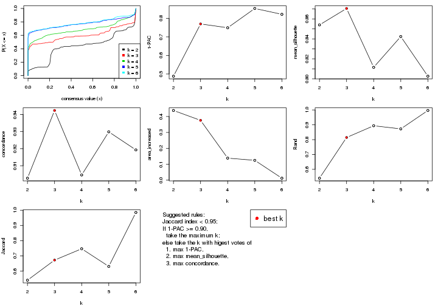
The numeric values for all these statistics can be obtained by get_stats().
get_stats(res)
#> k 1-PAC mean_silhouette concordance area_increased Rand Jaccard
#> 2 2 0.488 0.854 0.903 0.4379 0.540 0.540
#> 3 3 0.770 0.870 0.942 0.3758 0.815 0.672
#> 4 4 0.749 0.812 0.905 0.1383 0.894 0.747
#> 5 5 0.853 0.842 0.930 0.1246 0.872 0.631
#> 6 6 0.822 0.803 0.919 0.0122 0.996 0.985
suggest_best_k() suggests the best \(k\) based on these statistics. The rules are as follows:
NA.suggest_best_k(res)
#> [1] 3
Following shows the table of the partitions (You need to click the show/hide
code output link to see it). The membership matrix (columns with name p*)
is inferred by
clue::cl_consensus()
function with the SE method. Basically the value in the membership matrix
represents the probability to belong to a certain group. The finall class
label for an item is determined with the group with highest probability it
belongs to.
In get_classes() function, the entropy is calculated from the membership
matrix and the silhouette score is calculated from the consensus matrix.
cbind(get_classes(res, k = 2), get_membership(res, k = 2))
#> class entropy silhouette p1 p2
#> GSM253663 1 0.7950 0.882 0.760 0.240
#> GSM253664 2 0.0000 0.922 0.000 1.000
#> GSM253665 1 0.7453 0.908 0.788 0.212
#> GSM253666 2 0.0000 0.922 0.000 1.000
#> GSM253667 2 0.0000 0.922 0.000 1.000
#> GSM253668 2 0.0000 0.922 0.000 1.000
#> GSM253669 2 0.0000 0.922 0.000 1.000
#> GSM253670 1 0.7528 0.905 0.784 0.216
#> GSM253671 1 0.7745 0.895 0.772 0.228
#> GSM253672 1 0.7453 0.908 0.788 0.212
#> GSM253673 2 0.4161 0.852 0.084 0.916
#> GSM253674 2 0.0000 0.922 0.000 1.000
#> GSM253675 2 0.0000 0.922 0.000 1.000
#> GSM253676 2 0.4161 0.856 0.084 0.916
#> GSM253677 1 0.7453 0.908 0.788 0.212
#> GSM253678 2 0.0000 0.922 0.000 1.000
#> GSM253679 1 0.7453 0.908 0.788 0.212
#> GSM253680 2 0.0000 0.922 0.000 1.000
#> GSM253681 2 0.7219 0.776 0.200 0.800
#> GSM253682 2 0.8443 0.690 0.272 0.728
#> GSM253683 2 0.7453 0.731 0.212 0.788
#> GSM253684 1 0.0000 0.794 1.000 0.000
#> GSM253685 1 0.0000 0.794 1.000 0.000
#> GSM253686 2 0.5059 0.820 0.112 0.888
#> GSM253687 1 0.7453 0.908 0.788 0.212
#> GSM253688 2 0.9970 -0.212 0.468 0.532
#> GSM253689 2 0.0000 0.922 0.000 1.000
#> GSM253690 1 0.7674 0.898 0.776 0.224
#> GSM253691 2 0.0000 0.922 0.000 1.000
#> GSM253692 2 0.3733 0.864 0.072 0.928
#> GSM253693 2 0.0000 0.922 0.000 1.000
#> GSM253694 2 0.0000 0.922 0.000 1.000
#> GSM253695 2 0.0672 0.918 0.008 0.992
#> GSM253696 1 0.6887 0.897 0.816 0.184
#> GSM253697 2 0.0000 0.922 0.000 1.000
#> GSM253698 2 0.0000 0.922 0.000 1.000
#> GSM253699 2 0.6973 0.710 0.188 0.812
#> GSM253700 2 0.0672 0.918 0.008 0.992
#> GSM253701 1 0.7139 0.903 0.804 0.196
#> GSM253702 1 0.7453 0.908 0.788 0.212
#> GSM253703 2 0.0000 0.922 0.000 1.000
#> GSM253704 2 0.0376 0.920 0.004 0.996
#> GSM253705 2 0.1414 0.910 0.020 0.980
#> GSM253706 1 0.0000 0.794 1.000 0.000
#> GSM253707 2 0.7602 0.728 0.220 0.780
#> GSM253708 2 0.7453 0.731 0.212 0.788
#> GSM253709 1 0.7528 0.904 0.784 0.216
#> GSM253710 1 0.7453 0.908 0.788 0.212
#> GSM253711 2 0.0000 0.922 0.000 1.000
#> GSM253712 1 0.7453 0.908 0.788 0.212
#> GSM253713 1 0.7453 0.908 0.788 0.212
#> GSM253714 2 0.0672 0.918 0.008 0.992
#> GSM253715 2 0.1414 0.910 0.020 0.980
#> GSM253716 2 0.0000 0.922 0.000 1.000
#> GSM253717 2 0.0000 0.922 0.000 1.000
#> GSM253718 2 0.0000 0.922 0.000 1.000
#> GSM253719 2 0.0000 0.922 0.000 1.000
#> GSM253720 2 0.0000 0.922 0.000 1.000
#> GSM253721 2 0.0000 0.922 0.000 1.000
#> GSM253722 2 0.0000 0.922 0.000 1.000
#> GSM253723 2 0.7950 0.718 0.240 0.760
#> GSM253724 2 0.0000 0.922 0.000 1.000
#> GSM253725 1 0.7453 0.908 0.788 0.212
#> GSM253726 1 0.7453 0.908 0.788 0.212
#> GSM253727 2 0.8813 0.431 0.300 0.700
#> GSM253728 2 0.0000 0.922 0.000 1.000
#> GSM253729 1 0.6887 0.653 0.816 0.184
#> GSM253730 1 0.2043 0.787 0.968 0.032
#> GSM253731 1 0.0000 0.794 1.000 0.000
#> GSM253732 2 0.7453 0.731 0.212 0.788
#> GSM253733 1 0.0000 0.794 1.000 0.000
#> GSM253734 2 0.0672 0.918 0.008 0.992
cbind(get_classes(res, k = 3), get_membership(res, k = 3))
#> class entropy silhouette p1 p2 p3
#> GSM253663 1 0.1289 0.894 0.968 0.032 0.000
#> GSM253664 2 0.0000 0.922 0.000 1.000 0.000
#> GSM253665 1 0.0000 0.918 1.000 0.000 0.000
#> GSM253666 2 0.0000 0.922 0.000 1.000 0.000
#> GSM253667 2 0.0000 0.922 0.000 1.000 0.000
#> GSM253668 2 0.0000 0.922 0.000 1.000 0.000
#> GSM253669 2 0.0000 0.922 0.000 1.000 0.000
#> GSM253670 1 0.0000 0.918 1.000 0.000 0.000
#> GSM253671 1 0.0592 0.913 0.988 0.012 0.000
#> GSM253672 1 0.0000 0.918 1.000 0.000 0.000
#> GSM253673 2 0.4974 0.742 0.236 0.764 0.000
#> GSM253674 2 0.0000 0.922 0.000 1.000 0.000
#> GSM253675 2 0.0000 0.922 0.000 1.000 0.000
#> GSM253676 2 0.5431 0.676 0.284 0.716 0.000
#> GSM253677 1 0.0424 0.916 0.992 0.008 0.000
#> GSM253678 2 0.0000 0.922 0.000 1.000 0.000
#> GSM253679 1 0.0424 0.916 0.992 0.008 0.000
#> GSM253680 2 0.3412 0.848 0.124 0.876 0.000
#> GSM253681 2 0.6625 0.493 0.024 0.660 0.316
#> GSM253682 3 0.0000 0.996 0.000 0.000 1.000
#> GSM253683 3 0.0000 0.996 0.000 0.000 1.000
#> GSM253684 3 0.0000 0.996 0.000 0.000 1.000
#> GSM253685 3 0.0000 0.996 0.000 0.000 1.000
#> GSM253686 2 0.5016 0.738 0.240 0.760 0.000
#> GSM253687 1 0.0000 0.918 1.000 0.000 0.000
#> GSM253688 1 0.5785 0.432 0.668 0.332 0.000
#> GSM253689 2 0.0000 0.922 0.000 1.000 0.000
#> GSM253690 1 0.0592 0.914 0.988 0.012 0.000
#> GSM253691 2 0.0000 0.922 0.000 1.000 0.000
#> GSM253692 2 0.5016 0.737 0.240 0.760 0.000
#> GSM253693 2 0.0000 0.922 0.000 1.000 0.000
#> GSM253694 2 0.0000 0.922 0.000 1.000 0.000
#> GSM253695 2 0.4346 0.798 0.184 0.816 0.000
#> GSM253696 1 0.0000 0.918 1.000 0.000 0.000
#> GSM253697 2 0.0000 0.922 0.000 1.000 0.000
#> GSM253698 2 0.0000 0.922 0.000 1.000 0.000
#> GSM253699 2 0.5835 0.571 0.340 0.660 0.000
#> GSM253700 2 0.0000 0.922 0.000 1.000 0.000
#> GSM253701 1 0.0000 0.918 1.000 0.000 0.000
#> GSM253702 1 0.0424 0.916 0.992 0.008 0.000
#> GSM253703 2 0.0000 0.922 0.000 1.000 0.000
#> GSM253704 2 0.0000 0.922 0.000 1.000 0.000
#> GSM253705 2 0.5016 0.740 0.240 0.760 0.000
#> GSM253706 1 0.5431 0.550 0.716 0.000 0.284
#> GSM253707 3 0.0000 0.996 0.000 0.000 1.000
#> GSM253708 3 0.0000 0.996 0.000 0.000 1.000
#> GSM253709 1 0.0829 0.912 0.984 0.012 0.004
#> GSM253710 1 0.0000 0.918 1.000 0.000 0.000
#> GSM253711 2 0.0000 0.922 0.000 1.000 0.000
#> GSM253712 1 0.0000 0.918 1.000 0.000 0.000
#> GSM253713 1 0.0000 0.918 1.000 0.000 0.000
#> GSM253714 2 0.5098 0.727 0.248 0.752 0.000
#> GSM253715 2 0.0000 0.922 0.000 1.000 0.000
#> GSM253716 2 0.0000 0.922 0.000 1.000 0.000
#> GSM253717 2 0.2625 0.877 0.084 0.916 0.000
#> GSM253718 2 0.0000 0.922 0.000 1.000 0.000
#> GSM253719 2 0.0000 0.922 0.000 1.000 0.000
#> GSM253720 2 0.0000 0.922 0.000 1.000 0.000
#> GSM253721 2 0.0000 0.922 0.000 1.000 0.000
#> GSM253722 2 0.0000 0.922 0.000 1.000 0.000
#> GSM253723 3 0.1289 0.961 0.000 0.032 0.968
#> GSM253724 2 0.0000 0.922 0.000 1.000 0.000
#> GSM253725 1 0.0000 0.918 1.000 0.000 0.000
#> GSM253726 1 0.0000 0.918 1.000 0.000 0.000
#> GSM253727 1 0.6215 0.124 0.572 0.428 0.000
#> GSM253728 2 0.0000 0.922 0.000 1.000 0.000
#> GSM253729 3 0.0000 0.996 0.000 0.000 1.000
#> GSM253730 3 0.0000 0.996 0.000 0.000 1.000
#> GSM253731 1 0.5291 0.577 0.732 0.000 0.268
#> GSM253732 3 0.0000 0.996 0.000 0.000 1.000
#> GSM253733 1 0.0000 0.918 1.000 0.000 0.000
#> GSM253734 2 0.3879 0.827 0.152 0.848 0.000
cbind(get_classes(res, k = 4), get_membership(res, k = 4))
#> class entropy silhouette p1 p2 p3 p4
#> GSM253663 1 0.0469 0.887 0.988 0.012 0.000 0.000
#> GSM253664 2 0.2973 0.849 0.000 0.856 0.000 0.144
#> GSM253665 1 0.0000 0.895 1.000 0.000 0.000 0.000
#> GSM253666 2 0.0000 0.892 0.000 1.000 0.000 0.000
#> GSM253667 2 0.0000 0.892 0.000 1.000 0.000 0.000
#> GSM253668 2 0.0000 0.892 0.000 1.000 0.000 0.000
#> GSM253669 2 0.0000 0.892 0.000 1.000 0.000 0.000
#> GSM253670 1 0.0000 0.895 1.000 0.000 0.000 0.000
#> GSM253671 4 0.4661 0.367 0.348 0.000 0.000 0.652
#> GSM253672 1 0.0000 0.895 1.000 0.000 0.000 0.000
#> GSM253673 2 0.5030 0.779 0.060 0.752 0.000 0.188
#> GSM253674 2 0.1940 0.877 0.000 0.924 0.000 0.076
#> GSM253675 2 0.0000 0.892 0.000 1.000 0.000 0.000
#> GSM253676 2 0.5926 0.619 0.060 0.632 0.000 0.308
#> GSM253677 4 0.1211 0.789 0.040 0.000 0.000 0.960
#> GSM253678 2 0.3400 0.828 0.000 0.820 0.000 0.180
#> GSM253679 4 0.1389 0.790 0.048 0.000 0.000 0.952
#> GSM253680 2 0.3486 0.824 0.000 0.812 0.000 0.188
#> GSM253681 4 0.4082 0.696 0.008 0.152 0.020 0.820
#> GSM253682 3 0.0000 1.000 0.000 0.000 1.000 0.000
#> GSM253683 3 0.0000 1.000 0.000 0.000 1.000 0.000
#> GSM253684 3 0.0000 1.000 0.000 0.000 1.000 0.000
#> GSM253685 3 0.0000 1.000 0.000 0.000 1.000 0.000
#> GSM253686 2 0.5477 0.753 0.092 0.728 0.000 0.180
#> GSM253687 1 0.0000 0.895 1.000 0.000 0.000 0.000
#> GSM253688 1 0.7330 0.180 0.508 0.312 0.000 0.180
#> GSM253689 2 0.1022 0.890 0.000 0.968 0.000 0.032
#> GSM253690 1 0.3266 0.725 0.832 0.000 0.000 0.168
#> GSM253691 2 0.0336 0.892 0.000 0.992 0.000 0.008
#> GSM253692 2 0.4916 0.786 0.056 0.760 0.000 0.184
#> GSM253693 2 0.3400 0.828 0.000 0.820 0.000 0.180
#> GSM253694 2 0.3486 0.824 0.000 0.812 0.000 0.188
#> GSM253695 2 0.3969 0.820 0.016 0.804 0.000 0.180
#> GSM253696 1 0.0000 0.895 1.000 0.000 0.000 0.000
#> GSM253697 2 0.0000 0.892 0.000 1.000 0.000 0.000
#> GSM253698 2 0.0000 0.892 0.000 1.000 0.000 0.000
#> GSM253699 4 0.7113 -0.144 0.128 0.416 0.000 0.456
#> GSM253700 2 0.0000 0.892 0.000 1.000 0.000 0.000
#> GSM253701 4 0.3400 0.706 0.180 0.000 0.000 0.820
#> GSM253702 4 0.1867 0.784 0.072 0.000 0.000 0.928
#> GSM253703 2 0.0707 0.892 0.000 0.980 0.000 0.020
#> GSM253704 2 0.2589 0.862 0.000 0.884 0.000 0.116
#> GSM253705 2 0.5807 0.375 0.052 0.636 0.000 0.312
#> GSM253706 1 0.5994 0.610 0.692 0.000 0.156 0.152
#> GSM253707 3 0.0000 1.000 0.000 0.000 1.000 0.000
#> GSM253708 3 0.0000 1.000 0.000 0.000 1.000 0.000
#> GSM253709 4 0.1389 0.790 0.048 0.000 0.000 0.952
#> GSM253710 1 0.0000 0.895 1.000 0.000 0.000 0.000
#> GSM253711 2 0.0000 0.892 0.000 1.000 0.000 0.000
#> GSM253712 1 0.0000 0.895 1.000 0.000 0.000 0.000
#> GSM253713 1 0.0336 0.891 0.992 0.000 0.000 0.008
#> GSM253714 2 0.4267 0.809 0.024 0.788 0.000 0.188
#> GSM253715 2 0.0000 0.892 0.000 1.000 0.000 0.000
#> GSM253716 2 0.0921 0.890 0.000 0.972 0.000 0.028
#> GSM253717 2 0.4999 0.176 0.000 0.508 0.000 0.492
#> GSM253718 2 0.0000 0.892 0.000 1.000 0.000 0.000
#> GSM253719 2 0.0000 0.892 0.000 1.000 0.000 0.000
#> GSM253720 2 0.0000 0.892 0.000 1.000 0.000 0.000
#> GSM253721 2 0.0469 0.892 0.000 0.988 0.000 0.012
#> GSM253722 2 0.0000 0.892 0.000 1.000 0.000 0.000
#> GSM253723 4 0.3672 0.662 0.000 0.012 0.164 0.824
#> GSM253724 2 0.1389 0.886 0.000 0.952 0.000 0.048
#> GSM253725 1 0.1637 0.853 0.940 0.000 0.000 0.060
#> GSM253726 1 0.1118 0.872 0.964 0.000 0.000 0.036
#> GSM253727 4 0.1211 0.789 0.040 0.000 0.000 0.960
#> GSM253728 2 0.0000 0.892 0.000 1.000 0.000 0.000
#> GSM253729 3 0.0000 1.000 0.000 0.000 1.000 0.000
#> GSM253730 3 0.0000 1.000 0.000 0.000 1.000 0.000
#> GSM253731 1 0.2081 0.836 0.916 0.000 0.084 0.000
#> GSM253732 3 0.0000 1.000 0.000 0.000 1.000 0.000
#> GSM253733 4 0.3444 0.703 0.184 0.000 0.000 0.816
#> GSM253734 4 0.4361 0.643 0.020 0.208 0.000 0.772
cbind(get_classes(res, k = 5), get_membership(res, k = 5))
#> class entropy silhouette p1 p2 p3 p4 p5
#> GSM253663 4 0.4297 0.042 0.472 0.000 0.000 0.528 0.000
#> GSM253664 4 0.4074 0.352 0.000 0.364 0.000 0.636 0.000
#> GSM253665 1 0.0000 0.965 1.000 0.000 0.000 0.000 0.000
#> GSM253666 2 0.0000 0.900 0.000 1.000 0.000 0.000 0.000
#> GSM253667 2 0.0000 0.900 0.000 1.000 0.000 0.000 0.000
#> GSM253668 2 0.0000 0.900 0.000 1.000 0.000 0.000 0.000
#> GSM253669 2 0.0000 0.900 0.000 1.000 0.000 0.000 0.000
#> GSM253670 1 0.0000 0.965 1.000 0.000 0.000 0.000 0.000
#> GSM253671 4 0.3359 0.752 0.084 0.000 0.000 0.844 0.072
#> GSM253672 1 0.0510 0.953 0.984 0.000 0.000 0.016 0.000
#> GSM253673 4 0.1697 0.801 0.008 0.060 0.000 0.932 0.000
#> GSM253674 2 0.2891 0.779 0.000 0.824 0.000 0.176 0.000
#> GSM253675 2 0.0000 0.900 0.000 1.000 0.000 0.000 0.000
#> GSM253676 4 0.0290 0.832 0.008 0.000 0.000 0.992 0.000
#> GSM253677 5 0.0000 0.961 0.000 0.000 0.000 0.000 1.000
#> GSM253678 2 0.3305 0.725 0.000 0.776 0.000 0.224 0.000
#> GSM253679 5 0.0000 0.961 0.000 0.000 0.000 0.000 1.000
#> GSM253680 2 0.3932 0.558 0.000 0.672 0.000 0.328 0.000
#> GSM253681 5 0.0000 0.961 0.000 0.000 0.000 0.000 1.000
#> GSM253682 3 0.0000 1.000 0.000 0.000 1.000 0.000 0.000
#> GSM253683 3 0.0000 1.000 0.000 0.000 1.000 0.000 0.000
#> GSM253684 3 0.0000 1.000 0.000 0.000 1.000 0.000 0.000
#> GSM253685 3 0.0000 1.000 0.000 0.000 1.000 0.000 0.000
#> GSM253686 4 0.0451 0.832 0.008 0.004 0.000 0.988 0.000
#> GSM253687 1 0.0000 0.965 1.000 0.000 0.000 0.000 0.000
#> GSM253688 4 0.0290 0.832 0.008 0.000 0.000 0.992 0.000
#> GSM253689 2 0.0880 0.890 0.000 0.968 0.000 0.032 0.000
#> GSM253690 4 0.2471 0.752 0.136 0.000 0.000 0.864 0.000
#> GSM253691 2 0.0290 0.898 0.000 0.992 0.000 0.008 0.000
#> GSM253692 4 0.0324 0.832 0.004 0.004 0.000 0.992 0.000
#> GSM253693 2 0.3895 0.573 0.000 0.680 0.000 0.320 0.000
#> GSM253694 2 0.4283 0.253 0.000 0.544 0.000 0.456 0.000
#> GSM253695 4 0.0290 0.831 0.000 0.008 0.000 0.992 0.000
#> GSM253696 1 0.0000 0.965 1.000 0.000 0.000 0.000 0.000
#> GSM253697 2 0.0000 0.900 0.000 1.000 0.000 0.000 0.000
#> GSM253698 2 0.0000 0.900 0.000 1.000 0.000 0.000 0.000
#> GSM253699 4 0.0324 0.831 0.004 0.000 0.000 0.992 0.004
#> GSM253700 2 0.0162 0.898 0.000 0.996 0.000 0.004 0.000
#> GSM253701 5 0.0000 0.961 0.000 0.000 0.000 0.000 1.000
#> GSM253702 5 0.0000 0.961 0.000 0.000 0.000 0.000 1.000
#> GSM253703 2 0.0963 0.889 0.000 0.964 0.000 0.036 0.000
#> GSM253704 2 0.2377 0.823 0.000 0.872 0.000 0.128 0.000
#> GSM253705 2 0.4331 0.341 0.004 0.596 0.000 0.000 0.400
#> GSM253706 1 0.5109 0.649 0.696 0.000 0.132 0.000 0.172
#> GSM253707 3 0.0000 1.000 0.000 0.000 1.000 0.000 0.000
#> GSM253708 3 0.0000 1.000 0.000 0.000 1.000 0.000 0.000
#> GSM253709 5 0.0162 0.958 0.000 0.000 0.000 0.004 0.996
#> GSM253710 1 0.0000 0.965 1.000 0.000 0.000 0.000 0.000
#> GSM253711 2 0.0000 0.900 0.000 1.000 0.000 0.000 0.000
#> GSM253712 1 0.0000 0.965 1.000 0.000 0.000 0.000 0.000
#> GSM253713 1 0.0162 0.963 0.996 0.000 0.000 0.000 0.004
#> GSM253714 4 0.0324 0.832 0.004 0.004 0.000 0.992 0.000
#> GSM253715 2 0.3586 0.610 0.000 0.736 0.000 0.264 0.000
#> GSM253716 2 0.0963 0.890 0.000 0.964 0.000 0.036 0.000
#> GSM253717 4 0.6786 0.122 0.000 0.292 0.000 0.384 0.324
#> GSM253718 2 0.0000 0.900 0.000 1.000 0.000 0.000 0.000
#> GSM253719 2 0.0000 0.900 0.000 1.000 0.000 0.000 0.000
#> GSM253720 2 0.0000 0.900 0.000 1.000 0.000 0.000 0.000
#> GSM253721 2 0.0510 0.897 0.000 0.984 0.000 0.016 0.000
#> GSM253722 2 0.0290 0.898 0.000 0.992 0.000 0.008 0.000
#> GSM253723 5 0.0000 0.961 0.000 0.000 0.000 0.000 1.000
#> GSM253724 2 0.1121 0.885 0.000 0.956 0.000 0.044 0.000
#> GSM253725 1 0.1410 0.917 0.940 0.000 0.000 0.000 0.060
#> GSM253726 1 0.0000 0.965 1.000 0.000 0.000 0.000 0.000
#> GSM253727 5 0.0000 0.961 0.000 0.000 0.000 0.000 1.000
#> GSM253728 2 0.0000 0.900 0.000 1.000 0.000 0.000 0.000
#> GSM253729 3 0.0000 1.000 0.000 0.000 1.000 0.000 0.000
#> GSM253730 3 0.0000 1.000 0.000 0.000 1.000 0.000 0.000
#> GSM253731 1 0.0162 0.962 0.996 0.000 0.004 0.000 0.000
#> GSM253732 3 0.0000 1.000 0.000 0.000 1.000 0.000 0.000
#> GSM253733 5 0.0000 0.961 0.000 0.000 0.000 0.000 1.000
#> GSM253734 5 0.5059 0.565 0.000 0.192 0.000 0.112 0.696
cbind(get_classes(res, k = 6), get_membership(res, k = 6))
#> class entropy silhouette p1 p2 p3 p4 p5 p6
#> GSM253663 4 0.3857 0.0494 0.468 0.000 0.000 0.532 0.000 0.000
#> GSM253664 4 0.3647 0.3445 0.000 0.360 0.000 0.640 0.000 0.000
#> GSM253665 1 0.0000 0.9593 1.000 0.000 0.000 0.000 0.000 0.000
#> GSM253666 2 0.0000 0.8751 0.000 1.000 0.000 0.000 0.000 0.000
#> GSM253667 2 0.0000 0.8751 0.000 1.000 0.000 0.000 0.000 0.000
#> GSM253668 2 0.0000 0.8751 0.000 1.000 0.000 0.000 0.000 0.000
#> GSM253669 2 0.0000 0.8751 0.000 1.000 0.000 0.000 0.000 0.000
#> GSM253670 1 0.0000 0.9593 1.000 0.000 0.000 0.000 0.000 0.000
#> GSM253671 4 0.2910 0.6891 0.080 0.000 0.000 0.852 0.068 0.000
#> GSM253672 1 0.0458 0.9439 0.984 0.000 0.000 0.016 0.000 0.000
#> GSM253673 4 0.1267 0.7463 0.000 0.060 0.000 0.940 0.000 0.000
#> GSM253674 2 0.2597 0.7773 0.000 0.824 0.000 0.176 0.000 0.000
#> GSM253675 2 0.0000 0.8751 0.000 1.000 0.000 0.000 0.000 0.000
#> GSM253676 4 0.0000 0.7919 0.000 0.000 0.000 1.000 0.000 0.000
#> GSM253677 5 0.0000 0.9293 0.000 0.000 0.000 0.000 1.000 0.000
#> GSM253678 2 0.2996 0.7290 0.000 0.772 0.000 0.228 0.000 0.000
#> GSM253679 5 0.0000 0.9293 0.000 0.000 0.000 0.000 1.000 0.000
#> GSM253680 2 0.3547 0.5708 0.000 0.668 0.000 0.332 0.000 0.000
#> GSM253681 5 0.0000 0.9293 0.000 0.000 0.000 0.000 1.000 0.000
#> GSM253682 3 0.0000 1.0000 0.000 0.000 1.000 0.000 0.000 0.000
#> GSM253683 3 0.0000 1.0000 0.000 0.000 1.000 0.000 0.000 0.000
#> GSM253684 3 0.0000 1.0000 0.000 0.000 1.000 0.000 0.000 0.000
#> GSM253685 3 0.0000 1.0000 0.000 0.000 1.000 0.000 0.000 0.000
#> GSM253686 4 0.0146 0.7899 0.000 0.004 0.000 0.996 0.000 0.000
#> GSM253687 1 0.0000 0.9593 1.000 0.000 0.000 0.000 0.000 0.000
#> GSM253688 4 0.0000 0.7919 0.000 0.000 0.000 1.000 0.000 0.000
#> GSM253689 2 0.0790 0.8680 0.000 0.968 0.000 0.032 0.000 0.000
#> GSM253690 4 0.2135 0.6948 0.128 0.000 0.000 0.872 0.000 0.000
#> GSM253691 2 0.0260 0.8748 0.000 0.992 0.000 0.008 0.000 0.000
#> GSM253692 4 0.0000 0.7919 0.000 0.000 0.000 1.000 0.000 0.000
#> GSM253693 2 0.3515 0.5848 0.000 0.676 0.000 0.324 0.000 0.000
#> GSM253694 2 0.3975 0.2817 0.000 0.544 0.000 0.452 0.000 0.004
#> GSM253695 4 0.0000 0.7919 0.000 0.000 0.000 1.000 0.000 0.000
#> GSM253696 1 0.0000 0.9593 1.000 0.000 0.000 0.000 0.000 0.000
#> GSM253697 2 0.0146 0.8751 0.000 0.996 0.000 0.000 0.000 0.004
#> GSM253698 2 0.0000 0.8751 0.000 1.000 0.000 0.000 0.000 0.000
#> GSM253699 4 0.0000 0.7919 0.000 0.000 0.000 1.000 0.000 0.000
#> GSM253700 2 0.2793 0.7860 0.000 0.800 0.000 0.000 0.000 0.200
#> GSM253701 5 0.0000 0.9293 0.000 0.000 0.000 0.000 1.000 0.000
#> GSM253702 5 0.0000 0.9293 0.000 0.000 0.000 0.000 1.000 0.000
#> GSM253703 2 0.1633 0.8589 0.000 0.932 0.000 0.024 0.000 0.044
#> GSM253704 2 0.3043 0.7815 0.000 0.792 0.000 0.008 0.000 0.200
#> GSM253705 2 0.3756 0.3411 0.000 0.600 0.000 0.000 0.400 0.000
#> GSM253706 1 0.4589 0.5433 0.696 0.000 0.132 0.000 0.172 0.000
#> GSM253707 3 0.0000 1.0000 0.000 0.000 1.000 0.000 0.000 0.000
#> GSM253708 3 0.0000 1.0000 0.000 0.000 1.000 0.000 0.000 0.000
#> GSM253709 6 0.2793 0.0000 0.000 0.000 0.000 0.000 0.200 0.800
#> GSM253710 1 0.0000 0.9593 1.000 0.000 0.000 0.000 0.000 0.000
#> GSM253711 2 0.0000 0.8751 0.000 1.000 0.000 0.000 0.000 0.000
#> GSM253712 1 0.0000 0.9593 1.000 0.000 0.000 0.000 0.000 0.000
#> GSM253713 1 0.0000 0.9593 1.000 0.000 0.000 0.000 0.000 0.000
#> GSM253714 4 0.0000 0.7919 0.000 0.000 0.000 1.000 0.000 0.000
#> GSM253715 2 0.3221 0.6030 0.000 0.736 0.000 0.264 0.000 0.000
#> GSM253716 2 0.2948 0.7905 0.000 0.804 0.000 0.008 0.000 0.188
#> GSM253717 4 0.6095 0.0215 0.000 0.292 0.000 0.384 0.324 0.000
#> GSM253718 2 0.0363 0.8736 0.000 0.988 0.000 0.000 0.000 0.012
#> GSM253719 2 0.0363 0.8736 0.000 0.988 0.000 0.000 0.000 0.012
#> GSM253720 2 0.0000 0.8751 0.000 1.000 0.000 0.000 0.000 0.000
#> GSM253721 2 0.0458 0.8734 0.000 0.984 0.000 0.016 0.000 0.000
#> GSM253722 2 0.0260 0.8736 0.000 0.992 0.000 0.008 0.000 0.000
#> GSM253723 5 0.0000 0.9293 0.000 0.000 0.000 0.000 1.000 0.000
#> GSM253724 2 0.2793 0.7860 0.000 0.800 0.000 0.000 0.000 0.200
#> GSM253725 1 0.1267 0.8990 0.940 0.000 0.000 0.000 0.060 0.000
#> GSM253726 1 0.0000 0.9593 1.000 0.000 0.000 0.000 0.000 0.000
#> GSM253727 5 0.0000 0.9293 0.000 0.000 0.000 0.000 1.000 0.000
#> GSM253728 2 0.0000 0.8751 0.000 1.000 0.000 0.000 0.000 0.000
#> GSM253729 3 0.0000 1.0000 0.000 0.000 1.000 0.000 0.000 0.000
#> GSM253730 3 0.0000 1.0000 0.000 0.000 1.000 0.000 0.000 0.000
#> GSM253731 1 0.0000 0.9593 1.000 0.000 0.000 0.000 0.000 0.000
#> GSM253732 3 0.0000 1.0000 0.000 0.000 1.000 0.000 0.000 0.000
#> GSM253733 5 0.0000 0.9293 0.000 0.000 0.000 0.000 1.000 0.000
#> GSM253734 5 0.4545 0.3714 0.000 0.192 0.000 0.112 0.696 0.000
Heatmaps for the consensus matrix. It visualizes the probability of two samples to be in a same group.
consensus_heatmap(res, k = 2)
consensus_heatmap(res, k = 3)
consensus_heatmap(res, k = 4)
consensus_heatmap(res, k = 5)
consensus_heatmap(res, k = 6)
Heatmaps for the membership of samples in all partitions to see how consistent they are:
membership_heatmap(res, k = 2)
membership_heatmap(res, k = 3)
membership_heatmap(res, k = 4)
membership_heatmap(res, k = 5)
membership_heatmap(res, k = 6)
As soon as we have had the classes for columns, we can look for signatures which are significantly different between classes which can be candidate marks for certain classes. Following are the heatmaps for signatures.
Signature heatmaps where rows are scaled:
get_signatures(res, k = 2)
get_signatures(res, k = 3)
get_signatures(res, k = 4)
get_signatures(res, k = 5)
get_signatures(res, k = 6)
Signature heatmaps where rows are not scaled:
get_signatures(res, k = 2, scale_rows = FALSE)
get_signatures(res, k = 3, scale_rows = FALSE)
get_signatures(res, k = 4, scale_rows = FALSE)
get_signatures(res, k = 5, scale_rows = FALSE)

get_signatures(res, k = 6, scale_rows = FALSE)
Compare the overlap of signatures from different k:
compare_signatures(res)
get_signature() returns a data frame invisibly. TO get the list of signatures, the function
call should be assigned to a variable explicitly. In following code, if plot argument is set
to FALSE, no heatmap is plotted while only the differential analysis is performed.
# code only for demonstration
tb = get_signature(res, k = ..., plot = FALSE)
An example of the output of tb is:
#> which_row fdr mean_1 mean_2 scaled_mean_1 scaled_mean_2 km
#> 1 38 0.042760348 8.373488 9.131774 -0.5533452 0.5164555 1
#> 2 40 0.018707592 7.106213 8.469186 -0.6173731 0.5762149 1
#> 3 55 0.019134737 10.221463 11.207825 -0.6159697 0.5749050 1
#> 4 59 0.006059896 5.921854 7.869574 -0.6899429 0.6439467 1
#> 5 60 0.018055526 8.928898 10.211722 -0.6204761 0.5791110 1
#> 6 98 0.009384629 15.714769 14.887706 0.6635654 -0.6193277 2
...
The columns in tb are:
which_row: row indices corresponding to the input matrix.fdr: FDR for the differential test. mean_x: The mean value in group x.scaled_mean_x: The mean value in group x after rows are scaled.km: Row groups if k-means clustering is applied to rows.UMAP plot which shows how samples are separated.
dimension_reduction(res, k = 2, method = "UMAP")

dimension_reduction(res, k = 3, method = "UMAP")
dimension_reduction(res, k = 4, method = "UMAP")
dimension_reduction(res, k = 5, method = "UMAP")
dimension_reduction(res, k = 6, method = "UMAP")
Following heatmap shows how subgroups are split when increasing k:
collect_classes(res)
Test correlation between subgroups and known annotations. If the known annotation is numeric, one-way ANOVA test is applied, and if the known annotation is discrete, chi-squared contingency table test is applied.
test_to_known_factors(res)
#> n individual(p) k
#> SD:pam 70 0.807 2
#> SD:pam 69 0.896 3
#> SD:pam 67 0.972 4
#> SD:pam 67 0.630 5
#> SD:pam 65 0.608 6
If matrix rows can be associated to genes, consider to use GO_Enrichment(res,
...) to perform function enrichment for the signature genes.
The object with results only for a single top-value method and a single partition method can be extracted as:
res = res_list["SD", "mclust"]
# you can also extract it by
# res = res_list["SD:mclust"]
A summary of res and all the functions that can be applied to it:
res
#> A 'ConsensusPartition' object with k = 2, 3, 4, 5, 6.
#> On a matrix with 51941 rows and 72 columns.
#> Top rows (1000, 2000, 3000, 4000, 5000) are extracted by 'SD' method.
#> Subgroups are detected by 'mclust' method.
#> Performed in total 1250 partitions by row resampling.
#> Best k for subgroups seems to be 2.
#>
#> Following methods can be applied to this 'ConsensusPartition' object:
#> [1] "cola_report" "collect_classes" "collect_plots"
#> [4] "collect_stats" "colnames" "compare_signatures"
#> [7] "consensus_heatmap" "dimension_reduction" "functional_enrichment"
#> [10] "get_anno_col" "get_anno" "get_classes"
#> [13] "get_consensus" "get_matrix" "get_membership"
#> [16] "get_param" "get_signatures" "get_stats"
#> [19] "is_best_k" "is_stable_k" "membership_heatmap"
#> [22] "ncol" "nrow" "plot_ecdf"
#> [25] "rownames" "select_partition_number" "show"
#> [28] "suggest_best_k" "test_to_known_factors"
collect_plots() function collects all the plots made from res for all k (number of partitions)
into one single page to provide an easy and fast comparison between different k.
collect_plots(res)
The plots are:
k and the heatmap of
predicted classes for each k.k.k.k.All the plots in panels can be made by individual functions and they are plotted later in this section.
select_partition_number() produces several plots showing different
statistics for choosing “optimized” k. There are following statistics:
k;k, the area increased is defined as \(A_k - A_{k-1}\).The detailed explanations of these statistics can be found in the cola vignette.
Generally speaking, lower PAC score, higher mean silhouette score or higher
concordance corresponds to better partition. Rand index and Jaccard index
measure how similar the current partition is compared to partition with k-1.
If they are too similar, we won't accept k is better than k-1.
select_partition_number(res)
The numeric values for all these statistics can be obtained by get_stats().
get_stats(res)
#> k 1-PAC mean_silhouette concordance area_increased Rand Jaccard
#> 2 2 1.000 0.997 0.998 0.2642 0.737 0.737
#> 3 3 0.853 0.926 0.959 1.1921 0.688 0.577
#> 4 4 0.611 0.620 0.822 0.1551 0.939 0.860
#> 5 5 0.565 0.687 0.821 0.0905 0.845 0.626
#> 6 6 0.586 0.536 0.742 0.0665 0.898 0.660
suggest_best_k() suggests the best \(k\) based on these statistics. The rules are as follows:
NA.suggest_best_k(res)
#> [1] 2
Following shows the table of the partitions (You need to click the show/hide
code output link to see it). The membership matrix (columns with name p*)
is inferred by
clue::cl_consensus()
function with the SE method. Basically the value in the membership matrix
represents the probability to belong to a certain group. The finall class
label for an item is determined with the group with highest probability it
belongs to.
In get_classes() function, the entropy is calculated from the membership
matrix and the silhouette score is calculated from the consensus matrix.
cbind(get_classes(res, k = 2), get_membership(res, k = 2))
#> class entropy silhouette p1 p2
#> GSM253663 1 0.0000 0.999 1.000 0.000
#> GSM253664 1 0.0000 0.999 1.000 0.000
#> GSM253665 1 0.0000 0.999 1.000 0.000
#> GSM253666 1 0.0000 0.999 1.000 0.000
#> GSM253667 1 0.0000 0.999 1.000 0.000
#> GSM253668 1 0.0000 0.999 1.000 0.000
#> GSM253669 1 0.0000 0.999 1.000 0.000
#> GSM253670 1 0.0000 0.999 1.000 0.000
#> GSM253671 1 0.0000 0.999 1.000 0.000
#> GSM253672 1 0.0000 0.999 1.000 0.000
#> GSM253673 1 0.0000 0.999 1.000 0.000
#> GSM253674 1 0.0000 0.999 1.000 0.000
#> GSM253675 1 0.0000 0.999 1.000 0.000
#> GSM253676 1 0.0000 0.999 1.000 0.000
#> GSM253677 1 0.0000 0.999 1.000 0.000
#> GSM253678 1 0.0000 0.999 1.000 0.000
#> GSM253679 1 0.0000 0.999 1.000 0.000
#> GSM253680 1 0.0000 0.999 1.000 0.000
#> GSM253681 1 0.0000 0.999 1.000 0.000
#> GSM253682 2 0.0000 0.996 0.000 1.000
#> GSM253683 2 0.0000 0.996 0.000 1.000
#> GSM253684 2 0.0938 0.990 0.012 0.988
#> GSM253685 2 0.0000 0.996 0.000 1.000
#> GSM253686 1 0.0000 0.999 1.000 0.000
#> GSM253687 1 0.0000 0.999 1.000 0.000
#> GSM253688 1 0.0000 0.999 1.000 0.000
#> GSM253689 1 0.0000 0.999 1.000 0.000
#> GSM253690 1 0.0000 0.999 1.000 0.000
#> GSM253691 1 0.0000 0.999 1.000 0.000
#> GSM253692 1 0.0000 0.999 1.000 0.000
#> GSM253693 1 0.0000 0.999 1.000 0.000
#> GSM253694 1 0.0000 0.999 1.000 0.000
#> GSM253695 1 0.0000 0.999 1.000 0.000
#> GSM253696 1 0.0000 0.999 1.000 0.000
#> GSM253697 1 0.0000 0.999 1.000 0.000
#> GSM253698 1 0.0000 0.999 1.000 0.000
#> GSM253699 1 0.0000 0.999 1.000 0.000
#> GSM253700 1 0.0000 0.999 1.000 0.000
#> GSM253701 1 0.0000 0.999 1.000 0.000
#> GSM253702 1 0.0000 0.999 1.000 0.000
#> GSM253703 1 0.0000 0.999 1.000 0.000
#> GSM253704 1 0.0000 0.999 1.000 0.000
#> GSM253705 1 0.0000 0.999 1.000 0.000
#> GSM253706 2 0.0938 0.990 0.012 0.988
#> GSM253707 2 0.0000 0.996 0.000 1.000
#> GSM253708 2 0.0000 0.996 0.000 1.000
#> GSM253709 1 0.0000 0.999 1.000 0.000
#> GSM253710 1 0.0000 0.999 1.000 0.000
#> GSM253711 1 0.0000 0.999 1.000 0.000
#> GSM253712 1 0.0000 0.999 1.000 0.000
#> GSM253713 1 0.0000 0.999 1.000 0.000
#> GSM253714 1 0.0000 0.999 1.000 0.000
#> GSM253715 1 0.0376 0.995 0.996 0.004
#> GSM253716 1 0.0000 0.999 1.000 0.000
#> GSM253717 1 0.0000 0.999 1.000 0.000
#> GSM253718 1 0.0000 0.999 1.000 0.000
#> GSM253719 1 0.0000 0.999 1.000 0.000
#> GSM253720 1 0.0000 0.999 1.000 0.000
#> GSM253721 1 0.0000 0.999 1.000 0.000
#> GSM253722 1 0.0000 0.999 1.000 0.000
#> GSM253723 1 0.3879 0.918 0.924 0.076
#> GSM253724 1 0.0000 0.999 1.000 0.000
#> GSM253725 1 0.0000 0.999 1.000 0.000
#> GSM253726 1 0.0000 0.999 1.000 0.000
#> GSM253727 1 0.0000 0.999 1.000 0.000
#> GSM253728 1 0.0000 0.999 1.000 0.000
#> GSM253729 2 0.0000 0.996 0.000 1.000
#> GSM253730 2 0.0000 0.996 0.000 1.000
#> GSM253731 2 0.0938 0.990 0.012 0.988
#> GSM253732 2 0.0000 0.996 0.000 1.000
#> GSM253733 1 0.0672 0.991 0.992 0.008
#> GSM253734 1 0.0000 0.999 1.000 0.000
cbind(get_classes(res, k = 3), get_membership(res, k = 3))
#> class entropy silhouette p1 p2 p3
#> GSM253663 1 0.3551 0.885 0.868 0.132 0.000
#> GSM253664 1 0.3752 0.865 0.856 0.144 0.000
#> GSM253665 1 0.1163 0.935 0.972 0.028 0.000
#> GSM253666 2 0.0424 0.952 0.008 0.992 0.000
#> GSM253667 2 0.4702 0.746 0.212 0.788 0.000
#> GSM253668 2 0.0000 0.954 0.000 1.000 0.000
#> GSM253669 2 0.0000 0.954 0.000 1.000 0.000
#> GSM253670 2 0.2537 0.901 0.080 0.920 0.000
#> GSM253671 2 0.0237 0.954 0.004 0.996 0.000
#> GSM253672 2 0.5733 0.514 0.324 0.676 0.000
#> GSM253673 2 0.0237 0.954 0.004 0.996 0.000
#> GSM253674 2 0.0237 0.953 0.004 0.996 0.000
#> GSM253675 2 0.0000 0.954 0.000 1.000 0.000
#> GSM253676 2 0.0237 0.954 0.004 0.996 0.000
#> GSM253677 2 0.1411 0.943 0.036 0.964 0.000
#> GSM253678 2 0.0592 0.951 0.012 0.988 0.000
#> GSM253679 1 0.0747 0.932 0.984 0.016 0.000
#> GSM253680 2 0.0237 0.954 0.004 0.996 0.000
#> GSM253681 1 0.0237 0.925 0.996 0.004 0.000
#> GSM253682 3 0.0000 0.996 0.000 0.000 1.000
#> GSM253683 3 0.0000 0.996 0.000 0.000 1.000
#> GSM253684 3 0.0592 0.990 0.012 0.000 0.988
#> GSM253685 3 0.0000 0.996 0.000 0.000 1.000
#> GSM253686 1 0.3619 0.881 0.864 0.136 0.000
#> GSM253687 1 0.3619 0.881 0.864 0.136 0.000
#> GSM253688 1 0.3686 0.877 0.860 0.140 0.000
#> GSM253689 2 0.0237 0.954 0.004 0.996 0.000
#> GSM253690 2 0.6026 0.372 0.376 0.624 0.000
#> GSM253691 2 0.0237 0.954 0.004 0.996 0.000
#> GSM253692 2 0.0237 0.954 0.004 0.996 0.000
#> GSM253693 2 0.0000 0.954 0.000 1.000 0.000
#> GSM253694 2 0.0237 0.953 0.004 0.996 0.000
#> GSM253695 2 0.0237 0.954 0.004 0.996 0.000
#> GSM253696 1 0.0747 0.932 0.984 0.016 0.000
#> GSM253697 2 0.0747 0.949 0.016 0.984 0.000
#> GSM253698 2 0.0000 0.954 0.000 1.000 0.000
#> GSM253699 2 0.0237 0.954 0.004 0.996 0.000
#> GSM253700 2 0.1753 0.937 0.048 0.952 0.000
#> GSM253701 1 0.0237 0.928 0.996 0.004 0.000
#> GSM253702 1 0.1529 0.934 0.960 0.040 0.000
#> GSM253703 2 0.0747 0.949 0.016 0.984 0.000
#> GSM253704 2 0.1643 0.938 0.044 0.956 0.000
#> GSM253705 2 0.2356 0.911 0.072 0.928 0.000
#> GSM253706 3 0.0592 0.990 0.012 0.000 0.988
#> GSM253707 3 0.0000 0.996 0.000 0.000 1.000
#> GSM253708 3 0.0000 0.996 0.000 0.000 1.000
#> GSM253709 2 0.4931 0.754 0.232 0.768 0.000
#> GSM253710 1 0.1163 0.935 0.972 0.028 0.000
#> GSM253711 1 0.0747 0.932 0.984 0.016 0.000
#> GSM253712 1 0.1163 0.935 0.972 0.028 0.000
#> GSM253713 1 0.1643 0.933 0.956 0.044 0.000
#> GSM253714 2 0.0237 0.954 0.004 0.996 0.000
#> GSM253715 1 0.0747 0.932 0.984 0.016 0.000
#> GSM253716 2 0.1529 0.939 0.040 0.960 0.000
#> GSM253717 2 0.0237 0.954 0.004 0.996 0.000
#> GSM253718 2 0.0747 0.949 0.016 0.984 0.000
#> GSM253719 2 0.0747 0.949 0.016 0.984 0.000
#> GSM253720 2 0.0000 0.954 0.000 1.000 0.000
#> GSM253721 2 0.0592 0.951 0.012 0.988 0.000
#> GSM253722 2 0.0237 0.953 0.004 0.996 0.000
#> GSM253723 1 0.0424 0.923 0.992 0.000 0.008
#> GSM253724 2 0.1753 0.937 0.048 0.952 0.000
#> GSM253725 2 0.2878 0.885 0.096 0.904 0.000
#> GSM253726 1 0.3267 0.894 0.884 0.116 0.000
#> GSM253727 2 0.1411 0.943 0.036 0.964 0.000
#> GSM253728 2 0.0000 0.954 0.000 1.000 0.000
#> GSM253729 3 0.0000 0.996 0.000 0.000 1.000
#> GSM253730 3 0.0000 0.996 0.000 0.000 1.000
#> GSM253731 3 0.0592 0.990 0.012 0.000 0.988
#> GSM253732 3 0.0000 0.996 0.000 0.000 1.000
#> GSM253733 1 0.0000 0.926 1.000 0.000 0.000
#> GSM253734 2 0.2448 0.921 0.076 0.924 0.000
cbind(get_classes(res, k = 4), get_membership(res, k = 4))
#> class entropy silhouette p1 p2 p3 p4
#> GSM253663 1 0.2036 0.6953 0.936 0.032 0.000 0.032
#> GSM253664 1 0.3398 0.6656 0.872 0.060 0.000 0.068
#> GSM253665 1 0.4927 0.6912 0.712 0.024 0.000 0.264
#> GSM253666 2 0.2944 0.6593 0.128 0.868 0.000 0.004
#> GSM253667 2 0.6278 0.2961 0.228 0.652 0.000 0.120
#> GSM253668 2 0.2586 0.7505 0.040 0.912 0.000 0.048
#> GSM253669 2 0.1635 0.7515 0.044 0.948 0.000 0.008
#> GSM253670 2 0.5611 0.1744 0.412 0.564 0.000 0.024
#> GSM253671 2 0.4898 0.6713 0.072 0.772 0.000 0.156
#> GSM253672 1 0.5649 -0.0973 0.580 0.392 0.000 0.028
#> GSM253673 2 0.2255 0.7472 0.068 0.920 0.000 0.012
#> GSM253674 2 0.0524 0.7466 0.008 0.988 0.000 0.004
#> GSM253675 2 0.0592 0.7443 0.016 0.984 0.000 0.000
#> GSM253676 2 0.3474 0.7385 0.068 0.868 0.000 0.064
#> GSM253677 2 0.5204 0.6528 0.088 0.752 0.000 0.160
#> GSM253678 2 0.1584 0.7338 0.012 0.952 0.000 0.036
#> GSM253679 1 0.2845 0.6929 0.896 0.028 0.000 0.076
#> GSM253680 2 0.2255 0.7477 0.068 0.920 0.000 0.012
#> GSM253681 1 0.5427 0.6018 0.568 0.016 0.000 0.416
#> GSM253682 3 0.0000 0.9742 0.000 0.000 1.000 0.000
#> GSM253683 3 0.0000 0.9742 0.000 0.000 1.000 0.000
#> GSM253684 3 0.2255 0.9281 0.012 0.000 0.920 0.068
#> GSM253685 3 0.0000 0.9742 0.000 0.000 1.000 0.000
#> GSM253686 1 0.1724 0.6910 0.948 0.032 0.000 0.020
#> GSM253687 1 0.1936 0.6646 0.940 0.032 0.000 0.028
#> GSM253688 1 0.1305 0.6805 0.960 0.036 0.000 0.004
#> GSM253689 2 0.2704 0.7181 0.124 0.876 0.000 0.000
#> GSM253690 1 0.5573 -0.0489 0.604 0.368 0.000 0.028
#> GSM253691 2 0.2450 0.7464 0.072 0.912 0.000 0.016
#> GSM253692 2 0.2737 0.7297 0.104 0.888 0.000 0.008
#> GSM253693 2 0.1724 0.7538 0.032 0.948 0.000 0.020
#> GSM253694 2 0.4661 0.5646 0.016 0.728 0.000 0.256
#> GSM253695 2 0.4019 0.6214 0.196 0.792 0.000 0.012
#> GSM253696 1 0.5510 0.6455 0.600 0.024 0.000 0.376
#> GSM253697 2 0.2611 0.7146 0.008 0.896 0.000 0.096
#> GSM253698 2 0.0469 0.7447 0.012 0.988 0.000 0.000
#> GSM253699 2 0.2892 0.7462 0.068 0.896 0.000 0.036
#> GSM253700 2 0.5602 -0.0944 0.024 0.568 0.000 0.408
#> GSM253701 1 0.5236 0.6119 0.560 0.008 0.000 0.432
#> GSM253702 1 0.2021 0.6975 0.936 0.024 0.000 0.040
#> GSM253703 2 0.1722 0.7366 0.008 0.944 0.000 0.048
#> GSM253704 2 0.5000 -0.2214 0.000 0.504 0.000 0.496
#> GSM253705 2 0.5649 0.2196 0.392 0.580 0.000 0.028
#> GSM253706 3 0.2329 0.9266 0.012 0.000 0.916 0.072
#> GSM253707 3 0.0000 0.9742 0.000 0.000 1.000 0.000
#> GSM253708 3 0.0000 0.9742 0.000 0.000 1.000 0.000
#> GSM253709 4 0.6810 0.0000 0.156 0.248 0.000 0.596
#> GSM253710 1 0.4927 0.6912 0.712 0.024 0.000 0.264
#> GSM253711 1 0.5220 0.6375 0.632 0.016 0.000 0.352
#> GSM253712 1 0.4807 0.6949 0.728 0.024 0.000 0.248
#> GSM253713 1 0.1388 0.6841 0.960 0.028 0.000 0.012
#> GSM253714 2 0.2255 0.7468 0.068 0.920 0.000 0.012
#> GSM253715 1 0.5203 0.6393 0.636 0.016 0.000 0.348
#> GSM253716 2 0.4955 -0.0157 0.000 0.556 0.000 0.444
#> GSM253717 2 0.4964 0.6598 0.068 0.764 0.000 0.168
#> GSM253718 2 0.2831 0.6997 0.004 0.876 0.000 0.120
#> GSM253719 2 0.3710 0.6401 0.004 0.804 0.000 0.192
#> GSM253720 2 0.0817 0.7501 0.024 0.976 0.000 0.000
#> GSM253721 2 0.2216 0.7268 0.000 0.908 0.000 0.092
#> GSM253722 2 0.0336 0.7473 0.000 0.992 0.000 0.008
#> GSM253723 1 0.5457 0.5575 0.516 0.004 0.008 0.472
#> GSM253724 2 0.4817 0.1255 0.000 0.612 0.000 0.388
#> GSM253725 2 0.5738 0.1222 0.432 0.540 0.000 0.028
#> GSM253726 1 0.2101 0.6431 0.928 0.060 0.000 0.012
#> GSM253727 2 0.3266 0.7269 0.108 0.868 0.000 0.024
#> GSM253728 2 0.1284 0.7446 0.012 0.964 0.000 0.024
#> GSM253729 3 0.0000 0.9742 0.000 0.000 1.000 0.000
#> GSM253730 3 0.0000 0.9742 0.000 0.000 1.000 0.000
#> GSM253731 3 0.2329 0.9266 0.012 0.000 0.916 0.072
#> GSM253732 3 0.0000 0.9742 0.000 0.000 1.000 0.000
#> GSM253733 1 0.5158 0.5781 0.524 0.004 0.000 0.472
#> GSM253734 2 0.6764 -0.3531 0.096 0.500 0.000 0.404
cbind(get_classes(res, k = 5), get_membership(res, k = 5))
#> class entropy silhouette p1 p2 p3 p4 p5
#> GSM253663 1 0.2221 0.6406 0.912 0.036 0.000 0.052 0.000
#> GSM253664 1 0.3975 0.5639 0.816 0.116 0.000 0.048 0.020
#> GSM253665 1 0.4483 0.3115 0.672 0.012 0.000 0.308 0.008
#> GSM253666 2 0.4552 0.5837 0.240 0.716 0.000 0.004 0.040
#> GSM253667 2 0.7155 -0.1147 0.148 0.424 0.000 0.044 0.384
#> GSM253668 2 0.0162 0.8163 0.000 0.996 0.000 0.000 0.004
#> GSM253669 2 0.1251 0.8173 0.008 0.956 0.000 0.000 0.036
#> GSM253670 1 0.5156 0.0135 0.528 0.440 0.000 0.012 0.020
#> GSM253671 2 0.4481 0.7691 0.096 0.796 0.000 0.060 0.048
#> GSM253672 1 0.3943 0.5588 0.784 0.184 0.000 0.016 0.016
#> GSM253673 2 0.2561 0.8076 0.096 0.884 0.000 0.000 0.020
#> GSM253674 2 0.1830 0.8070 0.028 0.932 0.000 0.000 0.040
#> GSM253675 2 0.0794 0.8147 0.000 0.972 0.000 0.000 0.028
#> GSM253676 2 0.3337 0.8017 0.096 0.856 0.000 0.024 0.024
#> GSM253677 2 0.6850 0.3789 0.108 0.556 0.000 0.068 0.268
#> GSM253678 2 0.2248 0.7958 0.012 0.900 0.000 0.000 0.088
#> GSM253679 1 0.3533 0.5620 0.840 0.012 0.000 0.108 0.040
#> GSM253680 2 0.2653 0.8082 0.096 0.880 0.000 0.000 0.024
#> GSM253681 4 0.4025 0.8170 0.132 0.000 0.000 0.792 0.076
#> GSM253682 3 0.0000 0.9721 0.000 0.000 1.000 0.000 0.000
#> GSM253683 3 0.0000 0.9721 0.000 0.000 1.000 0.000 0.000
#> GSM253684 3 0.2604 0.9229 0.012 0.000 0.896 0.072 0.020
#> GSM253685 3 0.0000 0.9721 0.000 0.000 1.000 0.000 0.000
#> GSM253686 1 0.2221 0.6406 0.912 0.036 0.000 0.052 0.000
#> GSM253687 1 0.1469 0.6413 0.948 0.036 0.000 0.016 0.000
#> GSM253688 1 0.1996 0.6452 0.928 0.036 0.000 0.032 0.004
#> GSM253689 2 0.4233 0.7235 0.208 0.748 0.000 0.000 0.044
#> GSM253690 1 0.3740 0.5582 0.784 0.196 0.000 0.012 0.008
#> GSM253691 2 0.2249 0.8092 0.096 0.896 0.000 0.000 0.008
#> GSM253692 2 0.3691 0.7729 0.156 0.804 0.000 0.000 0.040
#> GSM253693 2 0.0290 0.8187 0.008 0.992 0.000 0.000 0.000
#> GSM253694 2 0.5630 0.4542 0.036 0.648 0.000 0.052 0.264
#> GSM253695 2 0.4991 0.5390 0.320 0.636 0.000 0.004 0.040
#> GSM253696 4 0.4296 0.6517 0.292 0.008 0.000 0.692 0.008
#> GSM253697 2 0.2930 0.7606 0.000 0.832 0.000 0.004 0.164
#> GSM253698 2 0.0162 0.8162 0.000 0.996 0.000 0.000 0.004
#> GSM253699 2 0.2124 0.8090 0.096 0.900 0.000 0.000 0.004
#> GSM253700 5 0.3110 0.8333 0.004 0.112 0.000 0.028 0.856
#> GSM253701 4 0.3975 0.8568 0.144 0.000 0.000 0.792 0.064
#> GSM253702 1 0.1626 0.6347 0.940 0.016 0.000 0.044 0.000
#> GSM253703 2 0.1410 0.8107 0.000 0.940 0.000 0.000 0.060
#> GSM253704 5 0.3143 0.8216 0.000 0.204 0.000 0.000 0.796
#> GSM253705 1 0.4994 0.1878 0.576 0.396 0.000 0.012 0.016
#> GSM253706 3 0.2696 0.9207 0.012 0.000 0.892 0.072 0.024
#> GSM253707 3 0.0000 0.9721 0.000 0.000 1.000 0.000 0.000
#> GSM253708 3 0.0000 0.9721 0.000 0.000 1.000 0.000 0.000
#> GSM253709 5 0.4617 0.6146 0.016 0.044 0.000 0.196 0.744
#> GSM253710 1 0.4483 0.3115 0.672 0.012 0.000 0.308 0.008
#> GSM253711 1 0.5739 0.0487 0.556 0.000 0.000 0.344 0.100
#> GSM253712 1 0.4402 0.3386 0.688 0.012 0.000 0.292 0.008
#> GSM253713 1 0.1281 0.6350 0.956 0.012 0.000 0.032 0.000
#> GSM253714 2 0.2304 0.8082 0.100 0.892 0.000 0.000 0.008
#> GSM253715 1 0.5739 0.0487 0.556 0.000 0.000 0.344 0.100
#> GSM253716 5 0.3661 0.7459 0.000 0.276 0.000 0.000 0.724
#> GSM253717 2 0.4741 0.7552 0.096 0.780 0.000 0.056 0.068
#> GSM253718 2 0.1908 0.7869 0.000 0.908 0.000 0.000 0.092
#> GSM253719 2 0.2732 0.7330 0.000 0.840 0.000 0.000 0.160
#> GSM253720 2 0.1442 0.8134 0.012 0.952 0.000 0.004 0.032
#> GSM253721 2 0.0963 0.8092 0.000 0.964 0.000 0.000 0.036
#> GSM253722 2 0.0000 0.8163 0.000 1.000 0.000 0.000 0.000
#> GSM253723 4 0.3812 0.8294 0.096 0.000 0.000 0.812 0.092
#> GSM253724 5 0.2516 0.8454 0.000 0.140 0.000 0.000 0.860
#> GSM253725 1 0.5099 0.2717 0.596 0.368 0.000 0.016 0.020
#> GSM253726 1 0.1386 0.6393 0.952 0.032 0.000 0.016 0.000
#> GSM253727 2 0.6424 0.2069 0.116 0.488 0.000 0.016 0.380
#> GSM253728 2 0.0000 0.8163 0.000 1.000 0.000 0.000 0.000
#> GSM253729 3 0.0000 0.9721 0.000 0.000 1.000 0.000 0.000
#> GSM253730 3 0.0000 0.9721 0.000 0.000 1.000 0.000 0.000
#> GSM253731 3 0.2696 0.9207 0.012 0.000 0.892 0.072 0.024
#> GSM253732 3 0.0000 0.9721 0.000 0.000 1.000 0.000 0.000
#> GSM253733 4 0.3861 0.8628 0.128 0.000 0.000 0.804 0.068
#> GSM253734 5 0.3351 0.8340 0.004 0.132 0.000 0.028 0.836
cbind(get_classes(res, k = 6), get_membership(res, k = 6))
#> class entropy silhouette p1 p2 p3 p4 p5 p6
#> GSM253663 1 0.4378 0.3745 0.632 0.000 0.000 0.328 0.000 0.040
#> GSM253664 1 0.6945 -0.0550 0.356 0.272 0.000 0.332 0.020 0.020
#> GSM253665 4 0.4378 0.4770 0.328 0.000 0.000 0.632 0.000 0.040
#> GSM253666 2 0.4379 0.1541 0.408 0.572 0.000 0.008 0.004 0.008
#> GSM253667 5 0.7217 0.2654 0.188 0.232 0.000 0.092 0.472 0.016
#> GSM253668 2 0.0748 0.6797 0.004 0.976 0.000 0.000 0.016 0.004
#> GSM253669 2 0.2257 0.6776 0.116 0.876 0.000 0.000 0.000 0.008
#> GSM253670 1 0.1643 0.7017 0.924 0.068 0.000 0.000 0.000 0.008
#> GSM253671 2 0.6739 0.1948 0.296 0.404 0.000 0.008 0.268 0.024
#> GSM253672 1 0.1285 0.7055 0.944 0.052 0.000 0.000 0.000 0.004
#> GSM253673 2 0.4539 0.5866 0.244 0.700 0.000 0.016 0.012 0.028
#> GSM253674 2 0.2355 0.6522 0.112 0.876 0.000 0.004 0.000 0.008
#> GSM253675 2 0.1606 0.6784 0.056 0.932 0.000 0.000 0.008 0.004
#> GSM253676 2 0.4639 0.5466 0.296 0.656 0.000 0.008 0.024 0.016
#> GSM253677 5 0.7049 0.0987 0.284 0.256 0.000 0.012 0.404 0.044
#> GSM253678 2 0.3578 0.6223 0.092 0.812 0.000 0.000 0.088 0.008
#> GSM253679 1 0.4781 0.3884 0.664 0.012 0.000 0.068 0.000 0.256
#> GSM253680 2 0.3468 0.5905 0.264 0.728 0.000 0.000 0.000 0.008
#> GSM253681 4 0.7392 -0.3745 0.064 0.016 0.000 0.340 0.264 0.316
#> GSM253682 3 0.0000 0.9147 0.000 0.000 1.000 0.000 0.000 0.000
#> GSM253683 3 0.0000 0.9147 0.000 0.000 1.000 0.000 0.000 0.000
#> GSM253684 3 0.4034 0.7420 0.000 0.000 0.708 0.260 0.008 0.024
#> GSM253685 3 0.0000 0.9147 0.000 0.000 1.000 0.000 0.000 0.000
#> GSM253686 1 0.4378 0.3745 0.632 0.000 0.000 0.328 0.000 0.040
#> GSM253687 1 0.1074 0.6917 0.960 0.012 0.000 0.000 0.000 0.028
#> GSM253688 1 0.3804 0.5808 0.768 0.008 0.000 0.184 0.000 0.040
#> GSM253689 1 0.4652 -0.1877 0.496 0.472 0.000 0.012 0.000 0.020
#> GSM253690 1 0.1719 0.7049 0.928 0.056 0.000 0.008 0.000 0.008
#> GSM253691 2 0.4196 0.5916 0.260 0.704 0.000 0.016 0.004 0.016
#> GSM253692 2 0.4542 0.3110 0.440 0.532 0.000 0.020 0.000 0.008
#> GSM253693 2 0.0508 0.6864 0.012 0.984 0.000 0.000 0.004 0.000
#> GSM253694 2 0.4885 0.2044 0.020 0.588 0.000 0.008 0.364 0.020
#> GSM253695 1 0.4288 0.3140 0.644 0.328 0.000 0.016 0.000 0.012
#> GSM253696 6 0.6003 0.2917 0.176 0.000 0.000 0.396 0.008 0.420
#> GSM253697 2 0.4094 0.3858 0.000 0.652 0.000 0.000 0.324 0.024
#> GSM253698 2 0.0806 0.6839 0.020 0.972 0.000 0.000 0.008 0.000
#> GSM253699 2 0.3947 0.5843 0.264 0.712 0.000 0.008 0.012 0.004
#> GSM253700 5 0.3549 0.5186 0.000 0.192 0.000 0.004 0.776 0.028
#> GSM253701 6 0.4844 0.6175 0.060 0.000 0.000 0.272 0.016 0.652
#> GSM253702 1 0.3208 0.6175 0.844 0.012 0.000 0.076 0.000 0.068
#> GSM253703 2 0.1462 0.6672 0.000 0.936 0.000 0.000 0.056 0.008
#> GSM253704 5 0.1501 0.5359 0.000 0.076 0.000 0.000 0.924 0.000
#> GSM253705 1 0.1643 0.7018 0.924 0.068 0.000 0.000 0.000 0.008
#> GSM253706 3 0.4099 0.7329 0.000 0.000 0.696 0.272 0.008 0.024
#> GSM253707 3 0.0000 0.9147 0.000 0.000 1.000 0.000 0.000 0.000
#> GSM253708 3 0.0000 0.9147 0.000 0.000 1.000 0.000 0.000 0.000
#> GSM253709 5 0.4572 0.0951 0.000 0.012 0.000 0.020 0.568 0.400
#> GSM253710 4 0.4045 0.4898 0.312 0.000 0.000 0.664 0.000 0.024
#> GSM253711 4 0.4255 0.3253 0.016 0.020 0.000 0.704 0.256 0.004
#> GSM253712 4 0.4278 0.4798 0.336 0.000 0.000 0.632 0.000 0.032
#> GSM253713 1 0.2076 0.6706 0.912 0.012 0.000 0.016 0.000 0.060
#> GSM253714 2 0.3940 0.5849 0.272 0.704 0.000 0.016 0.000 0.008
#> GSM253715 4 0.4255 0.3253 0.016 0.020 0.000 0.704 0.256 0.004
#> GSM253716 5 0.2362 0.5472 0.000 0.136 0.000 0.000 0.860 0.004
#> GSM253717 2 0.6825 0.1823 0.288 0.400 0.000 0.012 0.276 0.024
#> GSM253718 2 0.3224 0.6004 0.000 0.828 0.000 0.008 0.128 0.036
#> GSM253719 2 0.4310 0.4429 0.000 0.684 0.000 0.008 0.272 0.036
#> GSM253720 2 0.1219 0.6832 0.048 0.948 0.000 0.000 0.000 0.004
#> GSM253721 2 0.2344 0.6394 0.000 0.896 0.000 0.008 0.068 0.028
#> GSM253722 2 0.0767 0.6826 0.012 0.976 0.000 0.000 0.008 0.004
#> GSM253723 6 0.5916 0.5411 0.040 0.000 0.004 0.268 0.108 0.580
#> GSM253724 5 0.3394 0.5260 0.000 0.200 0.000 0.000 0.776 0.024
#> GSM253725 1 0.1524 0.7046 0.932 0.060 0.000 0.000 0.000 0.008
#> GSM253726 1 0.1692 0.6803 0.932 0.012 0.000 0.008 0.000 0.048
#> GSM253727 5 0.6344 0.2357 0.328 0.112 0.000 0.012 0.508 0.040
#> GSM253728 2 0.0717 0.6833 0.016 0.976 0.000 0.000 0.008 0.000
#> GSM253729 3 0.0000 0.9147 0.000 0.000 1.000 0.000 0.000 0.000
#> GSM253730 3 0.0000 0.9147 0.000 0.000 1.000 0.000 0.000 0.000
#> GSM253731 3 0.4099 0.7329 0.000 0.000 0.696 0.272 0.008 0.024
#> GSM253732 3 0.0000 0.9147 0.000 0.000 1.000 0.000 0.000 0.000
#> GSM253733 6 0.3507 0.6421 0.044 0.000 0.000 0.124 0.016 0.816
#> GSM253734 5 0.3691 0.4898 0.008 0.060 0.000 0.016 0.820 0.096
Heatmaps for the consensus matrix. It visualizes the probability of two samples to be in a same group.
consensus_heatmap(res, k = 2)
consensus_heatmap(res, k = 3)
consensus_heatmap(res, k = 4)
consensus_heatmap(res, k = 5)
consensus_heatmap(res, k = 6)
Heatmaps for the membership of samples in all partitions to see how consistent they are:
membership_heatmap(res, k = 2)
membership_heatmap(res, k = 3)
membership_heatmap(res, k = 4)
membership_heatmap(res, k = 5)
membership_heatmap(res, k = 6)
As soon as we have had the classes for columns, we can look for signatures which are significantly different between classes which can be candidate marks for certain classes. Following are the heatmaps for signatures.
Signature heatmaps where rows are scaled:
get_signatures(res, k = 2)
get_signatures(res, k = 3)
get_signatures(res, k = 4)
get_signatures(res, k = 5)
get_signatures(res, k = 6)
Signature heatmaps where rows are not scaled:
get_signatures(res, k = 2, scale_rows = FALSE)
get_signatures(res, k = 3, scale_rows = FALSE)

get_signatures(res, k = 4, scale_rows = FALSE)
get_signatures(res, k = 5, scale_rows = FALSE)
get_signatures(res, k = 6, scale_rows = FALSE)
Compare the overlap of signatures from different k:
compare_signatures(res)
get_signature() returns a data frame invisibly. TO get the list of signatures, the function
call should be assigned to a variable explicitly. In following code, if plot argument is set
to FALSE, no heatmap is plotted while only the differential analysis is performed.
# code only for demonstration
tb = get_signature(res, k = ..., plot = FALSE)
An example of the output of tb is:
#> which_row fdr mean_1 mean_2 scaled_mean_1 scaled_mean_2 km
#> 1 38 0.042760348 8.373488 9.131774 -0.5533452 0.5164555 1
#> 2 40 0.018707592 7.106213 8.469186 -0.6173731 0.5762149 1
#> 3 55 0.019134737 10.221463 11.207825 -0.6159697 0.5749050 1
#> 4 59 0.006059896 5.921854 7.869574 -0.6899429 0.6439467 1
#> 5 60 0.018055526 8.928898 10.211722 -0.6204761 0.5791110 1
#> 6 98 0.009384629 15.714769 14.887706 0.6635654 -0.6193277 2
...
The columns in tb are:
which_row: row indices corresponding to the input matrix.fdr: FDR for the differential test. mean_x: The mean value in group x.scaled_mean_x: The mean value in group x after rows are scaled.km: Row groups if k-means clustering is applied to rows.UMAP plot which shows how samples are separated.
dimension_reduction(res, k = 2, method = "UMAP")
dimension_reduction(res, k = 3, method = "UMAP")
dimension_reduction(res, k = 4, method = "UMAP")

dimension_reduction(res, k = 5, method = "UMAP")
dimension_reduction(res, k = 6, method = "UMAP")
Following heatmap shows how subgroups are split when increasing k:
collect_classes(res)
Test correlation between subgroups and known annotations. If the known annotation is numeric, one-way ANOVA test is applied, and if the known annotation is discrete, chi-squared contingency table test is applied.
test_to_known_factors(res)
#> n individual(p) k
#> SD:mclust 72 0.890 2
#> SD:mclust 71 0.932 3
#> SD:mclust 60 0.910 4
#> SD:mclust 60 0.769 5
#> SD:mclust 47 0.618 6
If matrix rows can be associated to genes, consider to use GO_Enrichment(res,
...) to perform function enrichment for the signature genes.
The object with results only for a single top-value method and a single partition method can be extracted as:
res = res_list["SD", "NMF"]
# you can also extract it by
# res = res_list["SD:NMF"]
A summary of res and all the functions that can be applied to it:
res
#> A 'ConsensusPartition' object with k = 2, 3, 4, 5, 6.
#> On a matrix with 51941 rows and 72 columns.
#> Top rows (1000, 2000, 3000, 4000, 5000) are extracted by 'SD' method.
#> Subgroups are detected by 'NMF' method.
#> Performed in total 1250 partitions by row resampling.
#> Best k for subgroups seems to be 2.
#>
#> Following methods can be applied to this 'ConsensusPartition' object:
#> [1] "cola_report" "collect_classes" "collect_plots"
#> [4] "collect_stats" "colnames" "compare_signatures"
#> [7] "consensus_heatmap" "dimension_reduction" "functional_enrichment"
#> [10] "get_anno_col" "get_anno" "get_classes"
#> [13] "get_consensus" "get_matrix" "get_membership"
#> [16] "get_param" "get_signatures" "get_stats"
#> [19] "is_best_k" "is_stable_k" "membership_heatmap"
#> [22] "ncol" "nrow" "plot_ecdf"
#> [25] "rownames" "select_partition_number" "show"
#> [28] "suggest_best_k" "test_to_known_factors"
collect_plots() function collects all the plots made from res for all k (number of partitions)
into one single page to provide an easy and fast comparison between different k.
collect_plots(res)
The plots are:
k and the heatmap of
predicted classes for each k.k.k.k.All the plots in panels can be made by individual functions and they are plotted later in this section.
select_partition_number() produces several plots showing different
statistics for choosing “optimized” k. There are following statistics:
k;k, the area increased is defined as \(A_k - A_{k-1}\).The detailed explanations of these statistics can be found in the cola vignette.
Generally speaking, lower PAC score, higher mean silhouette score or higher
concordance corresponds to better partition. Rand index and Jaccard index
measure how similar the current partition is compared to partition with k-1.
If they are too similar, we won't accept k is better than k-1.
select_partition_number(res)
The numeric values for all these statistics can be obtained by get_stats().
get_stats(res)
#> k 1-PAC mean_silhouette concordance area_increased Rand Jaccard
#> 2 2 0.740 0.862 0.940 0.5017 0.495 0.495
#> 3 3 0.739 0.801 0.910 0.2815 0.820 0.654
#> 4 4 0.568 0.488 0.689 0.1505 0.799 0.507
#> 5 5 0.590 0.568 0.753 0.0766 0.787 0.357
#> 6 6 0.625 0.420 0.687 0.0376 0.912 0.629
suggest_best_k() suggests the best \(k\) based on these statistics. The rules are as follows:
NA.suggest_best_k(res)
#> [1] 2
Following shows the table of the partitions (You need to click the show/hide
code output link to see it). The membership matrix (columns with name p*)
is inferred by
clue::cl_consensus()
function with the SE method. Basically the value in the membership matrix
represents the probability to belong to a certain group. The finall class
label for an item is determined with the group with highest probability it
belongs to.
In get_classes() function, the entropy is calculated from the membership
matrix and the silhouette score is calculated from the consensus matrix.
cbind(get_classes(res, k = 2), get_membership(res, k = 2))
#> class entropy silhouette p1 p2
#> GSM253663 1 0.1414 0.9333 0.980 0.020
#> GSM253664 2 0.0000 0.9310 0.000 1.000
#> GSM253665 1 0.0000 0.9345 1.000 0.000
#> GSM253666 2 0.0000 0.9310 0.000 1.000
#> GSM253667 2 0.0000 0.9310 0.000 1.000
#> GSM253668 2 0.0000 0.9310 0.000 1.000
#> GSM253669 2 0.0000 0.9310 0.000 1.000
#> GSM253670 1 0.2603 0.9201 0.956 0.044
#> GSM253671 1 0.7219 0.7567 0.800 0.200
#> GSM253672 1 0.1414 0.9326 0.980 0.020
#> GSM253673 2 0.0000 0.9310 0.000 1.000
#> GSM253674 2 0.0000 0.9310 0.000 1.000
#> GSM253675 2 0.0000 0.9310 0.000 1.000
#> GSM253676 2 0.7139 0.7367 0.196 0.804
#> GSM253677 1 0.3584 0.9040 0.932 0.068
#> GSM253678 2 0.0000 0.9310 0.000 1.000
#> GSM253679 1 0.0672 0.9354 0.992 0.008
#> GSM253680 2 0.1184 0.9218 0.016 0.984
#> GSM253681 1 0.0376 0.9344 0.996 0.004
#> GSM253682 1 0.4431 0.8741 0.908 0.092
#> GSM253683 2 0.9686 0.3710 0.396 0.604
#> GSM253684 1 0.0000 0.9345 1.000 0.000
#> GSM253685 1 0.0000 0.9345 1.000 0.000
#> GSM253686 1 0.9000 0.5633 0.684 0.316
#> GSM253687 1 0.1184 0.9342 0.984 0.016
#> GSM253688 1 0.3584 0.9069 0.932 0.068
#> GSM253689 2 0.4022 0.8724 0.080 0.920
#> GSM253690 1 0.4022 0.8982 0.920 0.080
#> GSM253691 2 0.0376 0.9290 0.004 0.996
#> GSM253692 2 0.0376 0.9290 0.004 0.996
#> GSM253693 2 0.0000 0.9310 0.000 1.000
#> GSM253694 2 0.0000 0.9310 0.000 1.000
#> GSM253695 2 0.6343 0.7866 0.160 0.840
#> GSM253696 1 0.0000 0.9345 1.000 0.000
#> GSM253697 2 0.0000 0.9310 0.000 1.000
#> GSM253698 2 0.0000 0.9310 0.000 1.000
#> GSM253699 2 0.0000 0.9310 0.000 1.000
#> GSM253700 2 0.0000 0.9310 0.000 1.000
#> GSM253701 1 0.0000 0.9345 1.000 0.000
#> GSM253702 1 0.0672 0.9354 0.992 0.008
#> GSM253703 2 0.0000 0.9310 0.000 1.000
#> GSM253704 2 0.0000 0.9310 0.000 1.000
#> GSM253705 1 0.1184 0.9342 0.984 0.016
#> GSM253706 1 0.0000 0.9345 1.000 0.000
#> GSM253707 1 0.7376 0.7323 0.792 0.208
#> GSM253708 1 0.9686 0.3173 0.604 0.396
#> GSM253709 1 0.0376 0.9351 0.996 0.004
#> GSM253710 1 0.0000 0.9345 1.000 0.000
#> GSM253711 2 0.4562 0.8599 0.096 0.904
#> GSM253712 1 0.0672 0.9354 0.992 0.008
#> GSM253713 1 0.0938 0.9351 0.988 0.012
#> GSM253714 2 0.2043 0.9108 0.032 0.968
#> GSM253715 2 0.6531 0.7846 0.168 0.832
#> GSM253716 2 0.0000 0.9310 0.000 1.000
#> GSM253717 2 0.9977 0.0560 0.472 0.528
#> GSM253718 2 0.0000 0.9310 0.000 1.000
#> GSM253719 2 0.0000 0.9310 0.000 1.000
#> GSM253720 2 0.0000 0.9310 0.000 1.000
#> GSM253721 2 0.0000 0.9310 0.000 1.000
#> GSM253722 2 0.0000 0.9310 0.000 1.000
#> GSM253723 1 0.7674 0.7073 0.776 0.224
#> GSM253724 2 0.0000 0.9310 0.000 1.000
#> GSM253725 1 0.1184 0.9342 0.984 0.016
#> GSM253726 1 0.0938 0.9351 0.988 0.012
#> GSM253727 1 0.5737 0.8385 0.864 0.136
#> GSM253728 2 0.0000 0.9310 0.000 1.000
#> GSM253729 1 0.0000 0.9345 1.000 0.000
#> GSM253730 1 0.0000 0.9345 1.000 0.000
#> GSM253731 1 0.0000 0.9345 1.000 0.000
#> GSM253732 2 0.7745 0.7067 0.228 0.772
#> GSM253733 1 0.0000 0.9345 1.000 0.000
#> GSM253734 2 1.0000 -0.0244 0.500 0.500
cbind(get_classes(res, k = 3), get_membership(res, k = 3))
#> class entropy silhouette p1 p2 p3
#> GSM253663 1 0.0892 0.9065 0.980 0.020 0.000
#> GSM253664 2 0.0000 0.8629 0.000 1.000 0.000
#> GSM253665 1 0.1031 0.8999 0.976 0.000 0.024
#> GSM253666 2 0.1289 0.8618 0.032 0.968 0.000
#> GSM253667 2 0.2066 0.8308 0.000 0.940 0.060
#> GSM253668 2 0.0424 0.8632 0.008 0.992 0.000
#> GSM253669 2 0.1753 0.8567 0.048 0.952 0.000
#> GSM253670 1 0.0237 0.9124 0.996 0.004 0.000
#> GSM253671 1 0.1753 0.8910 0.952 0.048 0.000
#> GSM253672 1 0.0237 0.9124 0.996 0.004 0.000
#> GSM253673 2 0.3752 0.7941 0.144 0.856 0.000
#> GSM253674 2 0.1411 0.8601 0.036 0.964 0.000
#> GSM253675 2 0.0000 0.8629 0.000 1.000 0.000
#> GSM253676 1 0.6267 0.0776 0.548 0.452 0.000
#> GSM253677 1 0.0237 0.9124 0.996 0.004 0.000
#> GSM253678 2 0.0000 0.8629 0.000 1.000 0.000
#> GSM253679 1 0.0424 0.9094 0.992 0.000 0.008
#> GSM253680 2 0.3816 0.7908 0.148 0.852 0.000
#> GSM253681 3 0.2066 0.9295 0.060 0.000 0.940
#> GSM253682 3 0.0424 0.9635 0.000 0.008 0.992
#> GSM253683 3 0.1163 0.9534 0.000 0.028 0.972
#> GSM253684 3 0.0424 0.9619 0.008 0.000 0.992
#> GSM253685 3 0.0237 0.9628 0.004 0.000 0.996
#> GSM253686 1 0.4235 0.7494 0.824 0.176 0.000
#> GSM253687 1 0.0237 0.9124 0.996 0.004 0.000
#> GSM253688 1 0.2261 0.8747 0.932 0.068 0.000
#> GSM253689 2 0.6244 0.2883 0.440 0.560 0.000
#> GSM253690 1 0.1753 0.8905 0.952 0.048 0.000
#> GSM253691 2 0.5216 0.6603 0.260 0.740 0.000
#> GSM253692 2 0.4750 0.7205 0.216 0.784 0.000
#> GSM253693 2 0.1753 0.8570 0.048 0.952 0.000
#> GSM253694 2 0.1289 0.8612 0.032 0.968 0.000
#> GSM253695 2 0.6308 0.1167 0.492 0.508 0.000
#> GSM253696 1 0.1529 0.8880 0.960 0.000 0.040
#> GSM253697 2 0.0237 0.8617 0.000 0.996 0.004
#> GSM253698 2 0.0592 0.8631 0.012 0.988 0.000
#> GSM253699 2 0.2448 0.8443 0.076 0.924 0.000
#> GSM253700 2 0.3267 0.7836 0.000 0.884 0.116
#> GSM253701 1 0.2356 0.8611 0.928 0.000 0.072
#> GSM253702 1 0.0424 0.9094 0.992 0.000 0.008
#> GSM253703 2 0.0237 0.8617 0.000 0.996 0.004
#> GSM253704 2 0.1031 0.8535 0.000 0.976 0.024
#> GSM253705 1 0.0237 0.9124 0.996 0.004 0.000
#> GSM253706 3 0.4346 0.7858 0.184 0.000 0.816
#> GSM253707 3 0.0592 0.9626 0.000 0.012 0.988
#> GSM253708 3 0.0592 0.9626 0.000 0.012 0.988
#> GSM253709 1 0.5873 0.5399 0.684 0.004 0.312
#> GSM253710 1 0.0237 0.9110 0.996 0.000 0.004
#> GSM253711 2 0.6204 0.2843 0.000 0.576 0.424
#> GSM253712 1 0.0661 0.9112 0.988 0.004 0.008
#> GSM253713 1 0.0475 0.9120 0.992 0.004 0.004
#> GSM253714 2 0.6302 0.1570 0.480 0.520 0.000
#> GSM253715 2 0.6309 0.0460 0.000 0.500 0.500
#> GSM253716 2 0.0592 0.8587 0.000 0.988 0.012
#> GSM253717 1 0.5560 0.5334 0.700 0.300 0.000
#> GSM253718 2 0.0237 0.8617 0.000 0.996 0.004
#> GSM253719 2 0.0237 0.8617 0.000 0.996 0.004
#> GSM253720 2 0.2448 0.8446 0.076 0.924 0.000
#> GSM253721 2 0.0000 0.8629 0.000 1.000 0.000
#> GSM253722 2 0.0000 0.8629 0.000 1.000 0.000
#> GSM253723 3 0.0424 0.9635 0.000 0.008 0.992
#> GSM253724 2 0.1643 0.8416 0.000 0.956 0.044
#> GSM253725 1 0.0237 0.9124 0.996 0.004 0.000
#> GSM253726 1 0.0661 0.9112 0.988 0.004 0.008
#> GSM253727 1 0.0592 0.9102 0.988 0.012 0.000
#> GSM253728 2 0.0424 0.8634 0.008 0.992 0.000
#> GSM253729 3 0.0000 0.9634 0.000 0.000 1.000
#> GSM253730 3 0.0237 0.9628 0.004 0.000 0.996
#> GSM253731 3 0.2066 0.9290 0.060 0.000 0.940
#> GSM253732 3 0.1643 0.9410 0.000 0.044 0.956
#> GSM253733 1 0.4399 0.7292 0.812 0.000 0.188
#> GSM253734 2 0.9309 0.3816 0.216 0.520 0.264
cbind(get_classes(res, k = 4), get_membership(res, k = 4))
#> class entropy silhouette p1 p2 p3 p4
#> GSM253663 2 0.4819 0.2046 0.344 0.652 0.000 0.004
#> GSM253664 2 0.1004 0.5356 0.004 0.972 0.000 0.024
#> GSM253665 1 0.4335 0.6012 0.752 0.240 0.004 0.004
#> GSM253666 2 0.2281 0.5011 0.000 0.904 0.000 0.096
#> GSM253667 4 0.5590 0.3857 0.000 0.456 0.020 0.524
#> GSM253668 2 0.4977 -0.2475 0.000 0.540 0.000 0.460
#> GSM253669 2 0.3494 0.4419 0.004 0.824 0.000 0.172
#> GSM253670 1 0.2996 0.7279 0.892 0.064 0.000 0.044
#> GSM253671 1 0.4722 0.5774 0.692 0.008 0.000 0.300
#> GSM253672 1 0.3649 0.6393 0.796 0.204 0.000 0.000
#> GSM253673 2 0.4761 0.4533 0.044 0.764 0.000 0.192
#> GSM253674 2 0.3907 0.3573 0.000 0.768 0.000 0.232
#> GSM253675 2 0.4454 0.2159 0.000 0.692 0.000 0.308
#> GSM253676 1 0.7186 0.1307 0.476 0.384 0.000 0.140
#> GSM253677 1 0.4713 0.5113 0.640 0.000 0.000 0.360
#> GSM253678 4 0.5143 0.4018 0.000 0.456 0.004 0.540
#> GSM253679 1 0.3402 0.6743 0.832 0.000 0.004 0.164
#> GSM253680 4 0.6308 0.4489 0.120 0.232 0.000 0.648
#> GSM253681 3 0.3612 0.8463 0.100 0.000 0.856 0.044
#> GSM253682 3 0.0657 0.9359 0.000 0.012 0.984 0.004
#> GSM253683 3 0.0188 0.9373 0.000 0.000 0.996 0.004
#> GSM253684 3 0.2587 0.8847 0.012 0.076 0.908 0.004
#> GSM253685 3 0.0524 0.9364 0.008 0.000 0.988 0.004
#> GSM253686 2 0.4401 0.3629 0.272 0.724 0.000 0.004
#> GSM253687 1 0.4936 0.4258 0.624 0.372 0.000 0.004
#> GSM253688 2 0.4800 0.2149 0.340 0.656 0.000 0.004
#> GSM253689 2 0.4136 0.5057 0.196 0.788 0.000 0.016
#> GSM253690 1 0.4996 0.1878 0.516 0.484 0.000 0.000
#> GSM253691 2 0.5220 0.5340 0.156 0.752 0.000 0.092
#> GSM253692 2 0.3485 0.5566 0.116 0.856 0.000 0.028
#> GSM253693 4 0.4977 0.3884 0.000 0.460 0.000 0.540
#> GSM253694 4 0.2867 0.4211 0.104 0.012 0.000 0.884
#> GSM253695 2 0.3681 0.5197 0.176 0.816 0.000 0.008
#> GSM253696 1 0.1767 0.7262 0.944 0.044 0.000 0.012
#> GSM253697 4 0.5138 0.5038 0.000 0.392 0.008 0.600
#> GSM253698 2 0.4500 0.1991 0.000 0.684 0.000 0.316
#> GSM253699 4 0.5376 0.4535 0.016 0.396 0.000 0.588
#> GSM253700 4 0.5184 0.5270 0.000 0.304 0.024 0.672
#> GSM253701 1 0.3873 0.6361 0.772 0.000 0.000 0.228
#> GSM253702 1 0.1247 0.7289 0.968 0.012 0.004 0.016
#> GSM253703 4 0.4991 0.5100 0.000 0.388 0.004 0.608
#> GSM253704 4 0.1082 0.4755 0.004 0.020 0.004 0.972
#> GSM253705 1 0.2335 0.7252 0.920 0.020 0.000 0.060
#> GSM253706 3 0.2334 0.8856 0.088 0.000 0.908 0.004
#> GSM253707 3 0.0817 0.9324 0.000 0.000 0.976 0.024
#> GSM253708 3 0.0592 0.9353 0.000 0.000 0.984 0.016
#> GSM253709 4 0.5503 -0.3193 0.468 0.000 0.016 0.516
#> GSM253710 2 0.5864 -0.2247 0.484 0.488 0.024 0.004
#> GSM253711 2 0.5893 0.3886 0.004 0.676 0.252 0.068
#> GSM253712 1 0.5190 0.3842 0.596 0.396 0.004 0.004
#> GSM253713 1 0.2704 0.6930 0.876 0.124 0.000 0.000
#> GSM253714 2 0.4706 0.4767 0.224 0.748 0.000 0.028
#> GSM253715 2 0.5284 0.2922 0.000 0.616 0.368 0.016
#> GSM253716 4 0.2124 0.4955 0.000 0.068 0.008 0.924
#> GSM253717 4 0.4996 -0.3340 0.484 0.000 0.000 0.516
#> GSM253718 4 0.5028 0.4969 0.000 0.400 0.004 0.596
#> GSM253719 4 0.4964 0.5158 0.000 0.380 0.004 0.616
#> GSM253720 2 0.4522 0.1780 0.000 0.680 0.000 0.320
#> GSM253721 4 0.4978 0.5133 0.000 0.384 0.004 0.612
#> GSM253722 2 0.5155 -0.2860 0.000 0.528 0.004 0.468
#> GSM253723 3 0.5403 0.5641 0.024 0.000 0.628 0.348
#> GSM253724 4 0.4399 0.5289 0.000 0.224 0.016 0.760
#> GSM253725 1 0.2271 0.7190 0.916 0.076 0.000 0.008
#> GSM253726 1 0.1042 0.7288 0.972 0.020 0.000 0.008
#> GSM253727 1 0.4989 0.3462 0.528 0.000 0.000 0.472
#> GSM253728 2 0.4585 0.1545 0.000 0.668 0.000 0.332
#> GSM253729 3 0.0188 0.9373 0.000 0.000 0.996 0.004
#> GSM253730 3 0.0524 0.9354 0.004 0.008 0.988 0.000
#> GSM253731 3 0.1229 0.9296 0.020 0.008 0.968 0.004
#> GSM253732 3 0.0336 0.9372 0.000 0.000 0.992 0.008
#> GSM253733 1 0.4307 0.6487 0.784 0.000 0.024 0.192
#> GSM253734 4 0.4857 -0.0223 0.324 0.000 0.008 0.668
cbind(get_classes(res, k = 5), get_membership(res, k = 5))
#> class entropy silhouette p1 p2 p3 p4 p5
#> GSM253663 1 0.4064 0.4963 0.716 0.008 0.004 0.272 0.000
#> GSM253664 4 0.4350 0.6039 0.152 0.084 0.000 0.764 0.000
#> GSM253665 1 0.1357 0.5643 0.948 0.000 0.004 0.000 0.048
#> GSM253666 2 0.5729 0.3771 0.148 0.616 0.000 0.236 0.000
#> GSM253667 2 0.3006 0.6813 0.000 0.836 0.004 0.156 0.004
#> GSM253668 2 0.2886 0.6878 0.008 0.844 0.000 0.148 0.000
#> GSM253669 4 0.5681 0.4501 0.124 0.268 0.000 0.608 0.000
#> GSM253670 1 0.4106 0.3541 0.724 0.020 0.000 0.000 0.256
#> GSM253671 5 0.6667 0.4699 0.328 0.244 0.000 0.000 0.428
#> GSM253672 1 0.3241 0.5356 0.856 0.036 0.000 0.008 0.100
#> GSM253673 4 0.4900 0.6121 0.164 0.044 0.000 0.748 0.044
#> GSM253674 4 0.1756 0.6745 0.016 0.008 0.000 0.940 0.036
#> GSM253675 4 0.1538 0.6750 0.008 0.036 0.000 0.948 0.008
#> GSM253676 4 0.4444 0.6218 0.104 0.000 0.000 0.760 0.136
#> GSM253677 5 0.4000 0.7050 0.180 0.020 0.000 0.016 0.784
#> GSM253678 4 0.4677 0.5848 0.004 0.176 0.000 0.740 0.080
#> GSM253679 5 0.4865 0.6012 0.324 0.004 0.000 0.032 0.640
#> GSM253680 2 0.7622 0.2427 0.064 0.424 0.000 0.204 0.308
#> GSM253681 3 0.4193 0.7444 0.004 0.020 0.776 0.016 0.184
#> GSM253682 3 0.0324 0.9198 0.004 0.000 0.992 0.004 0.000
#> GSM253683 3 0.0162 0.9200 0.000 0.004 0.996 0.000 0.000
#> GSM253684 3 0.2363 0.8729 0.052 0.012 0.912 0.024 0.000
#> GSM253685 3 0.0162 0.9202 0.000 0.000 0.996 0.000 0.004
#> GSM253686 1 0.4897 0.0885 0.516 0.024 0.000 0.460 0.000
#> GSM253687 1 0.1686 0.5822 0.944 0.008 0.000 0.020 0.028
#> GSM253688 1 0.4063 0.5010 0.708 0.012 0.000 0.280 0.000
#> GSM253689 4 0.6160 0.1357 0.404 0.104 0.000 0.484 0.008
#> GSM253690 1 0.2942 0.6008 0.856 0.008 0.000 0.128 0.008
#> GSM253691 1 0.6868 0.3314 0.528 0.216 0.000 0.228 0.028
#> GSM253692 1 0.5817 0.4174 0.612 0.204 0.000 0.184 0.000
#> GSM253693 4 0.4848 0.4394 0.004 0.304 0.000 0.656 0.036
#> GSM253694 2 0.4581 0.5485 0.004 0.696 0.000 0.032 0.268
#> GSM253695 1 0.5538 0.1573 0.504 0.428 0.000 0.068 0.000
#> GSM253696 1 0.3607 0.3825 0.752 0.000 0.004 0.000 0.244
#> GSM253697 4 0.5446 0.3710 0.000 0.272 0.000 0.628 0.100
#> GSM253698 4 0.2390 0.6681 0.020 0.084 0.000 0.896 0.000
#> GSM253699 4 0.4245 0.5796 0.008 0.020 0.000 0.736 0.236
#> GSM253700 2 0.4918 0.6247 0.000 0.704 0.008 0.228 0.060
#> GSM253701 5 0.4218 0.6289 0.324 0.004 0.004 0.000 0.668
#> GSM253702 1 0.4383 -0.1585 0.572 0.004 0.000 0.000 0.424
#> GSM253703 2 0.2011 0.7356 0.008 0.928 0.000 0.044 0.020
#> GSM253704 2 0.6579 0.3373 0.000 0.420 0.000 0.208 0.372
#> GSM253705 1 0.5117 0.2465 0.652 0.072 0.000 0.000 0.276
#> GSM253706 3 0.1485 0.9001 0.032 0.000 0.948 0.000 0.020
#> GSM253707 3 0.1106 0.9120 0.000 0.024 0.964 0.000 0.012
#> GSM253708 3 0.0771 0.9166 0.000 0.020 0.976 0.000 0.004
#> GSM253709 5 0.2011 0.6163 0.008 0.044 0.000 0.020 0.928
#> GSM253710 1 0.2976 0.5960 0.852 0.004 0.012 0.132 0.000
#> GSM253711 4 0.7602 0.3249 0.124 0.108 0.320 0.448 0.000
#> GSM253712 1 0.3807 0.5970 0.812 0.004 0.008 0.148 0.028
#> GSM253713 1 0.2929 0.4728 0.820 0.000 0.000 0.000 0.180
#> GSM253714 1 0.5242 0.3046 0.576 0.036 0.000 0.380 0.008
#> GSM253715 4 0.7211 0.1468 0.132 0.056 0.400 0.412 0.000
#> GSM253716 2 0.3527 0.7057 0.000 0.828 0.000 0.056 0.116
#> GSM253717 5 0.4953 0.6810 0.124 0.136 0.000 0.008 0.732
#> GSM253718 2 0.1518 0.7316 0.004 0.944 0.000 0.048 0.004
#> GSM253719 2 0.1116 0.7331 0.004 0.964 0.000 0.028 0.004
#> GSM253720 2 0.3266 0.6930 0.056 0.860 0.000 0.076 0.008
#> GSM253721 4 0.3914 0.5990 0.000 0.048 0.000 0.788 0.164
#> GSM253722 4 0.3340 0.6534 0.008 0.096 0.000 0.852 0.044
#> GSM253723 3 0.6799 0.2518 0.000 0.064 0.468 0.076 0.392
#> GSM253724 2 0.5080 0.6504 0.000 0.708 0.004 0.176 0.112
#> GSM253725 1 0.3727 0.4204 0.768 0.016 0.000 0.000 0.216
#> GSM253726 1 0.3480 0.3900 0.752 0.000 0.000 0.000 0.248
#> GSM253727 5 0.6080 0.6454 0.228 0.200 0.000 0.000 0.572
#> GSM253728 4 0.3343 0.6329 0.016 0.172 0.000 0.812 0.000
#> GSM253729 3 0.0000 0.9197 0.000 0.000 1.000 0.000 0.000
#> GSM253730 3 0.0324 0.9198 0.004 0.000 0.992 0.004 0.000
#> GSM253731 3 0.0880 0.9103 0.032 0.000 0.968 0.000 0.000
#> GSM253732 3 0.0566 0.9188 0.000 0.012 0.984 0.004 0.000
#> GSM253733 5 0.4517 0.5428 0.388 0.000 0.012 0.000 0.600
#> GSM253734 5 0.2300 0.5860 0.000 0.072 0.000 0.024 0.904
cbind(get_classes(res, k = 6), get_membership(res, k = 6))
#> class entropy silhouette p1 p2 p3 p4 p5 p6
#> GSM253663 1 0.6137 0.2958 0.576 0.020 0.008 0.128 0.012 0.256
#> GSM253664 6 0.5019 0.4067 0.068 0.016 0.012 0.188 0.008 0.708
#> GSM253665 1 0.1015 0.5894 0.968 0.000 0.012 0.012 0.004 0.004
#> GSM253666 2 0.5103 0.4706 0.020 0.652 0.004 0.056 0.004 0.264
#> GSM253667 2 0.5210 0.5503 0.000 0.688 0.004 0.084 0.044 0.180
#> GSM253668 2 0.5031 0.5745 0.012 0.704 0.000 0.112 0.016 0.156
#> GSM253669 6 0.4705 0.4058 0.044 0.212 0.000 0.032 0.004 0.708
#> GSM253670 1 0.2714 0.5469 0.848 0.012 0.004 0.000 0.136 0.000
#> GSM253671 5 0.6518 0.3029 0.312 0.288 0.000 0.020 0.380 0.000
#> GSM253672 1 0.3891 0.5267 0.808 0.104 0.000 0.024 0.056 0.008
#> GSM253673 6 0.5836 0.0408 0.088 0.024 0.000 0.416 0.004 0.468
#> GSM253674 6 0.3445 0.3850 0.000 0.000 0.000 0.244 0.012 0.744
#> GSM253675 6 0.2101 0.4690 0.000 0.004 0.000 0.100 0.004 0.892
#> GSM253676 6 0.4866 0.3822 0.036 0.000 0.000 0.164 0.088 0.712
#> GSM253677 5 0.5786 0.4946 0.256 0.000 0.000 0.240 0.504 0.000
#> GSM253678 4 0.5781 0.1076 0.000 0.048 0.004 0.524 0.056 0.368
#> GSM253679 5 0.6204 0.3114 0.388 0.000 0.000 0.204 0.396 0.012
#> GSM253680 2 0.8006 0.1679 0.140 0.404 0.000 0.048 0.188 0.220
#> GSM253681 3 0.6455 0.2090 0.000 0.008 0.476 0.284 0.212 0.020
#> GSM253682 3 0.0363 0.8448 0.000 0.000 0.988 0.012 0.000 0.000
#> GSM253683 3 0.0696 0.8455 0.000 0.004 0.980 0.008 0.004 0.004
#> GSM253684 3 0.3841 0.7058 0.064 0.000 0.804 0.112 0.012 0.008
#> GSM253685 3 0.1257 0.8407 0.000 0.000 0.952 0.028 0.020 0.000
#> GSM253686 6 0.5980 0.3263 0.296 0.008 0.008 0.120 0.012 0.556
#> GSM253687 1 0.1148 0.5903 0.960 0.004 0.000 0.020 0.000 0.016
#> GSM253688 1 0.5906 0.2517 0.556 0.020 0.004 0.088 0.012 0.320
#> GSM253689 6 0.5877 0.3361 0.292 0.076 0.000 0.040 0.012 0.580
#> GSM253690 1 0.5623 0.4325 0.640 0.020 0.000 0.184 0.012 0.144
#> GSM253691 1 0.7046 0.0405 0.392 0.216 0.000 0.020 0.036 0.336
#> GSM253692 1 0.6940 0.2074 0.468 0.296 0.000 0.088 0.008 0.140
#> GSM253693 6 0.5207 0.3588 0.008 0.180 0.000 0.112 0.020 0.680
#> GSM253694 2 0.5333 0.4091 0.004 0.604 0.000 0.240 0.152 0.000
#> GSM253695 2 0.6718 0.2807 0.292 0.520 0.000 0.080 0.028 0.080
#> GSM253696 1 0.2169 0.5741 0.900 0.000 0.008 0.012 0.080 0.000
#> GSM253697 6 0.5967 0.1876 0.000 0.124 0.000 0.264 0.044 0.568
#> GSM253698 6 0.2172 0.4787 0.000 0.024 0.000 0.044 0.020 0.912
#> GSM253699 4 0.5542 -0.0578 0.004 0.008 0.000 0.460 0.088 0.440
#> GSM253700 2 0.6468 0.3505 0.000 0.492 0.012 0.344 0.064 0.088
#> GSM253701 5 0.5732 0.3122 0.404 0.000 0.000 0.144 0.448 0.004
#> GSM253702 1 0.4253 0.2446 0.664 0.000 0.000 0.024 0.304 0.008
#> GSM253703 2 0.3209 0.6025 0.004 0.836 0.000 0.120 0.032 0.008
#> GSM253704 4 0.5441 0.2699 0.000 0.156 0.000 0.632 0.192 0.020
#> GSM253705 1 0.4068 0.4977 0.788 0.044 0.000 0.052 0.116 0.000
#> GSM253706 3 0.2038 0.8266 0.032 0.000 0.920 0.020 0.028 0.000
#> GSM253707 3 0.1321 0.8409 0.000 0.004 0.952 0.024 0.020 0.000
#> GSM253708 3 0.1642 0.8358 0.000 0.004 0.936 0.032 0.028 0.000
#> GSM253709 5 0.2580 0.4076 0.012 0.020 0.012 0.064 0.892 0.000
#> GSM253710 1 0.4742 0.5123 0.756 0.000 0.044 0.112 0.016 0.072
#> GSM253711 6 0.7873 0.0639 0.084 0.028 0.320 0.192 0.012 0.364
#> GSM253712 1 0.3430 0.5644 0.836 0.000 0.016 0.032 0.012 0.104
#> GSM253713 1 0.2243 0.5604 0.880 0.000 0.000 0.004 0.112 0.004
#> GSM253714 6 0.6880 0.0646 0.384 0.052 0.000 0.144 0.016 0.404
#> GSM253715 3 0.8172 -0.2078 0.080 0.036 0.296 0.288 0.016 0.284
#> GSM253716 2 0.4282 0.4847 0.000 0.656 0.000 0.304 0.040 0.000
#> GSM253717 5 0.5450 0.4296 0.064 0.200 0.000 0.080 0.656 0.000
#> GSM253718 2 0.0914 0.6316 0.000 0.968 0.000 0.016 0.000 0.016
#> GSM253719 2 0.1410 0.6316 0.000 0.944 0.000 0.044 0.008 0.004
#> GSM253720 2 0.4128 0.5830 0.044 0.812 0.000 0.064 0.044 0.036
#> GSM253721 6 0.4573 0.1302 0.000 0.000 0.000 0.372 0.044 0.584
#> GSM253722 6 0.4604 0.3049 0.004 0.028 0.000 0.316 0.012 0.640
#> GSM253723 4 0.6059 0.2405 0.000 0.012 0.232 0.556 0.188 0.012
#> GSM253724 2 0.5634 0.3970 0.000 0.548 0.004 0.352 0.056 0.040
#> GSM253725 1 0.2274 0.5700 0.892 0.012 0.000 0.008 0.088 0.000
#> GSM253726 1 0.2234 0.5534 0.872 0.000 0.000 0.004 0.124 0.000
#> GSM253727 1 0.7567 -0.3973 0.336 0.180 0.000 0.204 0.280 0.000
#> GSM253728 6 0.3466 0.4625 0.004 0.088 0.000 0.048 0.024 0.836
#> GSM253729 3 0.0405 0.8451 0.000 0.000 0.988 0.008 0.004 0.000
#> GSM253730 3 0.0436 0.8452 0.004 0.000 0.988 0.004 0.004 0.000
#> GSM253731 3 0.1605 0.8289 0.044 0.000 0.936 0.016 0.004 0.000
#> GSM253732 3 0.1406 0.8394 0.000 0.008 0.952 0.020 0.016 0.004
#> GSM253733 1 0.4524 -0.1746 0.520 0.000 0.004 0.024 0.452 0.000
#> GSM253734 5 0.2893 0.4157 0.008 0.032 0.020 0.036 0.888 0.016
Heatmaps for the consensus matrix. It visualizes the probability of two samples to be in a same group.
consensus_heatmap(res, k = 2)
consensus_heatmap(res, k = 3)
consensus_heatmap(res, k = 4)
consensus_heatmap(res, k = 5)
consensus_heatmap(res, k = 6)
Heatmaps for the membership of samples in all partitions to see how consistent they are:
membership_heatmap(res, k = 2)

membership_heatmap(res, k = 3)
membership_heatmap(res, k = 4)
membership_heatmap(res, k = 5)
membership_heatmap(res, k = 6)
As soon as we have had the classes for columns, we can look for signatures which are significantly different between classes which can be candidate marks for certain classes. Following are the heatmaps for signatures.
Signature heatmaps where rows are scaled:
get_signatures(res, k = 2)
get_signatures(res, k = 3)
get_signatures(res, k = 4)
get_signatures(res, k = 5)
get_signatures(res, k = 6)
Signature heatmaps where rows are not scaled:
get_signatures(res, k = 2, scale_rows = FALSE)
get_signatures(res, k = 3, scale_rows = FALSE)
get_signatures(res, k = 4, scale_rows = FALSE)
get_signatures(res, k = 5, scale_rows = FALSE)
get_signatures(res, k = 6, scale_rows = FALSE)
Compare the overlap of signatures from different k:
compare_signatures(res)
get_signature() returns a data frame invisibly. TO get the list of signatures, the function
call should be assigned to a variable explicitly. In following code, if plot argument is set
to FALSE, no heatmap is plotted while only the differential analysis is performed.
# code only for demonstration
tb = get_signature(res, k = ..., plot = FALSE)
An example of the output of tb is:
#> which_row fdr mean_1 mean_2 scaled_mean_1 scaled_mean_2 km
#> 1 38 0.042760348 8.373488 9.131774 -0.5533452 0.5164555 1
#> 2 40 0.018707592 7.106213 8.469186 -0.6173731 0.5762149 1
#> 3 55 0.019134737 10.221463 11.207825 -0.6159697 0.5749050 1
#> 4 59 0.006059896 5.921854 7.869574 -0.6899429 0.6439467 1
#> 5 60 0.018055526 8.928898 10.211722 -0.6204761 0.5791110 1
#> 6 98 0.009384629 15.714769 14.887706 0.6635654 -0.6193277 2
...
The columns in tb are:
which_row: row indices corresponding to the input matrix.fdr: FDR for the differential test. mean_x: The mean value in group x.scaled_mean_x: The mean value in group x after rows are scaled.km: Row groups if k-means clustering is applied to rows.UMAP plot which shows how samples are separated.
dimension_reduction(res, k = 2, method = "UMAP")
dimension_reduction(res, k = 3, method = "UMAP")
dimension_reduction(res, k = 4, method = "UMAP")

dimension_reduction(res, k = 5, method = "UMAP")
dimension_reduction(res, k = 6, method = "UMAP")

Following heatmap shows how subgroups are split when increasing k:
collect_classes(res)
Test correlation between subgroups and known annotations. If the known annotation is numeric, one-way ANOVA test is applied, and if the known annotation is discrete, chi-squared contingency table test is applied.
test_to_known_factors(res)
#> n individual(p) k
#> SD:NMF 68 0.986 2
#> SD:NMF 65 0.892 3
#> SD:NMF 39 0.235 4
#> SD:NMF 48 0.803 5
#> SD:NMF 27 0.967 6
If matrix rows can be associated to genes, consider to use GO_Enrichment(res,
...) to perform function enrichment for the signature genes.
The object with results only for a single top-value method and a single partition method can be extracted as:
res = res_list["CV", "hclust"]
# you can also extract it by
# res = res_list["CV:hclust"]
A summary of res and all the functions that can be applied to it:
res
#> A 'ConsensusPartition' object with k = 2, 3, 4, 5, 6.
#> On a matrix with 51941 rows and 72 columns.
#> Top rows (1000, 2000, 3000, 4000, 5000) are extracted by 'CV' method.
#> Subgroups are detected by 'hclust' method.
#> Performed in total 1250 partitions by row resampling.
#> Best k for subgroups seems to be 3.
#>
#> Following methods can be applied to this 'ConsensusPartition' object:
#> [1] "cola_report" "collect_classes" "collect_plots"
#> [4] "collect_stats" "colnames" "compare_signatures"
#> [7] "consensus_heatmap" "dimension_reduction" "functional_enrichment"
#> [10] "get_anno_col" "get_anno" "get_classes"
#> [13] "get_consensus" "get_matrix" "get_membership"
#> [16] "get_param" "get_signatures" "get_stats"
#> [19] "is_best_k" "is_stable_k" "membership_heatmap"
#> [22] "ncol" "nrow" "plot_ecdf"
#> [25] "rownames" "select_partition_number" "show"
#> [28] "suggest_best_k" "test_to_known_factors"
collect_plots() function collects all the plots made from res for all k (number of partitions)
into one single page to provide an easy and fast comparison between different k.
collect_plots(res)
The plots are:
k and the heatmap of
predicted classes for each k.k.k.k.All the plots in panels can be made by individual functions and they are plotted later in this section.
select_partition_number() produces several plots showing different
statistics for choosing “optimized” k. There are following statistics:
k;k, the area increased is defined as \(A_k - A_{k-1}\).The detailed explanations of these statistics can be found in the cola vignette.
Generally speaking, lower PAC score, higher mean silhouette score or higher
concordance corresponds to better partition. Rand index and Jaccard index
measure how similar the current partition is compared to partition with k-1.
If they are too similar, we won't accept k is better than k-1.
select_partition_number(res)
The numeric values for all these statistics can be obtained by get_stats().
get_stats(res)
#> k 1-PAC mean_silhouette concordance area_increased Rand Jaccard
#> 2 2 1.000 0.984 0.998 0.0305 0.972 0.972
#> 3 3 0.164 0.747 0.836 13.4046 0.523 0.510
#> 4 4 0.221 0.734 0.855 0.1414 0.962 0.925
#> 5 5 0.341 0.619 0.787 0.2102 0.859 0.719
#> 6 6 0.434 0.465 0.749 0.1287 0.959 0.893
suggest_best_k() suggests the best \(k\) based on these statistics. The rules are as follows:
NA.suggest_best_k(res)
#> [1] 3
Following shows the table of the partitions (You need to click the show/hide
code output link to see it). The membership matrix (columns with name p*)
is inferred by
clue::cl_consensus()
function with the SE method. Basically the value in the membership matrix
represents the probability to belong to a certain group. The finall class
label for an item is determined with the group with highest probability it
belongs to.
In get_classes() function, the entropy is calculated from the membership
matrix and the silhouette score is calculated from the consensus matrix.
cbind(get_classes(res, k = 2), get_membership(res, k = 2))
#> class entropy silhouette p1 p2
#> GSM253663 1 0.0376 0.997 0.996 0.004
#> GSM253664 1 0.0000 0.998 1.000 0.000
#> GSM253665 1 0.0376 0.997 0.996 0.004
#> GSM253666 1 0.0000 0.998 1.000 0.000
#> GSM253667 1 0.0000 0.998 1.000 0.000
#> GSM253668 1 0.0000 0.998 1.000 0.000
#> GSM253669 1 0.0000 0.998 1.000 0.000
#> GSM253670 1 0.0000 0.998 1.000 0.000
#> GSM253671 1 0.0000 0.998 1.000 0.000
#> GSM253672 1 0.0376 0.997 0.996 0.004
#> GSM253673 1 0.0000 0.998 1.000 0.000
#> GSM253674 1 0.0000 0.998 1.000 0.000
#> GSM253675 1 0.0000 0.998 1.000 0.000
#> GSM253676 1 0.0376 0.997 0.996 0.004
#> GSM253677 1 0.0376 0.997 0.996 0.004
#> GSM253678 1 0.0000 0.998 1.000 0.000
#> GSM253679 1 0.0376 0.997 0.996 0.004
#> GSM253680 1 0.0000 0.998 1.000 0.000
#> GSM253681 1 0.0000 0.998 1.000 0.000
#> GSM253682 1 0.0376 0.997 0.996 0.004
#> GSM253683 1 0.0376 0.997 0.996 0.004
#> GSM253684 1 0.0376 0.997 0.996 0.004
#> GSM253685 1 0.0376 0.997 0.996 0.004
#> GSM253686 1 0.0000 0.998 1.000 0.000
#> GSM253687 1 0.0376 0.997 0.996 0.004
#> GSM253688 1 0.0000 0.998 1.000 0.000
#> GSM253689 1 0.0000 0.998 1.000 0.000
#> GSM253690 1 0.0000 0.998 1.000 0.000
#> GSM253691 1 0.0000 0.998 1.000 0.000
#> GSM253692 1 0.0000 0.998 1.000 0.000
#> GSM253693 1 0.0000 0.998 1.000 0.000
#> GSM253694 1 0.0000 0.998 1.000 0.000
#> GSM253695 1 0.0000 0.998 1.000 0.000
#> GSM253696 1 0.0672 0.995 0.992 0.008
#> GSM253697 1 0.0000 0.998 1.000 0.000
#> GSM253698 1 0.0000 0.998 1.000 0.000
#> GSM253699 1 0.0000 0.998 1.000 0.000
#> GSM253700 1 0.0000 0.998 1.000 0.000
#> GSM253701 1 0.0376 0.997 0.996 0.004
#> GSM253702 1 0.0376 0.997 0.996 0.004
#> GSM253703 1 0.0000 0.998 1.000 0.000
#> GSM253704 1 0.0000 0.998 1.000 0.000
#> GSM253705 1 0.0376 0.997 0.996 0.004
#> GSM253706 1 0.0672 0.995 0.992 0.008
#> GSM253707 1 0.0376 0.997 0.996 0.004
#> GSM253708 1 0.0376 0.997 0.996 0.004
#> GSM253709 2 0.0000 0.000 0.000 1.000
#> GSM253710 1 0.0376 0.997 0.996 0.004
#> GSM253711 1 0.0000 0.998 1.000 0.000
#> GSM253712 1 0.0376 0.997 0.996 0.004
#> GSM253713 1 0.0376 0.997 0.996 0.004
#> GSM253714 1 0.0000 0.998 1.000 0.000
#> GSM253715 1 0.0000 0.998 1.000 0.000
#> GSM253716 1 0.0000 0.998 1.000 0.000
#> GSM253717 1 0.0000 0.998 1.000 0.000
#> GSM253718 1 0.0000 0.998 1.000 0.000
#> GSM253719 1 0.0000 0.998 1.000 0.000
#> GSM253720 1 0.0000 0.998 1.000 0.000
#> GSM253721 1 0.0000 0.998 1.000 0.000
#> GSM253722 1 0.0000 0.998 1.000 0.000
#> GSM253723 1 0.0000 0.998 1.000 0.000
#> GSM253724 1 0.0000 0.998 1.000 0.000
#> GSM253725 1 0.0376 0.997 0.996 0.004
#> GSM253726 1 0.0376 0.997 0.996 0.004
#> GSM253727 1 0.0000 0.998 1.000 0.000
#> GSM253728 1 0.0000 0.998 1.000 0.000
#> GSM253729 1 0.0376 0.997 0.996 0.004
#> GSM253730 1 0.0376 0.997 0.996 0.004
#> GSM253731 1 0.0672 0.995 0.992 0.008
#> GSM253732 1 0.0376 0.997 0.996 0.004
#> GSM253733 1 0.0672 0.995 0.992 0.008
#> GSM253734 1 0.0000 0.998 1.000 0.000
cbind(get_classes(res, k = 3), get_membership(res, k = 3))
#> class entropy silhouette p1 p2 p3
#> GSM253663 2 0.6045 0.458 0.380 0.620 0
#> GSM253664 2 0.4291 0.786 0.180 0.820 0
#> GSM253665 1 0.4235 0.850 0.824 0.176 0
#> GSM253666 2 0.4235 0.789 0.176 0.824 0
#> GSM253667 2 0.0000 0.804 0.000 1.000 0
#> GSM253668 2 0.1529 0.819 0.040 0.960 0
#> GSM253669 2 0.4654 0.767 0.208 0.792 0
#> GSM253670 1 0.6062 0.523 0.616 0.384 0
#> GSM253671 2 0.6225 0.251 0.432 0.568 0
#> GSM253672 2 0.6299 0.119 0.476 0.524 0
#> GSM253673 2 0.1860 0.819 0.052 0.948 0
#> GSM253674 2 0.1643 0.818 0.044 0.956 0
#> GSM253675 2 0.0237 0.806 0.004 0.996 0
#> GSM253676 2 0.6026 0.437 0.376 0.624 0
#> GSM253677 1 0.4399 0.845 0.812 0.188 0
#> GSM253678 2 0.1163 0.815 0.028 0.972 0
#> GSM253679 1 0.5098 0.800 0.752 0.248 0
#> GSM253680 2 0.4555 0.777 0.200 0.800 0
#> GSM253681 2 0.4555 0.763 0.200 0.800 0
#> GSM253682 1 0.3941 0.852 0.844 0.156 0
#> GSM253683 1 0.3816 0.854 0.852 0.148 0
#> GSM253684 1 0.3941 0.852 0.844 0.156 0
#> GSM253685 1 0.2878 0.846 0.904 0.096 0
#> GSM253686 2 0.5058 0.731 0.244 0.756 0
#> GSM253687 1 0.4796 0.828 0.780 0.220 0
#> GSM253688 2 0.5058 0.731 0.244 0.756 0
#> GSM253689 2 0.4796 0.756 0.220 0.780 0
#> GSM253690 2 0.6140 0.366 0.404 0.596 0
#> GSM253691 2 0.4399 0.785 0.188 0.812 0
#> GSM253692 2 0.5431 0.668 0.284 0.716 0
#> GSM253693 2 0.3941 0.800 0.156 0.844 0
#> GSM253694 2 0.3816 0.798 0.148 0.852 0
#> GSM253695 2 0.5733 0.597 0.324 0.676 0
#> GSM253696 1 0.2625 0.839 0.916 0.084 0
#> GSM253697 2 0.0000 0.804 0.000 1.000 0
#> GSM253698 2 0.0237 0.806 0.004 0.996 0
#> GSM253699 2 0.2261 0.819 0.068 0.932 0
#> GSM253700 2 0.1753 0.810 0.048 0.952 0
#> GSM253701 1 0.5058 0.804 0.756 0.244 0
#> GSM253702 1 0.5254 0.780 0.736 0.264 0
#> GSM253703 2 0.0000 0.804 0.000 1.000 0
#> GSM253704 2 0.3551 0.793 0.132 0.868 0
#> GSM253705 1 0.5650 0.704 0.688 0.312 0
#> GSM253706 1 0.2537 0.837 0.920 0.080 0
#> GSM253707 1 0.2959 0.847 0.900 0.100 0
#> GSM253708 1 0.3340 0.852 0.880 0.120 0
#> GSM253709 3 0.0000 0.000 0.000 0.000 1
#> GSM253710 1 0.4931 0.817 0.768 0.232 0
#> GSM253711 2 0.3482 0.792 0.128 0.872 0
#> GSM253712 1 0.3941 0.857 0.844 0.156 0
#> GSM253713 1 0.4002 0.854 0.840 0.160 0
#> GSM253714 2 0.4842 0.754 0.224 0.776 0
#> GSM253715 2 0.2625 0.816 0.084 0.916 0
#> GSM253716 2 0.1643 0.814 0.044 0.956 0
#> GSM253717 2 0.5058 0.720 0.244 0.756 0
#> GSM253718 2 0.0000 0.804 0.000 1.000 0
#> GSM253719 2 0.0000 0.804 0.000 1.000 0
#> GSM253720 2 0.4346 0.785 0.184 0.816 0
#> GSM253721 2 0.0000 0.804 0.000 1.000 0
#> GSM253722 2 0.0000 0.804 0.000 1.000 0
#> GSM253723 1 0.5216 0.784 0.740 0.260 0
#> GSM253724 2 0.1753 0.810 0.048 0.952 0
#> GSM253725 1 0.5291 0.779 0.732 0.268 0
#> GSM253726 1 0.5178 0.794 0.744 0.256 0
#> GSM253727 1 0.6062 0.553 0.616 0.384 0
#> GSM253728 2 0.0000 0.804 0.000 1.000 0
#> GSM253729 1 0.3941 0.852 0.844 0.156 0
#> GSM253730 1 0.3941 0.852 0.844 0.156 0
#> GSM253731 1 0.2537 0.837 0.920 0.080 0
#> GSM253732 1 0.3941 0.852 0.844 0.156 0
#> GSM253733 1 0.2537 0.837 0.920 0.080 0
#> GSM253734 1 0.5098 0.599 0.752 0.248 0
cbind(get_classes(res, k = 4), get_membership(res, k = 4))
#> class entropy silhouette p1 p2 p3 p4
#> GSM253663 2 0.5150 0.499 0.396 0.596 0 0.008
#> GSM253664 2 0.3528 0.797 0.192 0.808 0 0.000
#> GSM253665 1 0.2216 0.841 0.908 0.092 0 0.000
#> GSM253666 2 0.3668 0.801 0.188 0.808 0 0.004
#> GSM253667 2 0.0336 0.803 0.000 0.992 0 0.008
#> GSM253668 2 0.1489 0.826 0.044 0.952 0 0.004
#> GSM253669 2 0.3801 0.779 0.220 0.780 0 0.000
#> GSM253670 1 0.4722 0.561 0.692 0.300 0 0.008
#> GSM253671 2 0.5277 0.285 0.460 0.532 0 0.008
#> GSM253672 1 0.5168 -0.239 0.500 0.496 0 0.004
#> GSM253673 2 0.2255 0.826 0.068 0.920 0 0.012
#> GSM253674 2 0.1576 0.825 0.048 0.948 0 0.004
#> GSM253675 2 0.0524 0.808 0.008 0.988 0 0.004
#> GSM253676 2 0.4877 0.460 0.408 0.592 0 0.000
#> GSM253677 1 0.2401 0.840 0.904 0.092 0 0.004
#> GSM253678 2 0.1022 0.821 0.032 0.968 0 0.000
#> GSM253679 1 0.3306 0.808 0.840 0.156 0 0.004
#> GSM253680 2 0.3649 0.794 0.204 0.796 0 0.000
#> GSM253681 2 0.3907 0.755 0.232 0.768 0 0.000
#> GSM253682 1 0.2773 0.830 0.900 0.072 0 0.028
#> GSM253683 1 0.2623 0.832 0.908 0.064 0 0.028
#> GSM253684 1 0.2773 0.830 0.900 0.072 0 0.028
#> GSM253685 1 0.1356 0.816 0.960 0.008 0 0.032
#> GSM253686 2 0.4313 0.745 0.260 0.736 0 0.004
#> GSM253687 1 0.2999 0.828 0.864 0.132 0 0.004
#> GSM253688 2 0.4313 0.745 0.260 0.736 0 0.004
#> GSM253689 2 0.3907 0.769 0.232 0.768 0 0.000
#> GSM253690 2 0.5268 0.318 0.452 0.540 0 0.008
#> GSM253691 2 0.3528 0.800 0.192 0.808 0 0.000
#> GSM253692 2 0.4584 0.688 0.300 0.696 0 0.004
#> GSM253693 2 0.3123 0.814 0.156 0.844 0 0.000
#> GSM253694 2 0.4152 0.801 0.160 0.808 0 0.032
#> GSM253695 2 0.4955 0.614 0.344 0.648 0 0.008
#> GSM253696 1 0.0592 0.813 0.984 0.000 0 0.016
#> GSM253697 2 0.0524 0.804 0.004 0.988 0 0.008
#> GSM253698 2 0.0524 0.808 0.008 0.988 0 0.004
#> GSM253699 2 0.2271 0.829 0.076 0.916 0 0.008
#> GSM253700 2 0.3333 0.781 0.040 0.872 0 0.088
#> GSM253701 1 0.3208 0.814 0.848 0.148 0 0.004
#> GSM253702 1 0.3448 0.796 0.828 0.168 0 0.004
#> GSM253703 2 0.0524 0.805 0.004 0.988 0 0.008
#> GSM253704 2 0.5031 0.761 0.140 0.768 0 0.092
#> GSM253705 1 0.4086 0.732 0.776 0.216 0 0.008
#> GSM253706 1 0.0707 0.813 0.980 0.000 0 0.020
#> GSM253707 1 0.1488 0.816 0.956 0.012 0 0.032
#> GSM253708 1 0.2036 0.824 0.936 0.032 0 0.032
#> GSM253709 3 0.0000 0.000 0.000 0.000 1 0.000
#> GSM253710 1 0.3157 0.818 0.852 0.144 0 0.004
#> GSM253711 2 0.2973 0.801 0.144 0.856 0 0.000
#> GSM253712 1 0.2124 0.843 0.924 0.068 0 0.008
#> GSM253713 1 0.1940 0.842 0.924 0.076 0 0.000
#> GSM253714 2 0.3942 0.770 0.236 0.764 0 0.000
#> GSM253715 2 0.2216 0.826 0.092 0.908 0 0.000
#> GSM253716 2 0.1820 0.817 0.036 0.944 0 0.020
#> GSM253717 2 0.4343 0.725 0.264 0.732 0 0.004
#> GSM253718 2 0.0336 0.803 0.000 0.992 0 0.008
#> GSM253719 2 0.0469 0.803 0.000 0.988 0 0.012
#> GSM253720 2 0.3668 0.801 0.188 0.808 0 0.004
#> GSM253721 2 0.0524 0.804 0.004 0.988 0 0.008
#> GSM253722 2 0.0524 0.804 0.004 0.988 0 0.008
#> GSM253723 1 0.4773 0.765 0.788 0.092 0 0.120
#> GSM253724 2 0.3037 0.787 0.036 0.888 0 0.076
#> GSM253725 1 0.3681 0.788 0.816 0.176 0 0.008
#> GSM253726 1 0.3545 0.801 0.828 0.164 0 0.008
#> GSM253727 1 0.4382 0.604 0.704 0.296 0 0.000
#> GSM253728 2 0.0376 0.805 0.004 0.992 0 0.004
#> GSM253729 1 0.2773 0.830 0.900 0.072 0 0.028
#> GSM253730 1 0.2773 0.830 0.900 0.072 0 0.028
#> GSM253731 1 0.0707 0.813 0.980 0.000 0 0.020
#> GSM253732 1 0.2773 0.830 0.900 0.072 0 0.028
#> GSM253733 1 0.0707 0.813 0.980 0.000 0 0.020
#> GSM253734 4 0.0937 0.000 0.012 0.012 0 0.976
cbind(get_classes(res, k = 5), get_membership(res, k = 5))
#> class entropy silhouette p1 p2 p3 p4 p5
#> GSM253663 2 0.4560 0.3051 0.484 0.508 0.008 0.000 0
#> GSM253664 2 0.3662 0.7245 0.252 0.744 0.004 0.000 0
#> GSM253665 1 0.2959 0.6318 0.864 0.036 0.100 0.000 0
#> GSM253666 2 0.3835 0.7316 0.244 0.744 0.012 0.000 0
#> GSM253667 2 0.1205 0.7747 0.004 0.956 0.040 0.000 0
#> GSM253668 2 0.2171 0.7944 0.064 0.912 0.024 0.000 0
#> GSM253669 2 0.4040 0.7019 0.276 0.712 0.012 0.000 0
#> GSM253670 1 0.4465 0.5875 0.736 0.204 0.060 0.000 0
#> GSM253671 1 0.4455 0.0469 0.588 0.404 0.008 0.000 0
#> GSM253672 1 0.4527 0.0781 0.596 0.392 0.012 0.000 0
#> GSM253673 2 0.3193 0.7830 0.132 0.840 0.028 0.000 0
#> GSM253674 2 0.2046 0.7922 0.068 0.916 0.016 0.000 0
#> GSM253675 2 0.1117 0.7822 0.016 0.964 0.020 0.000 0
#> GSM253676 1 0.4552 -0.1883 0.524 0.468 0.008 0.000 0
#> GSM253677 1 0.2110 0.6280 0.912 0.016 0.072 0.000 0
#> GSM253678 2 0.1877 0.7924 0.064 0.924 0.012 0.000 0
#> GSM253679 1 0.1364 0.6692 0.952 0.036 0.012 0.000 0
#> GSM253680 2 0.3809 0.7303 0.256 0.736 0.008 0.000 0
#> GSM253681 2 0.4953 0.6937 0.216 0.696 0.088 0.000 0
#> GSM253682 3 0.4431 0.9016 0.216 0.052 0.732 0.000 0
#> GSM253683 3 0.4325 0.8985 0.220 0.044 0.736 0.000 0
#> GSM253684 3 0.4461 0.8996 0.220 0.052 0.728 0.000 0
#> GSM253685 3 0.4367 0.5978 0.416 0.004 0.580 0.000 0
#> GSM253686 2 0.4183 0.6538 0.324 0.668 0.008 0.000 0
#> GSM253687 1 0.2790 0.6620 0.880 0.052 0.068 0.000 0
#> GSM253688 2 0.4183 0.6538 0.324 0.668 0.008 0.000 0
#> GSM253689 2 0.4130 0.6883 0.292 0.696 0.012 0.000 0
#> GSM253690 1 0.4867 -0.0780 0.544 0.432 0.024 0.000 0
#> GSM253691 2 0.3783 0.7309 0.252 0.740 0.008 0.000 0
#> GSM253692 2 0.4517 0.5457 0.388 0.600 0.012 0.000 0
#> GSM253693 2 0.3563 0.7549 0.208 0.780 0.012 0.000 0
#> GSM253694 2 0.4525 0.7199 0.220 0.724 0.056 0.000 0
#> GSM253695 2 0.4723 0.4188 0.448 0.536 0.016 0.000 0
#> GSM253696 1 0.3143 0.4587 0.796 0.000 0.204 0.000 0
#> GSM253697 2 0.1205 0.7728 0.004 0.956 0.040 0.000 0
#> GSM253698 2 0.1211 0.7816 0.016 0.960 0.024 0.000 0
#> GSM253699 2 0.3099 0.7853 0.124 0.848 0.028 0.000 0
#> GSM253700 2 0.3822 0.7215 0.040 0.816 0.132 0.012 0
#> GSM253701 1 0.1195 0.6670 0.960 0.028 0.012 0.000 0
#> GSM253702 1 0.1408 0.6718 0.948 0.044 0.008 0.000 0
#> GSM253703 2 0.1195 0.7776 0.012 0.960 0.028 0.000 0
#> GSM253704 2 0.5472 0.6477 0.104 0.684 0.196 0.016 0
#> GSM253705 1 0.2249 0.6606 0.896 0.096 0.008 0.000 0
#> GSM253706 1 0.4262 -0.2271 0.560 0.000 0.440 0.000 0
#> GSM253707 3 0.3491 0.8608 0.228 0.004 0.768 0.000 0
#> GSM253708 3 0.3821 0.8780 0.216 0.020 0.764 0.000 0
#> GSM253709 5 0.0000 0.0000 0.000 0.000 0.000 0.000 1
#> GSM253710 1 0.2992 0.6676 0.868 0.064 0.068 0.000 0
#> GSM253711 2 0.3527 0.7474 0.056 0.828 0.116 0.000 0
#> GSM253712 1 0.3615 0.5765 0.808 0.036 0.156 0.000 0
#> GSM253713 1 0.2900 0.6146 0.864 0.028 0.108 0.000 0
#> GSM253714 2 0.4025 0.6901 0.292 0.700 0.008 0.000 0
#> GSM253715 2 0.2900 0.7868 0.108 0.864 0.028 0.000 0
#> GSM253716 2 0.2580 0.7698 0.044 0.892 0.064 0.000 0
#> GSM253717 2 0.4822 0.5918 0.352 0.616 0.032 0.000 0
#> GSM253718 2 0.1205 0.7747 0.004 0.956 0.040 0.000 0
#> GSM253719 2 0.1205 0.7749 0.004 0.956 0.040 0.000 0
#> GSM253720 2 0.4243 0.7184 0.264 0.712 0.024 0.000 0
#> GSM253721 2 0.1331 0.7760 0.008 0.952 0.040 0.000 0
#> GSM253722 2 0.1282 0.7712 0.004 0.952 0.044 0.000 0
#> GSM253723 3 0.4824 0.5120 0.268 0.028 0.688 0.016 0
#> GSM253724 2 0.3653 0.7253 0.036 0.828 0.124 0.012 0
#> GSM253725 1 0.2171 0.6753 0.912 0.064 0.024 0.000 0
#> GSM253726 1 0.1872 0.6748 0.928 0.052 0.020 0.000 0
#> GSM253727 1 0.3280 0.6135 0.812 0.176 0.012 0.000 0
#> GSM253728 2 0.1106 0.7803 0.012 0.964 0.024 0.000 0
#> GSM253729 3 0.4431 0.9016 0.216 0.052 0.732 0.000 0
#> GSM253730 3 0.4431 0.9016 0.216 0.052 0.732 0.000 0
#> GSM253731 1 0.4262 -0.2271 0.560 0.000 0.440 0.000 0
#> GSM253732 3 0.4431 0.9016 0.216 0.052 0.732 0.000 0
#> GSM253733 1 0.3730 0.2688 0.712 0.000 0.288 0.000 0
#> GSM253734 4 0.0162 0.0000 0.004 0.000 0.000 0.996 0
cbind(get_classes(res, k = 6), get_membership(res, k = 6))
#> class entropy silhouette p1 p2 p3 p4 p5 p6
#> GSM253663 4 0.438 0.2885 0.416 0.004 0.012 0.564 0 0.004
#> GSM253664 4 0.309 0.5724 0.188 0.004 0.008 0.800 0 0.000
#> GSM253665 1 0.256 0.6850 0.892 0.044 0.036 0.028 0 0.000
#> GSM253666 4 0.347 0.5696 0.192 0.024 0.004 0.780 0 0.000
#> GSM253667 4 0.355 0.0613 0.000 0.300 0.004 0.696 0 0.000
#> GSM253668 4 0.404 0.2811 0.040 0.232 0.004 0.724 0 0.000
#> GSM253669 4 0.323 0.5661 0.212 0.000 0.012 0.776 0 0.000
#> GSM253670 1 0.445 0.5880 0.728 0.028 0.036 0.204 0 0.004
#> GSM253671 1 0.496 0.1339 0.540 0.048 0.004 0.404 0 0.004
#> GSM253672 1 0.480 0.1355 0.556 0.040 0.008 0.396 0 0.000
#> GSM253673 4 0.465 0.4816 0.100 0.160 0.012 0.724 0 0.004
#> GSM253674 4 0.305 0.5022 0.036 0.112 0.008 0.844 0 0.000
#> GSM253675 4 0.270 0.4422 0.004 0.156 0.004 0.836 0 0.000
#> GSM253676 1 0.478 -0.0704 0.488 0.040 0.004 0.468 0 0.000
#> GSM253677 1 0.283 0.6739 0.876 0.052 0.044 0.028 0 0.000
#> GSM253678 4 0.288 0.4604 0.028 0.120 0.004 0.848 0 0.000
#> GSM253679 1 0.256 0.7091 0.884 0.028 0.012 0.076 0 0.000
#> GSM253680 4 0.350 0.5650 0.196 0.024 0.004 0.776 0 0.000
#> GSM253681 4 0.482 0.4864 0.156 0.032 0.096 0.716 0 0.000
#> GSM253682 3 0.208 0.8767 0.040 0.012 0.916 0.032 0 0.000
#> GSM253683 3 0.207 0.8744 0.044 0.012 0.916 0.028 0 0.000
#> GSM253684 3 0.221 0.8717 0.048 0.012 0.908 0.032 0 0.000
#> GSM253685 3 0.432 0.5662 0.248 0.052 0.696 0.004 0 0.000
#> GSM253686 4 0.366 0.5438 0.256 0.000 0.012 0.728 0 0.004
#> GSM253687 1 0.268 0.7072 0.888 0.024 0.032 0.052 0 0.004
#> GSM253688 4 0.366 0.5438 0.256 0.000 0.012 0.728 0 0.004
#> GSM253689 4 0.334 0.5613 0.228 0.000 0.012 0.760 0 0.000
#> GSM253690 1 0.506 -0.0584 0.492 0.028 0.020 0.456 0 0.004
#> GSM253691 4 0.350 0.5732 0.196 0.024 0.004 0.776 0 0.000
#> GSM253692 4 0.436 0.4788 0.324 0.016 0.016 0.644 0 0.000
#> GSM253693 4 0.310 0.5684 0.156 0.028 0.000 0.816 0 0.000
#> GSM253694 4 0.580 0.1974 0.152 0.252 0.016 0.576 0 0.004
#> GSM253695 4 0.515 0.3256 0.388 0.044 0.016 0.548 0 0.004
#> GSM253696 1 0.392 0.5518 0.768 0.112 0.120 0.000 0 0.000
#> GSM253697 4 0.324 0.3288 0.000 0.244 0.004 0.752 0 0.000
#> GSM253698 4 0.277 0.4401 0.004 0.164 0.004 0.828 0 0.000
#> GSM253699 4 0.435 0.4803 0.092 0.164 0.008 0.736 0 0.000
#> GSM253700 2 0.403 0.8366 0.000 0.576 0.008 0.416 0 0.000
#> GSM253701 1 0.228 0.7103 0.900 0.020 0.012 0.068 0 0.000
#> GSM253702 1 0.254 0.7102 0.880 0.024 0.008 0.088 0 0.000
#> GSM253703 4 0.424 -0.3763 0.008 0.404 0.008 0.580 0 0.000
#> GSM253704 2 0.440 0.7225 0.016 0.632 0.016 0.336 0 0.000
#> GSM253705 1 0.328 0.6931 0.828 0.024 0.012 0.132 0 0.004
#> GSM253706 1 0.542 -0.0251 0.460 0.116 0.424 0.000 0 0.000
#> GSM253707 3 0.139 0.8328 0.032 0.016 0.948 0.004 0 0.000
#> GSM253708 3 0.160 0.8535 0.032 0.012 0.940 0.016 0 0.000
#> GSM253709 5 0.000 0.0000 0.000 0.000 0.000 0.000 1 0.000
#> GSM253710 1 0.251 0.7090 0.892 0.024 0.024 0.060 0 0.000
#> GSM253711 4 0.443 0.4321 0.040 0.080 0.120 0.760 0 0.000
#> GSM253712 1 0.378 0.6418 0.812 0.072 0.084 0.032 0 0.000
#> GSM253713 1 0.251 0.6718 0.892 0.052 0.040 0.016 0 0.000
#> GSM253714 4 0.327 0.5605 0.232 0.000 0.008 0.760 0 0.000
#> GSM253715 4 0.395 0.4894 0.064 0.108 0.032 0.796 0 0.000
#> GSM253716 4 0.465 -0.6077 0.020 0.472 0.012 0.496 0 0.000
#> GSM253717 4 0.560 0.3342 0.280 0.164 0.004 0.552 0 0.000
#> GSM253718 4 0.371 -0.0578 0.000 0.340 0.004 0.656 0 0.000
#> GSM253719 4 0.364 -0.0189 0.000 0.320 0.004 0.676 0 0.000
#> GSM253720 4 0.461 0.5227 0.220 0.088 0.004 0.688 0 0.000
#> GSM253721 4 0.327 0.3385 0.000 0.248 0.004 0.748 0 0.000
#> GSM253722 4 0.329 0.3210 0.000 0.252 0.004 0.744 0 0.000
#> GSM253723 3 0.643 0.2867 0.144 0.308 0.492 0.056 0 0.000
#> GSM253724 2 0.418 0.8235 0.004 0.560 0.008 0.428 0 0.000
#> GSM253725 1 0.284 0.7107 0.868 0.016 0.020 0.092 0 0.004
#> GSM253726 1 0.291 0.7117 0.868 0.020 0.024 0.084 0 0.004
#> GSM253727 1 0.407 0.6151 0.740 0.028 0.020 0.212 0 0.000
#> GSM253728 4 0.263 0.4356 0.000 0.164 0.004 0.832 0 0.000
#> GSM253729 3 0.208 0.8767 0.040 0.012 0.916 0.032 0 0.000
#> GSM253730 3 0.208 0.8767 0.040 0.012 0.916 0.032 0 0.000
#> GSM253731 1 0.542 -0.0251 0.460 0.116 0.424 0.000 0 0.000
#> GSM253732 3 0.208 0.8767 0.040 0.012 0.916 0.032 0 0.000
#> GSM253733 1 0.467 0.4507 0.672 0.104 0.224 0.000 0 0.000
#> GSM253734 6 0.000 0.0000 0.000 0.000 0.000 0.000 0 1.000
Heatmaps for the consensus matrix. It visualizes the probability of two samples to be in a same group.
consensus_heatmap(res, k = 2)
consensus_heatmap(res, k = 3)
consensus_heatmap(res, k = 4)
consensus_heatmap(res, k = 5)
consensus_heatmap(res, k = 6)
Heatmaps for the membership of samples in all partitions to see how consistent they are:
membership_heatmap(res, k = 2)
membership_heatmap(res, k = 3)
membership_heatmap(res, k = 4)
membership_heatmap(res, k = 5)
membership_heatmap(res, k = 6)
As soon as we have had the classes for columns, we can look for signatures which are significantly different between classes which can be candidate marks for certain classes. Following are the heatmaps for signatures.
Signature heatmaps where rows are scaled:
get_signatures(res, k = 2)

get_signatures(res, k = 3)
get_signatures(res, k = 4)
get_signatures(res, k = 5)
get_signatures(res, k = 6)
Signature heatmaps where rows are not scaled:
get_signatures(res, k = 2, scale_rows = FALSE)

get_signatures(res, k = 3, scale_rows = FALSE)
get_signatures(res, k = 4, scale_rows = FALSE)
get_signatures(res, k = 5, scale_rows = FALSE)

get_signatures(res, k = 6, scale_rows = FALSE)
Compare the overlap of signatures from different k:
compare_signatures(res)
get_signature() returns a data frame invisibly. TO get the list of signatures, the function
call should be assigned to a variable explicitly. In following code, if plot argument is set
to FALSE, no heatmap is plotted while only the differential analysis is performed.
# code only for demonstration
tb = get_signature(res, k = ..., plot = FALSE)
An example of the output of tb is:
#> which_row fdr mean_1 mean_2 scaled_mean_1 scaled_mean_2 km
#> 1 38 0.042760348 8.373488 9.131774 -0.5533452 0.5164555 1
#> 2 40 0.018707592 7.106213 8.469186 -0.6173731 0.5762149 1
#> 3 55 0.019134737 10.221463 11.207825 -0.6159697 0.5749050 1
#> 4 59 0.006059896 5.921854 7.869574 -0.6899429 0.6439467 1
#> 5 60 0.018055526 8.928898 10.211722 -0.6204761 0.5791110 1
#> 6 98 0.009384629 15.714769 14.887706 0.6635654 -0.6193277 2
...
The columns in tb are:
which_row: row indices corresponding to the input matrix.fdr: FDR for the differential test. mean_x: The mean value in group x.scaled_mean_x: The mean value in group x after rows are scaled.km: Row groups if k-means clustering is applied to rows.UMAP plot which shows how samples are separated.
dimension_reduction(res, k = 2, method = "UMAP")
dimension_reduction(res, k = 3, method = "UMAP")
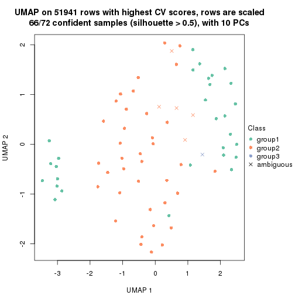
dimension_reduction(res, k = 4, method = "UMAP")
dimension_reduction(res, k = 5, method = "UMAP")
dimension_reduction(res, k = 6, method = "UMAP")
Following heatmap shows how subgroups are split when increasing k:
collect_classes(res)
Test correlation between subgroups and known annotations. If the known annotation is numeric, one-way ANOVA test is applied, and if the known annotation is discrete, chi-squared contingency table test is applied.
test_to_known_factors(res)
#> n individual(p) k
#> CV:hclust 71 NA 2
#> CV:hclust 66 0.549 3
#> CV:hclust 65 0.644 4
#> CV:hclust 60 0.868 5
#> CV:hclust 39 0.623 6
If matrix rows can be associated to genes, consider to use GO_Enrichment(res,
...) to perform function enrichment for the signature genes.
The object with results only for a single top-value method and a single partition method can be extracted as:
res = res_list["CV", "kmeans"]
# you can also extract it by
# res = res_list["CV:kmeans"]
A summary of res and all the functions that can be applied to it:
res
#> A 'ConsensusPartition' object with k = 2, 3, 4, 5, 6.
#> On a matrix with 51941 rows and 72 columns.
#> Top rows (1000, 2000, 3000, 4000, 5000) are extracted by 'CV' method.
#> Subgroups are detected by 'kmeans' method.
#> Performed in total 1250 partitions by row resampling.
#> Best k for subgroups seems to be 2.
#>
#> Following methods can be applied to this 'ConsensusPartition' object:
#> [1] "cola_report" "collect_classes" "collect_plots"
#> [4] "collect_stats" "colnames" "compare_signatures"
#> [7] "consensus_heatmap" "dimension_reduction" "functional_enrichment"
#> [10] "get_anno_col" "get_anno" "get_classes"
#> [13] "get_consensus" "get_matrix" "get_membership"
#> [16] "get_param" "get_signatures" "get_stats"
#> [19] "is_best_k" "is_stable_k" "membership_heatmap"
#> [22] "ncol" "nrow" "plot_ecdf"
#> [25] "rownames" "select_partition_number" "show"
#> [28] "suggest_best_k" "test_to_known_factors"
collect_plots() function collects all the plots made from res for all k (number of partitions)
into one single page to provide an easy and fast comparison between different k.
collect_plots(res)
The plots are:
k and the heatmap of
predicted classes for each k.k.k.k.All the plots in panels can be made by individual functions and they are plotted later in this section.
select_partition_number() produces several plots showing different
statistics for choosing “optimized” k. There are following statistics:
k;k, the area increased is defined as \(A_k - A_{k-1}\).The detailed explanations of these statistics can be found in the cola vignette.
Generally speaking, lower PAC score, higher mean silhouette score or higher
concordance corresponds to better partition. Rand index and Jaccard index
measure how similar the current partition is compared to partition with k-1.
If they are too similar, we won't accept k is better than k-1.
select_partition_number(res)
The numeric values for all these statistics can be obtained by get_stats().
get_stats(res)
#> k 1-PAC mean_silhouette concordance area_increased Rand Jaccard
#> 2 2 0.437 0.816 0.898 0.4623 0.507 0.507
#> 3 3 0.609 0.820 0.873 0.3346 0.771 0.587
#> 4 4 0.654 0.695 0.845 0.1313 0.879 0.696
#> 5 5 0.612 0.675 0.825 0.0757 0.855 0.597
#> 6 6 0.645 0.647 0.801 0.0509 0.920 0.712
suggest_best_k() suggests the best \(k\) based on these statistics. The rules are as follows:
NA.suggest_best_k(res)
#> [1] 2
Following shows the table of the partitions (You need to click the show/hide
code output link to see it). The membership matrix (columns with name p*)
is inferred by
clue::cl_consensus()
function with the SE method. Basically the value in the membership matrix
represents the probability to belong to a certain group. The finall class
label for an item is determined with the group with highest probability it
belongs to.
In get_classes() function, the entropy is calculated from the membership
matrix and the silhouette score is calculated from the consensus matrix.
cbind(get_classes(res, k = 2), get_membership(res, k = 2))
#> class entropy silhouette p1 p2
#> GSM253663 2 0.9686 0.279 0.396 0.604
#> GSM253664 2 0.0000 0.923 0.000 1.000
#> GSM253665 1 0.5519 0.849 0.872 0.128
#> GSM253666 2 0.0000 0.923 0.000 1.000
#> GSM253667 2 0.0000 0.923 0.000 1.000
#> GSM253668 2 0.0000 0.923 0.000 1.000
#> GSM253669 2 0.0000 0.923 0.000 1.000
#> GSM253670 1 0.9552 0.550 0.624 0.376
#> GSM253671 2 0.7602 0.684 0.220 0.780
#> GSM253672 1 0.7528 0.790 0.784 0.216
#> GSM253673 2 0.0672 0.918 0.008 0.992
#> GSM253674 2 0.0000 0.923 0.000 1.000
#> GSM253675 2 0.0000 0.923 0.000 1.000
#> GSM253676 2 0.2423 0.895 0.040 0.960
#> GSM253677 1 0.6247 0.842 0.844 0.156
#> GSM253678 2 0.0000 0.923 0.000 1.000
#> GSM253679 1 0.5946 0.847 0.856 0.144
#> GSM253680 2 0.0000 0.923 0.000 1.000
#> GSM253681 2 0.9209 0.345 0.336 0.664
#> GSM253682 1 0.5519 0.822 0.872 0.128
#> GSM253683 1 0.6973 0.787 0.812 0.188
#> GSM253684 1 0.1843 0.836 0.972 0.028
#> GSM253685 1 0.2423 0.838 0.960 0.040
#> GSM253686 2 0.9087 0.480 0.324 0.676
#> GSM253687 1 0.7056 0.814 0.808 0.192
#> GSM253688 2 0.9580 0.331 0.380 0.620
#> GSM253689 2 0.4562 0.840 0.096 0.904
#> GSM253690 2 0.7883 0.661 0.236 0.764
#> GSM253691 2 0.1414 0.911 0.020 0.980
#> GSM253692 2 0.1184 0.914 0.016 0.984
#> GSM253693 2 0.0000 0.923 0.000 1.000
#> GSM253694 2 0.0000 0.923 0.000 1.000
#> GSM253695 2 0.1633 0.908 0.024 0.976
#> GSM253696 1 0.2603 0.842 0.956 0.044
#> GSM253697 2 0.0000 0.923 0.000 1.000
#> GSM253698 2 0.0000 0.923 0.000 1.000
#> GSM253699 2 0.0000 0.923 0.000 1.000
#> GSM253700 2 0.0000 0.923 0.000 1.000
#> GSM253701 1 0.4161 0.849 0.916 0.084
#> GSM253702 1 0.6048 0.846 0.852 0.148
#> GSM253703 2 0.0000 0.923 0.000 1.000
#> GSM253704 2 0.0000 0.923 0.000 1.000
#> GSM253705 1 0.9608 0.527 0.616 0.384
#> GSM253706 1 0.1843 0.836 0.972 0.028
#> GSM253707 1 0.6887 0.790 0.816 0.184
#> GSM253708 1 0.6973 0.787 0.812 0.188
#> GSM253709 1 0.7453 0.729 0.788 0.212
#> GSM253710 1 0.6048 0.846 0.852 0.148
#> GSM253711 2 0.0000 0.923 0.000 1.000
#> GSM253712 1 0.6048 0.846 0.852 0.148
#> GSM253713 1 0.6048 0.846 0.852 0.148
#> GSM253714 2 0.2948 0.884 0.052 0.948
#> GSM253715 2 0.4431 0.835 0.092 0.908
#> GSM253716 2 0.0000 0.923 0.000 1.000
#> GSM253717 2 0.0000 0.923 0.000 1.000
#> GSM253718 2 0.0000 0.923 0.000 1.000
#> GSM253719 2 0.0000 0.923 0.000 1.000
#> GSM253720 2 0.0000 0.923 0.000 1.000
#> GSM253721 2 0.0000 0.923 0.000 1.000
#> GSM253722 2 0.0000 0.923 0.000 1.000
#> GSM253723 1 0.8267 0.709 0.740 0.260
#> GSM253724 2 0.0000 0.923 0.000 1.000
#> GSM253725 1 0.8713 0.690 0.708 0.292
#> GSM253726 1 0.6048 0.846 0.852 0.148
#> GSM253727 1 0.9775 0.472 0.588 0.412
#> GSM253728 2 0.0000 0.923 0.000 1.000
#> GSM253729 1 0.4022 0.834 0.920 0.080
#> GSM253730 1 0.2423 0.838 0.960 0.040
#> GSM253731 1 0.1843 0.836 0.972 0.028
#> GSM253732 1 0.7139 0.780 0.804 0.196
#> GSM253733 1 0.1843 0.836 0.972 0.028
#> GSM253734 2 0.9170 0.407 0.332 0.668
cbind(get_classes(res, k = 3), get_membership(res, k = 3))
#> class entropy silhouette p1 p2 p3
#> GSM253663 1 0.5200 0.791 0.796 0.184 0.020
#> GSM253664 2 0.1774 0.882 0.016 0.960 0.024
#> GSM253665 1 0.0848 0.850 0.984 0.008 0.008
#> GSM253666 2 0.1774 0.882 0.016 0.960 0.024
#> GSM253667 2 0.0661 0.891 0.004 0.988 0.008
#> GSM253668 2 0.0475 0.891 0.004 0.992 0.004
#> GSM253669 2 0.1774 0.882 0.016 0.960 0.024
#> GSM253670 1 0.3623 0.855 0.896 0.072 0.032
#> GSM253671 1 0.5508 0.782 0.784 0.188 0.028
#> GSM253672 1 0.1753 0.864 0.952 0.048 0.000
#> GSM253673 2 0.0475 0.891 0.004 0.992 0.004
#> GSM253674 2 0.0661 0.891 0.004 0.988 0.008
#> GSM253675 2 0.0661 0.891 0.004 0.988 0.008
#> GSM253676 2 0.6577 0.115 0.420 0.572 0.008
#> GSM253677 1 0.2116 0.852 0.948 0.012 0.040
#> GSM253678 2 0.0661 0.891 0.004 0.988 0.008
#> GSM253679 1 0.0829 0.854 0.984 0.012 0.004
#> GSM253680 2 0.1267 0.887 0.024 0.972 0.004
#> GSM253681 2 0.4873 0.778 0.152 0.824 0.024
#> GSM253682 3 0.5643 0.906 0.220 0.020 0.760
#> GSM253683 3 0.5756 0.905 0.208 0.028 0.764
#> GSM253684 3 0.5378 0.900 0.236 0.008 0.756
#> GSM253685 3 0.5325 0.894 0.248 0.004 0.748
#> GSM253686 1 0.5643 0.760 0.760 0.220 0.020
#> GSM253687 1 0.1643 0.864 0.956 0.044 0.000
#> GSM253688 1 0.5253 0.788 0.792 0.188 0.020
#> GSM253689 1 0.6326 0.674 0.688 0.292 0.020
#> GSM253690 1 0.5945 0.742 0.740 0.236 0.024
#> GSM253691 2 0.4921 0.737 0.164 0.816 0.020
#> GSM253692 2 0.6726 0.397 0.332 0.644 0.024
#> GSM253693 2 0.0475 0.891 0.004 0.992 0.004
#> GSM253694 2 0.3482 0.849 0.000 0.872 0.128
#> GSM253695 2 0.6839 0.345 0.352 0.624 0.024
#> GSM253696 1 0.0747 0.841 0.984 0.000 0.016
#> GSM253697 2 0.2448 0.876 0.000 0.924 0.076
#> GSM253698 2 0.0661 0.891 0.004 0.988 0.008
#> GSM253699 2 0.1163 0.888 0.000 0.972 0.028
#> GSM253700 2 0.3412 0.851 0.000 0.876 0.124
#> GSM253701 1 0.0747 0.841 0.984 0.000 0.016
#> GSM253702 1 0.0747 0.859 0.984 0.016 0.000
#> GSM253703 2 0.2711 0.870 0.000 0.912 0.088
#> GSM253704 2 0.3482 0.849 0.000 0.872 0.128
#> GSM253705 1 0.3112 0.853 0.900 0.096 0.004
#> GSM253706 3 0.5431 0.864 0.284 0.000 0.716
#> GSM253707 3 0.5756 0.905 0.208 0.028 0.764
#> GSM253708 3 0.5756 0.905 0.208 0.028 0.764
#> GSM253709 3 0.5366 0.521 0.016 0.208 0.776
#> GSM253710 1 0.1163 0.862 0.972 0.028 0.000
#> GSM253711 2 0.1525 0.887 0.004 0.964 0.032
#> GSM253712 1 0.0829 0.854 0.984 0.012 0.004
#> GSM253713 1 0.0829 0.854 0.984 0.012 0.004
#> GSM253714 1 0.6717 0.555 0.628 0.352 0.020
#> GSM253715 2 0.2564 0.876 0.036 0.936 0.028
#> GSM253716 2 0.3482 0.849 0.000 0.872 0.128
#> GSM253717 2 0.4194 0.862 0.060 0.876 0.064
#> GSM253718 2 0.2537 0.873 0.000 0.920 0.080
#> GSM253719 2 0.2625 0.872 0.000 0.916 0.084
#> GSM253720 2 0.1774 0.882 0.016 0.960 0.024
#> GSM253721 2 0.2448 0.876 0.000 0.924 0.076
#> GSM253722 2 0.2448 0.876 0.000 0.924 0.076
#> GSM253723 3 0.6595 0.673 0.076 0.180 0.744
#> GSM253724 2 0.3412 0.851 0.000 0.876 0.124
#> GSM253725 1 0.2496 0.862 0.928 0.068 0.004
#> GSM253726 1 0.0592 0.857 0.988 0.012 0.000
#> GSM253727 1 0.3590 0.854 0.896 0.076 0.028
#> GSM253728 2 0.0661 0.891 0.004 0.988 0.008
#> GSM253729 3 0.5551 0.905 0.224 0.016 0.760
#> GSM253730 3 0.5378 0.900 0.236 0.008 0.756
#> GSM253731 3 0.5431 0.864 0.284 0.000 0.716
#> GSM253732 3 0.5826 0.901 0.204 0.032 0.764
#> GSM253733 1 0.0747 0.841 0.984 0.000 0.016
#> GSM253734 2 0.6696 0.566 0.020 0.632 0.348
cbind(get_classes(res, k = 4), get_membership(res, k = 4))
#> class entropy silhouette p1 p2 p3 p4
#> GSM253663 1 0.4585 0.5718 0.668 0.332 0.000 0.000
#> GSM253664 2 0.0779 0.7378 0.004 0.980 0.000 0.016
#> GSM253665 1 0.0657 0.8716 0.984 0.000 0.004 0.012
#> GSM253666 2 0.0336 0.7344 0.008 0.992 0.000 0.000
#> GSM253667 2 0.2216 0.7088 0.000 0.908 0.000 0.092
#> GSM253668 2 0.2053 0.7224 0.004 0.924 0.000 0.072
#> GSM253669 2 0.0592 0.7318 0.016 0.984 0.000 0.000
#> GSM253670 1 0.1637 0.8676 0.940 0.060 0.000 0.000
#> GSM253671 1 0.2466 0.8489 0.900 0.096 0.000 0.004
#> GSM253672 1 0.1211 0.8729 0.960 0.040 0.000 0.000
#> GSM253673 2 0.2586 0.7278 0.008 0.912 0.012 0.068
#> GSM253674 2 0.2329 0.7265 0.000 0.916 0.012 0.072
#> GSM253675 2 0.2988 0.7118 0.000 0.876 0.012 0.112
#> GSM253676 2 0.6163 0.5150 0.236 0.676 0.012 0.076
#> GSM253677 1 0.1489 0.8575 0.952 0.000 0.004 0.044
#> GSM253678 2 0.1302 0.7310 0.000 0.956 0.000 0.044
#> GSM253679 1 0.0779 0.8706 0.980 0.000 0.004 0.016
#> GSM253680 2 0.0657 0.7350 0.012 0.984 0.000 0.004
#> GSM253681 2 0.2021 0.7096 0.056 0.932 0.012 0.000
#> GSM253682 3 0.1406 0.9448 0.024 0.016 0.960 0.000
#> GSM253683 3 0.1631 0.9423 0.020 0.016 0.956 0.008
#> GSM253684 3 0.1510 0.9440 0.028 0.016 0.956 0.000
#> GSM253685 3 0.1302 0.9325 0.044 0.000 0.956 0.000
#> GSM253686 1 0.4933 0.3488 0.568 0.432 0.000 0.000
#> GSM253687 1 0.1389 0.8712 0.952 0.048 0.000 0.000
#> GSM253688 1 0.4643 0.5514 0.656 0.344 0.000 0.000
#> GSM253689 2 0.4972 -0.0560 0.456 0.544 0.000 0.000
#> GSM253690 1 0.4866 0.4288 0.596 0.404 0.000 0.000
#> GSM253691 2 0.2345 0.6775 0.100 0.900 0.000 0.000
#> GSM253692 2 0.3528 0.5888 0.192 0.808 0.000 0.000
#> GSM253693 2 0.0524 0.7364 0.004 0.988 0.000 0.008
#> GSM253694 4 0.4741 0.7544 0.000 0.328 0.004 0.668
#> GSM253695 2 0.3942 0.5406 0.236 0.764 0.000 0.000
#> GSM253696 1 0.1398 0.8587 0.956 0.000 0.004 0.040
#> GSM253697 2 0.5253 0.3169 0.000 0.624 0.016 0.360
#> GSM253698 2 0.3217 0.7017 0.000 0.860 0.012 0.128
#> GSM253699 2 0.3577 0.6804 0.000 0.832 0.012 0.156
#> GSM253700 4 0.4608 0.7707 0.000 0.304 0.004 0.692
#> GSM253701 1 0.1209 0.8635 0.964 0.000 0.004 0.032
#> GSM253702 1 0.0712 0.8733 0.984 0.004 0.004 0.008
#> GSM253703 2 0.5119 -0.0765 0.000 0.556 0.004 0.440
#> GSM253704 4 0.4509 0.7745 0.000 0.288 0.004 0.708
#> GSM253705 1 0.2216 0.8522 0.908 0.092 0.000 0.000
#> GSM253706 3 0.4636 0.7848 0.188 0.000 0.772 0.040
#> GSM253707 3 0.1640 0.9412 0.020 0.012 0.956 0.012
#> GSM253708 3 0.1640 0.9412 0.020 0.012 0.956 0.012
#> GSM253709 4 0.2907 0.5559 0.032 0.004 0.064 0.900
#> GSM253710 1 0.0895 0.8745 0.976 0.020 0.004 0.000
#> GSM253711 2 0.0921 0.7358 0.000 0.972 0.000 0.028
#> GSM253712 1 0.0657 0.8716 0.984 0.000 0.004 0.012
#> GSM253713 1 0.0657 0.8716 0.984 0.000 0.004 0.012
#> GSM253714 2 0.4804 0.2137 0.384 0.616 0.000 0.000
#> GSM253715 2 0.1362 0.7377 0.012 0.964 0.004 0.020
#> GSM253716 4 0.4699 0.7596 0.000 0.320 0.004 0.676
#> GSM253717 2 0.5195 0.3664 0.032 0.692 0.000 0.276
#> GSM253718 2 0.5016 0.1000 0.000 0.600 0.004 0.396
#> GSM253719 2 0.4991 0.1313 0.000 0.608 0.004 0.388
#> GSM253720 2 0.0336 0.7344 0.008 0.992 0.000 0.000
#> GSM253721 2 0.5159 0.3186 0.000 0.624 0.012 0.364
#> GSM253722 2 0.5189 0.2977 0.000 0.616 0.012 0.372
#> GSM253723 4 0.6014 0.4781 0.004 0.060 0.292 0.644
#> GSM253724 4 0.4632 0.7672 0.000 0.308 0.004 0.688
#> GSM253725 1 0.1118 0.8734 0.964 0.036 0.000 0.000
#> GSM253726 1 0.0524 0.8726 0.988 0.000 0.004 0.008
#> GSM253727 1 0.2053 0.8631 0.924 0.072 0.000 0.004
#> GSM253728 2 0.3161 0.7048 0.000 0.864 0.012 0.124
#> GSM253729 3 0.1406 0.9448 0.024 0.016 0.960 0.000
#> GSM253730 3 0.1510 0.9440 0.028 0.016 0.956 0.000
#> GSM253731 3 0.4636 0.7848 0.188 0.000 0.772 0.040
#> GSM253732 3 0.1631 0.9423 0.020 0.016 0.956 0.008
#> GSM253733 1 0.1489 0.8565 0.952 0.000 0.004 0.044
#> GSM253734 4 0.4606 0.7134 0.016 0.136 0.040 0.808
cbind(get_classes(res, k = 5), get_membership(res, k = 5))
#> class entropy silhouette p1 p2 p3 p4 p5
#> GSM253663 4 0.4887 0.497 0.288 0.000 0.000 0.660 0.052
#> GSM253664 4 0.2450 0.728 0.000 0.028 0.000 0.896 0.076
#> GSM253665 1 0.1571 0.859 0.936 0.000 0.000 0.004 0.060
#> GSM253666 4 0.0771 0.747 0.000 0.020 0.000 0.976 0.004
#> GSM253667 4 0.5941 0.339 0.000 0.256 0.000 0.584 0.160
#> GSM253668 4 0.3944 0.649 0.000 0.160 0.000 0.788 0.052
#> GSM253669 4 0.1026 0.750 0.004 0.004 0.000 0.968 0.024
#> GSM253670 1 0.3960 0.820 0.800 0.004 0.000 0.140 0.056
#> GSM253671 1 0.4811 0.749 0.732 0.008 0.000 0.184 0.076
#> GSM253672 1 0.3647 0.829 0.816 0.000 0.000 0.132 0.052
#> GSM253673 4 0.4983 0.650 0.008 0.048 0.000 0.676 0.268
#> GSM253674 4 0.4240 0.654 0.000 0.036 0.000 0.736 0.228
#> GSM253675 4 0.5493 0.538 0.000 0.108 0.000 0.628 0.264
#> GSM253676 4 0.5248 0.691 0.052 0.032 0.000 0.700 0.216
#> GSM253677 1 0.1798 0.846 0.928 0.004 0.000 0.004 0.064
#> GSM253678 4 0.3631 0.689 0.000 0.072 0.000 0.824 0.104
#> GSM253679 1 0.1549 0.880 0.944 0.000 0.000 0.040 0.016
#> GSM253680 4 0.1997 0.750 0.028 0.024 0.000 0.932 0.016
#> GSM253681 4 0.2636 0.751 0.036 0.020 0.008 0.908 0.028
#> GSM253682 3 0.0404 0.889 0.000 0.000 0.988 0.012 0.000
#> GSM253683 3 0.0854 0.889 0.000 0.004 0.976 0.012 0.008
#> GSM253684 3 0.0404 0.889 0.000 0.000 0.988 0.012 0.000
#> GSM253685 3 0.0404 0.878 0.012 0.000 0.988 0.000 0.000
#> GSM253686 4 0.4589 0.574 0.248 0.000 0.000 0.704 0.048
#> GSM253687 1 0.2830 0.868 0.876 0.000 0.000 0.080 0.044
#> GSM253688 4 0.4780 0.515 0.280 0.000 0.000 0.672 0.048
#> GSM253689 4 0.3649 0.681 0.152 0.000 0.000 0.808 0.040
#> GSM253690 4 0.4728 0.568 0.240 0.000 0.000 0.700 0.060
#> GSM253691 4 0.1918 0.743 0.036 0.000 0.000 0.928 0.036
#> GSM253692 4 0.2871 0.726 0.088 0.000 0.000 0.872 0.040
#> GSM253693 4 0.1668 0.744 0.000 0.028 0.000 0.940 0.032
#> GSM253694 2 0.2209 0.562 0.000 0.912 0.000 0.056 0.032
#> GSM253695 4 0.3075 0.719 0.092 0.000 0.000 0.860 0.048
#> GSM253696 1 0.1608 0.851 0.928 0.000 0.000 0.000 0.072
#> GSM253697 2 0.6491 0.446 0.000 0.492 0.000 0.244 0.264
#> GSM253698 4 0.5738 0.502 0.000 0.132 0.000 0.604 0.264
#> GSM253699 4 0.5681 0.543 0.000 0.124 0.000 0.608 0.268
#> GSM253700 2 0.1043 0.569 0.000 0.960 0.000 0.040 0.000
#> GSM253701 1 0.1121 0.858 0.956 0.000 0.000 0.000 0.044
#> GSM253702 1 0.1121 0.881 0.956 0.000 0.000 0.044 0.000
#> GSM253703 2 0.3946 0.602 0.000 0.800 0.000 0.120 0.080
#> GSM253704 2 0.1364 0.552 0.000 0.952 0.000 0.036 0.012
#> GSM253705 1 0.3795 0.780 0.780 0.000 0.000 0.192 0.028
#> GSM253706 3 0.5160 0.453 0.336 0.000 0.608 0.000 0.056
#> GSM253707 3 0.0854 0.889 0.000 0.004 0.976 0.012 0.008
#> GSM253708 3 0.0854 0.889 0.000 0.004 0.976 0.012 0.008
#> GSM253709 5 0.4759 0.000 0.012 0.380 0.008 0.000 0.600
#> GSM253710 1 0.2514 0.876 0.896 0.000 0.000 0.060 0.044
#> GSM253711 4 0.3736 0.693 0.000 0.052 0.000 0.808 0.140
#> GSM253712 1 0.1836 0.879 0.932 0.000 0.000 0.036 0.032
#> GSM253713 1 0.1638 0.857 0.932 0.000 0.000 0.004 0.064
#> GSM253714 4 0.3485 0.697 0.124 0.000 0.000 0.828 0.048
#> GSM253715 4 0.2694 0.735 0.000 0.032 0.004 0.888 0.076
#> GSM253716 2 0.1522 0.576 0.000 0.944 0.000 0.044 0.012
#> GSM253717 4 0.5813 0.406 0.048 0.272 0.000 0.632 0.048
#> GSM253718 2 0.4981 0.577 0.000 0.704 0.000 0.188 0.108
#> GSM253719 2 0.4495 0.585 0.000 0.736 0.000 0.200 0.064
#> GSM253720 4 0.0854 0.750 0.004 0.012 0.000 0.976 0.008
#> GSM253721 2 0.6443 0.452 0.000 0.500 0.000 0.224 0.276
#> GSM253722 2 0.6351 0.463 0.000 0.516 0.000 0.204 0.280
#> GSM253723 2 0.3592 0.206 0.004 0.816 0.156 0.004 0.020
#> GSM253724 2 0.1043 0.569 0.000 0.960 0.000 0.040 0.000
#> GSM253725 1 0.2628 0.867 0.884 0.000 0.000 0.088 0.028
#> GSM253726 1 0.0992 0.867 0.968 0.000 0.000 0.008 0.024
#> GSM253727 1 0.3880 0.814 0.800 0.004 0.000 0.152 0.044
#> GSM253728 4 0.5738 0.502 0.000 0.132 0.000 0.604 0.264
#> GSM253729 3 0.0566 0.889 0.000 0.000 0.984 0.012 0.004
#> GSM253730 3 0.0404 0.889 0.000 0.000 0.988 0.012 0.000
#> GSM253731 3 0.5113 0.469 0.324 0.000 0.620 0.000 0.056
#> GSM253732 3 0.0854 0.889 0.000 0.004 0.976 0.012 0.008
#> GSM253733 1 0.1410 0.846 0.940 0.000 0.000 0.000 0.060
#> GSM253734 2 0.5131 -0.221 0.016 0.696 0.012 0.032 0.244
cbind(get_classes(res, k = 6), get_membership(res, k = 6))
#> class entropy silhouette p1 p2 p3 p4 p5 p6
#> GSM253663 4 0.2400 0.666 0.116 0.000 0.000 0.872 0.004 0.008
#> GSM253664 4 0.3982 0.556 0.000 0.008 0.000 0.696 0.016 0.280
#> GSM253665 1 0.1261 0.746 0.952 0.000 0.000 0.000 0.024 0.024
#> GSM253666 4 0.3354 0.680 0.000 0.008 0.000 0.792 0.016 0.184
#> GSM253667 6 0.6149 0.464 0.000 0.256 0.000 0.232 0.016 0.496
#> GSM253668 4 0.5359 0.447 0.000 0.140 0.000 0.632 0.016 0.212
#> GSM253669 4 0.2673 0.705 0.000 0.004 0.000 0.852 0.012 0.132
#> GSM253670 1 0.5330 0.665 0.600 0.008 0.000 0.316 0.028 0.048
#> GSM253671 1 0.5923 0.589 0.528 0.016 0.000 0.360 0.040 0.056
#> GSM253672 1 0.3791 0.713 0.688 0.000 0.000 0.300 0.004 0.008
#> GSM253673 6 0.4672 0.365 0.000 0.012 0.000 0.416 0.024 0.548
#> GSM253674 6 0.4150 0.422 0.000 0.004 0.000 0.372 0.012 0.612
#> GSM253675 6 0.3320 0.680 0.000 0.016 0.000 0.212 0.000 0.772
#> GSM253676 4 0.4661 -0.182 0.004 0.000 0.000 0.500 0.032 0.464
#> GSM253677 1 0.1844 0.753 0.932 0.004 0.000 0.024 0.028 0.012
#> GSM253678 4 0.4542 0.430 0.000 0.024 0.000 0.628 0.016 0.332
#> GSM253679 1 0.2373 0.791 0.880 0.000 0.000 0.104 0.008 0.008
#> GSM253680 4 0.3457 0.702 0.000 0.016 0.000 0.800 0.020 0.164
#> GSM253681 4 0.3879 0.678 0.000 0.016 0.016 0.780 0.016 0.172
#> GSM253682 3 0.0146 0.864 0.000 0.000 0.996 0.004 0.000 0.000
#> GSM253683 3 0.0551 0.862 0.000 0.000 0.984 0.004 0.008 0.004
#> GSM253684 3 0.0146 0.864 0.000 0.000 0.996 0.004 0.000 0.000
#> GSM253685 3 0.0547 0.854 0.000 0.000 0.980 0.000 0.000 0.020
#> GSM253686 4 0.2264 0.681 0.096 0.000 0.000 0.888 0.004 0.012
#> GSM253687 1 0.3329 0.758 0.756 0.000 0.000 0.236 0.004 0.004
#> GSM253688 4 0.2101 0.678 0.100 0.000 0.000 0.892 0.004 0.004
#> GSM253689 4 0.1693 0.705 0.044 0.000 0.000 0.932 0.004 0.020
#> GSM253690 4 0.2215 0.675 0.076 0.000 0.000 0.900 0.012 0.012
#> GSM253691 4 0.1644 0.716 0.004 0.000 0.000 0.920 0.000 0.076
#> GSM253692 4 0.1332 0.707 0.028 0.000 0.000 0.952 0.008 0.012
#> GSM253693 4 0.3354 0.678 0.000 0.008 0.000 0.792 0.016 0.184
#> GSM253694 2 0.2398 0.742 0.000 0.888 0.000 0.004 0.028 0.080
#> GSM253695 4 0.1465 0.707 0.024 0.004 0.000 0.948 0.004 0.020
#> GSM253696 1 0.1564 0.738 0.936 0.000 0.000 0.000 0.040 0.024
#> GSM253697 6 0.3593 0.548 0.000 0.228 0.000 0.024 0.000 0.748
#> GSM253698 6 0.3512 0.694 0.000 0.032 0.000 0.196 0.000 0.772
#> GSM253699 6 0.4657 0.615 0.000 0.044 0.000 0.264 0.020 0.672
#> GSM253700 2 0.1666 0.792 0.000 0.936 0.000 0.008 0.020 0.036
#> GSM253701 1 0.1353 0.764 0.952 0.000 0.000 0.024 0.012 0.012
#> GSM253702 1 0.2212 0.792 0.880 0.000 0.000 0.112 0.000 0.008
#> GSM253703 2 0.3101 0.741 0.000 0.832 0.000 0.012 0.020 0.136
#> GSM253704 2 0.1218 0.780 0.000 0.956 0.000 0.004 0.028 0.012
#> GSM253705 1 0.4620 0.558 0.544 0.000 0.000 0.420 0.004 0.032
#> GSM253706 3 0.5442 0.297 0.404 0.000 0.512 0.000 0.044 0.040
#> GSM253707 3 0.0622 0.860 0.000 0.000 0.980 0.000 0.008 0.012
#> GSM253708 3 0.0405 0.862 0.000 0.000 0.988 0.000 0.008 0.004
#> GSM253709 5 0.1765 0.000 0.000 0.096 0.000 0.000 0.904 0.000
#> GSM253710 1 0.3673 0.781 0.780 0.000 0.000 0.180 0.024 0.016
#> GSM253711 4 0.4647 0.115 0.000 0.016 0.000 0.516 0.016 0.452
#> GSM253712 1 0.3273 0.788 0.824 0.000 0.000 0.136 0.024 0.016
#> GSM253713 1 0.1261 0.746 0.952 0.000 0.000 0.000 0.024 0.024
#> GSM253714 4 0.1296 0.709 0.032 0.000 0.000 0.952 0.004 0.012
#> GSM253715 4 0.4209 0.584 0.000 0.020 0.004 0.712 0.016 0.248
#> GSM253716 2 0.0862 0.791 0.000 0.972 0.000 0.008 0.004 0.016
#> GSM253717 4 0.6274 0.376 0.020 0.208 0.000 0.580 0.032 0.160
#> GSM253718 2 0.3998 0.645 0.000 0.736 0.000 0.024 0.016 0.224
#> GSM253719 2 0.3630 0.714 0.000 0.804 0.000 0.044 0.016 0.136
#> GSM253720 4 0.3300 0.696 0.000 0.016 0.000 0.812 0.016 0.156
#> GSM253721 6 0.3692 0.581 0.000 0.184 0.000 0.028 0.012 0.776
#> GSM253722 6 0.3859 0.486 0.000 0.256 0.000 0.012 0.012 0.720
#> GSM253723 2 0.3869 0.632 0.000 0.804 0.096 0.000 0.032 0.068
#> GSM253724 2 0.1592 0.792 0.000 0.940 0.000 0.008 0.020 0.032
#> GSM253725 1 0.3311 0.770 0.780 0.000 0.000 0.204 0.004 0.012
#> GSM253726 1 0.0632 0.772 0.976 0.000 0.000 0.024 0.000 0.000
#> GSM253727 1 0.5217 0.660 0.604 0.008 0.000 0.320 0.024 0.044
#> GSM253728 6 0.3618 0.696 0.000 0.040 0.000 0.192 0.000 0.768
#> GSM253729 3 0.0000 0.863 0.000 0.000 1.000 0.000 0.000 0.000
#> GSM253730 3 0.0146 0.864 0.000 0.000 0.996 0.004 0.000 0.000
#> GSM253731 3 0.5431 0.308 0.396 0.000 0.520 0.000 0.044 0.040
#> GSM253732 3 0.0551 0.862 0.000 0.000 0.984 0.004 0.008 0.004
#> GSM253733 1 0.1700 0.733 0.928 0.000 0.000 0.000 0.048 0.024
#> GSM253734 2 0.5849 0.234 0.000 0.568 0.000 0.024 0.252 0.156
Heatmaps for the consensus matrix. It visualizes the probability of two samples to be in a same group.
consensus_heatmap(res, k = 2)
consensus_heatmap(res, k = 3)

consensus_heatmap(res, k = 4)
consensus_heatmap(res, k = 5)
consensus_heatmap(res, k = 6)
Heatmaps for the membership of samples in all partitions to see how consistent they are:
membership_heatmap(res, k = 2)
membership_heatmap(res, k = 3)
membership_heatmap(res, k = 4)
membership_heatmap(res, k = 5)
membership_heatmap(res, k = 6)
As soon as we have had the classes for columns, we can look for signatures which are significantly different between classes which can be candidate marks for certain classes. Following are the heatmaps for signatures.
Signature heatmaps where rows are scaled:
get_signatures(res, k = 2)
get_signatures(res, k = 3)
get_signatures(res, k = 4)
get_signatures(res, k = 5)
get_signatures(res, k = 6)
Signature heatmaps where rows are not scaled:
get_signatures(res, k = 2, scale_rows = FALSE)
get_signatures(res, k = 3, scale_rows = FALSE)
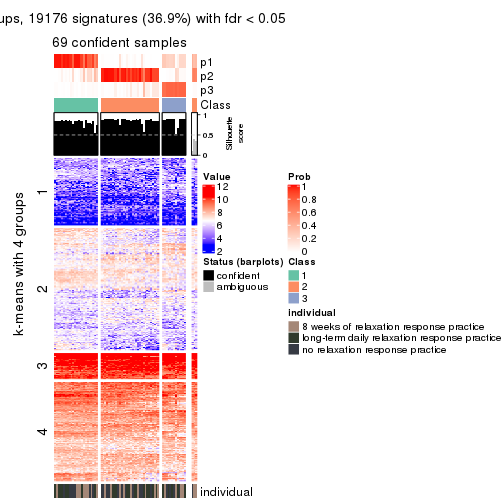
get_signatures(res, k = 4, scale_rows = FALSE)
get_signatures(res, k = 5, scale_rows = FALSE)
get_signatures(res, k = 6, scale_rows = FALSE)
Compare the overlap of signatures from different k:
compare_signatures(res)
get_signature() returns a data frame invisibly. TO get the list of signatures, the function
call should be assigned to a variable explicitly. In following code, if plot argument is set
to FALSE, no heatmap is plotted while only the differential analysis is performed.
# code only for demonstration
tb = get_signature(res, k = ..., plot = FALSE)
An example of the output of tb is:
#> which_row fdr mean_1 mean_2 scaled_mean_1 scaled_mean_2 km
#> 1 38 0.042760348 8.373488 9.131774 -0.5533452 0.5164555 1
#> 2 40 0.018707592 7.106213 8.469186 -0.6173731 0.5762149 1
#> 3 55 0.019134737 10.221463 11.207825 -0.6159697 0.5749050 1
#> 4 59 0.006059896 5.921854 7.869574 -0.6899429 0.6439467 1
#> 5 60 0.018055526 8.928898 10.211722 -0.6204761 0.5791110 1
#> 6 98 0.009384629 15.714769 14.887706 0.6635654 -0.6193277 2
...
The columns in tb are:
which_row: row indices corresponding to the input matrix.fdr: FDR for the differential test. mean_x: The mean value in group x.scaled_mean_x: The mean value in group x after rows are scaled.km: Row groups if k-means clustering is applied to rows.UMAP plot which shows how samples are separated.
dimension_reduction(res, k = 2, method = "UMAP")
dimension_reduction(res, k = 3, method = "UMAP")
dimension_reduction(res, k = 4, method = "UMAP")
dimension_reduction(res, k = 5, method = "UMAP")
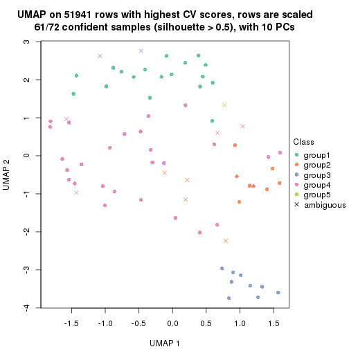
dimension_reduction(res, k = 6, method = "UMAP")
Following heatmap shows how subgroups are split when increasing k:
collect_classes(res)
Test correlation between subgroups and known annotations. If the known annotation is numeric, one-way ANOVA test is applied, and if the known annotation is discrete, chi-squared contingency table test is applied.
test_to_known_factors(res)
#> n individual(p) k
#> CV:kmeans 66 0.890 2
#> CV:kmeans 69 0.964 3
#> CV:kmeans 60 0.266 4
#> CV:kmeans 61 0.298 5
#> CV:kmeans 59 0.382 6
If matrix rows can be associated to genes, consider to use GO_Enrichment(res,
...) to perform function enrichment for the signature genes.
The object with results only for a single top-value method and a single partition method can be extracted as:
res = res_list["CV", "skmeans"]
# you can also extract it by
# res = res_list["CV:skmeans"]
A summary of res and all the functions that can be applied to it:
res
#> A 'ConsensusPartition' object with k = 2, 3, 4, 5, 6.
#> On a matrix with 51941 rows and 72 columns.
#> Top rows (1000, 2000, 3000, 4000, 5000) are extracted by 'CV' method.
#> Subgroups are detected by 'skmeans' method.
#> Performed in total 1250 partitions by row resampling.
#> Best k for subgroups seems to be 2.
#>
#> Following methods can be applied to this 'ConsensusPartition' object:
#> [1] "cola_report" "collect_classes" "collect_plots"
#> [4] "collect_stats" "colnames" "compare_signatures"
#> [7] "consensus_heatmap" "dimension_reduction" "functional_enrichment"
#> [10] "get_anno_col" "get_anno" "get_classes"
#> [13] "get_consensus" "get_matrix" "get_membership"
#> [16] "get_param" "get_signatures" "get_stats"
#> [19] "is_best_k" "is_stable_k" "membership_heatmap"
#> [22] "ncol" "nrow" "plot_ecdf"
#> [25] "rownames" "select_partition_number" "show"
#> [28] "suggest_best_k" "test_to_known_factors"
collect_plots() function collects all the plots made from res for all k (number of partitions)
into one single page to provide an easy and fast comparison between different k.
collect_plots(res)
The plots are:
k and the heatmap of
predicted classes for each k.k.k.k.All the plots in panels can be made by individual functions and they are plotted later in this section.
select_partition_number() produces several plots showing different
statistics for choosing “optimized” k. There are following statistics:
k;k, the area increased is defined as \(A_k - A_{k-1}\).The detailed explanations of these statistics can be found in the cola vignette.
Generally speaking, lower PAC score, higher mean silhouette score or higher
concordance corresponds to better partition. Rand index and Jaccard index
measure how similar the current partition is compared to partition with k-1.
If they are too similar, we won't accept k is better than k-1.
select_partition_number(res)
The numeric values for all these statistics can be obtained by get_stats().
get_stats(res)
#> k 1-PAC mean_silhouette concordance area_increased Rand Jaccard
#> 2 2 0.599 0.838 0.928 0.5050 0.493 0.493
#> 3 3 0.597 0.782 0.884 0.3031 0.759 0.554
#> 4 4 0.490 0.506 0.740 0.1384 0.829 0.554
#> 5 5 0.497 0.420 0.653 0.0666 0.865 0.542
#> 6 6 0.528 0.351 0.602 0.0408 0.924 0.672
suggest_best_k() suggests the best \(k\) based on these statistics. The rules are as follows:
NA.suggest_best_k(res)
#> [1] 2
Following shows the table of the partitions (You need to click the show/hide
code output link to see it). The membership matrix (columns with name p*)
is inferred by
clue::cl_consensus()
function with the SE method. Basically the value in the membership matrix
represents the probability to belong to a certain group. The finall class
label for an item is determined with the group with highest probability it
belongs to.
In get_classes() function, the entropy is calculated from the membership
matrix and the silhouette score is calculated from the consensus matrix.
cbind(get_classes(res, k = 2), get_membership(res, k = 2))
#> class entropy silhouette p1 p2
#> GSM253663 1 0.7376 0.7269 0.792 0.208
#> GSM253664 2 0.0000 0.9518 0.000 1.000
#> GSM253665 1 0.0000 0.8861 1.000 0.000
#> GSM253666 2 0.0000 0.9518 0.000 1.000
#> GSM253667 2 0.0000 0.9518 0.000 1.000
#> GSM253668 2 0.0000 0.9518 0.000 1.000
#> GSM253669 2 0.0376 0.9497 0.004 0.996
#> GSM253670 1 0.5842 0.8074 0.860 0.140
#> GSM253671 1 0.9970 0.1605 0.532 0.468
#> GSM253672 1 0.0000 0.8861 1.000 0.000
#> GSM253673 2 0.0938 0.9449 0.012 0.988
#> GSM253674 2 0.0000 0.9518 0.000 1.000
#> GSM253675 2 0.0000 0.9518 0.000 1.000
#> GSM253676 2 0.4431 0.8828 0.092 0.908
#> GSM253677 1 0.0000 0.8861 1.000 0.000
#> GSM253678 2 0.0000 0.9518 0.000 1.000
#> GSM253679 1 0.0000 0.8861 1.000 0.000
#> GSM253680 2 0.1414 0.9407 0.020 0.980
#> GSM253681 1 0.8327 0.6897 0.736 0.264
#> GSM253682 1 0.3114 0.8675 0.944 0.056
#> GSM253683 1 0.5408 0.8313 0.876 0.124
#> GSM253684 1 0.0000 0.8861 1.000 0.000
#> GSM253685 1 0.0000 0.8861 1.000 0.000
#> GSM253686 1 0.9988 0.0899 0.520 0.480
#> GSM253687 1 0.0000 0.8861 1.000 0.000
#> GSM253688 1 0.8861 0.5714 0.696 0.304
#> GSM253689 2 0.6247 0.8073 0.156 0.844
#> GSM253690 1 1.0000 0.0383 0.504 0.496
#> GSM253691 2 0.3114 0.9126 0.056 0.944
#> GSM253692 2 0.3879 0.8971 0.076 0.924
#> GSM253693 2 0.0000 0.9518 0.000 1.000
#> GSM253694 2 0.0000 0.9518 0.000 1.000
#> GSM253695 2 0.6712 0.7871 0.176 0.824
#> GSM253696 1 0.0000 0.8861 1.000 0.000
#> GSM253697 2 0.0000 0.9518 0.000 1.000
#> GSM253698 2 0.0000 0.9518 0.000 1.000
#> GSM253699 2 0.0000 0.9518 0.000 1.000
#> GSM253700 2 0.0000 0.9518 0.000 1.000
#> GSM253701 1 0.0000 0.8861 1.000 0.000
#> GSM253702 1 0.0000 0.8861 1.000 0.000
#> GSM253703 2 0.0000 0.9518 0.000 1.000
#> GSM253704 2 0.0000 0.9518 0.000 1.000
#> GSM253705 1 0.5408 0.8224 0.876 0.124
#> GSM253706 1 0.0000 0.8861 1.000 0.000
#> GSM253707 1 0.4815 0.8429 0.896 0.104
#> GSM253708 1 0.5408 0.8313 0.876 0.124
#> GSM253709 1 0.6531 0.8027 0.832 0.168
#> GSM253710 1 0.0000 0.8861 1.000 0.000
#> GSM253711 2 0.0672 0.9473 0.008 0.992
#> GSM253712 1 0.0000 0.8861 1.000 0.000
#> GSM253713 1 0.0000 0.8861 1.000 0.000
#> GSM253714 2 0.5059 0.8575 0.112 0.888
#> GSM253715 2 0.7883 0.6435 0.236 0.764
#> GSM253716 2 0.0000 0.9518 0.000 1.000
#> GSM253717 2 0.2778 0.9185 0.048 0.952
#> GSM253718 2 0.0000 0.9518 0.000 1.000
#> GSM253719 2 0.0000 0.9518 0.000 1.000
#> GSM253720 2 0.0000 0.9518 0.000 1.000
#> GSM253721 2 0.0000 0.9518 0.000 1.000
#> GSM253722 2 0.0000 0.9518 0.000 1.000
#> GSM253723 1 0.7056 0.7813 0.808 0.192
#> GSM253724 2 0.0000 0.9518 0.000 1.000
#> GSM253725 1 0.0376 0.8851 0.996 0.004
#> GSM253726 1 0.0000 0.8861 1.000 0.000
#> GSM253727 1 0.7299 0.7404 0.796 0.204
#> GSM253728 2 0.0000 0.9518 0.000 1.000
#> GSM253729 1 0.1633 0.8794 0.976 0.024
#> GSM253730 1 0.0672 0.8843 0.992 0.008
#> GSM253731 1 0.0000 0.8861 1.000 0.000
#> GSM253732 1 0.6973 0.7837 0.812 0.188
#> GSM253733 1 0.0000 0.8861 1.000 0.000
#> GSM253734 2 0.9988 -0.1118 0.480 0.520
cbind(get_classes(res, k = 3), get_membership(res, k = 3))
#> class entropy silhouette p1 p2 p3
#> GSM253663 1 0.1753 0.83652 0.952 0.048 0.000
#> GSM253664 2 0.0983 0.88030 0.016 0.980 0.004
#> GSM253665 1 0.0747 0.84331 0.984 0.000 0.016
#> GSM253666 2 0.2063 0.87252 0.044 0.948 0.008
#> GSM253667 2 0.1163 0.88560 0.000 0.972 0.028
#> GSM253668 2 0.1015 0.88482 0.012 0.980 0.008
#> GSM253669 2 0.3193 0.83387 0.100 0.896 0.004
#> GSM253670 1 0.2496 0.83296 0.928 0.004 0.068
#> GSM253671 1 0.1999 0.84018 0.952 0.036 0.012
#> GSM253672 1 0.0424 0.84275 0.992 0.000 0.008
#> GSM253673 2 0.4346 0.73940 0.184 0.816 0.000
#> GSM253674 2 0.0475 0.88467 0.004 0.992 0.004
#> GSM253675 2 0.0592 0.88465 0.000 0.988 0.012
#> GSM253676 1 0.6912 0.22172 0.540 0.444 0.016
#> GSM253677 1 0.2356 0.82776 0.928 0.000 0.072
#> GSM253678 2 0.0747 0.88597 0.000 0.984 0.016
#> GSM253679 1 0.4452 0.72963 0.808 0.000 0.192
#> GSM253680 2 0.6710 0.69011 0.196 0.732 0.072
#> GSM253681 3 0.6699 0.72100 0.092 0.164 0.744
#> GSM253682 3 0.1170 0.90390 0.016 0.008 0.976
#> GSM253683 3 0.0661 0.90363 0.004 0.008 0.988
#> GSM253684 3 0.2066 0.88746 0.060 0.000 0.940
#> GSM253685 3 0.1411 0.89955 0.036 0.000 0.964
#> GSM253686 1 0.3784 0.79307 0.864 0.132 0.004
#> GSM253687 1 0.0592 0.84390 0.988 0.000 0.012
#> GSM253688 1 0.1878 0.83594 0.952 0.044 0.004
#> GSM253689 1 0.5070 0.71720 0.772 0.224 0.004
#> GSM253690 1 0.4892 0.79212 0.840 0.112 0.048
#> GSM253691 2 0.5785 0.53383 0.300 0.696 0.004
#> GSM253692 1 0.7395 0.08602 0.492 0.476 0.032
#> GSM253693 2 0.0592 0.88296 0.012 0.988 0.000
#> GSM253694 2 0.4277 0.83284 0.016 0.852 0.132
#> GSM253695 1 0.7932 0.34296 0.552 0.384 0.064
#> GSM253696 1 0.2959 0.81186 0.900 0.000 0.100
#> GSM253697 2 0.1031 0.88463 0.000 0.976 0.024
#> GSM253698 2 0.0237 0.88404 0.000 0.996 0.004
#> GSM253699 2 0.1950 0.87849 0.040 0.952 0.008
#> GSM253700 2 0.3412 0.84438 0.000 0.876 0.124
#> GSM253701 1 0.4702 0.70279 0.788 0.000 0.212
#> GSM253702 1 0.1411 0.84117 0.964 0.000 0.036
#> GSM253703 2 0.1860 0.88036 0.000 0.948 0.052
#> GSM253704 2 0.4682 0.77993 0.004 0.804 0.192
#> GSM253705 1 0.1636 0.84558 0.964 0.020 0.016
#> GSM253706 3 0.4842 0.71548 0.224 0.000 0.776
#> GSM253707 3 0.0661 0.90355 0.008 0.004 0.988
#> GSM253708 3 0.0237 0.90245 0.000 0.004 0.996
#> GSM253709 3 0.3896 0.85912 0.052 0.060 0.888
#> GSM253710 1 0.0424 0.84359 0.992 0.000 0.008
#> GSM253711 2 0.6057 0.51971 0.004 0.656 0.340
#> GSM253712 1 0.2261 0.83126 0.932 0.000 0.068
#> GSM253713 1 0.0747 0.84331 0.984 0.000 0.016
#> GSM253714 1 0.5623 0.63379 0.716 0.280 0.004
#> GSM253715 2 0.7586 -0.00867 0.040 0.480 0.480
#> GSM253716 2 0.3686 0.83378 0.000 0.860 0.140
#> GSM253717 2 0.8810 0.47953 0.252 0.576 0.172
#> GSM253718 2 0.1411 0.88361 0.000 0.964 0.036
#> GSM253719 2 0.1643 0.88212 0.000 0.956 0.044
#> GSM253720 2 0.2446 0.87089 0.052 0.936 0.012
#> GSM253721 2 0.1031 0.88518 0.000 0.976 0.024
#> GSM253722 2 0.1289 0.88471 0.000 0.968 0.032
#> GSM253723 3 0.0592 0.89975 0.000 0.012 0.988
#> GSM253724 2 0.3267 0.84905 0.000 0.884 0.116
#> GSM253725 1 0.0237 0.84277 0.996 0.000 0.004
#> GSM253726 1 0.0747 0.84331 0.984 0.000 0.016
#> GSM253727 1 0.5588 0.76472 0.808 0.068 0.124
#> GSM253728 2 0.0424 0.88486 0.000 0.992 0.008
#> GSM253729 3 0.1031 0.90290 0.024 0.000 0.976
#> GSM253730 3 0.1529 0.89789 0.040 0.000 0.960
#> GSM253731 3 0.4121 0.79280 0.168 0.000 0.832
#> GSM253732 3 0.0424 0.90079 0.000 0.008 0.992
#> GSM253733 1 0.4887 0.67758 0.772 0.000 0.228
#> GSM253734 3 0.7497 0.50295 0.072 0.276 0.652
cbind(get_classes(res, k = 4), get_membership(res, k = 4))
#> class entropy silhouette p1 p2 p3 p4
#> GSM253663 1 0.5172 0.385609 0.588 0.404 0.008 0.000
#> GSM253664 2 0.4303 0.410116 0.004 0.768 0.008 0.220
#> GSM253665 1 0.0592 0.798369 0.984 0.016 0.000 0.000
#> GSM253666 2 0.4946 0.416874 0.012 0.736 0.016 0.236
#> GSM253667 4 0.5536 0.377286 0.000 0.384 0.024 0.592
#> GSM253668 4 0.4843 0.347504 0.000 0.396 0.000 0.604
#> GSM253669 2 0.4121 0.473537 0.020 0.796 0.000 0.184
#> GSM253670 1 0.5554 0.711685 0.764 0.136 0.032 0.068
#> GSM253671 1 0.6435 0.537138 0.640 0.224 0.000 0.136
#> GSM253672 1 0.3400 0.779614 0.856 0.128 0.004 0.012
#> GSM253673 2 0.6506 -0.000436 0.072 0.468 0.000 0.460
#> GSM253674 2 0.5097 0.007160 0.000 0.568 0.004 0.428
#> GSM253675 4 0.5158 0.205197 0.000 0.472 0.004 0.524
#> GSM253676 2 0.7762 0.261397 0.256 0.428 0.000 0.316
#> GSM253677 1 0.2644 0.795325 0.916 0.044 0.008 0.032
#> GSM253678 4 0.5125 0.360350 0.000 0.388 0.008 0.604
#> GSM253679 1 0.4768 0.740086 0.800 0.072 0.120 0.008
#> GSM253680 2 0.7420 0.110732 0.072 0.464 0.036 0.428
#> GSM253681 3 0.7526 0.520958 0.088 0.164 0.636 0.112
#> GSM253682 3 0.0000 0.811443 0.000 0.000 1.000 0.000
#> GSM253683 3 0.0000 0.811443 0.000 0.000 1.000 0.000
#> GSM253684 3 0.1388 0.797830 0.028 0.012 0.960 0.000
#> GSM253685 3 0.0779 0.806726 0.016 0.004 0.980 0.000
#> GSM253686 2 0.5869 -0.012665 0.428 0.544 0.012 0.016
#> GSM253687 1 0.1940 0.801407 0.924 0.076 0.000 0.000
#> GSM253688 1 0.5328 0.239518 0.520 0.472 0.004 0.004
#> GSM253689 2 0.5825 0.449862 0.268 0.664 0.000 0.068
#> GSM253690 1 0.8210 0.010304 0.420 0.416 0.072 0.092
#> GSM253691 2 0.5307 0.494328 0.076 0.736 0.000 0.188
#> GSM253692 2 0.7187 0.473041 0.156 0.628 0.028 0.188
#> GSM253693 2 0.5326 0.181620 0.016 0.604 0.000 0.380
#> GSM253694 4 0.5150 0.480293 0.044 0.120 0.044 0.792
#> GSM253695 2 0.8165 0.416035 0.260 0.516 0.040 0.184
#> GSM253696 1 0.1151 0.800343 0.968 0.008 0.024 0.000
#> GSM253697 4 0.4262 0.546350 0.000 0.236 0.008 0.756
#> GSM253698 4 0.5097 0.315548 0.000 0.428 0.004 0.568
#> GSM253699 4 0.5502 0.393246 0.016 0.320 0.012 0.652
#> GSM253700 4 0.2578 0.582560 0.000 0.036 0.052 0.912
#> GSM253701 1 0.2594 0.793324 0.916 0.036 0.044 0.004
#> GSM253702 1 0.2053 0.802860 0.924 0.072 0.004 0.000
#> GSM253703 4 0.3335 0.590792 0.000 0.128 0.016 0.856
#> GSM253704 4 0.3286 0.544205 0.000 0.044 0.080 0.876
#> GSM253705 1 0.5197 0.702228 0.748 0.204 0.024 0.024
#> GSM253706 3 0.5396 0.129508 0.464 0.012 0.524 0.000
#> GSM253707 3 0.0000 0.811443 0.000 0.000 1.000 0.000
#> GSM253708 3 0.0000 0.811443 0.000 0.000 1.000 0.000
#> GSM253709 3 0.8569 0.249134 0.176 0.052 0.436 0.336
#> GSM253710 1 0.2530 0.778583 0.888 0.112 0.000 0.000
#> GSM253711 4 0.8010 0.103231 0.004 0.316 0.284 0.396
#> GSM253712 1 0.3978 0.771031 0.836 0.108 0.056 0.000
#> GSM253713 1 0.0657 0.799771 0.984 0.012 0.004 0.000
#> GSM253714 2 0.6107 0.430561 0.264 0.648 0.000 0.088
#> GSM253715 3 0.8425 0.071945 0.032 0.252 0.452 0.264
#> GSM253716 4 0.2919 0.566334 0.000 0.044 0.060 0.896
#> GSM253717 4 0.8791 -0.063466 0.160 0.336 0.076 0.428
#> GSM253718 4 0.2999 0.588303 0.000 0.132 0.004 0.864
#> GSM253719 4 0.3636 0.567816 0.000 0.172 0.008 0.820
#> GSM253720 2 0.4991 0.350867 0.008 0.672 0.004 0.316
#> GSM253721 4 0.3907 0.542727 0.000 0.232 0.000 0.768
#> GSM253722 4 0.3810 0.571964 0.000 0.188 0.008 0.804
#> GSM253723 3 0.4709 0.661047 0.024 0.008 0.768 0.200
#> GSM253724 4 0.2385 0.581177 0.000 0.028 0.052 0.920
#> GSM253725 1 0.1716 0.802992 0.936 0.064 0.000 0.000
#> GSM253726 1 0.0524 0.798704 0.988 0.008 0.004 0.000
#> GSM253727 1 0.8091 0.430313 0.572 0.196 0.072 0.160
#> GSM253728 4 0.4933 0.303283 0.000 0.432 0.000 0.568
#> GSM253729 3 0.0000 0.811443 0.000 0.000 1.000 0.000
#> GSM253730 3 0.0188 0.810516 0.000 0.004 0.996 0.000
#> GSM253731 3 0.4697 0.529018 0.296 0.008 0.696 0.000
#> GSM253732 3 0.0000 0.811443 0.000 0.000 1.000 0.000
#> GSM253733 1 0.2610 0.773804 0.900 0.012 0.088 0.000
#> GSM253734 4 0.8976 -0.039337 0.140 0.104 0.352 0.404
cbind(get_classes(res, k = 5), get_membership(res, k = 5))
#> class entropy silhouette p1 p2 p3 p4 p5
#> GSM253663 5 0.6774 0.4065 0.376 0.000 0.008 0.196 0.420
#> GSM253664 4 0.5833 0.3479 0.012 0.092 0.008 0.644 0.244
#> GSM253665 1 0.2352 0.6645 0.896 0.000 0.008 0.004 0.092
#> GSM253666 4 0.5389 0.4249 0.000 0.100 0.012 0.684 0.204
#> GSM253667 4 0.5693 0.1948 0.000 0.428 0.028 0.512 0.032
#> GSM253668 4 0.6244 0.2434 0.000 0.412 0.000 0.444 0.144
#> GSM253669 4 0.5650 0.3692 0.012 0.108 0.000 0.652 0.228
#> GSM253670 1 0.6975 0.4182 0.600 0.092 0.028 0.056 0.224
#> GSM253671 1 0.7284 0.1069 0.476 0.144 0.000 0.064 0.316
#> GSM253672 1 0.4969 0.4964 0.668 0.012 0.000 0.036 0.284
#> GSM253673 4 0.7370 0.1018 0.032 0.336 0.000 0.392 0.240
#> GSM253674 4 0.5666 0.4114 0.000 0.244 0.000 0.620 0.136
#> GSM253675 4 0.4743 0.3806 0.000 0.248 0.004 0.700 0.048
#> GSM253676 4 0.8662 0.0496 0.172 0.212 0.008 0.308 0.300
#> GSM253677 1 0.3581 0.6509 0.840 0.040 0.008 0.004 0.108
#> GSM253678 4 0.6377 0.2169 0.000 0.364 0.012 0.500 0.124
#> GSM253679 1 0.5546 0.6057 0.736 0.028 0.072 0.032 0.132
#> GSM253680 4 0.7633 0.3424 0.060 0.212 0.016 0.512 0.200
#> GSM253681 3 0.8894 0.1771 0.084 0.128 0.448 0.188 0.152
#> GSM253682 3 0.0324 0.8102 0.004 0.000 0.992 0.000 0.004
#> GSM253683 3 0.0324 0.8102 0.004 0.000 0.992 0.000 0.004
#> GSM253684 3 0.1399 0.7912 0.028 0.000 0.952 0.000 0.020
#> GSM253685 3 0.0854 0.8074 0.012 0.004 0.976 0.000 0.008
#> GSM253686 5 0.6547 0.5517 0.232 0.000 0.000 0.296 0.472
#> GSM253687 1 0.4342 0.5819 0.740 0.008 0.004 0.020 0.228
#> GSM253688 5 0.6668 0.4686 0.344 0.004 0.000 0.204 0.448
#> GSM253689 4 0.7054 -0.3147 0.132 0.044 0.000 0.420 0.404
#> GSM253690 5 0.8479 0.4521 0.292 0.080 0.040 0.180 0.408
#> GSM253691 4 0.7305 0.2386 0.092 0.132 0.000 0.520 0.256
#> GSM253692 5 0.7871 0.2444 0.112 0.132 0.008 0.288 0.460
#> GSM253693 4 0.5816 0.4549 0.012 0.204 0.000 0.644 0.140
#> GSM253694 2 0.5183 0.4562 0.020 0.752 0.016 0.100 0.112
#> GSM253695 5 0.8156 0.3552 0.172 0.064 0.036 0.276 0.452
#> GSM253696 1 0.2676 0.6786 0.884 0.000 0.036 0.000 0.080
#> GSM253697 2 0.5808 0.2141 0.000 0.568 0.008 0.340 0.084
#> GSM253698 4 0.4885 0.3975 0.000 0.276 0.000 0.668 0.056
#> GSM253699 2 0.7679 0.0283 0.032 0.396 0.012 0.324 0.236
#> GSM253700 2 0.3566 0.5110 0.000 0.848 0.032 0.088 0.032
#> GSM253701 1 0.3423 0.6696 0.856 0.012 0.040 0.004 0.088
#> GSM253702 1 0.3197 0.6633 0.852 0.000 0.008 0.024 0.116
#> GSM253703 2 0.4126 0.4831 0.004 0.792 0.008 0.156 0.040
#> GSM253704 2 0.3965 0.5131 0.000 0.828 0.032 0.064 0.076
#> GSM253705 1 0.7199 0.3075 0.556 0.056 0.016 0.124 0.248
#> GSM253706 1 0.4818 0.1180 0.520 0.000 0.460 0.000 0.020
#> GSM253707 3 0.0807 0.8062 0.000 0.012 0.976 0.000 0.012
#> GSM253708 3 0.0451 0.8088 0.000 0.004 0.988 0.000 0.008
#> GSM253709 2 0.8891 0.1704 0.188 0.368 0.256 0.032 0.156
#> GSM253710 1 0.4576 0.5072 0.712 0.000 0.008 0.032 0.248
#> GSM253711 4 0.7641 0.1940 0.000 0.236 0.208 0.472 0.084
#> GSM253712 1 0.5309 0.5315 0.704 0.008 0.064 0.016 0.208
#> GSM253713 1 0.1764 0.6737 0.928 0.000 0.008 0.000 0.064
#> GSM253714 5 0.6866 0.3180 0.092 0.060 0.000 0.356 0.492
#> GSM253715 3 0.9034 -0.3036 0.024 0.260 0.288 0.244 0.184
#> GSM253716 2 0.2846 0.5167 0.000 0.888 0.012 0.048 0.052
#> GSM253717 2 0.8661 0.0878 0.136 0.372 0.024 0.176 0.292
#> GSM253718 2 0.4988 0.3499 0.000 0.656 0.000 0.284 0.060
#> GSM253719 2 0.4952 0.3860 0.000 0.708 0.008 0.216 0.068
#> GSM253720 4 0.6875 0.3628 0.012 0.184 0.012 0.528 0.264
#> GSM253721 2 0.5877 0.2256 0.000 0.544 0.004 0.356 0.096
#> GSM253722 2 0.5605 0.2553 0.000 0.588 0.004 0.328 0.080
#> GSM253723 3 0.6970 0.3888 0.044 0.260 0.580 0.032 0.084
#> GSM253724 2 0.2766 0.5225 0.000 0.892 0.012 0.056 0.040
#> GSM253725 1 0.3370 0.6458 0.824 0.000 0.000 0.028 0.148
#> GSM253726 1 0.1443 0.6790 0.948 0.004 0.004 0.000 0.044
#> GSM253727 1 0.7919 0.2688 0.508 0.168 0.036 0.064 0.224
#> GSM253728 4 0.4644 0.3952 0.000 0.280 0.000 0.680 0.040
#> GSM253729 3 0.0451 0.8098 0.004 0.000 0.988 0.000 0.008
#> GSM253730 3 0.0162 0.8102 0.004 0.000 0.996 0.000 0.000
#> GSM253731 3 0.4734 0.2532 0.372 0.000 0.604 0.000 0.024
#> GSM253732 3 0.0000 0.8100 0.000 0.000 1.000 0.000 0.000
#> GSM253733 1 0.2193 0.6717 0.912 0.000 0.060 0.000 0.028
#> GSM253734 2 0.9111 0.1904 0.148 0.368 0.220 0.052 0.212
cbind(get_classes(res, k = 6), get_membership(res, k = 6))
#> class entropy silhouette p1 p2 p3 p4 p5 p6
#> GSM253663 4 0.6383 0.31659 0.296 0.000 0.008 0.532 0.072 0.092
#> GSM253664 6 0.6014 0.20010 0.004 0.056 0.004 0.368 0.056 0.512
#> GSM253665 1 0.2462 0.62878 0.876 0.000 0.000 0.096 0.028 0.000
#> GSM253666 6 0.7155 0.25843 0.008 0.144 0.016 0.280 0.072 0.480
#> GSM253667 6 0.6532 0.11215 0.000 0.400 0.052 0.044 0.052 0.452
#> GSM253668 2 0.6811 -0.12874 0.000 0.412 0.004 0.108 0.096 0.380
#> GSM253669 6 0.7255 0.12152 0.016 0.108 0.000 0.356 0.124 0.396
#> GSM253670 1 0.7540 0.23587 0.492 0.076 0.012 0.128 0.244 0.048
#> GSM253671 5 0.7822 0.09582 0.284 0.076 0.000 0.196 0.388 0.056
#> GSM253672 1 0.5957 0.45144 0.600 0.008 0.008 0.216 0.152 0.016
#> GSM253673 6 0.8042 0.10949 0.020 0.184 0.004 0.184 0.260 0.348
#> GSM253674 6 0.5882 0.39709 0.004 0.128 0.000 0.136 0.088 0.644
#> GSM253675 6 0.4621 0.39506 0.000 0.176 0.000 0.052 0.044 0.728
#> GSM253676 5 0.8601 0.01457 0.116 0.144 0.004 0.132 0.312 0.292
#> GSM253677 1 0.4855 0.54358 0.704 0.020 0.000 0.044 0.212 0.020
#> GSM253678 6 0.7099 0.14863 0.004 0.328 0.024 0.104 0.080 0.460
#> GSM253679 1 0.6370 0.53118 0.628 0.024 0.040 0.088 0.192 0.028
#> GSM253680 6 0.8532 0.12847 0.060 0.196 0.012 0.148 0.228 0.356
#> GSM253681 3 0.9121 0.00063 0.100 0.088 0.384 0.112 0.188 0.128
#> GSM253682 3 0.0405 0.81834 0.000 0.000 0.988 0.008 0.004 0.000
#> GSM253683 3 0.0291 0.82006 0.000 0.004 0.992 0.000 0.004 0.000
#> GSM253684 3 0.2533 0.76511 0.052 0.000 0.892 0.044 0.008 0.004
#> GSM253685 3 0.1198 0.81631 0.012 0.000 0.960 0.004 0.020 0.004
#> GSM253686 4 0.6384 0.37332 0.204 0.008 0.008 0.592 0.060 0.128
#> GSM253687 1 0.5292 0.53949 0.652 0.004 0.000 0.208 0.120 0.016
#> GSM253688 4 0.5189 0.35609 0.256 0.000 0.000 0.644 0.040 0.060
#> GSM253689 4 0.7348 0.24399 0.144 0.024 0.000 0.488 0.136 0.208
#> GSM253690 4 0.8068 0.13632 0.232 0.028 0.016 0.396 0.220 0.108
#> GSM253691 6 0.7537 0.10361 0.028 0.076 0.004 0.292 0.180 0.420
#> GSM253692 4 0.7940 0.16331 0.040 0.108 0.016 0.456 0.172 0.208
#> GSM253693 6 0.6808 0.39465 0.000 0.164 0.004 0.188 0.116 0.528
#> GSM253694 2 0.5620 0.36603 0.004 0.672 0.016 0.056 0.188 0.064
#> GSM253695 4 0.8772 0.08912 0.100 0.136 0.028 0.380 0.224 0.132
#> GSM253696 1 0.3397 0.63669 0.844 0.000 0.032 0.044 0.076 0.004
#> GSM253697 2 0.5777 0.08130 0.000 0.496 0.008 0.040 0.052 0.404
#> GSM253698 6 0.5176 0.35038 0.000 0.252 0.000 0.056 0.044 0.648
#> GSM253699 6 0.7902 0.06318 0.008 0.240 0.008 0.144 0.260 0.340
#> GSM253700 2 0.3607 0.50294 0.000 0.836 0.032 0.012 0.044 0.076
#> GSM253701 1 0.4401 0.60412 0.752 0.008 0.032 0.020 0.180 0.008
#> GSM253702 1 0.5032 0.58774 0.704 0.004 0.008 0.120 0.152 0.012
#> GSM253703 2 0.4515 0.46528 0.000 0.756 0.008 0.024 0.080 0.132
#> GSM253704 2 0.4888 0.47360 0.004 0.752 0.028 0.024 0.100 0.092
#> GSM253705 1 0.7674 0.20536 0.436 0.024 0.012 0.244 0.204 0.080
#> GSM253706 1 0.4805 0.22105 0.564 0.000 0.392 0.008 0.032 0.004
#> GSM253707 3 0.1334 0.80968 0.000 0.020 0.948 0.000 0.032 0.000
#> GSM253708 3 0.0820 0.81754 0.000 0.012 0.972 0.000 0.016 0.000
#> GSM253709 2 0.8316 -0.12916 0.160 0.308 0.212 0.008 0.280 0.032
#> GSM253710 1 0.4755 0.50310 0.664 0.000 0.000 0.244 0.088 0.004
#> GSM253711 6 0.8436 0.20579 0.016 0.204 0.176 0.096 0.096 0.412
#> GSM253712 1 0.5733 0.52100 0.644 0.000 0.048 0.188 0.112 0.008
#> GSM253713 1 0.1682 0.64371 0.928 0.000 0.000 0.052 0.020 0.000
#> GSM253714 4 0.6880 0.23834 0.104 0.036 0.000 0.572 0.144 0.144
#> GSM253715 4 0.8887 0.02967 0.024 0.120 0.252 0.304 0.084 0.216
#> GSM253716 2 0.3172 0.50665 0.000 0.868 0.020 0.032 0.044 0.036
#> GSM253717 5 0.8356 0.17467 0.072 0.276 0.008 0.128 0.368 0.148
#> GSM253718 2 0.5131 0.37943 0.000 0.684 0.004 0.036 0.076 0.200
#> GSM253719 2 0.5132 0.37800 0.000 0.688 0.012 0.040 0.052 0.208
#> GSM253720 4 0.8023 -0.04309 0.008 0.152 0.012 0.304 0.228 0.296
#> GSM253721 6 0.6141 -0.02257 0.000 0.404 0.000 0.056 0.088 0.452
#> GSM253722 2 0.5979 0.01227 0.000 0.448 0.000 0.048 0.080 0.424
#> GSM253723 3 0.7209 0.12526 0.032 0.320 0.460 0.020 0.136 0.032
#> GSM253724 2 0.3994 0.50308 0.000 0.816 0.036 0.020 0.064 0.064
#> GSM253725 1 0.4666 0.59198 0.708 0.000 0.000 0.156 0.128 0.008
#> GSM253726 1 0.2776 0.64624 0.860 0.000 0.000 0.052 0.088 0.000
#> GSM253727 1 0.8120 0.07644 0.404 0.108 0.024 0.104 0.304 0.056
#> GSM253728 6 0.4856 0.40184 0.000 0.176 0.000 0.060 0.052 0.712
#> GSM253729 3 0.0436 0.82062 0.004 0.000 0.988 0.000 0.004 0.004
#> GSM253730 3 0.0551 0.81901 0.008 0.000 0.984 0.004 0.000 0.004
#> GSM253731 3 0.4746 0.16789 0.416 0.000 0.544 0.004 0.032 0.004
#> GSM253732 3 0.0405 0.81873 0.000 0.004 0.988 0.000 0.008 0.000
#> GSM253733 1 0.3442 0.62080 0.836 0.000 0.068 0.016 0.076 0.004
#> GSM253734 2 0.8423 -0.06112 0.064 0.336 0.200 0.028 0.304 0.068
Heatmaps for the consensus matrix. It visualizes the probability of two samples to be in a same group.
consensus_heatmap(res, k = 2)
consensus_heatmap(res, k = 3)
consensus_heatmap(res, k = 4)
consensus_heatmap(res, k = 5)
consensus_heatmap(res, k = 6)
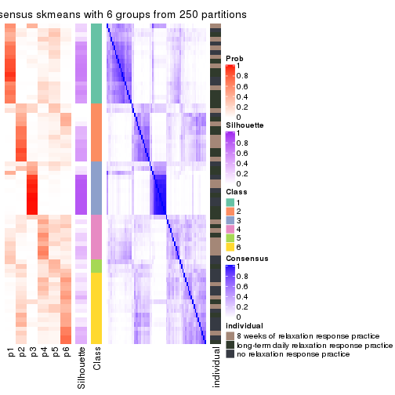
Heatmaps for the membership of samples in all partitions to see how consistent they are:
membership_heatmap(res, k = 2)

membership_heatmap(res, k = 3)
membership_heatmap(res, k = 4)
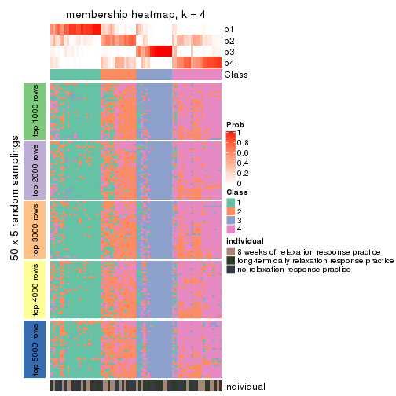
membership_heatmap(res, k = 5)
membership_heatmap(res, k = 6)
As soon as we have had the classes for columns, we can look for signatures which are significantly different between classes which can be candidate marks for certain classes. Following are the heatmaps for signatures.
Signature heatmaps where rows are scaled:
get_signatures(res, k = 2)
get_signatures(res, k = 3)
get_signatures(res, k = 4)
get_signatures(res, k = 5)
get_signatures(res, k = 6)
Signature heatmaps where rows are not scaled:
get_signatures(res, k = 2, scale_rows = FALSE)
get_signatures(res, k = 3, scale_rows = FALSE)
get_signatures(res, k = 4, scale_rows = FALSE)
get_signatures(res, k = 5, scale_rows = FALSE)
get_signatures(res, k = 6, scale_rows = FALSE)
Compare the overlap of signatures from different k:
compare_signatures(res)
get_signature() returns a data frame invisibly. TO get the list of signatures, the function
call should be assigned to a variable explicitly. In following code, if plot argument is set
to FALSE, no heatmap is plotted while only the differential analysis is performed.
# code only for demonstration
tb = get_signature(res, k = ..., plot = FALSE)
An example of the output of tb is:
#> which_row fdr mean_1 mean_2 scaled_mean_1 scaled_mean_2 km
#> 1 38 0.042760348 8.373488 9.131774 -0.5533452 0.5164555 1
#> 2 40 0.018707592 7.106213 8.469186 -0.6173731 0.5762149 1
#> 3 55 0.019134737 10.221463 11.207825 -0.6159697 0.5749050 1
#> 4 59 0.006059896 5.921854 7.869574 -0.6899429 0.6439467 1
#> 5 60 0.018055526 8.928898 10.211722 -0.6204761 0.5791110 1
#> 6 98 0.009384629 15.714769 14.887706 0.6635654 -0.6193277 2
...
The columns in tb are:
which_row: row indices corresponding to the input matrix.fdr: FDR for the differential test. mean_x: The mean value in group x.scaled_mean_x: The mean value in group x after rows are scaled.km: Row groups if k-means clustering is applied to rows.UMAP plot which shows how samples are separated.
dimension_reduction(res, k = 2, method = "UMAP")
dimension_reduction(res, k = 3, method = "UMAP")

dimension_reduction(res, k = 4, method = "UMAP")
dimension_reduction(res, k = 5, method = "UMAP")
dimension_reduction(res, k = 6, method = "UMAP")
Following heatmap shows how subgroups are split when increasing k:
collect_classes(res)
Test correlation between subgroups and known annotations. If the known annotation is numeric, one-way ANOVA test is applied, and if the known annotation is discrete, chi-squared contingency table test is applied.
test_to_known_factors(res)
#> n individual(p) k
#> CV:skmeans 68 0.940 2
#> CV:skmeans 67 0.952 3
#> CV:skmeans 39 0.210 4
#> CV:skmeans 27 0.511 5
#> CV:skmeans 25 0.628 6
If matrix rows can be associated to genes, consider to use GO_Enrichment(res,
...) to perform function enrichment for the signature genes.
The object with results only for a single top-value method and a single partition method can be extracted as:
res = res_list["CV", "pam"]
# you can also extract it by
# res = res_list["CV:pam"]
A summary of res and all the functions that can be applied to it:
res
#> A 'ConsensusPartition' object with k = 2, 3, 4, 5, 6.
#> On a matrix with 51941 rows and 72 columns.
#> Top rows (1000, 2000, 3000, 4000, 5000) are extracted by 'CV' method.
#> Subgroups are detected by 'pam' method.
#> Performed in total 1250 partitions by row resampling.
#> There is no best k.
#>
#> Following methods can be applied to this 'ConsensusPartition' object:
#> [1] "cola_report" "collect_classes" "collect_plots"
#> [4] "collect_stats" "colnames" "compare_signatures"
#> [7] "consensus_heatmap" "dimension_reduction" "functional_enrichment"
#> [10] "get_anno_col" "get_anno" "get_classes"
#> [13] "get_consensus" "get_matrix" "get_membership"
#> [16] "get_param" "get_signatures" "get_stats"
#> [19] "is_best_k" "is_stable_k" "membership_heatmap"
#> [22] "ncol" "nrow" "plot_ecdf"
#> [25] "rownames" "select_partition_number" "show"
#> [28] "suggest_best_k" "test_to_known_factors"
collect_plots() function collects all the plots made from res for all k (number of partitions)
into one single page to provide an easy and fast comparison between different k.
collect_plots(res)
The plots are:
k and the heatmap of
predicted classes for each k.k.k.k.All the plots in panels can be made by individual functions and they are plotted later in this section.
select_partition_number() produces several plots showing different
statistics for choosing “optimized” k. There are following statistics:
k;k, the area increased is defined as \(A_k - A_{k-1}\).The detailed explanations of these statistics can be found in the cola vignette.
Generally speaking, lower PAC score, higher mean silhouette score or higher
concordance corresponds to better partition. Rand index and Jaccard index
measure how similar the current partition is compared to partition with k-1.
If they are too similar, we won't accept k is better than k-1.
select_partition_number(res)
The numeric values for all these statistics can be obtained by get_stats().
get_stats(res)
#> k 1-PAC mean_silhouette concordance area_increased Rand Jaccard
#> 2 2 0.553 0.813 0.898 0.3791 0.606 0.606
#> 3 3 0.868 0.879 0.949 0.4406 0.831 0.725
#> 4 4 0.816 0.851 0.943 0.0229 0.996 0.991
#> 5 5 0.755 0.803 0.926 0.0501 0.983 0.962
#> 6 6 0.721 0.731 0.897 0.0566 0.985 0.965
suggest_best_k() suggests the best \(k\) based on these statistics. The rules are as follows:
NA.suggest_best_k(res)
#> [1] NA
Following shows the table of the partitions (You need to click the show/hide
code output link to see it). The membership matrix (columns with name p*)
is inferred by
clue::cl_consensus()
function with the SE method. Basically the value in the membership matrix
represents the probability to belong to a certain group. The finall class
label for an item is determined with the group with highest probability it
belongs to.
In get_classes() function, the entropy is calculated from the membership
matrix and the silhouette score is calculated from the consensus matrix.
cbind(get_classes(res, k = 2), get_membership(res, k = 2))
#> class entropy silhouette p1 p2
#> GSM253663 2 0.2603 0.8754 0.044 0.956
#> GSM253664 2 0.0000 0.9163 0.000 1.000
#> GSM253665 1 0.7139 0.7914 0.804 0.196
#> GSM253666 2 0.0000 0.9163 0.000 1.000
#> GSM253667 2 0.0000 0.9163 0.000 1.000
#> GSM253668 2 0.0000 0.9163 0.000 1.000
#> GSM253669 2 0.0000 0.9163 0.000 1.000
#> GSM253670 2 0.9522 0.0451 0.372 0.628
#> GSM253671 2 0.4298 0.8151 0.088 0.912
#> GSM253672 1 0.9044 0.7839 0.680 0.320
#> GSM253673 2 0.0000 0.9163 0.000 1.000
#> GSM253674 2 0.0000 0.9163 0.000 1.000
#> GSM253675 2 0.0000 0.9163 0.000 1.000
#> GSM253676 2 0.0000 0.9163 0.000 1.000
#> GSM253677 1 0.9286 0.7588 0.656 0.344
#> GSM253678 2 0.0000 0.9163 0.000 1.000
#> GSM253679 1 0.9087 0.7806 0.676 0.324
#> GSM253680 2 0.0000 0.9163 0.000 1.000
#> GSM253681 2 0.0376 0.9135 0.004 0.996
#> GSM253682 2 0.9000 0.5370 0.316 0.684
#> GSM253683 2 0.8955 0.5430 0.312 0.688
#> GSM253684 1 0.2236 0.7364 0.964 0.036
#> GSM253685 1 0.6247 0.6763 0.844 0.156
#> GSM253686 2 0.2236 0.8838 0.036 0.964
#> GSM253687 1 0.9209 0.7708 0.664 0.336
#> GSM253688 2 0.0376 0.9134 0.004 0.996
#> GSM253689 2 0.0000 0.9163 0.000 1.000
#> GSM253690 2 0.7376 0.5971 0.208 0.792
#> GSM253691 2 0.0000 0.9163 0.000 1.000
#> GSM253692 2 0.0672 0.9105 0.008 0.992
#> GSM253693 2 0.0000 0.9163 0.000 1.000
#> GSM253694 2 0.0000 0.9163 0.000 1.000
#> GSM253695 2 0.0672 0.9106 0.008 0.992
#> GSM253696 1 0.8327 0.7974 0.736 0.264
#> GSM253697 2 0.0000 0.9163 0.000 1.000
#> GSM253698 2 0.0000 0.9163 0.000 1.000
#> GSM253699 2 0.0672 0.9106 0.008 0.992
#> GSM253700 2 0.0000 0.9163 0.000 1.000
#> GSM253701 1 0.1414 0.7439 0.980 0.020
#> GSM253702 1 0.9922 0.5608 0.552 0.448
#> GSM253703 2 0.0000 0.9163 0.000 1.000
#> GSM253704 2 0.0000 0.9163 0.000 1.000
#> GSM253705 2 0.0000 0.9163 0.000 1.000
#> GSM253706 1 0.0000 0.7311 1.000 0.000
#> GSM253707 2 0.8861 0.5549 0.304 0.696
#> GSM253708 2 0.8955 0.5430 0.312 0.688
#> GSM253709 1 0.3584 0.7343 0.932 0.068
#> GSM253710 1 0.9000 0.7859 0.684 0.316
#> GSM253711 2 0.0000 0.9163 0.000 1.000
#> GSM253712 1 0.8861 0.7924 0.696 0.304
#> GSM253713 1 0.8861 0.7923 0.696 0.304
#> GSM253714 2 0.0000 0.9163 0.000 1.000
#> GSM253715 2 0.0672 0.9105 0.008 0.992
#> GSM253716 2 0.0000 0.9163 0.000 1.000
#> GSM253717 2 0.0000 0.9163 0.000 1.000
#> GSM253718 2 0.0000 0.9163 0.000 1.000
#> GSM253719 2 0.0000 0.9163 0.000 1.000
#> GSM253720 2 0.0000 0.9163 0.000 1.000
#> GSM253721 2 0.0000 0.9163 0.000 1.000
#> GSM253722 2 0.0000 0.9163 0.000 1.000
#> GSM253723 2 0.6048 0.7625 0.148 0.852
#> GSM253724 2 0.0000 0.9163 0.000 1.000
#> GSM253725 1 0.9170 0.7746 0.668 0.332
#> GSM253726 1 0.8955 0.7879 0.688 0.312
#> GSM253727 2 0.0000 0.9163 0.000 1.000
#> GSM253728 2 0.0000 0.9163 0.000 1.000
#> GSM253729 2 0.9661 0.4023 0.392 0.608
#> GSM253730 2 0.9286 0.4986 0.344 0.656
#> GSM253731 1 0.0000 0.7311 1.000 0.000
#> GSM253732 2 0.8861 0.5548 0.304 0.696
#> GSM253733 1 0.2236 0.7511 0.964 0.036
#> GSM253734 2 0.0000 0.9163 0.000 1.000
cbind(get_classes(res, k = 3), get_membership(res, k = 3))
#> class entropy silhouette p1 p2 p3
#> GSM253663 2 0.3879 0.8430 0.152 0.848 0.000
#> GSM253664 2 0.0000 0.9640 0.000 1.000 0.000
#> GSM253665 1 0.0000 0.8866 1.000 0.000 0.000
#> GSM253666 2 0.0000 0.9640 0.000 1.000 0.000
#> GSM253667 2 0.0000 0.9640 0.000 1.000 0.000
#> GSM253668 2 0.0000 0.9640 0.000 1.000 0.000
#> GSM253669 2 0.0000 0.9640 0.000 1.000 0.000
#> GSM253670 2 0.6204 0.2514 0.424 0.576 0.000
#> GSM253671 2 0.3192 0.8753 0.112 0.888 0.000
#> GSM253672 1 0.1529 0.8771 0.960 0.040 0.000
#> GSM253673 2 0.0592 0.9589 0.012 0.988 0.000
#> GSM253674 2 0.0000 0.9640 0.000 1.000 0.000
#> GSM253675 2 0.0000 0.9640 0.000 1.000 0.000
#> GSM253676 2 0.1643 0.9416 0.044 0.956 0.000
#> GSM253677 1 0.2878 0.8240 0.904 0.096 0.000
#> GSM253678 2 0.0000 0.9640 0.000 1.000 0.000
#> GSM253679 1 0.2400 0.8589 0.932 0.064 0.004
#> GSM253680 2 0.0000 0.9640 0.000 1.000 0.000
#> GSM253681 2 0.1129 0.9533 0.020 0.976 0.004
#> GSM253682 3 0.0000 0.8871 0.000 0.000 1.000
#> GSM253683 3 0.0000 0.8871 0.000 0.000 1.000
#> GSM253684 3 0.0000 0.8871 0.000 0.000 1.000
#> GSM253685 3 0.0000 0.8871 0.000 0.000 1.000
#> GSM253686 2 0.3267 0.8844 0.116 0.884 0.000
#> GSM253687 1 0.1643 0.8766 0.956 0.044 0.000
#> GSM253688 2 0.1964 0.9347 0.056 0.944 0.000
#> GSM253689 2 0.0747 0.9570 0.016 0.984 0.000
#> GSM253690 2 0.5254 0.6586 0.264 0.736 0.000
#> GSM253691 2 0.0000 0.9640 0.000 1.000 0.000
#> GSM253692 2 0.2066 0.9323 0.060 0.940 0.000
#> GSM253693 2 0.0000 0.9640 0.000 1.000 0.000
#> GSM253694 2 0.0000 0.9640 0.000 1.000 0.000
#> GSM253695 2 0.2165 0.9292 0.064 0.936 0.000
#> GSM253696 1 0.0000 0.8866 1.000 0.000 0.000
#> GSM253697 2 0.0000 0.9640 0.000 1.000 0.000
#> GSM253698 2 0.0000 0.9640 0.000 1.000 0.000
#> GSM253699 2 0.2261 0.9265 0.068 0.932 0.000
#> GSM253700 2 0.0000 0.9640 0.000 1.000 0.000
#> GSM253701 1 0.3038 0.8324 0.896 0.000 0.104
#> GSM253702 1 0.5363 0.5450 0.724 0.276 0.000
#> GSM253703 2 0.0000 0.9640 0.000 1.000 0.000
#> GSM253704 2 0.0000 0.9640 0.000 1.000 0.000
#> GSM253705 2 0.0000 0.9640 0.000 1.000 0.000
#> GSM253706 1 0.6302 0.1565 0.520 0.000 0.480
#> GSM253707 3 0.1411 0.8585 0.000 0.036 0.964
#> GSM253708 3 0.0000 0.8871 0.000 0.000 1.000
#> GSM253709 3 0.5899 0.5740 0.244 0.020 0.736
#> GSM253710 1 0.0000 0.8866 1.000 0.000 0.000
#> GSM253711 2 0.0000 0.9640 0.000 1.000 0.000
#> GSM253712 1 0.0237 0.8862 0.996 0.000 0.004
#> GSM253713 1 0.0000 0.8866 1.000 0.000 0.000
#> GSM253714 2 0.1643 0.9416 0.044 0.956 0.000
#> GSM253715 2 0.1031 0.9530 0.024 0.976 0.000
#> GSM253716 2 0.0000 0.9640 0.000 1.000 0.000
#> GSM253717 2 0.0000 0.9640 0.000 1.000 0.000
#> GSM253718 2 0.0000 0.9640 0.000 1.000 0.000
#> GSM253719 2 0.0000 0.9640 0.000 1.000 0.000
#> GSM253720 2 0.0000 0.9640 0.000 1.000 0.000
#> GSM253721 2 0.0000 0.9640 0.000 1.000 0.000
#> GSM253722 2 0.0000 0.9640 0.000 1.000 0.000
#> GSM253723 3 0.6299 0.0732 0.000 0.476 0.524
#> GSM253724 2 0.0000 0.9640 0.000 1.000 0.000
#> GSM253725 1 0.2356 0.8579 0.928 0.072 0.000
#> GSM253726 1 0.0000 0.8866 1.000 0.000 0.000
#> GSM253727 2 0.0000 0.9640 0.000 1.000 0.000
#> GSM253728 2 0.0000 0.9640 0.000 1.000 0.000
#> GSM253729 3 0.0000 0.8871 0.000 0.000 1.000
#> GSM253730 3 0.0000 0.8871 0.000 0.000 1.000
#> GSM253731 1 0.2959 0.8294 0.900 0.000 0.100
#> GSM253732 3 0.0892 0.8737 0.000 0.020 0.980
#> GSM253733 1 0.1950 0.8709 0.952 0.008 0.040
#> GSM253734 2 0.2313 0.9342 0.024 0.944 0.032
cbind(get_classes(res, k = 4), get_membership(res, k = 4))
#> class entropy silhouette p1 p2 p3 p4
#> GSM253663 2 0.4568 0.7948 0.124 0.800 0.000 0.076
#> GSM253664 2 0.0000 0.9545 0.000 1.000 0.000 0.000
#> GSM253665 1 0.0000 0.8574 1.000 0.000 0.000 0.000
#> GSM253666 2 0.0000 0.9545 0.000 1.000 0.000 0.000
#> GSM253667 2 0.0000 0.9545 0.000 1.000 0.000 0.000
#> GSM253668 2 0.0000 0.9545 0.000 1.000 0.000 0.000
#> GSM253669 2 0.0000 0.9545 0.000 1.000 0.000 0.000
#> GSM253670 2 0.5080 0.2631 0.420 0.576 0.000 0.004
#> GSM253671 2 0.2973 0.8673 0.096 0.884 0.000 0.020
#> GSM253672 1 0.2751 0.8293 0.904 0.040 0.000 0.056
#> GSM253673 2 0.0469 0.9494 0.012 0.988 0.000 0.000
#> GSM253674 2 0.0000 0.9545 0.000 1.000 0.000 0.000
#> GSM253675 2 0.0000 0.9545 0.000 1.000 0.000 0.000
#> GSM253676 2 0.2635 0.9013 0.020 0.904 0.000 0.076
#> GSM253677 1 0.3542 0.7940 0.864 0.060 0.000 0.076
#> GSM253678 2 0.0000 0.9545 0.000 1.000 0.000 0.000
#> GSM253679 1 0.2485 0.8217 0.916 0.064 0.004 0.016
#> GSM253680 2 0.0000 0.9545 0.000 1.000 0.000 0.000
#> GSM253681 2 0.0927 0.9438 0.016 0.976 0.008 0.000
#> GSM253682 3 0.0000 0.8603 0.000 0.000 1.000 0.000
#> GSM253683 3 0.0000 0.8603 0.000 0.000 1.000 0.000
#> GSM253684 3 0.0000 0.8603 0.000 0.000 1.000 0.000
#> GSM253685 3 0.0000 0.8603 0.000 0.000 1.000 0.000
#> GSM253686 2 0.3903 0.8476 0.080 0.844 0.000 0.076
#> GSM253687 1 0.2002 0.8439 0.936 0.044 0.000 0.020
#> GSM253688 2 0.2845 0.8958 0.028 0.896 0.000 0.076
#> GSM253689 2 0.1022 0.9405 0.000 0.968 0.000 0.032
#> GSM253690 2 0.4934 0.6434 0.252 0.720 0.000 0.028
#> GSM253691 2 0.0000 0.9545 0.000 1.000 0.000 0.000
#> GSM253692 2 0.2411 0.9127 0.040 0.920 0.000 0.040
#> GSM253693 2 0.0000 0.9545 0.000 1.000 0.000 0.000
#> GSM253694 2 0.0000 0.9545 0.000 1.000 0.000 0.000
#> GSM253695 2 0.2830 0.8985 0.040 0.900 0.000 0.060
#> GSM253696 1 0.0000 0.8574 1.000 0.000 0.000 0.000
#> GSM253697 2 0.0000 0.9545 0.000 1.000 0.000 0.000
#> GSM253698 2 0.0000 0.9545 0.000 1.000 0.000 0.000
#> GSM253699 2 0.3037 0.8898 0.036 0.888 0.000 0.076
#> GSM253700 2 0.0000 0.9545 0.000 1.000 0.000 0.000
#> GSM253701 1 0.3521 0.8046 0.864 0.000 0.084 0.052
#> GSM253702 1 0.5979 0.4087 0.652 0.272 0.000 0.076
#> GSM253703 2 0.0188 0.9530 0.000 0.996 0.000 0.004
#> GSM253704 2 0.0000 0.9545 0.000 1.000 0.000 0.000
#> GSM253705 2 0.0000 0.9545 0.000 1.000 0.000 0.000
#> GSM253706 1 0.4989 0.2176 0.528 0.000 0.472 0.000
#> GSM253707 3 0.1211 0.8058 0.000 0.040 0.960 0.000
#> GSM253708 3 0.0000 0.8603 0.000 0.000 1.000 0.000
#> GSM253709 4 0.1902 0.0000 0.004 0.000 0.064 0.932
#> GSM253710 1 0.0000 0.8574 1.000 0.000 0.000 0.000
#> GSM253711 2 0.0000 0.9545 0.000 1.000 0.000 0.000
#> GSM253712 1 0.1940 0.8356 0.924 0.000 0.000 0.076
#> GSM253713 1 0.0000 0.8574 1.000 0.000 0.000 0.000
#> GSM253714 2 0.2522 0.9039 0.016 0.908 0.000 0.076
#> GSM253715 2 0.1297 0.9387 0.020 0.964 0.000 0.016
#> GSM253716 2 0.0000 0.9545 0.000 1.000 0.000 0.000
#> GSM253717 2 0.0000 0.9545 0.000 1.000 0.000 0.000
#> GSM253718 2 0.0000 0.9545 0.000 1.000 0.000 0.000
#> GSM253719 2 0.0000 0.9545 0.000 1.000 0.000 0.000
#> GSM253720 2 0.0000 0.9545 0.000 1.000 0.000 0.000
#> GSM253721 2 0.0336 0.9515 0.000 0.992 0.000 0.008
#> GSM253722 2 0.0000 0.9545 0.000 1.000 0.000 0.000
#> GSM253723 3 0.4989 0.0744 0.000 0.472 0.528 0.000
#> GSM253724 2 0.0000 0.9545 0.000 1.000 0.000 0.000
#> GSM253725 1 0.1576 0.8428 0.948 0.048 0.000 0.004
#> GSM253726 1 0.0000 0.8574 1.000 0.000 0.000 0.000
#> GSM253727 2 0.0000 0.9545 0.000 1.000 0.000 0.000
#> GSM253728 2 0.0000 0.9545 0.000 1.000 0.000 0.000
#> GSM253729 3 0.0000 0.8603 0.000 0.000 1.000 0.000
#> GSM253730 3 0.0000 0.8603 0.000 0.000 1.000 0.000
#> GSM253731 1 0.1867 0.8139 0.928 0.000 0.072 0.000
#> GSM253732 3 0.0707 0.8375 0.000 0.020 0.980 0.000
#> GSM253733 1 0.0927 0.8514 0.976 0.008 0.016 0.000
#> GSM253734 2 0.2269 0.9202 0.008 0.932 0.032 0.028
cbind(get_classes(res, k = 5), get_membership(res, k = 5))
#> class entropy silhouette p1 p2 p3 p4 p5
#> GSM253663 2 0.4430 0.704 0.076 0.752 0.000 0.172 0
#> GSM253664 2 0.0510 0.922 0.000 0.984 0.000 0.016 0
#> GSM253665 1 0.0000 0.835 1.000 0.000 0.000 0.000 0
#> GSM253666 2 0.0000 0.929 0.000 1.000 0.000 0.000 0
#> GSM253667 2 0.0000 0.929 0.000 1.000 0.000 0.000 0
#> GSM253668 2 0.0000 0.929 0.000 1.000 0.000 0.000 0
#> GSM253669 2 0.0000 0.929 0.000 1.000 0.000 0.000 0
#> GSM253670 2 0.4604 0.144 0.428 0.560 0.000 0.012 0
#> GSM253671 2 0.2769 0.824 0.092 0.876 0.000 0.032 0
#> GSM253672 1 0.3242 0.778 0.844 0.040 0.000 0.116 0
#> GSM253673 2 0.0451 0.924 0.008 0.988 0.000 0.004 0
#> GSM253674 2 0.0000 0.929 0.000 1.000 0.000 0.000 0
#> GSM253675 2 0.0000 0.929 0.000 1.000 0.000 0.000 0
#> GSM253676 2 0.2763 0.820 0.004 0.848 0.000 0.148 0
#> GSM253677 1 0.3659 0.751 0.768 0.012 0.000 0.220 0
#> GSM253678 2 0.0000 0.929 0.000 1.000 0.000 0.000 0
#> GSM253679 1 0.3373 0.784 0.848 0.056 0.004 0.092 0
#> GSM253680 2 0.0000 0.929 0.000 1.000 0.000 0.000 0
#> GSM253681 2 0.0579 0.921 0.008 0.984 0.008 0.000 0
#> GSM253682 3 0.0000 0.875 0.000 0.000 1.000 0.000 0
#> GSM253683 3 0.0000 0.875 0.000 0.000 1.000 0.000 0
#> GSM253684 3 0.0000 0.875 0.000 0.000 1.000 0.000 0
#> GSM253685 3 0.0000 0.875 0.000 0.000 1.000 0.000 0
#> GSM253686 2 0.3829 0.744 0.028 0.776 0.000 0.196 0
#> GSM253687 1 0.2712 0.808 0.880 0.032 0.000 0.088 0
#> GSM253688 2 0.3353 0.767 0.008 0.796 0.000 0.196 0
#> GSM253689 2 0.1043 0.908 0.000 0.960 0.000 0.040 0
#> GSM253690 2 0.4678 0.563 0.224 0.712 0.000 0.064 0
#> GSM253691 2 0.0000 0.929 0.000 1.000 0.000 0.000 0
#> GSM253692 2 0.2612 0.841 0.008 0.868 0.000 0.124 0
#> GSM253693 2 0.0000 0.929 0.000 1.000 0.000 0.000 0
#> GSM253694 2 0.0000 0.929 0.000 1.000 0.000 0.000 0
#> GSM253695 2 0.2848 0.813 0.004 0.840 0.000 0.156 0
#> GSM253696 1 0.0000 0.835 1.000 0.000 0.000 0.000 0
#> GSM253697 2 0.0000 0.929 0.000 1.000 0.000 0.000 0
#> GSM253698 2 0.0000 0.929 0.000 1.000 0.000 0.000 0
#> GSM253699 2 0.3527 0.764 0.016 0.792 0.000 0.192 0
#> GSM253700 2 0.0000 0.929 0.000 1.000 0.000 0.000 0
#> GSM253701 1 0.3868 0.779 0.800 0.000 0.060 0.140 0
#> GSM253702 1 0.6211 0.260 0.548 0.248 0.000 0.204 0
#> GSM253703 2 0.0162 0.927 0.000 0.996 0.000 0.004 0
#> GSM253704 2 0.0000 0.929 0.000 1.000 0.000 0.000 0
#> GSM253705 2 0.0000 0.929 0.000 1.000 0.000 0.000 0
#> GSM253706 1 0.4437 0.254 0.532 0.000 0.464 0.004 0
#> GSM253707 3 0.1043 0.823 0.000 0.040 0.960 0.000 0
#> GSM253708 3 0.0000 0.875 0.000 0.000 1.000 0.000 0
#> GSM253709 5 0.0000 0.000 0.000 0.000 0.000 0.000 1
#> GSM253710 1 0.0162 0.835 0.996 0.000 0.000 0.004 0
#> GSM253711 2 0.0000 0.929 0.000 1.000 0.000 0.000 0
#> GSM253712 1 0.2813 0.780 0.832 0.000 0.000 0.168 0
#> GSM253713 1 0.0000 0.835 1.000 0.000 0.000 0.000 0
#> GSM253714 2 0.3003 0.784 0.000 0.812 0.000 0.188 0
#> GSM253715 2 0.1444 0.903 0.012 0.948 0.000 0.040 0
#> GSM253716 2 0.0000 0.929 0.000 1.000 0.000 0.000 0
#> GSM253717 2 0.0000 0.929 0.000 1.000 0.000 0.000 0
#> GSM253718 2 0.0000 0.929 0.000 1.000 0.000 0.000 0
#> GSM253719 2 0.0000 0.929 0.000 1.000 0.000 0.000 0
#> GSM253720 2 0.0000 0.929 0.000 1.000 0.000 0.000 0
#> GSM253721 2 0.1341 0.898 0.000 0.944 0.000 0.056 0
#> GSM253722 2 0.0000 0.929 0.000 1.000 0.000 0.000 0
#> GSM253723 3 0.4968 -0.123 0.000 0.456 0.516 0.028 0
#> GSM253724 2 0.0000 0.929 0.000 1.000 0.000 0.000 0
#> GSM253725 1 0.1364 0.823 0.952 0.036 0.000 0.012 0
#> GSM253726 1 0.0404 0.833 0.988 0.000 0.000 0.012 0
#> GSM253727 2 0.0404 0.923 0.000 0.988 0.000 0.012 0
#> GSM253728 2 0.0000 0.929 0.000 1.000 0.000 0.000 0
#> GSM253729 3 0.0000 0.875 0.000 0.000 1.000 0.000 0
#> GSM253730 3 0.0000 0.875 0.000 0.000 1.000 0.000 0
#> GSM253731 1 0.0963 0.825 0.964 0.000 0.036 0.000 0
#> GSM253732 3 0.0510 0.858 0.000 0.016 0.984 0.000 0
#> GSM253733 1 0.0880 0.829 0.968 0.000 0.000 0.032 0
#> GSM253734 4 0.2605 0.000 0.000 0.148 0.000 0.852 0
cbind(get_classes(res, k = 6), get_membership(res, k = 6))
#> class entropy silhouette p1 p2 p3 p4 p5 p6
#> GSM253663 2 0.4749 0.6018 0.080 0.656 0.000 0.004 0.260 0
#> GSM253664 2 0.1531 0.8728 0.004 0.928 0.000 0.000 0.068 0
#> GSM253665 1 0.0000 0.7260 1.000 0.000 0.000 0.000 0.000 0
#> GSM253666 2 0.0000 0.9036 0.000 1.000 0.000 0.000 0.000 0
#> GSM253667 2 0.0000 0.9036 0.000 1.000 0.000 0.000 0.000 0
#> GSM253668 2 0.0000 0.9036 0.000 1.000 0.000 0.000 0.000 0
#> GSM253669 2 0.0000 0.9036 0.000 1.000 0.000 0.000 0.000 0
#> GSM253670 2 0.4212 0.1556 0.424 0.560 0.000 0.000 0.016 0
#> GSM253671 2 0.3261 0.7920 0.072 0.824 0.000 0.000 0.104 0
#> GSM253672 1 0.3551 0.4906 0.772 0.036 0.000 0.000 0.192 0
#> GSM253673 2 0.1053 0.8912 0.012 0.964 0.000 0.004 0.020 0
#> GSM253674 2 0.0000 0.9036 0.000 1.000 0.000 0.000 0.000 0
#> GSM253675 2 0.0000 0.9036 0.000 1.000 0.000 0.000 0.000 0
#> GSM253676 2 0.2980 0.7727 0.008 0.800 0.000 0.000 0.192 0
#> GSM253677 5 0.3823 -0.0968 0.436 0.000 0.000 0.000 0.564 0
#> GSM253678 2 0.0260 0.9017 0.000 0.992 0.000 0.000 0.008 0
#> GSM253679 1 0.4305 0.0171 0.544 0.020 0.000 0.000 0.436 0
#> GSM253680 2 0.0000 0.9036 0.000 1.000 0.000 0.000 0.000 0
#> GSM253681 2 0.0622 0.8966 0.012 0.980 0.008 0.000 0.000 0
#> GSM253682 3 0.0000 0.9851 0.000 0.000 1.000 0.000 0.000 0
#> GSM253683 3 0.0000 0.9851 0.000 0.000 1.000 0.000 0.000 0
#> GSM253684 3 0.0000 0.9851 0.000 0.000 1.000 0.000 0.000 0
#> GSM253685 3 0.0146 0.9822 0.000 0.000 0.996 0.000 0.004 0
#> GSM253686 2 0.4384 0.6150 0.040 0.660 0.000 0.004 0.296 0
#> GSM253687 1 0.2838 0.6286 0.852 0.028 0.000 0.004 0.116 0
#> GSM253688 2 0.3848 0.6593 0.012 0.692 0.000 0.004 0.292 0
#> GSM253689 2 0.0937 0.8879 0.000 0.960 0.000 0.000 0.040 0
#> GSM253690 2 0.4967 0.5698 0.172 0.664 0.000 0.004 0.160 0
#> GSM253691 2 0.0000 0.9036 0.000 1.000 0.000 0.000 0.000 0
#> GSM253692 2 0.3543 0.7368 0.016 0.756 0.000 0.004 0.224 0
#> GSM253693 2 0.0000 0.9036 0.000 1.000 0.000 0.000 0.000 0
#> GSM253694 2 0.0000 0.9036 0.000 1.000 0.000 0.000 0.000 0
#> GSM253695 2 0.3488 0.7207 0.008 0.744 0.000 0.004 0.244 0
#> GSM253696 1 0.0146 0.7252 0.996 0.000 0.000 0.000 0.004 0
#> GSM253697 2 0.0000 0.9036 0.000 1.000 0.000 0.000 0.000 0
#> GSM253698 2 0.0000 0.9036 0.000 1.000 0.000 0.000 0.000 0
#> GSM253699 2 0.4093 0.6444 0.024 0.680 0.000 0.004 0.292 0
#> GSM253700 2 0.0000 0.9036 0.000 1.000 0.000 0.000 0.000 0
#> GSM253701 1 0.4646 -0.0663 0.500 0.000 0.040 0.000 0.460 0
#> GSM253702 5 0.5206 0.2929 0.284 0.128 0.000 0.000 0.588 0
#> GSM253703 2 0.0146 0.9027 0.000 0.996 0.000 0.000 0.004 0
#> GSM253704 2 0.0547 0.8947 0.000 0.980 0.000 0.000 0.020 0
#> GSM253705 2 0.0000 0.9036 0.000 1.000 0.000 0.000 0.000 0
#> GSM253706 1 0.4175 0.1389 0.524 0.000 0.464 0.000 0.012 0
#> GSM253707 3 0.0937 0.9204 0.000 0.040 0.960 0.000 0.000 0
#> GSM253708 3 0.0000 0.9851 0.000 0.000 1.000 0.000 0.000 0
#> GSM253709 6 0.0000 0.0000 0.000 0.000 0.000 0.000 0.000 1
#> GSM253710 1 0.0291 0.7250 0.992 0.000 0.000 0.004 0.004 0
#> GSM253711 2 0.0000 0.9036 0.000 1.000 0.000 0.000 0.000 0
#> GSM253712 1 0.2703 0.5929 0.824 0.000 0.000 0.004 0.172 0
#> GSM253713 1 0.0000 0.7260 1.000 0.000 0.000 0.000 0.000 0
#> GSM253714 2 0.3508 0.6744 0.004 0.704 0.000 0.000 0.292 0
#> GSM253715 2 0.2581 0.8267 0.016 0.856 0.000 0.000 0.128 0
#> GSM253716 2 0.0000 0.9036 0.000 1.000 0.000 0.000 0.000 0
#> GSM253717 2 0.0146 0.9023 0.000 0.996 0.000 0.000 0.004 0
#> GSM253718 2 0.0000 0.9036 0.000 1.000 0.000 0.000 0.000 0
#> GSM253719 2 0.0000 0.9036 0.000 1.000 0.000 0.000 0.000 0
#> GSM253720 2 0.0000 0.9036 0.000 1.000 0.000 0.000 0.000 0
#> GSM253721 2 0.1501 0.8691 0.000 0.924 0.000 0.000 0.076 0
#> GSM253722 2 0.0260 0.9017 0.000 0.992 0.000 0.000 0.008 0
#> GSM253723 5 0.4821 -0.1111 0.000 0.148 0.184 0.000 0.668 0
#> GSM253724 2 0.0146 0.9022 0.000 0.996 0.000 0.000 0.004 0
#> GSM253725 1 0.1793 0.6880 0.928 0.036 0.000 0.004 0.032 0
#> GSM253726 1 0.0547 0.7201 0.980 0.000 0.000 0.000 0.020 0
#> GSM253727 2 0.2003 0.8096 0.000 0.884 0.000 0.000 0.116 0
#> GSM253728 2 0.0000 0.9036 0.000 1.000 0.000 0.000 0.000 0
#> GSM253729 3 0.0000 0.9851 0.000 0.000 1.000 0.000 0.000 0
#> GSM253730 3 0.0000 0.9851 0.000 0.000 1.000 0.000 0.000 0
#> GSM253731 1 0.1219 0.7026 0.948 0.000 0.048 0.000 0.004 0
#> GSM253732 3 0.0458 0.9639 0.000 0.016 0.984 0.000 0.000 0
#> GSM253733 1 0.2996 0.5126 0.772 0.000 0.000 0.000 0.228 0
#> GSM253734 4 0.0146 0.0000 0.000 0.004 0.000 0.996 0.000 0
Heatmaps for the consensus matrix. It visualizes the probability of two samples to be in a same group.
consensus_heatmap(res, k = 2)
consensus_heatmap(res, k = 3)
consensus_heatmap(res, k = 4)
consensus_heatmap(res, k = 5)
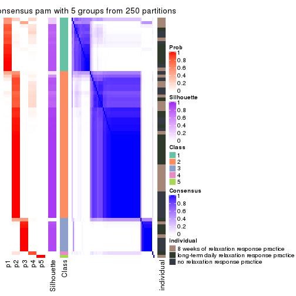
consensus_heatmap(res, k = 6)
Heatmaps for the membership of samples in all partitions to see how consistent they are:
membership_heatmap(res, k = 2)
membership_heatmap(res, k = 3)
membership_heatmap(res, k = 4)
membership_heatmap(res, k = 5)
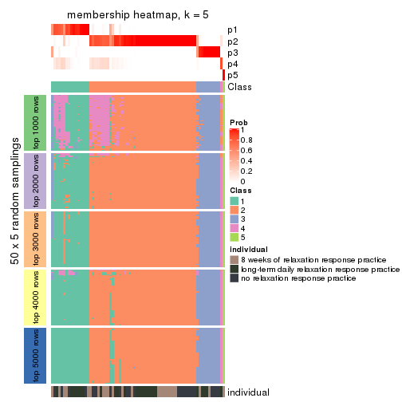
membership_heatmap(res, k = 6)
As soon as we have had the classes for columns, we can look for signatures which are significantly different between classes which can be candidate marks for certain classes. Following are the heatmaps for signatures.
Signature heatmaps where rows are scaled:
get_signatures(res, k = 2)
get_signatures(res, k = 3)
get_signatures(res, k = 4)
get_signatures(res, k = 5)
get_signatures(res, k = 6)
Signature heatmaps where rows are not scaled:
get_signatures(res, k = 2, scale_rows = FALSE)

get_signatures(res, k = 3, scale_rows = FALSE)
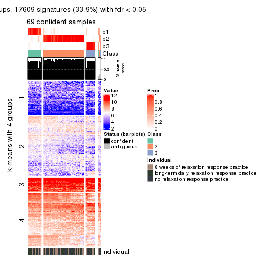
get_signatures(res, k = 4, scale_rows = FALSE)
get_signatures(res, k = 5, scale_rows = FALSE)
get_signatures(res, k = 6, scale_rows = FALSE)
Compare the overlap of signatures from different k:
compare_signatures(res)
get_signature() returns a data frame invisibly. TO get the list of signatures, the function
call should be assigned to a variable explicitly. In following code, if plot argument is set
to FALSE, no heatmap is plotted while only the differential analysis is performed.
# code only for demonstration
tb = get_signature(res, k = ..., plot = FALSE)
An example of the output of tb is:
#> which_row fdr mean_1 mean_2 scaled_mean_1 scaled_mean_2 km
#> 1 38 0.042760348 8.373488 9.131774 -0.5533452 0.5164555 1
#> 2 40 0.018707592 7.106213 8.469186 -0.6173731 0.5762149 1
#> 3 55 0.019134737 10.221463 11.207825 -0.6159697 0.5749050 1
#> 4 59 0.006059896 5.921854 7.869574 -0.6899429 0.6439467 1
#> 5 60 0.018055526 8.928898 10.211722 -0.6204761 0.5791110 1
#> 6 98 0.009384629 15.714769 14.887706 0.6635654 -0.6193277 2
...
The columns in tb are:
which_row: row indices corresponding to the input matrix.fdr: FDR for the differential test. mean_x: The mean value in group x.scaled_mean_x: The mean value in group x after rows are scaled.km: Row groups if k-means clustering is applied to rows.UMAP plot which shows how samples are separated.
dimension_reduction(res, k = 2, method = "UMAP")

dimension_reduction(res, k = 3, method = "UMAP")
dimension_reduction(res, k = 4, method = "UMAP")
dimension_reduction(res, k = 5, method = "UMAP")

dimension_reduction(res, k = 6, method = "UMAP")
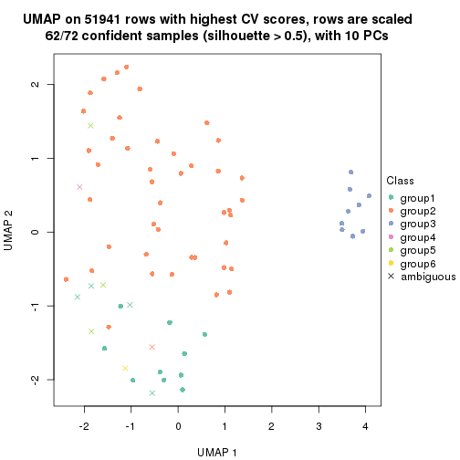
Following heatmap shows how subgroups are split when increasing k:
collect_classes(res)
Test correlation between subgroups and known annotations. If the known annotation is numeric, one-way ANOVA test is applied, and if the known annotation is discrete, chi-squared contingency table test is applied.
test_to_known_factors(res)
#> n individual(p) k
#> CV:pam 69 0.916 2
#> CV:pam 69 0.831 3
#> CV:pam 67 0.646 4
#> CV:pam 66 0.600 5
#> CV:pam 62 0.160 6
If matrix rows can be associated to genes, consider to use GO_Enrichment(res,
...) to perform function enrichment for the signature genes.
The object with results only for a single top-value method and a single partition method can be extracted as:
res = res_list["CV", "mclust"]
# you can also extract it by
# res = res_list["CV:mclust"]
A summary of res and all the functions that can be applied to it:
res
#> A 'ConsensusPartition' object with k = 2, 3, 4, 5, 6.
#> On a matrix with 51941 rows and 72 columns.
#> Top rows (1000, 2000, 3000, 4000, 5000) are extracted by 'CV' method.
#> Subgroups are detected by 'mclust' method.
#> Performed in total 1250 partitions by row resampling.
#> Best k for subgroups seems to be 2.
#>
#> Following methods can be applied to this 'ConsensusPartition' object:
#> [1] "cola_report" "collect_classes" "collect_plots"
#> [4] "collect_stats" "colnames" "compare_signatures"
#> [7] "consensus_heatmap" "dimension_reduction" "functional_enrichment"
#> [10] "get_anno_col" "get_anno" "get_classes"
#> [13] "get_consensus" "get_matrix" "get_membership"
#> [16] "get_param" "get_signatures" "get_stats"
#> [19] "is_best_k" "is_stable_k" "membership_heatmap"
#> [22] "ncol" "nrow" "plot_ecdf"
#> [25] "rownames" "select_partition_number" "show"
#> [28] "suggest_best_k" "test_to_known_factors"
collect_plots() function collects all the plots made from res for all k (number of partitions)
into one single page to provide an easy and fast comparison between different k.
collect_plots(res)
The plots are:
k and the heatmap of
predicted classes for each k.k.k.k.All the plots in panels can be made by individual functions and they are plotted later in this section.
select_partition_number() produces several plots showing different
statistics for choosing “optimized” k. There are following statistics:
k;k, the area increased is defined as \(A_k - A_{k-1}\).The detailed explanations of these statistics can be found in the cola vignette.
Generally speaking, lower PAC score, higher mean silhouette score or higher
concordance corresponds to better partition. Rand index and Jaccard index
measure how similar the current partition is compared to partition with k-1.
If they are too similar, we won't accept k is better than k-1.
select_partition_number(res)
The numeric values for all these statistics can be obtained by get_stats().
get_stats(res)
#> k 1-PAC mean_silhouette concordance area_increased Rand Jaccard
#> 2 2 1.000 0.984 0.993 0.2729 0.737 0.737
#> 3 3 0.436 0.521 0.802 0.9140 0.743 0.651
#> 4 4 0.447 0.670 0.790 0.2799 0.731 0.497
#> 5 5 0.510 0.621 0.788 0.0645 0.755 0.431
#> 6 6 0.547 0.427 0.682 0.0734 0.908 0.710
suggest_best_k() suggests the best \(k\) based on these statistics. The rules are as follows:
NA.suggest_best_k(res)
#> [1] 2
Following shows the table of the partitions (You need to click the show/hide
code output link to see it). The membership matrix (columns with name p*)
is inferred by
clue::cl_consensus()
function with the SE method. Basically the value in the membership matrix
represents the probability to belong to a certain group. The finall class
label for an item is determined with the group with highest probability it
belongs to.
In get_classes() function, the entropy is calculated from the membership
matrix and the silhouette score is calculated from the consensus matrix.
cbind(get_classes(res, k = 2), get_membership(res, k = 2))
#> class entropy silhouette p1 p2
#> GSM253663 1 0.0000 0.991 1.000 0.000
#> GSM253664 1 0.0000 0.991 1.000 0.000
#> GSM253665 1 0.0000 0.991 1.000 0.000
#> GSM253666 1 0.0000 0.991 1.000 0.000
#> GSM253667 1 0.0000 0.991 1.000 0.000
#> GSM253668 1 0.0000 0.991 1.000 0.000
#> GSM253669 1 0.0000 0.991 1.000 0.000
#> GSM253670 1 0.0000 0.991 1.000 0.000
#> GSM253671 1 0.0000 0.991 1.000 0.000
#> GSM253672 1 0.0000 0.991 1.000 0.000
#> GSM253673 1 0.0000 0.991 1.000 0.000
#> GSM253674 1 0.0000 0.991 1.000 0.000
#> GSM253675 1 0.0000 0.991 1.000 0.000
#> GSM253676 1 0.0000 0.991 1.000 0.000
#> GSM253677 1 0.0000 0.991 1.000 0.000
#> GSM253678 1 0.0000 0.991 1.000 0.000
#> GSM253679 1 0.0000 0.991 1.000 0.000
#> GSM253680 1 0.0000 0.991 1.000 0.000
#> GSM253681 1 0.1184 0.978 0.984 0.016
#> GSM253682 2 0.0000 1.000 0.000 1.000
#> GSM253683 2 0.0000 1.000 0.000 1.000
#> GSM253684 2 0.0000 1.000 0.000 1.000
#> GSM253685 2 0.0000 1.000 0.000 1.000
#> GSM253686 1 0.0000 0.991 1.000 0.000
#> GSM253687 1 0.0000 0.991 1.000 0.000
#> GSM253688 1 0.0000 0.991 1.000 0.000
#> GSM253689 1 0.0000 0.991 1.000 0.000
#> GSM253690 1 0.0000 0.991 1.000 0.000
#> GSM253691 1 0.0000 0.991 1.000 0.000
#> GSM253692 1 0.0000 0.991 1.000 0.000
#> GSM253693 1 0.0000 0.991 1.000 0.000
#> GSM253694 1 0.0000 0.991 1.000 0.000
#> GSM253695 1 0.0000 0.991 1.000 0.000
#> GSM253696 1 0.0376 0.989 0.996 0.004
#> GSM253697 1 0.0000 0.991 1.000 0.000
#> GSM253698 1 0.0000 0.991 1.000 0.000
#> GSM253699 1 0.0000 0.991 1.000 0.000
#> GSM253700 1 0.0376 0.989 0.996 0.004
#> GSM253701 1 0.0000 0.991 1.000 0.000
#> GSM253702 1 0.0000 0.991 1.000 0.000
#> GSM253703 1 0.0000 0.991 1.000 0.000
#> GSM253704 1 0.0376 0.989 0.996 0.004
#> GSM253705 1 0.0000 0.991 1.000 0.000
#> GSM253706 2 0.0000 1.000 0.000 1.000
#> GSM253707 2 0.0000 1.000 0.000 1.000
#> GSM253708 2 0.0000 1.000 0.000 1.000
#> GSM253709 1 0.4815 0.885 0.896 0.104
#> GSM253710 1 0.0000 0.991 1.000 0.000
#> GSM253711 1 0.0376 0.988 0.996 0.004
#> GSM253712 1 0.0000 0.991 1.000 0.000
#> GSM253713 1 0.0000 0.991 1.000 0.000
#> GSM253714 1 0.0000 0.991 1.000 0.000
#> GSM253715 1 0.0938 0.982 0.988 0.012
#> GSM253716 1 0.0376 0.989 0.996 0.004
#> GSM253717 1 0.0000 0.991 1.000 0.000
#> GSM253718 1 0.0000 0.991 1.000 0.000
#> GSM253719 1 0.0000 0.991 1.000 0.000
#> GSM253720 1 0.0000 0.991 1.000 0.000
#> GSM253721 1 0.0000 0.991 1.000 0.000
#> GSM253722 1 0.0000 0.991 1.000 0.000
#> GSM253723 1 0.8813 0.584 0.700 0.300
#> GSM253724 1 0.0376 0.989 0.996 0.004
#> GSM253725 1 0.0000 0.991 1.000 0.000
#> GSM253726 1 0.0000 0.991 1.000 0.000
#> GSM253727 1 0.0000 0.991 1.000 0.000
#> GSM253728 1 0.0000 0.991 1.000 0.000
#> GSM253729 2 0.0000 1.000 0.000 1.000
#> GSM253730 2 0.0000 1.000 0.000 1.000
#> GSM253731 2 0.0000 1.000 0.000 1.000
#> GSM253732 2 0.0000 1.000 0.000 1.000
#> GSM253733 1 0.3584 0.927 0.932 0.068
#> GSM253734 1 0.0672 0.985 0.992 0.008
cbind(get_classes(res, k = 3), get_membership(res, k = 3))
#> class entropy silhouette p1 p2 p3
#> GSM253663 2 0.6274 -0.2775 0.456 0.544 0.000
#> GSM253664 2 0.5905 -0.0552 0.352 0.648 0.000
#> GSM253665 1 0.5988 0.6424 0.632 0.368 0.000
#> GSM253666 2 0.5785 -0.0335 0.332 0.668 0.000
#> GSM253667 2 0.5926 -0.0545 0.356 0.644 0.000
#> GSM253668 2 0.0000 0.6810 0.000 1.000 0.000
#> GSM253669 2 0.2537 0.6668 0.080 0.920 0.000
#> GSM253670 2 0.3192 0.6471 0.112 0.888 0.000
#> GSM253671 2 0.3192 0.6533 0.112 0.888 0.000
#> GSM253672 2 0.6280 -0.2950 0.460 0.540 0.000
#> GSM253673 2 0.2796 0.6598 0.092 0.908 0.000
#> GSM253674 2 0.0424 0.6805 0.008 0.992 0.000
#> GSM253675 2 0.0747 0.6780 0.016 0.984 0.000
#> GSM253676 2 0.2796 0.6598 0.092 0.908 0.000
#> GSM253677 2 0.4062 0.6219 0.164 0.836 0.000
#> GSM253678 2 0.0747 0.6760 0.016 0.984 0.000
#> GSM253679 1 0.5948 0.6455 0.640 0.360 0.000
#> GSM253680 2 0.0592 0.6823 0.012 0.988 0.000
#> GSM253681 1 0.6225 0.5405 0.568 0.432 0.000
#> GSM253682 3 0.0000 0.9924 0.000 0.000 1.000
#> GSM253683 3 0.0000 0.9924 0.000 0.000 1.000
#> GSM253684 3 0.1163 0.9818 0.028 0.000 0.972
#> GSM253685 3 0.0237 0.9911 0.004 0.000 0.996
#> GSM253686 2 0.6244 -0.2217 0.440 0.560 0.000
#> GSM253687 2 0.6168 -0.1139 0.412 0.588 0.000
#> GSM253688 2 0.6252 -0.2370 0.444 0.556 0.000
#> GSM253689 2 0.5016 0.4611 0.240 0.760 0.000
#> GSM253690 2 0.3941 0.6057 0.156 0.844 0.000
#> GSM253691 2 0.3038 0.6512 0.104 0.896 0.000
#> GSM253692 2 0.2959 0.6558 0.100 0.900 0.000
#> GSM253693 2 0.0424 0.6819 0.008 0.992 0.000
#> GSM253694 2 0.1163 0.6717 0.028 0.972 0.000
#> GSM253695 2 0.5859 0.1685 0.344 0.656 0.000
#> GSM253696 1 0.5363 0.6281 0.724 0.276 0.000
#> GSM253697 2 0.1031 0.6735 0.024 0.976 0.000
#> GSM253698 2 0.0424 0.6791 0.008 0.992 0.000
#> GSM253699 2 0.1031 0.6820 0.024 0.976 0.000
#> GSM253700 2 0.6357 0.2735 0.336 0.652 0.012
#> GSM253701 1 0.5678 0.6451 0.684 0.316 0.000
#> GSM253702 1 0.6267 0.5281 0.548 0.452 0.000
#> GSM253703 2 0.1031 0.6735 0.024 0.976 0.000
#> GSM253704 2 0.6172 0.3173 0.308 0.680 0.012
#> GSM253705 2 0.6225 -0.1893 0.432 0.568 0.000
#> GSM253706 3 0.1529 0.9781 0.040 0.000 0.960
#> GSM253707 3 0.0000 0.9924 0.000 0.000 1.000
#> GSM253708 3 0.0000 0.9924 0.000 0.000 1.000
#> GSM253709 1 0.7232 -0.0236 0.544 0.428 0.028
#> GSM253710 1 0.6235 0.5603 0.564 0.436 0.000
#> GSM253711 2 0.6302 -0.4374 0.480 0.520 0.000
#> GSM253712 1 0.6026 0.6367 0.624 0.376 0.000
#> GSM253713 1 0.6267 0.5250 0.548 0.452 0.000
#> GSM253714 2 0.3038 0.6512 0.104 0.896 0.000
#> GSM253715 1 0.6299 0.4857 0.524 0.476 0.000
#> GSM253716 2 0.3267 0.5901 0.116 0.884 0.000
#> GSM253717 2 0.2448 0.6718 0.076 0.924 0.000
#> GSM253718 2 0.1031 0.6735 0.024 0.976 0.000
#> GSM253719 2 0.1031 0.6735 0.024 0.976 0.000
#> GSM253720 2 0.2356 0.6645 0.072 0.928 0.000
#> GSM253721 2 0.1031 0.6735 0.024 0.976 0.000
#> GSM253722 2 0.1031 0.6735 0.024 0.976 0.000
#> GSM253723 1 0.5585 0.0759 0.772 0.024 0.204
#> GSM253724 2 0.5986 0.3518 0.284 0.704 0.012
#> GSM253725 2 0.5733 0.2418 0.324 0.676 0.000
#> GSM253726 1 0.6309 0.3946 0.504 0.496 0.000
#> GSM253727 2 0.4555 0.5522 0.200 0.800 0.000
#> GSM253728 2 0.0000 0.6810 0.000 1.000 0.000
#> GSM253729 3 0.0000 0.9924 0.000 0.000 1.000
#> GSM253730 3 0.0000 0.9924 0.000 0.000 1.000
#> GSM253731 3 0.1529 0.9781 0.040 0.000 0.960
#> GSM253732 3 0.0000 0.9924 0.000 0.000 1.000
#> GSM253733 1 0.4912 0.5648 0.796 0.196 0.008
#> GSM253734 2 0.6809 0.0756 0.464 0.524 0.012
cbind(get_classes(res, k = 4), get_membership(res, k = 4))
#> class entropy silhouette p1 p2 p3 p4
#> GSM253663 1 0.3649 0.696 0.796 0.204 0.000 0.000
#> GSM253664 1 0.5288 0.425 0.520 0.472 0.000 0.008
#> GSM253665 1 0.1635 0.702 0.948 0.044 0.000 0.008
#> GSM253666 1 0.5285 0.453 0.524 0.468 0.000 0.008
#> GSM253667 2 0.5678 -0.294 0.452 0.524 0.000 0.024
#> GSM253668 2 0.1624 0.747 0.028 0.952 0.000 0.020
#> GSM253669 2 0.3356 0.710 0.176 0.824 0.000 0.000
#> GSM253670 2 0.5677 0.668 0.256 0.680 0.000 0.064
#> GSM253671 2 0.6854 0.662 0.232 0.596 0.000 0.172
#> GSM253672 1 0.3801 0.689 0.780 0.220 0.000 0.000
#> GSM253673 2 0.6753 0.672 0.228 0.608 0.000 0.164
#> GSM253674 2 0.0895 0.742 0.020 0.976 0.000 0.004
#> GSM253675 2 0.0524 0.729 0.008 0.988 0.000 0.004
#> GSM253676 2 0.6808 0.663 0.236 0.600 0.000 0.164
#> GSM253677 2 0.7050 0.637 0.252 0.568 0.000 0.180
#> GSM253678 2 0.0188 0.734 0.000 0.996 0.000 0.004
#> GSM253679 1 0.2739 0.668 0.904 0.036 0.000 0.060
#> GSM253680 2 0.1867 0.745 0.072 0.928 0.000 0.000
#> GSM253681 1 0.5568 0.459 0.728 0.120 0.000 0.152
#> GSM253682 3 0.0000 0.948 0.000 0.000 1.000 0.000
#> GSM253683 3 0.0000 0.948 0.000 0.000 1.000 0.000
#> GSM253684 3 0.3142 0.852 0.008 0.000 0.860 0.132
#> GSM253685 3 0.0188 0.947 0.000 0.000 0.996 0.004
#> GSM253686 1 0.3975 0.669 0.760 0.240 0.000 0.000
#> GSM253687 1 0.4643 0.515 0.656 0.344 0.000 0.000
#> GSM253688 1 0.3837 0.682 0.776 0.224 0.000 0.000
#> GSM253689 2 0.4830 0.360 0.392 0.608 0.000 0.000
#> GSM253690 2 0.4605 0.516 0.336 0.664 0.000 0.000
#> GSM253691 2 0.3942 0.665 0.236 0.764 0.000 0.000
#> GSM253692 2 0.4040 0.653 0.248 0.752 0.000 0.000
#> GSM253693 2 0.1940 0.746 0.076 0.924 0.000 0.000
#> GSM253694 2 0.4464 0.670 0.024 0.768 0.000 0.208
#> GSM253695 1 0.4941 0.263 0.564 0.436 0.000 0.000
#> GSM253696 1 0.3160 0.618 0.872 0.020 0.000 0.108
#> GSM253697 2 0.2676 0.714 0.012 0.896 0.000 0.092
#> GSM253698 2 0.0524 0.735 0.008 0.988 0.000 0.004
#> GSM253699 2 0.6031 0.718 0.144 0.688 0.000 0.168
#> GSM253700 4 0.4595 0.818 0.044 0.176 0.000 0.780
#> GSM253701 1 0.2909 0.632 0.888 0.020 0.000 0.092
#> GSM253702 1 0.2149 0.726 0.912 0.088 0.000 0.000
#> GSM253703 2 0.2831 0.703 0.004 0.876 0.000 0.120
#> GSM253704 4 0.4285 0.809 0.040 0.156 0.000 0.804
#> GSM253705 1 0.4164 0.645 0.736 0.264 0.000 0.000
#> GSM253706 3 0.3351 0.842 0.008 0.000 0.844 0.148
#> GSM253707 3 0.0000 0.948 0.000 0.000 1.000 0.000
#> GSM253708 3 0.0000 0.948 0.000 0.000 1.000 0.000
#> GSM253709 4 0.1114 0.751 0.016 0.004 0.008 0.972
#> GSM253710 1 0.2149 0.726 0.912 0.088 0.000 0.000
#> GSM253711 1 0.6147 0.494 0.672 0.200 0.000 0.128
#> GSM253712 1 0.1767 0.700 0.944 0.044 0.000 0.012
#> GSM253713 1 0.3196 0.727 0.856 0.136 0.000 0.008
#> GSM253714 2 0.3942 0.665 0.236 0.764 0.000 0.000
#> GSM253715 1 0.5771 0.471 0.712 0.144 0.000 0.144
#> GSM253716 2 0.5659 0.334 0.032 0.600 0.000 0.368
#> GSM253717 2 0.6473 0.699 0.188 0.644 0.000 0.168
#> GSM253718 2 0.3105 0.699 0.012 0.868 0.000 0.120
#> GSM253719 2 0.3335 0.692 0.016 0.856 0.000 0.128
#> GSM253720 2 0.2773 0.711 0.116 0.880 0.000 0.004
#> GSM253721 2 0.3591 0.692 0.008 0.824 0.000 0.168
#> GSM253722 2 0.3306 0.697 0.004 0.840 0.000 0.156
#> GSM253723 4 0.5033 0.605 0.168 0.000 0.072 0.760
#> GSM253724 4 0.4974 0.761 0.040 0.224 0.000 0.736
#> GSM253725 1 0.5161 0.117 0.520 0.476 0.000 0.004
#> GSM253726 1 0.4086 0.693 0.776 0.216 0.000 0.008
#> GSM253727 2 0.5573 0.497 0.368 0.604 0.000 0.028
#> GSM253728 2 0.0895 0.740 0.020 0.976 0.000 0.004
#> GSM253729 3 0.0000 0.948 0.000 0.000 1.000 0.000
#> GSM253730 3 0.0000 0.948 0.000 0.000 1.000 0.000
#> GSM253731 3 0.3351 0.842 0.008 0.000 0.844 0.148
#> GSM253732 3 0.0000 0.948 0.000 0.000 1.000 0.000
#> GSM253733 1 0.4155 0.470 0.756 0.000 0.004 0.240
#> GSM253734 4 0.3333 0.815 0.040 0.088 0.000 0.872
cbind(get_classes(res, k = 5), get_membership(res, k = 5))
#> class entropy silhouette p1 p2 p3 p4 p5
#> GSM253663 1 0.1605 0.7430 0.944 0.040 0.000 0.004 0.012
#> GSM253664 2 0.4920 0.4441 0.408 0.568 0.000 0.008 0.016
#> GSM253665 1 0.4181 0.5276 0.676 0.004 0.000 0.004 0.316
#> GSM253666 2 0.4814 0.4409 0.412 0.568 0.000 0.004 0.016
#> GSM253667 2 0.5589 0.5087 0.332 0.600 0.000 0.044 0.024
#> GSM253668 2 0.2177 0.7255 0.080 0.908 0.000 0.008 0.004
#> GSM253669 2 0.3944 0.5445 0.272 0.720 0.000 0.004 0.004
#> GSM253670 1 0.4066 0.5944 0.672 0.324 0.000 0.000 0.004
#> GSM253671 1 0.5917 0.4110 0.532 0.384 0.000 0.068 0.016
#> GSM253672 1 0.1168 0.7385 0.960 0.032 0.000 0.000 0.008
#> GSM253673 2 0.5557 -0.2340 0.460 0.472 0.000 0.068 0.000
#> GSM253674 2 0.2416 0.7221 0.100 0.888 0.000 0.000 0.012
#> GSM253675 2 0.1942 0.7238 0.068 0.920 0.000 0.000 0.012
#> GSM253676 1 0.5838 0.3291 0.496 0.424 0.000 0.072 0.008
#> GSM253677 1 0.6050 0.4599 0.556 0.344 0.000 0.080 0.020
#> GSM253678 2 0.1638 0.7242 0.064 0.932 0.000 0.000 0.004
#> GSM253679 1 0.2966 0.6287 0.848 0.000 0.000 0.016 0.136
#> GSM253680 2 0.2377 0.7178 0.128 0.872 0.000 0.000 0.000
#> GSM253681 2 0.7422 0.2549 0.300 0.444 0.004 0.036 0.216
#> GSM253682 3 0.0162 0.9490 0.000 0.000 0.996 0.004 0.000
#> GSM253683 3 0.0000 0.9503 0.000 0.000 1.000 0.000 0.000
#> GSM253684 3 0.4085 0.5128 0.000 0.004 0.760 0.028 0.208
#> GSM253685 3 0.0324 0.9480 0.000 0.000 0.992 0.004 0.004
#> GSM253686 1 0.1892 0.7343 0.916 0.080 0.000 0.004 0.000
#> GSM253687 1 0.1956 0.7455 0.916 0.076 0.000 0.000 0.008
#> GSM253688 1 0.1282 0.7434 0.952 0.044 0.000 0.004 0.000
#> GSM253689 1 0.3579 0.6652 0.756 0.240 0.000 0.004 0.000
#> GSM253690 1 0.3398 0.6816 0.780 0.216 0.000 0.004 0.000
#> GSM253691 1 0.4367 0.4317 0.580 0.416 0.000 0.004 0.000
#> GSM253692 1 0.4251 0.5051 0.624 0.372 0.000 0.004 0.000
#> GSM253693 2 0.2488 0.7162 0.124 0.872 0.000 0.000 0.004
#> GSM253694 2 0.3047 0.6194 0.004 0.832 0.000 0.160 0.004
#> GSM253695 1 0.2970 0.6979 0.828 0.168 0.000 0.004 0.000
#> GSM253696 1 0.4744 0.3537 0.572 0.000 0.000 0.020 0.408
#> GSM253697 2 0.2005 0.6871 0.004 0.924 0.000 0.056 0.016
#> GSM253698 2 0.1697 0.7239 0.060 0.932 0.000 0.000 0.008
#> GSM253699 2 0.4123 0.6724 0.132 0.792 0.000 0.072 0.004
#> GSM253700 4 0.3430 0.7504 0.000 0.220 0.000 0.776 0.004
#> GSM253701 1 0.4576 0.4098 0.608 0.000 0.000 0.016 0.376
#> GSM253702 1 0.2171 0.7150 0.912 0.024 0.000 0.000 0.064
#> GSM253703 2 0.1740 0.6834 0.000 0.932 0.000 0.056 0.012
#> GSM253704 4 0.2929 0.7488 0.000 0.180 0.000 0.820 0.000
#> GSM253705 1 0.1502 0.7463 0.940 0.056 0.000 0.004 0.000
#> GSM253706 5 0.5036 0.3560 0.000 0.000 0.452 0.032 0.516
#> GSM253707 3 0.0162 0.9509 0.000 0.000 0.996 0.004 0.000
#> GSM253708 3 0.0162 0.9509 0.000 0.000 0.996 0.004 0.000
#> GSM253709 4 0.2193 0.6645 0.000 0.008 0.000 0.900 0.092
#> GSM253710 1 0.2505 0.7063 0.888 0.020 0.000 0.000 0.092
#> GSM253711 2 0.6870 0.4074 0.340 0.508 0.004 0.044 0.104
#> GSM253712 1 0.2890 0.6435 0.836 0.000 0.000 0.004 0.160
#> GSM253713 1 0.1934 0.7142 0.928 0.016 0.000 0.004 0.052
#> GSM253714 1 0.4630 0.4417 0.572 0.416 0.000 0.004 0.008
#> GSM253715 2 0.6965 0.3778 0.328 0.496 0.004 0.032 0.140
#> GSM253716 2 0.4235 0.0661 0.000 0.576 0.000 0.424 0.000
#> GSM253717 2 0.4906 0.4935 0.232 0.692 0.000 0.076 0.000
#> GSM253718 2 0.2131 0.6856 0.008 0.920 0.000 0.056 0.016
#> GSM253719 2 0.2110 0.6703 0.000 0.912 0.000 0.072 0.016
#> GSM253720 2 0.3579 0.6426 0.240 0.756 0.000 0.000 0.004
#> GSM253721 2 0.2630 0.6877 0.016 0.892 0.000 0.080 0.012
#> GSM253722 2 0.2805 0.6906 0.020 0.888 0.000 0.072 0.020
#> GSM253723 4 0.5956 0.4637 0.044 0.000 0.136 0.672 0.148
#> GSM253724 4 0.3790 0.6999 0.000 0.272 0.000 0.724 0.004
#> GSM253725 1 0.2929 0.7381 0.856 0.128 0.000 0.004 0.012
#> GSM253726 1 0.1990 0.7279 0.928 0.028 0.000 0.004 0.040
#> GSM253727 1 0.3366 0.7023 0.784 0.212 0.000 0.004 0.000
#> GSM253728 2 0.1892 0.7255 0.080 0.916 0.000 0.000 0.004
#> GSM253729 3 0.0162 0.9509 0.000 0.000 0.996 0.004 0.000
#> GSM253730 3 0.0162 0.9490 0.000 0.000 0.996 0.004 0.000
#> GSM253731 5 0.5036 0.3560 0.000 0.000 0.452 0.032 0.516
#> GSM253732 3 0.0000 0.9503 0.000 0.000 1.000 0.000 0.000
#> GSM253733 5 0.3951 0.1583 0.192 0.000 0.004 0.028 0.776
#> GSM253734 4 0.3984 0.7318 0.016 0.108 0.000 0.816 0.060
cbind(get_classes(res, k = 6), get_membership(res, k = 6))
#> class entropy silhouette p1 p2 p3 p4 p5 p6
#> GSM253663 4 0.1921 0.4399 0.032 0.052 0.000 0.916 0.000 0.000
#> GSM253664 2 0.4231 0.5037 0.008 0.616 0.000 0.364 0.000 0.012
#> GSM253665 1 0.4319 0.7905 0.576 0.000 0.000 0.400 0.000 0.024
#> GSM253666 2 0.4172 0.4927 0.008 0.608 0.000 0.376 0.000 0.008
#> GSM253667 2 0.5105 0.4902 0.032 0.724 0.000 0.132 0.088 0.024
#> GSM253668 2 0.1958 0.6329 0.000 0.896 0.000 0.100 0.000 0.004
#> GSM253669 2 0.3866 0.0484 0.000 0.516 0.000 0.484 0.000 0.000
#> GSM253670 4 0.4821 0.2707 0.172 0.112 0.000 0.700 0.016 0.000
#> GSM253671 4 0.5932 0.3080 0.168 0.132 0.000 0.640 0.028 0.032
#> GSM253672 4 0.3244 -0.1522 0.268 0.000 0.000 0.732 0.000 0.000
#> GSM253673 4 0.5764 0.1524 0.056 0.372 0.000 0.528 0.028 0.016
#> GSM253674 2 0.2838 0.6066 0.004 0.808 0.000 0.188 0.000 0.000
#> GSM253675 2 0.1332 0.6165 0.008 0.952 0.000 0.028 0.012 0.000
#> GSM253676 4 0.5699 0.3929 0.060 0.256 0.000 0.624 0.036 0.024
#> GSM253677 1 0.6502 0.5611 0.504 0.088 0.000 0.336 0.036 0.036
#> GSM253678 2 0.1036 0.6178 0.008 0.964 0.000 0.024 0.004 0.000
#> GSM253679 4 0.4102 -0.4218 0.356 0.000 0.000 0.628 0.004 0.012
#> GSM253680 2 0.3563 0.4321 0.000 0.664 0.000 0.336 0.000 0.000
#> GSM253681 2 0.6389 0.4936 0.096 0.552 0.000 0.280 0.024 0.048
#> GSM253682 3 0.0146 0.9688 0.000 0.000 0.996 0.000 0.000 0.004
#> GSM253683 3 0.0146 0.9697 0.004 0.000 0.996 0.000 0.000 0.000
#> GSM253684 3 0.2810 0.7790 0.008 0.000 0.832 0.000 0.004 0.156
#> GSM253685 3 0.0692 0.9609 0.004 0.000 0.976 0.000 0.000 0.020
#> GSM253686 4 0.2357 0.4788 0.012 0.116 0.000 0.872 0.000 0.000
#> GSM253687 4 0.4151 -0.0586 0.264 0.044 0.000 0.692 0.000 0.000
#> GSM253688 4 0.1995 0.4342 0.036 0.052 0.000 0.912 0.000 0.000
#> GSM253689 4 0.3298 0.5025 0.008 0.236 0.000 0.756 0.000 0.000
#> GSM253690 4 0.2668 0.4987 0.004 0.168 0.000 0.828 0.000 0.000
#> GSM253691 4 0.4018 0.2175 0.008 0.412 0.000 0.580 0.000 0.000
#> GSM253692 4 0.3934 0.2935 0.008 0.376 0.000 0.616 0.000 0.000
#> GSM253693 2 0.3266 0.5248 0.000 0.728 0.000 0.272 0.000 0.000
#> GSM253694 2 0.5944 -0.0202 0.064 0.504 0.000 0.044 0.380 0.008
#> GSM253695 4 0.3151 0.4430 0.000 0.252 0.000 0.748 0.000 0.000
#> GSM253696 1 0.5271 0.7257 0.576 0.000 0.000 0.292 0.000 0.132
#> GSM253697 2 0.3717 0.4164 0.016 0.768 0.000 0.004 0.200 0.012
#> GSM253698 2 0.0777 0.6180 0.000 0.972 0.000 0.024 0.004 0.000
#> GSM253699 2 0.5831 0.4457 0.060 0.580 0.000 0.300 0.048 0.012
#> GSM253700 5 0.3489 0.6256 0.000 0.288 0.000 0.000 0.708 0.004
#> GSM253701 1 0.4753 0.7923 0.580 0.000 0.000 0.368 0.004 0.048
#> GSM253702 4 0.3620 -0.3663 0.352 0.000 0.000 0.648 0.000 0.000
#> GSM253703 2 0.3895 0.3121 0.008 0.708 0.000 0.004 0.272 0.008
#> GSM253704 5 0.3240 0.6348 0.004 0.244 0.000 0.000 0.752 0.000
#> GSM253705 4 0.1829 0.3883 0.056 0.024 0.000 0.920 0.000 0.000
#> GSM253706 6 0.2845 0.7429 0.004 0.000 0.172 0.000 0.004 0.820
#> GSM253707 3 0.0260 0.9673 0.000 0.000 0.992 0.000 0.000 0.008
#> GSM253708 3 0.0146 0.9686 0.000 0.000 0.996 0.000 0.000 0.004
#> GSM253709 5 0.5164 0.1653 0.316 0.000 0.004 0.000 0.584 0.096
#> GSM253710 4 0.3547 -0.2985 0.332 0.000 0.000 0.668 0.000 0.000
#> GSM253711 2 0.5065 0.5587 0.056 0.684 0.000 0.220 0.012 0.028
#> GSM253712 4 0.3810 -0.5432 0.428 0.000 0.000 0.572 0.000 0.000
#> GSM253713 1 0.4097 0.6867 0.504 0.000 0.000 0.488 0.000 0.008
#> GSM253714 4 0.4026 0.3856 0.016 0.348 0.000 0.636 0.000 0.000
#> GSM253715 2 0.5849 0.5271 0.064 0.600 0.000 0.276 0.028 0.032
#> GSM253716 5 0.3923 0.4045 0.004 0.416 0.000 0.000 0.580 0.000
#> GSM253717 4 0.6689 -0.2128 0.060 0.400 0.000 0.408 0.124 0.008
#> GSM253718 2 0.3860 0.3883 0.016 0.748 0.000 0.004 0.220 0.012
#> GSM253719 2 0.4013 0.3216 0.016 0.712 0.000 0.004 0.260 0.008
#> GSM253720 2 0.3619 0.4896 0.000 0.680 0.000 0.316 0.000 0.004
#> GSM253721 2 0.4475 0.3502 0.056 0.708 0.000 0.004 0.224 0.008
#> GSM253722 2 0.4466 0.3207 0.044 0.692 0.000 0.004 0.252 0.008
#> GSM253723 5 0.6173 0.2464 0.120 0.000 0.152 0.008 0.620 0.100
#> GSM253724 5 0.3351 0.6219 0.000 0.288 0.000 0.000 0.712 0.000
#> GSM253725 4 0.4900 -0.0266 0.272 0.088 0.000 0.636 0.004 0.000
#> GSM253726 4 0.4095 -0.6955 0.480 0.008 0.000 0.512 0.000 0.000
#> GSM253727 4 0.3699 0.4207 0.072 0.108 0.000 0.808 0.008 0.004
#> GSM253728 2 0.1168 0.6162 0.000 0.956 0.000 0.028 0.016 0.000
#> GSM253729 3 0.0291 0.9685 0.004 0.000 0.992 0.000 0.000 0.004
#> GSM253730 3 0.0000 0.9694 0.000 0.000 1.000 0.000 0.000 0.000
#> GSM253731 6 0.2913 0.7390 0.004 0.000 0.180 0.000 0.004 0.812
#> GSM253732 3 0.0146 0.9697 0.004 0.000 0.996 0.000 0.000 0.000
#> GSM253733 6 0.4769 0.4244 0.336 0.000 0.000 0.056 0.004 0.604
#> GSM253734 5 0.3638 0.4384 0.108 0.016 0.000 0.016 0.824 0.036
Heatmaps for the consensus matrix. It visualizes the probability of two samples to be in a same group.
consensus_heatmap(res, k = 2)
consensus_heatmap(res, k = 3)
consensus_heatmap(res, k = 4)
consensus_heatmap(res, k = 5)
consensus_heatmap(res, k = 6)
Heatmaps for the membership of samples in all partitions to see how consistent they are:
membership_heatmap(res, k = 2)
membership_heatmap(res, k = 3)
membership_heatmap(res, k = 4)
membership_heatmap(res, k = 5)
membership_heatmap(res, k = 6)
As soon as we have had the classes for columns, we can look for signatures which are significantly different between classes which can be candidate marks for certain classes. Following are the heatmaps for signatures.
Signature heatmaps where rows are scaled:
get_signatures(res, k = 2)
get_signatures(res, k = 3)
get_signatures(res, k = 4)
get_signatures(res, k = 5)

get_signatures(res, k = 6)

Signature heatmaps where rows are not scaled:
get_signatures(res, k = 2, scale_rows = FALSE)
get_signatures(res, k = 3, scale_rows = FALSE)
get_signatures(res, k = 4, scale_rows = FALSE)
get_signatures(res, k = 5, scale_rows = FALSE)
get_signatures(res, k = 6, scale_rows = FALSE)
Compare the overlap of signatures from different k:
compare_signatures(res)
get_signature() returns a data frame invisibly. TO get the list of signatures, the function
call should be assigned to a variable explicitly. In following code, if plot argument is set
to FALSE, no heatmap is plotted while only the differential analysis is performed.
# code only for demonstration
tb = get_signature(res, k = ..., plot = FALSE)
An example of the output of tb is:
#> which_row fdr mean_1 mean_2 scaled_mean_1 scaled_mean_2 km
#> 1 38 0.042760348 8.373488 9.131774 -0.5533452 0.5164555 1
#> 2 40 0.018707592 7.106213 8.469186 -0.6173731 0.5762149 1
#> 3 55 0.019134737 10.221463 11.207825 -0.6159697 0.5749050 1
#> 4 59 0.006059896 5.921854 7.869574 -0.6899429 0.6439467 1
#> 5 60 0.018055526 8.928898 10.211722 -0.6204761 0.5791110 1
#> 6 98 0.009384629 15.714769 14.887706 0.6635654 -0.6193277 2
...
The columns in tb are:
which_row: row indices corresponding to the input matrix.fdr: FDR for the differential test. mean_x: The mean value in group x.scaled_mean_x: The mean value in group x after rows are scaled.km: Row groups if k-means clustering is applied to rows.UMAP plot which shows how samples are separated.
dimension_reduction(res, k = 2, method = "UMAP")
dimension_reduction(res, k = 3, method = "UMAP")
dimension_reduction(res, k = 4, method = "UMAP")
dimension_reduction(res, k = 5, method = "UMAP")
dimension_reduction(res, k = 6, method = "UMAP")
Following heatmap shows how subgroups are split when increasing k:
collect_classes(res)
Test correlation between subgroups and known annotations. If the known annotation is numeric, one-way ANOVA test is applied, and if the known annotation is discrete, chi-squared contingency table test is applied.
test_to_known_factors(res)
#> n individual(p) k
#> CV:mclust 72 0.890 2
#> CV:mclust 51 0.994 3
#> CV:mclust 60 0.590 4
#> CV:mclust 53 0.622 5
#> CV:mclust 30 0.720 6
If matrix rows can be associated to genes, consider to use GO_Enrichment(res,
...) to perform function enrichment for the signature genes.
The object with results only for a single top-value method and a single partition method can be extracted as:
res = res_list["CV", "NMF"]
# you can also extract it by
# res = res_list["CV:NMF"]
A summary of res and all the functions that can be applied to it:
res
#> A 'ConsensusPartition' object with k = 2, 3, 4, 5, 6.
#> On a matrix with 51941 rows and 72 columns.
#> Top rows (1000, 2000, 3000, 4000, 5000) are extracted by 'CV' method.
#> Subgroups are detected by 'NMF' method.
#> Performed in total 1250 partitions by row resampling.
#> Best k for subgroups seems to be 2.
#>
#> Following methods can be applied to this 'ConsensusPartition' object:
#> [1] "cola_report" "collect_classes" "collect_plots"
#> [4] "collect_stats" "colnames" "compare_signatures"
#> [7] "consensus_heatmap" "dimension_reduction" "functional_enrichment"
#> [10] "get_anno_col" "get_anno" "get_classes"
#> [13] "get_consensus" "get_matrix" "get_membership"
#> [16] "get_param" "get_signatures" "get_stats"
#> [19] "is_best_k" "is_stable_k" "membership_heatmap"
#> [22] "ncol" "nrow" "plot_ecdf"
#> [25] "rownames" "select_partition_number" "show"
#> [28] "suggest_best_k" "test_to_known_factors"
collect_plots() function collects all the plots made from res for all k (number of partitions)
into one single page to provide an easy and fast comparison between different k.
collect_plots(res)
The plots are:
k and the heatmap of
predicted classes for each k.k.k.k.All the plots in panels can be made by individual functions and they are plotted later in this section.
select_partition_number() produces several plots showing different
statistics for choosing “optimized” k. There are following statistics:
k;k, the area increased is defined as \(A_k - A_{k-1}\).The detailed explanations of these statistics can be found in the cola vignette.
Generally speaking, lower PAC score, higher mean silhouette score or higher
concordance corresponds to better partition. Rand index and Jaccard index
measure how similar the current partition is compared to partition with k-1.
If they are too similar, we won't accept k is better than k-1.
select_partition_number(res)
The numeric values for all these statistics can be obtained by get_stats().
get_stats(res)
#> k 1-PAC mean_silhouette concordance area_increased Rand Jaccard
#> 2 2 0.750 0.886 0.951 0.4907 0.512 0.512
#> 3 3 0.595 0.736 0.882 0.2700 0.805 0.641
#> 4 4 0.568 0.657 0.823 0.1725 0.796 0.522
#> 5 5 0.569 0.543 0.751 0.0774 0.869 0.581
#> 6 6 0.596 0.468 0.666 0.0440 0.911 0.636
suggest_best_k() suggests the best \(k\) based on these statistics. The rules are as follows:
NA.suggest_best_k(res)
#> [1] 2
Following shows the table of the partitions (You need to click the show/hide
code output link to see it). The membership matrix (columns with name p*)
is inferred by
clue::cl_consensus()
function with the SE method. Basically the value in the membership matrix
represents the probability to belong to a certain group. The finall class
label for an item is determined with the group with highest probability it
belongs to.
In get_classes() function, the entropy is calculated from the membership
matrix and the silhouette score is calculated from the consensus matrix.
cbind(get_classes(res, k = 2), get_membership(res, k = 2))
#> class entropy silhouette p1 p2
#> GSM253663 1 0.5178 0.862 0.884 0.116
#> GSM253664 2 0.0000 0.940 0.000 1.000
#> GSM253665 1 0.0000 0.953 1.000 0.000
#> GSM253666 2 0.0000 0.940 0.000 1.000
#> GSM253667 2 0.0000 0.940 0.000 1.000
#> GSM253668 2 0.0000 0.940 0.000 1.000
#> GSM253669 2 0.0000 0.940 0.000 1.000
#> GSM253670 1 0.6973 0.772 0.812 0.188
#> GSM253671 2 0.9686 0.352 0.396 0.604
#> GSM253672 1 0.0000 0.953 1.000 0.000
#> GSM253673 2 0.0000 0.940 0.000 1.000
#> GSM253674 2 0.0000 0.940 0.000 1.000
#> GSM253675 2 0.0000 0.940 0.000 1.000
#> GSM253676 2 0.0000 0.940 0.000 1.000
#> GSM253677 1 0.0672 0.949 0.992 0.008
#> GSM253678 2 0.0000 0.940 0.000 1.000
#> GSM253679 1 0.0000 0.953 1.000 0.000
#> GSM253680 2 0.0000 0.940 0.000 1.000
#> GSM253681 2 0.9754 0.344 0.408 0.592
#> GSM253682 1 0.0376 0.951 0.996 0.004
#> GSM253683 1 0.7376 0.738 0.792 0.208
#> GSM253684 1 0.0000 0.953 1.000 0.000
#> GSM253685 1 0.0000 0.953 1.000 0.000
#> GSM253686 2 0.9000 0.553 0.316 0.684
#> GSM253687 1 0.0000 0.953 1.000 0.000
#> GSM253688 1 0.4815 0.875 0.896 0.104
#> GSM253689 2 0.2423 0.911 0.040 0.960
#> GSM253690 2 0.9460 0.456 0.364 0.636
#> GSM253691 2 0.0000 0.940 0.000 1.000
#> GSM253692 2 0.0000 0.940 0.000 1.000
#> GSM253693 2 0.0000 0.940 0.000 1.000
#> GSM253694 2 0.0000 0.940 0.000 1.000
#> GSM253695 2 0.0376 0.938 0.004 0.996
#> GSM253696 1 0.0000 0.953 1.000 0.000
#> GSM253697 2 0.0000 0.940 0.000 1.000
#> GSM253698 2 0.0000 0.940 0.000 1.000
#> GSM253699 2 0.0000 0.940 0.000 1.000
#> GSM253700 2 0.0000 0.940 0.000 1.000
#> GSM253701 1 0.0000 0.953 1.000 0.000
#> GSM253702 1 0.0000 0.953 1.000 0.000
#> GSM253703 2 0.0000 0.940 0.000 1.000
#> GSM253704 2 0.0000 0.940 0.000 1.000
#> GSM253705 1 0.4939 0.871 0.892 0.108
#> GSM253706 1 0.0000 0.953 1.000 0.000
#> GSM253707 1 0.1633 0.940 0.976 0.024
#> GSM253708 1 0.3431 0.911 0.936 0.064
#> GSM253709 2 0.8267 0.649 0.260 0.740
#> GSM253710 1 0.0000 0.953 1.000 0.000
#> GSM253711 2 0.0000 0.940 0.000 1.000
#> GSM253712 1 0.0000 0.953 1.000 0.000
#> GSM253713 1 0.0000 0.953 1.000 0.000
#> GSM253714 2 0.0000 0.940 0.000 1.000
#> GSM253715 2 0.3879 0.879 0.076 0.924
#> GSM253716 2 0.0000 0.940 0.000 1.000
#> GSM253717 2 0.0000 0.940 0.000 1.000
#> GSM253718 2 0.0000 0.940 0.000 1.000
#> GSM253719 2 0.0000 0.940 0.000 1.000
#> GSM253720 2 0.0000 0.940 0.000 1.000
#> GSM253721 2 0.0000 0.940 0.000 1.000
#> GSM253722 2 0.0000 0.940 0.000 1.000
#> GSM253723 2 0.6801 0.768 0.180 0.820
#> GSM253724 2 0.0000 0.940 0.000 1.000
#> GSM253725 1 0.0376 0.951 0.996 0.004
#> GSM253726 1 0.0000 0.953 1.000 0.000
#> GSM253727 1 0.9635 0.364 0.612 0.388
#> GSM253728 2 0.0000 0.940 0.000 1.000
#> GSM253729 1 0.0000 0.953 1.000 0.000
#> GSM253730 1 0.0000 0.953 1.000 0.000
#> GSM253731 1 0.0000 0.953 1.000 0.000
#> GSM253732 2 0.8861 0.581 0.304 0.696
#> GSM253733 1 0.0000 0.953 1.000 0.000
#> GSM253734 2 0.0000 0.940 0.000 1.000
cbind(get_classes(res, k = 3), get_membership(res, k = 3))
#> class entropy silhouette p1 p2 p3
#> GSM253663 1 0.4399 0.7474 0.812 0.188 0.000
#> GSM253664 2 0.0747 0.8611 0.016 0.984 0.000
#> GSM253665 1 0.0237 0.8069 0.996 0.000 0.004
#> GSM253666 2 0.0747 0.8608 0.016 0.984 0.000
#> GSM253667 2 0.3619 0.7901 0.000 0.864 0.136
#> GSM253668 2 0.0237 0.8621 0.004 0.996 0.000
#> GSM253669 2 0.2066 0.8391 0.060 0.940 0.000
#> GSM253670 1 0.5465 0.6167 0.712 0.288 0.000
#> GSM253671 1 0.6299 0.1711 0.524 0.476 0.000
#> GSM253672 1 0.1411 0.8122 0.964 0.036 0.000
#> GSM253673 2 0.2796 0.8154 0.092 0.908 0.000
#> GSM253674 2 0.0237 0.8621 0.004 0.996 0.000
#> GSM253675 2 0.1031 0.8624 0.000 0.976 0.024
#> GSM253676 2 0.4452 0.7108 0.192 0.808 0.000
#> GSM253677 1 0.0747 0.8120 0.984 0.016 0.000
#> GSM253678 2 0.1163 0.8613 0.000 0.972 0.028
#> GSM253679 1 0.1170 0.8053 0.976 0.008 0.016
#> GSM253680 2 0.1031 0.8581 0.024 0.976 0.000
#> GSM253681 3 0.6104 0.4398 0.004 0.348 0.648
#> GSM253682 3 0.0237 0.8755 0.000 0.004 0.996
#> GSM253683 3 0.0747 0.8727 0.000 0.016 0.984
#> GSM253684 3 0.1289 0.8614 0.032 0.000 0.968
#> GSM253685 3 0.1031 0.8655 0.024 0.000 0.976
#> GSM253686 1 0.6274 0.2307 0.544 0.456 0.000
#> GSM253687 1 0.2625 0.7988 0.916 0.084 0.000
#> GSM253688 1 0.4555 0.7388 0.800 0.200 0.000
#> GSM253689 2 0.5810 0.4444 0.336 0.664 0.000
#> GSM253690 2 0.6307 -0.0816 0.488 0.512 0.000
#> GSM253691 2 0.4291 0.7254 0.180 0.820 0.000
#> GSM253692 2 0.4062 0.7451 0.164 0.836 0.000
#> GSM253693 2 0.0592 0.8613 0.012 0.988 0.000
#> GSM253694 2 0.0892 0.8637 0.000 0.980 0.020
#> GSM253695 2 0.4887 0.6580 0.228 0.772 0.000
#> GSM253696 1 0.1964 0.7680 0.944 0.000 0.056
#> GSM253697 2 0.1163 0.8613 0.000 0.972 0.028
#> GSM253698 2 0.0592 0.8636 0.000 0.988 0.012
#> GSM253699 2 0.0892 0.8596 0.020 0.980 0.000
#> GSM253700 2 0.4702 0.7042 0.000 0.788 0.212
#> GSM253701 1 0.3412 0.6974 0.876 0.000 0.124
#> GSM253702 1 0.0237 0.8069 0.996 0.000 0.004
#> GSM253703 2 0.0892 0.8631 0.000 0.980 0.020
#> GSM253704 2 0.4062 0.7631 0.000 0.836 0.164
#> GSM253705 1 0.4178 0.7584 0.828 0.172 0.000
#> GSM253706 3 0.5988 0.4403 0.368 0.000 0.632
#> GSM253707 3 0.0237 0.8755 0.000 0.004 0.996
#> GSM253708 3 0.0237 0.8755 0.000 0.004 0.996
#> GSM253709 3 0.5497 0.5684 0.000 0.292 0.708
#> GSM253710 1 0.1163 0.8120 0.972 0.028 0.000
#> GSM253711 2 0.4002 0.7710 0.000 0.840 0.160
#> GSM253712 1 0.0237 0.8069 0.996 0.000 0.004
#> GSM253713 1 0.0237 0.8069 0.996 0.000 0.004
#> GSM253714 2 0.5621 0.5078 0.308 0.692 0.000
#> GSM253715 2 0.5465 0.5868 0.000 0.712 0.288
#> GSM253716 2 0.2356 0.8413 0.000 0.928 0.072
#> GSM253717 2 0.2537 0.8262 0.080 0.920 0.000
#> GSM253718 2 0.1411 0.8586 0.000 0.964 0.036
#> GSM253719 2 0.2356 0.8416 0.000 0.928 0.072
#> GSM253720 2 0.1031 0.8584 0.024 0.976 0.000
#> GSM253721 2 0.0892 0.8631 0.000 0.980 0.020
#> GSM253722 2 0.1031 0.8624 0.000 0.976 0.024
#> GSM253723 3 0.2165 0.8462 0.000 0.064 0.936
#> GSM253724 2 0.4002 0.7676 0.000 0.840 0.160
#> GSM253725 1 0.1529 0.8119 0.960 0.040 0.000
#> GSM253726 1 0.0424 0.8102 0.992 0.008 0.000
#> GSM253727 1 0.6295 0.1461 0.528 0.472 0.000
#> GSM253728 2 0.0237 0.8631 0.000 0.996 0.004
#> GSM253729 3 0.0000 0.8749 0.000 0.000 1.000
#> GSM253730 3 0.0747 0.8697 0.016 0.000 0.984
#> GSM253731 3 0.4452 0.7144 0.192 0.000 0.808
#> GSM253732 3 0.1411 0.8640 0.000 0.036 0.964
#> GSM253733 1 0.5327 0.4611 0.728 0.000 0.272
#> GSM253734 2 0.6274 0.1381 0.000 0.544 0.456
cbind(get_classes(res, k = 4), get_membership(res, k = 4))
#> class entropy silhouette p1 p2 p3 p4
#> GSM253663 2 0.4866 0.34912 0.404 0.596 0.000 0.000
#> GSM253664 2 0.1471 0.72071 0.012 0.960 0.004 0.024
#> GSM253665 1 0.0804 0.86838 0.980 0.012 0.008 0.000
#> GSM253666 2 0.1994 0.72167 0.008 0.936 0.004 0.052
#> GSM253667 2 0.4163 0.65751 0.000 0.792 0.020 0.188
#> GSM253668 2 0.3837 0.63707 0.000 0.776 0.000 0.224
#> GSM253669 2 0.1938 0.72623 0.012 0.936 0.000 0.052
#> GSM253670 1 0.5906 0.25043 0.528 0.036 0.000 0.436
#> GSM253671 4 0.5931 -0.13701 0.460 0.036 0.000 0.504
#> GSM253672 1 0.1211 0.86424 0.960 0.040 0.000 0.000
#> GSM253673 2 0.4711 0.63192 0.024 0.740 0.000 0.236
#> GSM253674 2 0.2149 0.72122 0.000 0.912 0.000 0.088
#> GSM253675 2 0.2149 0.71987 0.000 0.912 0.000 0.088
#> GSM253676 2 0.6779 0.38518 0.116 0.560 0.000 0.324
#> GSM253677 1 0.5626 0.46512 0.588 0.020 0.004 0.388
#> GSM253678 2 0.4134 0.59885 0.000 0.740 0.000 0.260
#> GSM253679 1 0.3673 0.83814 0.872 0.040 0.020 0.068
#> GSM253680 4 0.4535 0.49725 0.004 0.292 0.000 0.704
#> GSM253681 3 0.5256 0.60654 0.000 0.272 0.692 0.036
#> GSM253682 3 0.1004 0.92920 0.000 0.024 0.972 0.004
#> GSM253683 3 0.0804 0.93229 0.000 0.012 0.980 0.008
#> GSM253684 3 0.2179 0.89963 0.012 0.064 0.924 0.000
#> GSM253685 3 0.0336 0.93056 0.000 0.000 0.992 0.008
#> GSM253686 2 0.3946 0.66761 0.168 0.812 0.000 0.020
#> GSM253687 1 0.0817 0.86829 0.976 0.024 0.000 0.000
#> GSM253688 2 0.5112 0.38462 0.384 0.608 0.000 0.008
#> GSM253689 2 0.4669 0.65246 0.200 0.764 0.000 0.036
#> GSM253690 2 0.5738 0.29224 0.432 0.540 0.000 0.028
#> GSM253691 2 0.3587 0.71689 0.088 0.860 0.000 0.052
#> GSM253692 2 0.3216 0.71702 0.076 0.880 0.000 0.044
#> GSM253693 2 0.4477 0.53331 0.000 0.688 0.000 0.312
#> GSM253694 4 0.1743 0.71839 0.004 0.056 0.000 0.940
#> GSM253695 2 0.3694 0.69868 0.124 0.844 0.000 0.032
#> GSM253696 1 0.1820 0.86279 0.944 0.000 0.020 0.036
#> GSM253697 2 0.4999 -0.00365 0.000 0.508 0.000 0.492
#> GSM253698 2 0.2281 0.71837 0.000 0.904 0.000 0.096
#> GSM253699 2 0.4522 0.51673 0.000 0.680 0.000 0.320
#> GSM253700 4 0.3895 0.65076 0.000 0.184 0.012 0.804
#> GSM253701 1 0.4017 0.81132 0.828 0.000 0.044 0.128
#> GSM253702 1 0.0992 0.87260 0.976 0.012 0.004 0.008
#> GSM253703 4 0.4830 0.31363 0.000 0.392 0.000 0.608
#> GSM253704 4 0.1940 0.71704 0.000 0.076 0.000 0.924
#> GSM253705 1 0.2578 0.85430 0.912 0.036 0.000 0.052
#> GSM253706 3 0.3925 0.74248 0.176 0.000 0.808 0.016
#> GSM253707 3 0.0592 0.93131 0.000 0.000 0.984 0.016
#> GSM253708 3 0.0592 0.93131 0.000 0.000 0.984 0.016
#> GSM253709 4 0.1739 0.70565 0.008 0.016 0.024 0.952
#> GSM253710 1 0.3498 0.74961 0.832 0.160 0.008 0.000
#> GSM253711 2 0.2928 0.70626 0.000 0.896 0.052 0.052
#> GSM253712 1 0.3771 0.82991 0.864 0.084 0.020 0.032
#> GSM253713 1 0.0779 0.87173 0.980 0.000 0.004 0.016
#> GSM253714 2 0.4916 0.66819 0.184 0.760 0.000 0.056
#> GSM253715 2 0.4151 0.61847 0.004 0.800 0.180 0.016
#> GSM253716 4 0.2469 0.70826 0.000 0.108 0.000 0.892
#> GSM253717 4 0.1610 0.71424 0.016 0.032 0.000 0.952
#> GSM253718 2 0.4985 0.09245 0.000 0.532 0.000 0.468
#> GSM253719 4 0.4999 -0.01370 0.000 0.492 0.000 0.508
#> GSM253720 2 0.2271 0.72084 0.008 0.916 0.000 0.076
#> GSM253721 4 0.4941 0.17795 0.000 0.436 0.000 0.564
#> GSM253722 2 0.4679 0.42635 0.000 0.648 0.000 0.352
#> GSM253723 4 0.4511 0.47171 0.000 0.008 0.268 0.724
#> GSM253724 4 0.2589 0.70420 0.000 0.116 0.000 0.884
#> GSM253725 1 0.1256 0.87146 0.964 0.008 0.000 0.028
#> GSM253726 1 0.0592 0.87186 0.984 0.000 0.000 0.016
#> GSM253727 4 0.4406 0.53980 0.192 0.028 0.000 0.780
#> GSM253728 2 0.2704 0.71042 0.000 0.876 0.000 0.124
#> GSM253729 3 0.0524 0.93272 0.000 0.004 0.988 0.008
#> GSM253730 3 0.0336 0.93242 0.000 0.008 0.992 0.000
#> GSM253731 3 0.1109 0.91729 0.028 0.000 0.968 0.004
#> GSM253732 3 0.1297 0.92677 0.000 0.020 0.964 0.016
#> GSM253733 1 0.4356 0.78089 0.812 0.000 0.124 0.064
#> GSM253734 4 0.1139 0.71329 0.008 0.008 0.012 0.972
cbind(get_classes(res, k = 5), get_membership(res, k = 5))
#> class entropy silhouette p1 p2 p3 p4 p5
#> GSM253663 4 0.6494 0.4327 0.288 0.124 0.016 0.564 0.008
#> GSM253664 4 0.2580 0.6364 0.004 0.088 0.008 0.892 0.008
#> GSM253665 1 0.1202 0.7583 0.960 0.000 0.004 0.032 0.004
#> GSM253666 2 0.5467 0.0877 0.024 0.576 0.016 0.376 0.008
#> GSM253667 2 0.4860 0.3193 0.000 0.668 0.028 0.292 0.012
#> GSM253668 2 0.2052 0.5370 0.004 0.912 0.000 0.080 0.004
#> GSM253669 4 0.3899 0.5880 0.020 0.192 0.000 0.780 0.008
#> GSM253670 1 0.6028 0.4205 0.564 0.304 0.000 0.004 0.128
#> GSM253671 2 0.6541 0.0826 0.324 0.484 0.000 0.004 0.188
#> GSM253672 1 0.3435 0.7093 0.820 0.156 0.000 0.020 0.004
#> GSM253673 4 0.5857 0.5072 0.020 0.272 0.000 0.620 0.088
#> GSM253674 4 0.2361 0.6523 0.000 0.012 0.000 0.892 0.096
#> GSM253675 4 0.2390 0.6548 0.000 0.020 0.000 0.896 0.084
#> GSM253676 4 0.4386 0.5663 0.016 0.016 0.000 0.728 0.240
#> GSM253677 1 0.5554 0.5362 0.624 0.044 0.000 0.028 0.304
#> GSM253678 4 0.4171 0.6334 0.000 0.104 0.000 0.784 0.112
#> GSM253679 1 0.6411 0.5383 0.588 0.012 0.012 0.260 0.128
#> GSM253680 2 0.6164 0.1255 0.008 0.576 0.000 0.148 0.268
#> GSM253681 3 0.6011 0.5273 0.008 0.152 0.656 0.168 0.016
#> GSM253682 3 0.0613 0.9163 0.004 0.000 0.984 0.008 0.004
#> GSM253683 3 0.0992 0.9145 0.000 0.024 0.968 0.000 0.008
#> GSM253684 3 0.2587 0.8702 0.016 0.020 0.908 0.048 0.008
#> GSM253685 3 0.1444 0.9099 0.000 0.012 0.948 0.000 0.040
#> GSM253686 4 0.3843 0.6176 0.112 0.040 0.004 0.828 0.016
#> GSM253687 1 0.2284 0.7531 0.912 0.056 0.000 0.028 0.004
#> GSM253688 4 0.6110 0.3459 0.336 0.072 0.012 0.568 0.012
#> GSM253689 4 0.6384 0.4780 0.268 0.132 0.000 0.576 0.024
#> GSM253690 1 0.6790 0.0930 0.472 0.176 0.000 0.336 0.016
#> GSM253691 4 0.6177 0.1885 0.104 0.424 0.000 0.464 0.008
#> GSM253692 2 0.6451 -0.0883 0.100 0.492 0.008 0.388 0.012
#> GSM253693 4 0.5556 0.1366 0.000 0.404 0.000 0.524 0.072
#> GSM253694 2 0.4015 0.3115 0.008 0.724 0.000 0.004 0.264
#> GSM253695 2 0.6408 -0.0228 0.124 0.508 0.004 0.356 0.008
#> GSM253696 1 0.1704 0.7489 0.928 0.004 0.000 0.000 0.068
#> GSM253697 4 0.6695 0.2654 0.000 0.308 0.000 0.428 0.264
#> GSM253698 4 0.2712 0.6541 0.000 0.032 0.000 0.880 0.088
#> GSM253699 4 0.3562 0.5962 0.000 0.016 0.000 0.788 0.196
#> GSM253700 2 0.6335 -0.0153 0.000 0.564 0.020 0.124 0.292
#> GSM253701 1 0.3935 0.6721 0.760 0.012 0.008 0.000 0.220
#> GSM253702 1 0.2519 0.7584 0.900 0.004 0.000 0.036 0.060
#> GSM253703 2 0.2835 0.5161 0.000 0.880 0.004 0.036 0.080
#> GSM253704 5 0.6073 0.3572 0.000 0.392 0.004 0.108 0.496
#> GSM253705 1 0.4482 0.4854 0.636 0.348 0.000 0.000 0.016
#> GSM253706 3 0.3202 0.8352 0.080 0.004 0.860 0.000 0.056
#> GSM253707 3 0.1485 0.9122 0.000 0.020 0.948 0.000 0.032
#> GSM253708 3 0.1579 0.9111 0.000 0.024 0.944 0.000 0.032
#> GSM253709 5 0.1748 0.6426 0.004 0.028 0.008 0.016 0.944
#> GSM253710 1 0.3969 0.6920 0.808 0.032 0.008 0.144 0.008
#> GSM253711 4 0.5362 0.5635 0.004 0.200 0.048 0.708 0.040
#> GSM253712 1 0.5473 0.5528 0.628 0.000 0.016 0.300 0.056
#> GSM253713 1 0.1408 0.7597 0.948 0.000 0.000 0.008 0.044
#> GSM253714 4 0.5795 0.5091 0.216 0.140 0.000 0.636 0.008
#> GSM253715 4 0.6688 0.4047 0.008 0.164 0.256 0.556 0.016
#> GSM253716 2 0.3522 0.4179 0.004 0.804 0.004 0.008 0.180
#> GSM253717 5 0.5501 0.3806 0.024 0.368 0.000 0.032 0.576
#> GSM253718 2 0.3520 0.5275 0.000 0.840 0.004 0.076 0.080
#> GSM253719 2 0.2214 0.5238 0.000 0.916 0.004 0.028 0.052
#> GSM253720 2 0.3169 0.5208 0.016 0.840 0.004 0.140 0.000
#> GSM253721 4 0.4958 0.3511 0.000 0.036 0.000 0.592 0.372
#> GSM253722 4 0.5526 0.5544 0.000 0.200 0.000 0.648 0.152
#> GSM253723 5 0.6051 0.5406 0.004 0.132 0.228 0.012 0.624
#> GSM253724 2 0.5290 0.1649 0.000 0.644 0.004 0.072 0.280
#> GSM253725 1 0.1461 0.7633 0.952 0.028 0.000 0.004 0.016
#> GSM253726 1 0.1106 0.7620 0.964 0.012 0.000 0.000 0.024
#> GSM253727 2 0.4681 0.3350 0.084 0.728 0.000 0.000 0.188
#> GSM253728 4 0.3702 0.6469 0.000 0.084 0.000 0.820 0.096
#> GSM253729 3 0.0290 0.9188 0.000 0.000 0.992 0.000 0.008
#> GSM253730 3 0.0486 0.9186 0.004 0.000 0.988 0.004 0.004
#> GSM253731 3 0.1393 0.9114 0.024 0.008 0.956 0.000 0.012
#> GSM253732 3 0.0912 0.9177 0.000 0.016 0.972 0.000 0.012
#> GSM253733 1 0.3519 0.7075 0.828 0.008 0.028 0.000 0.136
#> GSM253734 5 0.2426 0.6452 0.004 0.064 0.008 0.016 0.908
cbind(get_classes(res, k = 6), get_membership(res, k = 6))
#> class entropy silhouette p1 p2 p3 p4 p5 p6
#> GSM253663 4 0.4723 0.3848 0.224 0.036 0.000 0.700 0.004 0.036
#> GSM253664 4 0.3368 0.1945 0.000 0.012 0.000 0.756 0.000 0.232
#> GSM253665 1 0.1296 0.7281 0.948 0.000 0.004 0.044 0.004 0.000
#> GSM253666 2 0.5704 0.1348 0.004 0.512 0.004 0.364 0.004 0.112
#> GSM253667 2 0.6076 0.2778 0.000 0.556 0.008 0.248 0.020 0.168
#> GSM253668 2 0.2957 0.5716 0.000 0.844 0.000 0.120 0.004 0.032
#> GSM253669 4 0.5633 0.0737 0.004 0.124 0.000 0.576 0.012 0.284
#> GSM253670 1 0.6398 0.4751 0.592 0.208 0.000 0.020 0.076 0.104
#> GSM253671 2 0.6129 0.1651 0.316 0.532 0.000 0.028 0.112 0.012
#> GSM253672 1 0.4093 0.6440 0.764 0.140 0.000 0.088 0.008 0.000
#> GSM253673 6 0.6231 0.3164 0.012 0.148 0.000 0.248 0.032 0.560
#> GSM253674 6 0.4269 0.4468 0.004 0.004 0.000 0.404 0.008 0.580
#> GSM253675 6 0.3807 0.4731 0.000 0.000 0.000 0.368 0.004 0.628
#> GSM253676 6 0.4361 0.5185 0.016 0.000 0.000 0.248 0.036 0.700
#> GSM253677 1 0.6357 0.4787 0.600 0.036 0.000 0.052 0.212 0.100
#> GSM253678 4 0.6307 0.1149 0.000 0.064 0.000 0.532 0.128 0.276
#> GSM253679 1 0.7767 0.1938 0.404 0.016 0.004 0.248 0.148 0.180
#> GSM253680 2 0.6909 0.2999 0.016 0.524 0.000 0.080 0.188 0.192
#> GSM253681 4 0.7705 0.0645 0.008 0.092 0.332 0.416 0.072 0.080
#> GSM253682 3 0.0713 0.9470 0.000 0.000 0.972 0.028 0.000 0.000
#> GSM253683 3 0.0914 0.9462 0.000 0.016 0.968 0.016 0.000 0.000
#> GSM253684 3 0.2902 0.7586 0.004 0.000 0.800 0.196 0.000 0.000
#> GSM253685 3 0.0551 0.9485 0.000 0.000 0.984 0.008 0.004 0.004
#> GSM253686 4 0.3948 0.2642 0.064 0.000 0.000 0.748 0.000 0.188
#> GSM253687 1 0.1554 0.7280 0.940 0.004 0.000 0.044 0.008 0.004
#> GSM253688 4 0.4487 0.3583 0.280 0.004 0.000 0.672 0.008 0.036
#> GSM253689 4 0.7363 0.2098 0.268 0.092 0.000 0.416 0.012 0.212
#> GSM253690 1 0.7388 -0.0931 0.364 0.076 0.000 0.300 0.012 0.248
#> GSM253691 4 0.6952 0.1646 0.068 0.360 0.000 0.392 0.004 0.176
#> GSM253692 4 0.5940 0.2242 0.052 0.348 0.000 0.532 0.008 0.060
#> GSM253693 6 0.6683 0.1999 0.000 0.260 0.000 0.240 0.048 0.452
#> GSM253694 2 0.4986 0.4226 0.004 0.696 0.000 0.032 0.196 0.072
#> GSM253695 4 0.6249 0.0153 0.068 0.404 0.004 0.464 0.008 0.052
#> GSM253696 1 0.1774 0.7278 0.936 0.000 0.004 0.020 0.024 0.016
#> GSM253697 6 0.4895 0.4132 0.000 0.160 0.000 0.060 0.064 0.716
#> GSM253698 6 0.4253 0.4588 0.000 0.012 0.000 0.372 0.008 0.608
#> GSM253699 6 0.5109 0.4527 0.004 0.008 0.000 0.308 0.072 0.608
#> GSM253700 2 0.5868 0.3338 0.000 0.592 0.012 0.032 0.096 0.268
#> GSM253701 1 0.4873 0.6386 0.744 0.016 0.012 0.032 0.152 0.044
#> GSM253702 1 0.3962 0.6871 0.800 0.004 0.000 0.108 0.060 0.028
#> GSM253703 2 0.4103 0.5522 0.000 0.792 0.000 0.088 0.052 0.068
#> GSM253704 2 0.7147 -0.2614 0.000 0.328 0.004 0.060 0.304 0.304
#> GSM253705 1 0.5543 0.3535 0.568 0.328 0.000 0.060 0.044 0.000
#> GSM253706 3 0.1375 0.9302 0.028 0.000 0.952 0.008 0.008 0.004
#> GSM253707 3 0.1007 0.9446 0.000 0.016 0.968 0.008 0.004 0.004
#> GSM253708 3 0.1409 0.9309 0.000 0.032 0.948 0.012 0.008 0.000
#> GSM253709 5 0.3448 0.6284 0.004 0.024 0.000 0.028 0.828 0.116
#> GSM253710 1 0.3560 0.5854 0.732 0.000 0.000 0.256 0.004 0.008
#> GSM253711 4 0.6054 -0.1907 0.004 0.104 0.008 0.464 0.016 0.404
#> GSM253712 1 0.5328 0.4967 0.640 0.000 0.004 0.168 0.008 0.180
#> GSM253713 1 0.0665 0.7272 0.980 0.000 0.000 0.008 0.008 0.004
#> GSM253714 4 0.5896 0.3252 0.140 0.060 0.000 0.652 0.016 0.132
#> GSM253715 4 0.5880 0.3056 0.000 0.068 0.148 0.656 0.016 0.112
#> GSM253716 2 0.3277 0.5322 0.000 0.840 0.000 0.020 0.096 0.044
#> GSM253717 5 0.6566 0.2570 0.024 0.344 0.000 0.060 0.492 0.080
#> GSM253718 2 0.3771 0.5744 0.000 0.804 0.000 0.120 0.028 0.048
#> GSM253719 2 0.1707 0.5816 0.000 0.928 0.000 0.056 0.004 0.012
#> GSM253720 2 0.4030 0.5160 0.004 0.728 0.000 0.236 0.008 0.024
#> GSM253721 6 0.3756 0.5217 0.000 0.008 0.000 0.156 0.052 0.784
#> GSM253722 6 0.5475 0.4652 0.000 0.088 0.000 0.176 0.072 0.664
#> GSM253723 6 0.7931 -0.3873 0.000 0.120 0.264 0.028 0.256 0.332
#> GSM253724 2 0.5151 0.4178 0.000 0.680 0.000 0.028 0.132 0.160
#> GSM253725 1 0.2019 0.7249 0.924 0.032 0.000 0.020 0.020 0.004
#> GSM253726 1 0.0862 0.7262 0.972 0.008 0.000 0.004 0.016 0.000
#> GSM253727 2 0.4284 0.5089 0.100 0.784 0.000 0.016 0.080 0.020
#> GSM253728 6 0.5277 0.4458 0.000 0.060 0.000 0.304 0.032 0.604
#> GSM253729 3 0.0458 0.9504 0.000 0.000 0.984 0.016 0.000 0.000
#> GSM253730 3 0.0713 0.9467 0.000 0.000 0.972 0.028 0.000 0.000
#> GSM253731 3 0.0665 0.9475 0.008 0.000 0.980 0.008 0.004 0.000
#> GSM253732 3 0.0508 0.9507 0.000 0.004 0.984 0.012 0.000 0.000
#> GSM253733 1 0.2655 0.6961 0.872 0.000 0.020 0.012 0.096 0.000
#> GSM253734 5 0.4233 0.6282 0.004 0.056 0.008 0.004 0.756 0.172
Heatmaps for the consensus matrix. It visualizes the probability of two samples to be in a same group.
consensus_heatmap(res, k = 2)
consensus_heatmap(res, k = 3)
consensus_heatmap(res, k = 4)
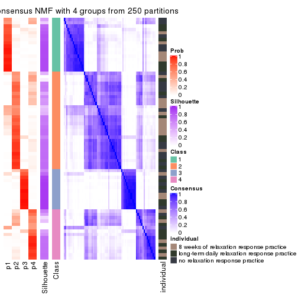
consensus_heatmap(res, k = 5)
consensus_heatmap(res, k = 6)
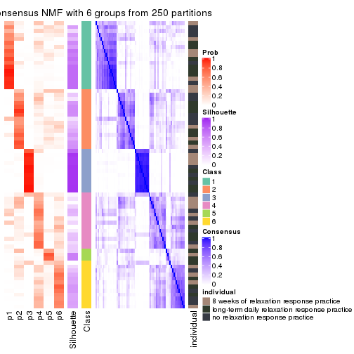
Heatmaps for the membership of samples in all partitions to see how consistent they are:
membership_heatmap(res, k = 2)
membership_heatmap(res, k = 3)
membership_heatmap(res, k = 4)
membership_heatmap(res, k = 5)
membership_heatmap(res, k = 6)
As soon as we have had the classes for columns, we can look for signatures which are significantly different between classes which can be candidate marks for certain classes. Following are the heatmaps for signatures.
Signature heatmaps where rows are scaled:
get_signatures(res, k = 2)
get_signatures(res, k = 3)
get_signatures(res, k = 4)
get_signatures(res, k = 5)
get_signatures(res, k = 6)
Signature heatmaps where rows are not scaled:
get_signatures(res, k = 2, scale_rows = FALSE)
get_signatures(res, k = 3, scale_rows = FALSE)
get_signatures(res, k = 4, scale_rows = FALSE)
get_signatures(res, k = 5, scale_rows = FALSE)
get_signatures(res, k = 6, scale_rows = FALSE)
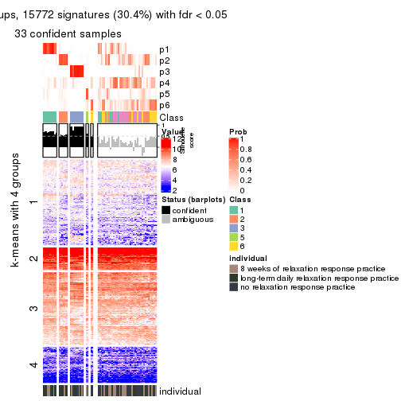
Compare the overlap of signatures from different k:
compare_signatures(res)
get_signature() returns a data frame invisibly. TO get the list of signatures, the function
call should be assigned to a variable explicitly. In following code, if plot argument is set
to FALSE, no heatmap is plotted while only the differential analysis is performed.
# code only for demonstration
tb = get_signature(res, k = ..., plot = FALSE)
An example of the output of tb is:
#> which_row fdr mean_1 mean_2 scaled_mean_1 scaled_mean_2 km
#> 1 38 0.042760348 8.373488 9.131774 -0.5533452 0.5164555 1
#> 2 40 0.018707592 7.106213 8.469186 -0.6173731 0.5762149 1
#> 3 55 0.019134737 10.221463 11.207825 -0.6159697 0.5749050 1
#> 4 59 0.006059896 5.921854 7.869574 -0.6899429 0.6439467 1
#> 5 60 0.018055526 8.928898 10.211722 -0.6204761 0.5791110 1
#> 6 98 0.009384629 15.714769 14.887706 0.6635654 -0.6193277 2
...
The columns in tb are:
which_row: row indices corresponding to the input matrix.fdr: FDR for the differential test. mean_x: The mean value in group x.scaled_mean_x: The mean value in group x after rows are scaled.km: Row groups if k-means clustering is applied to rows.UMAP plot which shows how samples are separated.
dimension_reduction(res, k = 2, method = "UMAP")
dimension_reduction(res, k = 3, method = "UMAP")
dimension_reduction(res, k = 4, method = "UMAP")
dimension_reduction(res, k = 5, method = "UMAP")
dimension_reduction(res, k = 6, method = "UMAP")
Following heatmap shows how subgroups are split when increasing k:
collect_classes(res)
Test correlation between subgroups and known annotations. If the known annotation is numeric, one-way ANOVA test is applied, and if the known annotation is discrete, chi-squared contingency table test is applied.
test_to_known_factors(res)
#> n individual(p) k
#> CV:NMF 68 0.766 2
#> CV:NMF 63 0.965 3
#> CV:NMF 57 0.289 4
#> CV:NMF 48 0.809 5
#> CV:NMF 33 0.762 6
If matrix rows can be associated to genes, consider to use GO_Enrichment(res,
...) to perform function enrichment for the signature genes.
The object with results only for a single top-value method and a single partition method can be extracted as:
res = res_list["MAD", "hclust"]
# you can also extract it by
# res = res_list["MAD:hclust"]
A summary of res and all the functions that can be applied to it:
res
#> A 'ConsensusPartition' object with k = 2, 3, 4, 5, 6.
#> On a matrix with 51941 rows and 72 columns.
#> Top rows (1000, 2000, 3000, 4000, 5000) are extracted by 'MAD' method.
#> Subgroups are detected by 'hclust' method.
#> Performed in total 1250 partitions by row resampling.
#> Best k for subgroups seems to be 3.
#>
#> Following methods can be applied to this 'ConsensusPartition' object:
#> [1] "cola_report" "collect_classes" "collect_plots"
#> [4] "collect_stats" "colnames" "compare_signatures"
#> [7] "consensus_heatmap" "dimension_reduction" "functional_enrichment"
#> [10] "get_anno_col" "get_anno" "get_classes"
#> [13] "get_consensus" "get_matrix" "get_membership"
#> [16] "get_param" "get_signatures" "get_stats"
#> [19] "is_best_k" "is_stable_k" "membership_heatmap"
#> [22] "ncol" "nrow" "plot_ecdf"
#> [25] "rownames" "select_partition_number" "show"
#> [28] "suggest_best_k" "test_to_known_factors"
collect_plots() function collects all the plots made from res for all k (number of partitions)
into one single page to provide an easy and fast comparison between different k.
collect_plots(res)
The plots are:
k and the heatmap of
predicted classes for each k.k.k.k.All the plots in panels can be made by individual functions and they are plotted later in this section.
select_partition_number() produces several plots showing different
statistics for choosing “optimized” k. There are following statistics:
k;k, the area increased is defined as \(A_k - A_{k-1}\).The detailed explanations of these statistics can be found in the cola vignette.
Generally speaking, lower PAC score, higher mean silhouette score or higher
concordance corresponds to better partition. Rand index and Jaccard index
measure how similar the current partition is compared to partition with k-1.
If they are too similar, we won't accept k is better than k-1.
select_partition_number(res)
The numeric values for all these statistics can be obtained by get_stats().
get_stats(res)
#> k 1-PAC mean_silhouette concordance area_increased Rand Jaccard
#> 2 2 0.396 0.834 0.856 0.1650 0.972 0.972
#> 3 3 0.239 0.764 0.869 1.9752 0.508 0.494
#> 4 4 0.304 0.597 0.749 0.2466 0.849 0.697
#> 5 5 0.403 0.550 0.708 0.0855 0.914 0.783
#> 6 6 0.432 0.439 0.662 0.0884 0.886 0.683
suggest_best_k() suggests the best \(k\) based on these statistics. The rules are as follows:
NA.suggest_best_k(res)
#> [1] 3
Following shows the table of the partitions (You need to click the show/hide
code output link to see it). The membership matrix (columns with name p*)
is inferred by
clue::cl_consensus()
function with the SE method. Basically the value in the membership matrix
represents the probability to belong to a certain group. The finall class
label for an item is determined with the group with highest probability it
belongs to.
In get_classes() function, the entropy is calculated from the membership
matrix and the silhouette score is calculated from the consensus matrix.
cbind(get_classes(res, k = 2), get_membership(res, k = 2))
#> class entropy silhouette p1 p2
#> GSM253663 1 0.494 0.869 0.892 0.108
#> GSM253664 1 0.224 0.844 0.964 0.036
#> GSM253665 1 0.802 0.830 0.756 0.244
#> GSM253666 1 0.163 0.856 0.976 0.024
#> GSM253667 1 0.242 0.842 0.960 0.040
#> GSM253668 1 0.242 0.842 0.960 0.040
#> GSM253669 1 0.141 0.859 0.980 0.020
#> GSM253670 1 0.767 0.842 0.776 0.224
#> GSM253671 1 0.706 0.856 0.808 0.192
#> GSM253672 1 0.662 0.861 0.828 0.172
#> GSM253673 1 0.242 0.867 0.960 0.040
#> GSM253674 1 0.184 0.852 0.972 0.028
#> GSM253675 1 0.242 0.842 0.960 0.040
#> GSM253676 1 0.584 0.865 0.860 0.140
#> GSM253677 1 0.821 0.821 0.744 0.256
#> GSM253678 1 0.242 0.842 0.960 0.040
#> GSM253679 1 0.814 0.824 0.748 0.252
#> GSM253680 1 0.204 0.865 0.968 0.032
#> GSM253681 1 0.595 0.868 0.856 0.144
#> GSM253682 1 0.767 0.839 0.776 0.224
#> GSM253683 1 0.745 0.844 0.788 0.212
#> GSM253684 1 0.781 0.835 0.768 0.232
#> GSM253685 1 0.839 0.811 0.732 0.268
#> GSM253686 1 0.184 0.864 0.972 0.028
#> GSM253687 1 0.767 0.842 0.776 0.224
#> GSM253688 1 0.141 0.864 0.980 0.020
#> GSM253689 1 0.141 0.859 0.980 0.020
#> GSM253690 1 0.443 0.869 0.908 0.092
#> GSM253691 1 0.343 0.862 0.936 0.064
#> GSM253692 1 0.402 0.869 0.920 0.080
#> GSM253693 1 0.141 0.854 0.980 0.020
#> GSM253694 1 0.373 0.867 0.928 0.072
#> GSM253695 1 0.482 0.869 0.896 0.104
#> GSM253696 1 0.833 0.815 0.736 0.264
#> GSM253697 1 0.242 0.842 0.960 0.040
#> GSM253698 1 0.242 0.842 0.960 0.040
#> GSM253699 1 0.242 0.868 0.960 0.040
#> GSM253700 1 0.242 0.842 0.960 0.040
#> GSM253701 1 0.827 0.818 0.740 0.260
#> GSM253702 1 0.821 0.821 0.744 0.256
#> GSM253703 1 0.204 0.846 0.968 0.032
#> GSM253704 1 0.295 0.851 0.948 0.052
#> GSM253705 1 0.680 0.857 0.820 0.180
#> GSM253706 1 0.839 0.811 0.732 0.268
#> GSM253707 1 0.767 0.839 0.776 0.224
#> GSM253708 1 0.767 0.839 0.776 0.224
#> GSM253709 2 0.242 0.000 0.040 0.960
#> GSM253710 1 0.760 0.844 0.780 0.220
#> GSM253711 1 0.295 0.865 0.948 0.052
#> GSM253712 1 0.802 0.831 0.756 0.244
#> GSM253713 1 0.833 0.815 0.736 0.264
#> GSM253714 1 0.163 0.865 0.976 0.024
#> GSM253715 1 0.224 0.844 0.964 0.036
#> GSM253716 1 0.260 0.852 0.956 0.044
#> GSM253717 1 0.634 0.864 0.840 0.160
#> GSM253718 1 0.242 0.842 0.960 0.040
#> GSM253719 1 0.242 0.842 0.960 0.040
#> GSM253720 1 0.482 0.869 0.896 0.104
#> GSM253721 1 0.242 0.842 0.960 0.040
#> GSM253722 1 0.242 0.842 0.960 0.040
#> GSM253723 1 0.722 0.851 0.800 0.200
#> GSM253724 1 0.242 0.842 0.960 0.040
#> GSM253725 1 0.767 0.841 0.776 0.224
#> GSM253726 1 0.767 0.841 0.776 0.224
#> GSM253727 1 0.680 0.857 0.820 0.180
#> GSM253728 1 0.242 0.842 0.960 0.040
#> GSM253729 1 0.808 0.827 0.752 0.248
#> GSM253730 1 0.767 0.839 0.776 0.224
#> GSM253731 1 0.839 0.811 0.732 0.268
#> GSM253732 1 0.738 0.845 0.792 0.208
#> GSM253733 1 0.833 0.815 0.736 0.264
#> GSM253734 1 0.767 0.842 0.776 0.224
cbind(get_classes(res, k = 3), get_membership(res, k = 3))
#> class entropy silhouette p1 p2 p3
#> GSM253663 2 0.5656 0.696 0.284 0.712 0.004
#> GSM253664 2 0.2356 0.835 0.072 0.928 0.000
#> GSM253665 1 0.1525 0.861 0.964 0.032 0.004
#> GSM253666 2 0.3686 0.823 0.140 0.860 0.000
#> GSM253667 2 0.0000 0.814 0.000 1.000 0.000
#> GSM253668 2 0.0237 0.815 0.004 0.996 0.000
#> GSM253669 2 0.3879 0.819 0.152 0.848 0.000
#> GSM253670 1 0.2537 0.867 0.920 0.080 0.000
#> GSM253671 1 0.5553 0.632 0.724 0.272 0.004
#> GSM253672 1 0.6298 0.336 0.608 0.388 0.004
#> GSM253673 2 0.3983 0.820 0.144 0.852 0.004
#> GSM253674 2 0.2066 0.834 0.060 0.940 0.000
#> GSM253675 2 0.0000 0.814 0.000 1.000 0.000
#> GSM253676 1 0.6126 0.344 0.600 0.400 0.000
#> GSM253677 1 0.3207 0.864 0.904 0.084 0.012
#> GSM253678 2 0.2356 0.836 0.072 0.928 0.000
#> GSM253679 1 0.3695 0.853 0.880 0.108 0.012
#> GSM253680 2 0.5497 0.683 0.292 0.708 0.000
#> GSM253681 1 0.6209 0.450 0.628 0.368 0.004
#> GSM253682 1 0.3539 0.848 0.888 0.100 0.012
#> GSM253683 1 0.3377 0.856 0.896 0.092 0.012
#> GSM253684 1 0.3377 0.849 0.896 0.092 0.012
#> GSM253685 1 0.0592 0.839 0.988 0.000 0.012
#> GSM253686 2 0.4291 0.806 0.180 0.820 0.000
#> GSM253687 1 0.2537 0.868 0.920 0.080 0.000
#> GSM253688 2 0.4974 0.756 0.236 0.764 0.000
#> GSM253689 2 0.3879 0.819 0.152 0.848 0.000
#> GSM253690 2 0.6228 0.511 0.372 0.624 0.004
#> GSM253691 2 0.4974 0.755 0.236 0.764 0.000
#> GSM253692 2 0.6057 0.586 0.340 0.656 0.004
#> GSM253693 2 0.4399 0.797 0.188 0.812 0.000
#> GSM253694 2 0.5859 0.565 0.344 0.656 0.000
#> GSM253695 2 0.6330 0.448 0.396 0.600 0.004
#> GSM253696 1 0.0747 0.840 0.984 0.000 0.016
#> GSM253697 2 0.0000 0.814 0.000 1.000 0.000
#> GSM253698 2 0.0000 0.814 0.000 1.000 0.000
#> GSM253699 2 0.4002 0.812 0.160 0.840 0.000
#> GSM253700 2 0.0892 0.817 0.020 0.980 0.000
#> GSM253701 1 0.3207 0.862 0.904 0.084 0.012
#> GSM253702 1 0.3618 0.854 0.884 0.104 0.012
#> GSM253703 2 0.1860 0.830 0.052 0.948 0.000
#> GSM253704 2 0.3482 0.815 0.128 0.872 0.000
#> GSM253705 1 0.4504 0.778 0.804 0.196 0.000
#> GSM253706 1 0.0592 0.839 0.988 0.000 0.012
#> GSM253707 1 0.1999 0.855 0.952 0.036 0.012
#> GSM253708 1 0.1999 0.855 0.952 0.036 0.012
#> GSM253709 3 0.0424 0.000 0.008 0.000 0.992
#> GSM253710 1 0.2772 0.868 0.916 0.080 0.004
#> GSM253711 2 0.5285 0.744 0.244 0.752 0.004
#> GSM253712 1 0.2384 0.867 0.936 0.056 0.008
#> GSM253713 1 0.0747 0.840 0.984 0.000 0.016
#> GSM253714 2 0.5178 0.730 0.256 0.744 0.000
#> GSM253715 2 0.2878 0.835 0.096 0.904 0.000
#> GSM253716 2 0.4750 0.761 0.216 0.784 0.000
#> GSM253717 1 0.5845 0.572 0.688 0.308 0.004
#> GSM253718 2 0.0000 0.814 0.000 1.000 0.000
#> GSM253719 2 0.0000 0.814 0.000 1.000 0.000
#> GSM253720 2 0.6359 0.424 0.404 0.592 0.004
#> GSM253721 2 0.0000 0.814 0.000 1.000 0.000
#> GSM253722 2 0.0000 0.814 0.000 1.000 0.000
#> GSM253723 1 0.2682 0.858 0.920 0.076 0.004
#> GSM253724 2 0.0892 0.817 0.020 0.980 0.000
#> GSM253725 1 0.3983 0.826 0.852 0.144 0.004
#> GSM253726 1 0.3644 0.842 0.872 0.124 0.004
#> GSM253727 1 0.4346 0.792 0.816 0.184 0.000
#> GSM253728 2 0.0000 0.814 0.000 1.000 0.000
#> GSM253729 1 0.2866 0.856 0.916 0.076 0.008
#> GSM253730 1 0.3539 0.848 0.888 0.100 0.012
#> GSM253731 1 0.0829 0.842 0.984 0.004 0.012
#> GSM253732 1 0.3845 0.842 0.872 0.116 0.012
#> GSM253733 1 0.0747 0.840 0.984 0.000 0.016
#> GSM253734 1 0.1411 0.862 0.964 0.036 0.000
cbind(get_classes(res, k = 4), get_membership(res, k = 4))
#> class entropy silhouette p1 p2 p3 p4
#> GSM253663 2 0.6188 0.625 0.288 0.636 0.072 0.004
#> GSM253664 2 0.3429 0.801 0.100 0.868 0.028 0.004
#> GSM253665 1 0.5119 0.347 0.556 0.004 0.440 0.000
#> GSM253666 2 0.3893 0.780 0.196 0.796 0.008 0.000
#> GSM253667 2 0.0188 0.795 0.004 0.996 0.000 0.000
#> GSM253668 2 0.0592 0.800 0.016 0.984 0.000 0.000
#> GSM253669 2 0.4011 0.775 0.208 0.784 0.008 0.000
#> GSM253670 1 0.5587 0.470 0.600 0.028 0.372 0.000
#> GSM253671 1 0.5222 0.538 0.756 0.132 0.112 0.000
#> GSM253672 1 0.6027 0.411 0.664 0.244 0.092 0.000
#> GSM253673 2 0.4896 0.731 0.280 0.704 0.012 0.004
#> GSM253674 2 0.2345 0.807 0.100 0.900 0.000 0.000
#> GSM253675 2 0.0469 0.800 0.012 0.988 0.000 0.000
#> GSM253676 1 0.6522 0.411 0.608 0.280 0.112 0.000
#> GSM253677 1 0.4533 0.540 0.752 0.004 0.232 0.012
#> GSM253678 2 0.3399 0.803 0.092 0.872 0.032 0.004
#> GSM253679 1 0.5922 0.547 0.628 0.032 0.328 0.012
#> GSM253680 2 0.5682 0.595 0.352 0.612 0.036 0.000
#> GSM253681 1 0.7541 0.461 0.520 0.240 0.236 0.004
#> GSM253682 3 0.3691 0.780 0.068 0.076 0.856 0.000
#> GSM253683 3 0.3009 0.787 0.052 0.056 0.892 0.000
#> GSM253684 3 0.3693 0.782 0.072 0.072 0.856 0.000
#> GSM253685 3 0.2401 0.770 0.092 0.000 0.904 0.004
#> GSM253686 2 0.5033 0.749 0.220 0.740 0.036 0.004
#> GSM253687 1 0.5600 0.473 0.596 0.028 0.376 0.000
#> GSM253688 2 0.5587 0.674 0.312 0.652 0.032 0.004
#> GSM253689 2 0.4011 0.775 0.208 0.784 0.008 0.000
#> GSM253690 2 0.6381 0.312 0.472 0.472 0.052 0.004
#> GSM253691 2 0.5231 0.688 0.296 0.676 0.028 0.000
#> GSM253692 2 0.6405 0.433 0.420 0.520 0.056 0.004
#> GSM253693 2 0.4840 0.740 0.240 0.732 0.028 0.000
#> GSM253694 2 0.6593 0.396 0.424 0.504 0.068 0.004
#> GSM253695 1 0.6495 -0.251 0.492 0.444 0.060 0.004
#> GSM253696 1 0.5511 0.183 0.500 0.000 0.484 0.016
#> GSM253697 2 0.0376 0.794 0.004 0.992 0.004 0.000
#> GSM253698 2 0.0188 0.798 0.004 0.996 0.000 0.000
#> GSM253699 2 0.4844 0.714 0.300 0.688 0.012 0.000
#> GSM253700 2 0.1406 0.786 0.016 0.960 0.024 0.000
#> GSM253701 1 0.5488 0.521 0.636 0.012 0.340 0.012
#> GSM253702 1 0.5815 0.548 0.636 0.028 0.324 0.012
#> GSM253703 2 0.3335 0.800 0.120 0.860 0.020 0.000
#> GSM253704 2 0.4307 0.761 0.144 0.808 0.048 0.000
#> GSM253705 1 0.6214 0.571 0.636 0.092 0.272 0.000
#> GSM253706 3 0.3982 0.647 0.220 0.000 0.776 0.004
#> GSM253707 3 0.1902 0.784 0.064 0.004 0.932 0.000
#> GSM253708 3 0.1902 0.784 0.064 0.004 0.932 0.000
#> GSM253709 4 0.0188 0.000 0.004 0.000 0.000 0.996
#> GSM253710 1 0.5756 0.448 0.568 0.032 0.400 0.000
#> GSM253711 2 0.6375 0.669 0.152 0.668 0.176 0.004
#> GSM253712 1 0.6018 0.401 0.544 0.028 0.420 0.008
#> GSM253713 1 0.5510 0.204 0.504 0.000 0.480 0.016
#> GSM253714 2 0.5964 0.614 0.340 0.612 0.044 0.004
#> GSM253715 2 0.4336 0.791 0.132 0.816 0.048 0.004
#> GSM253716 2 0.5697 0.661 0.292 0.656 0.052 0.000
#> GSM253717 1 0.6099 0.524 0.700 0.172 0.120 0.008
#> GSM253718 2 0.0657 0.800 0.012 0.984 0.000 0.004
#> GSM253719 2 0.0336 0.796 0.008 0.992 0.000 0.000
#> GSM253720 1 0.6548 -0.221 0.496 0.436 0.064 0.004
#> GSM253721 2 0.0804 0.801 0.012 0.980 0.008 0.000
#> GSM253722 2 0.0804 0.801 0.012 0.980 0.008 0.000
#> GSM253723 3 0.5083 0.621 0.220 0.032 0.740 0.008
#> GSM253724 2 0.1284 0.785 0.012 0.964 0.024 0.000
#> GSM253725 1 0.5446 0.580 0.680 0.044 0.276 0.000
#> GSM253726 1 0.5231 0.573 0.676 0.028 0.296 0.000
#> GSM253727 1 0.6307 0.565 0.620 0.092 0.288 0.000
#> GSM253728 2 0.0336 0.797 0.008 0.992 0.000 0.000
#> GSM253729 3 0.3621 0.793 0.072 0.068 0.860 0.000
#> GSM253730 3 0.3691 0.780 0.068 0.076 0.856 0.000
#> GSM253731 3 0.3945 0.648 0.216 0.000 0.780 0.004
#> GSM253732 3 0.3301 0.768 0.048 0.076 0.876 0.000
#> GSM253733 3 0.5506 -0.198 0.472 0.000 0.512 0.016
#> GSM253734 1 0.5175 0.124 0.656 0.012 0.328 0.004
cbind(get_classes(res, k = 5), get_membership(res, k = 5))
#> class entropy silhouette p1 p2 p3 p4 p5
#> GSM253663 2 0.6320 0.5312 0.356 0.536 0.052 0.056 0.000
#> GSM253664 2 0.4290 0.7586 0.164 0.780 0.028 0.028 0.000
#> GSM253665 1 0.5204 0.3506 0.580 0.000 0.368 0.052 0.000
#> GSM253666 2 0.4549 0.7342 0.244 0.716 0.008 0.032 0.000
#> GSM253667 2 0.0703 0.7522 0.000 0.976 0.000 0.024 0.000
#> GSM253668 2 0.1211 0.7646 0.016 0.960 0.000 0.024 0.000
#> GSM253669 2 0.4627 0.7259 0.256 0.704 0.008 0.032 0.000
#> GSM253670 1 0.4658 0.4585 0.672 0.004 0.296 0.028 0.000
#> GSM253671 1 0.3340 0.4176 0.864 0.048 0.024 0.064 0.000
#> GSM253672 1 0.4518 0.3964 0.776 0.148 0.032 0.044 0.000
#> GSM253673 2 0.5287 0.6498 0.332 0.612 0.008 0.048 0.000
#> GSM253674 2 0.2563 0.7792 0.120 0.872 0.000 0.008 0.000
#> GSM253675 2 0.1059 0.7682 0.020 0.968 0.004 0.008 0.000
#> GSM253676 1 0.5415 0.3742 0.688 0.220 0.036 0.056 0.000
#> GSM253677 1 0.4359 0.4573 0.776 0.000 0.128 0.092 0.004
#> GSM253678 2 0.3994 0.7684 0.144 0.804 0.032 0.020 0.000
#> GSM253679 1 0.5362 0.5342 0.684 0.016 0.232 0.064 0.004
#> GSM253680 2 0.5546 0.4939 0.416 0.528 0.012 0.044 0.000
#> GSM253681 1 0.6605 0.4319 0.604 0.160 0.184 0.052 0.000
#> GSM253682 3 0.3120 0.8175 0.052 0.064 0.872 0.012 0.000
#> GSM253683 3 0.2673 0.8199 0.028 0.048 0.900 0.024 0.000
#> GSM253684 3 0.3124 0.8184 0.056 0.060 0.872 0.012 0.000
#> GSM253685 3 0.2036 0.8036 0.056 0.000 0.920 0.024 0.000
#> GSM253686 2 0.5589 0.6776 0.280 0.640 0.040 0.040 0.000
#> GSM253687 1 0.4678 0.4546 0.668 0.004 0.300 0.028 0.000
#> GSM253688 2 0.5611 0.5688 0.384 0.556 0.024 0.036 0.000
#> GSM253689 2 0.4627 0.7259 0.256 0.704 0.008 0.032 0.000
#> GSM253690 1 0.5949 -0.1547 0.552 0.364 0.028 0.056 0.000
#> GSM253691 2 0.5343 0.6019 0.356 0.592 0.012 0.040 0.000
#> GSM253692 1 0.6041 -0.2937 0.504 0.412 0.028 0.056 0.000
#> GSM253693 2 0.5031 0.6834 0.296 0.656 0.012 0.036 0.000
#> GSM253694 1 0.6471 -0.2746 0.472 0.412 0.036 0.080 0.000
#> GSM253695 1 0.6089 -0.0504 0.564 0.340 0.040 0.056 0.000
#> GSM253696 1 0.5837 0.2207 0.512 0.000 0.400 0.084 0.004
#> GSM253697 2 0.0703 0.7565 0.000 0.976 0.000 0.024 0.000
#> GSM253698 2 0.0807 0.7634 0.012 0.976 0.000 0.012 0.000
#> GSM253699 2 0.5186 0.6328 0.340 0.612 0.008 0.040 0.000
#> GSM253700 2 0.2363 0.7198 0.012 0.912 0.024 0.052 0.000
#> GSM253701 1 0.5153 0.5177 0.688 0.008 0.240 0.060 0.004
#> GSM253702 1 0.5302 0.5344 0.688 0.016 0.232 0.060 0.004
#> GSM253703 2 0.4250 0.7626 0.152 0.784 0.012 0.052 0.000
#> GSM253704 2 0.5183 0.6650 0.128 0.740 0.040 0.092 0.000
#> GSM253705 1 0.5345 0.5415 0.708 0.056 0.192 0.044 0.000
#> GSM253706 3 0.4210 0.6312 0.224 0.000 0.740 0.036 0.000
#> GSM253707 3 0.1739 0.8119 0.032 0.004 0.940 0.024 0.000
#> GSM253708 3 0.1739 0.8119 0.032 0.004 0.940 0.024 0.000
#> GSM253709 5 0.0000 0.0000 0.000 0.000 0.000 0.000 1.000
#> GSM253710 1 0.5186 0.4194 0.624 0.004 0.320 0.052 0.000
#> GSM253711 2 0.6607 0.6137 0.168 0.600 0.184 0.048 0.000
#> GSM253712 1 0.5478 0.3854 0.592 0.004 0.336 0.068 0.000
#> GSM253713 1 0.5696 0.2368 0.524 0.000 0.400 0.072 0.004
#> GSM253714 2 0.5756 0.4855 0.424 0.512 0.028 0.036 0.000
#> GSM253715 2 0.5060 0.7367 0.200 0.720 0.048 0.032 0.000
#> GSM253716 2 0.6080 0.5625 0.324 0.576 0.036 0.064 0.000
#> GSM253717 1 0.4472 0.4049 0.792 0.072 0.032 0.104 0.000
#> GSM253718 2 0.1828 0.7705 0.028 0.936 0.004 0.032 0.000
#> GSM253719 2 0.0865 0.7538 0.004 0.972 0.000 0.024 0.000
#> GSM253720 1 0.6066 -0.0313 0.568 0.336 0.036 0.060 0.000
#> GSM253721 2 0.1996 0.7714 0.036 0.928 0.004 0.032 0.000
#> GSM253722 2 0.1911 0.7720 0.036 0.932 0.004 0.028 0.000
#> GSM253723 3 0.5101 0.6568 0.160 0.008 0.716 0.116 0.000
#> GSM253724 2 0.2178 0.7220 0.008 0.920 0.024 0.048 0.000
#> GSM253725 1 0.4007 0.5523 0.776 0.020 0.192 0.012 0.000
#> GSM253726 1 0.3907 0.5501 0.772 0.008 0.204 0.016 0.000
#> GSM253727 1 0.5572 0.5427 0.688 0.056 0.204 0.052 0.000
#> GSM253728 2 0.0854 0.7631 0.008 0.976 0.004 0.012 0.000
#> GSM253729 3 0.3255 0.8290 0.056 0.056 0.868 0.020 0.000
#> GSM253730 3 0.3120 0.8175 0.052 0.064 0.872 0.012 0.000
#> GSM253731 3 0.4104 0.6316 0.220 0.000 0.748 0.032 0.000
#> GSM253732 3 0.3036 0.8031 0.028 0.064 0.880 0.028 0.000
#> GSM253733 1 0.5779 0.1541 0.492 0.000 0.428 0.076 0.004
#> GSM253734 4 0.3476 0.0000 0.176 0.000 0.020 0.804 0.000
cbind(get_classes(res, k = 6), get_membership(res, k = 6))
#> class entropy silhouette p1 p2 p3 p4 p5 p6
#> GSM253663 4 0.6613 0.30092 0.180 0.376 0.024 0.408 0.012 0
#> GSM253664 2 0.4607 0.24462 0.028 0.604 0.012 0.356 0.000 0
#> GSM253665 1 0.4410 0.61984 0.748 0.000 0.140 0.092 0.020 0
#> GSM253666 2 0.5047 0.17542 0.088 0.564 0.000 0.348 0.000 0
#> GSM253667 2 0.2145 0.52805 0.000 0.900 0.028 0.072 0.000 0
#> GSM253668 2 0.2282 0.53876 0.000 0.888 0.024 0.088 0.000 0
#> GSM253669 2 0.5137 0.13709 0.096 0.552 0.000 0.352 0.000 0
#> GSM253670 1 0.4048 0.68089 0.776 0.000 0.100 0.112 0.012 0
#> GSM253671 1 0.5146 0.36758 0.592 0.020 0.016 0.344 0.028 0
#> GSM253672 1 0.5158 -0.03663 0.496 0.056 0.000 0.436 0.012 0
#> GSM253673 4 0.5429 0.34396 0.096 0.364 0.004 0.532 0.004 0
#> GSM253674 2 0.3455 0.46205 0.036 0.784 0.000 0.180 0.000 0
#> GSM253675 2 0.1327 0.54444 0.000 0.936 0.000 0.064 0.000 0
#> GSM253676 1 0.5949 0.13663 0.528 0.124 0.008 0.324 0.016 0
#> GSM253677 1 0.3301 0.64024 0.828 0.000 0.016 0.124 0.032 0
#> GSM253678 2 0.4850 0.34392 0.052 0.660 0.024 0.264 0.000 0
#> GSM253679 1 0.2887 0.69177 0.856 0.000 0.032 0.104 0.008 0
#> GSM253680 2 0.6090 -0.37443 0.196 0.408 0.000 0.388 0.008 0
#> GSM253681 1 0.6422 0.25437 0.516 0.080 0.064 0.324 0.016 0
#> GSM253682 3 0.3790 0.76222 0.076 0.020 0.812 0.088 0.004 0
#> GSM253683 3 0.3343 0.75798 0.056 0.016 0.852 0.060 0.016 0
#> GSM253684 3 0.4164 0.76063 0.092 0.016 0.788 0.092 0.012 0
#> GSM253685 3 0.3488 0.74500 0.160 0.000 0.800 0.012 0.028 0
#> GSM253686 2 0.5732 -0.15521 0.108 0.472 0.016 0.404 0.000 0
#> GSM253687 1 0.4048 0.67591 0.776 0.000 0.100 0.112 0.012 0
#> GSM253688 4 0.5747 0.42171 0.152 0.368 0.004 0.476 0.000 0
#> GSM253689 2 0.5137 0.13709 0.096 0.552 0.000 0.352 0.000 0
#> GSM253690 4 0.5725 0.60099 0.280 0.184 0.000 0.532 0.004 0
#> GSM253691 2 0.5737 -0.25733 0.172 0.460 0.000 0.368 0.000 0
#> GSM253692 4 0.5815 0.59265 0.244 0.228 0.000 0.524 0.004 0
#> GSM253693 2 0.5367 0.00787 0.124 0.532 0.000 0.344 0.000 0
#> GSM253694 4 0.6989 0.35183 0.232 0.248 0.028 0.460 0.032 0
#> GSM253695 4 0.6240 0.58781 0.304 0.188 0.008 0.488 0.012 0
#> GSM253696 1 0.3700 0.53676 0.792 0.000 0.156 0.020 0.032 0
#> GSM253697 2 0.0547 0.54441 0.000 0.980 0.000 0.020 0.000 0
#> GSM253698 2 0.0937 0.54726 0.000 0.960 0.000 0.040 0.000 0
#> GSM253699 4 0.5673 0.33617 0.112 0.364 0.004 0.512 0.008 0
#> GSM253700 2 0.4320 0.39390 0.000 0.704 0.048 0.240 0.008 0
#> GSM253701 1 0.2577 0.69588 0.884 0.000 0.032 0.072 0.012 0
#> GSM253702 1 0.2716 0.69198 0.868 0.000 0.028 0.096 0.008 0
#> GSM253703 2 0.4858 0.34039 0.024 0.608 0.024 0.340 0.004 0
#> GSM253704 2 0.6310 0.24251 0.036 0.516 0.068 0.344 0.036 0
#> GSM253705 1 0.4299 0.62944 0.752 0.028 0.020 0.184 0.016 0
#> GSM253706 3 0.4713 0.50446 0.400 0.000 0.560 0.012 0.028 0
#> GSM253707 3 0.3167 0.75511 0.120 0.004 0.840 0.016 0.020 0
#> GSM253708 3 0.2989 0.75696 0.120 0.004 0.848 0.012 0.016 0
#> GSM253709 6 0.0000 0.00000 0.000 0.000 0.000 0.000 0.000 1
#> GSM253710 1 0.4556 0.65457 0.732 0.000 0.120 0.132 0.016 0
#> GSM253711 2 0.6434 -0.06140 0.036 0.444 0.148 0.368 0.004 0
#> GSM253712 1 0.4217 0.64049 0.764 0.000 0.124 0.096 0.016 0
#> GSM253713 1 0.3111 0.54914 0.820 0.000 0.156 0.008 0.016 0
#> GSM253714 4 0.5736 0.51361 0.188 0.320 0.000 0.492 0.000 0
#> GSM253715 2 0.5280 0.09174 0.052 0.532 0.024 0.392 0.000 0
#> GSM253716 4 0.6346 0.07539 0.124 0.352 0.036 0.480 0.008 0
#> GSM253717 1 0.5669 0.29098 0.556 0.032 0.016 0.348 0.048 0
#> GSM253718 2 0.2489 0.54156 0.000 0.860 0.012 0.128 0.000 0
#> GSM253719 2 0.2282 0.52776 0.000 0.888 0.024 0.088 0.000 0
#> GSM253720 4 0.6250 0.57855 0.308 0.188 0.008 0.484 0.012 0
#> GSM253721 2 0.3052 0.47143 0.000 0.780 0.004 0.216 0.000 0
#> GSM253722 2 0.3136 0.46347 0.000 0.768 0.004 0.228 0.000 0
#> GSM253723 3 0.6087 0.53549 0.316 0.004 0.540 0.076 0.064 0
#> GSM253724 2 0.4271 0.39885 0.000 0.712 0.048 0.232 0.008 0
#> GSM253725 1 0.3212 0.66653 0.800 0.000 0.016 0.180 0.004 0
#> GSM253726 1 0.2946 0.68042 0.824 0.000 0.012 0.160 0.004 0
#> GSM253727 1 0.4357 0.64206 0.756 0.028 0.028 0.172 0.016 0
#> GSM253728 2 0.0935 0.54870 0.000 0.964 0.004 0.032 0.000 0
#> GSM253729 3 0.3894 0.77498 0.108 0.020 0.808 0.052 0.012 0
#> GSM253730 3 0.3790 0.76222 0.076 0.020 0.812 0.088 0.004 0
#> GSM253731 3 0.4652 0.48220 0.404 0.000 0.560 0.012 0.024 0
#> GSM253732 3 0.3646 0.74860 0.052 0.020 0.832 0.080 0.016 0
#> GSM253733 1 0.3438 0.49506 0.788 0.000 0.184 0.008 0.020 0
#> GSM253734 5 0.1563 0.00000 0.056 0.000 0.000 0.012 0.932 0
Heatmaps for the consensus matrix. It visualizes the probability of two samples to be in a same group.
consensus_heatmap(res, k = 2)
consensus_heatmap(res, k = 3)
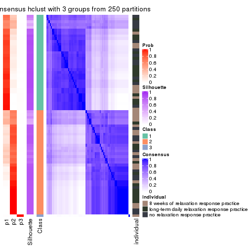
consensus_heatmap(res, k = 4)
consensus_heatmap(res, k = 5)
consensus_heatmap(res, k = 6)
Heatmaps for the membership of samples in all partitions to see how consistent they are:
membership_heatmap(res, k = 2)
membership_heatmap(res, k = 3)
membership_heatmap(res, k = 4)
membership_heatmap(res, k = 5)
membership_heatmap(res, k = 6)
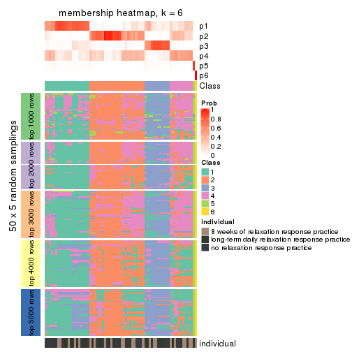
As soon as we have had the classes for columns, we can look for signatures which are significantly different between classes which can be candidate marks for certain classes. Following are the heatmaps for signatures.
Signature heatmaps where rows are scaled:
get_signatures(res, k = 2)

get_signatures(res, k = 3)
get_signatures(res, k = 4)
get_signatures(res, k = 5)

get_signatures(res, k = 6)
Signature heatmaps where rows are not scaled:
get_signatures(res, k = 2, scale_rows = FALSE)

get_signatures(res, k = 3, scale_rows = FALSE)
get_signatures(res, k = 4, scale_rows = FALSE)
get_signatures(res, k = 5, scale_rows = FALSE)

get_signatures(res, k = 6, scale_rows = FALSE)
Compare the overlap of signatures from different k:
compare_signatures(res)
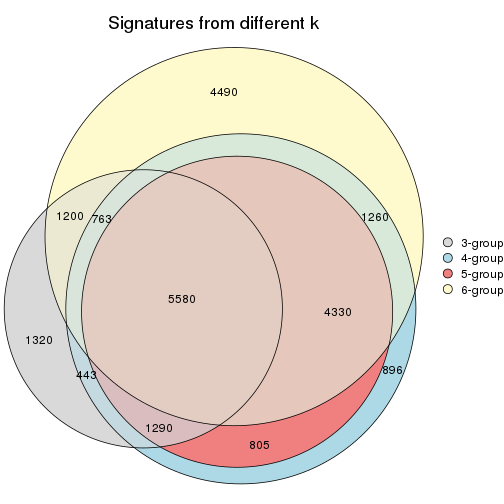
get_signature() returns a data frame invisibly. TO get the list of signatures, the function
call should be assigned to a variable explicitly. In following code, if plot argument is set
to FALSE, no heatmap is plotted while only the differential analysis is performed.
# code only for demonstration
tb = get_signature(res, k = ..., plot = FALSE)
An example of the output of tb is:
#> which_row fdr mean_1 mean_2 scaled_mean_1 scaled_mean_2 km
#> 1 38 0.042760348 8.373488 9.131774 -0.5533452 0.5164555 1
#> 2 40 0.018707592 7.106213 8.469186 -0.6173731 0.5762149 1
#> 3 55 0.019134737 10.221463 11.207825 -0.6159697 0.5749050 1
#> 4 59 0.006059896 5.921854 7.869574 -0.6899429 0.6439467 1
#> 5 60 0.018055526 8.928898 10.211722 -0.6204761 0.5791110 1
#> 6 98 0.009384629 15.714769 14.887706 0.6635654 -0.6193277 2
...
The columns in tb are:
which_row: row indices corresponding to the input matrix.fdr: FDR for the differential test. mean_x: The mean value in group x.scaled_mean_x: The mean value in group x after rows are scaled.km: Row groups if k-means clustering is applied to rows.UMAP plot which shows how samples are separated.
dimension_reduction(res, k = 2, method = "UMAP")
dimension_reduction(res, k = 3, method = "UMAP")
dimension_reduction(res, k = 4, method = "UMAP")
dimension_reduction(res, k = 5, method = "UMAP")
dimension_reduction(res, k = 6, method = "UMAP")
Following heatmap shows how subgroups are split when increasing k:
collect_classes(res)
Test correlation between subgroups and known annotations. If the known annotation is numeric, one-way ANOVA test is applied, and if the known annotation is discrete, chi-squared contingency table test is applied.
test_to_known_factors(res)
#> n individual(p) k
#> MAD:hclust 71 NA 2
#> MAD:hclust 66 0.322 3
#> MAD:hclust 54 0.958 4
#> MAD:hclust 49 0.791 5
#> MAD:hclust 39 0.769 6
If matrix rows can be associated to genes, consider to use GO_Enrichment(res,
...) to perform function enrichment for the signature genes.
The object with results only for a single top-value method and a single partition method can be extracted as:
res = res_list["MAD", "kmeans"]
# you can also extract it by
# res = res_list["MAD:kmeans"]
A summary of res and all the functions that can be applied to it:
res
#> A 'ConsensusPartition' object with k = 2, 3, 4, 5, 6.
#> On a matrix with 51941 rows and 72 columns.
#> Top rows (1000, 2000, 3000, 4000, 5000) are extracted by 'MAD' method.
#> Subgroups are detected by 'kmeans' method.
#> Performed in total 1250 partitions by row resampling.
#> Best k for subgroups seems to be 2.
#>
#> Following methods can be applied to this 'ConsensusPartition' object:
#> [1] "cola_report" "collect_classes" "collect_plots"
#> [4] "collect_stats" "colnames" "compare_signatures"
#> [7] "consensus_heatmap" "dimension_reduction" "functional_enrichment"
#> [10] "get_anno_col" "get_anno" "get_classes"
#> [13] "get_consensus" "get_matrix" "get_membership"
#> [16] "get_param" "get_signatures" "get_stats"
#> [19] "is_best_k" "is_stable_k" "membership_heatmap"
#> [22] "ncol" "nrow" "plot_ecdf"
#> [25] "rownames" "select_partition_number" "show"
#> [28] "suggest_best_k" "test_to_known_factors"
collect_plots() function collects all the plots made from res for all k (number of partitions)
into one single page to provide an easy and fast comparison between different k.
collect_plots(res)
The plots are:
k and the heatmap of
predicted classes for each k.k.k.k.All the plots in panels can be made by individual functions and they are plotted later in this section.
select_partition_number() produces several plots showing different
statistics for choosing “optimized” k. There are following statistics:
k;k, the area increased is defined as \(A_k - A_{k-1}\).The detailed explanations of these statistics can be found in the cola vignette.
Generally speaking, lower PAC score, higher mean silhouette score or higher
concordance corresponds to better partition. Rand index and Jaccard index
measure how similar the current partition is compared to partition with k-1.
If they are too similar, we won't accept k is better than k-1.
select_partition_number(res)
The numeric values for all these statistics can be obtained by get_stats().
get_stats(res)
#> k 1-PAC mean_silhouette concordance area_increased Rand Jaccard
#> 2 2 0.912 0.945 0.961 0.4912 0.495 0.495
#> 3 3 0.768 0.896 0.916 0.2501 0.874 0.749
#> 4 4 0.634 0.727 0.831 0.1705 0.869 0.670
#> 5 5 0.657 0.635 0.794 0.0775 0.956 0.846
#> 6 6 0.680 0.616 0.771 0.0454 0.927 0.721
suggest_best_k() suggests the best \(k\) based on these statistics. The rules are as follows:
NA.suggest_best_k(res)
#> [1] 2
Following shows the table of the partitions (You need to click the show/hide
code output link to see it). The membership matrix (columns with name p*)
is inferred by
clue::cl_consensus()
function with the SE method. Basically the value in the membership matrix
represents the probability to belong to a certain group. The finall class
label for an item is determined with the group with highest probability it
belongs to.
In get_classes() function, the entropy is calculated from the membership
matrix and the silhouette score is calculated from the consensus matrix.
cbind(get_classes(res, k = 2), get_membership(res, k = 2))
#> class entropy silhouette p1 p2
#> GSM253663 2 0.6712 0.777 0.176 0.824
#> GSM253664 2 0.0000 0.990 0.000 1.000
#> GSM253665 1 0.1414 0.940 0.980 0.020
#> GSM253666 2 0.0000 0.990 0.000 1.000
#> GSM253667 2 0.0000 0.990 0.000 1.000
#> GSM253668 2 0.0000 0.990 0.000 1.000
#> GSM253669 2 0.0000 0.990 0.000 1.000
#> GSM253670 1 0.3431 0.944 0.936 0.064
#> GSM253671 1 0.6438 0.856 0.836 0.164
#> GSM253672 1 0.3431 0.944 0.936 0.064
#> GSM253673 2 0.0000 0.990 0.000 1.000
#> GSM253674 2 0.0000 0.990 0.000 1.000
#> GSM253675 2 0.0000 0.990 0.000 1.000
#> GSM253676 2 0.1184 0.978 0.016 0.984
#> GSM253677 1 0.3431 0.944 0.936 0.064
#> GSM253678 2 0.0000 0.990 0.000 1.000
#> GSM253679 1 0.3431 0.944 0.936 0.064
#> GSM253680 2 0.0000 0.990 0.000 1.000
#> GSM253681 1 0.4161 0.935 0.916 0.084
#> GSM253682 1 0.5178 0.887 0.884 0.116
#> GSM253683 1 0.5294 0.884 0.880 0.120
#> GSM253684 1 0.1843 0.938 0.972 0.028
#> GSM253685 1 0.0938 0.937 0.988 0.012
#> GSM253686 2 0.1843 0.967 0.028 0.972
#> GSM253687 1 0.3431 0.944 0.936 0.064
#> GSM253688 2 0.2043 0.964 0.032 0.968
#> GSM253689 2 0.0000 0.990 0.000 1.000
#> GSM253690 2 0.3584 0.927 0.068 0.932
#> GSM253691 2 0.0000 0.990 0.000 1.000
#> GSM253692 2 0.0000 0.990 0.000 1.000
#> GSM253693 2 0.0000 0.990 0.000 1.000
#> GSM253694 2 0.1414 0.974 0.020 0.980
#> GSM253695 2 0.0672 0.984 0.008 0.992
#> GSM253696 1 0.1184 0.939 0.984 0.016
#> GSM253697 2 0.0000 0.990 0.000 1.000
#> GSM253698 2 0.0000 0.990 0.000 1.000
#> GSM253699 2 0.0000 0.990 0.000 1.000
#> GSM253700 2 0.0000 0.990 0.000 1.000
#> GSM253701 1 0.1184 0.939 0.984 0.016
#> GSM253702 1 0.3431 0.944 0.936 0.064
#> GSM253703 2 0.0000 0.990 0.000 1.000
#> GSM253704 2 0.0000 0.990 0.000 1.000
#> GSM253705 1 0.3879 0.937 0.924 0.076
#> GSM253706 1 0.0938 0.937 0.988 0.012
#> GSM253707 1 0.2236 0.937 0.964 0.036
#> GSM253708 1 0.2423 0.936 0.960 0.040
#> GSM253709 1 0.0376 0.932 0.996 0.004
#> GSM253710 1 0.3431 0.944 0.936 0.064
#> GSM253711 2 0.0000 0.990 0.000 1.000
#> GSM253712 1 0.3431 0.944 0.936 0.064
#> GSM253713 1 0.3431 0.944 0.936 0.064
#> GSM253714 2 0.0000 0.990 0.000 1.000
#> GSM253715 2 0.0000 0.990 0.000 1.000
#> GSM253716 2 0.0000 0.990 0.000 1.000
#> GSM253717 1 1.0000 0.143 0.504 0.496
#> GSM253718 2 0.0000 0.990 0.000 1.000
#> GSM253719 2 0.0000 0.990 0.000 1.000
#> GSM253720 2 0.0000 0.990 0.000 1.000
#> GSM253721 2 0.0000 0.990 0.000 1.000
#> GSM253722 2 0.0000 0.990 0.000 1.000
#> GSM253723 1 0.1633 0.938 0.976 0.024
#> GSM253724 2 0.0000 0.990 0.000 1.000
#> GSM253725 1 0.3431 0.944 0.936 0.064
#> GSM253726 1 0.3431 0.944 0.936 0.064
#> GSM253727 1 0.3431 0.944 0.936 0.064
#> GSM253728 2 0.0000 0.990 0.000 1.000
#> GSM253729 1 0.1414 0.938 0.980 0.020
#> GSM253730 1 0.1414 0.938 0.980 0.020
#> GSM253731 1 0.0938 0.937 0.988 0.012
#> GSM253732 1 0.6048 0.857 0.852 0.148
#> GSM253733 1 0.0938 0.937 0.988 0.012
#> GSM253734 1 0.6887 0.824 0.816 0.184
cbind(get_classes(res, k = 3), get_membership(res, k = 3))
#> class entropy silhouette p1 p2 p3
#> GSM253663 2 0.5585 0.752 0.204 0.772 0.024
#> GSM253664 2 0.1315 0.929 0.008 0.972 0.020
#> GSM253665 1 0.0983 0.935 0.980 0.004 0.016
#> GSM253666 2 0.1015 0.929 0.008 0.980 0.012
#> GSM253667 2 0.1753 0.924 0.000 0.952 0.048
#> GSM253668 2 0.1643 0.924 0.000 0.956 0.044
#> GSM253669 2 0.1182 0.929 0.012 0.976 0.012
#> GSM253670 1 0.0237 0.935 0.996 0.004 0.000
#> GSM253671 1 0.1491 0.923 0.968 0.016 0.016
#> GSM253672 1 0.0661 0.934 0.988 0.008 0.004
#> GSM253673 2 0.2229 0.924 0.012 0.944 0.044
#> GSM253674 2 0.2063 0.925 0.008 0.948 0.044
#> GSM253675 2 0.1643 0.925 0.000 0.956 0.044
#> GSM253676 1 0.7306 0.409 0.616 0.340 0.044
#> GSM253677 1 0.0983 0.935 0.980 0.004 0.016
#> GSM253678 2 0.0592 0.931 0.000 0.988 0.012
#> GSM253679 1 0.0829 0.935 0.984 0.004 0.012
#> GSM253680 2 0.1337 0.930 0.012 0.972 0.016
#> GSM253681 1 0.4349 0.792 0.852 0.128 0.020
#> GSM253682 3 0.4859 0.936 0.116 0.044 0.840
#> GSM253683 3 0.4602 0.931 0.108 0.040 0.852
#> GSM253684 3 0.4636 0.937 0.116 0.036 0.848
#> GSM253685 3 0.4178 0.936 0.172 0.000 0.828
#> GSM253686 2 0.5111 0.796 0.168 0.808 0.024
#> GSM253687 1 0.1015 0.930 0.980 0.012 0.008
#> GSM253688 2 0.5036 0.792 0.172 0.808 0.020
#> GSM253689 2 0.1482 0.928 0.020 0.968 0.012
#> GSM253690 2 0.7102 0.281 0.420 0.556 0.024
#> GSM253691 2 0.1482 0.929 0.012 0.968 0.020
#> GSM253692 2 0.1620 0.927 0.012 0.964 0.024
#> GSM253693 2 0.1015 0.931 0.012 0.980 0.008
#> GSM253694 2 0.6565 0.668 0.232 0.720 0.048
#> GSM253695 2 0.3550 0.884 0.080 0.896 0.024
#> GSM253696 1 0.0829 0.935 0.984 0.004 0.012
#> GSM253697 2 0.2356 0.919 0.000 0.928 0.072
#> GSM253698 2 0.1643 0.925 0.000 0.956 0.044
#> GSM253699 2 0.2446 0.925 0.012 0.936 0.052
#> GSM253700 2 0.1964 0.922 0.000 0.944 0.056
#> GSM253701 1 0.0829 0.935 0.984 0.004 0.012
#> GSM253702 1 0.0829 0.935 0.984 0.004 0.012
#> GSM253703 2 0.1964 0.922 0.000 0.944 0.056
#> GSM253704 2 0.2066 0.920 0.000 0.940 0.060
#> GSM253705 1 0.0983 0.930 0.980 0.016 0.004
#> GSM253706 3 0.4504 0.922 0.196 0.000 0.804
#> GSM253707 3 0.4811 0.950 0.148 0.024 0.828
#> GSM253708 3 0.4811 0.950 0.148 0.024 0.828
#> GSM253709 1 0.2448 0.894 0.924 0.000 0.076
#> GSM253710 1 0.1482 0.926 0.968 0.012 0.020
#> GSM253711 2 0.1170 0.929 0.008 0.976 0.016
#> GSM253712 1 0.0829 0.934 0.984 0.004 0.012
#> GSM253713 1 0.0829 0.935 0.984 0.004 0.012
#> GSM253714 2 0.1774 0.927 0.016 0.960 0.024
#> GSM253715 2 0.1453 0.928 0.008 0.968 0.024
#> GSM253716 2 0.2066 0.920 0.000 0.940 0.060
#> GSM253717 1 0.3846 0.824 0.876 0.108 0.016
#> GSM253718 2 0.1964 0.922 0.000 0.944 0.056
#> GSM253719 2 0.1964 0.922 0.000 0.944 0.056
#> GSM253720 2 0.1620 0.929 0.012 0.964 0.024
#> GSM253721 2 0.2066 0.922 0.000 0.940 0.060
#> GSM253722 2 0.1964 0.923 0.000 0.944 0.056
#> GSM253723 3 0.5690 0.789 0.288 0.004 0.708
#> GSM253724 2 0.1964 0.922 0.000 0.944 0.056
#> GSM253725 1 0.0237 0.935 0.996 0.004 0.000
#> GSM253726 1 0.0829 0.935 0.984 0.004 0.012
#> GSM253727 1 0.0829 0.935 0.984 0.004 0.012
#> GSM253728 2 0.1643 0.925 0.000 0.956 0.044
#> GSM253729 3 0.4741 0.949 0.152 0.020 0.828
#> GSM253730 3 0.4679 0.950 0.148 0.020 0.832
#> GSM253731 3 0.4291 0.933 0.180 0.000 0.820
#> GSM253732 3 0.4558 0.923 0.100 0.044 0.856
#> GSM253733 1 0.0747 0.931 0.984 0.000 0.016
#> GSM253734 1 0.4179 0.849 0.876 0.072 0.052
cbind(get_classes(res, k = 4), get_membership(res, k = 4))
#> class entropy silhouette p1 p2 p3 p4
#> GSM253663 2 0.3100 0.6924 0.080 0.888 0.004 0.028
#> GSM253664 2 0.2401 0.7367 0.000 0.904 0.004 0.092
#> GSM253665 1 0.1509 0.8983 0.960 0.020 0.008 0.012
#> GSM253666 2 0.2859 0.7109 0.000 0.880 0.008 0.112
#> GSM253667 4 0.5296 0.4720 0.000 0.492 0.008 0.500
#> GSM253668 4 0.5168 0.4787 0.000 0.492 0.004 0.504
#> GSM253669 2 0.2197 0.7358 0.000 0.916 0.004 0.080
#> GSM253670 1 0.2010 0.9007 0.940 0.040 0.008 0.012
#> GSM253671 1 0.3621 0.8624 0.860 0.072 0.000 0.068
#> GSM253672 1 0.2587 0.8941 0.916 0.056 0.008 0.020
#> GSM253673 2 0.2944 0.7270 0.000 0.868 0.004 0.128
#> GSM253674 2 0.3196 0.7189 0.000 0.856 0.008 0.136
#> GSM253675 2 0.4744 0.5056 0.000 0.704 0.012 0.284
#> GSM253676 2 0.6542 0.3873 0.240 0.636 0.004 0.120
#> GSM253677 1 0.0707 0.8976 0.980 0.000 0.000 0.020
#> GSM253678 2 0.3402 0.6899 0.000 0.832 0.004 0.164
#> GSM253679 1 0.0804 0.9001 0.980 0.000 0.008 0.012
#> GSM253680 2 0.3972 0.6706 0.008 0.788 0.000 0.204
#> GSM253681 1 0.5922 0.7576 0.724 0.140 0.012 0.124
#> GSM253682 3 0.0188 0.9358 0.004 0.000 0.996 0.000
#> GSM253683 3 0.0188 0.9358 0.004 0.000 0.996 0.000
#> GSM253684 3 0.0376 0.9344 0.004 0.004 0.992 0.000
#> GSM253685 3 0.1059 0.9323 0.012 0.000 0.972 0.016
#> GSM253686 2 0.2884 0.7038 0.068 0.900 0.004 0.028
#> GSM253687 1 0.2353 0.8959 0.924 0.056 0.008 0.012
#> GSM253688 2 0.2748 0.6997 0.072 0.904 0.004 0.020
#> GSM253689 2 0.1576 0.7479 0.000 0.948 0.004 0.048
#> GSM253690 2 0.4565 0.5873 0.140 0.796 0.000 0.064
#> GSM253691 2 0.1716 0.7465 0.000 0.936 0.000 0.064
#> GSM253692 2 0.2021 0.7293 0.012 0.932 0.000 0.056
#> GSM253693 2 0.2647 0.7097 0.000 0.880 0.000 0.120
#> GSM253694 4 0.6295 0.4786 0.144 0.196 0.000 0.660
#> GSM253695 2 0.3082 0.6990 0.032 0.884 0.000 0.084
#> GSM253696 1 0.1042 0.8991 0.972 0.000 0.008 0.020
#> GSM253697 4 0.5295 0.2707 0.000 0.488 0.008 0.504
#> GSM253698 2 0.4844 0.4746 0.000 0.688 0.012 0.300
#> GSM253699 2 0.3710 0.6821 0.000 0.804 0.004 0.192
#> GSM253700 4 0.3908 0.6981 0.000 0.212 0.004 0.784
#> GSM253701 1 0.1042 0.8975 0.972 0.000 0.008 0.020
#> GSM253702 1 0.0672 0.9005 0.984 0.000 0.008 0.008
#> GSM253703 4 0.4431 0.6768 0.000 0.304 0.000 0.696
#> GSM253704 4 0.3249 0.6665 0.008 0.140 0.000 0.852
#> GSM253705 1 0.2256 0.8934 0.924 0.056 0.000 0.020
#> GSM253706 3 0.4136 0.7750 0.196 0.000 0.788 0.016
#> GSM253707 3 0.0336 0.9368 0.008 0.000 0.992 0.000
#> GSM253708 3 0.0336 0.9368 0.008 0.000 0.992 0.000
#> GSM253709 1 0.4543 0.6724 0.676 0.000 0.000 0.324
#> GSM253710 1 0.3651 0.8280 0.844 0.136 0.008 0.012
#> GSM253711 2 0.2198 0.7371 0.000 0.920 0.008 0.072
#> GSM253712 1 0.2186 0.8958 0.932 0.048 0.008 0.012
#> GSM253713 1 0.0804 0.9004 0.980 0.000 0.008 0.012
#> GSM253714 2 0.1970 0.7286 0.008 0.932 0.000 0.060
#> GSM253715 2 0.2053 0.7432 0.000 0.924 0.004 0.072
#> GSM253716 4 0.3498 0.6700 0.008 0.160 0.000 0.832
#> GSM253717 1 0.5700 0.7485 0.716 0.120 0.000 0.164
#> GSM253718 4 0.5097 0.5697 0.000 0.428 0.004 0.568
#> GSM253719 4 0.4855 0.6633 0.000 0.352 0.004 0.644
#> GSM253720 2 0.2675 0.7171 0.008 0.892 0.000 0.100
#> GSM253721 2 0.5263 -0.1062 0.000 0.544 0.008 0.448
#> GSM253722 2 0.5229 -0.0111 0.000 0.564 0.008 0.428
#> GSM253723 3 0.6756 0.5856 0.148 0.000 0.600 0.252
#> GSM253724 4 0.3791 0.6994 0.000 0.200 0.004 0.796
#> GSM253725 1 0.1256 0.9033 0.964 0.028 0.008 0.000
#> GSM253726 1 0.0336 0.9010 0.992 0.000 0.008 0.000
#> GSM253727 1 0.3056 0.8750 0.888 0.040 0.000 0.072
#> GSM253728 2 0.4844 0.4746 0.000 0.688 0.012 0.300
#> GSM253729 3 0.0469 0.9365 0.012 0.000 0.988 0.000
#> GSM253730 3 0.0469 0.9365 0.012 0.000 0.988 0.000
#> GSM253731 3 0.2542 0.8880 0.084 0.000 0.904 0.012
#> GSM253732 3 0.0188 0.9358 0.004 0.000 0.996 0.000
#> GSM253733 1 0.1151 0.8965 0.968 0.000 0.008 0.024
#> GSM253734 1 0.6775 0.5019 0.516 0.100 0.000 0.384
cbind(get_classes(res, k = 5), get_membership(res, k = 5))
#> class entropy silhouette p1 p2 p3 p4 p5
#> GSM253663 4 0.2376 0.73282 0.044 0.000 0.000 0.904 0.052
#> GSM253664 4 0.2228 0.74919 0.000 0.048 0.000 0.912 0.040
#> GSM253665 1 0.1701 0.75042 0.936 0.000 0.000 0.016 0.048
#> GSM253666 4 0.3911 0.69606 0.000 0.144 0.000 0.796 0.060
#> GSM253667 2 0.4593 0.64070 0.000 0.736 0.000 0.184 0.080
#> GSM253668 2 0.4152 0.66160 0.000 0.772 0.000 0.168 0.060
#> GSM253669 4 0.3003 0.73599 0.000 0.092 0.000 0.864 0.044
#> GSM253670 1 0.2139 0.76462 0.916 0.000 0.000 0.032 0.052
#> GSM253671 1 0.4741 0.37540 0.708 0.008 0.000 0.044 0.240
#> GSM253672 1 0.2830 0.74127 0.876 0.000 0.000 0.044 0.080
#> GSM253673 4 0.4394 0.65870 0.000 0.048 0.000 0.732 0.220
#> GSM253674 4 0.5215 0.60560 0.000 0.096 0.000 0.664 0.240
#> GSM253675 4 0.6766 0.07879 0.000 0.300 0.000 0.400 0.300
#> GSM253676 4 0.6428 0.48581 0.112 0.024 0.000 0.536 0.328
#> GSM253677 1 0.2179 0.71570 0.888 0.000 0.000 0.000 0.112
#> GSM253678 4 0.3452 0.72898 0.000 0.148 0.000 0.820 0.032
#> GSM253679 1 0.1410 0.75272 0.940 0.000 0.000 0.000 0.060
#> GSM253680 4 0.5663 0.62839 0.028 0.148 0.000 0.688 0.136
#> GSM253681 1 0.6082 0.23043 0.640 0.032 0.000 0.124 0.204
#> GSM253682 3 0.0162 0.87712 0.000 0.004 0.996 0.000 0.000
#> GSM253683 3 0.0451 0.87685 0.000 0.004 0.988 0.000 0.008
#> GSM253684 3 0.1278 0.86628 0.004 0.000 0.960 0.020 0.016
#> GSM253685 3 0.1928 0.85729 0.004 0.004 0.920 0.000 0.072
#> GSM253686 4 0.1907 0.74114 0.028 0.000 0.000 0.928 0.044
#> GSM253687 1 0.2863 0.72622 0.876 0.000 0.000 0.060 0.064
#> GSM253688 4 0.2139 0.73799 0.032 0.000 0.000 0.916 0.052
#> GSM253689 4 0.3159 0.73769 0.000 0.088 0.000 0.856 0.056
#> GSM253690 4 0.3780 0.69695 0.060 0.012 0.000 0.828 0.100
#> GSM253691 4 0.3593 0.73659 0.000 0.088 0.000 0.828 0.084
#> GSM253692 4 0.2689 0.73768 0.012 0.016 0.000 0.888 0.084
#> GSM253693 4 0.3980 0.70814 0.000 0.128 0.000 0.796 0.076
#> GSM253694 2 0.6762 0.00138 0.084 0.524 0.000 0.064 0.328
#> GSM253695 4 0.2947 0.72942 0.020 0.016 0.000 0.876 0.088
#> GSM253696 1 0.1270 0.75255 0.948 0.000 0.000 0.000 0.052
#> GSM253697 2 0.6387 0.42019 0.000 0.500 0.000 0.196 0.304
#> GSM253698 4 0.6773 0.07303 0.000 0.304 0.000 0.396 0.300
#> GSM253699 4 0.4949 0.60971 0.000 0.056 0.000 0.656 0.288
#> GSM253700 2 0.2067 0.66649 0.000 0.920 0.000 0.032 0.048
#> GSM253701 1 0.1671 0.74075 0.924 0.000 0.000 0.000 0.076
#> GSM253702 1 0.1341 0.75481 0.944 0.000 0.000 0.000 0.056
#> GSM253703 2 0.3051 0.65849 0.000 0.864 0.000 0.076 0.060
#> GSM253704 2 0.3779 0.52476 0.000 0.776 0.000 0.024 0.200
#> GSM253705 1 0.2915 0.71445 0.860 0.000 0.000 0.024 0.116
#> GSM253706 3 0.5793 0.41980 0.316 0.004 0.580 0.000 0.100
#> GSM253707 3 0.1484 0.86889 0.000 0.008 0.944 0.000 0.048
#> GSM253708 3 0.0992 0.87555 0.000 0.008 0.968 0.000 0.024
#> GSM253709 5 0.5527 0.73040 0.428 0.056 0.004 0.000 0.512
#> GSM253710 1 0.4199 0.54157 0.772 0.000 0.000 0.160 0.068
#> GSM253711 4 0.2376 0.74876 0.000 0.052 0.000 0.904 0.044
#> GSM253712 1 0.2992 0.70743 0.868 0.000 0.000 0.064 0.068
#> GSM253713 1 0.0963 0.75882 0.964 0.000 0.000 0.000 0.036
#> GSM253714 4 0.2666 0.73737 0.012 0.020 0.000 0.892 0.076
#> GSM253715 4 0.2370 0.74792 0.000 0.040 0.000 0.904 0.056
#> GSM253716 2 0.3731 0.55970 0.000 0.800 0.000 0.040 0.160
#> GSM253717 1 0.6107 -0.16576 0.568 0.036 0.000 0.064 0.332
#> GSM253718 2 0.3601 0.68700 0.000 0.820 0.000 0.128 0.052
#> GSM253719 2 0.2068 0.68978 0.000 0.904 0.000 0.092 0.004
#> GSM253720 4 0.2940 0.73599 0.004 0.048 0.000 0.876 0.072
#> GSM253721 2 0.6633 0.29997 0.000 0.448 0.000 0.248 0.304
#> GSM253722 2 0.6687 0.26656 0.000 0.432 0.000 0.264 0.304
#> GSM253723 3 0.7219 0.16202 0.104 0.084 0.480 0.000 0.332
#> GSM253724 2 0.2067 0.66649 0.000 0.920 0.000 0.032 0.048
#> GSM253725 1 0.1568 0.76764 0.944 0.000 0.000 0.020 0.036
#> GSM253726 1 0.0162 0.76806 0.996 0.000 0.000 0.000 0.004
#> GSM253727 1 0.3972 0.53006 0.764 0.008 0.000 0.016 0.212
#> GSM253728 4 0.6772 0.07521 0.000 0.308 0.000 0.396 0.296
#> GSM253729 3 0.0162 0.87747 0.004 0.000 0.996 0.000 0.000
#> GSM253730 3 0.0324 0.87714 0.004 0.000 0.992 0.000 0.004
#> GSM253731 3 0.4126 0.72759 0.156 0.004 0.784 0.000 0.056
#> GSM253732 3 0.0451 0.87685 0.000 0.004 0.988 0.000 0.008
#> GSM253733 1 0.1544 0.74532 0.932 0.000 0.000 0.000 0.068
#> GSM253734 5 0.6624 0.75988 0.336 0.100 0.004 0.032 0.528
cbind(get_classes(res, k = 6), get_membership(res, k = 6))
#> class entropy silhouette p1 p2 p3 p4 p5 p6
#> GSM253663 4 0.169 0.68511 0.044 0.000 0.000 0.932 0.004 0.020
#> GSM253664 4 0.275 0.67118 0.000 0.012 0.000 0.844 0.004 0.140
#> GSM253665 1 0.172 0.72927 0.932 0.000 0.000 0.032 0.004 0.032
#> GSM253666 4 0.487 0.50978 0.000 0.068 0.000 0.660 0.016 0.256
#> GSM253667 2 0.483 0.39050 0.000 0.640 0.000 0.060 0.012 0.288
#> GSM253668 2 0.447 0.47847 0.000 0.684 0.000 0.052 0.008 0.256
#> GSM253669 4 0.421 0.61392 0.000 0.048 0.000 0.740 0.016 0.196
#> GSM253670 1 0.294 0.71951 0.864 0.000 0.000 0.036 0.080 0.020
#> GSM253671 5 0.498 0.06998 0.456 0.000 0.000 0.048 0.488 0.008
#> GSM253672 1 0.420 0.60351 0.748 0.000 0.000 0.064 0.176 0.012
#> GSM253673 4 0.467 0.42871 0.004 0.004 0.000 0.640 0.048 0.304
#> GSM253674 4 0.494 0.00597 0.000 0.028 0.000 0.484 0.020 0.468
#> GSM253675 6 0.507 0.84016 0.000 0.136 0.000 0.200 0.008 0.656
#> GSM253676 4 0.665 0.21102 0.048 0.008 0.000 0.476 0.156 0.312
#> GSM253677 1 0.303 0.68691 0.824 0.000 0.000 0.000 0.148 0.028
#> GSM253678 4 0.440 0.64363 0.000 0.088 0.000 0.752 0.024 0.136
#> GSM253679 1 0.257 0.72301 0.872 0.000 0.000 0.004 0.100 0.024
#> GSM253680 4 0.678 0.37826 0.008 0.124 0.000 0.492 0.292 0.084
#> GSM253681 1 0.616 -0.17247 0.444 0.024 0.000 0.116 0.408 0.008
#> GSM253682 3 0.000 0.88654 0.000 0.000 1.000 0.000 0.000 0.000
#> GSM253683 3 0.026 0.88607 0.000 0.000 0.992 0.000 0.000 0.008
#> GSM253684 3 0.122 0.86881 0.004 0.000 0.960 0.016 0.008 0.012
#> GSM253685 3 0.233 0.84818 0.000 0.000 0.892 0.000 0.056 0.052
#> GSM253686 4 0.164 0.68826 0.032 0.000 0.000 0.936 0.004 0.028
#> GSM253687 1 0.289 0.68513 0.844 0.000 0.000 0.128 0.004 0.024
#> GSM253688 4 0.143 0.68919 0.028 0.000 0.000 0.948 0.008 0.016
#> GSM253689 4 0.451 0.58729 0.004 0.048 0.000 0.712 0.016 0.220
#> GSM253690 4 0.232 0.68260 0.024 0.000 0.000 0.904 0.048 0.024
#> GSM253691 4 0.532 0.57924 0.004 0.052 0.000 0.656 0.056 0.232
#> GSM253692 4 0.178 0.69329 0.004 0.000 0.000 0.928 0.044 0.024
#> GSM253693 4 0.534 0.46878 0.000 0.080 0.000 0.616 0.028 0.276
#> GSM253694 5 0.494 0.20035 0.016 0.380 0.000 0.020 0.572 0.012
#> GSM253695 4 0.359 0.61811 0.024 0.008 0.000 0.788 0.176 0.004
#> GSM253696 1 0.162 0.73042 0.932 0.000 0.000 0.000 0.020 0.048
#> GSM253697 6 0.494 0.77117 0.000 0.268 0.000 0.084 0.008 0.640
#> GSM253698 6 0.528 0.84623 0.000 0.156 0.000 0.192 0.012 0.640
#> GSM253699 4 0.572 0.25816 0.000 0.024 0.000 0.536 0.104 0.336
#> GSM253700 2 0.122 0.76318 0.000 0.956 0.000 0.004 0.028 0.012
#> GSM253701 1 0.261 0.72057 0.864 0.000 0.000 0.000 0.108 0.028
#> GSM253702 1 0.244 0.72462 0.880 0.000 0.000 0.004 0.096 0.020
#> GSM253703 2 0.279 0.74230 0.000 0.872 0.000 0.020 0.080 0.028
#> GSM253704 2 0.284 0.62020 0.000 0.808 0.000 0.004 0.188 0.000
#> GSM253705 1 0.443 0.53546 0.704 0.004 0.000 0.048 0.236 0.008
#> GSM253706 1 0.625 -0.01447 0.472 0.000 0.372 0.000 0.072 0.084
#> GSM253707 3 0.164 0.87259 0.000 0.000 0.932 0.000 0.028 0.040
#> GSM253708 3 0.123 0.87948 0.000 0.000 0.952 0.000 0.012 0.036
#> GSM253709 5 0.526 0.44617 0.120 0.020 0.000 0.000 0.648 0.212
#> GSM253710 1 0.395 0.57188 0.744 0.000 0.000 0.212 0.008 0.036
#> GSM253711 4 0.300 0.66030 0.000 0.016 0.000 0.824 0.004 0.156
#> GSM253712 1 0.289 0.69465 0.852 0.000 0.000 0.108 0.004 0.036
#> GSM253713 1 0.144 0.73478 0.944 0.000 0.000 0.004 0.012 0.040
#> GSM253714 4 0.179 0.69624 0.004 0.000 0.000 0.928 0.040 0.028
#> GSM253715 4 0.162 0.69821 0.000 0.004 0.000 0.936 0.020 0.040
#> GSM253716 2 0.255 0.67287 0.000 0.848 0.000 0.008 0.144 0.000
#> GSM253717 5 0.544 0.43624 0.288 0.024 0.000 0.056 0.616 0.016
#> GSM253718 2 0.383 0.62878 0.000 0.768 0.000 0.036 0.012 0.184
#> GSM253719 2 0.217 0.73933 0.000 0.900 0.000 0.012 0.008 0.080
#> GSM253720 4 0.463 0.58980 0.008 0.028 0.000 0.700 0.236 0.028
#> GSM253721 6 0.542 0.82146 0.000 0.240 0.000 0.120 0.020 0.620
#> GSM253722 6 0.544 0.82931 0.000 0.236 0.000 0.124 0.020 0.620
#> GSM253723 3 0.678 0.13941 0.024 0.092 0.432 0.000 0.388 0.064
#> GSM253724 2 0.122 0.76318 0.000 0.956 0.000 0.004 0.028 0.012
#> GSM253725 1 0.280 0.70832 0.852 0.000 0.000 0.024 0.120 0.004
#> GSM253726 1 0.079 0.74356 0.968 0.000 0.000 0.000 0.032 0.000
#> GSM253727 1 0.451 0.38594 0.636 0.020 0.000 0.008 0.328 0.008
#> GSM253728 6 0.531 0.84406 0.000 0.160 0.000 0.192 0.012 0.636
#> GSM253729 3 0.000 0.88654 0.000 0.000 1.000 0.000 0.000 0.000
#> GSM253730 3 0.000 0.88654 0.000 0.000 1.000 0.000 0.000 0.000
#> GSM253731 3 0.511 0.55217 0.244 0.000 0.656 0.000 0.036 0.064
#> GSM253732 3 0.026 0.88607 0.000 0.000 0.992 0.000 0.000 0.008
#> GSM253733 1 0.207 0.72864 0.908 0.000 0.000 0.000 0.052 0.040
#> GSM253734 5 0.354 0.57003 0.064 0.044 0.000 0.028 0.844 0.020
Heatmaps for the consensus matrix. It visualizes the probability of two samples to be in a same group.
consensus_heatmap(res, k = 2)
consensus_heatmap(res, k = 3)
consensus_heatmap(res, k = 4)
consensus_heatmap(res, k = 5)
consensus_heatmap(res, k = 6)
Heatmaps for the membership of samples in all partitions to see how consistent they are:
membership_heatmap(res, k = 2)

membership_heatmap(res, k = 3)
membership_heatmap(res, k = 4)
membership_heatmap(res, k = 5)
membership_heatmap(res, k = 6)
As soon as we have had the classes for columns, we can look for signatures which are significantly different between classes which can be candidate marks for certain classes. Following are the heatmaps for signatures.
Signature heatmaps where rows are scaled:
get_signatures(res, k = 2)
get_signatures(res, k = 3)
get_signatures(res, k = 4)
get_signatures(res, k = 5)
get_signatures(res, k = 6)
Signature heatmaps where rows are not scaled:
get_signatures(res, k = 2, scale_rows = FALSE)
get_signatures(res, k = 3, scale_rows = FALSE)
get_signatures(res, k = 4, scale_rows = FALSE)
get_signatures(res, k = 5, scale_rows = FALSE)
get_signatures(res, k = 6, scale_rows = FALSE)
Compare the overlap of signatures from different k:
compare_signatures(res)
get_signature() returns a data frame invisibly. TO get the list of signatures, the function
call should be assigned to a variable explicitly. In following code, if plot argument is set
to FALSE, no heatmap is plotted while only the differential analysis is performed.
# code only for demonstration
tb = get_signature(res, k = ..., plot = FALSE)
An example of the output of tb is:
#> which_row fdr mean_1 mean_2 scaled_mean_1 scaled_mean_2 km
#> 1 38 0.042760348 8.373488 9.131774 -0.5533452 0.5164555 1
#> 2 40 0.018707592 7.106213 8.469186 -0.6173731 0.5762149 1
#> 3 55 0.019134737 10.221463 11.207825 -0.6159697 0.5749050 1
#> 4 59 0.006059896 5.921854 7.869574 -0.6899429 0.6439467 1
#> 5 60 0.018055526 8.928898 10.211722 -0.6204761 0.5791110 1
#> 6 98 0.009384629 15.714769 14.887706 0.6635654 -0.6193277 2
...
The columns in tb are:
which_row: row indices corresponding to the input matrix.fdr: FDR for the differential test. mean_x: The mean value in group x.scaled_mean_x: The mean value in group x after rows are scaled.km: Row groups if k-means clustering is applied to rows.UMAP plot which shows how samples are separated.
dimension_reduction(res, k = 2, method = "UMAP")
dimension_reduction(res, k = 3, method = "UMAP")
dimension_reduction(res, k = 4, method = "UMAP")
dimension_reduction(res, k = 5, method = "UMAP")
dimension_reduction(res, k = 6, method = "UMAP")
Following heatmap shows how subgroups are split when increasing k:
collect_classes(res)
Test correlation between subgroups and known annotations. If the known annotation is numeric, one-way ANOVA test is applied, and if the known annotation is discrete, chi-squared contingency table test is applied.
test_to_known_factors(res)
#> n individual(p) k
#> MAD:kmeans 71 0.505 2
#> MAD:kmeans 70 0.842 3
#> MAD:kmeans 63 0.320 4
#> MAD:kmeans 59 0.769 5
#> MAD:kmeans 56 0.692 6
If matrix rows can be associated to genes, consider to use GO_Enrichment(res,
...) to perform function enrichment for the signature genes.
The object with results only for a single top-value method and a single partition method can be extracted as:
res = res_list["MAD", "skmeans"]
# you can also extract it by
# res = res_list["MAD:skmeans"]
A summary of res and all the functions that can be applied to it:
res
#> A 'ConsensusPartition' object with k = 2, 3, 4, 5, 6.
#> On a matrix with 51941 rows and 72 columns.
#> Top rows (1000, 2000, 3000, 4000, 5000) are extracted by 'MAD' method.
#> Subgroups are detected by 'skmeans' method.
#> Performed in total 1250 partitions by row resampling.
#> Best k for subgroups seems to be 2.
#>
#> Following methods can be applied to this 'ConsensusPartition' object:
#> [1] "cola_report" "collect_classes" "collect_plots"
#> [4] "collect_stats" "colnames" "compare_signatures"
#> [7] "consensus_heatmap" "dimension_reduction" "functional_enrichment"
#> [10] "get_anno_col" "get_anno" "get_classes"
#> [13] "get_consensus" "get_matrix" "get_membership"
#> [16] "get_param" "get_signatures" "get_stats"
#> [19] "is_best_k" "is_stable_k" "membership_heatmap"
#> [22] "ncol" "nrow" "plot_ecdf"
#> [25] "rownames" "select_partition_number" "show"
#> [28] "suggest_best_k" "test_to_known_factors"
collect_plots() function collects all the plots made from res for all k (number of partitions)
into one single page to provide an easy and fast comparison between different k.
collect_plots(res)
The plots are:
k and the heatmap of
predicted classes for each k.k.k.k.All the plots in panels can be made by individual functions and they are plotted later in this section.
select_partition_number() produces several plots showing different
statistics for choosing “optimized” k. There are following statistics:
k;k, the area increased is defined as \(A_k - A_{k-1}\).The detailed explanations of these statistics can be found in the cola vignette.
Generally speaking, lower PAC score, higher mean silhouette score or higher
concordance corresponds to better partition. Rand index and Jaccard index
measure how similar the current partition is compared to partition with k-1.
If they are too similar, we won't accept k is better than k-1.
select_partition_number(res)
The numeric values for all these statistics can be obtained by get_stats().
get_stats(res)
#> k 1-PAC mean_silhouette concordance area_increased Rand Jaccard
#> 2 2 0.997 0.963 0.982 0.5060 0.495 0.495
#> 3 3 0.637 0.761 0.885 0.2827 0.849 0.704
#> 4 4 0.517 0.536 0.755 0.1484 0.839 0.593
#> 5 5 0.523 0.482 0.682 0.0687 0.871 0.568
#> 6 6 0.543 0.393 0.610 0.0408 0.947 0.764
suggest_best_k() suggests the best \(k\) based on these statistics. The rules are as follows:
NA.suggest_best_k(res)
#> [1] 2
Following shows the table of the partitions (You need to click the show/hide
code output link to see it). The membership matrix (columns with name p*)
is inferred by
clue::cl_consensus()
function with the SE method. Basically the value in the membership matrix
represents the probability to belong to a certain group. The finall class
label for an item is determined with the group with highest probability it
belongs to.
In get_classes() function, the entropy is calculated from the membership
matrix and the silhouette score is calculated from the consensus matrix.
cbind(get_classes(res, k = 2), get_membership(res, k = 2))
#> class entropy silhouette p1 p2
#> GSM253663 2 0.7376 0.750 0.208 0.792
#> GSM253664 2 0.0000 0.980 0.000 1.000
#> GSM253665 1 0.0000 0.984 1.000 0.000
#> GSM253666 2 0.0000 0.980 0.000 1.000
#> GSM253667 2 0.0000 0.980 0.000 1.000
#> GSM253668 2 0.0000 0.980 0.000 1.000
#> GSM253669 2 0.0000 0.980 0.000 1.000
#> GSM253670 1 0.0000 0.984 1.000 0.000
#> GSM253671 1 0.2043 0.959 0.968 0.032
#> GSM253672 1 0.0000 0.984 1.000 0.000
#> GSM253673 2 0.0000 0.980 0.000 1.000
#> GSM253674 2 0.0000 0.980 0.000 1.000
#> GSM253675 2 0.0000 0.980 0.000 1.000
#> GSM253676 2 0.1184 0.971 0.016 0.984
#> GSM253677 1 0.0000 0.984 1.000 0.000
#> GSM253678 2 0.0000 0.980 0.000 1.000
#> GSM253679 1 0.0000 0.984 1.000 0.000
#> GSM253680 2 0.0938 0.973 0.012 0.988
#> GSM253681 1 0.0672 0.979 0.992 0.008
#> GSM253682 1 0.0938 0.976 0.988 0.012
#> GSM253683 1 0.1414 0.971 0.980 0.020
#> GSM253684 1 0.0000 0.984 1.000 0.000
#> GSM253685 1 0.0000 0.984 1.000 0.000
#> GSM253686 2 0.1633 0.964 0.024 0.976
#> GSM253687 1 0.0000 0.984 1.000 0.000
#> GSM253688 2 0.2423 0.950 0.040 0.960
#> GSM253689 2 0.0376 0.978 0.004 0.996
#> GSM253690 2 0.8016 0.695 0.244 0.756
#> GSM253691 2 0.0000 0.980 0.000 1.000
#> GSM253692 2 0.0000 0.980 0.000 1.000
#> GSM253693 2 0.0000 0.980 0.000 1.000
#> GSM253694 2 0.6048 0.828 0.148 0.852
#> GSM253695 2 0.0938 0.973 0.012 0.988
#> GSM253696 1 0.0000 0.984 1.000 0.000
#> GSM253697 2 0.0000 0.980 0.000 1.000
#> GSM253698 2 0.0000 0.980 0.000 1.000
#> GSM253699 2 0.0000 0.980 0.000 1.000
#> GSM253700 2 0.0000 0.980 0.000 1.000
#> GSM253701 1 0.0000 0.984 1.000 0.000
#> GSM253702 1 0.0000 0.984 1.000 0.000
#> GSM253703 2 0.0000 0.980 0.000 1.000
#> GSM253704 2 0.1414 0.966 0.020 0.980
#> GSM253705 1 0.2423 0.952 0.960 0.040
#> GSM253706 1 0.0000 0.984 1.000 0.000
#> GSM253707 1 0.0000 0.984 1.000 0.000
#> GSM253708 1 0.0376 0.981 0.996 0.004
#> GSM253709 1 0.0000 0.984 1.000 0.000
#> GSM253710 1 0.0000 0.984 1.000 0.000
#> GSM253711 2 0.0000 0.980 0.000 1.000
#> GSM253712 1 0.0000 0.984 1.000 0.000
#> GSM253713 1 0.0000 0.984 1.000 0.000
#> GSM253714 2 0.0000 0.980 0.000 1.000
#> GSM253715 2 0.0000 0.980 0.000 1.000
#> GSM253716 2 0.0000 0.980 0.000 1.000
#> GSM253717 1 0.8608 0.609 0.716 0.284
#> GSM253718 2 0.0000 0.980 0.000 1.000
#> GSM253719 2 0.0000 0.980 0.000 1.000
#> GSM253720 2 0.0000 0.980 0.000 1.000
#> GSM253721 2 0.0000 0.980 0.000 1.000
#> GSM253722 2 0.0000 0.980 0.000 1.000
#> GSM253723 1 0.0000 0.984 1.000 0.000
#> GSM253724 2 0.0000 0.980 0.000 1.000
#> GSM253725 1 0.0000 0.984 1.000 0.000
#> GSM253726 1 0.0000 0.984 1.000 0.000
#> GSM253727 1 0.0000 0.984 1.000 0.000
#> GSM253728 2 0.0000 0.980 0.000 1.000
#> GSM253729 1 0.0000 0.984 1.000 0.000
#> GSM253730 1 0.0000 0.984 1.000 0.000
#> GSM253731 1 0.0000 0.984 1.000 0.000
#> GSM253732 1 0.2603 0.951 0.956 0.044
#> GSM253733 1 0.0000 0.984 1.000 0.000
#> GSM253734 1 0.4431 0.898 0.908 0.092
cbind(get_classes(res, k = 3), get_membership(res, k = 3))
#> class entropy silhouette p1 p2 p3
#> GSM253663 2 0.7841 0.0749 0.468 0.480 0.052
#> GSM253664 2 0.0592 0.8466 0.000 0.988 0.012
#> GSM253665 1 0.1031 0.8877 0.976 0.000 0.024
#> GSM253666 2 0.0237 0.8467 0.000 0.996 0.004
#> GSM253667 2 0.1529 0.8401 0.000 0.960 0.040
#> GSM253668 2 0.0000 0.8466 0.000 1.000 0.000
#> GSM253669 2 0.0000 0.8466 0.000 1.000 0.000
#> GSM253670 1 0.0592 0.8896 0.988 0.000 0.012
#> GSM253671 1 0.0000 0.8874 1.000 0.000 0.000
#> GSM253672 1 0.0237 0.8867 0.996 0.000 0.004
#> GSM253673 2 0.1878 0.8391 0.044 0.952 0.004
#> GSM253674 2 0.0661 0.8466 0.008 0.988 0.004
#> GSM253675 2 0.0000 0.8466 0.000 1.000 0.000
#> GSM253676 1 0.6148 0.3836 0.640 0.356 0.004
#> GSM253677 1 0.0000 0.8874 1.000 0.000 0.000
#> GSM253678 2 0.0592 0.8470 0.000 0.988 0.012
#> GSM253679 1 0.1753 0.8782 0.952 0.000 0.048
#> GSM253680 2 0.6034 0.6952 0.212 0.752 0.036
#> GSM253681 3 0.4750 0.7327 0.216 0.000 0.784
#> GSM253682 3 0.0000 0.9139 0.000 0.000 1.000
#> GSM253683 3 0.0237 0.9139 0.000 0.004 0.996
#> GSM253684 3 0.0237 0.9148 0.004 0.000 0.996
#> GSM253685 3 0.1643 0.9009 0.044 0.000 0.956
#> GSM253686 2 0.7085 0.4361 0.356 0.612 0.032
#> GSM253687 1 0.0424 0.8889 0.992 0.000 0.008
#> GSM253688 2 0.7735 0.1952 0.440 0.512 0.048
#> GSM253689 2 0.3539 0.8066 0.100 0.888 0.012
#> GSM253690 1 0.6772 0.4754 0.664 0.304 0.032
#> GSM253691 2 0.0475 0.8472 0.004 0.992 0.004
#> GSM253692 2 0.2774 0.8256 0.072 0.920 0.008
#> GSM253693 2 0.0237 0.8470 0.004 0.996 0.000
#> GSM253694 2 0.9174 0.4083 0.276 0.532 0.192
#> GSM253695 2 0.7381 0.6092 0.244 0.676 0.080
#> GSM253696 1 0.0892 0.8887 0.980 0.000 0.020
#> GSM253697 2 0.0000 0.8466 0.000 1.000 0.000
#> GSM253698 2 0.0237 0.8467 0.000 0.996 0.004
#> GSM253699 2 0.5008 0.7465 0.180 0.804 0.016
#> GSM253700 2 0.4605 0.7209 0.000 0.796 0.204
#> GSM253701 1 0.1643 0.8795 0.956 0.000 0.044
#> GSM253702 1 0.0592 0.8898 0.988 0.000 0.012
#> GSM253703 2 0.1647 0.8406 0.004 0.960 0.036
#> GSM253704 2 0.7571 0.4294 0.052 0.592 0.356
#> GSM253705 1 0.1337 0.8836 0.972 0.012 0.016
#> GSM253706 1 0.6291 0.0738 0.532 0.000 0.468
#> GSM253707 3 0.0424 0.9149 0.008 0.000 0.992
#> GSM253708 3 0.0237 0.9139 0.000 0.004 0.996
#> GSM253709 1 0.5948 0.3910 0.640 0.000 0.360
#> GSM253710 1 0.2356 0.8630 0.928 0.000 0.072
#> GSM253711 2 0.5560 0.5974 0.000 0.700 0.300
#> GSM253712 1 0.1411 0.8840 0.964 0.000 0.036
#> GSM253713 1 0.0592 0.8894 0.988 0.000 0.012
#> GSM253714 2 0.3851 0.7901 0.136 0.860 0.004
#> GSM253715 2 0.6291 0.2286 0.000 0.532 0.468
#> GSM253716 2 0.5692 0.6423 0.008 0.724 0.268
#> GSM253717 1 0.5058 0.7276 0.820 0.148 0.032
#> GSM253718 2 0.0424 0.8462 0.000 0.992 0.008
#> GSM253719 2 0.1289 0.8410 0.000 0.968 0.032
#> GSM253720 2 0.2152 0.8417 0.036 0.948 0.016
#> GSM253721 2 0.0424 0.8462 0.000 0.992 0.008
#> GSM253722 2 0.0237 0.8466 0.000 0.996 0.004
#> GSM253723 3 0.2261 0.8881 0.068 0.000 0.932
#> GSM253724 2 0.4796 0.7048 0.000 0.780 0.220
#> GSM253725 1 0.0237 0.8884 0.996 0.000 0.004
#> GSM253726 1 0.0424 0.8893 0.992 0.000 0.008
#> GSM253727 1 0.2066 0.8653 0.940 0.000 0.060
#> GSM253728 2 0.0237 0.8467 0.000 0.996 0.004
#> GSM253729 3 0.0424 0.9155 0.008 0.000 0.992
#> GSM253730 3 0.0424 0.9155 0.008 0.000 0.992
#> GSM253731 3 0.4974 0.6947 0.236 0.000 0.764
#> GSM253732 3 0.0237 0.9139 0.000 0.004 0.996
#> GSM253733 1 0.1529 0.8826 0.960 0.000 0.040
#> GSM253734 3 0.7718 0.4920 0.320 0.068 0.612
cbind(get_classes(res, k = 4), get_membership(res, k = 4))
#> class entropy silhouette p1 p2 p3 p4
#> GSM253663 2 0.5003 0.48202 0.136 0.792 0.028 0.044
#> GSM253664 2 0.4872 0.22854 0.000 0.640 0.004 0.356
#> GSM253665 1 0.2741 0.81043 0.892 0.096 0.012 0.000
#> GSM253666 4 0.5263 0.20978 0.000 0.448 0.008 0.544
#> GSM253667 4 0.4767 0.52119 0.000 0.256 0.020 0.724
#> GSM253668 4 0.3649 0.56157 0.000 0.204 0.000 0.796
#> GSM253669 2 0.4972 -0.02175 0.000 0.544 0.000 0.456
#> GSM253670 1 0.1930 0.82523 0.936 0.056 0.004 0.004
#> GSM253671 1 0.3674 0.78564 0.852 0.104 0.000 0.044
#> GSM253672 1 0.3216 0.80307 0.864 0.124 0.004 0.008
#> GSM253673 2 0.5453 0.17123 0.020 0.592 0.000 0.388
#> GSM253674 2 0.4992 -0.09909 0.000 0.524 0.000 0.476
#> GSM253675 4 0.4761 0.39072 0.000 0.372 0.000 0.628
#> GSM253676 2 0.7641 0.21704 0.376 0.416 0.000 0.208
#> GSM253677 1 0.0779 0.82254 0.980 0.016 0.004 0.000
#> GSM253678 4 0.4454 0.47327 0.000 0.308 0.000 0.692
#> GSM253679 1 0.2589 0.82149 0.912 0.044 0.044 0.000
#> GSM253680 4 0.7655 0.24701 0.172 0.244 0.024 0.560
#> GSM253681 3 0.7432 0.41578 0.288 0.080 0.580 0.052
#> GSM253682 3 0.0336 0.91138 0.000 0.008 0.992 0.000
#> GSM253683 3 0.0188 0.91310 0.000 0.000 0.996 0.004
#> GSM253684 3 0.1302 0.89184 0.000 0.044 0.956 0.000
#> GSM253685 3 0.1004 0.90554 0.024 0.004 0.972 0.000
#> GSM253686 2 0.4424 0.48977 0.080 0.836 0.028 0.056
#> GSM253687 1 0.3725 0.75991 0.812 0.180 0.008 0.000
#> GSM253688 2 0.4452 0.48673 0.124 0.816 0.008 0.052
#> GSM253689 2 0.5660 0.16206 0.020 0.576 0.004 0.400
#> GSM253690 2 0.7494 0.28795 0.304 0.556 0.032 0.108
#> GSM253691 2 0.5408 -0.11145 0.012 0.500 0.000 0.488
#> GSM253692 2 0.4988 0.38857 0.020 0.692 0.000 0.288
#> GSM253693 4 0.4898 0.36455 0.000 0.416 0.000 0.584
#> GSM253694 4 0.8225 0.13956 0.168 0.232 0.060 0.540
#> GSM253695 2 0.7765 0.35249 0.104 0.584 0.068 0.244
#> GSM253696 1 0.2021 0.82404 0.936 0.040 0.024 0.000
#> GSM253697 4 0.3649 0.56269 0.000 0.204 0.000 0.796
#> GSM253698 4 0.4624 0.43119 0.000 0.340 0.000 0.660
#> GSM253699 4 0.7063 0.06925 0.132 0.360 0.000 0.508
#> GSM253700 4 0.2565 0.56557 0.000 0.032 0.056 0.912
#> GSM253701 1 0.1724 0.82120 0.948 0.020 0.032 0.000
#> GSM253702 1 0.1888 0.82791 0.940 0.044 0.016 0.000
#> GSM253703 4 0.2665 0.55933 0.004 0.088 0.008 0.900
#> GSM253704 4 0.6033 0.39799 0.048 0.108 0.100 0.744
#> GSM253705 1 0.5306 0.74695 0.780 0.124 0.028 0.068
#> GSM253706 1 0.5288 0.13110 0.520 0.008 0.472 0.000
#> GSM253707 3 0.0188 0.91449 0.004 0.000 0.996 0.000
#> GSM253708 3 0.0000 0.91558 0.000 0.000 1.000 0.000
#> GSM253709 1 0.6722 0.54117 0.636 0.044 0.268 0.052
#> GSM253710 1 0.5882 0.52431 0.608 0.344 0.048 0.000
#> GSM253711 2 0.7698 0.11050 0.000 0.420 0.224 0.356
#> GSM253712 1 0.5056 0.70877 0.732 0.224 0.044 0.000
#> GSM253713 1 0.2048 0.81996 0.928 0.064 0.008 0.000
#> GSM253714 2 0.4956 0.47358 0.076 0.780 0.004 0.140
#> GSM253715 2 0.7677 0.22973 0.000 0.460 0.268 0.272
#> GSM253716 4 0.4121 0.50625 0.020 0.100 0.036 0.844
#> GSM253717 1 0.6721 0.53546 0.632 0.192 0.004 0.172
#> GSM253718 4 0.3311 0.57605 0.000 0.172 0.000 0.828
#> GSM253719 4 0.1902 0.57421 0.000 0.064 0.004 0.932
#> GSM253720 4 0.6305 0.00302 0.040 0.476 0.008 0.476
#> GSM253721 4 0.3975 0.54643 0.000 0.240 0.000 0.760
#> GSM253722 4 0.4277 0.51242 0.000 0.280 0.000 0.720
#> GSM253723 3 0.3285 0.84904 0.080 0.016 0.884 0.020
#> GSM253724 4 0.3004 0.55545 0.000 0.060 0.048 0.892
#> GSM253725 1 0.1822 0.82684 0.944 0.044 0.008 0.004
#> GSM253726 1 0.0895 0.82443 0.976 0.020 0.004 0.000
#> GSM253727 1 0.4149 0.78094 0.852 0.048 0.032 0.068
#> GSM253728 4 0.4730 0.39812 0.000 0.364 0.000 0.636
#> GSM253729 3 0.0000 0.91558 0.000 0.000 1.000 0.000
#> GSM253730 3 0.0000 0.91558 0.000 0.000 1.000 0.000
#> GSM253731 3 0.4158 0.65596 0.224 0.008 0.768 0.000
#> GSM253732 3 0.0000 0.91558 0.000 0.000 1.000 0.000
#> GSM253733 1 0.1388 0.82493 0.960 0.012 0.028 0.000
#> GSM253734 1 0.9082 0.11690 0.404 0.100 0.332 0.164
cbind(get_classes(res, k = 5), get_membership(res, k = 5))
#> class entropy silhouette p1 p2 p3 p4 p5
#> GSM253663 4 0.5442 0.56026 0.104 0.140 0.012 0.724 0.020
#> GSM253664 2 0.5178 0.19009 0.000 0.516 0.004 0.448 0.032
#> GSM253665 1 0.3648 0.71430 0.792 0.000 0.004 0.188 0.016
#> GSM253666 2 0.5173 0.50614 0.000 0.704 0.008 0.184 0.104
#> GSM253667 2 0.4481 0.48311 0.000 0.760 0.012 0.052 0.176
#> GSM253668 2 0.4495 0.44313 0.000 0.712 0.000 0.044 0.244
#> GSM253669 2 0.5588 0.41133 0.000 0.604 0.000 0.292 0.104
#> GSM253670 1 0.3902 0.74403 0.808 0.008 0.000 0.136 0.048
#> GSM253671 1 0.5595 0.58093 0.624 0.000 0.000 0.124 0.252
#> GSM253672 1 0.5274 0.65928 0.676 0.000 0.000 0.192 0.132
#> GSM253673 2 0.6858 0.19239 0.020 0.480 0.000 0.320 0.180
#> GSM253674 2 0.5883 0.43212 0.004 0.616 0.000 0.220 0.160
#> GSM253675 2 0.3975 0.54753 0.000 0.792 0.000 0.144 0.064
#> GSM253676 4 0.8523 0.15521 0.280 0.260 0.000 0.280 0.180
#> GSM253677 1 0.2359 0.75444 0.904 0.000 0.000 0.036 0.060
#> GSM253678 2 0.6710 0.31455 0.004 0.500 0.004 0.232 0.260
#> GSM253679 1 0.3437 0.75797 0.864 0.004 0.028 0.064 0.040
#> GSM253680 5 0.8299 0.17447 0.148 0.348 0.032 0.084 0.388
#> GSM253681 3 0.7983 0.22903 0.292 0.024 0.460 0.076 0.148
#> GSM253682 3 0.0404 0.87150 0.000 0.000 0.988 0.012 0.000
#> GSM253683 3 0.0000 0.87302 0.000 0.000 1.000 0.000 0.000
#> GSM253684 3 0.2233 0.80330 0.004 0.000 0.892 0.104 0.000
#> GSM253685 3 0.1243 0.85887 0.028 0.000 0.960 0.008 0.004
#> GSM253686 4 0.5276 0.50111 0.056 0.224 0.004 0.696 0.020
#> GSM253687 1 0.5203 0.61257 0.648 0.000 0.000 0.272 0.080
#> GSM253688 4 0.4473 0.57519 0.072 0.120 0.004 0.788 0.016
#> GSM253689 2 0.5848 0.23303 0.012 0.560 0.000 0.352 0.076
#> GSM253690 4 0.7381 0.42720 0.184 0.076 0.020 0.572 0.148
#> GSM253691 2 0.6190 0.36867 0.008 0.584 0.000 0.236 0.172
#> GSM253692 4 0.5909 0.48009 0.012 0.212 0.000 0.632 0.144
#> GSM253693 2 0.5210 0.46917 0.000 0.684 0.000 0.132 0.184
#> GSM253694 5 0.6541 0.38103 0.108 0.112 0.036 0.068 0.676
#> GSM253695 4 0.8057 0.29246 0.040 0.204 0.048 0.468 0.240
#> GSM253696 1 0.2466 0.76041 0.900 0.000 0.012 0.076 0.012
#> GSM253697 2 0.3897 0.47622 0.000 0.768 0.000 0.028 0.204
#> GSM253698 2 0.3532 0.54881 0.000 0.832 0.000 0.092 0.076
#> GSM253699 5 0.7813 0.02017 0.072 0.324 0.000 0.224 0.380
#> GSM253700 2 0.5874 0.01812 0.000 0.500 0.060 0.016 0.424
#> GSM253701 1 0.2244 0.75385 0.920 0.000 0.024 0.016 0.040
#> GSM253702 1 0.2719 0.76227 0.884 0.000 0.000 0.068 0.048
#> GSM253703 5 0.6033 0.11326 0.004 0.348 0.012 0.080 0.556
#> GSM253704 5 0.6024 0.26077 0.016 0.288 0.040 0.036 0.620
#> GSM253705 1 0.6691 0.55233 0.632 0.052 0.016 0.132 0.168
#> GSM253706 1 0.4828 0.25378 0.572 0.000 0.408 0.012 0.008
#> GSM253707 3 0.0162 0.87247 0.000 0.000 0.996 0.004 0.000
#> GSM253708 3 0.0000 0.87302 0.000 0.000 1.000 0.000 0.000
#> GSM253709 1 0.7195 0.46832 0.560 0.008 0.212 0.064 0.156
#> GSM253710 1 0.5571 0.28020 0.492 0.000 0.028 0.456 0.024
#> GSM253711 2 0.7825 0.15452 0.000 0.452 0.224 0.224 0.100
#> GSM253712 1 0.5520 0.54751 0.608 0.000 0.032 0.328 0.032
#> GSM253713 1 0.1991 0.75829 0.916 0.000 0.004 0.076 0.004
#> GSM253714 4 0.6106 0.49422 0.032 0.152 0.000 0.644 0.172
#> GSM253715 4 0.7895 0.29967 0.000 0.152 0.236 0.460 0.152
#> GSM253716 5 0.5588 0.18060 0.000 0.348 0.036 0.028 0.588
#> GSM253717 5 0.6990 -0.00665 0.348 0.032 0.008 0.124 0.488
#> GSM253718 2 0.5284 0.25421 0.000 0.568 0.000 0.056 0.376
#> GSM253719 2 0.4641 0.08607 0.000 0.532 0.000 0.012 0.456
#> GSM253720 5 0.7173 -0.00278 0.024 0.244 0.000 0.292 0.440
#> GSM253721 2 0.5102 0.44367 0.000 0.684 0.000 0.100 0.216
#> GSM253722 2 0.5289 0.47680 0.000 0.688 0.004 0.128 0.180
#> GSM253723 3 0.4950 0.70505 0.128 0.008 0.760 0.020 0.084
#> GSM253724 5 0.5427 -0.05876 0.000 0.476 0.020 0.024 0.480
#> GSM253725 1 0.3479 0.75538 0.836 0.000 0.000 0.080 0.084
#> GSM253726 1 0.1399 0.76351 0.952 0.000 0.000 0.028 0.020
#> GSM253727 1 0.5419 0.63672 0.724 0.012 0.040 0.052 0.172
#> GSM253728 2 0.2685 0.55076 0.000 0.880 0.000 0.092 0.028
#> GSM253729 3 0.0162 0.87280 0.000 0.000 0.996 0.004 0.000
#> GSM253730 3 0.0290 0.87237 0.000 0.000 0.992 0.008 0.000
#> GSM253731 3 0.4443 0.51238 0.300 0.000 0.680 0.012 0.008
#> GSM253732 3 0.0162 0.87165 0.000 0.000 0.996 0.000 0.004
#> GSM253733 1 0.0912 0.75800 0.972 0.000 0.012 0.000 0.016
#> GSM253734 5 0.8592 0.13110 0.236 0.048 0.268 0.064 0.384
cbind(get_classes(res, k = 6), get_membership(res, k = 6))
#> class entropy silhouette p1 p2 p3 p4 p5 p6
#> GSM253663 4 0.4557 0.4614 0.068 0.012 0.008 0.780 0.040 0.092
#> GSM253664 6 0.5827 0.3183 0.000 0.056 0.008 0.344 0.048 0.544
#> GSM253665 1 0.4864 0.5987 0.688 0.008 0.008 0.212 0.084 0.000
#> GSM253666 6 0.6226 0.3734 0.000 0.144 0.004 0.196 0.068 0.588
#> GSM253667 6 0.5152 0.2518 0.000 0.224 0.032 0.044 0.020 0.680
#> GSM253668 6 0.5083 0.1972 0.000 0.268 0.000 0.048 0.040 0.644
#> GSM253669 6 0.6574 0.3873 0.000 0.124 0.000 0.256 0.100 0.520
#> GSM253670 1 0.5557 0.5545 0.628 0.024 0.000 0.124 0.220 0.004
#> GSM253671 5 0.6393 -0.1388 0.408 0.088 0.000 0.080 0.424 0.000
#> GSM253672 1 0.6098 0.4434 0.532 0.024 0.000 0.208 0.236 0.000
#> GSM253673 6 0.7476 0.1977 0.004 0.204 0.000 0.184 0.192 0.416
#> GSM253674 6 0.6813 0.3753 0.004 0.140 0.004 0.140 0.164 0.548
#> GSM253675 6 0.3657 0.4577 0.000 0.060 0.000 0.072 0.044 0.824
#> GSM253676 5 0.8583 0.1233 0.152 0.132 0.000 0.140 0.336 0.240
#> GSM253677 1 0.3159 0.6268 0.820 0.008 0.000 0.020 0.152 0.000
#> GSM253678 6 0.7285 0.1118 0.000 0.308 0.012 0.168 0.096 0.416
#> GSM253679 1 0.4571 0.6057 0.760 0.024 0.016 0.076 0.124 0.000
#> GSM253680 2 0.8301 0.1820 0.080 0.348 0.008 0.072 0.252 0.240
#> GSM253681 3 0.8634 -0.1251 0.272 0.104 0.336 0.076 0.192 0.020
#> GSM253682 3 0.0363 0.8261 0.000 0.000 0.988 0.012 0.000 0.000
#> GSM253683 3 0.0551 0.8259 0.000 0.004 0.984 0.008 0.004 0.000
#> GSM253684 3 0.2518 0.7638 0.004 0.008 0.880 0.096 0.012 0.000
#> GSM253685 3 0.2487 0.7860 0.068 0.004 0.892 0.008 0.028 0.000
#> GSM253686 4 0.4591 0.4591 0.012 0.024 0.004 0.752 0.052 0.156
#> GSM253687 1 0.6386 0.4401 0.508 0.040 0.000 0.292 0.156 0.004
#> GSM253688 4 0.4779 0.4793 0.040 0.036 0.012 0.772 0.036 0.104
#> GSM253689 6 0.7606 0.1178 0.036 0.096 0.004 0.336 0.128 0.400
#> GSM253690 4 0.7946 0.2316 0.140 0.100 0.004 0.452 0.224 0.080
#> GSM253691 6 0.7062 0.3139 0.004 0.136 0.000 0.188 0.180 0.492
#> GSM253692 4 0.6973 0.3304 0.012 0.100 0.000 0.516 0.172 0.200
#> GSM253693 6 0.6448 0.3354 0.004 0.196 0.000 0.104 0.124 0.572
#> GSM253694 2 0.7019 0.0216 0.088 0.512 0.012 0.036 0.292 0.060
#> GSM253695 4 0.8283 0.1787 0.040 0.144 0.016 0.400 0.204 0.196
#> GSM253696 1 0.3725 0.6500 0.816 0.012 0.008 0.088 0.076 0.000
#> GSM253697 6 0.3518 0.3261 0.000 0.184 0.000 0.008 0.024 0.784
#> GSM253698 6 0.3671 0.4565 0.000 0.080 0.000 0.068 0.032 0.820
#> GSM253699 5 0.8041 -0.0765 0.024 0.264 0.004 0.124 0.300 0.284
#> GSM253700 2 0.5139 0.3433 0.000 0.520 0.020 0.008 0.028 0.424
#> GSM253701 1 0.2871 0.6246 0.864 0.008 0.016 0.012 0.100 0.000
#> GSM253702 1 0.3466 0.6351 0.820 0.008 0.000 0.072 0.100 0.000
#> GSM253703 2 0.5603 0.4212 0.000 0.580 0.004 0.036 0.068 0.312
#> GSM253704 2 0.5892 0.4806 0.020 0.656 0.036 0.012 0.088 0.188
#> GSM253705 1 0.6690 0.3746 0.560 0.088 0.000 0.104 0.224 0.024
#> GSM253706 1 0.4821 0.3878 0.640 0.004 0.300 0.016 0.040 0.000
#> GSM253707 3 0.0951 0.8230 0.000 0.004 0.968 0.008 0.020 0.000
#> GSM253708 3 0.1167 0.8216 0.000 0.012 0.960 0.008 0.020 0.000
#> GSM253709 1 0.7624 0.1450 0.476 0.112 0.140 0.028 0.232 0.012
#> GSM253710 4 0.6103 -0.1520 0.380 0.024 0.020 0.500 0.072 0.004
#> GSM253711 6 0.7803 0.1601 0.000 0.076 0.240 0.164 0.080 0.440
#> GSM253712 1 0.6295 0.3842 0.492 0.016 0.028 0.352 0.112 0.000
#> GSM253713 1 0.3565 0.6528 0.820 0.008 0.004 0.092 0.076 0.000
#> GSM253714 4 0.6600 0.3467 0.004 0.132 0.000 0.556 0.192 0.116
#> GSM253715 4 0.8124 0.1737 0.004 0.128 0.272 0.376 0.048 0.172
#> GSM253716 2 0.5600 0.5154 0.008 0.668 0.024 0.020 0.084 0.196
#> GSM253717 5 0.7282 0.2747 0.252 0.204 0.004 0.052 0.460 0.028
#> GSM253718 6 0.5941 -0.0704 0.000 0.344 0.000 0.068 0.064 0.524
#> GSM253719 2 0.5343 0.2900 0.000 0.504 0.000 0.032 0.044 0.420
#> GSM253720 5 0.8137 -0.0857 0.032 0.264 0.000 0.172 0.320 0.212
#> GSM253721 6 0.5803 0.2367 0.000 0.288 0.000 0.056 0.080 0.576
#> GSM253722 6 0.5758 0.3139 0.000 0.184 0.000 0.080 0.100 0.636
#> GSM253723 3 0.6105 0.5213 0.176 0.108 0.628 0.016 0.072 0.000
#> GSM253724 2 0.5321 0.4355 0.004 0.580 0.016 0.012 0.040 0.348
#> GSM253725 1 0.4505 0.6256 0.744 0.028 0.000 0.084 0.144 0.000
#> GSM253726 1 0.2721 0.6557 0.868 0.004 0.000 0.040 0.088 0.000
#> GSM253727 1 0.6327 0.3425 0.572 0.144 0.016 0.024 0.236 0.008
#> GSM253728 6 0.2808 0.4536 0.000 0.040 0.000 0.060 0.024 0.876
#> GSM253729 3 0.0000 0.8274 0.000 0.000 1.000 0.000 0.000 0.000
#> GSM253730 3 0.0146 0.8275 0.000 0.000 0.996 0.004 0.000 0.000
#> GSM253731 3 0.5008 0.3284 0.352 0.012 0.592 0.016 0.028 0.000
#> GSM253732 3 0.0291 0.8267 0.000 0.000 0.992 0.004 0.004 0.000
#> GSM253733 1 0.1894 0.6500 0.928 0.004 0.012 0.016 0.040 0.000
#> GSM253734 5 0.9046 0.2215 0.220 0.176 0.192 0.036 0.308 0.068
Heatmaps for the consensus matrix. It visualizes the probability of two samples to be in a same group.
consensus_heatmap(res, k = 2)
consensus_heatmap(res, k = 3)
consensus_heatmap(res, k = 4)
consensus_heatmap(res, k = 5)
consensus_heatmap(res, k = 6)
Heatmaps for the membership of samples in all partitions to see how consistent they are:
membership_heatmap(res, k = 2)
membership_heatmap(res, k = 3)
membership_heatmap(res, k = 4)
membership_heatmap(res, k = 5)
membership_heatmap(res, k = 6)
As soon as we have had the classes for columns, we can look for signatures which are significantly different between classes which can be candidate marks for certain classes. Following are the heatmaps for signatures.
Signature heatmaps where rows are scaled:
get_signatures(res, k = 2)
get_signatures(res, k = 3)
get_signatures(res, k = 4)
get_signatures(res, k = 5)
get_signatures(res, k = 6)
Signature heatmaps where rows are not scaled:
get_signatures(res, k = 2, scale_rows = FALSE)
get_signatures(res, k = 3, scale_rows = FALSE)
get_signatures(res, k = 4, scale_rows = FALSE)
get_signatures(res, k = 5, scale_rows = FALSE)
get_signatures(res, k = 6, scale_rows = FALSE)

Compare the overlap of signatures from different k:
compare_signatures(res)

get_signature() returns a data frame invisibly. TO get the list of signatures, the function
call should be assigned to a variable explicitly. In following code, if plot argument is set
to FALSE, no heatmap is plotted while only the differential analysis is performed.
# code only for demonstration
tb = get_signature(res, k = ..., plot = FALSE)
An example of the output of tb is:
#> which_row fdr mean_1 mean_2 scaled_mean_1 scaled_mean_2 km
#> 1 38 0.042760348 8.373488 9.131774 -0.5533452 0.5164555 1
#> 2 40 0.018707592 7.106213 8.469186 -0.6173731 0.5762149 1
#> 3 55 0.019134737 10.221463 11.207825 -0.6159697 0.5749050 1
#> 4 59 0.006059896 5.921854 7.869574 -0.6899429 0.6439467 1
#> 5 60 0.018055526 8.928898 10.211722 -0.6204761 0.5791110 1
#> 6 98 0.009384629 15.714769 14.887706 0.6635654 -0.6193277 2
...
The columns in tb are:
which_row: row indices corresponding to the input matrix.fdr: FDR for the differential test. mean_x: The mean value in group x.scaled_mean_x: The mean value in group x after rows are scaled.km: Row groups if k-means clustering is applied to rows.UMAP plot which shows how samples are separated.
dimension_reduction(res, k = 2, method = "UMAP")
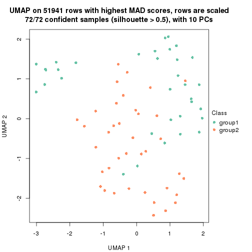
dimension_reduction(res, k = 3, method = "UMAP")
dimension_reduction(res, k = 4, method = "UMAP")
dimension_reduction(res, k = 5, method = "UMAP")
dimension_reduction(res, k = 6, method = "UMAP")
Following heatmap shows how subgroups are split when increasing k:
collect_classes(res)
Test correlation between subgroups and known annotations. If the known annotation is numeric, one-way ANOVA test is applied, and if the known annotation is discrete, chi-squared contingency table test is applied.
test_to_known_factors(res)
#> n individual(p) k
#> MAD:skmeans 72 0.430 2
#> MAD:skmeans 61 0.841 3
#> MAD:skmeans 42 0.848 4
#> MAD:skmeans 35 0.717 5
#> MAD:skmeans 22 0.796 6
If matrix rows can be associated to genes, consider to use GO_Enrichment(res,
...) to perform function enrichment for the signature genes.
The object with results only for a single top-value method and a single partition method can be extracted as:
res = res_list["MAD", "pam"]
# you can also extract it by
# res = res_list["MAD:pam"]
A summary of res and all the functions that can be applied to it:
res
#> A 'ConsensusPartition' object with k = 2, 3, 4, 5, 6.
#> On a matrix with 51941 rows and 72 columns.
#> Top rows (1000, 2000, 3000, 4000, 5000) are extracted by 'MAD' method.
#> Subgroups are detected by 'pam' method.
#> Performed in total 1250 partitions by row resampling.
#> Best k for subgroups seems to be 2.
#>
#> Following methods can be applied to this 'ConsensusPartition' object:
#> [1] "cola_report" "collect_classes" "collect_plots"
#> [4] "collect_stats" "colnames" "compare_signatures"
#> [7] "consensus_heatmap" "dimension_reduction" "functional_enrichment"
#> [10] "get_anno_col" "get_anno" "get_classes"
#> [13] "get_consensus" "get_matrix" "get_membership"
#> [16] "get_param" "get_signatures" "get_stats"
#> [19] "is_best_k" "is_stable_k" "membership_heatmap"
#> [22] "ncol" "nrow" "plot_ecdf"
#> [25] "rownames" "select_partition_number" "show"
#> [28] "suggest_best_k" "test_to_known_factors"
collect_plots() function collects all the plots made from res for all k (number of partitions)
into one single page to provide an easy and fast comparison between different k.
collect_plots(res)
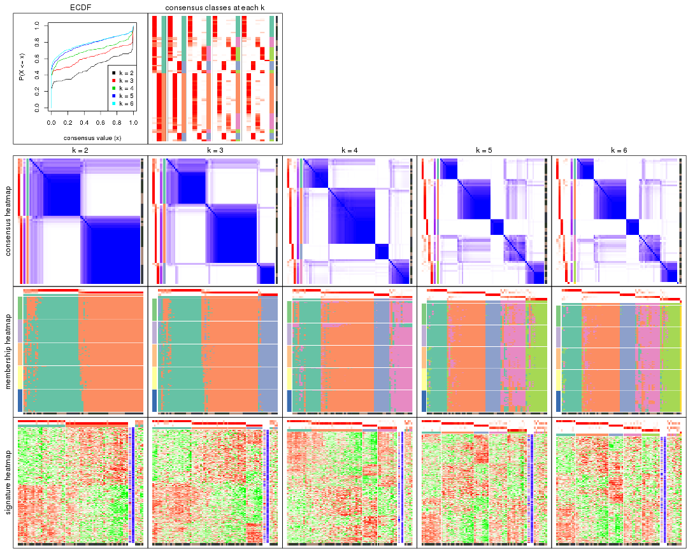
The plots are:
k and the heatmap of
predicted classes for each k.k.k.k.All the plots in panels can be made by individual functions and they are plotted later in this section.
select_partition_number() produces several plots showing different
statistics for choosing “optimized” k. There are following statistics:
k;k, the area increased is defined as \(A_k - A_{k-1}\).The detailed explanations of these statistics can be found in the cola vignette.
Generally speaking, lower PAC score, higher mean silhouette score or higher
concordance corresponds to better partition. Rand index and Jaccard index
measure how similar the current partition is compared to partition with k-1.
If they are too similar, we won't accept k is better than k-1.
select_partition_number(res)
The numeric values for all these statistics can be obtained by get_stats().
get_stats(res)
#> k 1-PAC mean_silhouette concordance area_increased Rand Jaccard
#> 2 2 0.751 0.856 0.939 0.4953 0.496 0.496
#> 3 3 0.775 0.836 0.934 0.2554 0.849 0.703
#> 4 4 0.805 0.830 0.916 0.1266 0.885 0.706
#> 5 5 0.750 0.775 0.884 0.1094 0.867 0.586
#> 6 6 0.769 0.758 0.901 0.0157 0.995 0.978
suggest_best_k() suggests the best \(k\) based on these statistics. The rules are as follows:
NA.suggest_best_k(res)
#> [1] 2
Following shows the table of the partitions (You need to click the show/hide
code output link to see it). The membership matrix (columns with name p*)
is inferred by
clue::cl_consensus()
function with the SE method. Basically the value in the membership matrix
represents the probability to belong to a certain group. The finall class
label for an item is determined with the group with highest probability it
belongs to.
In get_classes() function, the entropy is calculated from the membership
matrix and the silhouette score is calculated from the consensus matrix.
cbind(get_classes(res, k = 2), get_membership(res, k = 2))
#> class entropy silhouette p1 p2
#> GSM253663 1 0.9170 0.5366 0.668 0.332
#> GSM253664 2 0.0000 0.9648 0.000 1.000
#> GSM253665 1 0.0000 0.8944 1.000 0.000
#> GSM253666 2 0.0000 0.9648 0.000 1.000
#> GSM253667 2 0.0000 0.9648 0.000 1.000
#> GSM253668 2 0.0000 0.9648 0.000 1.000
#> GSM253669 2 0.0000 0.9648 0.000 1.000
#> GSM253670 1 0.0000 0.8944 1.000 0.000
#> GSM253671 1 0.0000 0.8944 1.000 0.000
#> GSM253672 1 0.0000 0.8944 1.000 0.000
#> GSM253673 1 0.9881 0.3199 0.564 0.436
#> GSM253674 2 0.0000 0.9648 0.000 1.000
#> GSM253675 2 0.0000 0.9648 0.000 1.000
#> GSM253676 1 0.8267 0.6732 0.740 0.260
#> GSM253677 1 0.0000 0.8944 1.000 0.000
#> GSM253678 2 0.0000 0.9648 0.000 1.000
#> GSM253679 1 0.0000 0.8944 1.000 0.000
#> GSM253680 2 0.0000 0.9648 0.000 1.000
#> GSM253681 1 0.8499 0.6574 0.724 0.276
#> GSM253682 2 0.0000 0.9648 0.000 1.000
#> GSM253683 2 0.0000 0.9648 0.000 1.000
#> GSM253684 1 0.0376 0.8929 0.996 0.004
#> GSM253685 1 0.0000 0.8944 1.000 0.000
#> GSM253686 2 0.5842 0.8059 0.140 0.860
#> GSM253687 1 0.0000 0.8944 1.000 0.000
#> GSM253688 2 0.1633 0.9449 0.024 0.976
#> GSM253689 2 0.0000 0.9648 0.000 1.000
#> GSM253690 1 0.1184 0.8877 0.984 0.016
#> GSM253691 2 0.0000 0.9648 0.000 1.000
#> GSM253692 1 0.8861 0.6150 0.696 0.304
#> GSM253693 2 0.0000 0.9648 0.000 1.000
#> GSM253694 2 0.8713 0.5284 0.292 0.708
#> GSM253695 2 0.3114 0.9129 0.056 0.944
#> GSM253696 1 0.0000 0.8944 1.000 0.000
#> GSM253697 2 0.0000 0.9648 0.000 1.000
#> GSM253698 2 0.0000 0.9648 0.000 1.000
#> GSM253699 1 0.8016 0.6900 0.756 0.244
#> GSM253700 2 0.0000 0.9648 0.000 1.000
#> GSM253701 1 0.0000 0.8944 1.000 0.000
#> GSM253702 1 0.0000 0.8944 1.000 0.000
#> GSM253703 2 0.0000 0.9648 0.000 1.000
#> GSM253704 2 0.0000 0.9648 0.000 1.000
#> GSM253705 2 0.0000 0.9648 0.000 1.000
#> GSM253706 1 0.0000 0.8944 1.000 0.000
#> GSM253707 1 0.9983 0.1672 0.524 0.476
#> GSM253708 2 0.0000 0.9648 0.000 1.000
#> GSM253709 1 0.0000 0.8944 1.000 0.000
#> GSM253710 1 0.0376 0.8929 0.996 0.004
#> GSM253711 2 0.0000 0.9648 0.000 1.000
#> GSM253712 1 0.0000 0.8944 1.000 0.000
#> GSM253713 1 0.0000 0.8944 1.000 0.000
#> GSM253714 2 0.6438 0.7719 0.164 0.836
#> GSM253715 2 0.0376 0.9615 0.004 0.996
#> GSM253716 2 0.0000 0.9648 0.000 1.000
#> GSM253717 2 0.9970 -0.0313 0.468 0.532
#> GSM253718 2 0.0000 0.9648 0.000 1.000
#> GSM253719 2 0.0000 0.9648 0.000 1.000
#> GSM253720 2 0.0000 0.9648 0.000 1.000
#> GSM253721 2 0.0000 0.9648 0.000 1.000
#> GSM253722 2 0.0000 0.9648 0.000 1.000
#> GSM253723 1 0.9922 0.2951 0.552 0.448
#> GSM253724 2 0.0000 0.9648 0.000 1.000
#> GSM253725 1 0.0000 0.8944 1.000 0.000
#> GSM253726 1 0.0000 0.8944 1.000 0.000
#> GSM253727 1 0.9552 0.4784 0.624 0.376
#> GSM253728 2 0.0000 0.9648 0.000 1.000
#> GSM253729 1 0.1843 0.8802 0.972 0.028
#> GSM253730 1 0.0938 0.8893 0.988 0.012
#> GSM253731 1 0.0000 0.8944 1.000 0.000
#> GSM253732 2 0.0000 0.9648 0.000 1.000
#> GSM253733 1 0.0000 0.8944 1.000 0.000
#> GSM253734 2 0.1414 0.9486 0.020 0.980
cbind(get_classes(res, k = 3), get_membership(res, k = 3))
#> class entropy silhouette p1 p2 p3
#> GSM253663 1 0.5785 0.51089 0.668 0.332 0.000
#> GSM253664 2 0.0000 0.94917 0.000 1.000 0.000
#> GSM253665 1 0.0000 0.87315 1.000 0.000 0.000
#> GSM253666 2 0.0000 0.94917 0.000 1.000 0.000
#> GSM253667 2 0.0000 0.94917 0.000 1.000 0.000
#> GSM253668 2 0.0000 0.94917 0.000 1.000 0.000
#> GSM253669 2 0.0000 0.94917 0.000 1.000 0.000
#> GSM253670 1 0.0000 0.87315 1.000 0.000 0.000
#> GSM253671 1 0.0000 0.87315 1.000 0.000 0.000
#> GSM253672 1 0.0000 0.87315 1.000 0.000 0.000
#> GSM253673 1 0.6225 0.30148 0.568 0.432 0.000
#> GSM253674 2 0.0000 0.94917 0.000 1.000 0.000
#> GSM253675 2 0.0000 0.94917 0.000 1.000 0.000
#> GSM253676 1 0.5216 0.65171 0.740 0.260 0.000
#> GSM253677 1 0.0000 0.87315 1.000 0.000 0.000
#> GSM253678 2 0.0000 0.94917 0.000 1.000 0.000
#> GSM253679 1 0.0000 0.87315 1.000 0.000 0.000
#> GSM253680 2 0.0000 0.94917 0.000 1.000 0.000
#> GSM253681 3 0.8610 0.35058 0.324 0.120 0.556
#> GSM253682 3 0.0000 0.92027 0.000 0.000 1.000
#> GSM253683 3 0.0000 0.92027 0.000 0.000 1.000
#> GSM253684 3 0.0000 0.92027 0.000 0.000 1.000
#> GSM253685 3 0.0000 0.92027 0.000 0.000 1.000
#> GSM253686 2 0.3686 0.80593 0.140 0.860 0.000
#> GSM253687 1 0.0000 0.87315 1.000 0.000 0.000
#> GSM253688 2 0.1031 0.93056 0.024 0.976 0.000
#> GSM253689 2 0.0000 0.94917 0.000 1.000 0.000
#> GSM253690 1 0.0592 0.86602 0.988 0.012 0.000
#> GSM253691 2 0.0000 0.94917 0.000 1.000 0.000
#> GSM253692 1 0.5560 0.60649 0.700 0.300 0.000
#> GSM253693 2 0.0000 0.94917 0.000 1.000 0.000
#> GSM253694 2 0.5497 0.53668 0.292 0.708 0.000
#> GSM253695 2 0.1964 0.90192 0.056 0.944 0.000
#> GSM253696 1 0.0000 0.87315 1.000 0.000 0.000
#> GSM253697 2 0.0000 0.94917 0.000 1.000 0.000
#> GSM253698 2 0.0000 0.94917 0.000 1.000 0.000
#> GSM253699 1 0.5058 0.66564 0.756 0.244 0.000
#> GSM253700 2 0.0000 0.94917 0.000 1.000 0.000
#> GSM253701 1 0.4842 0.66890 0.776 0.000 0.224
#> GSM253702 1 0.0000 0.87315 1.000 0.000 0.000
#> GSM253703 2 0.0000 0.94917 0.000 1.000 0.000
#> GSM253704 2 0.0592 0.94013 0.000 0.988 0.012
#> GSM253705 2 0.0000 0.94917 0.000 1.000 0.000
#> GSM253706 1 0.5678 0.51921 0.684 0.000 0.316
#> GSM253707 3 0.0000 0.92027 0.000 0.000 1.000
#> GSM253708 3 0.0000 0.92027 0.000 0.000 1.000
#> GSM253709 1 0.0424 0.86807 0.992 0.000 0.008
#> GSM253710 1 0.0000 0.87315 1.000 0.000 0.000
#> GSM253711 2 0.0000 0.94917 0.000 1.000 0.000
#> GSM253712 1 0.0000 0.87315 1.000 0.000 0.000
#> GSM253713 1 0.0000 0.87315 1.000 0.000 0.000
#> GSM253714 2 0.4062 0.77190 0.164 0.836 0.000
#> GSM253715 2 0.5588 0.58354 0.004 0.720 0.276
#> GSM253716 2 0.0000 0.94917 0.000 1.000 0.000
#> GSM253717 2 0.6291 -0.00419 0.468 0.532 0.000
#> GSM253718 2 0.0000 0.94917 0.000 1.000 0.000
#> GSM253719 2 0.0000 0.94917 0.000 1.000 0.000
#> GSM253720 2 0.0000 0.94917 0.000 1.000 0.000
#> GSM253721 2 0.0000 0.94917 0.000 1.000 0.000
#> GSM253722 2 0.0000 0.94917 0.000 1.000 0.000
#> GSM253723 3 0.1636 0.89758 0.016 0.020 0.964
#> GSM253724 2 0.0000 0.94917 0.000 1.000 0.000
#> GSM253725 1 0.0000 0.87315 1.000 0.000 0.000
#> GSM253726 1 0.0000 0.87315 1.000 0.000 0.000
#> GSM253727 1 0.6045 0.44545 0.620 0.380 0.000
#> GSM253728 2 0.0000 0.94917 0.000 1.000 0.000
#> GSM253729 3 0.0000 0.92027 0.000 0.000 1.000
#> GSM253730 3 0.0000 0.92027 0.000 0.000 1.000
#> GSM253731 1 0.0000 0.87315 1.000 0.000 0.000
#> GSM253732 3 0.0000 0.92027 0.000 0.000 1.000
#> GSM253733 1 0.0000 0.87315 1.000 0.000 0.000
#> GSM253734 3 0.5835 0.46283 0.000 0.340 0.660
cbind(get_classes(res, k = 4), get_membership(res, k = 4))
#> class entropy silhouette p1 p2 p3 p4
#> GSM253663 1 0.4857 0.498 0.668 0.324 0.000 0.008
#> GSM253664 2 0.0804 0.939 0.012 0.980 0.000 0.008
#> GSM253665 1 0.0336 0.828 0.992 0.000 0.000 0.008
#> GSM253666 2 0.0000 0.943 0.000 1.000 0.000 0.000
#> GSM253667 2 0.0000 0.943 0.000 1.000 0.000 0.000
#> GSM253668 2 0.0000 0.943 0.000 1.000 0.000 0.000
#> GSM253669 2 0.0000 0.943 0.000 1.000 0.000 0.000
#> GSM253670 1 0.1557 0.802 0.944 0.000 0.000 0.056
#> GSM253671 1 0.3486 0.676 0.812 0.000 0.000 0.188
#> GSM253672 1 0.0188 0.828 0.996 0.000 0.000 0.004
#> GSM253673 1 0.6031 0.324 0.564 0.388 0.000 0.048
#> GSM253674 2 0.1576 0.928 0.004 0.948 0.000 0.048
#> GSM253675 2 0.0188 0.943 0.004 0.996 0.000 0.000
#> GSM253676 4 0.6510 0.187 0.380 0.080 0.000 0.540
#> GSM253677 4 0.1557 0.838 0.056 0.000 0.000 0.944
#> GSM253678 2 0.1743 0.923 0.004 0.940 0.000 0.056
#> GSM253679 4 0.1557 0.838 0.056 0.000 0.000 0.944
#> GSM253680 2 0.0592 0.941 0.000 0.984 0.000 0.016
#> GSM253681 4 0.5232 0.770 0.048 0.076 0.080 0.796
#> GSM253682 3 0.0000 0.995 0.000 0.000 1.000 0.000
#> GSM253683 3 0.0000 0.995 0.000 0.000 1.000 0.000
#> GSM253684 3 0.0592 0.982 0.016 0.000 0.984 0.000
#> GSM253685 3 0.0707 0.979 0.000 0.000 0.980 0.020
#> GSM253686 2 0.4312 0.804 0.132 0.812 0.000 0.056
#> GSM253687 1 0.0188 0.826 0.996 0.000 0.000 0.004
#> GSM253688 2 0.2466 0.911 0.028 0.916 0.000 0.056
#> GSM253689 2 0.0000 0.943 0.000 1.000 0.000 0.000
#> GSM253690 1 0.1767 0.800 0.944 0.012 0.000 0.044
#> GSM253691 2 0.0000 0.943 0.000 1.000 0.000 0.000
#> GSM253692 1 0.5697 0.539 0.664 0.280 0.000 0.056
#> GSM253693 2 0.0707 0.940 0.000 0.980 0.000 0.020
#> GSM253694 4 0.5550 0.194 0.020 0.428 0.000 0.552
#> GSM253695 2 0.3239 0.880 0.068 0.880 0.000 0.052
#> GSM253696 1 0.0469 0.827 0.988 0.000 0.000 0.012
#> GSM253697 2 0.0000 0.943 0.000 1.000 0.000 0.000
#> GSM253698 2 0.0000 0.943 0.000 1.000 0.000 0.000
#> GSM253699 1 0.6531 0.518 0.636 0.204 0.000 0.160
#> GSM253700 2 0.0000 0.943 0.000 1.000 0.000 0.000
#> GSM253701 4 0.1820 0.836 0.036 0.000 0.020 0.944
#> GSM253702 4 0.1474 0.838 0.052 0.000 0.000 0.948
#> GSM253703 2 0.0592 0.941 0.000 0.984 0.000 0.016
#> GSM253704 2 0.3668 0.794 0.000 0.808 0.004 0.188
#> GSM253705 2 0.4564 0.478 0.000 0.672 0.000 0.328
#> GSM253706 4 0.4578 0.741 0.160 0.000 0.052 0.788
#> GSM253707 3 0.0000 0.995 0.000 0.000 1.000 0.000
#> GSM253708 3 0.0000 0.995 0.000 0.000 1.000 0.000
#> GSM253709 4 0.4222 0.635 0.272 0.000 0.000 0.728
#> GSM253710 1 0.0000 0.827 1.000 0.000 0.000 0.000
#> GSM253711 2 0.0188 0.943 0.000 0.996 0.000 0.004
#> GSM253712 1 0.0000 0.827 1.000 0.000 0.000 0.000
#> GSM253713 1 0.0469 0.827 0.988 0.000 0.000 0.012
#> GSM253714 2 0.4746 0.745 0.168 0.776 0.000 0.056
#> GSM253715 2 0.6105 0.585 0.012 0.656 0.276 0.056
#> GSM253716 2 0.0817 0.938 0.000 0.976 0.000 0.024
#> GSM253717 4 0.1474 0.809 0.000 0.052 0.000 0.948
#> GSM253718 2 0.0000 0.943 0.000 1.000 0.000 0.000
#> GSM253719 2 0.0000 0.943 0.000 1.000 0.000 0.000
#> GSM253720 2 0.0000 0.943 0.000 1.000 0.000 0.000
#> GSM253721 2 0.1661 0.925 0.004 0.944 0.000 0.052
#> GSM253722 2 0.1677 0.928 0.012 0.948 0.000 0.040
#> GSM253723 4 0.1557 0.816 0.000 0.000 0.056 0.944
#> GSM253724 2 0.0469 0.942 0.000 0.988 0.000 0.012
#> GSM253725 1 0.4008 0.571 0.756 0.000 0.000 0.244
#> GSM253726 1 0.0469 0.827 0.988 0.000 0.000 0.012
#> GSM253727 4 0.1833 0.835 0.024 0.032 0.000 0.944
#> GSM253728 2 0.0000 0.943 0.000 1.000 0.000 0.000
#> GSM253729 3 0.0000 0.995 0.000 0.000 1.000 0.000
#> GSM253730 3 0.0000 0.995 0.000 0.000 1.000 0.000
#> GSM253731 1 0.0524 0.826 0.988 0.000 0.008 0.004
#> GSM253732 3 0.0000 0.995 0.000 0.000 1.000 0.000
#> GSM253733 4 0.1557 0.838 0.056 0.000 0.000 0.944
#> GSM253734 4 0.1629 0.818 0.000 0.024 0.024 0.952
cbind(get_classes(res, k = 5), get_membership(res, k = 5))
#> class entropy silhouette p1 p2 p3 p4 p5
#> GSM253663 4 0.6224 0.29583 0.388 0.144 0.000 0.468 0.000
#> GSM253664 4 0.4307 0.23787 0.000 0.496 0.000 0.504 0.000
#> GSM253665 1 0.0000 0.93614 1.000 0.000 0.000 0.000 0.000
#> GSM253666 2 0.0000 0.89917 0.000 1.000 0.000 0.000 0.000
#> GSM253667 2 0.0000 0.89917 0.000 1.000 0.000 0.000 0.000
#> GSM253668 2 0.0000 0.89917 0.000 1.000 0.000 0.000 0.000
#> GSM253669 2 0.0000 0.89917 0.000 1.000 0.000 0.000 0.000
#> GSM253670 1 0.1121 0.90859 0.956 0.000 0.000 0.000 0.044
#> GSM253671 1 0.5008 0.66017 0.708 0.000 0.000 0.140 0.152
#> GSM253672 1 0.0000 0.93614 1.000 0.000 0.000 0.000 0.000
#> GSM253673 4 0.5602 0.61760 0.196 0.164 0.000 0.640 0.000
#> GSM253674 2 0.4235 -0.00253 0.000 0.576 0.000 0.424 0.000
#> GSM253675 2 0.0510 0.89169 0.000 0.984 0.000 0.016 0.000
#> GSM253676 4 0.4795 0.59838 0.100 0.008 0.000 0.744 0.148
#> GSM253677 5 0.0000 0.86565 0.000 0.000 0.000 0.000 1.000
#> GSM253678 4 0.3752 0.61560 0.000 0.292 0.000 0.708 0.000
#> GSM253679 5 0.0000 0.86565 0.000 0.000 0.000 0.000 1.000
#> GSM253680 2 0.1168 0.88090 0.000 0.960 0.000 0.032 0.008
#> GSM253681 5 0.3879 0.77911 0.020 0.088 0.064 0.000 0.828
#> GSM253682 3 0.0000 0.99487 0.000 0.000 1.000 0.000 0.000
#> GSM253683 3 0.0000 0.99487 0.000 0.000 1.000 0.000 0.000
#> GSM253684 3 0.0609 0.97848 0.020 0.000 0.980 0.000 0.000
#> GSM253685 3 0.0609 0.97945 0.000 0.000 0.980 0.000 0.020
#> GSM253686 4 0.3388 0.71020 0.008 0.200 0.000 0.792 0.000
#> GSM253687 1 0.1410 0.88870 0.940 0.000 0.000 0.060 0.000
#> GSM253688 4 0.2763 0.73621 0.004 0.148 0.000 0.848 0.000
#> GSM253689 2 0.0000 0.89917 0.000 1.000 0.000 0.000 0.000
#> GSM253690 4 0.4268 0.14492 0.444 0.000 0.000 0.556 0.000
#> GSM253691 2 0.0000 0.89917 0.000 1.000 0.000 0.000 0.000
#> GSM253692 4 0.2632 0.70736 0.072 0.040 0.000 0.888 0.000
#> GSM253693 2 0.1197 0.87183 0.000 0.952 0.000 0.048 0.000
#> GSM253694 5 0.7132 -0.02312 0.016 0.256 0.000 0.332 0.396
#> GSM253695 4 0.3534 0.67909 0.000 0.256 0.000 0.744 0.000
#> GSM253696 1 0.0000 0.93614 1.000 0.000 0.000 0.000 0.000
#> GSM253697 2 0.0000 0.89917 0.000 1.000 0.000 0.000 0.000
#> GSM253698 2 0.0000 0.89917 0.000 1.000 0.000 0.000 0.000
#> GSM253699 4 0.3117 0.69326 0.100 0.036 0.000 0.860 0.004
#> GSM253700 2 0.0162 0.89756 0.000 0.996 0.000 0.004 0.000
#> GSM253701 5 0.0000 0.86565 0.000 0.000 0.000 0.000 1.000
#> GSM253702 5 0.0000 0.86565 0.000 0.000 0.000 0.000 1.000
#> GSM253703 2 0.2020 0.82006 0.000 0.900 0.000 0.100 0.000
#> GSM253704 2 0.5449 0.36985 0.000 0.632 0.000 0.264 0.104
#> GSM253705 2 0.3949 0.45976 0.000 0.668 0.000 0.000 0.332
#> GSM253706 5 0.3262 0.76697 0.124 0.000 0.036 0.000 0.840
#> GSM253707 3 0.0000 0.99487 0.000 0.000 1.000 0.000 0.000
#> GSM253708 3 0.0000 0.99487 0.000 0.000 1.000 0.000 0.000
#> GSM253709 5 0.5405 0.53064 0.256 0.000 0.000 0.104 0.640
#> GSM253710 1 0.0000 0.93614 1.000 0.000 0.000 0.000 0.000
#> GSM253711 2 0.1732 0.83801 0.000 0.920 0.000 0.080 0.000
#> GSM253712 1 0.0162 0.93391 0.996 0.000 0.000 0.004 0.000
#> GSM253713 1 0.0000 0.93614 1.000 0.000 0.000 0.000 0.000
#> GSM253714 4 0.2450 0.72507 0.028 0.076 0.000 0.896 0.000
#> GSM253715 4 0.2448 0.72568 0.000 0.088 0.020 0.892 0.000
#> GSM253716 2 0.3305 0.62981 0.000 0.776 0.000 0.224 0.000
#> GSM253717 5 0.3400 0.76862 0.000 0.036 0.000 0.136 0.828
#> GSM253718 2 0.0290 0.89628 0.000 0.992 0.000 0.008 0.000
#> GSM253719 2 0.0000 0.89917 0.000 1.000 0.000 0.000 0.000
#> GSM253720 2 0.0000 0.89917 0.000 1.000 0.000 0.000 0.000
#> GSM253721 4 0.4306 0.21525 0.000 0.492 0.000 0.508 0.000
#> GSM253722 4 0.3999 0.57786 0.000 0.344 0.000 0.656 0.000
#> GSM253723 5 0.0000 0.86565 0.000 0.000 0.000 0.000 1.000
#> GSM253724 2 0.1410 0.86075 0.000 0.940 0.000 0.060 0.000
#> GSM253725 1 0.3452 0.66378 0.756 0.000 0.000 0.000 0.244
#> GSM253726 1 0.0000 0.93614 1.000 0.000 0.000 0.000 0.000
#> GSM253727 5 0.0290 0.86281 0.000 0.008 0.000 0.000 0.992
#> GSM253728 2 0.0000 0.89917 0.000 1.000 0.000 0.000 0.000
#> GSM253729 3 0.0000 0.99487 0.000 0.000 1.000 0.000 0.000
#> GSM253730 3 0.0000 0.99487 0.000 0.000 1.000 0.000 0.000
#> GSM253731 1 0.0000 0.93614 1.000 0.000 0.000 0.000 0.000
#> GSM253732 3 0.0000 0.99487 0.000 0.000 1.000 0.000 0.000
#> GSM253733 5 0.0000 0.86565 0.000 0.000 0.000 0.000 1.000
#> GSM253734 5 0.3404 0.78488 0.000 0.012 0.024 0.124 0.840
cbind(get_classes(res, k = 6), get_membership(res, k = 6))
#> class entropy silhouette p1 p2 p3 p4 p5 p6
#> GSM253663 4 0.5285 0.2947 0.368 0.108 0.000 0.524 0.000 0.000
#> GSM253664 4 0.3823 0.3364 0.000 0.436 0.000 0.564 0.000 0.000
#> GSM253665 1 0.0000 0.9247 1.000 0.000 0.000 0.000 0.000 0.000
#> GSM253666 2 0.0000 0.9001 0.000 1.000 0.000 0.000 0.000 0.000
#> GSM253667 2 0.0000 0.9001 0.000 1.000 0.000 0.000 0.000 0.000
#> GSM253668 2 0.0000 0.9001 0.000 1.000 0.000 0.000 0.000 0.000
#> GSM253669 2 0.0000 0.9001 0.000 1.000 0.000 0.000 0.000 0.000
#> GSM253670 1 0.1007 0.8919 0.956 0.000 0.000 0.000 0.044 0.000
#> GSM253671 1 0.4707 0.5847 0.696 0.000 0.000 0.152 0.148 0.004
#> GSM253672 1 0.0000 0.9247 1.000 0.000 0.000 0.000 0.000 0.000
#> GSM253673 4 0.4636 0.5623 0.148 0.160 0.000 0.692 0.000 0.000
#> GSM253674 2 0.3950 0.0380 0.000 0.564 0.000 0.432 0.000 0.004
#> GSM253675 2 0.0692 0.8903 0.000 0.976 0.000 0.020 0.000 0.004
#> GSM253676 4 0.3633 0.5923 0.064 0.004 0.000 0.812 0.112 0.008
#> GSM253677 5 0.0000 0.8485 0.000 0.000 0.000 0.000 1.000 0.000
#> GSM253678 4 0.3151 0.5836 0.000 0.252 0.000 0.748 0.000 0.000
#> GSM253679 5 0.0000 0.8485 0.000 0.000 0.000 0.000 1.000 0.000
#> GSM253680 2 0.1194 0.8822 0.000 0.956 0.000 0.032 0.008 0.004
#> GSM253681 5 0.3484 0.7216 0.020 0.088 0.064 0.000 0.828 0.000
#> GSM253682 3 0.0000 0.9932 0.000 0.000 1.000 0.000 0.000 0.000
#> GSM253683 3 0.0000 0.9932 0.000 0.000 1.000 0.000 0.000 0.000
#> GSM253684 3 0.0547 0.9713 0.020 0.000 0.980 0.000 0.000 0.000
#> GSM253685 3 0.0547 0.9731 0.000 0.000 0.980 0.000 0.020 0.000
#> GSM253686 4 0.2219 0.6656 0.000 0.136 0.000 0.864 0.000 0.000
#> GSM253687 1 0.1267 0.8722 0.940 0.000 0.000 0.060 0.000 0.000
#> GSM253688 4 0.1610 0.6851 0.000 0.084 0.000 0.916 0.000 0.000
#> GSM253689 2 0.0000 0.9001 0.000 1.000 0.000 0.000 0.000 0.000
#> GSM253690 4 0.3672 0.3170 0.368 0.000 0.000 0.632 0.000 0.000
#> GSM253691 2 0.0000 0.9001 0.000 1.000 0.000 0.000 0.000 0.000
#> GSM253692 4 0.0603 0.6702 0.004 0.016 0.000 0.980 0.000 0.000
#> GSM253693 2 0.1075 0.8761 0.000 0.952 0.000 0.048 0.000 0.000
#> GSM253694 5 0.6538 -0.0502 0.012 0.244 0.000 0.360 0.376 0.008
#> GSM253695 4 0.2664 0.6582 0.000 0.184 0.000 0.816 0.000 0.000
#> GSM253696 1 0.0000 0.9247 1.000 0.000 0.000 0.000 0.000 0.000
#> GSM253697 2 0.0146 0.8992 0.000 0.996 0.000 0.000 0.000 0.004
#> GSM253698 2 0.0000 0.9001 0.000 1.000 0.000 0.000 0.000 0.000
#> GSM253699 4 0.1642 0.6741 0.028 0.032 0.000 0.936 0.000 0.004
#> GSM253700 2 0.0291 0.8980 0.000 0.992 0.000 0.004 0.000 0.004
#> GSM253701 5 0.0000 0.8485 0.000 0.000 0.000 0.000 1.000 0.000
#> GSM253702 5 0.0000 0.8485 0.000 0.000 0.000 0.000 1.000 0.000
#> GSM253703 2 0.1863 0.8233 0.000 0.896 0.000 0.104 0.000 0.000
#> GSM253704 2 0.5027 0.3985 0.000 0.624 0.000 0.272 0.100 0.004
#> GSM253705 2 0.3684 0.4739 0.000 0.664 0.000 0.000 0.332 0.004
#> GSM253706 5 0.2930 0.7072 0.124 0.000 0.036 0.000 0.840 0.000
#> GSM253707 3 0.0000 0.9932 0.000 0.000 1.000 0.000 0.000 0.000
#> GSM253708 3 0.0000 0.9932 0.000 0.000 1.000 0.000 0.000 0.000
#> GSM253709 6 0.0291 0.0000 0.004 0.000 0.000 0.000 0.004 0.992
#> GSM253710 1 0.0000 0.9247 1.000 0.000 0.000 0.000 0.000 0.000
#> GSM253711 2 0.1663 0.8353 0.000 0.912 0.000 0.088 0.000 0.000
#> GSM253712 1 0.0146 0.9222 0.996 0.000 0.000 0.004 0.000 0.000
#> GSM253713 1 0.0000 0.9247 1.000 0.000 0.000 0.000 0.000 0.000
#> GSM253714 4 0.0260 0.6647 0.000 0.008 0.000 0.992 0.000 0.000
#> GSM253715 4 0.0405 0.6591 0.000 0.000 0.008 0.988 0.000 0.004
#> GSM253716 2 0.3290 0.6024 0.000 0.744 0.000 0.252 0.000 0.004
#> GSM253717 5 0.3275 0.7202 0.000 0.036 0.000 0.144 0.816 0.004
#> GSM253718 2 0.0260 0.8979 0.000 0.992 0.000 0.008 0.000 0.000
#> GSM253719 2 0.0000 0.9001 0.000 1.000 0.000 0.000 0.000 0.000
#> GSM253720 2 0.0000 0.9001 0.000 1.000 0.000 0.000 0.000 0.000
#> GSM253721 4 0.3993 0.1842 0.000 0.476 0.000 0.520 0.000 0.004
#> GSM253722 4 0.3351 0.6014 0.000 0.288 0.000 0.712 0.000 0.000
#> GSM253723 5 0.0000 0.8485 0.000 0.000 0.000 0.000 1.000 0.000
#> GSM253724 2 0.1267 0.8650 0.000 0.940 0.000 0.060 0.000 0.000
#> GSM253725 1 0.3101 0.6339 0.756 0.000 0.000 0.000 0.244 0.000
#> GSM253726 1 0.0000 0.9247 1.000 0.000 0.000 0.000 0.000 0.000
#> GSM253727 5 0.0405 0.8438 0.000 0.008 0.000 0.000 0.988 0.004
#> GSM253728 2 0.0000 0.9001 0.000 1.000 0.000 0.000 0.000 0.000
#> GSM253729 3 0.0000 0.9932 0.000 0.000 1.000 0.000 0.000 0.000
#> GSM253730 3 0.0000 0.9932 0.000 0.000 1.000 0.000 0.000 0.000
#> GSM253731 1 0.0000 0.9247 1.000 0.000 0.000 0.000 0.000 0.000
#> GSM253732 3 0.0000 0.9932 0.000 0.000 1.000 0.000 0.000 0.000
#> GSM253733 5 0.0000 0.8485 0.000 0.000 0.000 0.000 1.000 0.000
#> GSM253734 5 0.3211 0.7438 0.000 0.008 0.024 0.124 0.836 0.008
Heatmaps for the consensus matrix. It visualizes the probability of two samples to be in a same group.
consensus_heatmap(res, k = 2)
consensus_heatmap(res, k = 3)
consensus_heatmap(res, k = 4)
consensus_heatmap(res, k = 5)
consensus_heatmap(res, k = 6)

Heatmaps for the membership of samples in all partitions to see how consistent they are:
membership_heatmap(res, k = 2)
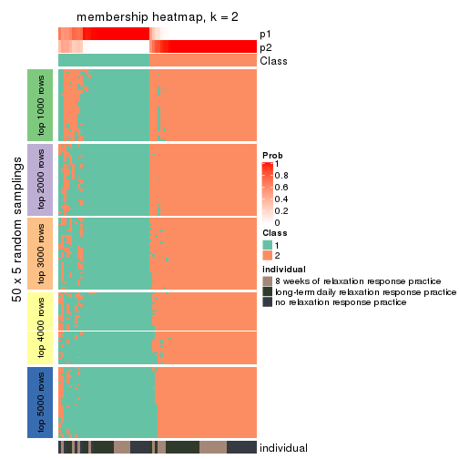
membership_heatmap(res, k = 3)
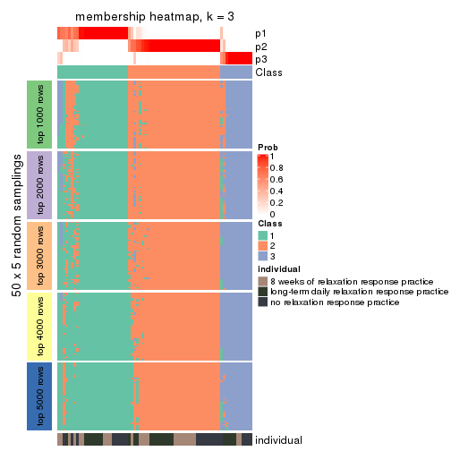
membership_heatmap(res, k = 4)
membership_heatmap(res, k = 5)
membership_heatmap(res, k = 6)
As soon as we have had the classes for columns, we can look for signatures which are significantly different between classes which can be candidate marks for certain classes. Following are the heatmaps for signatures.
Signature heatmaps where rows are scaled:
get_signatures(res, k = 2)
get_signatures(res, k = 3)
get_signatures(res, k = 4)
get_signatures(res, k = 5)

get_signatures(res, k = 6)
Signature heatmaps where rows are not scaled:
get_signatures(res, k = 2, scale_rows = FALSE)
get_signatures(res, k = 3, scale_rows = FALSE)

get_signatures(res, k = 4, scale_rows = FALSE)
get_signatures(res, k = 5, scale_rows = FALSE)
get_signatures(res, k = 6, scale_rows = FALSE)

Compare the overlap of signatures from different k:
compare_signatures(res)
get_signature() returns a data frame invisibly. TO get the list of signatures, the function
call should be assigned to a variable explicitly. In following code, if plot argument is set
to FALSE, no heatmap is plotted while only the differential analysis is performed.
# code only for demonstration
tb = get_signature(res, k = ..., plot = FALSE)
An example of the output of tb is:
#> which_row fdr mean_1 mean_2 scaled_mean_1 scaled_mean_2 km
#> 1 38 0.042760348 8.373488 9.131774 -0.5533452 0.5164555 1
#> 2 40 0.018707592 7.106213 8.469186 -0.6173731 0.5762149 1
#> 3 55 0.019134737 10.221463 11.207825 -0.6159697 0.5749050 1
#> 4 59 0.006059896 5.921854 7.869574 -0.6899429 0.6439467 1
#> 5 60 0.018055526 8.928898 10.211722 -0.6204761 0.5791110 1
#> 6 98 0.009384629 15.714769 14.887706 0.6635654 -0.6193277 2
...
The columns in tb are:
which_row: row indices corresponding to the input matrix.fdr: FDR for the differential test. mean_x: The mean value in group x.scaled_mean_x: The mean value in group x after rows are scaled.km: Row groups if k-means clustering is applied to rows.UMAP plot which shows how samples are separated.
dimension_reduction(res, k = 2, method = "UMAP")
dimension_reduction(res, k = 3, method = "UMAP")
dimension_reduction(res, k = 4, method = "UMAP")
dimension_reduction(res, k = 5, method = "UMAP")
dimension_reduction(res, k = 6, method = "UMAP")
Following heatmap shows how subgroups are split when increasing k:
collect_classes(res)
Test correlation between subgroups and known annotations. If the known annotation is numeric, one-way ANOVA test is applied, and if the known annotation is discrete, chi-squared contingency table test is applied.
test_to_known_factors(res)
#> n individual(p) k
#> MAD:pam 67 0.735 2
#> MAD:pam 67 0.820 3
#> MAD:pam 67 0.970 4
#> MAD:pam 64 0.896 5
#> MAD:pam 63 0.890 6
If matrix rows can be associated to genes, consider to use GO_Enrichment(res,
...) to perform function enrichment for the signature genes.
The object with results only for a single top-value method and a single partition method can be extracted as:
res = res_list["MAD", "mclust"]
# you can also extract it by
# res = res_list["MAD:mclust"]
A summary of res and all the functions that can be applied to it:
res
#> A 'ConsensusPartition' object with k = 2, 3, 4, 5, 6.
#> On a matrix with 51941 rows and 72 columns.
#> Top rows (1000, 2000, 3000, 4000, 5000) are extracted by 'MAD' method.
#> Subgroups are detected by 'mclust' method.
#> Performed in total 1250 partitions by row resampling.
#> Best k for subgroups seems to be 2.
#>
#> Following methods can be applied to this 'ConsensusPartition' object:
#> [1] "cola_report" "collect_classes" "collect_plots"
#> [4] "collect_stats" "colnames" "compare_signatures"
#> [7] "consensus_heatmap" "dimension_reduction" "functional_enrichment"
#> [10] "get_anno_col" "get_anno" "get_classes"
#> [13] "get_consensus" "get_matrix" "get_membership"
#> [16] "get_param" "get_signatures" "get_stats"
#> [19] "is_best_k" "is_stable_k" "membership_heatmap"
#> [22] "ncol" "nrow" "plot_ecdf"
#> [25] "rownames" "select_partition_number" "show"
#> [28] "suggest_best_k" "test_to_known_factors"
collect_plots() function collects all the plots made from res for all k (number of partitions)
into one single page to provide an easy and fast comparison between different k.
collect_plots(res)
The plots are:
k and the heatmap of
predicted classes for each k.k.k.k.All the plots in panels can be made by individual functions and they are plotted later in this section.
select_partition_number() produces several plots showing different
statistics for choosing “optimized” k. There are following statistics:
k;k, the area increased is defined as \(A_k - A_{k-1}\).The detailed explanations of these statistics can be found in the cola vignette.
Generally speaking, lower PAC score, higher mean silhouette score or higher
concordance corresponds to better partition. Rand index and Jaccard index
measure how similar the current partition is compared to partition with k-1.
If they are too similar, we won't accept k is better than k-1.
select_partition_number(res)
The numeric values for all these statistics can be obtained by get_stats().
get_stats(res)
#> k 1-PAC mean_silhouette concordance area_increased Rand Jaccard
#> 2 2 1.000 0.993 0.997 0.2675 0.737 0.737
#> 3 3 0.661 0.891 0.926 1.2000 0.664 0.545
#> 4 4 0.655 0.781 0.871 0.1447 0.914 0.788
#> 5 5 0.578 0.530 0.753 0.0831 0.963 0.888
#> 6 6 0.617 0.598 0.712 0.0644 0.890 0.651
suggest_best_k() suggests the best \(k\) based on these statistics. The rules are as follows:
NA.suggest_best_k(res)
#> [1] 2
Following shows the table of the partitions (You need to click the show/hide
code output link to see it). The membership matrix (columns with name p*)
is inferred by
clue::cl_consensus()
function with the SE method. Basically the value in the membership matrix
represents the probability to belong to a certain group. The finall class
label for an item is determined with the group with highest probability it
belongs to.
In get_classes() function, the entropy is calculated from the membership
matrix and the silhouette score is calculated from the consensus matrix.
cbind(get_classes(res, k = 2), get_membership(res, k = 2))
#> class entropy silhouette p1 p2
#> GSM253663 1 0.000 0.996 1.000 0.000
#> GSM253664 1 0.000 0.996 1.000 0.000
#> GSM253665 1 0.000 0.996 1.000 0.000
#> GSM253666 1 0.000 0.996 1.000 0.000
#> GSM253667 1 0.000 0.996 1.000 0.000
#> GSM253668 1 0.000 0.996 1.000 0.000
#> GSM253669 1 0.000 0.996 1.000 0.000
#> GSM253670 1 0.000 0.996 1.000 0.000
#> GSM253671 1 0.000 0.996 1.000 0.000
#> GSM253672 1 0.000 0.996 1.000 0.000
#> GSM253673 1 0.000 0.996 1.000 0.000
#> GSM253674 1 0.000 0.996 1.000 0.000
#> GSM253675 1 0.000 0.996 1.000 0.000
#> GSM253676 1 0.000 0.996 1.000 0.000
#> GSM253677 1 0.000 0.996 1.000 0.000
#> GSM253678 1 0.000 0.996 1.000 0.000
#> GSM253679 1 0.000 0.996 1.000 0.000
#> GSM253680 1 0.000 0.996 1.000 0.000
#> GSM253681 1 0.000 0.996 1.000 0.000
#> GSM253682 2 0.000 1.000 0.000 1.000
#> GSM253683 2 0.000 1.000 0.000 1.000
#> GSM253684 2 0.000 1.000 0.000 1.000
#> GSM253685 2 0.000 1.000 0.000 1.000
#> GSM253686 1 0.000 0.996 1.000 0.000
#> GSM253687 1 0.000 0.996 1.000 0.000
#> GSM253688 1 0.000 0.996 1.000 0.000
#> GSM253689 1 0.000 0.996 1.000 0.000
#> GSM253690 1 0.000 0.996 1.000 0.000
#> GSM253691 1 0.000 0.996 1.000 0.000
#> GSM253692 1 0.000 0.996 1.000 0.000
#> GSM253693 1 0.000 0.996 1.000 0.000
#> GSM253694 1 0.000 0.996 1.000 0.000
#> GSM253695 1 0.000 0.996 1.000 0.000
#> GSM253696 1 0.000 0.996 1.000 0.000
#> GSM253697 1 0.000 0.996 1.000 0.000
#> GSM253698 1 0.000 0.996 1.000 0.000
#> GSM253699 1 0.000 0.996 1.000 0.000
#> GSM253700 1 0.000 0.996 1.000 0.000
#> GSM253701 1 0.000 0.996 1.000 0.000
#> GSM253702 1 0.000 0.996 1.000 0.000
#> GSM253703 1 0.000 0.996 1.000 0.000
#> GSM253704 1 0.000 0.996 1.000 0.000
#> GSM253705 1 0.000 0.996 1.000 0.000
#> GSM253706 2 0.000 1.000 0.000 1.000
#> GSM253707 2 0.000 1.000 0.000 1.000
#> GSM253708 2 0.000 1.000 0.000 1.000
#> GSM253709 1 0.000 0.996 1.000 0.000
#> GSM253710 1 0.000 0.996 1.000 0.000
#> GSM253711 1 0.000 0.996 1.000 0.000
#> GSM253712 1 0.000 0.996 1.000 0.000
#> GSM253713 1 0.000 0.996 1.000 0.000
#> GSM253714 1 0.000 0.996 1.000 0.000
#> GSM253715 1 0.000 0.996 1.000 0.000
#> GSM253716 1 0.000 0.996 1.000 0.000
#> GSM253717 1 0.000 0.996 1.000 0.000
#> GSM253718 1 0.000 0.996 1.000 0.000
#> GSM253719 1 0.000 0.996 1.000 0.000
#> GSM253720 1 0.000 0.996 1.000 0.000
#> GSM253721 1 0.000 0.996 1.000 0.000
#> GSM253722 1 0.000 0.996 1.000 0.000
#> GSM253723 1 0.767 0.711 0.776 0.224
#> GSM253724 1 0.000 0.996 1.000 0.000
#> GSM253725 1 0.000 0.996 1.000 0.000
#> GSM253726 1 0.000 0.996 1.000 0.000
#> GSM253727 1 0.000 0.996 1.000 0.000
#> GSM253728 1 0.000 0.996 1.000 0.000
#> GSM253729 2 0.000 1.000 0.000 1.000
#> GSM253730 2 0.000 1.000 0.000 1.000
#> GSM253731 2 0.000 1.000 0.000 1.000
#> GSM253732 2 0.000 1.000 0.000 1.000
#> GSM253733 1 0.000 0.996 1.000 0.000
#> GSM253734 1 0.000 0.996 1.000 0.000
cbind(get_classes(res, k = 3), get_membership(res, k = 3))
#> class entropy silhouette p1 p2 p3
#> GSM253663 1 0.2711 0.910 0.912 0.088 0.000
#> GSM253664 1 0.4291 0.873 0.820 0.180 0.000
#> GSM253665 1 0.2711 0.910 0.912 0.088 0.000
#> GSM253666 1 0.5497 0.746 0.708 0.292 0.000
#> GSM253667 1 0.3267 0.851 0.884 0.116 0.000
#> GSM253668 2 0.0000 0.924 0.000 1.000 0.000
#> GSM253669 2 0.0237 0.924 0.004 0.996 0.000
#> GSM253670 2 0.3879 0.837 0.152 0.848 0.000
#> GSM253671 2 0.2165 0.904 0.064 0.936 0.000
#> GSM253672 1 0.5926 0.564 0.644 0.356 0.000
#> GSM253673 2 0.0237 0.924 0.004 0.996 0.000
#> GSM253674 2 0.0237 0.924 0.004 0.996 0.000
#> GSM253675 2 0.0000 0.924 0.000 1.000 0.000
#> GSM253676 2 0.0747 0.923 0.016 0.984 0.000
#> GSM253677 2 0.2356 0.904 0.072 0.928 0.000
#> GSM253678 2 0.0000 0.924 0.000 1.000 0.000
#> GSM253679 1 0.2356 0.907 0.928 0.072 0.000
#> GSM253680 2 0.0237 0.924 0.004 0.996 0.000
#> GSM253681 1 0.0237 0.860 0.996 0.004 0.000
#> GSM253682 3 0.0000 1.000 0.000 0.000 1.000
#> GSM253683 3 0.0000 1.000 0.000 0.000 1.000
#> GSM253684 3 0.0237 0.996 0.004 0.000 0.996
#> GSM253685 3 0.0000 1.000 0.000 0.000 1.000
#> GSM253686 1 0.3619 0.899 0.864 0.136 0.000
#> GSM253687 1 0.3340 0.905 0.880 0.120 0.000
#> GSM253688 1 0.3816 0.893 0.852 0.148 0.000
#> GSM253689 2 0.5016 0.638 0.240 0.760 0.000
#> GSM253690 2 0.4887 0.733 0.228 0.772 0.000
#> GSM253691 2 0.0237 0.924 0.004 0.996 0.000
#> GSM253692 2 0.0237 0.924 0.004 0.996 0.000
#> GSM253693 2 0.0000 0.924 0.000 1.000 0.000
#> GSM253694 2 0.1860 0.911 0.052 0.948 0.000
#> GSM253695 2 0.5968 0.390 0.364 0.636 0.000
#> GSM253696 1 0.2261 0.906 0.932 0.068 0.000
#> GSM253697 2 0.0000 0.924 0.000 1.000 0.000
#> GSM253698 2 0.0000 0.924 0.000 1.000 0.000
#> GSM253699 2 0.0237 0.924 0.004 0.996 0.000
#> GSM253700 2 0.3941 0.858 0.156 0.844 0.000
#> GSM253701 1 0.0892 0.875 0.980 0.020 0.000
#> GSM253702 1 0.3816 0.894 0.852 0.148 0.000
#> GSM253703 2 0.0237 0.924 0.004 0.996 0.000
#> GSM253704 2 0.3816 0.862 0.148 0.852 0.000
#> GSM253705 2 0.3619 0.854 0.136 0.864 0.000
#> GSM253706 3 0.0000 1.000 0.000 0.000 1.000
#> GSM253707 3 0.0000 1.000 0.000 0.000 1.000
#> GSM253708 3 0.0000 1.000 0.000 0.000 1.000
#> GSM253709 2 0.4887 0.802 0.228 0.772 0.000
#> GSM253710 1 0.2711 0.910 0.912 0.088 0.000
#> GSM253711 1 0.1964 0.898 0.944 0.056 0.000
#> GSM253712 1 0.2711 0.910 0.912 0.088 0.000
#> GSM253713 1 0.2959 0.909 0.900 0.100 0.000
#> GSM253714 2 0.0237 0.924 0.004 0.996 0.000
#> GSM253715 1 0.2165 0.903 0.936 0.064 0.000
#> GSM253716 2 0.3816 0.862 0.148 0.852 0.000
#> GSM253717 2 0.2165 0.904 0.064 0.936 0.000
#> GSM253718 2 0.0000 0.924 0.000 1.000 0.000
#> GSM253719 2 0.1860 0.914 0.052 0.948 0.000
#> GSM253720 2 0.0237 0.924 0.004 0.996 0.000
#> GSM253721 2 0.0237 0.924 0.004 0.996 0.000
#> GSM253722 2 0.0000 0.924 0.000 1.000 0.000
#> GSM253723 1 0.1289 0.839 0.968 0.000 0.032
#> GSM253724 2 0.3816 0.862 0.148 0.852 0.000
#> GSM253725 2 0.4555 0.771 0.200 0.800 0.000
#> GSM253726 1 0.4842 0.813 0.776 0.224 0.000
#> GSM253727 2 0.2537 0.902 0.080 0.920 0.000
#> GSM253728 2 0.0000 0.924 0.000 1.000 0.000
#> GSM253729 3 0.0000 1.000 0.000 0.000 1.000
#> GSM253730 3 0.0000 1.000 0.000 0.000 1.000
#> GSM253731 3 0.0000 1.000 0.000 0.000 1.000
#> GSM253732 3 0.0000 1.000 0.000 0.000 1.000
#> GSM253733 1 0.0000 0.855 1.000 0.000 0.000
#> GSM253734 2 0.4654 0.818 0.208 0.792 0.000
cbind(get_classes(res, k = 4), get_membership(res, k = 4))
#> class entropy silhouette p1 p2 p3 p4
#> GSM253663 1 0.1406 0.868 0.960 0.024 0.000 0.016
#> GSM253664 1 0.4036 0.842 0.836 0.076 0.000 0.088
#> GSM253665 1 0.1297 0.864 0.964 0.020 0.000 0.016
#> GSM253666 1 0.5596 0.628 0.696 0.236 0.000 0.068
#> GSM253667 4 0.6158 0.367 0.384 0.056 0.000 0.560
#> GSM253668 2 0.0188 0.845 0.000 0.996 0.000 0.004
#> GSM253669 2 0.1890 0.838 0.008 0.936 0.000 0.056
#> GSM253670 2 0.6500 0.464 0.260 0.620 0.000 0.120
#> GSM253671 2 0.2840 0.834 0.044 0.900 0.000 0.056
#> GSM253672 1 0.6013 0.574 0.684 0.196 0.000 0.120
#> GSM253673 2 0.2131 0.843 0.036 0.932 0.000 0.032
#> GSM253674 2 0.1211 0.841 0.000 0.960 0.000 0.040
#> GSM253675 2 0.0707 0.847 0.000 0.980 0.000 0.020
#> GSM253676 2 0.2494 0.840 0.036 0.916 0.000 0.048
#> GSM253677 2 0.4163 0.781 0.096 0.828 0.000 0.076
#> GSM253678 2 0.1118 0.844 0.000 0.964 0.000 0.036
#> GSM253679 1 0.2266 0.856 0.912 0.004 0.000 0.084
#> GSM253680 2 0.1297 0.850 0.020 0.964 0.000 0.016
#> GSM253681 1 0.2329 0.834 0.916 0.012 0.000 0.072
#> GSM253682 3 0.0000 0.988 0.000 0.000 1.000 0.000
#> GSM253683 3 0.0000 0.988 0.000 0.000 1.000 0.000
#> GSM253684 3 0.1833 0.955 0.024 0.000 0.944 0.032
#> GSM253685 3 0.0000 0.988 0.000 0.000 1.000 0.000
#> GSM253686 1 0.3247 0.854 0.880 0.060 0.000 0.060
#> GSM253687 1 0.3716 0.839 0.852 0.052 0.000 0.096
#> GSM253688 1 0.3323 0.852 0.876 0.060 0.000 0.064
#> GSM253689 2 0.5416 0.541 0.260 0.692 0.000 0.048
#> GSM253690 2 0.6050 0.555 0.232 0.668 0.000 0.100
#> GSM253691 2 0.2319 0.840 0.036 0.924 0.000 0.040
#> GSM253692 2 0.2319 0.840 0.036 0.924 0.000 0.040
#> GSM253693 2 0.0804 0.849 0.008 0.980 0.000 0.012
#> GSM253694 2 0.2593 0.825 0.016 0.904 0.000 0.080
#> GSM253695 2 0.6784 0.232 0.368 0.528 0.000 0.104
#> GSM253696 1 0.1792 0.849 0.932 0.000 0.000 0.068
#> GSM253697 2 0.0707 0.846 0.000 0.980 0.000 0.020
#> GSM253698 2 0.0817 0.845 0.000 0.976 0.000 0.024
#> GSM253699 2 0.2227 0.844 0.036 0.928 0.000 0.036
#> GSM253700 4 0.4553 0.704 0.040 0.180 0.000 0.780
#> GSM253701 1 0.2647 0.824 0.880 0.000 0.000 0.120
#> GSM253702 1 0.3761 0.839 0.852 0.068 0.000 0.080
#> GSM253703 2 0.0336 0.847 0.000 0.992 0.000 0.008
#> GSM253704 4 0.5590 0.279 0.020 0.456 0.000 0.524
#> GSM253705 2 0.5836 0.611 0.188 0.700 0.000 0.112
#> GSM253706 3 0.1118 0.970 0.000 0.000 0.964 0.036
#> GSM253707 3 0.0000 0.988 0.000 0.000 1.000 0.000
#> GSM253708 3 0.0000 0.988 0.000 0.000 1.000 0.000
#> GSM253709 4 0.5515 0.683 0.152 0.116 0.000 0.732
#> GSM253710 1 0.1411 0.865 0.960 0.020 0.000 0.020
#> GSM253711 1 0.1767 0.832 0.944 0.012 0.000 0.044
#> GSM253712 1 0.1388 0.867 0.960 0.028 0.000 0.012
#> GSM253713 1 0.2844 0.863 0.900 0.048 0.000 0.052
#> GSM253714 2 0.1584 0.848 0.036 0.952 0.000 0.012
#> GSM253715 1 0.1767 0.832 0.944 0.012 0.000 0.044
#> GSM253716 2 0.5440 0.141 0.020 0.596 0.000 0.384
#> GSM253717 2 0.2840 0.834 0.044 0.900 0.000 0.056
#> GSM253718 2 0.0188 0.846 0.000 0.996 0.000 0.004
#> GSM253719 2 0.1661 0.835 0.004 0.944 0.000 0.052
#> GSM253720 2 0.2036 0.846 0.032 0.936 0.000 0.032
#> GSM253721 2 0.1452 0.843 0.008 0.956 0.000 0.036
#> GSM253722 2 0.0188 0.845 0.000 0.996 0.000 0.004
#> GSM253723 4 0.5973 0.400 0.332 0.000 0.056 0.612
#> GSM253724 4 0.5231 0.607 0.028 0.296 0.000 0.676
#> GSM253725 2 0.7046 0.258 0.340 0.524 0.000 0.136
#> GSM253726 1 0.4840 0.762 0.784 0.100 0.000 0.116
#> GSM253727 2 0.5330 0.684 0.120 0.748 0.000 0.132
#> GSM253728 2 0.1118 0.842 0.000 0.964 0.000 0.036
#> GSM253729 3 0.0000 0.988 0.000 0.000 1.000 0.000
#> GSM253730 3 0.0000 0.988 0.000 0.000 1.000 0.000
#> GSM253731 3 0.1118 0.970 0.000 0.000 0.964 0.036
#> GSM253732 3 0.0000 0.988 0.000 0.000 1.000 0.000
#> GSM253733 1 0.2589 0.827 0.884 0.000 0.000 0.116
#> GSM253734 4 0.5724 0.693 0.144 0.140 0.000 0.716
cbind(get_classes(res, k = 5), get_membership(res, k = 5))
#> class entropy silhouette p1 p2 p3 p4 p5
#> GSM253663 1 0.2677 0.43882 0.896 0.020 0.000 0.064 0.020
#> GSM253664 1 0.2395 0.46685 0.904 0.072 0.000 0.008 0.016
#> GSM253665 1 0.5096 -0.31693 0.500 0.016 0.000 0.472 0.012
#> GSM253666 1 0.3787 0.42052 0.800 0.168 0.000 0.012 0.020
#> GSM253667 1 0.5712 0.27401 0.704 0.064 0.000 0.096 0.136
#> GSM253668 2 0.0566 0.69131 0.000 0.984 0.000 0.004 0.012
#> GSM253669 2 0.2515 0.67800 0.032 0.908 0.000 0.040 0.020
#> GSM253670 2 0.6873 0.20965 0.284 0.528 0.000 0.148 0.040
#> GSM253671 2 0.5806 0.41608 0.032 0.600 0.000 0.052 0.316
#> GSM253672 1 0.7452 0.21108 0.400 0.296 0.000 0.268 0.036
#> GSM253673 2 0.4525 0.58943 0.028 0.764 0.000 0.036 0.172
#> GSM253674 2 0.1728 0.69071 0.004 0.940 0.000 0.036 0.020
#> GSM253675 2 0.1173 0.69367 0.004 0.964 0.000 0.012 0.020
#> GSM253676 2 0.5165 0.52190 0.036 0.688 0.000 0.032 0.244
#> GSM253677 2 0.6003 0.20416 0.032 0.504 0.000 0.048 0.416
#> GSM253678 2 0.1954 0.68782 0.008 0.932 0.000 0.032 0.028
#> GSM253679 1 0.6430 -0.00105 0.460 0.056 0.000 0.432 0.052
#> GSM253680 2 0.1549 0.69275 0.016 0.944 0.000 0.000 0.040
#> GSM253681 4 0.5455 0.49731 0.388 0.016 0.000 0.560 0.036
#> GSM253682 3 0.0000 0.98599 0.000 0.000 1.000 0.000 0.000
#> GSM253683 3 0.0000 0.98599 0.000 0.000 1.000 0.000 0.000
#> GSM253684 3 0.1710 0.95925 0.024 0.000 0.944 0.020 0.012
#> GSM253685 3 0.0898 0.97431 0.000 0.000 0.972 0.008 0.020
#> GSM253686 1 0.2100 0.47202 0.924 0.048 0.000 0.012 0.016
#> GSM253687 1 0.6592 0.23207 0.496 0.112 0.000 0.364 0.028
#> GSM253688 1 0.2291 0.47344 0.916 0.048 0.000 0.012 0.024
#> GSM253689 2 0.5114 0.49746 0.188 0.720 0.000 0.068 0.024
#> GSM253690 2 0.6441 0.26723 0.304 0.560 0.000 0.100 0.036
#> GSM253691 2 0.2515 0.69106 0.032 0.908 0.000 0.040 0.020
#> GSM253692 2 0.2610 0.68984 0.036 0.904 0.000 0.036 0.024
#> GSM253693 2 0.1173 0.69644 0.012 0.964 0.000 0.004 0.020
#> GSM253694 2 0.5190 0.37089 0.020 0.612 0.000 0.024 0.344
#> GSM253695 2 0.6399 0.14799 0.380 0.508 0.000 0.072 0.040
#> GSM253696 4 0.4290 0.66344 0.304 0.000 0.000 0.680 0.016
#> GSM253697 2 0.1697 0.67380 0.000 0.932 0.000 0.008 0.060
#> GSM253698 2 0.0968 0.69350 0.004 0.972 0.000 0.012 0.012
#> GSM253699 2 0.4426 0.58549 0.024 0.760 0.000 0.028 0.188
#> GSM253700 5 0.5816 0.76389 0.036 0.288 0.000 0.056 0.620
#> GSM253701 4 0.4681 0.71839 0.252 0.000 0.000 0.696 0.052
#> GSM253702 1 0.6068 0.16520 0.504 0.064 0.000 0.408 0.024
#> GSM253703 2 0.1121 0.68502 0.000 0.956 0.000 0.000 0.044
#> GSM253704 5 0.4497 0.56418 0.008 0.424 0.000 0.000 0.568
#> GSM253705 2 0.6818 0.21657 0.300 0.540 0.000 0.088 0.072
#> GSM253706 3 0.1630 0.96231 0.004 0.000 0.944 0.016 0.036
#> GSM253707 3 0.0000 0.98599 0.000 0.000 1.000 0.000 0.000
#> GSM253708 3 0.0000 0.98599 0.000 0.000 1.000 0.000 0.000
#> GSM253709 5 0.6303 0.66201 0.076 0.156 0.000 0.116 0.652
#> GSM253710 1 0.4493 0.15180 0.700 0.016 0.000 0.272 0.012
#> GSM253711 1 0.3405 0.36211 0.848 0.020 0.000 0.108 0.024
#> GSM253712 1 0.4970 -0.09722 0.580 0.020 0.000 0.392 0.008
#> GSM253713 1 0.5695 -0.02408 0.480 0.040 0.000 0.460 0.020
#> GSM253714 2 0.1869 0.69631 0.028 0.936 0.000 0.028 0.008
#> GSM253715 1 0.3739 0.33060 0.820 0.020 0.000 0.136 0.024
#> GSM253716 2 0.4704 -0.49041 0.004 0.508 0.000 0.008 0.480
#> GSM253717 2 0.5547 0.39873 0.028 0.600 0.000 0.036 0.336
#> GSM253718 2 0.1331 0.68096 0.000 0.952 0.000 0.008 0.040
#> GSM253719 2 0.2681 0.63314 0.004 0.876 0.000 0.012 0.108
#> GSM253720 2 0.2072 0.69339 0.036 0.928 0.000 0.020 0.016
#> GSM253721 2 0.3174 0.62924 0.004 0.844 0.000 0.020 0.132
#> GSM253722 2 0.1281 0.68812 0.000 0.956 0.000 0.012 0.032
#> GSM253723 4 0.6197 0.48853 0.124 0.000 0.040 0.636 0.200
#> GSM253724 5 0.4954 0.68703 0.012 0.380 0.000 0.016 0.592
#> GSM253725 2 0.6944 0.22595 0.244 0.544 0.000 0.164 0.048
#> GSM253726 1 0.7325 0.22804 0.420 0.212 0.000 0.332 0.036
#> GSM253727 2 0.7047 -0.03244 0.140 0.508 0.000 0.052 0.300
#> GSM253728 2 0.1597 0.69096 0.008 0.948 0.000 0.020 0.024
#> GSM253729 3 0.0000 0.98599 0.000 0.000 1.000 0.000 0.000
#> GSM253730 3 0.0000 0.98599 0.000 0.000 1.000 0.000 0.000
#> GSM253731 3 0.1179 0.97269 0.004 0.000 0.964 0.016 0.016
#> GSM253732 3 0.0000 0.98599 0.000 0.000 1.000 0.000 0.000
#> GSM253733 4 0.4465 0.71125 0.212 0.000 0.000 0.732 0.056
#> GSM253734 5 0.6608 0.71728 0.076 0.200 0.000 0.112 0.612
cbind(get_classes(res, k = 6), get_membership(res, k = 6))
#> class entropy silhouette p1 p2 p3 p4 p5 p6
#> GSM253663 4 0.3510 0.6427 0.136 0.000 0.000 0.812 0.020 0.032
#> GSM253664 4 0.5056 0.6266 0.176 0.072 0.000 0.708 0.028 0.016
#> GSM253665 4 0.5934 0.1152 0.124 0.000 0.000 0.440 0.020 0.416
#> GSM253666 4 0.5717 0.5128 0.200 0.168 0.000 0.608 0.004 0.020
#> GSM253667 4 0.5511 0.5954 0.120 0.024 0.000 0.700 0.096 0.060
#> GSM253668 2 0.1065 0.6802 0.008 0.964 0.000 0.000 0.020 0.008
#> GSM253669 2 0.3281 0.5281 0.168 0.808 0.000 0.008 0.008 0.008
#> GSM253670 1 0.4978 0.6892 0.560 0.384 0.000 0.024 0.000 0.032
#> GSM253671 2 0.6292 0.3366 0.388 0.444 0.000 0.008 0.136 0.024
#> GSM253672 1 0.5772 0.6748 0.576 0.280 0.000 0.036 0.000 0.108
#> GSM253673 2 0.6194 0.5260 0.232 0.596 0.000 0.024 0.104 0.044
#> GSM253674 2 0.2418 0.6246 0.096 0.884 0.000 0.008 0.008 0.004
#> GSM253675 2 0.1925 0.6562 0.060 0.920 0.000 0.008 0.008 0.004
#> GSM253676 2 0.6058 0.4522 0.316 0.532 0.000 0.012 0.120 0.020
#> GSM253677 2 0.6704 0.2588 0.372 0.408 0.000 0.004 0.168 0.048
#> GSM253678 2 0.2069 0.6490 0.068 0.908 0.000 0.000 0.020 0.004
#> GSM253679 6 0.7310 0.1018 0.348 0.084 0.000 0.124 0.032 0.412
#> GSM253680 2 0.1716 0.6847 0.028 0.932 0.000 0.004 0.036 0.000
#> GSM253681 6 0.5334 0.5245 0.036 0.012 0.000 0.224 0.064 0.664
#> GSM253682 3 0.0000 0.9784 0.000 0.000 1.000 0.000 0.000 0.000
#> GSM253683 3 0.0000 0.9784 0.000 0.000 1.000 0.000 0.000 0.000
#> GSM253684 3 0.2407 0.9290 0.008 0.000 0.904 0.048 0.016 0.024
#> GSM253685 3 0.0653 0.9716 0.004 0.000 0.980 0.000 0.004 0.012
#> GSM253686 4 0.3806 0.6241 0.240 0.012 0.000 0.736 0.004 0.008
#> GSM253687 1 0.6661 0.3697 0.516 0.152 0.000 0.096 0.000 0.236
#> GSM253688 4 0.3764 0.6135 0.256 0.012 0.000 0.724 0.000 0.008
#> GSM253689 2 0.5417 0.0592 0.304 0.604 0.000 0.036 0.008 0.048
#> GSM253690 1 0.4963 0.5958 0.512 0.440 0.000 0.032 0.004 0.012
#> GSM253691 2 0.3724 0.6163 0.108 0.820 0.000 0.020 0.016 0.036
#> GSM253692 2 0.3988 0.5712 0.144 0.788 0.000 0.024 0.008 0.036
#> GSM253693 2 0.1176 0.6832 0.020 0.956 0.000 0.000 0.024 0.000
#> GSM253694 2 0.6191 0.2763 0.312 0.468 0.000 0.000 0.204 0.016
#> GSM253695 1 0.5491 0.6111 0.484 0.420 0.000 0.080 0.000 0.016
#> GSM253696 6 0.3861 0.6038 0.060 0.000 0.000 0.144 0.012 0.784
#> GSM253697 2 0.1845 0.6769 0.008 0.916 0.000 0.000 0.072 0.004
#> GSM253698 2 0.1851 0.6578 0.056 0.924 0.000 0.004 0.012 0.004
#> GSM253699 2 0.5409 0.5349 0.252 0.628 0.000 0.008 0.096 0.016
#> GSM253700 5 0.4030 0.7372 0.068 0.104 0.000 0.004 0.796 0.028
#> GSM253701 6 0.3344 0.6373 0.040 0.000 0.000 0.088 0.032 0.840
#> GSM253702 1 0.6289 -0.1648 0.468 0.052 0.000 0.116 0.000 0.364
#> GSM253703 2 0.1921 0.6803 0.032 0.916 0.000 0.000 0.052 0.000
#> GSM253704 5 0.4201 0.7288 0.036 0.236 0.000 0.000 0.716 0.012
#> GSM253705 1 0.5598 0.6524 0.516 0.400 0.000 0.016 0.028 0.040
#> GSM253706 3 0.1946 0.9493 0.004 0.000 0.928 0.024 0.024 0.020
#> GSM253707 3 0.0000 0.9784 0.000 0.000 1.000 0.000 0.000 0.000
#> GSM253708 3 0.0000 0.9784 0.000 0.000 1.000 0.000 0.000 0.000
#> GSM253709 5 0.4871 0.6171 0.180 0.024 0.000 0.004 0.708 0.084
#> GSM253710 4 0.5478 0.4370 0.104 0.000 0.000 0.592 0.020 0.284
#> GSM253711 4 0.4092 0.6062 0.044 0.016 0.000 0.808 0.056 0.076
#> GSM253712 4 0.6037 0.2972 0.164 0.000 0.000 0.480 0.016 0.340
#> GSM253713 6 0.6401 0.3113 0.340 0.044 0.000 0.152 0.000 0.464
#> GSM253714 2 0.3444 0.6506 0.084 0.844 0.000 0.024 0.016 0.032
#> GSM253715 4 0.4146 0.6074 0.036 0.020 0.000 0.804 0.056 0.084
#> GSM253716 5 0.4034 0.6338 0.004 0.336 0.000 0.000 0.648 0.012
#> GSM253717 2 0.6147 0.3406 0.376 0.452 0.000 0.004 0.152 0.016
#> GSM253718 2 0.1605 0.6806 0.016 0.936 0.000 0.000 0.044 0.004
#> GSM253719 2 0.2905 0.6390 0.012 0.836 0.000 0.000 0.144 0.008
#> GSM253720 2 0.2368 0.6374 0.092 0.888 0.000 0.004 0.008 0.008
#> GSM253721 2 0.4368 0.5979 0.180 0.740 0.000 0.004 0.064 0.012
#> GSM253722 2 0.2542 0.6779 0.048 0.896 0.000 0.008 0.036 0.012
#> GSM253723 6 0.4866 0.5009 0.020 0.000 0.044 0.060 0.132 0.744
#> GSM253724 5 0.3665 0.7533 0.016 0.212 0.000 0.000 0.760 0.012
#> GSM253725 1 0.5133 0.6702 0.540 0.400 0.000 0.012 0.008 0.040
#> GSM253726 1 0.6313 0.5352 0.544 0.204 0.000 0.052 0.000 0.200
#> GSM253727 2 0.6849 -0.3435 0.324 0.412 0.000 0.004 0.212 0.048
#> GSM253728 2 0.2044 0.6439 0.076 0.908 0.000 0.004 0.008 0.004
#> GSM253729 3 0.0000 0.9784 0.000 0.000 1.000 0.000 0.000 0.000
#> GSM253730 3 0.0000 0.9784 0.000 0.000 1.000 0.000 0.000 0.000
#> GSM253731 3 0.1946 0.9493 0.004 0.000 0.928 0.024 0.024 0.020
#> GSM253732 3 0.0000 0.9784 0.000 0.000 1.000 0.000 0.000 0.000
#> GSM253733 6 0.2421 0.6210 0.032 0.000 0.000 0.028 0.040 0.900
#> GSM253734 5 0.4923 0.6603 0.168 0.048 0.000 0.008 0.720 0.056
Heatmaps for the consensus matrix. It visualizes the probability of two samples to be in a same group.
consensus_heatmap(res, k = 2)
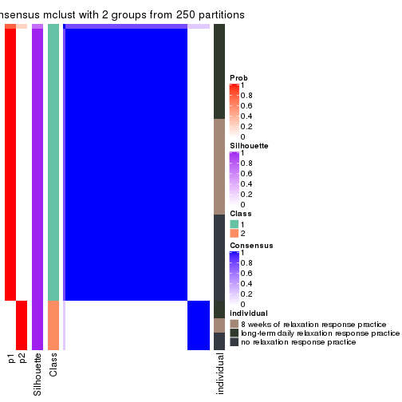
consensus_heatmap(res, k = 3)
consensus_heatmap(res, k = 4)
consensus_heatmap(res, k = 5)
consensus_heatmap(res, k = 6)
Heatmaps for the membership of samples in all partitions to see how consistent they are:
membership_heatmap(res, k = 2)

membership_heatmap(res, k = 3)
membership_heatmap(res, k = 4)
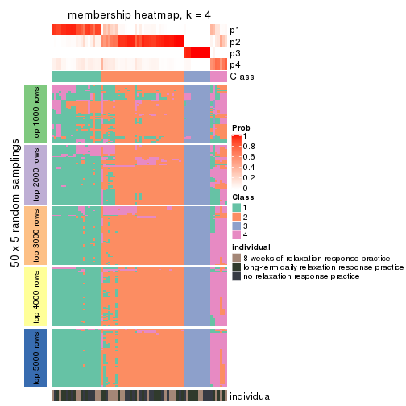
membership_heatmap(res, k = 5)
membership_heatmap(res, k = 6)

As soon as we have had the classes for columns, we can look for signatures which are significantly different between classes which can be candidate marks for certain classes. Following are the heatmaps for signatures.
Signature heatmaps where rows are scaled:
get_signatures(res, k = 2)
get_signatures(res, k = 3)
get_signatures(res, k = 4)
get_signatures(res, k = 5)
get_signatures(res, k = 6)
Signature heatmaps where rows are not scaled:
get_signatures(res, k = 2, scale_rows = FALSE)
get_signatures(res, k = 3, scale_rows = FALSE)
get_signatures(res, k = 4, scale_rows = FALSE)
get_signatures(res, k = 5, scale_rows = FALSE)
get_signatures(res, k = 6, scale_rows = FALSE)
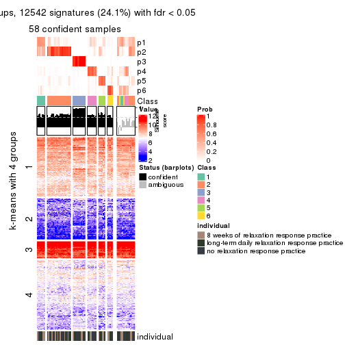
Compare the overlap of signatures from different k:
compare_signatures(res)
get_signature() returns a data frame invisibly. TO get the list of signatures, the function
call should be assigned to a variable explicitly. In following code, if plot argument is set
to FALSE, no heatmap is plotted while only the differential analysis is performed.
# code only for demonstration
tb = get_signature(res, k = ..., plot = FALSE)
An example of the output of tb is:
#> which_row fdr mean_1 mean_2 scaled_mean_1 scaled_mean_2 km
#> 1 38 0.042760348 8.373488 9.131774 -0.5533452 0.5164555 1
#> 2 40 0.018707592 7.106213 8.469186 -0.6173731 0.5762149 1
#> 3 55 0.019134737 10.221463 11.207825 -0.6159697 0.5749050 1
#> 4 59 0.006059896 5.921854 7.869574 -0.6899429 0.6439467 1
#> 5 60 0.018055526 8.928898 10.211722 -0.6204761 0.5791110 1
#> 6 98 0.009384629 15.714769 14.887706 0.6635654 -0.6193277 2
...
The columns in tb are:
which_row: row indices corresponding to the input matrix.fdr: FDR for the differential test. mean_x: The mean value in group x.scaled_mean_x: The mean value in group x after rows are scaled.km: Row groups if k-means clustering is applied to rows.UMAP plot which shows how samples are separated.
dimension_reduction(res, k = 2, method = "UMAP")
dimension_reduction(res, k = 3, method = "UMAP")
dimension_reduction(res, k = 4, method = "UMAP")
dimension_reduction(res, k = 5, method = "UMAP")
dimension_reduction(res, k = 6, method = "UMAP")
Following heatmap shows how subgroups are split when increasing k:
collect_classes(res)
Test correlation between subgroups and known annotations. If the known annotation is numeric, one-way ANOVA test is applied, and if the known annotation is discrete, chi-squared contingency table test is applied.
test_to_known_factors(res)
#> n individual(p) k
#> MAD:mclust 72 0.890 2
#> MAD:mclust 71 0.935 3
#> MAD:mclust 65 0.871 4
#> MAD:mclust 41 0.557 5
#> MAD:mclust 58 0.899 6
If matrix rows can be associated to genes, consider to use GO_Enrichment(res,
...) to perform function enrichment for the signature genes.
The object with results only for a single top-value method and a single partition method can be extracted as:
res = res_list["MAD", "NMF"]
# you can also extract it by
# res = res_list["MAD:NMF"]
A summary of res and all the functions that can be applied to it:
res
#> A 'ConsensusPartition' object with k = 2, 3, 4, 5, 6.
#> On a matrix with 51941 rows and 72 columns.
#> Top rows (1000, 2000, 3000, 4000, 5000) are extracted by 'MAD' method.
#> Subgroups are detected by 'NMF' method.
#> Performed in total 1250 partitions by row resampling.
#> Best k for subgroups seems to be 2.
#>
#> Following methods can be applied to this 'ConsensusPartition' object:
#> [1] "cola_report" "collect_classes" "collect_plots"
#> [4] "collect_stats" "colnames" "compare_signatures"
#> [7] "consensus_heatmap" "dimension_reduction" "functional_enrichment"
#> [10] "get_anno_col" "get_anno" "get_classes"
#> [13] "get_consensus" "get_matrix" "get_membership"
#> [16] "get_param" "get_signatures" "get_stats"
#> [19] "is_best_k" "is_stable_k" "membership_heatmap"
#> [22] "ncol" "nrow" "plot_ecdf"
#> [25] "rownames" "select_partition_number" "show"
#> [28] "suggest_best_k" "test_to_known_factors"
collect_plots() function collects all the plots made from res for all k (number of partitions)
into one single page to provide an easy and fast comparison between different k.
collect_plots(res)
The plots are:
k and the heatmap of
predicted classes for each k.k.k.k.All the plots in panels can be made by individual functions and they are plotted later in this section.
select_partition_number() produces several plots showing different
statistics for choosing “optimized” k. There are following statistics:
k;k, the area increased is defined as \(A_k - A_{k-1}\).The detailed explanations of these statistics can be found in the cola vignette.
Generally speaking, lower PAC score, higher mean silhouette score or higher
concordance corresponds to better partition. Rand index and Jaccard index
measure how similar the current partition is compared to partition with k-1.
If they are too similar, we won't accept k is better than k-1.
select_partition_number(res)
The numeric values for all these statistics can be obtained by get_stats().
get_stats(res)
#> k 1-PAC mean_silhouette concordance area_increased Rand Jaccard
#> 2 2 0.913 0.929 0.970 0.5018 0.499 0.499
#> 3 3 0.548 0.752 0.878 0.2664 0.845 0.699
#> 4 4 0.548 0.581 0.772 0.1544 0.798 0.512
#> 5 5 0.544 0.405 0.637 0.0885 0.802 0.390
#> 6 6 0.617 0.451 0.675 0.0453 0.847 0.418
suggest_best_k() suggests the best \(k\) based on these statistics. The rules are as follows:
NA.suggest_best_k(res)
#> [1] 2
Following shows the table of the partitions (You need to click the show/hide
code output link to see it). The membership matrix (columns with name p*)
is inferred by
clue::cl_consensus()
function with the SE method. Basically the value in the membership matrix
represents the probability to belong to a certain group. The finall class
label for an item is determined with the group with highest probability it
belongs to.
In get_classes() function, the entropy is calculated from the membership
matrix and the silhouette score is calculated from the consensus matrix.
cbind(get_classes(res, k = 2), get_membership(res, k = 2))
#> class entropy silhouette p1 p2
#> GSM253663 2 0.8386 0.645 0.268 0.732
#> GSM253664 2 0.0000 0.962 0.000 1.000
#> GSM253665 1 0.0000 0.975 1.000 0.000
#> GSM253666 2 0.0000 0.962 0.000 1.000
#> GSM253667 2 0.0000 0.962 0.000 1.000
#> GSM253668 2 0.0000 0.962 0.000 1.000
#> GSM253669 2 0.0000 0.962 0.000 1.000
#> GSM253670 1 0.0000 0.975 1.000 0.000
#> GSM253671 1 0.1184 0.965 0.984 0.016
#> GSM253672 1 0.0000 0.975 1.000 0.000
#> GSM253673 2 0.0000 0.962 0.000 1.000
#> GSM253674 2 0.0000 0.962 0.000 1.000
#> GSM253675 2 0.0000 0.962 0.000 1.000
#> GSM253676 2 0.1184 0.951 0.016 0.984
#> GSM253677 1 0.0000 0.975 1.000 0.000
#> GSM253678 2 0.0000 0.962 0.000 1.000
#> GSM253679 1 0.0000 0.975 1.000 0.000
#> GSM253680 2 0.0000 0.962 0.000 1.000
#> GSM253681 1 0.1633 0.958 0.976 0.024
#> GSM253682 1 0.6887 0.770 0.816 0.184
#> GSM253683 2 0.9909 0.218 0.444 0.556
#> GSM253684 1 0.0938 0.967 0.988 0.012
#> GSM253685 1 0.0000 0.975 1.000 0.000
#> GSM253686 2 0.2236 0.935 0.036 0.964
#> GSM253687 1 0.0000 0.975 1.000 0.000
#> GSM253688 2 0.6531 0.792 0.168 0.832
#> GSM253689 2 0.0000 0.962 0.000 1.000
#> GSM253690 2 0.9815 0.302 0.420 0.580
#> GSM253691 2 0.0000 0.962 0.000 1.000
#> GSM253692 2 0.0000 0.962 0.000 1.000
#> GSM253693 2 0.0000 0.962 0.000 1.000
#> GSM253694 2 0.2603 0.927 0.044 0.956
#> GSM253695 2 0.0672 0.957 0.008 0.992
#> GSM253696 1 0.0000 0.975 1.000 0.000
#> GSM253697 2 0.0000 0.962 0.000 1.000
#> GSM253698 2 0.0000 0.962 0.000 1.000
#> GSM253699 2 0.0000 0.962 0.000 1.000
#> GSM253700 2 0.0000 0.962 0.000 1.000
#> GSM253701 1 0.0000 0.975 1.000 0.000
#> GSM253702 1 0.0000 0.975 1.000 0.000
#> GSM253703 2 0.0000 0.962 0.000 1.000
#> GSM253704 2 0.0000 0.962 0.000 1.000
#> GSM253705 1 0.2948 0.932 0.948 0.052
#> GSM253706 1 0.0000 0.975 1.000 0.000
#> GSM253707 1 0.0000 0.975 1.000 0.000
#> GSM253708 1 0.0376 0.973 0.996 0.004
#> GSM253709 1 0.0000 0.975 1.000 0.000
#> GSM253710 1 0.0000 0.975 1.000 0.000
#> GSM253711 2 0.0000 0.962 0.000 1.000
#> GSM253712 1 0.0000 0.975 1.000 0.000
#> GSM253713 1 0.0000 0.975 1.000 0.000
#> GSM253714 2 0.0000 0.962 0.000 1.000
#> GSM253715 2 0.0000 0.962 0.000 1.000
#> GSM253716 2 0.0000 0.962 0.000 1.000
#> GSM253717 1 0.8555 0.617 0.720 0.280
#> GSM253718 2 0.0000 0.962 0.000 1.000
#> GSM253719 2 0.0000 0.962 0.000 1.000
#> GSM253720 2 0.0000 0.962 0.000 1.000
#> GSM253721 2 0.0000 0.962 0.000 1.000
#> GSM253722 2 0.0000 0.962 0.000 1.000
#> GSM253723 1 0.0000 0.975 1.000 0.000
#> GSM253724 2 0.0000 0.962 0.000 1.000
#> GSM253725 1 0.0000 0.975 1.000 0.000
#> GSM253726 1 0.0000 0.975 1.000 0.000
#> GSM253727 1 0.0376 0.973 0.996 0.004
#> GSM253728 2 0.0000 0.962 0.000 1.000
#> GSM253729 1 0.0000 0.975 1.000 0.000
#> GSM253730 1 0.0000 0.975 1.000 0.000
#> GSM253731 1 0.0000 0.975 1.000 0.000
#> GSM253732 2 0.2043 0.939 0.032 0.968
#> GSM253733 1 0.0000 0.975 1.000 0.000
#> GSM253734 1 0.6343 0.812 0.840 0.160
cbind(get_classes(res, k = 3), get_membership(res, k = 3))
#> class entropy silhouette p1 p2 p3
#> GSM253663 2 0.6235 0.312 0.436 0.564 0.000
#> GSM253664 2 0.1163 0.842 0.000 0.972 0.028
#> GSM253665 1 0.1529 0.841 0.960 0.000 0.040
#> GSM253666 2 0.0592 0.846 0.000 0.988 0.012
#> GSM253667 2 0.5216 0.641 0.000 0.740 0.260
#> GSM253668 2 0.0747 0.846 0.000 0.984 0.016
#> GSM253669 2 0.0424 0.849 0.008 0.992 0.000
#> GSM253670 1 0.1529 0.844 0.960 0.040 0.000
#> GSM253671 1 0.3816 0.751 0.852 0.148 0.000
#> GSM253672 1 0.0424 0.857 0.992 0.008 0.000
#> GSM253673 2 0.3879 0.803 0.152 0.848 0.000
#> GSM253674 2 0.1289 0.847 0.032 0.968 0.000
#> GSM253675 2 0.0424 0.847 0.000 0.992 0.008
#> GSM253676 2 0.6008 0.468 0.372 0.628 0.000
#> GSM253677 1 0.0000 0.858 1.000 0.000 0.000
#> GSM253678 2 0.0424 0.847 0.000 0.992 0.008
#> GSM253679 1 0.0892 0.854 0.980 0.000 0.020
#> GSM253680 2 0.3412 0.822 0.124 0.876 0.000
#> GSM253681 3 0.6442 0.285 0.432 0.004 0.564
#> GSM253682 3 0.1753 0.836 0.000 0.048 0.952
#> GSM253683 3 0.2165 0.826 0.000 0.064 0.936
#> GSM253684 3 0.0829 0.852 0.004 0.012 0.984
#> GSM253685 3 0.2537 0.810 0.080 0.000 0.920
#> GSM253686 2 0.4178 0.787 0.172 0.828 0.000
#> GSM253687 1 0.1411 0.846 0.964 0.036 0.000
#> GSM253688 2 0.5948 0.501 0.360 0.640 0.000
#> GSM253689 2 0.3192 0.827 0.112 0.888 0.000
#> GSM253690 1 0.6204 0.174 0.576 0.424 0.000
#> GSM253691 2 0.3551 0.816 0.132 0.868 0.000
#> GSM253692 2 0.3816 0.806 0.148 0.852 0.000
#> GSM253693 2 0.1753 0.846 0.048 0.952 0.000
#> GSM253694 2 0.3573 0.826 0.120 0.876 0.004
#> GSM253695 2 0.3551 0.818 0.132 0.868 0.000
#> GSM253696 1 0.2625 0.801 0.916 0.000 0.084
#> GSM253697 2 0.1643 0.835 0.000 0.956 0.044
#> GSM253698 2 0.0000 0.848 0.000 1.000 0.000
#> GSM253699 2 0.3879 0.804 0.152 0.848 0.000
#> GSM253700 2 0.5882 0.490 0.000 0.652 0.348
#> GSM253701 1 0.4002 0.712 0.840 0.000 0.160
#> GSM253702 1 0.0592 0.857 0.988 0.000 0.012
#> GSM253703 2 0.0424 0.848 0.000 0.992 0.008
#> GSM253704 2 0.4346 0.732 0.000 0.816 0.184
#> GSM253705 1 0.4346 0.712 0.816 0.184 0.000
#> GSM253706 3 0.6140 0.362 0.404 0.000 0.596
#> GSM253707 3 0.0237 0.851 0.000 0.004 0.996
#> GSM253708 3 0.0592 0.850 0.000 0.012 0.988
#> GSM253709 1 0.5873 0.450 0.684 0.004 0.312
#> GSM253710 1 0.0424 0.857 0.992 0.008 0.000
#> GSM253711 2 0.5591 0.581 0.000 0.696 0.304
#> GSM253712 1 0.1031 0.852 0.976 0.000 0.024
#> GSM253713 1 0.0747 0.856 0.984 0.000 0.016
#> GSM253714 2 0.4504 0.761 0.196 0.804 0.000
#> GSM253715 2 0.5650 0.567 0.000 0.688 0.312
#> GSM253716 2 0.4002 0.753 0.000 0.840 0.160
#> GSM253717 1 0.5733 0.479 0.676 0.324 0.000
#> GSM253718 2 0.1289 0.840 0.000 0.968 0.032
#> GSM253719 2 0.3267 0.789 0.000 0.884 0.116
#> GSM253720 2 0.3116 0.829 0.108 0.892 0.000
#> GSM253721 2 0.0000 0.848 0.000 1.000 0.000
#> GSM253722 2 0.0237 0.848 0.000 0.996 0.004
#> GSM253723 3 0.0237 0.851 0.004 0.000 0.996
#> GSM253724 2 0.5058 0.663 0.000 0.756 0.244
#> GSM253725 1 0.0592 0.857 0.988 0.012 0.000
#> GSM253726 1 0.0424 0.857 0.992 0.000 0.008
#> GSM253727 1 0.1774 0.856 0.960 0.024 0.016
#> GSM253728 2 0.0237 0.848 0.000 0.996 0.004
#> GSM253729 3 0.0237 0.851 0.004 0.000 0.996
#> GSM253730 3 0.0237 0.851 0.004 0.000 0.996
#> GSM253731 3 0.4605 0.697 0.204 0.000 0.796
#> GSM253732 3 0.2878 0.802 0.000 0.096 0.904
#> GSM253733 1 0.4702 0.637 0.788 0.000 0.212
#> GSM253734 3 0.8386 0.524 0.156 0.224 0.620
cbind(get_classes(res, k = 4), get_membership(res, k = 4))
#> class entropy silhouette p1 p2 p3 p4
#> GSM253663 2 0.5366 0.390 0.264 0.700 0.024 0.012
#> GSM253664 2 0.1406 0.713 0.000 0.960 0.016 0.024
#> GSM253665 1 0.3341 0.732 0.880 0.084 0.024 0.012
#> GSM253666 2 0.2741 0.726 0.000 0.892 0.012 0.096
#> GSM253667 2 0.5953 0.534 0.000 0.656 0.076 0.268
#> GSM253668 2 0.4933 0.231 0.000 0.568 0.000 0.432
#> GSM253669 2 0.3444 0.705 0.000 0.816 0.000 0.184
#> GSM253670 1 0.3836 0.726 0.816 0.016 0.000 0.168
#> GSM253671 4 0.5137 -0.195 0.452 0.004 0.000 0.544
#> GSM253672 1 0.1004 0.768 0.972 0.024 0.000 0.004
#> GSM253673 2 0.5035 0.672 0.052 0.744 0.000 0.204
#> GSM253674 2 0.3105 0.723 0.004 0.856 0.000 0.140
#> GSM253675 2 0.3569 0.695 0.000 0.804 0.000 0.196
#> GSM253676 1 0.7871 -0.114 0.384 0.284 0.000 0.332
#> GSM253677 1 0.5088 0.433 0.572 0.000 0.004 0.424
#> GSM253678 2 0.4855 0.326 0.000 0.600 0.000 0.400
#> GSM253679 1 0.2530 0.760 0.896 0.000 0.004 0.100
#> GSM253680 4 0.3760 0.595 0.028 0.136 0.000 0.836
#> GSM253681 3 0.6790 0.409 0.324 0.016 0.584 0.076
#> GSM253682 3 0.1211 0.859 0.000 0.040 0.960 0.000
#> GSM253683 3 0.1182 0.866 0.000 0.016 0.968 0.016
#> GSM253684 3 0.5131 0.659 0.016 0.260 0.712 0.012
#> GSM253685 3 0.1545 0.862 0.008 0.000 0.952 0.040
#> GSM253686 2 0.4100 0.579 0.152 0.820 0.016 0.012
#> GSM253687 1 0.3067 0.730 0.880 0.104 0.008 0.008
#> GSM253688 2 0.4773 0.511 0.216 0.756 0.016 0.012
#> GSM253689 2 0.2699 0.726 0.028 0.904 0.000 0.068
#> GSM253690 1 0.5999 0.300 0.552 0.404 0.000 0.044
#> GSM253691 2 0.4964 0.635 0.028 0.716 0.000 0.256
#> GSM253692 2 0.3679 0.709 0.060 0.856 0.000 0.084
#> GSM253693 4 0.5151 0.141 0.004 0.464 0.000 0.532
#> GSM253694 4 0.2197 0.601 0.024 0.048 0.000 0.928
#> GSM253695 2 0.3398 0.711 0.060 0.872 0.000 0.068
#> GSM253696 1 0.1182 0.769 0.968 0.000 0.016 0.016
#> GSM253697 4 0.5119 0.211 0.000 0.440 0.004 0.556
#> GSM253698 2 0.3801 0.674 0.000 0.780 0.000 0.220
#> GSM253699 4 0.5565 0.408 0.032 0.344 0.000 0.624
#> GSM253700 4 0.5787 0.495 0.000 0.244 0.076 0.680
#> GSM253701 1 0.4842 0.690 0.760 0.000 0.048 0.192
#> GSM253702 1 0.1302 0.773 0.956 0.000 0.000 0.044
#> GSM253703 4 0.4406 0.487 0.000 0.300 0.000 0.700
#> GSM253704 4 0.1109 0.597 0.000 0.028 0.004 0.968
#> GSM253705 1 0.5085 0.488 0.616 0.008 0.000 0.376
#> GSM253706 3 0.4524 0.705 0.204 0.000 0.768 0.028
#> GSM253707 3 0.1557 0.860 0.000 0.000 0.944 0.056
#> GSM253708 3 0.1557 0.860 0.000 0.000 0.944 0.056
#> GSM253709 4 0.4867 0.291 0.232 0.000 0.032 0.736
#> GSM253710 1 0.6244 0.424 0.580 0.368 0.040 0.012
#> GSM253711 2 0.3903 0.690 0.000 0.844 0.076 0.080
#> GSM253712 1 0.4165 0.693 0.824 0.140 0.024 0.012
#> GSM253713 1 0.0336 0.771 0.992 0.008 0.000 0.000
#> GSM253714 2 0.4894 0.677 0.100 0.780 0.000 0.120
#> GSM253715 2 0.3421 0.677 0.000 0.868 0.088 0.044
#> GSM253716 4 0.2266 0.601 0.000 0.084 0.004 0.912
#> GSM253717 4 0.4290 0.402 0.212 0.016 0.000 0.772
#> GSM253718 4 0.4907 0.277 0.000 0.420 0.000 0.580
#> GSM253719 4 0.5403 0.406 0.000 0.348 0.024 0.628
#> GSM253720 4 0.5360 0.210 0.012 0.436 0.000 0.552
#> GSM253721 4 0.4981 0.152 0.000 0.464 0.000 0.536
#> GSM253722 2 0.4500 0.532 0.000 0.684 0.000 0.316
#> GSM253723 3 0.5331 0.583 0.024 0.000 0.644 0.332
#> GSM253724 4 0.4274 0.575 0.000 0.148 0.044 0.808
#> GSM253725 1 0.1637 0.773 0.940 0.000 0.000 0.060
#> GSM253726 1 0.1004 0.774 0.972 0.004 0.000 0.024
#> GSM253727 4 0.4462 0.295 0.256 0.004 0.004 0.736
#> GSM253728 2 0.3726 0.682 0.000 0.788 0.000 0.212
#> GSM253729 3 0.0672 0.866 0.000 0.008 0.984 0.008
#> GSM253730 3 0.0592 0.865 0.000 0.016 0.984 0.000
#> GSM253731 3 0.2124 0.836 0.068 0.000 0.924 0.008
#> GSM253732 3 0.1833 0.861 0.000 0.032 0.944 0.024
#> GSM253733 1 0.4667 0.691 0.796 0.000 0.096 0.108
#> GSM253734 4 0.3550 0.484 0.096 0.000 0.044 0.860
cbind(get_classes(res, k = 5), get_membership(res, k = 5))
#> class entropy silhouette p1 p2 p3 p4 p5
#> GSM253663 1 0.5438 -0.1017 0.644 0.032 0.028 0.292 0.004
#> GSM253664 4 0.5240 0.5621 0.252 0.080 0.004 0.664 0.000
#> GSM253665 1 0.3756 0.4128 0.744 0.000 0.008 0.000 0.248
#> GSM253666 2 0.6409 -0.0959 0.132 0.440 0.008 0.420 0.000
#> GSM253667 2 0.6537 0.0482 0.064 0.488 0.044 0.400 0.004
#> GSM253668 2 0.4515 0.4483 0.032 0.732 0.012 0.224 0.000
#> GSM253669 4 0.4891 0.5590 0.112 0.172 0.000 0.716 0.000
#> GSM253670 1 0.6409 0.1378 0.440 0.132 0.000 0.008 0.420
#> GSM253671 2 0.6263 -0.0585 0.192 0.532 0.000 0.000 0.276
#> GSM253672 1 0.6133 0.2243 0.540 0.160 0.000 0.000 0.300
#> GSM253673 4 0.5825 0.5662 0.176 0.120 0.000 0.672 0.032
#> GSM253674 4 0.2395 0.6466 0.040 0.012 0.000 0.912 0.036
#> GSM253675 4 0.0981 0.6461 0.008 0.008 0.000 0.972 0.012
#> GSM253676 4 0.5149 0.5201 0.044 0.028 0.000 0.696 0.232
#> GSM253677 5 0.4967 0.3676 0.188 0.064 0.000 0.020 0.728
#> GSM253678 4 0.5373 0.5297 0.048 0.244 0.000 0.676 0.032
#> GSM253679 5 0.6297 0.1886 0.312 0.008 0.012 0.104 0.564
#> GSM253680 2 0.6515 0.3931 0.004 0.516 0.000 0.240 0.240
#> GSM253681 3 0.7796 0.3481 0.116 0.156 0.504 0.008 0.216
#> GSM253682 3 0.1913 0.8333 0.044 0.000 0.932 0.016 0.008
#> GSM253683 3 0.1280 0.8396 0.008 0.024 0.960 0.008 0.000
#> GSM253684 3 0.5767 0.5240 0.320 0.016 0.600 0.060 0.004
#> GSM253685 3 0.2011 0.8246 0.004 0.000 0.908 0.000 0.088
#> GSM253686 4 0.5140 0.4609 0.444 0.024 0.008 0.524 0.000
#> GSM253687 1 0.4275 0.4130 0.716 0.012 0.004 0.004 0.264
#> GSM253688 1 0.5941 -0.3133 0.544 0.048 0.024 0.380 0.004
#> GSM253689 4 0.4959 0.5844 0.144 0.128 0.000 0.724 0.004
#> GSM253690 1 0.6623 0.2681 0.620 0.196 0.004 0.112 0.068
#> GSM253691 2 0.6406 -0.0214 0.132 0.448 0.000 0.412 0.008
#> GSM253692 2 0.6461 0.2749 0.336 0.516 0.004 0.136 0.008
#> GSM253693 4 0.4316 0.5720 0.012 0.152 0.000 0.780 0.056
#> GSM253694 2 0.3670 0.4466 0.000 0.796 0.004 0.020 0.180
#> GSM253695 2 0.5999 0.3758 0.296 0.596 0.008 0.092 0.008
#> GSM253696 1 0.4884 0.2691 0.572 0.000 0.020 0.004 0.404
#> GSM253697 4 0.4683 0.5204 0.000 0.176 0.000 0.732 0.092
#> GSM253698 4 0.2214 0.6416 0.028 0.052 0.000 0.916 0.004
#> GSM253699 4 0.5714 0.4895 0.016 0.132 0.000 0.664 0.188
#> GSM253700 4 0.7292 0.0532 0.000 0.316 0.060 0.472 0.152
#> GSM253701 5 0.4651 0.3082 0.248 0.000 0.036 0.008 0.708
#> GSM253702 5 0.4473 -0.0216 0.412 0.000 0.008 0.000 0.580
#> GSM253703 2 0.2438 0.5458 0.000 0.908 0.008 0.040 0.044
#> GSM253704 2 0.7065 0.1464 0.000 0.396 0.020 0.204 0.380
#> GSM253705 5 0.6721 0.1045 0.276 0.304 0.000 0.000 0.420
#> GSM253706 3 0.4360 0.7047 0.064 0.000 0.752 0.000 0.184
#> GSM253707 3 0.1670 0.8328 0.000 0.012 0.936 0.000 0.052
#> GSM253708 3 0.1893 0.8314 0.000 0.024 0.928 0.000 0.048
#> GSM253709 5 0.5662 0.2342 0.000 0.196 0.032 0.092 0.680
#> GSM253710 1 0.4123 0.3508 0.820 0.000 0.044 0.080 0.056
#> GSM253711 4 0.7685 0.4025 0.240 0.160 0.116 0.484 0.000
#> GSM253712 1 0.5623 0.3697 0.656 0.000 0.036 0.056 0.252
#> GSM253713 1 0.4341 0.2782 0.592 0.000 0.004 0.000 0.404
#> GSM253714 4 0.6506 0.4290 0.360 0.120 0.000 0.500 0.020
#> GSM253715 4 0.7840 0.3792 0.304 0.116 0.132 0.444 0.004
#> GSM253716 2 0.3622 0.5245 0.000 0.844 0.032 0.032 0.092
#> GSM253717 5 0.6210 0.0302 0.044 0.436 0.000 0.048 0.472
#> GSM253718 2 0.3632 0.5029 0.000 0.800 0.020 0.176 0.004
#> GSM253719 2 0.2104 0.5686 0.000 0.924 0.024 0.044 0.008
#> GSM253720 2 0.2362 0.5593 0.028 0.916 0.000 0.032 0.024
#> GSM253721 4 0.3601 0.5886 0.000 0.052 0.000 0.820 0.128
#> GSM253722 4 0.4126 0.6098 0.032 0.148 0.000 0.796 0.024
#> GSM253723 3 0.6035 0.5128 0.000 0.056 0.580 0.040 0.324
#> GSM253724 2 0.6649 0.3895 0.000 0.568 0.040 0.256 0.136
#> GSM253725 1 0.6191 0.1006 0.436 0.136 0.000 0.000 0.428
#> GSM253726 1 0.5088 0.2159 0.528 0.036 0.000 0.000 0.436
#> GSM253727 2 0.5607 -0.0297 0.064 0.524 0.000 0.004 0.408
#> GSM253728 4 0.4059 0.5870 0.052 0.172 0.000 0.776 0.000
#> GSM253729 3 0.0609 0.8408 0.020 0.000 0.980 0.000 0.000
#> GSM253730 3 0.0955 0.8400 0.028 0.000 0.968 0.000 0.004
#> GSM253731 3 0.1942 0.8259 0.068 0.000 0.920 0.000 0.012
#> GSM253732 3 0.1393 0.8389 0.008 0.024 0.956 0.012 0.000
#> GSM253733 5 0.5145 0.1559 0.332 0.000 0.056 0.000 0.612
#> GSM253734 5 0.6046 0.2137 0.000 0.212 0.072 0.064 0.652
cbind(get_classes(res, k = 6), get_membership(res, k = 6))
#> class entropy silhouette p1 p2 p3 p4 p5 p6
#> GSM253663 4 0.4606 0.52556 0.212 0.000 0.004 0.692 0.000 0.092
#> GSM253664 4 0.4271 0.42192 0.000 0.020 0.000 0.664 0.012 0.304
#> GSM253665 1 0.2624 0.66779 0.844 0.000 0.004 0.148 0.000 0.004
#> GSM253666 6 0.5657 0.31383 0.004 0.328 0.000 0.120 0.008 0.540
#> GSM253667 6 0.5750 0.24109 0.000 0.368 0.000 0.092 0.028 0.512
#> GSM253668 2 0.5129 0.00873 0.000 0.536 0.000 0.040 0.024 0.400
#> GSM253669 6 0.3980 0.50814 0.004 0.056 0.000 0.148 0.012 0.780
#> GSM253670 1 0.3597 0.72550 0.844 0.044 0.000 0.052 0.032 0.028
#> GSM253671 2 0.6224 0.29674 0.232 0.560 0.000 0.060 0.148 0.000
#> GSM253672 1 0.5190 0.58228 0.680 0.172 0.000 0.112 0.036 0.000
#> GSM253673 4 0.7326 -0.02980 0.032 0.048 0.000 0.376 0.200 0.344
#> GSM253674 6 0.5539 0.29558 0.000 0.000 0.000 0.244 0.200 0.556
#> GSM253675 6 0.4390 0.48036 0.000 0.000 0.000 0.148 0.132 0.720
#> GSM253676 6 0.6392 0.28273 0.064 0.004 0.000 0.124 0.272 0.536
#> GSM253677 1 0.5825 0.33325 0.512 0.088 0.000 0.016 0.372 0.012
#> GSM253678 4 0.7134 0.28045 0.000 0.152 0.000 0.460 0.176 0.212
#> GSM253679 1 0.6473 0.23296 0.452 0.004 0.016 0.112 0.388 0.028
#> GSM253680 2 0.7268 0.17153 0.044 0.380 0.000 0.028 0.216 0.332
#> GSM253681 3 0.7999 -0.01056 0.044 0.104 0.348 0.272 0.232 0.000
#> GSM253682 3 0.1411 0.80922 0.000 0.004 0.936 0.060 0.000 0.000
#> GSM253683 3 0.1148 0.82314 0.000 0.016 0.960 0.020 0.004 0.000
#> GSM253684 3 0.4520 0.33472 0.016 0.008 0.580 0.392 0.000 0.004
#> GSM253685 3 0.1075 0.81363 0.000 0.000 0.952 0.000 0.048 0.000
#> GSM253686 4 0.4045 0.48274 0.036 0.000 0.000 0.696 0.000 0.268
#> GSM253687 1 0.2909 0.66169 0.828 0.004 0.000 0.156 0.000 0.012
#> GSM253688 4 0.5000 0.53230 0.124 0.016 0.000 0.680 0.000 0.180
#> GSM253689 6 0.4133 0.53159 0.036 0.040 0.000 0.120 0.012 0.792
#> GSM253690 4 0.6624 0.42001 0.216 0.108 0.000 0.572 0.076 0.028
#> GSM253691 6 0.6361 0.35929 0.040 0.248 0.000 0.120 0.024 0.568
#> GSM253692 4 0.5360 0.36865 0.052 0.292 0.000 0.616 0.008 0.032
#> GSM253693 6 0.2607 0.58253 0.000 0.028 0.000 0.028 0.056 0.888
#> GSM253694 2 0.4733 0.37957 0.016 0.688 0.000 0.072 0.224 0.000
#> GSM253695 4 0.5906 0.02824 0.044 0.416 0.000 0.480 0.016 0.044
#> GSM253696 1 0.1483 0.73395 0.944 0.000 0.000 0.036 0.012 0.008
#> GSM253697 6 0.4365 0.53554 0.000 0.044 0.000 0.064 0.128 0.764
#> GSM253698 6 0.2164 0.56835 0.000 0.000 0.000 0.068 0.032 0.900
#> GSM253699 5 0.6613 -0.14385 0.004 0.024 0.000 0.248 0.416 0.308
#> GSM253700 6 0.6642 0.24408 0.000 0.244 0.012 0.036 0.208 0.500
#> GSM253701 1 0.4464 0.53047 0.632 0.008 0.016 0.008 0.336 0.000
#> GSM253702 1 0.4127 0.62963 0.712 0.004 0.000 0.024 0.252 0.008
#> GSM253703 2 0.4084 0.46420 0.000 0.768 0.000 0.112 0.112 0.008
#> GSM253704 5 0.5899 0.19000 0.004 0.312 0.008 0.040 0.568 0.068
#> GSM253705 1 0.5426 0.51063 0.624 0.248 0.000 0.008 0.108 0.012
#> GSM253706 3 0.3220 0.73991 0.096 0.004 0.840 0.004 0.056 0.000
#> GSM253707 3 0.1553 0.81393 0.000 0.008 0.944 0.012 0.032 0.004
#> GSM253708 3 0.1930 0.80693 0.000 0.036 0.924 0.012 0.028 0.000
#> GSM253709 5 0.5379 0.38196 0.064 0.140 0.020 0.036 0.720 0.020
#> GSM253710 4 0.4793 0.15801 0.428 0.000 0.036 0.528 0.000 0.008
#> GSM253711 4 0.6997 0.33879 0.000 0.064 0.128 0.520 0.040 0.248
#> GSM253712 1 0.5028 0.51496 0.692 0.004 0.016 0.212 0.012 0.064
#> GSM253713 1 0.0692 0.73411 0.976 0.000 0.000 0.020 0.000 0.004
#> GSM253714 4 0.6511 0.49451 0.028 0.116 0.000 0.592 0.072 0.192
#> GSM253715 4 0.5273 0.53743 0.004 0.056 0.088 0.736 0.036 0.080
#> GSM253716 2 0.3245 0.46194 0.004 0.832 0.004 0.020 0.132 0.008
#> GSM253717 2 0.6160 0.03438 0.076 0.452 0.000 0.068 0.404 0.000
#> GSM253718 2 0.5147 0.42288 0.000 0.692 0.000 0.136 0.040 0.132
#> GSM253719 2 0.3256 0.47242 0.000 0.836 0.000 0.032 0.020 0.112
#> GSM253720 2 0.4488 0.46372 0.016 0.740 0.000 0.184 0.044 0.016
#> GSM253721 6 0.5708 0.29850 0.000 0.012 0.000 0.136 0.316 0.536
#> GSM253722 6 0.6866 0.14594 0.000 0.052 0.000 0.304 0.252 0.392
#> GSM253723 3 0.6004 0.22857 0.008 0.024 0.504 0.024 0.392 0.048
#> GSM253724 2 0.6476 0.19844 0.000 0.528 0.008 0.044 0.252 0.168
#> GSM253725 1 0.2519 0.72996 0.888 0.072 0.000 0.020 0.020 0.000
#> GSM253726 1 0.1700 0.73702 0.936 0.028 0.000 0.012 0.024 0.000
#> GSM253727 2 0.5811 0.20334 0.272 0.544 0.000 0.012 0.172 0.000
#> GSM253728 6 0.2697 0.57572 0.000 0.048 0.000 0.068 0.008 0.876
#> GSM253729 3 0.0622 0.82241 0.000 0.008 0.980 0.012 0.000 0.000
#> GSM253730 3 0.0865 0.81988 0.000 0.000 0.964 0.036 0.000 0.000
#> GSM253731 3 0.1148 0.82126 0.020 0.004 0.960 0.016 0.000 0.000
#> GSM253732 3 0.1377 0.82149 0.000 0.024 0.952 0.016 0.004 0.004
#> GSM253733 1 0.3138 0.69482 0.828 0.008 0.016 0.004 0.144 0.000
#> GSM253734 5 0.6135 0.28036 0.076 0.180 0.044 0.028 0.652 0.020
Heatmaps for the consensus matrix. It visualizes the probability of two samples to be in a same group.
consensus_heatmap(res, k = 2)
consensus_heatmap(res, k = 3)
consensus_heatmap(res, k = 4)
consensus_heatmap(res, k = 5)
consensus_heatmap(res, k = 6)
Heatmaps for the membership of samples in all partitions to see how consistent they are:
membership_heatmap(res, k = 2)
membership_heatmap(res, k = 3)
membership_heatmap(res, k = 4)
membership_heatmap(res, k = 5)
membership_heatmap(res, k = 6)
As soon as we have had the classes for columns, we can look for signatures which are significantly different between classes which can be candidate marks for certain classes. Following are the heatmaps for signatures.
Signature heatmaps where rows are scaled:
get_signatures(res, k = 2)
get_signatures(res, k = 3)
get_signatures(res, k = 4)
get_signatures(res, k = 5)
get_signatures(res, k = 6)

Signature heatmaps where rows are not scaled:
get_signatures(res, k = 2, scale_rows = FALSE)
get_signatures(res, k = 3, scale_rows = FALSE)
get_signatures(res, k = 4, scale_rows = FALSE)
get_signatures(res, k = 5, scale_rows = FALSE)
get_signatures(res, k = 6, scale_rows = FALSE)
Compare the overlap of signatures from different k:
compare_signatures(res)
get_signature() returns a data frame invisibly. TO get the list of signatures, the function
call should be assigned to a variable explicitly. In following code, if plot argument is set
to FALSE, no heatmap is plotted while only the differential analysis is performed.
# code only for demonstration
tb = get_signature(res, k = ..., plot = FALSE)
An example of the output of tb is:
#> which_row fdr mean_1 mean_2 scaled_mean_1 scaled_mean_2 km
#> 1 38 0.042760348 8.373488 9.131774 -0.5533452 0.5164555 1
#> 2 40 0.018707592 7.106213 8.469186 -0.6173731 0.5762149 1
#> 3 55 0.019134737 10.221463 11.207825 -0.6159697 0.5749050 1
#> 4 59 0.006059896 5.921854 7.869574 -0.6899429 0.6439467 1
#> 5 60 0.018055526 8.928898 10.211722 -0.6204761 0.5791110 1
#> 6 98 0.009384629 15.714769 14.887706 0.6635654 -0.6193277 2
...
The columns in tb are:
which_row: row indices corresponding to the input matrix.fdr: FDR for the differential test. mean_x: The mean value in group x.scaled_mean_x: The mean value in group x after rows are scaled.km: Row groups if k-means clustering is applied to rows.UMAP plot which shows how samples are separated.
dimension_reduction(res, k = 2, method = "UMAP")
dimension_reduction(res, k = 3, method = "UMAP")
dimension_reduction(res, k = 4, method = "UMAP")
dimension_reduction(res, k = 5, method = "UMAP")
dimension_reduction(res, k = 6, method = "UMAP")
Following heatmap shows how subgroups are split when increasing k:
collect_classes(res)
Test correlation between subgroups and known annotations. If the known annotation is numeric, one-way ANOVA test is applied, and if the known annotation is discrete, chi-squared contingency table test is applied.
test_to_known_factors(res)
#> n individual(p) k
#> MAD:NMF 70 0.670 2
#> MAD:NMF 64 0.691 3
#> MAD:NMF 49 0.964 4
#> MAD:NMF 31 0.196 5
#> MAD:NMF 32 0.879 6
If matrix rows can be associated to genes, consider to use GO_Enrichment(res,
...) to perform function enrichment for the signature genes.
The object with results only for a single top-value method and a single partition method can be extracted as:
res = res_list["ATC", "hclust"]
# you can also extract it by
# res = res_list["ATC:hclust"]
A summary of res and all the functions that can be applied to it:
res
#> A 'ConsensusPartition' object with k = 2, 3, 4, 5, 6.
#> On a matrix with 51941 rows and 72 columns.
#> Top rows (1000, 2000, 3000, 4000, 5000) are extracted by 'ATC' method.
#> Subgroups are detected by 'hclust' method.
#> Performed in total 1250 partitions by row resampling.
#> Best k for subgroups seems to be 3.
#>
#> Following methods can be applied to this 'ConsensusPartition' object:
#> [1] "cola_report" "collect_classes" "collect_plots"
#> [4] "collect_stats" "colnames" "compare_signatures"
#> [7] "consensus_heatmap" "dimension_reduction" "functional_enrichment"
#> [10] "get_anno_col" "get_anno" "get_classes"
#> [13] "get_consensus" "get_matrix" "get_membership"
#> [16] "get_param" "get_signatures" "get_stats"
#> [19] "is_best_k" "is_stable_k" "membership_heatmap"
#> [22] "ncol" "nrow" "plot_ecdf"
#> [25] "rownames" "select_partition_number" "show"
#> [28] "suggest_best_k" "test_to_known_factors"
collect_plots() function collects all the plots made from res for all k (number of partitions)
into one single page to provide an easy and fast comparison between different k.
collect_plots(res)
The plots are:
k and the heatmap of
predicted classes for each k.k.k.k.All the plots in panels can be made by individual functions and they are plotted later in this section.
select_partition_number() produces several plots showing different
statistics for choosing “optimized” k. There are following statistics:
k;k, the area increased is defined as \(A_k - A_{k-1}\).The detailed explanations of these statistics can be found in the cola vignette.
Generally speaking, lower PAC score, higher mean silhouette score or higher
concordance corresponds to better partition. Rand index and Jaccard index
measure how similar the current partition is compared to partition with k-1.
If they are too similar, we won't accept k is better than k-1.
select_partition_number(res)
The numeric values for all these statistics can be obtained by get_stats().
get_stats(res)
#> k 1-PAC mean_silhouette concordance area_increased Rand Jaccard
#> 2 2 0.556 0.936 0.939 0.4715 0.493 0.493
#> 3 3 0.925 0.903 0.949 0.3005 0.883 0.763
#> 4 4 0.877 0.672 0.813 0.0943 0.927 0.814
#> 5 5 0.763 0.792 0.870 0.0534 0.944 0.840
#> 6 6 0.749 0.753 0.794 0.1111 0.867 0.574
suggest_best_k() suggests the best \(k\) based on these statistics. The rules are as follows:
NA.suggest_best_k(res)
#> [1] 3
Following shows the table of the partitions (You need to click the show/hide
code output link to see it). The membership matrix (columns with name p*)
is inferred by
clue::cl_consensus()
function with the SE method. Basically the value in the membership matrix
represents the probability to belong to a certain group. The finall class
label for an item is determined with the group with highest probability it
belongs to.
In get_classes() function, the entropy is calculated from the membership
matrix and the silhouette score is calculated from the consensus matrix.
cbind(get_classes(res, k = 2), get_membership(res, k = 2))
#> class entropy silhouette p1 p2
#> GSM253663 1 0.0000 0.990 1.000 0.000
#> GSM253664 2 0.6973 0.909 0.188 0.812
#> GSM253665 1 0.0000 0.990 1.000 0.000
#> GSM253666 2 0.6973 0.909 0.188 0.812
#> GSM253667 2 0.0000 0.870 0.000 1.000
#> GSM253668 2 0.6973 0.909 0.188 0.812
#> GSM253669 2 0.6973 0.909 0.188 0.812
#> GSM253670 1 0.0000 0.990 1.000 0.000
#> GSM253671 1 0.0000 0.990 1.000 0.000
#> GSM253672 1 0.0000 0.990 1.000 0.000
#> GSM253673 1 0.0000 0.990 1.000 0.000
#> GSM253674 2 0.6973 0.909 0.188 0.812
#> GSM253675 2 0.6973 0.909 0.188 0.812
#> GSM253676 1 0.0000 0.990 1.000 0.000
#> GSM253677 1 0.0000 0.990 1.000 0.000
#> GSM253678 2 0.6343 0.911 0.160 0.840
#> GSM253679 1 0.0000 0.990 1.000 0.000
#> GSM253680 1 0.0000 0.990 1.000 0.000
#> GSM253681 2 0.5294 0.903 0.120 0.880
#> GSM253682 2 0.6887 0.910 0.184 0.816
#> GSM253683 2 0.0000 0.870 0.000 1.000
#> GSM253684 1 0.0000 0.990 1.000 0.000
#> GSM253685 2 0.6801 0.911 0.180 0.820
#> GSM253686 1 0.0000 0.990 1.000 0.000
#> GSM253687 1 0.0000 0.990 1.000 0.000
#> GSM253688 1 0.0000 0.990 1.000 0.000
#> GSM253689 1 0.0000 0.990 1.000 0.000
#> GSM253690 1 0.0000 0.990 1.000 0.000
#> GSM253691 1 0.0000 0.990 1.000 0.000
#> GSM253692 1 0.0000 0.990 1.000 0.000
#> GSM253693 2 0.6973 0.909 0.188 0.812
#> GSM253694 2 0.6801 0.912 0.180 0.820
#> GSM253695 1 0.0000 0.990 1.000 0.000
#> GSM253696 1 0.0000 0.990 1.000 0.000
#> GSM253697 2 0.0000 0.870 0.000 1.000
#> GSM253698 2 0.6973 0.909 0.188 0.812
#> GSM253699 1 0.0000 0.990 1.000 0.000
#> GSM253700 2 0.0000 0.870 0.000 1.000
#> GSM253701 1 0.0000 0.990 1.000 0.000
#> GSM253702 1 0.0000 0.990 1.000 0.000
#> GSM253703 2 0.6623 0.912 0.172 0.828
#> GSM253704 2 0.0672 0.873 0.008 0.992
#> GSM253705 1 0.0000 0.990 1.000 0.000
#> GSM253706 1 0.0000 0.990 1.000 0.000
#> GSM253707 2 0.0000 0.870 0.000 1.000
#> GSM253708 2 0.0000 0.870 0.000 1.000
#> GSM253709 1 0.0000 0.990 1.000 0.000
#> GSM253710 1 0.0000 0.990 1.000 0.000
#> GSM253711 2 0.6343 0.911 0.160 0.840
#> GSM253712 1 0.0000 0.990 1.000 0.000
#> GSM253713 1 0.0000 0.990 1.000 0.000
#> GSM253714 1 0.0000 0.990 1.000 0.000
#> GSM253715 2 0.6343 0.911 0.160 0.840
#> GSM253716 2 0.0672 0.873 0.008 0.992
#> GSM253717 1 0.8555 0.508 0.720 0.280
#> GSM253718 2 0.0000 0.870 0.000 1.000
#> GSM253719 2 0.0000 0.870 0.000 1.000
#> GSM253720 2 0.6887 0.910 0.184 0.816
#> GSM253721 2 0.6801 0.912 0.180 0.820
#> GSM253722 2 0.6973 0.909 0.188 0.812
#> GSM253723 2 0.0672 0.873 0.008 0.992
#> GSM253724 2 0.0000 0.870 0.000 1.000
#> GSM253725 1 0.0000 0.990 1.000 0.000
#> GSM253726 1 0.0000 0.990 1.000 0.000
#> GSM253727 1 0.0000 0.990 1.000 0.000
#> GSM253728 2 0.6973 0.909 0.188 0.812
#> GSM253729 2 0.6801 0.911 0.180 0.820
#> GSM253730 2 0.6887 0.910 0.184 0.816
#> GSM253731 1 0.0000 0.990 1.000 0.000
#> GSM253732 2 0.0000 0.870 0.000 1.000
#> GSM253733 1 0.0000 0.990 1.000 0.000
#> GSM253734 2 0.6887 0.910 0.184 0.816
cbind(get_classes(res, k = 3), get_membership(res, k = 3))
#> class entropy silhouette p1 p2 p3
#> GSM253663 1 0.0424 0.974 0.992 0.008 0.000
#> GSM253664 2 0.0237 0.967 0.004 0.996 0.000
#> GSM253665 1 0.0000 0.974 1.000 0.000 0.000
#> GSM253666 2 0.0237 0.967 0.004 0.996 0.000
#> GSM253667 3 0.0000 0.792 0.000 0.000 1.000
#> GSM253668 2 0.0237 0.967 0.004 0.996 0.000
#> GSM253669 2 0.0237 0.967 0.004 0.996 0.000
#> GSM253670 1 0.0000 0.974 1.000 0.000 0.000
#> GSM253671 1 0.0000 0.974 1.000 0.000 0.000
#> GSM253672 1 0.0424 0.974 0.992 0.008 0.000
#> GSM253673 1 0.0892 0.969 0.980 0.020 0.000
#> GSM253674 2 0.0747 0.954 0.016 0.984 0.000
#> GSM253675 2 0.0237 0.967 0.004 0.996 0.000
#> GSM253676 1 0.0000 0.974 1.000 0.000 0.000
#> GSM253677 1 0.0000 0.974 1.000 0.000 0.000
#> GSM253678 2 0.2625 0.881 0.000 0.916 0.084
#> GSM253679 1 0.0000 0.974 1.000 0.000 0.000
#> GSM253680 1 0.1753 0.947 0.952 0.048 0.000
#> GSM253681 2 0.5560 0.427 0.000 0.700 0.300
#> GSM253682 2 0.0000 0.966 0.000 1.000 0.000
#> GSM253683 3 0.0000 0.792 0.000 0.000 1.000
#> GSM253684 1 0.0424 0.974 0.992 0.008 0.000
#> GSM253685 2 0.0237 0.966 0.000 0.996 0.004
#> GSM253686 1 0.0424 0.974 0.992 0.008 0.000
#> GSM253687 1 0.0000 0.974 1.000 0.000 0.000
#> GSM253688 1 0.0424 0.974 0.992 0.008 0.000
#> GSM253689 1 0.1031 0.966 0.976 0.024 0.000
#> GSM253690 1 0.0892 0.969 0.980 0.020 0.000
#> GSM253691 1 0.1031 0.966 0.976 0.024 0.000
#> GSM253692 1 0.1031 0.966 0.976 0.024 0.000
#> GSM253693 2 0.0237 0.967 0.004 0.996 0.000
#> GSM253694 2 0.0237 0.965 0.000 0.996 0.004
#> GSM253695 1 0.0424 0.974 0.992 0.008 0.000
#> GSM253696 1 0.0000 0.974 1.000 0.000 0.000
#> GSM253697 3 0.5058 0.759 0.000 0.244 0.756
#> GSM253698 2 0.0237 0.967 0.004 0.996 0.000
#> GSM253699 1 0.1860 0.943 0.948 0.052 0.000
#> GSM253700 3 0.0000 0.792 0.000 0.000 1.000
#> GSM253701 1 0.0000 0.974 1.000 0.000 0.000
#> GSM253702 1 0.0000 0.974 1.000 0.000 0.000
#> GSM253703 2 0.2066 0.911 0.000 0.940 0.060
#> GSM253704 3 0.6204 0.521 0.000 0.424 0.576
#> GSM253705 1 0.1643 0.950 0.956 0.044 0.000
#> GSM253706 1 0.0000 0.974 1.000 0.000 0.000
#> GSM253707 3 0.0000 0.792 0.000 0.000 1.000
#> GSM253708 3 0.0000 0.792 0.000 0.000 1.000
#> GSM253709 1 0.0000 0.974 1.000 0.000 0.000
#> GSM253710 1 0.0424 0.974 0.992 0.008 0.000
#> GSM253711 2 0.1031 0.951 0.000 0.976 0.024
#> GSM253712 1 0.0424 0.974 0.992 0.008 0.000
#> GSM253713 1 0.0000 0.974 1.000 0.000 0.000
#> GSM253714 1 0.0892 0.969 0.980 0.020 0.000
#> GSM253715 2 0.1031 0.951 0.000 0.976 0.024
#> GSM253716 3 0.6168 0.547 0.000 0.412 0.588
#> GSM253717 1 0.6260 0.216 0.552 0.448 0.000
#> GSM253718 3 0.5058 0.759 0.000 0.244 0.756
#> GSM253719 3 0.5058 0.759 0.000 0.244 0.756
#> GSM253720 2 0.0000 0.966 0.000 1.000 0.000
#> GSM253721 2 0.0424 0.963 0.000 0.992 0.008
#> GSM253722 2 0.0237 0.967 0.004 0.996 0.000
#> GSM253723 3 0.6168 0.547 0.000 0.412 0.588
#> GSM253724 3 0.5327 0.737 0.000 0.272 0.728
#> GSM253725 1 0.0000 0.974 1.000 0.000 0.000
#> GSM253726 1 0.0000 0.974 1.000 0.000 0.000
#> GSM253727 1 0.1643 0.950 0.956 0.044 0.000
#> GSM253728 2 0.0237 0.967 0.004 0.996 0.000
#> GSM253729 2 0.0237 0.966 0.000 0.996 0.004
#> GSM253730 2 0.0000 0.966 0.000 1.000 0.000
#> GSM253731 1 0.0000 0.974 1.000 0.000 0.000
#> GSM253732 3 0.0000 0.792 0.000 0.000 1.000
#> GSM253733 1 0.0000 0.974 1.000 0.000 0.000
#> GSM253734 2 0.0000 0.966 0.000 1.000 0.000
cbind(get_classes(res, k = 4), get_membership(res, k = 4))
#> class entropy silhouette p1 p2 p3 p4
#> GSM253663 1 0.0804 0.9702 0.980 0.008 0.012 0.000
#> GSM253664 2 0.4139 0.6939 0.000 0.800 0.176 0.024
#> GSM253665 1 0.0000 0.9713 1.000 0.000 0.000 0.000
#> GSM253666 2 0.0000 0.6918 0.000 1.000 0.000 0.000
#> GSM253667 3 0.4830 -0.0179 0.000 0.000 0.608 0.392
#> GSM253668 2 0.0000 0.6918 0.000 1.000 0.000 0.000
#> GSM253669 2 0.0000 0.6918 0.000 1.000 0.000 0.000
#> GSM253670 1 0.0000 0.9713 1.000 0.000 0.000 0.000
#> GSM253671 1 0.0000 0.9713 1.000 0.000 0.000 0.000
#> GSM253672 1 0.0804 0.9702 0.980 0.008 0.012 0.000
#> GSM253673 1 0.1284 0.9647 0.964 0.024 0.012 0.000
#> GSM253674 2 0.4501 0.6878 0.000 0.764 0.212 0.024
#> GSM253675 2 0.0000 0.6918 0.000 1.000 0.000 0.000
#> GSM253676 1 0.0000 0.9713 1.000 0.000 0.000 0.000
#> GSM253677 1 0.0000 0.9713 1.000 0.000 0.000 0.000
#> GSM253678 3 0.7812 -0.2234 0.000 0.252 0.376 0.372
#> GSM253679 1 0.0000 0.9713 1.000 0.000 0.000 0.000
#> GSM253680 1 0.1938 0.9468 0.936 0.052 0.012 0.000
#> GSM253681 4 0.4776 0.2549 0.000 0.016 0.272 0.712
#> GSM253682 2 0.7368 0.5029 0.000 0.460 0.376 0.164
#> GSM253683 3 0.4877 -0.0328 0.000 0.000 0.592 0.408
#> GSM253684 1 0.0804 0.9702 0.980 0.008 0.012 0.000
#> GSM253685 2 0.7458 0.4844 0.000 0.444 0.380 0.176
#> GSM253686 1 0.0804 0.9702 0.980 0.008 0.012 0.000
#> GSM253687 1 0.0000 0.9713 1.000 0.000 0.000 0.000
#> GSM253688 1 0.0804 0.9702 0.980 0.008 0.012 0.000
#> GSM253689 1 0.1388 0.9631 0.960 0.028 0.012 0.000
#> GSM253690 1 0.1284 0.9647 0.964 0.024 0.012 0.000
#> GSM253691 1 0.1388 0.9631 0.960 0.028 0.012 0.000
#> GSM253692 1 0.1388 0.9631 0.960 0.028 0.012 0.000
#> GSM253693 2 0.4800 0.6864 0.000 0.760 0.196 0.044
#> GSM253694 3 0.7919 -0.3232 0.000 0.316 0.348 0.336
#> GSM253695 1 0.0804 0.9702 0.980 0.008 0.012 0.000
#> GSM253696 1 0.0000 0.9713 1.000 0.000 0.000 0.000
#> GSM253697 4 0.3400 0.7243 0.000 0.000 0.180 0.820
#> GSM253698 2 0.0000 0.6918 0.000 1.000 0.000 0.000
#> GSM253699 1 0.2021 0.9433 0.932 0.056 0.012 0.000
#> GSM253700 3 0.4830 -0.0179 0.000 0.000 0.608 0.392
#> GSM253701 1 0.0000 0.9713 1.000 0.000 0.000 0.000
#> GSM253702 1 0.0000 0.9713 1.000 0.000 0.000 0.000
#> GSM253703 3 0.7872 -0.2669 0.000 0.280 0.376 0.344
#> GSM253704 4 0.0469 0.7243 0.000 0.012 0.000 0.988
#> GSM253705 1 0.1854 0.9497 0.940 0.048 0.012 0.000
#> GSM253706 1 0.0000 0.9713 1.000 0.000 0.000 0.000
#> GSM253707 3 0.4877 -0.0328 0.000 0.000 0.592 0.408
#> GSM253708 3 0.4877 -0.0328 0.000 0.000 0.592 0.408
#> GSM253709 1 0.0000 0.9713 1.000 0.000 0.000 0.000
#> GSM253710 1 0.0804 0.9702 0.980 0.008 0.012 0.000
#> GSM253711 3 0.7889 -0.3271 0.000 0.316 0.380 0.304
#> GSM253712 1 0.0804 0.9702 0.980 0.008 0.012 0.000
#> GSM253713 1 0.0000 0.9713 1.000 0.000 0.000 0.000
#> GSM253714 1 0.1284 0.9647 0.964 0.024 0.012 0.000
#> GSM253715 3 0.7889 -0.3271 0.000 0.316 0.380 0.304
#> GSM253716 4 0.0000 0.7348 0.000 0.000 0.000 1.000
#> GSM253717 1 0.8336 0.2818 0.548 0.204 0.168 0.080
#> GSM253718 4 0.3400 0.7243 0.000 0.000 0.180 0.820
#> GSM253719 4 0.3400 0.7243 0.000 0.000 0.180 0.820
#> GSM253720 2 0.7674 0.4401 0.000 0.428 0.352 0.220
#> GSM253721 2 0.6656 0.5932 0.000 0.608 0.256 0.136
#> GSM253722 2 0.0000 0.6918 0.000 1.000 0.000 0.000
#> GSM253723 4 0.0000 0.7348 0.000 0.000 0.000 1.000
#> GSM253724 4 0.2921 0.7386 0.000 0.000 0.140 0.860
#> GSM253725 1 0.0000 0.9713 1.000 0.000 0.000 0.000
#> GSM253726 1 0.0000 0.9713 1.000 0.000 0.000 0.000
#> GSM253727 1 0.1854 0.9497 0.940 0.048 0.012 0.000
#> GSM253728 2 0.0000 0.6918 0.000 1.000 0.000 0.000
#> GSM253729 2 0.7458 0.4844 0.000 0.444 0.380 0.176
#> GSM253730 2 0.7368 0.5029 0.000 0.460 0.376 0.164
#> GSM253731 1 0.0000 0.9713 1.000 0.000 0.000 0.000
#> GSM253732 3 0.4830 -0.0179 0.000 0.000 0.608 0.392
#> GSM253733 1 0.0000 0.9713 1.000 0.000 0.000 0.000
#> GSM253734 2 0.6346 0.6125 0.000 0.640 0.244 0.116
cbind(get_classes(res, k = 5), get_membership(res, k = 5))
#> class entropy silhouette p1 p2 p3 p4 p5
#> GSM253663 1 0.0451 0.9235 0.988 0.000 0.004 0.000 0.008
#> GSM253664 2 0.4287 -0.0169 0.000 0.540 0.000 0.460 0.000
#> GSM253665 1 0.2127 0.9252 0.892 0.000 0.000 0.000 0.108
#> GSM253666 2 0.0000 0.8450 0.000 1.000 0.000 0.000 0.000
#> GSM253667 3 0.0290 0.8402 0.000 0.000 0.992 0.000 0.008
#> GSM253668 2 0.0000 0.8450 0.000 1.000 0.000 0.000 0.000
#> GSM253669 2 0.0162 0.8425 0.000 0.996 0.000 0.004 0.000
#> GSM253670 1 0.2286 0.9248 0.888 0.000 0.004 0.000 0.108
#> GSM253671 1 0.2127 0.9252 0.892 0.000 0.000 0.000 0.108
#> GSM253672 1 0.0404 0.9247 0.988 0.000 0.000 0.000 0.012
#> GSM253673 1 0.0798 0.9200 0.976 0.016 0.008 0.000 0.000
#> GSM253674 4 0.4829 0.0125 0.020 0.480 0.000 0.500 0.000
#> GSM253675 2 0.0000 0.8450 0.000 1.000 0.000 0.000 0.000
#> GSM253676 1 0.2127 0.9252 0.892 0.000 0.000 0.000 0.108
#> GSM253677 1 0.2127 0.9252 0.892 0.000 0.000 0.000 0.108
#> GSM253678 4 0.3934 0.6813 0.000 0.016 0.000 0.740 0.244
#> GSM253679 1 0.2127 0.9252 0.892 0.000 0.000 0.000 0.108
#> GSM253680 1 0.1408 0.9057 0.948 0.044 0.008 0.000 0.000
#> GSM253681 5 0.4114 0.2111 0.000 0.000 0.000 0.376 0.624
#> GSM253682 4 0.0510 0.7648 0.000 0.016 0.000 0.984 0.000
#> GSM253683 3 0.3242 0.8136 0.000 0.000 0.784 0.000 0.216
#> GSM253684 1 0.0451 0.9235 0.988 0.000 0.004 0.000 0.008
#> GSM253685 4 0.0000 0.7661 0.000 0.000 0.000 1.000 0.000
#> GSM253686 1 0.0451 0.9235 0.988 0.000 0.004 0.000 0.008
#> GSM253687 1 0.2127 0.9252 0.892 0.000 0.000 0.000 0.108
#> GSM253688 1 0.0451 0.9235 0.988 0.000 0.004 0.000 0.008
#> GSM253689 1 0.0898 0.9189 0.972 0.020 0.008 0.000 0.000
#> GSM253690 1 0.0833 0.9227 0.976 0.016 0.004 0.000 0.004
#> GSM253691 1 0.0898 0.9189 0.972 0.020 0.008 0.000 0.000
#> GSM253692 1 0.0898 0.9189 0.972 0.020 0.008 0.000 0.000
#> GSM253693 2 0.4830 -0.1686 0.000 0.492 0.000 0.488 0.020
#> GSM253694 4 0.5258 0.6076 0.000 0.104 0.000 0.664 0.232
#> GSM253695 1 0.0451 0.9235 0.988 0.000 0.004 0.000 0.008
#> GSM253696 1 0.2127 0.9252 0.892 0.000 0.000 0.000 0.108
#> GSM253697 5 0.3305 0.7249 0.000 0.000 0.224 0.000 0.776
#> GSM253698 2 0.0000 0.8450 0.000 1.000 0.000 0.000 0.000
#> GSM253699 1 0.1484 0.9032 0.944 0.048 0.008 0.000 0.000
#> GSM253700 3 0.0290 0.8402 0.000 0.000 0.992 0.000 0.008
#> GSM253701 1 0.2286 0.9248 0.888 0.000 0.004 0.000 0.108
#> GSM253702 1 0.2127 0.9252 0.892 0.000 0.000 0.000 0.108
#> GSM253703 4 0.4073 0.7137 0.000 0.032 0.000 0.752 0.216
#> GSM253704 5 0.2932 0.7637 0.000 0.000 0.032 0.104 0.864
#> GSM253705 1 0.1331 0.9084 0.952 0.040 0.008 0.000 0.000
#> GSM253706 1 0.2127 0.9252 0.892 0.000 0.000 0.000 0.108
#> GSM253707 3 0.3242 0.8136 0.000 0.000 0.784 0.000 0.216
#> GSM253708 3 0.3242 0.8136 0.000 0.000 0.784 0.000 0.216
#> GSM253709 1 0.2127 0.9252 0.892 0.000 0.000 0.000 0.108
#> GSM253710 1 0.0290 0.9242 0.992 0.000 0.000 0.000 0.008
#> GSM253711 4 0.3381 0.7442 0.000 0.016 0.000 0.808 0.176
#> GSM253712 1 0.0290 0.9242 0.992 0.000 0.000 0.000 0.008
#> GSM253713 1 0.2127 0.9252 0.892 0.000 0.000 0.000 0.108
#> GSM253714 1 0.0798 0.9200 0.976 0.016 0.008 0.000 0.000
#> GSM253715 4 0.3381 0.7442 0.000 0.016 0.000 0.808 0.176
#> GSM253716 5 0.2712 0.7715 0.000 0.000 0.032 0.088 0.880
#> GSM253717 1 0.6098 0.3152 0.544 0.112 0.008 0.336 0.000
#> GSM253718 5 0.3305 0.7249 0.000 0.000 0.224 0.000 0.776
#> GSM253719 5 0.3305 0.7249 0.000 0.000 0.224 0.000 0.776
#> GSM253720 4 0.4300 0.7395 0.000 0.132 0.000 0.772 0.096
#> GSM253721 4 0.5615 0.4531 0.000 0.320 0.000 0.584 0.096
#> GSM253722 2 0.0000 0.8450 0.000 1.000 0.000 0.000 0.000
#> GSM253723 5 0.2712 0.7715 0.000 0.000 0.032 0.088 0.880
#> GSM253724 5 0.2852 0.7466 0.000 0.000 0.172 0.000 0.828
#> GSM253725 1 0.2074 0.9255 0.896 0.000 0.000 0.000 0.104
#> GSM253726 1 0.2127 0.9252 0.892 0.000 0.000 0.000 0.108
#> GSM253727 1 0.1331 0.9084 0.952 0.040 0.008 0.000 0.000
#> GSM253728 2 0.0000 0.8450 0.000 1.000 0.000 0.000 0.000
#> GSM253729 4 0.0000 0.7661 0.000 0.000 0.000 1.000 0.000
#> GSM253730 4 0.0510 0.7648 0.000 0.016 0.000 0.984 0.000
#> GSM253731 1 0.2127 0.9252 0.892 0.000 0.000 0.000 0.108
#> GSM253732 3 0.0290 0.8402 0.000 0.000 0.992 0.000 0.008
#> GSM253733 1 0.2127 0.9252 0.892 0.000 0.000 0.000 0.108
#> GSM253734 4 0.3480 0.5610 0.000 0.248 0.000 0.752 0.000
cbind(get_classes(res, k = 6), get_membership(res, k = 6))
#> class entropy silhouette p1 p2 p3 p4 p5 p6
#> GSM253663 4 0.0632 0.878 0.024 0.000 0.000 0.976 0.000 0.000
#> GSM253664 6 0.3851 -0.203 0.000 0.460 0.000 0.000 0.000 0.540
#> GSM253665 1 0.3198 0.959 0.740 0.000 0.000 0.260 0.000 0.000
#> GSM253666 6 0.0000 0.911 0.000 0.000 0.000 0.000 0.000 1.000
#> GSM253667 3 0.0000 0.817 0.000 0.000 1.000 0.000 0.000 0.000
#> GSM253668 6 0.0000 0.911 0.000 0.000 0.000 0.000 0.000 1.000
#> GSM253669 6 0.0146 0.907 0.000 0.004 0.000 0.000 0.000 0.996
#> GSM253670 1 0.3695 0.846 0.624 0.000 0.000 0.376 0.000 0.000
#> GSM253671 1 0.3198 0.959 0.740 0.000 0.000 0.260 0.000 0.000
#> GSM253672 4 0.2664 0.678 0.184 0.000 0.000 0.816 0.000 0.000
#> GSM253673 4 0.0405 0.881 0.004 0.000 0.000 0.988 0.000 0.008
#> GSM253674 2 0.4337 0.200 0.000 0.500 0.000 0.020 0.000 0.480
#> GSM253675 6 0.0000 0.911 0.000 0.000 0.000 0.000 0.000 1.000
#> GSM253676 1 0.3620 0.882 0.648 0.000 0.000 0.352 0.000 0.000
#> GSM253677 1 0.3198 0.959 0.740 0.000 0.000 0.260 0.000 0.000
#> GSM253678 2 0.4023 0.615 0.020 0.724 0.000 0.000 0.240 0.016
#> GSM253679 1 0.3409 0.936 0.700 0.000 0.000 0.300 0.000 0.000
#> GSM253680 4 0.0914 0.868 0.016 0.000 0.000 0.968 0.000 0.016
#> GSM253681 5 0.5726 0.139 0.172 0.360 0.000 0.000 0.468 0.000
#> GSM253682 2 0.1838 0.716 0.068 0.916 0.000 0.000 0.000 0.016
#> GSM253683 3 0.3050 0.783 0.000 0.000 0.764 0.000 0.236 0.000
#> GSM253684 4 0.0632 0.878 0.024 0.000 0.000 0.976 0.000 0.000
#> GSM253685 2 0.1387 0.713 0.068 0.932 0.000 0.000 0.000 0.000
#> GSM253686 4 0.0632 0.878 0.024 0.000 0.000 0.976 0.000 0.000
#> GSM253687 1 0.3578 0.887 0.660 0.000 0.000 0.340 0.000 0.000
#> GSM253688 4 0.0632 0.878 0.024 0.000 0.000 0.976 0.000 0.000
#> GSM253689 4 0.0260 0.881 0.000 0.000 0.000 0.992 0.000 0.008
#> GSM253690 4 0.0972 0.872 0.028 0.000 0.000 0.964 0.000 0.008
#> GSM253691 4 0.0260 0.881 0.000 0.000 0.000 0.992 0.000 0.008
#> GSM253692 4 0.0260 0.881 0.000 0.000 0.000 0.992 0.000 0.008
#> GSM253693 2 0.3998 0.192 0.000 0.504 0.000 0.000 0.004 0.492
#> GSM253694 2 0.4606 0.606 0.156 0.724 0.000 0.000 0.016 0.104
#> GSM253695 4 0.0632 0.878 0.024 0.000 0.000 0.976 0.000 0.000
#> GSM253696 1 0.3198 0.959 0.740 0.000 0.000 0.260 0.000 0.000
#> GSM253697 5 0.2454 0.613 0.000 0.000 0.160 0.000 0.840 0.000
#> GSM253698 6 0.0000 0.911 0.000 0.000 0.000 0.000 0.000 1.000
#> GSM253699 4 0.1003 0.867 0.016 0.000 0.000 0.964 0.000 0.020
#> GSM253700 3 0.0000 0.817 0.000 0.000 1.000 0.000 0.000 0.000
#> GSM253701 1 0.3499 0.922 0.680 0.000 0.000 0.320 0.000 0.000
#> GSM253702 1 0.3409 0.936 0.700 0.000 0.000 0.300 0.000 0.000
#> GSM253703 2 0.4091 0.649 0.016 0.736 0.000 0.000 0.216 0.032
#> GSM253704 5 0.4127 0.660 0.172 0.088 0.000 0.000 0.740 0.000
#> GSM253705 4 0.1003 0.871 0.020 0.000 0.000 0.964 0.000 0.016
#> GSM253706 1 0.3198 0.959 0.740 0.000 0.000 0.260 0.000 0.000
#> GSM253707 3 0.3050 0.783 0.000 0.000 0.764 0.000 0.236 0.000
#> GSM253708 3 0.3050 0.783 0.000 0.000 0.764 0.000 0.236 0.000
#> GSM253709 1 0.3198 0.959 0.740 0.000 0.000 0.260 0.000 0.000
#> GSM253710 4 0.2454 0.722 0.160 0.000 0.000 0.840 0.000 0.000
#> GSM253711 2 0.3419 0.681 0.012 0.792 0.000 0.000 0.180 0.016
#> GSM253712 4 0.2454 0.722 0.160 0.000 0.000 0.840 0.000 0.000
#> GSM253713 1 0.3198 0.959 0.740 0.000 0.000 0.260 0.000 0.000
#> GSM253714 4 0.0405 0.881 0.004 0.000 0.000 0.988 0.000 0.008
#> GSM253715 2 0.3419 0.681 0.012 0.792 0.000 0.000 0.180 0.016
#> GSM253716 5 0.3927 0.667 0.172 0.072 0.000 0.000 0.756 0.000
#> GSM253717 4 0.5565 0.352 0.020 0.328 0.000 0.564 0.004 0.084
#> GSM253718 5 0.2454 0.613 0.000 0.000 0.160 0.000 0.840 0.000
#> GSM253719 5 0.2454 0.613 0.000 0.000 0.160 0.000 0.840 0.000
#> GSM253720 2 0.4670 0.703 0.008 0.708 0.000 0.000 0.152 0.132
#> GSM253721 2 0.4244 0.521 0.008 0.652 0.000 0.000 0.020 0.320
#> GSM253722 6 0.0000 0.911 0.000 0.000 0.000 0.000 0.000 1.000
#> GSM253723 5 0.3927 0.667 0.172 0.072 0.000 0.000 0.756 0.000
#> GSM253724 5 0.1910 0.637 0.000 0.000 0.108 0.000 0.892 0.000
#> GSM253725 4 0.3817 -0.255 0.432 0.000 0.000 0.568 0.000 0.000
#> GSM253726 1 0.3198 0.959 0.740 0.000 0.000 0.260 0.000 0.000
#> GSM253727 4 0.1003 0.871 0.020 0.000 0.000 0.964 0.000 0.016
#> GSM253728 6 0.0000 0.911 0.000 0.000 0.000 0.000 0.000 1.000
#> GSM253729 2 0.1387 0.713 0.068 0.932 0.000 0.000 0.000 0.000
#> GSM253730 2 0.1838 0.716 0.068 0.916 0.000 0.000 0.000 0.016
#> GSM253731 1 0.3198 0.959 0.740 0.000 0.000 0.260 0.000 0.000
#> GSM253732 3 0.0000 0.817 0.000 0.000 1.000 0.000 0.000 0.000
#> GSM253733 1 0.3198 0.959 0.740 0.000 0.000 0.260 0.000 0.000
#> GSM253734 2 0.4640 0.567 0.084 0.680 0.000 0.000 0.004 0.232
Heatmaps for the consensus matrix. It visualizes the probability of two samples to be in a same group.
consensus_heatmap(res, k = 2)
consensus_heatmap(res, k = 3)
consensus_heatmap(res, k = 4)
consensus_heatmap(res, k = 5)
consensus_heatmap(res, k = 6)
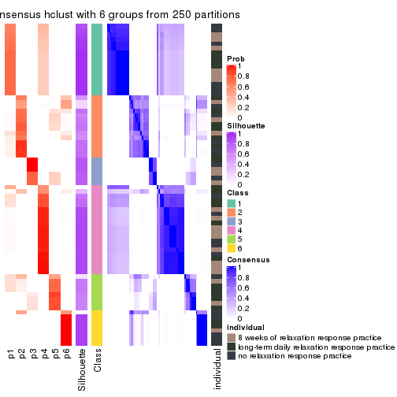
Heatmaps for the membership of samples in all partitions to see how consistent they are:
membership_heatmap(res, k = 2)
membership_heatmap(res, k = 3)
membership_heatmap(res, k = 4)
membership_heatmap(res, k = 5)
membership_heatmap(res, k = 6)
As soon as we have had the classes for columns, we can look for signatures which are significantly different between classes which can be candidate marks for certain classes. Following are the heatmaps for signatures.
Signature heatmaps where rows are scaled:
get_signatures(res, k = 2)
get_signatures(res, k = 3)
get_signatures(res, k = 4)
get_signatures(res, k = 5)

get_signatures(res, k = 6)
Signature heatmaps where rows are not scaled:
get_signatures(res, k = 2, scale_rows = FALSE)
get_signatures(res, k = 3, scale_rows = FALSE)
get_signatures(res, k = 4, scale_rows = FALSE)
get_signatures(res, k = 5, scale_rows = FALSE)

get_signatures(res, k = 6, scale_rows = FALSE)

Compare the overlap of signatures from different k:
compare_signatures(res)
get_signature() returns a data frame invisibly. TO get the list of signatures, the function
call should be assigned to a variable explicitly. In following code, if plot argument is set
to FALSE, no heatmap is plotted while only the differential analysis is performed.
# code only for demonstration
tb = get_signature(res, k = ..., plot = FALSE)
An example of the output of tb is:
#> which_row fdr mean_1 mean_2 scaled_mean_1 scaled_mean_2 km
#> 1 38 0.042760348 8.373488 9.131774 -0.5533452 0.5164555 1
#> 2 40 0.018707592 7.106213 8.469186 -0.6173731 0.5762149 1
#> 3 55 0.019134737 10.221463 11.207825 -0.6159697 0.5749050 1
#> 4 59 0.006059896 5.921854 7.869574 -0.6899429 0.6439467 1
#> 5 60 0.018055526 8.928898 10.211722 -0.6204761 0.5791110 1
#> 6 98 0.009384629 15.714769 14.887706 0.6635654 -0.6193277 2
...
The columns in tb are:
which_row: row indices corresponding to the input matrix.fdr: FDR for the differential test. mean_x: The mean value in group x.scaled_mean_x: The mean value in group x after rows are scaled.km: Row groups if k-means clustering is applied to rows.UMAP plot which shows how samples are separated.
dimension_reduction(res, k = 2, method = "UMAP")

dimension_reduction(res, k = 3, method = "UMAP")
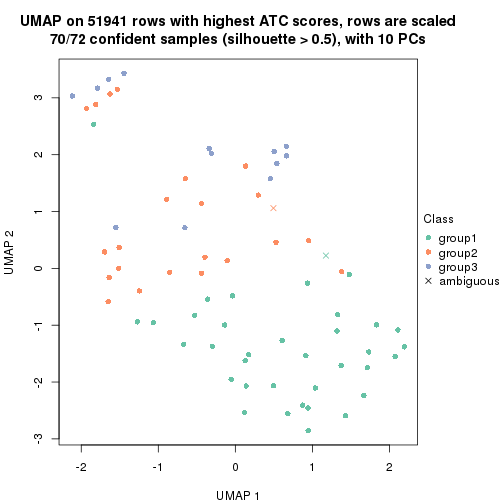
dimension_reduction(res, k = 4, method = "UMAP")
dimension_reduction(res, k = 5, method = "UMAP")
dimension_reduction(res, k = 6, method = "UMAP")

Following heatmap shows how subgroups are split when increasing k:
collect_classes(res)

Test correlation between subgroups and known annotations. If the known annotation is numeric, one-way ANOVA test is applied, and if the known annotation is discrete, chi-squared contingency table test is applied.
test_to_known_factors(res)
#> n individual(p) k
#> ATC:hclust 72 0.2803 2
#> ATC:hclust 70 0.2195 3
#> ATC:hclust 56 0.0453 4
#> ATC:hclust 66 0.1470 5
#> ATC:hclust 66 0.1551 6
If matrix rows can be associated to genes, consider to use GO_Enrichment(res,
...) to perform function enrichment for the signature genes.
The object with results only for a single top-value method and a single partition method can be extracted as:
res = res_list["ATC", "kmeans"]
# you can also extract it by
# res = res_list["ATC:kmeans"]
A summary of res and all the functions that can be applied to it:
res
#> A 'ConsensusPartition' object with k = 2, 3, 4, 5, 6.
#> On a matrix with 51941 rows and 72 columns.
#> Top rows (1000, 2000, 3000, 4000, 5000) are extracted by 'ATC' method.
#> Subgroups are detected by 'kmeans' method.
#> Performed in total 1250 partitions by row resampling.
#> Best k for subgroups seems to be 3.
#>
#> Following methods can be applied to this 'ConsensusPartition' object:
#> [1] "cola_report" "collect_classes" "collect_plots"
#> [4] "collect_stats" "colnames" "compare_signatures"
#> [7] "consensus_heatmap" "dimension_reduction" "functional_enrichment"
#> [10] "get_anno_col" "get_anno" "get_classes"
#> [13] "get_consensus" "get_matrix" "get_membership"
#> [16] "get_param" "get_signatures" "get_stats"
#> [19] "is_best_k" "is_stable_k" "membership_heatmap"
#> [22] "ncol" "nrow" "plot_ecdf"
#> [25] "rownames" "select_partition_number" "show"
#> [28] "suggest_best_k" "test_to_known_factors"
collect_plots() function collects all the plots made from res for all k (number of partitions)
into one single page to provide an easy and fast comparison between different k.
collect_plots(res)
The plots are:
k and the heatmap of
predicted classes for each k.k.k.k.All the plots in panels can be made by individual functions and they are plotted later in this section.
select_partition_number() produces several plots showing different
statistics for choosing “optimized” k. There are following statistics:
k;k, the area increased is defined as \(A_k - A_{k-1}\).The detailed explanations of these statistics can be found in the cola vignette.
Generally speaking, lower PAC score, higher mean silhouette score or higher
concordance corresponds to better partition. Rand index and Jaccard index
measure how similar the current partition is compared to partition with k-1.
If they are too similar, we won't accept k is better than k-1.
select_partition_number(res)
The numeric values for all these statistics can be obtained by get_stats().
get_stats(res)
#> k 1-PAC mean_silhouette concordance area_increased Rand Jaccard
#> 2 2 1.000 1.000 1.000 0.5075 0.493 0.493
#> 3 3 1.000 0.985 0.988 0.2379 0.860 0.722
#> 4 4 0.726 0.705 0.821 0.1558 0.869 0.655
#> 5 5 0.692 0.690 0.788 0.0738 0.914 0.686
#> 6 6 0.744 0.655 0.787 0.0440 0.960 0.813
suggest_best_k() suggests the best \(k\) based on these statistics. The rules are as follows:
NA.suggest_best_k(res)
#> [1] 3
#> attr(,"optional")
#> [1] 2
There is also optional best \(k\) = 2 that is worth to check.
Following shows the table of the partitions (You need to click the show/hide
code output link to see it). The membership matrix (columns with name p*)
is inferred by
clue::cl_consensus()
function with the SE method. Basically the value in the membership matrix
represents the probability to belong to a certain group. The finall class
label for an item is determined with the group with highest probability it
belongs to.
In get_classes() function, the entropy is calculated from the membership
matrix and the silhouette score is calculated from the consensus matrix.
cbind(get_classes(res, k = 2), get_membership(res, k = 2))
#> class entropy silhouette p1 p2
#> GSM253663 1 0 1 1 0
#> GSM253664 2 0 1 0 1
#> GSM253665 1 0 1 1 0
#> GSM253666 2 0 1 0 1
#> GSM253667 2 0 1 0 1
#> GSM253668 2 0 1 0 1
#> GSM253669 2 0 1 0 1
#> GSM253670 1 0 1 1 0
#> GSM253671 1 0 1 1 0
#> GSM253672 1 0 1 1 0
#> GSM253673 1 0 1 1 0
#> GSM253674 2 0 1 0 1
#> GSM253675 2 0 1 0 1
#> GSM253676 1 0 1 1 0
#> GSM253677 1 0 1 1 0
#> GSM253678 2 0 1 0 1
#> GSM253679 1 0 1 1 0
#> GSM253680 1 0 1 1 0
#> GSM253681 2 0 1 0 1
#> GSM253682 2 0 1 0 1
#> GSM253683 2 0 1 0 1
#> GSM253684 1 0 1 1 0
#> GSM253685 2 0 1 0 1
#> GSM253686 1 0 1 1 0
#> GSM253687 1 0 1 1 0
#> GSM253688 1 0 1 1 0
#> GSM253689 1 0 1 1 0
#> GSM253690 1 0 1 1 0
#> GSM253691 1 0 1 1 0
#> GSM253692 1 0 1 1 0
#> GSM253693 2 0 1 0 1
#> GSM253694 2 0 1 0 1
#> GSM253695 1 0 1 1 0
#> GSM253696 1 0 1 1 0
#> GSM253697 2 0 1 0 1
#> GSM253698 2 0 1 0 1
#> GSM253699 1 0 1 1 0
#> GSM253700 2 0 1 0 1
#> GSM253701 1 0 1 1 0
#> GSM253702 1 0 1 1 0
#> GSM253703 2 0 1 0 1
#> GSM253704 2 0 1 0 1
#> GSM253705 1 0 1 1 0
#> GSM253706 1 0 1 1 0
#> GSM253707 2 0 1 0 1
#> GSM253708 2 0 1 0 1
#> GSM253709 1 0 1 1 0
#> GSM253710 1 0 1 1 0
#> GSM253711 2 0 1 0 1
#> GSM253712 1 0 1 1 0
#> GSM253713 1 0 1 1 0
#> GSM253714 1 0 1 1 0
#> GSM253715 2 0 1 0 1
#> GSM253716 2 0 1 0 1
#> GSM253717 1 0 1 1 0
#> GSM253718 2 0 1 0 1
#> GSM253719 2 0 1 0 1
#> GSM253720 2 0 1 0 1
#> GSM253721 2 0 1 0 1
#> GSM253722 2 0 1 0 1
#> GSM253723 2 0 1 0 1
#> GSM253724 2 0 1 0 1
#> GSM253725 1 0 1 1 0
#> GSM253726 1 0 1 1 0
#> GSM253727 1 0 1 1 0
#> GSM253728 2 0 1 0 1
#> GSM253729 2 0 1 0 1
#> GSM253730 2 0 1 0 1
#> GSM253731 1 0 1 1 0
#> GSM253732 2 0 1 0 1
#> GSM253733 1 0 1 1 0
#> GSM253734 2 0 1 0 1
cbind(get_classes(res, k = 3), get_membership(res, k = 3))
#> class entropy silhouette p1 p2 p3
#> GSM253663 1 0.0747 0.991 0.984 0.000 0.016
#> GSM253664 2 0.0000 0.996 0.000 1.000 0.000
#> GSM253665 1 0.0747 0.991 0.984 0.000 0.016
#> GSM253666 2 0.0000 0.996 0.000 1.000 0.000
#> GSM253667 3 0.0747 0.982 0.000 0.016 0.984
#> GSM253668 2 0.0000 0.996 0.000 1.000 0.000
#> GSM253669 2 0.0000 0.996 0.000 1.000 0.000
#> GSM253670 1 0.0000 0.991 1.000 0.000 0.000
#> GSM253671 1 0.0000 0.991 1.000 0.000 0.000
#> GSM253672 1 0.0747 0.991 0.984 0.000 0.016
#> GSM253673 1 0.0000 0.991 1.000 0.000 0.000
#> GSM253674 2 0.0000 0.996 0.000 1.000 0.000
#> GSM253675 2 0.0000 0.996 0.000 1.000 0.000
#> GSM253676 1 0.0000 0.991 1.000 0.000 0.000
#> GSM253677 1 0.0000 0.991 1.000 0.000 0.000
#> GSM253678 2 0.0000 0.996 0.000 1.000 0.000
#> GSM253679 1 0.0000 0.991 1.000 0.000 0.000
#> GSM253680 1 0.2261 0.919 0.932 0.068 0.000
#> GSM253681 2 0.0000 0.996 0.000 1.000 0.000
#> GSM253682 2 0.0000 0.996 0.000 1.000 0.000
#> GSM253683 3 0.0747 0.982 0.000 0.016 0.984
#> GSM253684 1 0.0747 0.991 0.984 0.000 0.016
#> GSM253685 2 0.0000 0.996 0.000 1.000 0.000
#> GSM253686 1 0.0747 0.991 0.984 0.000 0.016
#> GSM253687 1 0.0747 0.991 0.984 0.000 0.016
#> GSM253688 1 0.0747 0.991 0.984 0.000 0.016
#> GSM253689 1 0.0000 0.991 1.000 0.000 0.000
#> GSM253690 1 0.0000 0.991 1.000 0.000 0.000
#> GSM253691 1 0.0000 0.991 1.000 0.000 0.000
#> GSM253692 1 0.0000 0.991 1.000 0.000 0.000
#> GSM253693 2 0.0000 0.996 0.000 1.000 0.000
#> GSM253694 2 0.0000 0.996 0.000 1.000 0.000
#> GSM253695 1 0.0000 0.991 1.000 0.000 0.000
#> GSM253696 1 0.0747 0.991 0.984 0.000 0.016
#> GSM253697 3 0.0747 0.982 0.000 0.016 0.984
#> GSM253698 2 0.0000 0.996 0.000 1.000 0.000
#> GSM253699 1 0.0000 0.991 1.000 0.000 0.000
#> GSM253700 3 0.0747 0.982 0.000 0.016 0.984
#> GSM253701 1 0.0000 0.991 1.000 0.000 0.000
#> GSM253702 1 0.0747 0.991 0.984 0.000 0.016
#> GSM253703 2 0.0000 0.996 0.000 1.000 0.000
#> GSM253704 3 0.4931 0.720 0.000 0.232 0.768
#> GSM253705 1 0.0000 0.991 1.000 0.000 0.000
#> GSM253706 1 0.0747 0.991 0.984 0.000 0.016
#> GSM253707 3 0.0747 0.982 0.000 0.016 0.984
#> GSM253708 3 0.0747 0.982 0.000 0.016 0.984
#> GSM253709 1 0.0000 0.991 1.000 0.000 0.000
#> GSM253710 1 0.0747 0.991 0.984 0.000 0.016
#> GSM253711 2 0.0000 0.996 0.000 1.000 0.000
#> GSM253712 1 0.0747 0.991 0.984 0.000 0.016
#> GSM253713 1 0.0747 0.991 0.984 0.000 0.016
#> GSM253714 1 0.0000 0.991 1.000 0.000 0.000
#> GSM253715 2 0.0000 0.996 0.000 1.000 0.000
#> GSM253716 3 0.0747 0.982 0.000 0.016 0.984
#> GSM253717 2 0.2165 0.918 0.064 0.936 0.000
#> GSM253718 3 0.0747 0.982 0.000 0.016 0.984
#> GSM253719 3 0.0747 0.982 0.000 0.016 0.984
#> GSM253720 2 0.0000 0.996 0.000 1.000 0.000
#> GSM253721 2 0.0000 0.996 0.000 1.000 0.000
#> GSM253722 2 0.0000 0.996 0.000 1.000 0.000
#> GSM253723 3 0.0747 0.982 0.000 0.016 0.984
#> GSM253724 3 0.0747 0.982 0.000 0.016 0.984
#> GSM253725 1 0.0747 0.991 0.984 0.000 0.016
#> GSM253726 1 0.0747 0.991 0.984 0.000 0.016
#> GSM253727 1 0.0000 0.991 1.000 0.000 0.000
#> GSM253728 2 0.0000 0.996 0.000 1.000 0.000
#> GSM253729 2 0.0000 0.996 0.000 1.000 0.000
#> GSM253730 2 0.0000 0.996 0.000 1.000 0.000
#> GSM253731 1 0.0747 0.991 0.984 0.000 0.016
#> GSM253732 3 0.0747 0.982 0.000 0.016 0.984
#> GSM253733 1 0.0747 0.991 0.984 0.000 0.016
#> GSM253734 2 0.0592 0.982 0.012 0.988 0.000
cbind(get_classes(res, k = 4), get_membership(res, k = 4))
#> class entropy silhouette p1 p2 p3 p4
#> GSM253663 1 0.4585 0.229 0.668 0.000 0.000 0.332
#> GSM253664 2 0.0000 0.804 0.000 1.000 0.000 0.000
#> GSM253665 1 0.0000 0.791 1.000 0.000 0.000 0.000
#> GSM253666 2 0.0592 0.800 0.000 0.984 0.000 0.016
#> GSM253667 3 0.0000 0.950 0.000 0.000 1.000 0.000
#> GSM253668 2 0.1792 0.768 0.000 0.932 0.000 0.068
#> GSM253669 2 0.1557 0.777 0.000 0.944 0.000 0.056
#> GSM253670 1 0.4999 -0.382 0.508 0.000 0.000 0.492
#> GSM253671 1 0.3569 0.601 0.804 0.000 0.000 0.196
#> GSM253672 1 0.0000 0.791 1.000 0.000 0.000 0.000
#> GSM253673 4 0.4920 0.684 0.368 0.004 0.000 0.628
#> GSM253674 2 0.1637 0.815 0.000 0.940 0.000 0.060
#> GSM253675 2 0.0592 0.800 0.000 0.984 0.000 0.016
#> GSM253676 4 0.4977 0.477 0.460 0.000 0.000 0.540
#> GSM253677 1 0.3569 0.601 0.804 0.000 0.000 0.196
#> GSM253678 2 0.4730 0.810 0.000 0.636 0.000 0.364
#> GSM253679 1 0.3569 0.601 0.804 0.000 0.000 0.196
#> GSM253680 4 0.5040 0.387 0.008 0.364 0.000 0.628
#> GSM253681 2 0.4730 0.810 0.000 0.636 0.000 0.364
#> GSM253682 2 0.4250 0.825 0.000 0.724 0.000 0.276
#> GSM253683 3 0.0000 0.950 0.000 0.000 1.000 0.000
#> GSM253684 1 0.4585 0.229 0.668 0.000 0.000 0.332
#> GSM253685 2 0.4730 0.810 0.000 0.636 0.000 0.364
#> GSM253686 1 0.4585 0.229 0.668 0.000 0.000 0.332
#> GSM253687 1 0.0000 0.791 1.000 0.000 0.000 0.000
#> GSM253688 1 0.3610 0.551 0.800 0.000 0.000 0.200
#> GSM253689 4 0.4920 0.684 0.368 0.004 0.000 0.628
#> GSM253690 4 0.4817 0.664 0.388 0.000 0.000 0.612
#> GSM253691 4 0.4920 0.684 0.368 0.004 0.000 0.628
#> GSM253692 4 0.4920 0.684 0.368 0.004 0.000 0.628
#> GSM253693 2 0.0592 0.800 0.000 0.984 0.000 0.016
#> GSM253694 2 0.4713 0.811 0.000 0.640 0.000 0.360
#> GSM253695 4 0.4817 0.664 0.388 0.000 0.000 0.612
#> GSM253696 1 0.0000 0.791 1.000 0.000 0.000 0.000
#> GSM253697 3 0.0336 0.948 0.000 0.000 0.992 0.008
#> GSM253698 2 0.1637 0.774 0.000 0.940 0.000 0.060
#> GSM253699 4 0.5478 0.663 0.344 0.028 0.000 0.628
#> GSM253700 3 0.0000 0.950 0.000 0.000 1.000 0.000
#> GSM253701 1 0.4585 0.285 0.668 0.000 0.000 0.332
#> GSM253702 1 0.0000 0.791 1.000 0.000 0.000 0.000
#> GSM253703 2 0.4713 0.811 0.000 0.640 0.000 0.360
#> GSM253704 4 0.7882 -0.573 0.000 0.348 0.284 0.368
#> GSM253705 4 0.4804 0.671 0.384 0.000 0.000 0.616
#> GSM253706 1 0.0000 0.791 1.000 0.000 0.000 0.000
#> GSM253707 3 0.0000 0.950 0.000 0.000 1.000 0.000
#> GSM253708 3 0.0000 0.950 0.000 0.000 1.000 0.000
#> GSM253709 1 0.3610 0.595 0.800 0.000 0.000 0.200
#> GSM253710 1 0.0000 0.791 1.000 0.000 0.000 0.000
#> GSM253711 2 0.4730 0.810 0.000 0.636 0.000 0.364
#> GSM253712 1 0.0000 0.791 1.000 0.000 0.000 0.000
#> GSM253713 1 0.0000 0.791 1.000 0.000 0.000 0.000
#> GSM253714 4 0.4776 0.679 0.376 0.000 0.000 0.624
#> GSM253715 2 0.4730 0.810 0.000 0.636 0.000 0.364
#> GSM253716 3 0.4295 0.770 0.000 0.008 0.752 0.240
#> GSM253717 4 0.5947 0.423 0.060 0.312 0.000 0.628
#> GSM253718 3 0.0336 0.948 0.000 0.000 0.992 0.008
#> GSM253719 3 0.0336 0.948 0.000 0.000 0.992 0.008
#> GSM253720 2 0.4661 0.814 0.000 0.652 0.000 0.348
#> GSM253721 2 0.3266 0.818 0.000 0.832 0.000 0.168
#> GSM253722 2 0.0592 0.800 0.000 0.984 0.000 0.016
#> GSM253723 3 0.4567 0.749 0.000 0.016 0.740 0.244
#> GSM253724 3 0.2281 0.899 0.000 0.000 0.904 0.096
#> GSM253725 1 0.0000 0.791 1.000 0.000 0.000 0.000
#> GSM253726 1 0.0000 0.791 1.000 0.000 0.000 0.000
#> GSM253727 4 0.4804 0.671 0.384 0.000 0.000 0.616
#> GSM253728 2 0.0707 0.798 0.000 0.980 0.000 0.020
#> GSM253729 2 0.4730 0.810 0.000 0.636 0.000 0.364
#> GSM253730 2 0.3942 0.826 0.000 0.764 0.000 0.236
#> GSM253731 1 0.0000 0.791 1.000 0.000 0.000 0.000
#> GSM253732 3 0.0000 0.950 0.000 0.000 1.000 0.000
#> GSM253733 1 0.0000 0.791 1.000 0.000 0.000 0.000
#> GSM253734 2 0.3975 0.826 0.000 0.760 0.000 0.240
cbind(get_classes(res, k = 5), get_membership(res, k = 5))
#> class entropy silhouette p1 p2 p3 p4 p5
#> GSM253663 1 0.6712 -0.0534 0.416 0.260 0.000 0.000 0.324
#> GSM253664 2 0.4126 0.9369 0.000 0.620 0.000 0.380 0.000
#> GSM253665 1 0.0000 0.7582 1.000 0.000 0.000 0.000 0.000
#> GSM253666 2 0.4264 0.9440 0.000 0.620 0.000 0.376 0.004
#> GSM253667 3 0.0451 0.8913 0.000 0.004 0.988 0.000 0.008
#> GSM253668 2 0.5197 0.8994 0.000 0.620 0.000 0.316 0.064
#> GSM253669 2 0.5113 0.9136 0.000 0.620 0.000 0.324 0.056
#> GSM253670 5 0.4708 0.6353 0.292 0.040 0.000 0.000 0.668
#> GSM253671 1 0.4748 0.3851 0.660 0.040 0.000 0.000 0.300
#> GSM253672 1 0.1043 0.7557 0.960 0.040 0.000 0.000 0.000
#> GSM253673 5 0.2798 0.8243 0.140 0.008 0.000 0.000 0.852
#> GSM253674 4 0.4708 -0.4650 0.000 0.436 0.000 0.548 0.016
#> GSM253675 2 0.4264 0.9440 0.000 0.620 0.000 0.376 0.004
#> GSM253676 5 0.4400 0.7510 0.212 0.052 0.000 0.000 0.736
#> GSM253677 1 0.4748 0.3851 0.660 0.040 0.000 0.000 0.300
#> GSM253678 4 0.0404 0.7916 0.000 0.012 0.000 0.988 0.000
#> GSM253679 1 0.4902 0.3926 0.648 0.048 0.000 0.000 0.304
#> GSM253680 5 0.3177 0.7012 0.000 0.208 0.000 0.000 0.792
#> GSM253681 4 0.0000 0.7915 0.000 0.000 0.000 1.000 0.000
#> GSM253682 4 0.3759 0.6415 0.000 0.136 0.000 0.808 0.056
#> GSM253683 3 0.0290 0.8918 0.000 0.000 0.992 0.000 0.008
#> GSM253684 1 0.6712 -0.0534 0.416 0.260 0.000 0.000 0.324
#> GSM253685 4 0.1341 0.7834 0.000 0.000 0.000 0.944 0.056
#> GSM253686 1 0.6712 -0.0534 0.416 0.260 0.000 0.000 0.324
#> GSM253687 1 0.0880 0.7567 0.968 0.032 0.000 0.000 0.000
#> GSM253688 1 0.6139 0.3283 0.556 0.260 0.000 0.000 0.184
#> GSM253689 5 0.4764 0.8026 0.140 0.128 0.000 0.000 0.732
#> GSM253690 5 0.3236 0.8190 0.152 0.020 0.000 0.000 0.828
#> GSM253691 5 0.4764 0.8026 0.140 0.128 0.000 0.000 0.732
#> GSM253692 5 0.4764 0.8026 0.140 0.128 0.000 0.000 0.732
#> GSM253693 2 0.4264 0.9440 0.000 0.620 0.000 0.376 0.004
#> GSM253694 4 0.1117 0.7921 0.000 0.016 0.000 0.964 0.020
#> GSM253695 5 0.5832 0.6884 0.152 0.248 0.000 0.000 0.600
#> GSM253696 1 0.0000 0.7582 1.000 0.000 0.000 0.000 0.000
#> GSM253697 3 0.2388 0.8816 0.000 0.028 0.900 0.000 0.072
#> GSM253698 2 0.5113 0.9136 0.000 0.620 0.000 0.324 0.056
#> GSM253699 5 0.3002 0.8167 0.116 0.028 0.000 0.000 0.856
#> GSM253700 3 0.0162 0.8910 0.000 0.004 0.996 0.000 0.000
#> GSM253701 5 0.5296 0.1093 0.472 0.048 0.000 0.000 0.480
#> GSM253702 1 0.1043 0.7557 0.960 0.040 0.000 0.000 0.000
#> GSM253703 4 0.0510 0.7904 0.000 0.016 0.000 0.984 0.000
#> GSM253704 4 0.4924 0.4970 0.000 0.028 0.164 0.744 0.064
#> GSM253705 5 0.2806 0.8239 0.152 0.004 0.000 0.000 0.844
#> GSM253706 1 0.0290 0.7581 0.992 0.008 0.000 0.000 0.000
#> GSM253707 3 0.0290 0.8918 0.000 0.000 0.992 0.000 0.008
#> GSM253708 3 0.0290 0.8918 0.000 0.000 0.992 0.000 0.008
#> GSM253709 1 0.5355 0.3640 0.624 0.084 0.000 0.000 0.292
#> GSM253710 1 0.2471 0.7105 0.864 0.136 0.000 0.000 0.000
#> GSM253711 4 0.0162 0.7922 0.000 0.004 0.000 0.996 0.000
#> GSM253712 1 0.2424 0.7129 0.868 0.132 0.000 0.000 0.000
#> GSM253713 1 0.0000 0.7582 1.000 0.000 0.000 0.000 0.000
#> GSM253714 5 0.4254 0.8170 0.148 0.080 0.000 0.000 0.772
#> GSM253715 4 0.0162 0.7922 0.000 0.004 0.000 0.996 0.000
#> GSM253716 3 0.6079 0.5907 0.000 0.028 0.576 0.320 0.076
#> GSM253717 5 0.2818 0.7208 0.012 0.132 0.000 0.000 0.856
#> GSM253718 3 0.2388 0.8816 0.000 0.028 0.900 0.000 0.072
#> GSM253719 3 0.2388 0.8816 0.000 0.028 0.900 0.000 0.072
#> GSM253720 4 0.1830 0.7807 0.000 0.040 0.000 0.932 0.028
#> GSM253721 4 0.4165 -0.0141 0.000 0.320 0.000 0.672 0.008
#> GSM253722 2 0.4264 0.9440 0.000 0.620 0.000 0.376 0.004
#> GSM253723 3 0.6188 0.4872 0.000 0.028 0.524 0.376 0.072
#> GSM253724 3 0.4630 0.8123 0.000 0.028 0.776 0.124 0.072
#> GSM253725 1 0.1043 0.7557 0.960 0.040 0.000 0.000 0.000
#> GSM253726 1 0.0000 0.7582 1.000 0.000 0.000 0.000 0.000
#> GSM253727 5 0.3495 0.8149 0.152 0.032 0.000 0.000 0.816
#> GSM253728 2 0.4682 0.9387 0.000 0.620 0.000 0.356 0.024
#> GSM253729 4 0.1341 0.7834 0.000 0.000 0.000 0.944 0.056
#> GSM253730 4 0.3846 0.6274 0.000 0.144 0.000 0.800 0.056
#> GSM253731 1 0.0000 0.7582 1.000 0.000 0.000 0.000 0.000
#> GSM253732 3 0.0162 0.8910 0.000 0.004 0.996 0.000 0.000
#> GSM253733 1 0.0000 0.7582 1.000 0.000 0.000 0.000 0.000
#> GSM253734 4 0.4114 0.6475 0.000 0.164 0.000 0.776 0.060
cbind(get_classes(res, k = 6), get_membership(res, k = 6))
#> class entropy silhouette p1 p2 p3 p4 p5 p6
#> GSM253663 5 0.6061 0.9886 0.368 0.000 0.000 0.260 0.372 0.000
#> GSM253664 6 0.1957 0.9249 0.000 0.000 0.112 0.000 0.000 0.888
#> GSM253665 1 0.0000 0.7179 1.000 0.000 0.000 0.000 0.000 0.000
#> GSM253666 6 0.1910 0.9267 0.000 0.000 0.108 0.000 0.000 0.892
#> GSM253667 2 0.3454 0.8372 0.000 0.768 0.000 0.000 0.208 0.024
#> GSM253668 6 0.2325 0.8838 0.000 0.000 0.060 0.048 0.000 0.892
#> GSM253669 6 0.2163 0.9223 0.000 0.000 0.092 0.016 0.000 0.892
#> GSM253670 4 0.4656 0.5447 0.204 0.000 0.000 0.708 0.064 0.024
#> GSM253671 1 0.6005 0.2209 0.516 0.000 0.000 0.340 0.100 0.044
#> GSM253672 1 0.1074 0.7095 0.960 0.000 0.000 0.000 0.028 0.012
#> GSM253673 4 0.1918 0.7241 0.088 0.000 0.000 0.904 0.000 0.008
#> GSM253674 6 0.5319 0.1887 0.000 0.000 0.420 0.016 0.064 0.500
#> GSM253675 6 0.2053 0.9268 0.000 0.000 0.108 0.000 0.004 0.888
#> GSM253676 4 0.4866 0.5977 0.148 0.000 0.000 0.716 0.100 0.036
#> GSM253677 1 0.5929 0.2235 0.524 0.000 0.000 0.340 0.092 0.044
#> GSM253678 3 0.1078 0.7810 0.000 0.008 0.964 0.012 0.016 0.000
#> GSM253679 1 0.5558 0.2724 0.560 0.000 0.000 0.336 0.064 0.040
#> GSM253680 4 0.3172 0.6334 0.000 0.000 0.000 0.832 0.076 0.092
#> GSM253681 3 0.0692 0.7866 0.000 0.000 0.976 0.020 0.004 0.000
#> GSM253682 3 0.4982 0.6836 0.000 0.000 0.708 0.040 0.144 0.108
#> GSM253683 2 0.3695 0.8370 0.000 0.732 0.000 0.000 0.244 0.024
#> GSM253684 5 0.6190 0.9769 0.356 0.000 0.000 0.264 0.376 0.004
#> GSM253685 3 0.3268 0.7645 0.000 0.000 0.812 0.044 0.144 0.000
#> GSM253686 5 0.6061 0.9886 0.368 0.000 0.000 0.260 0.372 0.000
#> GSM253687 1 0.1168 0.7089 0.956 0.000 0.000 0.000 0.028 0.016
#> GSM253688 1 0.5548 -0.6109 0.504 0.000 0.000 0.124 0.368 0.004
#> GSM253689 4 0.4527 0.5888 0.088 0.000 0.000 0.712 0.192 0.008
#> GSM253690 4 0.2020 0.7219 0.096 0.000 0.000 0.896 0.008 0.000
#> GSM253691 4 0.4527 0.5888 0.088 0.000 0.000 0.712 0.192 0.008
#> GSM253692 4 0.4527 0.5888 0.088 0.000 0.000 0.712 0.192 0.008
#> GSM253693 6 0.2450 0.9142 0.000 0.000 0.116 0.016 0.000 0.868
#> GSM253694 3 0.2609 0.7839 0.000 0.000 0.868 0.036 0.096 0.000
#> GSM253695 4 0.5182 0.1138 0.096 0.000 0.000 0.532 0.372 0.000
#> GSM253696 1 0.0000 0.7179 1.000 0.000 0.000 0.000 0.000 0.000
#> GSM253697 2 0.0146 0.8021 0.000 0.996 0.000 0.004 0.000 0.000
#> GSM253698 6 0.2163 0.9223 0.000 0.000 0.092 0.016 0.000 0.892
#> GSM253699 4 0.1923 0.7183 0.064 0.000 0.000 0.916 0.004 0.016
#> GSM253700 2 0.3483 0.8370 0.000 0.764 0.000 0.000 0.212 0.024
#> GSM253701 4 0.5983 0.2311 0.356 0.000 0.000 0.504 0.100 0.040
#> GSM253702 1 0.1320 0.7073 0.948 0.000 0.000 0.000 0.036 0.016
#> GSM253703 3 0.1078 0.7811 0.000 0.008 0.964 0.012 0.016 0.000
#> GSM253704 3 0.3991 0.5951 0.000 0.212 0.744 0.016 0.028 0.000
#> GSM253705 4 0.2264 0.7230 0.096 0.000 0.000 0.888 0.012 0.004
#> GSM253706 1 0.0405 0.7145 0.988 0.000 0.000 0.000 0.004 0.008
#> GSM253707 2 0.3695 0.8370 0.000 0.732 0.000 0.000 0.244 0.024
#> GSM253708 2 0.3695 0.8370 0.000 0.732 0.000 0.000 0.244 0.024
#> GSM253709 1 0.6716 0.2091 0.464 0.000 0.000 0.300 0.164 0.072
#> GSM253710 1 0.2772 0.5145 0.816 0.000 0.000 0.000 0.180 0.004
#> GSM253711 3 0.0260 0.7894 0.000 0.000 0.992 0.000 0.008 0.000
#> GSM253712 1 0.2703 0.5249 0.824 0.000 0.000 0.000 0.172 0.004
#> GSM253713 1 0.0000 0.7179 1.000 0.000 0.000 0.000 0.000 0.000
#> GSM253714 4 0.3817 0.6817 0.088 0.000 0.000 0.796 0.104 0.012
#> GSM253715 3 0.0260 0.7894 0.000 0.000 0.992 0.000 0.008 0.000
#> GSM253716 2 0.4697 0.1877 0.000 0.568 0.392 0.012 0.028 0.000
#> GSM253717 4 0.2711 0.6428 0.008 0.000 0.008 0.884 0.048 0.052
#> GSM253718 2 0.0146 0.8021 0.000 0.996 0.000 0.004 0.000 0.000
#> GSM253719 2 0.0405 0.7987 0.000 0.988 0.008 0.004 0.000 0.000
#> GSM253720 3 0.2786 0.7763 0.000 0.000 0.864 0.024 0.100 0.012
#> GSM253721 3 0.4876 -0.1382 0.000 0.012 0.520 0.012 0.016 0.440
#> GSM253722 6 0.2053 0.9268 0.000 0.000 0.108 0.000 0.004 0.888
#> GSM253723 3 0.4927 -0.0509 0.000 0.468 0.484 0.016 0.032 0.000
#> GSM253724 2 0.2925 0.6746 0.000 0.832 0.148 0.004 0.016 0.000
#> GSM253725 1 0.1168 0.7089 0.956 0.000 0.000 0.000 0.028 0.016
#> GSM253726 1 0.0000 0.7179 1.000 0.000 0.000 0.000 0.000 0.000
#> GSM253727 4 0.4079 0.6731 0.096 0.000 0.000 0.788 0.084 0.032
#> GSM253728 6 0.2070 0.9261 0.000 0.000 0.100 0.008 0.000 0.892
#> GSM253729 3 0.3202 0.7640 0.000 0.000 0.816 0.040 0.144 0.000
#> GSM253730 3 0.5024 0.6795 0.000 0.000 0.704 0.040 0.144 0.112
#> GSM253731 1 0.0405 0.7145 0.988 0.000 0.000 0.000 0.004 0.008
#> GSM253732 2 0.3670 0.8339 0.000 0.736 0.000 0.000 0.240 0.024
#> GSM253733 1 0.0146 0.7167 0.996 0.000 0.000 0.000 0.000 0.004
#> GSM253734 3 0.5332 0.6680 0.000 0.000 0.656 0.048 0.216 0.080
Heatmaps for the consensus matrix. It visualizes the probability of two samples to be in a same group.
consensus_heatmap(res, k = 2)
consensus_heatmap(res, k = 3)
consensus_heatmap(res, k = 4)
consensus_heatmap(res, k = 5)
consensus_heatmap(res, k = 6)
Heatmaps for the membership of samples in all partitions to see how consistent they are:
membership_heatmap(res, k = 2)
membership_heatmap(res, k = 3)
membership_heatmap(res, k = 4)
membership_heatmap(res, k = 5)
membership_heatmap(res, k = 6)
As soon as we have had the classes for columns, we can look for signatures which are significantly different between classes which can be candidate marks for certain classes. Following are the heatmaps for signatures.
Signature heatmaps where rows are scaled:
get_signatures(res, k = 2)

get_signatures(res, k = 3)
get_signatures(res, k = 4)
get_signatures(res, k = 5)
get_signatures(res, k = 6)
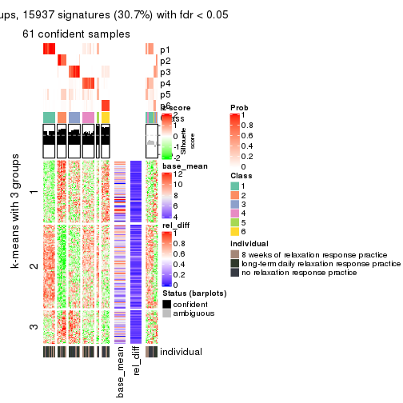
Signature heatmaps where rows are not scaled:
get_signatures(res, k = 2, scale_rows = FALSE)
get_signatures(res, k = 3, scale_rows = FALSE)
get_signatures(res, k = 4, scale_rows = FALSE)
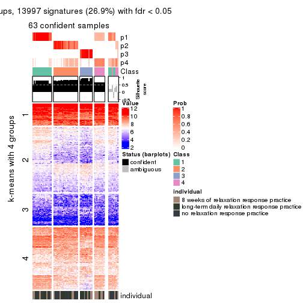
get_signatures(res, k = 5, scale_rows = FALSE)
get_signatures(res, k = 6, scale_rows = FALSE)

Compare the overlap of signatures from different k:
compare_signatures(res)
get_signature() returns a data frame invisibly. TO get the list of signatures, the function
call should be assigned to a variable explicitly. In following code, if plot argument is set
to FALSE, no heatmap is plotted while only the differential analysis is performed.
# code only for demonstration
tb = get_signature(res, k = ..., plot = FALSE)
An example of the output of tb is:
#> which_row fdr mean_1 mean_2 scaled_mean_1 scaled_mean_2 km
#> 1 38 0.042760348 8.373488 9.131774 -0.5533452 0.5164555 1
#> 2 40 0.018707592 7.106213 8.469186 -0.6173731 0.5762149 1
#> 3 55 0.019134737 10.221463 11.207825 -0.6159697 0.5749050 1
#> 4 59 0.006059896 5.921854 7.869574 -0.6899429 0.6439467 1
#> 5 60 0.018055526 8.928898 10.211722 -0.6204761 0.5791110 1
#> 6 98 0.009384629 15.714769 14.887706 0.6635654 -0.6193277 2
...
The columns in tb are:
which_row: row indices corresponding to the input matrix.fdr: FDR for the differential test. mean_x: The mean value in group x.scaled_mean_x: The mean value in group x after rows are scaled.km: Row groups if k-means clustering is applied to rows.UMAP plot which shows how samples are separated.
dimension_reduction(res, k = 2, method = "UMAP")
dimension_reduction(res, k = 3, method = "UMAP")
dimension_reduction(res, k = 4, method = "UMAP")
dimension_reduction(res, k = 5, method = "UMAP")
dimension_reduction(res, k = 6, method = "UMAP")
Following heatmap shows how subgroups are split when increasing k:
collect_classes(res)
Test correlation between subgroups and known annotations. If the known annotation is numeric, one-way ANOVA test is applied, and if the known annotation is discrete, chi-squared contingency table test is applied.
test_to_known_factors(res)
#> n individual(p) k
#> ATC:kmeans 72 0.2803 2
#> ATC:kmeans 72 0.1633 3
#> ATC:kmeans 63 0.0982 4
#> ATC:kmeans 59 0.3281 5
#> ATC:kmeans 61 0.4713 6
If matrix rows can be associated to genes, consider to use GO_Enrichment(res,
...) to perform function enrichment for the signature genes.
The object with results only for a single top-value method and a single partition method can be extracted as:
res = res_list["ATC", "skmeans"]
# you can also extract it by
# res = res_list["ATC:skmeans"]
A summary of res and all the functions that can be applied to it:
res
#> A 'ConsensusPartition' object with k = 2, 3, 4, 5, 6.
#> On a matrix with 51941 rows and 72 columns.
#> Top rows (1000, 2000, 3000, 4000, 5000) are extracted by 'ATC' method.
#> Subgroups are detected by 'skmeans' method.
#> Performed in total 1250 partitions by row resampling.
#> Best k for subgroups seems to be 3.
#>
#> Following methods can be applied to this 'ConsensusPartition' object:
#> [1] "cola_report" "collect_classes" "collect_plots"
#> [4] "collect_stats" "colnames" "compare_signatures"
#> [7] "consensus_heatmap" "dimension_reduction" "functional_enrichment"
#> [10] "get_anno_col" "get_anno" "get_classes"
#> [13] "get_consensus" "get_matrix" "get_membership"
#> [16] "get_param" "get_signatures" "get_stats"
#> [19] "is_best_k" "is_stable_k" "membership_heatmap"
#> [22] "ncol" "nrow" "plot_ecdf"
#> [25] "rownames" "select_partition_number" "show"
#> [28] "suggest_best_k" "test_to_known_factors"
collect_plots() function collects all the plots made from res for all k (number of partitions)
into one single page to provide an easy and fast comparison between different k.
collect_plots(res)
The plots are:
k and the heatmap of
predicted classes for each k.k.k.k.All the plots in panels can be made by individual functions and they are plotted later in this section.
select_partition_number() produces several plots showing different
statistics for choosing “optimized” k. There are following statistics:
k;k, the area increased is defined as \(A_k - A_{k-1}\).The detailed explanations of these statistics can be found in the cola vignette.
Generally speaking, lower PAC score, higher mean silhouette score or higher
concordance corresponds to better partition. Rand index and Jaccard index
measure how similar the current partition is compared to partition with k-1.
If they are too similar, we won't accept k is better than k-1.
select_partition_number(res)
The numeric values for all these statistics can be obtained by get_stats().
get_stats(res)
#> k 1-PAC mean_silhouette concordance area_increased Rand Jaccard
#> 2 2 1.000 1.000 1.000 0.5075 0.493 0.493
#> 3 3 1.000 0.983 0.990 0.1889 0.905 0.807
#> 4 4 0.784 0.847 0.864 0.1131 0.951 0.876
#> 5 5 0.776 0.599 0.811 0.0923 0.929 0.802
#> 6 6 0.768 0.615 0.753 0.0466 0.877 0.624
suggest_best_k() suggests the best \(k\) based on these statistics. The rules are as follows:
NA.suggest_best_k(res)
#> [1] 3
#> attr(,"optional")
#> [1] 2
There is also optional best \(k\) = 2 that is worth to check.
Following shows the table of the partitions (You need to click the show/hide
code output link to see it). The membership matrix (columns with name p*)
is inferred by
clue::cl_consensus()
function with the SE method. Basically the value in the membership matrix
represents the probability to belong to a certain group. The finall class
label for an item is determined with the group with highest probability it
belongs to.
In get_classes() function, the entropy is calculated from the membership
matrix and the silhouette score is calculated from the consensus matrix.
cbind(get_classes(res, k = 2), get_membership(res, k = 2))
#> class entropy silhouette p1 p2
#> GSM253663 1 0 1 1 0
#> GSM253664 2 0 1 0 1
#> GSM253665 1 0 1 1 0
#> GSM253666 2 0 1 0 1
#> GSM253667 2 0 1 0 1
#> GSM253668 2 0 1 0 1
#> GSM253669 2 0 1 0 1
#> GSM253670 1 0 1 1 0
#> GSM253671 1 0 1 1 0
#> GSM253672 1 0 1 1 0
#> GSM253673 1 0 1 1 0
#> GSM253674 2 0 1 0 1
#> GSM253675 2 0 1 0 1
#> GSM253676 1 0 1 1 0
#> GSM253677 1 0 1 1 0
#> GSM253678 2 0 1 0 1
#> GSM253679 1 0 1 1 0
#> GSM253680 1 0 1 1 0
#> GSM253681 2 0 1 0 1
#> GSM253682 2 0 1 0 1
#> GSM253683 2 0 1 0 1
#> GSM253684 1 0 1 1 0
#> GSM253685 2 0 1 0 1
#> GSM253686 1 0 1 1 0
#> GSM253687 1 0 1 1 0
#> GSM253688 1 0 1 1 0
#> GSM253689 1 0 1 1 0
#> GSM253690 1 0 1 1 0
#> GSM253691 1 0 1 1 0
#> GSM253692 1 0 1 1 0
#> GSM253693 2 0 1 0 1
#> GSM253694 2 0 1 0 1
#> GSM253695 1 0 1 1 0
#> GSM253696 1 0 1 1 0
#> GSM253697 2 0 1 0 1
#> GSM253698 2 0 1 0 1
#> GSM253699 1 0 1 1 0
#> GSM253700 2 0 1 0 1
#> GSM253701 1 0 1 1 0
#> GSM253702 1 0 1 1 0
#> GSM253703 2 0 1 0 1
#> GSM253704 2 0 1 0 1
#> GSM253705 1 0 1 1 0
#> GSM253706 1 0 1 1 0
#> GSM253707 2 0 1 0 1
#> GSM253708 2 0 1 0 1
#> GSM253709 1 0 1 1 0
#> GSM253710 1 0 1 1 0
#> GSM253711 2 0 1 0 1
#> GSM253712 1 0 1 1 0
#> GSM253713 1 0 1 1 0
#> GSM253714 1 0 1 1 0
#> GSM253715 2 0 1 0 1
#> GSM253716 2 0 1 0 1
#> GSM253717 1 0 1 1 0
#> GSM253718 2 0 1 0 1
#> GSM253719 2 0 1 0 1
#> GSM253720 2 0 1 0 1
#> GSM253721 2 0 1 0 1
#> GSM253722 2 0 1 0 1
#> GSM253723 2 0 1 0 1
#> GSM253724 2 0 1 0 1
#> GSM253725 1 0 1 1 0
#> GSM253726 1 0 1 1 0
#> GSM253727 1 0 1 1 0
#> GSM253728 2 0 1 0 1
#> GSM253729 2 0 1 0 1
#> GSM253730 2 0 1 0 1
#> GSM253731 1 0 1 1 0
#> GSM253732 2 0 1 0 1
#> GSM253733 1 0 1 1 0
#> GSM253734 2 0 1 0 1
cbind(get_classes(res, k = 3), get_membership(res, k = 3))
#> class entropy silhouette p1 p2 p3
#> GSM253663 1 0.0000 0.999 1.000 0.000 0.000
#> GSM253664 3 0.0237 0.979 0.000 0.004 0.996
#> GSM253665 1 0.0000 0.999 1.000 0.000 0.000
#> GSM253666 3 0.0237 0.979 0.000 0.004 0.996
#> GSM253667 2 0.1031 0.975 0.000 0.976 0.024
#> GSM253668 3 0.0237 0.979 0.000 0.004 0.996
#> GSM253669 3 0.0237 0.979 0.000 0.004 0.996
#> GSM253670 1 0.0000 0.999 1.000 0.000 0.000
#> GSM253671 1 0.0237 0.998 0.996 0.000 0.004
#> GSM253672 1 0.0000 0.999 1.000 0.000 0.000
#> GSM253673 1 0.0237 0.998 0.996 0.000 0.004
#> GSM253674 2 0.4062 0.820 0.000 0.836 0.164
#> GSM253675 3 0.0237 0.979 0.000 0.004 0.996
#> GSM253676 1 0.0237 0.998 0.996 0.000 0.004
#> GSM253677 1 0.0237 0.998 0.996 0.000 0.004
#> GSM253678 2 0.0424 0.981 0.000 0.992 0.008
#> GSM253679 1 0.0237 0.998 0.996 0.000 0.004
#> GSM253680 1 0.0237 0.998 0.996 0.000 0.004
#> GSM253681 2 0.0000 0.983 0.000 1.000 0.000
#> GSM253682 2 0.0000 0.983 0.000 1.000 0.000
#> GSM253683 2 0.0000 0.983 0.000 1.000 0.000
#> GSM253684 1 0.0000 0.999 1.000 0.000 0.000
#> GSM253685 2 0.0000 0.983 0.000 1.000 0.000
#> GSM253686 1 0.0000 0.999 1.000 0.000 0.000
#> GSM253687 1 0.0000 0.999 1.000 0.000 0.000
#> GSM253688 1 0.0000 0.999 1.000 0.000 0.000
#> GSM253689 1 0.0000 0.999 1.000 0.000 0.000
#> GSM253690 1 0.0000 0.999 1.000 0.000 0.000
#> GSM253691 1 0.0000 0.999 1.000 0.000 0.000
#> GSM253692 1 0.0000 0.999 1.000 0.000 0.000
#> GSM253693 3 0.4062 0.800 0.000 0.164 0.836
#> GSM253694 2 0.0000 0.983 0.000 1.000 0.000
#> GSM253695 1 0.0000 0.999 1.000 0.000 0.000
#> GSM253696 1 0.0000 0.999 1.000 0.000 0.000
#> GSM253697 2 0.1031 0.975 0.000 0.976 0.024
#> GSM253698 3 0.0237 0.979 0.000 0.004 0.996
#> GSM253699 1 0.0237 0.998 0.996 0.000 0.004
#> GSM253700 2 0.0592 0.980 0.000 0.988 0.012
#> GSM253701 1 0.0237 0.998 0.996 0.000 0.004
#> GSM253702 1 0.0000 0.999 1.000 0.000 0.000
#> GSM253703 2 0.0747 0.979 0.000 0.984 0.016
#> GSM253704 2 0.0424 0.981 0.000 0.992 0.008
#> GSM253705 1 0.0237 0.998 0.996 0.000 0.004
#> GSM253706 1 0.0000 0.999 1.000 0.000 0.000
#> GSM253707 2 0.0000 0.983 0.000 1.000 0.000
#> GSM253708 2 0.0000 0.983 0.000 1.000 0.000
#> GSM253709 1 0.0237 0.998 0.996 0.000 0.004
#> GSM253710 1 0.0000 0.999 1.000 0.000 0.000
#> GSM253711 2 0.0000 0.983 0.000 1.000 0.000
#> GSM253712 1 0.0000 0.999 1.000 0.000 0.000
#> GSM253713 1 0.0000 0.999 1.000 0.000 0.000
#> GSM253714 1 0.0237 0.998 0.996 0.000 0.004
#> GSM253715 2 0.0000 0.983 0.000 1.000 0.000
#> GSM253716 2 0.0592 0.980 0.000 0.988 0.012
#> GSM253717 1 0.0237 0.998 0.996 0.000 0.004
#> GSM253718 2 0.1031 0.975 0.000 0.976 0.024
#> GSM253719 2 0.1031 0.975 0.000 0.976 0.024
#> GSM253720 2 0.0000 0.983 0.000 1.000 0.000
#> GSM253721 2 0.3116 0.891 0.000 0.892 0.108
#> GSM253722 3 0.0237 0.979 0.000 0.004 0.996
#> GSM253723 2 0.0000 0.983 0.000 1.000 0.000
#> GSM253724 2 0.1031 0.975 0.000 0.976 0.024
#> GSM253725 1 0.0000 0.999 1.000 0.000 0.000
#> GSM253726 1 0.0000 0.999 1.000 0.000 0.000
#> GSM253727 1 0.0237 0.998 0.996 0.000 0.004
#> GSM253728 3 0.0237 0.979 0.000 0.004 0.996
#> GSM253729 2 0.0000 0.983 0.000 1.000 0.000
#> GSM253730 2 0.0000 0.983 0.000 1.000 0.000
#> GSM253731 1 0.0000 0.999 1.000 0.000 0.000
#> GSM253732 2 0.0000 0.983 0.000 1.000 0.000
#> GSM253733 1 0.0000 0.999 1.000 0.000 0.000
#> GSM253734 2 0.0000 0.983 0.000 1.000 0.000
cbind(get_classes(res, k = 4), get_membership(res, k = 4))
#> class entropy silhouette p1 p2 p3 p4
#> GSM253663 1 0.3486 0.799 0.812 0.000 0.000 0.188
#> GSM253664 2 0.0188 0.943 0.000 0.996 0.000 0.004
#> GSM253665 1 0.0000 0.867 1.000 0.000 0.000 0.000
#> GSM253666 2 0.0000 0.946 0.000 1.000 0.000 0.000
#> GSM253667 4 0.5000 0.985 0.000 0.000 0.496 0.504
#> GSM253668 2 0.0000 0.946 0.000 1.000 0.000 0.000
#> GSM253669 2 0.0000 0.946 0.000 1.000 0.000 0.000
#> GSM253670 1 0.0000 0.867 1.000 0.000 0.000 0.000
#> GSM253671 1 0.3975 0.807 0.760 0.000 0.000 0.240
#> GSM253672 1 0.0000 0.867 1.000 0.000 0.000 0.000
#> GSM253673 1 0.3975 0.807 0.760 0.000 0.000 0.240
#> GSM253674 4 0.6442 0.811 0.000 0.068 0.440 0.492
#> GSM253675 2 0.0000 0.946 0.000 1.000 0.000 0.000
#> GSM253676 1 0.3975 0.807 0.760 0.000 0.000 0.240
#> GSM253677 1 0.3975 0.807 0.760 0.000 0.000 0.240
#> GSM253678 4 0.5000 0.985 0.000 0.000 0.496 0.504
#> GSM253679 1 0.3444 0.829 0.816 0.000 0.000 0.184
#> GSM253680 1 0.4907 0.738 0.580 0.000 0.000 0.420
#> GSM253681 4 0.5000 0.985 0.000 0.000 0.496 0.504
#> GSM253682 3 0.0000 0.777 0.000 0.000 1.000 0.000
#> GSM253683 3 0.5000 -0.982 0.000 0.000 0.500 0.500
#> GSM253684 1 0.3486 0.799 0.812 0.000 0.000 0.188
#> GSM253685 3 0.0000 0.777 0.000 0.000 1.000 0.000
#> GSM253686 1 0.3486 0.799 0.812 0.000 0.000 0.188
#> GSM253687 1 0.0000 0.867 1.000 0.000 0.000 0.000
#> GSM253688 1 0.3486 0.799 0.812 0.000 0.000 0.188
#> GSM253689 1 0.3801 0.800 0.780 0.000 0.000 0.220
#> GSM253690 1 0.1022 0.865 0.968 0.000 0.000 0.032
#> GSM253691 1 0.3726 0.801 0.788 0.000 0.000 0.212
#> GSM253692 1 0.3726 0.801 0.788 0.000 0.000 0.212
#> GSM253693 2 0.5767 0.395 0.000 0.660 0.060 0.280
#> GSM253694 4 0.4992 0.948 0.000 0.000 0.476 0.524
#> GSM253695 1 0.3486 0.799 0.812 0.000 0.000 0.188
#> GSM253696 1 0.0000 0.867 1.000 0.000 0.000 0.000
#> GSM253697 4 0.5000 0.985 0.000 0.000 0.496 0.504
#> GSM253698 2 0.0000 0.946 0.000 1.000 0.000 0.000
#> GSM253699 1 0.3975 0.807 0.760 0.000 0.000 0.240
#> GSM253700 4 0.5000 0.985 0.000 0.000 0.496 0.504
#> GSM253701 1 0.3873 0.812 0.772 0.000 0.000 0.228
#> GSM253702 1 0.0000 0.867 1.000 0.000 0.000 0.000
#> GSM253703 4 0.5000 0.985 0.000 0.000 0.496 0.504
#> GSM253704 4 0.5000 0.985 0.000 0.000 0.496 0.504
#> GSM253705 1 0.3837 0.815 0.776 0.000 0.000 0.224
#> GSM253706 1 0.0000 0.867 1.000 0.000 0.000 0.000
#> GSM253707 4 0.5000 0.985 0.000 0.000 0.496 0.504
#> GSM253708 4 0.5000 0.985 0.000 0.000 0.496 0.504
#> GSM253709 1 0.3942 0.809 0.764 0.000 0.000 0.236
#> GSM253710 1 0.1474 0.855 0.948 0.000 0.000 0.052
#> GSM253711 4 0.5000 0.985 0.000 0.000 0.496 0.504
#> GSM253712 1 0.0469 0.865 0.988 0.000 0.000 0.012
#> GSM253713 1 0.0000 0.867 1.000 0.000 0.000 0.000
#> GSM253714 1 0.4877 0.745 0.592 0.000 0.000 0.408
#> GSM253715 4 0.5000 0.985 0.000 0.000 0.496 0.504
#> GSM253716 4 0.5000 0.985 0.000 0.000 0.496 0.504
#> GSM253717 1 0.4454 0.760 0.692 0.000 0.000 0.308
#> GSM253718 4 0.5000 0.985 0.000 0.000 0.496 0.504
#> GSM253719 4 0.5000 0.985 0.000 0.000 0.496 0.504
#> GSM253720 4 0.4999 0.966 0.000 0.000 0.492 0.508
#> GSM253721 4 0.5510 0.952 0.000 0.016 0.480 0.504
#> GSM253722 2 0.0000 0.946 0.000 1.000 0.000 0.000
#> GSM253723 4 0.5000 0.985 0.000 0.000 0.496 0.504
#> GSM253724 4 0.5000 0.985 0.000 0.000 0.496 0.504
#> GSM253725 1 0.0000 0.867 1.000 0.000 0.000 0.000
#> GSM253726 1 0.0000 0.867 1.000 0.000 0.000 0.000
#> GSM253727 1 0.3975 0.807 0.760 0.000 0.000 0.240
#> GSM253728 2 0.0000 0.946 0.000 1.000 0.000 0.000
#> GSM253729 3 0.0000 0.777 0.000 0.000 1.000 0.000
#> GSM253730 3 0.0000 0.777 0.000 0.000 1.000 0.000
#> GSM253731 1 0.0000 0.867 1.000 0.000 0.000 0.000
#> GSM253732 4 0.5000 0.985 0.000 0.000 0.496 0.504
#> GSM253733 1 0.0000 0.867 1.000 0.000 0.000 0.000
#> GSM253734 3 0.2149 0.712 0.000 0.000 0.912 0.088
cbind(get_classes(res, k = 5), get_membership(res, k = 5))
#> class entropy silhouette p1 p2 p3 p4 p5
#> GSM253663 1 0.4473 0.1799 0.656 0.000 0.020 0.000 0.324
#> GSM253664 4 0.1087 0.8810 0.000 0.016 0.008 0.968 0.008
#> GSM253665 1 0.0000 0.5887 1.000 0.000 0.000 0.000 0.000
#> GSM253666 4 0.0566 0.8947 0.000 0.000 0.004 0.984 0.012
#> GSM253667 2 0.0162 0.9776 0.000 0.996 0.000 0.004 0.000
#> GSM253668 4 0.0290 0.8967 0.000 0.000 0.000 0.992 0.008
#> GSM253669 4 0.0566 0.8947 0.000 0.000 0.004 0.984 0.012
#> GSM253670 1 0.0404 0.5810 0.988 0.000 0.000 0.000 0.012
#> GSM253671 1 0.4383 -0.0876 0.572 0.000 0.004 0.000 0.424
#> GSM253672 1 0.0000 0.5887 1.000 0.000 0.000 0.000 0.000
#> GSM253673 1 0.4658 -0.2655 0.504 0.000 0.012 0.000 0.484
#> GSM253674 2 0.1967 0.9336 0.000 0.932 0.020 0.036 0.012
#> GSM253675 4 0.0290 0.8968 0.000 0.000 0.000 0.992 0.008
#> GSM253676 1 0.4367 -0.0720 0.580 0.000 0.004 0.000 0.416
#> GSM253677 1 0.4390 -0.0959 0.568 0.000 0.004 0.000 0.428
#> GSM253678 2 0.0000 0.9777 0.000 1.000 0.000 0.000 0.000
#> GSM253679 1 0.3424 0.2911 0.760 0.000 0.000 0.000 0.240
#> GSM253680 5 0.3492 0.4444 0.188 0.000 0.016 0.000 0.796
#> GSM253681 2 0.1557 0.9472 0.000 0.940 0.052 0.000 0.008
#> GSM253682 3 0.2329 0.9491 0.000 0.124 0.876 0.000 0.000
#> GSM253683 2 0.0609 0.9741 0.000 0.980 0.020 0.000 0.000
#> GSM253684 1 0.4473 0.1799 0.656 0.000 0.020 0.000 0.324
#> GSM253685 3 0.2471 0.9387 0.000 0.136 0.864 0.000 0.000
#> GSM253686 1 0.4473 0.1799 0.656 0.000 0.020 0.000 0.324
#> GSM253687 1 0.0000 0.5887 1.000 0.000 0.000 0.000 0.000
#> GSM253688 1 0.4473 0.1799 0.656 0.000 0.020 0.000 0.324
#> GSM253689 1 0.4980 -0.1971 0.488 0.000 0.028 0.000 0.484
#> GSM253690 1 0.1965 0.5059 0.904 0.000 0.000 0.000 0.096
#> GSM253691 5 0.4979 -0.0132 0.480 0.000 0.028 0.000 0.492
#> GSM253692 1 0.4974 -0.1470 0.508 0.000 0.028 0.000 0.464
#> GSM253693 4 0.5574 0.0676 0.000 0.464 0.028 0.484 0.024
#> GSM253694 2 0.2304 0.9047 0.000 0.908 0.044 0.000 0.048
#> GSM253695 1 0.4473 0.1799 0.656 0.000 0.020 0.000 0.324
#> GSM253696 1 0.0000 0.5887 1.000 0.000 0.000 0.000 0.000
#> GSM253697 2 0.0162 0.9776 0.000 0.996 0.000 0.004 0.000
#> GSM253698 4 0.0162 0.8974 0.000 0.000 0.000 0.996 0.004
#> GSM253699 5 0.4562 0.0715 0.496 0.000 0.008 0.000 0.496
#> GSM253700 2 0.0000 0.9777 0.000 1.000 0.000 0.000 0.000
#> GSM253701 1 0.4225 0.0430 0.632 0.000 0.004 0.000 0.364
#> GSM253702 1 0.0000 0.5887 1.000 0.000 0.000 0.000 0.000
#> GSM253703 2 0.0000 0.9777 0.000 1.000 0.000 0.000 0.000
#> GSM253704 2 0.0000 0.9777 0.000 1.000 0.000 0.000 0.000
#> GSM253705 1 0.4225 0.0455 0.632 0.000 0.004 0.000 0.364
#> GSM253706 1 0.0162 0.5872 0.996 0.000 0.004 0.000 0.000
#> GSM253707 2 0.0609 0.9741 0.000 0.980 0.020 0.000 0.000
#> GSM253708 2 0.0609 0.9741 0.000 0.980 0.020 0.000 0.000
#> GSM253709 1 0.4527 -0.0380 0.596 0.000 0.012 0.000 0.392
#> GSM253710 1 0.1408 0.5485 0.948 0.000 0.008 0.000 0.044
#> GSM253711 2 0.0609 0.9741 0.000 0.980 0.020 0.000 0.000
#> GSM253712 1 0.0290 0.5854 0.992 0.000 0.008 0.000 0.000
#> GSM253713 1 0.0000 0.5887 1.000 0.000 0.000 0.000 0.000
#> GSM253714 5 0.4114 0.4157 0.272 0.000 0.016 0.000 0.712
#> GSM253715 2 0.0609 0.9741 0.000 0.980 0.020 0.000 0.000
#> GSM253716 2 0.0000 0.9777 0.000 1.000 0.000 0.000 0.000
#> GSM253717 5 0.5272 0.1906 0.396 0.000 0.052 0.000 0.552
#> GSM253718 2 0.0162 0.9776 0.000 0.996 0.000 0.004 0.000
#> GSM253719 2 0.0162 0.9776 0.000 0.996 0.000 0.004 0.000
#> GSM253720 2 0.2278 0.9147 0.000 0.908 0.060 0.000 0.032
#> GSM253721 2 0.0290 0.9760 0.000 0.992 0.000 0.008 0.000
#> GSM253722 4 0.0290 0.8968 0.000 0.000 0.000 0.992 0.008
#> GSM253723 2 0.0290 0.9767 0.000 0.992 0.008 0.000 0.000
#> GSM253724 2 0.0162 0.9776 0.000 0.996 0.000 0.004 0.000
#> GSM253725 1 0.0000 0.5887 1.000 0.000 0.000 0.000 0.000
#> GSM253726 1 0.0000 0.5887 1.000 0.000 0.000 0.000 0.000
#> GSM253727 1 0.4403 -0.1165 0.560 0.000 0.004 0.000 0.436
#> GSM253728 4 0.0000 0.8976 0.000 0.000 0.000 1.000 0.000
#> GSM253729 3 0.2329 0.9491 0.000 0.124 0.876 0.000 0.000
#> GSM253730 3 0.2280 0.9470 0.000 0.120 0.880 0.000 0.000
#> GSM253731 1 0.0290 0.5854 0.992 0.000 0.008 0.000 0.000
#> GSM253732 2 0.0609 0.9741 0.000 0.980 0.020 0.000 0.000
#> GSM253733 1 0.0000 0.5887 1.000 0.000 0.000 0.000 0.000
#> GSM253734 3 0.4247 0.8164 0.000 0.092 0.776 0.000 0.132
cbind(get_classes(res, k = 6), get_membership(res, k = 6))
#> class entropy silhouette p1 p2 p3 p4 p5 p6
#> GSM253663 1 0.0000 0.3984 1.000 0.000 0.000 0.000 0.000 0.000
#> GSM253664 6 0.1312 0.9479 0.000 0.020 0.008 0.004 0.012 0.956
#> GSM253665 1 0.3860 0.4200 0.528 0.000 0.000 0.472 0.000 0.000
#> GSM253666 6 0.1925 0.9446 0.000 0.008 0.008 0.004 0.060 0.920
#> GSM253667 2 0.0000 0.9205 0.000 1.000 0.000 0.000 0.000 0.000
#> GSM253668 6 0.1523 0.9525 0.000 0.000 0.008 0.008 0.044 0.940
#> GSM253669 6 0.1900 0.9429 0.000 0.000 0.008 0.008 0.068 0.916
#> GSM253670 1 0.3867 0.4045 0.512 0.000 0.000 0.488 0.000 0.000
#> GSM253671 4 0.2726 0.6722 0.112 0.000 0.000 0.856 0.032 0.000
#> GSM253672 1 0.3862 0.4175 0.524 0.000 0.000 0.476 0.000 0.000
#> GSM253673 4 0.4308 0.4861 0.068 0.000 0.008 0.728 0.196 0.000
#> GSM253674 2 0.3590 0.8082 0.000 0.828 0.044 0.000 0.052 0.076
#> GSM253675 6 0.0551 0.9613 0.000 0.000 0.004 0.004 0.008 0.984
#> GSM253676 4 0.2971 0.6774 0.104 0.000 0.000 0.844 0.052 0.000
#> GSM253677 4 0.2706 0.6756 0.104 0.000 0.000 0.860 0.036 0.000
#> GSM253678 2 0.0146 0.9202 0.000 0.996 0.004 0.000 0.000 0.000
#> GSM253679 4 0.3309 0.3366 0.280 0.000 0.000 0.720 0.000 0.000
#> GSM253680 4 0.6228 -0.0843 0.324 0.000 0.008 0.416 0.252 0.000
#> GSM253681 2 0.3377 0.7984 0.000 0.808 0.056 0.000 0.136 0.000
#> GSM253682 3 0.1141 0.9775 0.000 0.052 0.948 0.000 0.000 0.000
#> GSM253683 2 0.1007 0.9086 0.000 0.956 0.044 0.000 0.000 0.000
#> GSM253684 1 0.0146 0.3978 0.996 0.000 0.004 0.000 0.000 0.000
#> GSM253685 3 0.1829 0.9592 0.000 0.056 0.920 0.000 0.024 0.000
#> GSM253686 1 0.0000 0.3984 1.000 0.000 0.000 0.000 0.000 0.000
#> GSM253687 1 0.3862 0.4178 0.524 0.000 0.000 0.476 0.000 0.000
#> GSM253688 1 0.0000 0.3984 1.000 0.000 0.000 0.000 0.000 0.000
#> GSM253689 1 0.4979 0.1542 0.672 0.000 0.008 0.160 0.160 0.000
#> GSM253690 4 0.4624 -0.2446 0.432 0.000 0.000 0.528 0.040 0.000
#> GSM253691 1 0.4936 0.1683 0.676 0.000 0.008 0.140 0.176 0.000
#> GSM253692 1 0.4619 0.1943 0.704 0.000 0.004 0.124 0.168 0.000
#> GSM253693 2 0.6141 0.1552 0.000 0.464 0.016 0.000 0.184 0.336
#> GSM253694 2 0.3916 0.6174 0.000 0.680 0.020 0.000 0.300 0.000
#> GSM253695 1 0.0260 0.3950 0.992 0.000 0.000 0.000 0.008 0.000
#> GSM253696 1 0.3868 0.3967 0.508 0.000 0.000 0.492 0.000 0.000
#> GSM253697 2 0.0000 0.9205 0.000 1.000 0.000 0.000 0.000 0.000
#> GSM253698 6 0.0000 0.9638 0.000 0.000 0.000 0.000 0.000 1.000
#> GSM253699 4 0.4003 0.4711 0.048 0.000 0.004 0.740 0.208 0.000
#> GSM253700 2 0.0000 0.9205 0.000 1.000 0.000 0.000 0.000 0.000
#> GSM253701 4 0.2402 0.6290 0.140 0.000 0.000 0.856 0.004 0.000
#> GSM253702 1 0.3867 0.4045 0.512 0.000 0.000 0.488 0.000 0.000
#> GSM253703 2 0.0000 0.9205 0.000 1.000 0.000 0.000 0.000 0.000
#> GSM253704 2 0.0146 0.9198 0.000 0.996 0.000 0.000 0.004 0.000
#> GSM253705 4 0.4013 0.5954 0.172 0.000 0.004 0.756 0.068 0.000
#> GSM253706 1 0.3833 0.4265 0.556 0.000 0.000 0.444 0.000 0.000
#> GSM253707 2 0.0937 0.9103 0.000 0.960 0.040 0.000 0.000 0.000
#> GSM253708 2 0.0937 0.9103 0.000 0.960 0.040 0.000 0.000 0.000
#> GSM253709 4 0.4224 0.5753 0.156 0.000 0.004 0.744 0.096 0.000
#> GSM253710 1 0.3409 0.4137 0.700 0.000 0.000 0.300 0.000 0.000
#> GSM253711 2 0.0865 0.9117 0.000 0.964 0.036 0.000 0.000 0.000
#> GSM253712 1 0.3659 0.4215 0.636 0.000 0.000 0.364 0.000 0.000
#> GSM253713 1 0.3866 0.4109 0.516 0.000 0.000 0.484 0.000 0.000
#> GSM253714 1 0.6137 -0.1753 0.420 0.000 0.008 0.360 0.212 0.000
#> GSM253715 2 0.1075 0.9068 0.000 0.952 0.048 0.000 0.000 0.000
#> GSM253716 2 0.0000 0.9205 0.000 1.000 0.000 0.000 0.000 0.000
#> GSM253717 5 0.4649 -0.0467 0.020 0.000 0.012 0.464 0.504 0.000
#> GSM253718 2 0.0000 0.9205 0.000 1.000 0.000 0.000 0.000 0.000
#> GSM253719 2 0.0000 0.9205 0.000 1.000 0.000 0.000 0.000 0.000
#> GSM253720 2 0.3998 0.6800 0.000 0.712 0.040 0.000 0.248 0.000
#> GSM253721 2 0.0291 0.9180 0.000 0.992 0.004 0.000 0.000 0.004
#> GSM253722 6 0.0696 0.9603 0.000 0.004 0.004 0.004 0.008 0.980
#> GSM253723 2 0.0291 0.9198 0.000 0.992 0.004 0.000 0.004 0.000
#> GSM253724 2 0.0000 0.9205 0.000 1.000 0.000 0.000 0.000 0.000
#> GSM253725 1 0.3866 0.4109 0.516 0.000 0.000 0.484 0.000 0.000
#> GSM253726 1 0.3867 0.4045 0.512 0.000 0.000 0.488 0.000 0.000
#> GSM253727 4 0.2563 0.6702 0.072 0.000 0.000 0.876 0.052 0.000
#> GSM253728 6 0.0000 0.9638 0.000 0.000 0.000 0.000 0.000 1.000
#> GSM253729 3 0.1333 0.9797 0.000 0.048 0.944 0.000 0.008 0.000
#> GSM253730 3 0.1075 0.9797 0.000 0.048 0.952 0.000 0.000 0.000
#> GSM253731 1 0.3823 0.4268 0.564 0.000 0.000 0.436 0.000 0.000
#> GSM253732 2 0.0865 0.9119 0.000 0.964 0.036 0.000 0.000 0.000
#> GSM253733 1 0.3866 0.4109 0.516 0.000 0.000 0.484 0.000 0.000
#> GSM253734 5 0.5244 -0.3613 0.000 0.056 0.448 0.016 0.480 0.000
Heatmaps for the consensus matrix. It visualizes the probability of two samples to be in a same group.
consensus_heatmap(res, k = 2)
consensus_heatmap(res, k = 3)
consensus_heatmap(res, k = 4)
consensus_heatmap(res, k = 5)
consensus_heatmap(res, k = 6)
Heatmaps for the membership of samples in all partitions to see how consistent they are:
membership_heatmap(res, k = 2)

membership_heatmap(res, k = 3)
membership_heatmap(res, k = 4)
membership_heatmap(res, k = 5)
membership_heatmap(res, k = 6)
As soon as we have had the classes for columns, we can look for signatures which are significantly different between classes which can be candidate marks for certain classes. Following are the heatmaps for signatures.
Signature heatmaps where rows are scaled:
get_signatures(res, k = 2)
get_signatures(res, k = 3)

get_signatures(res, k = 4)
get_signatures(res, k = 5)
get_signatures(res, k = 6)
Signature heatmaps where rows are not scaled:
get_signatures(res, k = 2, scale_rows = FALSE)

get_signatures(res, k = 3, scale_rows = FALSE)
get_signatures(res, k = 4, scale_rows = FALSE)
get_signatures(res, k = 5, scale_rows = FALSE)
get_signatures(res, k = 6, scale_rows = FALSE)
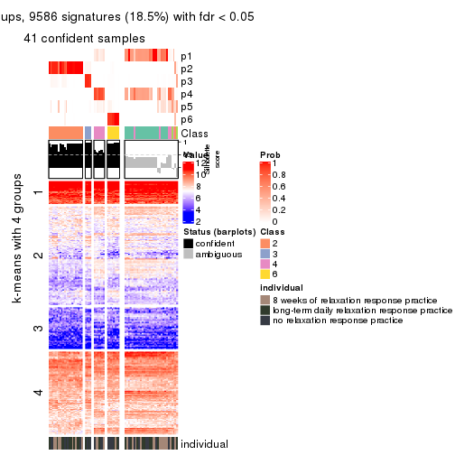
Compare the overlap of signatures from different k:
compare_signatures(res)
get_signature() returns a data frame invisibly. TO get the list of signatures, the function
call should be assigned to a variable explicitly. In following code, if plot argument is set
to FALSE, no heatmap is plotted while only the differential analysis is performed.
# code only for demonstration
tb = get_signature(res, k = ..., plot = FALSE)
An example of the output of tb is:
#> which_row fdr mean_1 mean_2 scaled_mean_1 scaled_mean_2 km
#> 1 38 0.042760348 8.373488 9.131774 -0.5533452 0.5164555 1
#> 2 40 0.018707592 7.106213 8.469186 -0.6173731 0.5762149 1
#> 3 55 0.019134737 10.221463 11.207825 -0.6159697 0.5749050 1
#> 4 59 0.006059896 5.921854 7.869574 -0.6899429 0.6439467 1
#> 5 60 0.018055526 8.928898 10.211722 -0.6204761 0.5791110 1
#> 6 98 0.009384629 15.714769 14.887706 0.6635654 -0.6193277 2
...
The columns in tb are:
which_row: row indices corresponding to the input matrix.fdr: FDR for the differential test. mean_x: The mean value in group x.scaled_mean_x: The mean value in group x after rows are scaled.km: Row groups if k-means clustering is applied to rows.UMAP plot which shows how samples are separated.
dimension_reduction(res, k = 2, method = "UMAP")
dimension_reduction(res, k = 3, method = "UMAP")
dimension_reduction(res, k = 4, method = "UMAP")
dimension_reduction(res, k = 5, method = "UMAP")
dimension_reduction(res, k = 6, method = "UMAP")
Following heatmap shows how subgroups are split when increasing k:
collect_classes(res)
Test correlation between subgroups and known annotations. If the known annotation is numeric, one-way ANOVA test is applied, and if the known annotation is discrete, chi-squared contingency table test is applied.
test_to_known_factors(res)
#> n individual(p) k
#> ATC:skmeans 72 0.280 2
#> ATC:skmeans 72 0.220 3
#> ATC:skmeans 70 0.140 4
#> ATC:skmeans 50 0.293 5
#> ATC:skmeans 41 0.288 6
If matrix rows can be associated to genes, consider to use GO_Enrichment(res,
...) to perform function enrichment for the signature genes.
The object with results only for a single top-value method and a single partition method can be extracted as:
res = res_list["ATC", "pam"]
# you can also extract it by
# res = res_list["ATC:pam"]
A summary of res and all the functions that can be applied to it:
res
#> A 'ConsensusPartition' object with k = 2, 3, 4, 5, 6.
#> On a matrix with 51941 rows and 72 columns.
#> Top rows (1000, 2000, 3000, 4000, 5000) are extracted by 'ATC' method.
#> Subgroups are detected by 'pam' method.
#> Performed in total 1250 partitions by row resampling.
#> Best k for subgroups seems to be 5.
#>
#> Following methods can be applied to this 'ConsensusPartition' object:
#> [1] "cola_report" "collect_classes" "collect_plots"
#> [4] "collect_stats" "colnames" "compare_signatures"
#> [7] "consensus_heatmap" "dimension_reduction" "functional_enrichment"
#> [10] "get_anno_col" "get_anno" "get_classes"
#> [13] "get_consensus" "get_matrix" "get_membership"
#> [16] "get_param" "get_signatures" "get_stats"
#> [19] "is_best_k" "is_stable_k" "membership_heatmap"
#> [22] "ncol" "nrow" "plot_ecdf"
#> [25] "rownames" "select_partition_number" "show"
#> [28] "suggest_best_k" "test_to_known_factors"
collect_plots() function collects all the plots made from res for all k (number of partitions)
into one single page to provide an easy and fast comparison between different k.
collect_plots(res)
The plots are:
k and the heatmap of
predicted classes for each k.k.k.k.All the plots in panels can be made by individual functions and they are plotted later in this section.
select_partition_number() produces several plots showing different
statistics for choosing “optimized” k. There are following statistics:
k;k, the area increased is defined as \(A_k - A_{k-1}\).The detailed explanations of these statistics can be found in the cola vignette.
Generally speaking, lower PAC score, higher mean silhouette score or higher
concordance corresponds to better partition. Rand index and Jaccard index
measure how similar the current partition is compared to partition with k-1.
If they are too similar, we won't accept k is better than k-1.
select_partition_number(res)
The numeric values for all these statistics can be obtained by get_stats().
get_stats(res)
#> k 1-PAC mean_silhouette concordance area_increased Rand Jaccard
#> 2 2 1.000 0.999 0.999 0.5075 0.493 0.493
#> 3 3 0.696 0.748 0.838 0.2589 0.874 0.750
#> 4 4 0.818 0.894 0.937 0.1378 0.831 0.587
#> 5 5 0.916 0.869 0.948 0.0395 0.978 0.917
#> 6 6 0.875 0.832 0.906 0.0478 0.908 0.656
suggest_best_k() suggests the best \(k\) based on these statistics. The rules are as follows:
NA.suggest_best_k(res)
#> [1] 5
#> attr(,"optional")
#> [1] 2
There is also optional best \(k\) = 2 that is worth to check.
Following shows the table of the partitions (You need to click the show/hide
code output link to see it). The membership matrix (columns with name p*)
is inferred by
clue::cl_consensus()
function with the SE method. Basically the value in the membership matrix
represents the probability to belong to a certain group. The finall class
label for an item is determined with the group with highest probability it
belongs to.
In get_classes() function, the entropy is calculated from the membership
matrix and the silhouette score is calculated from the consensus matrix.
cbind(get_classes(res, k = 2), get_membership(res, k = 2))
#> class entropy silhouette p1 p2
#> GSM253663 1 0.000 0.999 1.000 0.000
#> GSM253664 2 0.000 1.000 0.000 1.000
#> GSM253665 1 0.000 0.999 1.000 0.000
#> GSM253666 2 0.000 1.000 0.000 1.000
#> GSM253667 2 0.000 1.000 0.000 1.000
#> GSM253668 2 0.000 1.000 0.000 1.000
#> GSM253669 2 0.000 1.000 0.000 1.000
#> GSM253670 1 0.000 0.999 1.000 0.000
#> GSM253671 1 0.000 0.999 1.000 0.000
#> GSM253672 1 0.000 0.999 1.000 0.000
#> GSM253673 1 0.000 0.999 1.000 0.000
#> GSM253674 2 0.000 1.000 0.000 1.000
#> GSM253675 2 0.000 1.000 0.000 1.000
#> GSM253676 1 0.000 0.999 1.000 0.000
#> GSM253677 1 0.000 0.999 1.000 0.000
#> GSM253678 2 0.000 1.000 0.000 1.000
#> GSM253679 1 0.000 0.999 1.000 0.000
#> GSM253680 1 0.000 0.999 1.000 0.000
#> GSM253681 2 0.000 1.000 0.000 1.000
#> GSM253682 2 0.000 1.000 0.000 1.000
#> GSM253683 2 0.000 1.000 0.000 1.000
#> GSM253684 1 0.000 0.999 1.000 0.000
#> GSM253685 2 0.000 1.000 0.000 1.000
#> GSM253686 1 0.000 0.999 1.000 0.000
#> GSM253687 1 0.000 0.999 1.000 0.000
#> GSM253688 1 0.000 0.999 1.000 0.000
#> GSM253689 1 0.000 0.999 1.000 0.000
#> GSM253690 1 0.000 0.999 1.000 0.000
#> GSM253691 1 0.000 0.999 1.000 0.000
#> GSM253692 1 0.000 0.999 1.000 0.000
#> GSM253693 2 0.000 1.000 0.000 1.000
#> GSM253694 2 0.000 1.000 0.000 1.000
#> GSM253695 1 0.000 0.999 1.000 0.000
#> GSM253696 1 0.000 0.999 1.000 0.000
#> GSM253697 2 0.000 1.000 0.000 1.000
#> GSM253698 2 0.000 1.000 0.000 1.000
#> GSM253699 1 0.000 0.999 1.000 0.000
#> GSM253700 2 0.000 1.000 0.000 1.000
#> GSM253701 1 0.000 0.999 1.000 0.000
#> GSM253702 1 0.000 0.999 1.000 0.000
#> GSM253703 2 0.000 1.000 0.000 1.000
#> GSM253704 2 0.000 1.000 0.000 1.000
#> GSM253705 1 0.000 0.999 1.000 0.000
#> GSM253706 1 0.000 0.999 1.000 0.000
#> GSM253707 2 0.000 1.000 0.000 1.000
#> GSM253708 2 0.000 1.000 0.000 1.000
#> GSM253709 1 0.000 0.999 1.000 0.000
#> GSM253710 1 0.000 0.999 1.000 0.000
#> GSM253711 2 0.000 1.000 0.000 1.000
#> GSM253712 1 0.000 0.999 1.000 0.000
#> GSM253713 1 0.000 0.999 1.000 0.000
#> GSM253714 1 0.000 0.999 1.000 0.000
#> GSM253715 2 0.000 1.000 0.000 1.000
#> GSM253716 2 0.000 1.000 0.000 1.000
#> GSM253717 1 0.278 0.950 0.952 0.048
#> GSM253718 2 0.000 1.000 0.000 1.000
#> GSM253719 2 0.000 1.000 0.000 1.000
#> GSM253720 2 0.000 1.000 0.000 1.000
#> GSM253721 2 0.000 1.000 0.000 1.000
#> GSM253722 2 0.000 1.000 0.000 1.000
#> GSM253723 2 0.000 1.000 0.000 1.000
#> GSM253724 2 0.000 1.000 0.000 1.000
#> GSM253725 1 0.000 0.999 1.000 0.000
#> GSM253726 1 0.000 0.999 1.000 0.000
#> GSM253727 1 0.000 0.999 1.000 0.000
#> GSM253728 2 0.000 1.000 0.000 1.000
#> GSM253729 2 0.000 1.000 0.000 1.000
#> GSM253730 2 0.000 1.000 0.000 1.000
#> GSM253731 1 0.000 0.999 1.000 0.000
#> GSM253732 2 0.000 1.000 0.000 1.000
#> GSM253733 1 0.000 0.999 1.000 0.000
#> GSM253734 2 0.000 1.000 0.000 1.000
cbind(get_classes(res, k = 3), get_membership(res, k = 3))
#> class entropy silhouette p1 p2 p3
#> GSM253663 1 0.0000 0.886 1.000 0.000 0.000
#> GSM253664 2 0.0424 0.694 0.000 0.992 0.008
#> GSM253665 1 0.0000 0.886 1.000 0.000 0.000
#> GSM253666 2 0.3116 0.684 0.000 0.892 0.108
#> GSM253667 3 0.6095 0.987 0.000 0.392 0.608
#> GSM253668 2 0.6095 0.602 0.000 0.608 0.392
#> GSM253669 2 0.6095 0.602 0.000 0.608 0.392
#> GSM253670 1 0.0000 0.886 1.000 0.000 0.000
#> GSM253671 1 0.0000 0.886 1.000 0.000 0.000
#> GSM253672 1 0.0000 0.886 1.000 0.000 0.000
#> GSM253673 1 0.6062 0.660 0.616 0.000 0.384
#> GSM253674 2 0.4002 0.670 0.000 0.840 0.160
#> GSM253675 2 0.1753 0.694 0.000 0.952 0.048
#> GSM253676 1 0.0000 0.886 1.000 0.000 0.000
#> GSM253677 1 0.0000 0.886 1.000 0.000 0.000
#> GSM253678 2 0.0000 0.693 0.000 1.000 0.000
#> GSM253679 1 0.0000 0.886 1.000 0.000 0.000
#> GSM253680 1 0.6896 0.626 0.588 0.020 0.392
#> GSM253681 2 0.0000 0.693 0.000 1.000 0.000
#> GSM253682 2 0.0000 0.693 0.000 1.000 0.000
#> GSM253683 3 0.6095 0.987 0.000 0.392 0.608
#> GSM253684 1 0.6062 0.660 0.616 0.000 0.384
#> GSM253685 2 0.0000 0.693 0.000 1.000 0.000
#> GSM253686 1 0.0000 0.886 1.000 0.000 0.000
#> GSM253687 1 0.0000 0.886 1.000 0.000 0.000
#> GSM253688 1 0.0000 0.886 1.000 0.000 0.000
#> GSM253689 1 0.6062 0.660 0.616 0.000 0.384
#> GSM253690 1 0.6062 0.660 0.616 0.000 0.384
#> GSM253691 1 0.6062 0.660 0.616 0.000 0.384
#> GSM253692 1 0.6062 0.660 0.616 0.000 0.384
#> GSM253693 2 0.6095 0.602 0.000 0.608 0.392
#> GSM253694 2 0.0424 0.694 0.000 0.992 0.008
#> GSM253695 1 0.2959 0.840 0.900 0.000 0.100
#> GSM253696 1 0.0000 0.886 1.000 0.000 0.000
#> GSM253697 3 0.6095 0.987 0.000 0.392 0.608
#> GSM253698 2 0.6095 0.602 0.000 0.608 0.392
#> GSM253699 1 0.9311 0.369 0.452 0.164 0.384
#> GSM253700 3 0.6095 0.987 0.000 0.392 0.608
#> GSM253701 1 0.0000 0.886 1.000 0.000 0.000
#> GSM253702 1 0.0000 0.886 1.000 0.000 0.000
#> GSM253703 2 0.0000 0.693 0.000 1.000 0.000
#> GSM253704 2 0.0000 0.693 0.000 1.000 0.000
#> GSM253705 1 0.4062 0.805 0.836 0.000 0.164
#> GSM253706 1 0.0000 0.886 1.000 0.000 0.000
#> GSM253707 3 0.6095 0.987 0.000 0.392 0.608
#> GSM253708 3 0.6095 0.987 0.000 0.392 0.608
#> GSM253709 1 0.0000 0.886 1.000 0.000 0.000
#> GSM253710 1 0.0000 0.886 1.000 0.000 0.000
#> GSM253711 2 0.0000 0.693 0.000 1.000 0.000
#> GSM253712 1 0.0000 0.886 1.000 0.000 0.000
#> GSM253713 1 0.0000 0.886 1.000 0.000 0.000
#> GSM253714 1 0.6062 0.660 0.616 0.000 0.384
#> GSM253715 2 0.0000 0.693 0.000 1.000 0.000
#> GSM253716 2 0.5650 -0.248 0.000 0.688 0.312
#> GSM253717 2 0.6095 0.602 0.000 0.608 0.392
#> GSM253718 3 0.6095 0.987 0.000 0.392 0.608
#> GSM253719 3 0.6095 0.987 0.000 0.392 0.608
#> GSM253720 2 0.0237 0.694 0.000 0.996 0.004
#> GSM253721 2 0.0000 0.693 0.000 1.000 0.000
#> GSM253722 2 0.6095 0.602 0.000 0.608 0.392
#> GSM253723 3 0.6286 0.871 0.000 0.464 0.536
#> GSM253724 2 0.6267 -0.703 0.000 0.548 0.452
#> GSM253725 1 0.0000 0.886 1.000 0.000 0.000
#> GSM253726 1 0.0000 0.886 1.000 0.000 0.000
#> GSM253727 1 0.0000 0.886 1.000 0.000 0.000
#> GSM253728 2 0.6095 0.602 0.000 0.608 0.392
#> GSM253729 2 0.0000 0.693 0.000 1.000 0.000
#> GSM253730 2 0.4235 0.661 0.000 0.824 0.176
#> GSM253731 1 0.0000 0.886 1.000 0.000 0.000
#> GSM253732 3 0.6095 0.987 0.000 0.392 0.608
#> GSM253733 1 0.0000 0.886 1.000 0.000 0.000
#> GSM253734 2 0.6095 0.602 0.000 0.608 0.392
cbind(get_classes(res, k = 4), get_membership(res, k = 4))
#> class entropy silhouette p1 p2 p3 p4
#> GSM253663 1 0.1118 0.948 0.964 0.036 0.000 0.000
#> GSM253664 4 0.0188 0.955 0.000 0.004 0.000 0.996
#> GSM253665 1 0.0000 0.988 1.000 0.000 0.000 0.000
#> GSM253666 4 0.0188 0.955 0.000 0.004 0.000 0.996
#> GSM253667 3 0.0000 0.945 0.000 0.000 1.000 0.000
#> GSM253668 2 0.2345 0.759 0.000 0.900 0.000 0.100
#> GSM253669 4 0.3610 0.726 0.000 0.200 0.000 0.800
#> GSM253670 1 0.0000 0.988 1.000 0.000 0.000 0.000
#> GSM253671 1 0.0000 0.988 1.000 0.000 0.000 0.000
#> GSM253672 1 0.0000 0.988 1.000 0.000 0.000 0.000
#> GSM253673 2 0.2408 0.848 0.104 0.896 0.000 0.000
#> GSM253674 4 0.0000 0.957 0.000 0.000 0.000 1.000
#> GSM253675 4 0.0336 0.952 0.000 0.008 0.000 0.992
#> GSM253676 1 0.0000 0.988 1.000 0.000 0.000 0.000
#> GSM253677 1 0.0000 0.988 1.000 0.000 0.000 0.000
#> GSM253678 4 0.0000 0.957 0.000 0.000 0.000 1.000
#> GSM253679 1 0.0000 0.988 1.000 0.000 0.000 0.000
#> GSM253680 2 0.2408 0.848 0.104 0.896 0.000 0.000
#> GSM253681 4 0.0000 0.957 0.000 0.000 0.000 1.000
#> GSM253682 4 0.0000 0.957 0.000 0.000 0.000 1.000
#> GSM253683 3 0.2345 0.939 0.000 0.100 0.900 0.000
#> GSM253684 2 0.2530 0.843 0.112 0.888 0.000 0.000
#> GSM253685 4 0.0000 0.957 0.000 0.000 0.000 1.000
#> GSM253686 1 0.0000 0.988 1.000 0.000 0.000 0.000
#> GSM253687 1 0.0000 0.988 1.000 0.000 0.000 0.000
#> GSM253688 1 0.0000 0.988 1.000 0.000 0.000 0.000
#> GSM253689 2 0.2408 0.848 0.104 0.896 0.000 0.000
#> GSM253690 2 0.2408 0.848 0.104 0.896 0.000 0.000
#> GSM253691 2 0.2408 0.848 0.104 0.896 0.000 0.000
#> GSM253692 2 0.2408 0.848 0.104 0.896 0.000 0.000
#> GSM253693 4 0.0000 0.957 0.000 0.000 0.000 1.000
#> GSM253694 4 0.0000 0.957 0.000 0.000 0.000 1.000
#> GSM253695 2 0.4941 0.359 0.436 0.564 0.000 0.000
#> GSM253696 1 0.0000 0.988 1.000 0.000 0.000 0.000
#> GSM253697 3 0.0000 0.945 0.000 0.000 1.000 0.000
#> GSM253698 2 0.3528 0.697 0.000 0.808 0.000 0.192
#> GSM253699 2 0.2408 0.848 0.104 0.896 0.000 0.000
#> GSM253700 3 0.0188 0.945 0.000 0.004 0.996 0.000
#> GSM253701 1 0.0000 0.988 1.000 0.000 0.000 0.000
#> GSM253702 1 0.0000 0.988 1.000 0.000 0.000 0.000
#> GSM253703 4 0.0000 0.957 0.000 0.000 0.000 1.000
#> GSM253704 4 0.0000 0.957 0.000 0.000 0.000 1.000
#> GSM253705 2 0.4830 0.478 0.392 0.608 0.000 0.000
#> GSM253706 1 0.0000 0.988 1.000 0.000 0.000 0.000
#> GSM253707 3 0.2345 0.939 0.000 0.100 0.900 0.000
#> GSM253708 3 0.2345 0.939 0.000 0.100 0.900 0.000
#> GSM253709 1 0.0000 0.988 1.000 0.000 0.000 0.000
#> GSM253710 1 0.0000 0.988 1.000 0.000 0.000 0.000
#> GSM253711 4 0.0000 0.957 0.000 0.000 0.000 1.000
#> GSM253712 1 0.0000 0.988 1.000 0.000 0.000 0.000
#> GSM253713 1 0.0000 0.988 1.000 0.000 0.000 0.000
#> GSM253714 2 0.2408 0.848 0.104 0.896 0.000 0.000
#> GSM253715 4 0.0000 0.957 0.000 0.000 0.000 1.000
#> GSM253716 4 0.4222 0.635 0.000 0.000 0.272 0.728
#> GSM253717 2 0.4843 0.355 0.000 0.604 0.000 0.396
#> GSM253718 3 0.0000 0.945 0.000 0.000 1.000 0.000
#> GSM253719 3 0.0188 0.944 0.000 0.004 0.996 0.000
#> GSM253720 4 0.0000 0.957 0.000 0.000 0.000 1.000
#> GSM253721 4 0.0188 0.955 0.000 0.004 0.000 0.996
#> GSM253722 4 0.4643 0.448 0.000 0.344 0.000 0.656
#> GSM253723 3 0.4487 0.863 0.000 0.100 0.808 0.092
#> GSM253724 3 0.2197 0.881 0.000 0.004 0.916 0.080
#> GSM253725 1 0.0000 0.988 1.000 0.000 0.000 0.000
#> GSM253726 1 0.0000 0.988 1.000 0.000 0.000 0.000
#> GSM253727 1 0.3688 0.689 0.792 0.208 0.000 0.000
#> GSM253728 2 0.4406 0.536 0.000 0.700 0.000 0.300
#> GSM253729 4 0.0000 0.957 0.000 0.000 0.000 1.000
#> GSM253730 4 0.0469 0.948 0.000 0.012 0.000 0.988
#> GSM253731 1 0.0000 0.988 1.000 0.000 0.000 0.000
#> GSM253732 3 0.2345 0.939 0.000 0.100 0.900 0.000
#> GSM253733 1 0.0000 0.988 1.000 0.000 0.000 0.000
#> GSM253734 4 0.0000 0.957 0.000 0.000 0.000 1.000
cbind(get_classes(res, k = 5), get_membership(res, k = 5))
#> class entropy silhouette p1 p2 p3 p4 p5
#> GSM253663 1 0.0880 0.955 0.968 0.000 0.000 0.000 0.032
#> GSM253664 4 0.0880 0.931 0.000 0.032 0.000 0.968 0.000
#> GSM253665 1 0.0000 0.987 1.000 0.000 0.000 0.000 0.000
#> GSM253666 4 0.0880 0.931 0.000 0.032 0.000 0.968 0.000
#> GSM253667 2 0.4171 0.326 0.000 0.604 0.396 0.000 0.000
#> GSM253668 5 0.0880 0.811 0.000 0.032 0.000 0.000 0.968
#> GSM253669 4 0.4302 0.621 0.000 0.032 0.000 0.720 0.248
#> GSM253670 1 0.0000 0.987 1.000 0.000 0.000 0.000 0.000
#> GSM253671 1 0.0000 0.987 1.000 0.000 0.000 0.000 0.000
#> GSM253672 1 0.0000 0.987 1.000 0.000 0.000 0.000 0.000
#> GSM253673 5 0.0000 0.827 0.000 0.000 0.000 0.000 1.000
#> GSM253674 4 0.0000 0.945 0.000 0.000 0.000 1.000 0.000
#> GSM253675 4 0.1041 0.928 0.000 0.032 0.000 0.964 0.004
#> GSM253676 1 0.0000 0.987 1.000 0.000 0.000 0.000 0.000
#> GSM253677 1 0.0000 0.987 1.000 0.000 0.000 0.000 0.000
#> GSM253678 4 0.0000 0.945 0.000 0.000 0.000 1.000 0.000
#> GSM253679 1 0.0000 0.987 1.000 0.000 0.000 0.000 0.000
#> GSM253680 5 0.0000 0.827 0.000 0.000 0.000 0.000 1.000
#> GSM253681 4 0.0000 0.945 0.000 0.000 0.000 1.000 0.000
#> GSM253682 4 0.0000 0.945 0.000 0.000 0.000 1.000 0.000
#> GSM253683 3 0.0000 0.953 0.000 0.000 1.000 0.000 0.000
#> GSM253684 5 0.0963 0.805 0.036 0.000 0.000 0.000 0.964
#> GSM253685 4 0.0000 0.945 0.000 0.000 0.000 1.000 0.000
#> GSM253686 1 0.0000 0.987 1.000 0.000 0.000 0.000 0.000
#> GSM253687 1 0.0000 0.987 1.000 0.000 0.000 0.000 0.000
#> GSM253688 1 0.0000 0.987 1.000 0.000 0.000 0.000 0.000
#> GSM253689 5 0.0000 0.827 0.000 0.000 0.000 0.000 1.000
#> GSM253690 5 0.0000 0.827 0.000 0.000 0.000 0.000 1.000
#> GSM253691 5 0.0000 0.827 0.000 0.000 0.000 0.000 1.000
#> GSM253692 5 0.0000 0.827 0.000 0.000 0.000 0.000 1.000
#> GSM253693 4 0.0000 0.945 0.000 0.000 0.000 1.000 0.000
#> GSM253694 4 0.0000 0.945 0.000 0.000 0.000 1.000 0.000
#> GSM253695 5 0.4219 0.283 0.416 0.000 0.000 0.000 0.584
#> GSM253696 1 0.0000 0.987 1.000 0.000 0.000 0.000 0.000
#> GSM253697 2 0.0880 0.897 0.000 0.968 0.032 0.000 0.000
#> GSM253698 5 0.3536 0.677 0.000 0.032 0.000 0.156 0.812
#> GSM253699 5 0.0000 0.827 0.000 0.000 0.000 0.000 1.000
#> GSM253700 3 0.3109 0.708 0.000 0.200 0.800 0.000 0.000
#> GSM253701 1 0.0000 0.987 1.000 0.000 0.000 0.000 0.000
#> GSM253702 1 0.0000 0.987 1.000 0.000 0.000 0.000 0.000
#> GSM253703 4 0.0000 0.945 0.000 0.000 0.000 1.000 0.000
#> GSM253704 4 0.2179 0.842 0.000 0.112 0.000 0.888 0.000
#> GSM253705 5 0.4161 0.358 0.392 0.000 0.000 0.000 0.608
#> GSM253706 1 0.0000 0.987 1.000 0.000 0.000 0.000 0.000
#> GSM253707 3 0.0000 0.953 0.000 0.000 1.000 0.000 0.000
#> GSM253708 3 0.0000 0.953 0.000 0.000 1.000 0.000 0.000
#> GSM253709 1 0.0000 0.987 1.000 0.000 0.000 0.000 0.000
#> GSM253710 1 0.0000 0.987 1.000 0.000 0.000 0.000 0.000
#> GSM253711 4 0.0000 0.945 0.000 0.000 0.000 1.000 0.000
#> GSM253712 1 0.0000 0.987 1.000 0.000 0.000 0.000 0.000
#> GSM253713 1 0.0000 0.987 1.000 0.000 0.000 0.000 0.000
#> GSM253714 5 0.0000 0.827 0.000 0.000 0.000 0.000 1.000
#> GSM253715 4 0.0000 0.945 0.000 0.000 0.000 1.000 0.000
#> GSM253716 2 0.0794 0.875 0.000 0.972 0.000 0.028 0.000
#> GSM253717 5 0.4182 0.286 0.000 0.000 0.000 0.400 0.600
#> GSM253718 2 0.0880 0.897 0.000 0.968 0.032 0.000 0.000
#> GSM253719 2 0.0880 0.897 0.000 0.968 0.032 0.000 0.000
#> GSM253720 4 0.0000 0.945 0.000 0.000 0.000 1.000 0.000
#> GSM253721 4 0.0880 0.931 0.000 0.032 0.000 0.968 0.000
#> GSM253722 4 0.5014 0.150 0.000 0.032 0.000 0.536 0.432
#> GSM253723 3 0.0000 0.953 0.000 0.000 1.000 0.000 0.000
#> GSM253724 2 0.0000 0.877 0.000 1.000 0.000 0.000 0.000
#> GSM253725 1 0.0000 0.987 1.000 0.000 0.000 0.000 0.000
#> GSM253726 1 0.0000 0.987 1.000 0.000 0.000 0.000 0.000
#> GSM253727 1 0.3336 0.686 0.772 0.000 0.000 0.000 0.228
#> GSM253728 5 0.4221 0.582 0.000 0.032 0.000 0.236 0.732
#> GSM253729 4 0.0000 0.945 0.000 0.000 0.000 1.000 0.000
#> GSM253730 4 0.0703 0.929 0.000 0.000 0.000 0.976 0.024
#> GSM253731 1 0.0000 0.987 1.000 0.000 0.000 0.000 0.000
#> GSM253732 3 0.0000 0.953 0.000 0.000 1.000 0.000 0.000
#> GSM253733 1 0.0000 0.987 1.000 0.000 0.000 0.000 0.000
#> GSM253734 4 0.0000 0.945 0.000 0.000 0.000 1.000 0.000
cbind(get_classes(res, k = 6), get_membership(res, k = 6))
#> class entropy silhouette p1 p2 p3 p4 p5 p6
#> GSM253663 1 0.0713 0.9468 0.972 0.000 0.000 0.028 0.000 0.000
#> GSM253664 6 0.3789 0.6694 0.000 0.000 0.000 0.000 0.416 0.584
#> GSM253665 1 0.0000 0.9739 1.000 0.000 0.000 0.000 0.000 0.000
#> GSM253666 6 0.3817 0.6442 0.000 0.000 0.000 0.000 0.432 0.568
#> GSM253667 2 0.3747 0.2840 0.000 0.604 0.396 0.000 0.000 0.000
#> GSM253668 6 0.3390 0.5831 0.000 0.000 0.000 0.296 0.000 0.704
#> GSM253669 6 0.4582 0.7501 0.000 0.000 0.000 0.100 0.216 0.684
#> GSM253670 1 0.0000 0.9739 1.000 0.000 0.000 0.000 0.000 0.000
#> GSM253671 1 0.0260 0.9687 0.992 0.000 0.000 0.008 0.000 0.000
#> GSM253672 1 0.0000 0.9739 1.000 0.000 0.000 0.000 0.000 0.000
#> GSM253673 4 0.0000 0.8718 0.000 0.000 0.000 1.000 0.000 0.000
#> GSM253674 5 0.0146 0.8429 0.000 0.000 0.000 0.000 0.996 0.004
#> GSM253675 6 0.3508 0.7513 0.000 0.000 0.000 0.004 0.292 0.704
#> GSM253676 1 0.0260 0.9687 0.992 0.000 0.000 0.008 0.000 0.000
#> GSM253677 1 0.0000 0.9739 1.000 0.000 0.000 0.000 0.000 0.000
#> GSM253678 5 0.0713 0.8378 0.000 0.000 0.000 0.000 0.972 0.028
#> GSM253679 1 0.0260 0.9687 0.992 0.000 0.000 0.008 0.000 0.000
#> GSM253680 4 0.0000 0.8718 0.000 0.000 0.000 1.000 0.000 0.000
#> GSM253681 5 0.0790 0.8374 0.000 0.000 0.000 0.000 0.968 0.032
#> GSM253682 5 0.3244 0.7046 0.000 0.000 0.000 0.000 0.732 0.268
#> GSM253683 3 0.0000 0.9488 0.000 0.000 1.000 0.000 0.000 0.000
#> GSM253684 1 0.5175 -0.0229 0.492 0.000 0.000 0.420 0.000 0.088
#> GSM253685 5 0.3371 0.6915 0.000 0.000 0.000 0.000 0.708 0.292
#> GSM253686 1 0.0000 0.9739 1.000 0.000 0.000 0.000 0.000 0.000
#> GSM253687 1 0.0000 0.9739 1.000 0.000 0.000 0.000 0.000 0.000
#> GSM253688 1 0.0000 0.9739 1.000 0.000 0.000 0.000 0.000 0.000
#> GSM253689 4 0.0000 0.8718 0.000 0.000 0.000 1.000 0.000 0.000
#> GSM253690 4 0.0000 0.8718 0.000 0.000 0.000 1.000 0.000 0.000
#> GSM253691 4 0.0000 0.8718 0.000 0.000 0.000 1.000 0.000 0.000
#> GSM253692 4 0.0000 0.8718 0.000 0.000 0.000 1.000 0.000 0.000
#> GSM253693 5 0.0790 0.8198 0.000 0.000 0.000 0.000 0.968 0.032
#> GSM253694 5 0.0146 0.8429 0.000 0.000 0.000 0.000 0.996 0.004
#> GSM253695 4 0.2631 0.7184 0.180 0.000 0.000 0.820 0.000 0.000
#> GSM253696 1 0.0000 0.9739 1.000 0.000 0.000 0.000 0.000 0.000
#> GSM253697 2 0.0000 0.9124 0.000 1.000 0.000 0.000 0.000 0.000
#> GSM253698 6 0.4456 0.7524 0.000 0.000 0.000 0.180 0.112 0.708
#> GSM253699 4 0.0000 0.8718 0.000 0.000 0.000 1.000 0.000 0.000
#> GSM253700 3 0.2793 0.7161 0.000 0.200 0.800 0.000 0.000 0.000
#> GSM253701 1 0.0146 0.9715 0.996 0.000 0.000 0.004 0.000 0.000
#> GSM253702 1 0.0000 0.9739 1.000 0.000 0.000 0.000 0.000 0.000
#> GSM253703 5 0.0146 0.8429 0.000 0.000 0.000 0.000 0.996 0.004
#> GSM253704 5 0.1950 0.8062 0.000 0.064 0.000 0.000 0.912 0.024
#> GSM253705 4 0.3330 0.6049 0.284 0.000 0.000 0.716 0.000 0.000
#> GSM253706 1 0.0000 0.9739 1.000 0.000 0.000 0.000 0.000 0.000
#> GSM253707 3 0.0000 0.9488 0.000 0.000 1.000 0.000 0.000 0.000
#> GSM253708 3 0.0000 0.9488 0.000 0.000 1.000 0.000 0.000 0.000
#> GSM253709 1 0.0146 0.9715 0.996 0.000 0.000 0.004 0.000 0.000
#> GSM253710 1 0.0000 0.9739 1.000 0.000 0.000 0.000 0.000 0.000
#> GSM253711 5 0.0146 0.8439 0.000 0.000 0.000 0.000 0.996 0.004
#> GSM253712 1 0.0000 0.9739 1.000 0.000 0.000 0.000 0.000 0.000
#> GSM253713 1 0.0000 0.9739 1.000 0.000 0.000 0.000 0.000 0.000
#> GSM253714 4 0.0000 0.8718 0.000 0.000 0.000 1.000 0.000 0.000
#> GSM253715 5 0.0146 0.8429 0.000 0.000 0.000 0.000 0.996 0.004
#> GSM253716 2 0.0000 0.9124 0.000 1.000 0.000 0.000 0.000 0.000
#> GSM253717 5 0.3851 0.1603 0.000 0.000 0.000 0.460 0.540 0.000
#> GSM253718 2 0.0000 0.9124 0.000 1.000 0.000 0.000 0.000 0.000
#> GSM253719 2 0.0000 0.9124 0.000 1.000 0.000 0.000 0.000 0.000
#> GSM253720 5 0.0146 0.8429 0.000 0.000 0.000 0.000 0.996 0.004
#> GSM253721 6 0.3797 0.6636 0.000 0.000 0.000 0.000 0.420 0.580
#> GSM253722 6 0.4566 0.7645 0.000 0.000 0.000 0.160 0.140 0.700
#> GSM253723 3 0.0632 0.9326 0.000 0.000 0.976 0.000 0.000 0.024
#> GSM253724 2 0.0000 0.9124 0.000 1.000 0.000 0.000 0.000 0.000
#> GSM253725 1 0.0000 0.9739 1.000 0.000 0.000 0.000 0.000 0.000
#> GSM253726 1 0.0000 0.9739 1.000 0.000 0.000 0.000 0.000 0.000
#> GSM253727 4 0.3620 0.5023 0.352 0.000 0.000 0.648 0.000 0.000
#> GSM253728 6 0.4466 0.7547 0.000 0.000 0.000 0.176 0.116 0.708
#> GSM253729 5 0.3244 0.7046 0.000 0.000 0.000 0.000 0.732 0.268
#> GSM253730 5 0.3244 0.7046 0.000 0.000 0.000 0.000 0.732 0.268
#> GSM253731 1 0.0000 0.9739 1.000 0.000 0.000 0.000 0.000 0.000
#> GSM253732 3 0.0000 0.9488 0.000 0.000 1.000 0.000 0.000 0.000
#> GSM253733 1 0.0000 0.9739 1.000 0.000 0.000 0.000 0.000 0.000
#> GSM253734 5 0.0146 0.8438 0.000 0.000 0.000 0.000 0.996 0.004
Heatmaps for the consensus matrix. It visualizes the probability of two samples to be in a same group.
consensus_heatmap(res, k = 2)
consensus_heatmap(res, k = 3)
consensus_heatmap(res, k = 4)
consensus_heatmap(res, k = 5)
consensus_heatmap(res, k = 6)
Heatmaps for the membership of samples in all partitions to see how consistent they are:
membership_heatmap(res, k = 2)
membership_heatmap(res, k = 3)

membership_heatmap(res, k = 4)
membership_heatmap(res, k = 5)
membership_heatmap(res, k = 6)
As soon as we have had the classes for columns, we can look for signatures which are significantly different between classes which can be candidate marks for certain classes. Following are the heatmaps for signatures.
Signature heatmaps where rows are scaled:
get_signatures(res, k = 2)
get_signatures(res, k = 3)
get_signatures(res, k = 4)
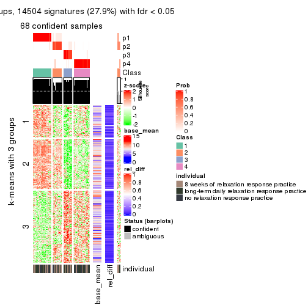
get_signatures(res, k = 5)
get_signatures(res, k = 6)
Signature heatmaps where rows are not scaled:
get_signatures(res, k = 2, scale_rows = FALSE)
get_signatures(res, k = 3, scale_rows = FALSE)
get_signatures(res, k = 4, scale_rows = FALSE)
get_signatures(res, k = 5, scale_rows = FALSE)
get_signatures(res, k = 6, scale_rows = FALSE)
Compare the overlap of signatures from different k:
compare_signatures(res)
get_signature() returns a data frame invisibly. TO get the list of signatures, the function
call should be assigned to a variable explicitly. In following code, if plot argument is set
to FALSE, no heatmap is plotted while only the differential analysis is performed.
# code only for demonstration
tb = get_signature(res, k = ..., plot = FALSE)
An example of the output of tb is:
#> which_row fdr mean_1 mean_2 scaled_mean_1 scaled_mean_2 km
#> 1 38 0.042760348 8.373488 9.131774 -0.5533452 0.5164555 1
#> 2 40 0.018707592 7.106213 8.469186 -0.6173731 0.5762149 1
#> 3 55 0.019134737 10.221463 11.207825 -0.6159697 0.5749050 1
#> 4 59 0.006059896 5.921854 7.869574 -0.6899429 0.6439467 1
#> 5 60 0.018055526 8.928898 10.211722 -0.6204761 0.5791110 1
#> 6 98 0.009384629 15.714769 14.887706 0.6635654 -0.6193277 2
...
The columns in tb are:
which_row: row indices corresponding to the input matrix.fdr: FDR for the differential test. mean_x: The mean value in group x.scaled_mean_x: The mean value in group x after rows are scaled.km: Row groups if k-means clustering is applied to rows.UMAP plot which shows how samples are separated.
dimension_reduction(res, k = 2, method = "UMAP")

dimension_reduction(res, k = 3, method = "UMAP")
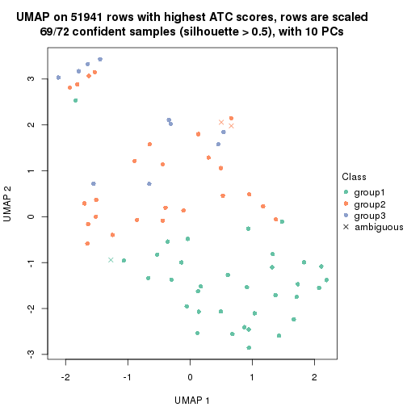
dimension_reduction(res, k = 4, method = "UMAP")
dimension_reduction(res, k = 5, method = "UMAP")
dimension_reduction(res, k = 6, method = "UMAP")
Following heatmap shows how subgroups are split when increasing k:
collect_classes(res)
Test correlation between subgroups and known annotations. If the known annotation is numeric, one-way ANOVA test is applied, and if the known annotation is discrete, chi-squared contingency table test is applied.
test_to_known_factors(res)
#> n individual(p) k
#> ATC:pam 72 0.280 2
#> ATC:pam 69 0.417 3
#> ATC:pam 68 0.510 4
#> ATC:pam 67 0.263 5
#> ATC:pam 69 0.190 6
If matrix rows can be associated to genes, consider to use GO_Enrichment(res,
...) to perform function enrichment for the signature genes.
The object with results only for a single top-value method and a single partition method can be extracted as:
res = res_list["ATC", "mclust"]
# you can also extract it by
# res = res_list["ATC:mclust"]
A summary of res and all the functions that can be applied to it:
res
#> A 'ConsensusPartition' object with k = 2, 3, 4, 5, 6.
#> On a matrix with 51941 rows and 72 columns.
#> Top rows (1000, 2000, 3000, 4000, 5000) are extracted by 'ATC' method.
#> Subgroups are detected by 'mclust' method.
#> Performed in total 1250 partitions by row resampling.
#> Best k for subgroups seems to be 2.
#>
#> Following methods can be applied to this 'ConsensusPartition' object:
#> [1] "cola_report" "collect_classes" "collect_plots"
#> [4] "collect_stats" "colnames" "compare_signatures"
#> [7] "consensus_heatmap" "dimension_reduction" "functional_enrichment"
#> [10] "get_anno_col" "get_anno" "get_classes"
#> [13] "get_consensus" "get_matrix" "get_membership"
#> [16] "get_param" "get_signatures" "get_stats"
#> [19] "is_best_k" "is_stable_k" "membership_heatmap"
#> [22] "ncol" "nrow" "plot_ecdf"
#> [25] "rownames" "select_partition_number" "show"
#> [28] "suggest_best_k" "test_to_known_factors"
collect_plots() function collects all the plots made from res for all k (number of partitions)
into one single page to provide an easy and fast comparison between different k.
collect_plots(res)
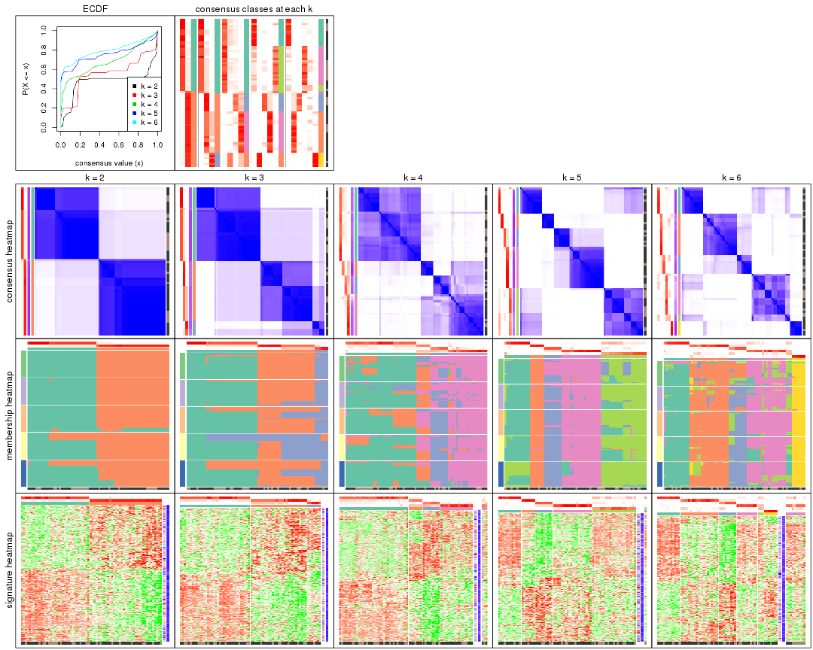
The plots are:
k and the heatmap of
predicted classes for each k.k.k.k.All the plots in panels can be made by individual functions and they are plotted later in this section.
select_partition_number() produces several plots showing different
statistics for choosing “optimized” k. There are following statistics:
k;k, the area increased is defined as \(A_k - A_{k-1}\).The detailed explanations of these statistics can be found in the cola vignette.
Generally speaking, lower PAC score, higher mean silhouette score or higher
concordance corresponds to better partition. Rand index and Jaccard index
measure how similar the current partition is compared to partition with k-1.
If they are too similar, we won't accept k is better than k-1.
select_partition_number(res)
The numeric values for all these statistics can be obtained by get_stats().
get_stats(res)
#> k 1-PAC mean_silhouette concordance area_increased Rand Jaccard
#> 2 2 0.554 0.956 0.946 0.4739 0.493 0.493
#> 3 3 0.435 0.825 0.827 0.1671 0.893 0.789
#> 4 4 0.600 0.769 0.784 0.2345 0.930 0.830
#> 5 5 0.696 0.830 0.864 0.1070 0.883 0.659
#> 6 6 0.728 0.732 0.832 0.0518 0.977 0.896
suggest_best_k() suggests the best \(k\) based on these statistics. The rules are as follows:
NA.suggest_best_k(res)
#> [1] 2
Following shows the table of the partitions (You need to click the show/hide
code output link to see it). The membership matrix (columns with name p*)
is inferred by
clue::cl_consensus()
function with the SE method. Basically the value in the membership matrix
represents the probability to belong to a certain group. The finall class
label for an item is determined with the group with highest probability it
belongs to.
In get_classes() function, the entropy is calculated from the membership
matrix and the silhouette score is calculated from the consensus matrix.
cbind(get_classes(res, k = 2), get_membership(res, k = 2))
#> class entropy silhouette p1 p2
#> GSM253663 1 0.4690 0.960 0.900 0.100
#> GSM253664 2 0.1843 0.979 0.028 0.972
#> GSM253665 1 0.0000 0.919 1.000 0.000
#> GSM253666 2 0.3114 0.947 0.056 0.944
#> GSM253667 2 0.1633 0.977 0.024 0.976
#> GSM253668 2 0.2778 0.946 0.048 0.952
#> GSM253669 2 0.3114 0.947 0.056 0.944
#> GSM253670 1 0.0000 0.919 1.000 0.000
#> GSM253671 1 0.4690 0.960 0.900 0.100
#> GSM253672 1 0.0000 0.919 1.000 0.000
#> GSM253673 1 0.4815 0.958 0.896 0.104
#> GSM253674 2 0.1843 0.979 0.028 0.972
#> GSM253675 2 0.2778 0.946 0.048 0.952
#> GSM253676 1 0.4690 0.960 0.900 0.100
#> GSM253677 1 0.4690 0.960 0.900 0.100
#> GSM253678 2 0.1843 0.979 0.028 0.972
#> GSM253679 1 0.0000 0.919 1.000 0.000
#> GSM253680 1 0.5629 0.943 0.868 0.132
#> GSM253681 2 0.1843 0.979 0.028 0.972
#> GSM253682 2 0.2043 0.977 0.032 0.968
#> GSM253683 2 0.1843 0.979 0.028 0.972
#> GSM253684 1 0.5629 0.930 0.868 0.132
#> GSM253685 2 0.1843 0.979 0.028 0.972
#> GSM253686 1 0.4690 0.960 0.900 0.100
#> GSM253687 1 0.0000 0.919 1.000 0.000
#> GSM253688 1 0.4690 0.960 0.900 0.100
#> GSM253689 1 0.5294 0.950 0.880 0.120
#> GSM253690 1 0.4690 0.960 0.900 0.100
#> GSM253691 1 0.5294 0.950 0.880 0.120
#> GSM253692 1 0.4815 0.958 0.896 0.104
#> GSM253693 2 0.3733 0.949 0.072 0.928
#> GSM253694 2 0.1843 0.979 0.028 0.972
#> GSM253695 1 0.4690 0.960 0.900 0.100
#> GSM253696 1 0.0000 0.919 1.000 0.000
#> GSM253697 2 0.0672 0.968 0.008 0.992
#> GSM253698 2 0.2778 0.946 0.048 0.952
#> GSM253699 1 0.4690 0.960 0.900 0.100
#> GSM253700 2 0.1843 0.979 0.028 0.972
#> GSM253701 1 0.4690 0.960 0.900 0.100
#> GSM253702 1 0.0000 0.919 1.000 0.000
#> GSM253703 2 0.1843 0.979 0.028 0.972
#> GSM253704 2 0.1843 0.979 0.028 0.972
#> GSM253705 1 0.4690 0.960 0.900 0.100
#> GSM253706 1 0.4690 0.960 0.900 0.100
#> GSM253707 2 0.1843 0.979 0.028 0.972
#> GSM253708 2 0.1843 0.979 0.028 0.972
#> GSM253709 1 0.4690 0.960 0.900 0.100
#> GSM253710 1 0.4690 0.960 0.900 0.100
#> GSM253711 2 0.1843 0.979 0.028 0.972
#> GSM253712 1 0.4690 0.960 0.900 0.100
#> GSM253713 1 0.0000 0.919 1.000 0.000
#> GSM253714 1 0.4690 0.960 0.900 0.100
#> GSM253715 2 0.1843 0.979 0.028 0.972
#> GSM253716 2 0.1843 0.979 0.028 0.972
#> GSM253717 2 0.6973 0.799 0.188 0.812
#> GSM253718 2 0.1843 0.979 0.028 0.972
#> GSM253719 2 0.0672 0.968 0.008 0.992
#> GSM253720 2 0.1843 0.979 0.028 0.972
#> GSM253721 2 0.1184 0.973 0.016 0.984
#> GSM253722 2 0.3114 0.947 0.056 0.944
#> GSM253723 2 0.1843 0.979 0.028 0.972
#> GSM253724 2 0.0672 0.968 0.008 0.992
#> GSM253725 1 0.0000 0.919 1.000 0.000
#> GSM253726 1 0.0000 0.919 1.000 0.000
#> GSM253727 1 0.4690 0.960 0.900 0.100
#> GSM253728 2 0.2778 0.946 0.048 0.952
#> GSM253729 2 0.1843 0.979 0.028 0.972
#> GSM253730 2 0.2043 0.977 0.032 0.968
#> GSM253731 1 0.4690 0.960 0.900 0.100
#> GSM253732 2 0.1843 0.979 0.028 0.972
#> GSM253733 1 0.2603 0.939 0.956 0.044
#> GSM253734 2 0.1843 0.979 0.028 0.972
cbind(get_classes(res, k = 3), get_membership(res, k = 3))
#> class entropy silhouette p1 p2 p3
#> GSM253663 1 0.4700 0.915 0.812 0.180 0.008
#> GSM253664 2 0.5815 0.786 0.004 0.692 0.304
#> GSM253665 1 0.0000 0.807 1.000 0.000 0.000
#> GSM253666 3 0.4575 0.711 0.004 0.184 0.812
#> GSM253667 2 0.0000 0.734 0.000 1.000 0.000
#> GSM253668 3 0.0747 0.826 0.016 0.000 0.984
#> GSM253669 3 0.4784 0.690 0.004 0.200 0.796
#> GSM253670 1 0.0000 0.807 1.000 0.000 0.000
#> GSM253671 1 0.4291 0.917 0.820 0.180 0.000
#> GSM253672 1 0.0000 0.807 1.000 0.000 0.000
#> GSM253673 1 0.4291 0.917 0.820 0.180 0.000
#> GSM253674 2 0.5529 0.797 0.000 0.704 0.296
#> GSM253675 3 0.0661 0.825 0.004 0.008 0.988
#> GSM253676 1 0.4291 0.917 0.820 0.180 0.000
#> GSM253677 1 0.4291 0.917 0.820 0.180 0.000
#> GSM253678 2 0.5529 0.797 0.000 0.704 0.296
#> GSM253679 1 0.0000 0.807 1.000 0.000 0.000
#> GSM253680 1 0.4915 0.910 0.804 0.184 0.012
#> GSM253681 2 0.5529 0.797 0.000 0.704 0.296
#> GSM253682 2 0.5560 0.795 0.000 0.700 0.300
#> GSM253683 2 0.0592 0.729 0.000 0.988 0.012
#> GSM253684 1 0.4700 0.915 0.812 0.180 0.008
#> GSM253685 2 0.5591 0.794 0.000 0.696 0.304
#> GSM253686 1 0.4700 0.915 0.812 0.180 0.008
#> GSM253687 1 0.0237 0.810 0.996 0.004 0.000
#> GSM253688 1 0.4700 0.915 0.812 0.180 0.008
#> GSM253689 1 0.5008 0.911 0.804 0.180 0.016
#> GSM253690 1 0.4291 0.917 0.820 0.180 0.000
#> GSM253691 1 0.4861 0.913 0.808 0.180 0.012
#> GSM253692 1 0.4861 0.913 0.808 0.180 0.012
#> GSM253693 2 0.5785 0.792 0.004 0.696 0.300
#> GSM253694 2 0.5560 0.795 0.000 0.700 0.300
#> GSM253695 1 0.4700 0.915 0.812 0.180 0.008
#> GSM253696 1 0.0237 0.810 0.996 0.004 0.000
#> GSM253697 2 0.0237 0.735 0.000 0.996 0.004
#> GSM253698 3 0.0829 0.828 0.012 0.004 0.984
#> GSM253699 1 0.4521 0.916 0.816 0.180 0.004
#> GSM253700 2 0.0237 0.732 0.000 0.996 0.004
#> GSM253701 1 0.4291 0.917 0.820 0.180 0.000
#> GSM253702 1 0.0000 0.807 1.000 0.000 0.000
#> GSM253703 2 0.5529 0.797 0.000 0.704 0.296
#> GSM253704 2 0.5465 0.797 0.000 0.712 0.288
#> GSM253705 1 0.4521 0.916 0.816 0.180 0.004
#> GSM253706 1 0.4291 0.917 0.820 0.180 0.000
#> GSM253707 2 0.0592 0.729 0.000 0.988 0.012
#> GSM253708 2 0.0592 0.729 0.000 0.988 0.012
#> GSM253709 1 0.4291 0.917 0.820 0.180 0.000
#> GSM253710 1 0.4291 0.917 0.820 0.180 0.000
#> GSM253711 2 0.5497 0.797 0.000 0.708 0.292
#> GSM253712 1 0.4121 0.913 0.832 0.168 0.000
#> GSM253713 1 0.0000 0.807 1.000 0.000 0.000
#> GSM253714 1 0.4861 0.913 0.808 0.180 0.012
#> GSM253715 2 0.5497 0.797 0.000 0.708 0.292
#> GSM253716 2 0.3038 0.758 0.000 0.896 0.104
#> GSM253717 1 0.6869 0.751 0.688 0.264 0.048
#> GSM253718 2 0.0237 0.735 0.000 0.996 0.004
#> GSM253719 2 0.0424 0.733 0.000 0.992 0.008
#> GSM253720 2 0.5529 0.797 0.000 0.704 0.296
#> GSM253721 2 0.5560 0.795 0.000 0.700 0.300
#> GSM253722 3 0.4733 0.698 0.004 0.196 0.800
#> GSM253723 2 0.0424 0.733 0.000 0.992 0.008
#> GSM253724 2 0.0892 0.738 0.000 0.980 0.020
#> GSM253725 1 0.0000 0.807 1.000 0.000 0.000
#> GSM253726 1 0.0000 0.807 1.000 0.000 0.000
#> GSM253727 1 0.4291 0.917 0.820 0.180 0.000
#> GSM253728 3 0.0661 0.828 0.008 0.004 0.988
#> GSM253729 2 0.5560 0.795 0.000 0.700 0.300
#> GSM253730 2 0.5560 0.795 0.000 0.700 0.300
#> GSM253731 1 0.4235 0.916 0.824 0.176 0.000
#> GSM253732 2 0.0592 0.729 0.000 0.988 0.012
#> GSM253733 1 0.3412 0.889 0.876 0.124 0.000
#> GSM253734 2 0.5529 0.797 0.000 0.704 0.296
cbind(get_classes(res, k = 4), get_membership(res, k = 4))
#> class entropy silhouette p1 p2 p3 p4
#> GSM253663 1 0.4931 0.795 0.800 0.096 0.088 0.016
#> GSM253664 4 0.5506 0.344 0.048 0.248 0.004 0.700
#> GSM253665 1 0.5118 0.759 0.752 0.176 0.072 0.000
#> GSM253666 2 0.5733 0.951 0.048 0.640 0.000 0.312
#> GSM253667 3 0.4898 0.765 0.000 0.000 0.584 0.416
#> GSM253668 2 0.5549 0.963 0.048 0.672 0.000 0.280
#> GSM253669 2 0.6545 0.905 0.048 0.600 0.024 0.328
#> GSM253670 1 0.0188 0.823 0.996 0.000 0.004 0.000
#> GSM253671 1 0.0967 0.822 0.976 0.004 0.004 0.016
#> GSM253672 1 0.4907 0.764 0.764 0.176 0.060 0.000
#> GSM253673 1 0.5222 0.761 0.784 0.104 0.092 0.020
#> GSM253674 4 0.1733 0.817 0.000 0.028 0.024 0.948
#> GSM253675 2 0.5549 0.963 0.048 0.672 0.000 0.280
#> GSM253676 1 0.1406 0.820 0.960 0.000 0.024 0.016
#> GSM253677 1 0.1114 0.822 0.972 0.004 0.008 0.016
#> GSM253678 4 0.1520 0.819 0.000 0.020 0.024 0.956
#> GSM253679 1 0.0712 0.823 0.984 0.008 0.004 0.004
#> GSM253680 1 0.5770 0.736 0.744 0.136 0.100 0.020
#> GSM253681 4 0.3708 0.727 0.000 0.020 0.148 0.832
#> GSM253682 4 0.2859 0.790 0.000 0.008 0.112 0.880
#> GSM253683 3 0.3837 0.820 0.000 0.000 0.776 0.224
#> GSM253684 1 0.4790 0.790 0.796 0.096 0.104 0.004
#> GSM253685 4 0.3873 0.668 0.000 0.000 0.228 0.772
#> GSM253686 1 0.4207 0.806 0.844 0.052 0.084 0.020
#> GSM253687 1 0.1452 0.821 0.956 0.008 0.036 0.000
#> GSM253688 1 0.4207 0.806 0.844 0.052 0.084 0.020
#> GSM253689 1 0.5836 0.723 0.724 0.188 0.068 0.020
#> GSM253690 1 0.3882 0.792 0.852 0.104 0.028 0.016
#> GSM253691 1 0.5767 0.726 0.728 0.188 0.064 0.020
#> GSM253692 1 0.5716 0.734 0.736 0.176 0.068 0.020
#> GSM253693 4 0.7087 0.324 0.100 0.188 0.056 0.656
#> GSM253694 4 0.0336 0.823 0.000 0.000 0.008 0.992
#> GSM253695 1 0.5166 0.765 0.780 0.140 0.060 0.020
#> GSM253696 1 0.5118 0.759 0.752 0.176 0.072 0.000
#> GSM253697 3 0.4776 0.782 0.000 0.000 0.624 0.376
#> GSM253698 2 0.5549 0.963 0.048 0.672 0.000 0.280
#> GSM253699 1 0.4247 0.787 0.836 0.104 0.044 0.016
#> GSM253700 3 0.4331 0.816 0.000 0.000 0.712 0.288
#> GSM253701 1 0.1059 0.823 0.972 0.000 0.016 0.012
#> GSM253702 1 0.4776 0.771 0.776 0.164 0.060 0.000
#> GSM253703 4 0.1520 0.819 0.000 0.020 0.024 0.956
#> GSM253704 4 0.0188 0.823 0.000 0.000 0.004 0.996
#> GSM253705 1 0.4358 0.786 0.832 0.104 0.044 0.020
#> GSM253706 1 0.5934 0.737 0.688 0.224 0.084 0.004
#> GSM253707 3 0.3837 0.820 0.000 0.000 0.776 0.224
#> GSM253708 3 0.3873 0.822 0.000 0.000 0.772 0.228
#> GSM253709 1 0.1247 0.823 0.968 0.004 0.016 0.012
#> GSM253710 1 0.5763 0.752 0.708 0.204 0.084 0.004
#> GSM253711 4 0.1042 0.826 0.000 0.020 0.008 0.972
#> GSM253712 1 0.5187 0.767 0.756 0.172 0.068 0.004
#> GSM253713 1 0.5118 0.759 0.752 0.176 0.072 0.000
#> GSM253714 1 0.5542 0.746 0.756 0.148 0.076 0.020
#> GSM253715 4 0.1520 0.823 0.000 0.020 0.024 0.956
#> GSM253716 4 0.1716 0.769 0.000 0.000 0.064 0.936
#> GSM253717 1 0.5250 0.587 0.724 0.028 0.012 0.236
#> GSM253718 3 0.4776 0.782 0.000 0.000 0.624 0.376
#> GSM253719 3 0.4776 0.782 0.000 0.000 0.624 0.376
#> GSM253720 4 0.0895 0.826 0.000 0.020 0.004 0.976
#> GSM253721 4 0.2494 0.773 0.036 0.000 0.048 0.916
#> GSM253722 2 0.5754 0.947 0.048 0.636 0.000 0.316
#> GSM253723 4 0.4925 -0.221 0.000 0.000 0.428 0.572
#> GSM253724 4 0.3726 0.569 0.000 0.000 0.212 0.788
#> GSM253725 1 0.4624 0.774 0.784 0.164 0.052 0.000
#> GSM253726 1 0.5118 0.759 0.752 0.176 0.072 0.000
#> GSM253727 1 0.3758 0.795 0.860 0.096 0.028 0.016
#> GSM253728 2 0.5549 0.963 0.048 0.672 0.000 0.280
#> GSM253729 4 0.2408 0.795 0.000 0.000 0.104 0.896
#> GSM253730 4 0.2859 0.790 0.000 0.008 0.112 0.880
#> GSM253731 1 0.6052 0.731 0.680 0.224 0.092 0.004
#> GSM253732 3 0.3873 0.822 0.000 0.000 0.772 0.228
#> GSM253733 1 0.5250 0.759 0.744 0.176 0.080 0.000
#> GSM253734 4 0.1920 0.824 0.004 0.028 0.024 0.944
cbind(get_classes(res, k = 5), get_membership(res, k = 5))
#> class entropy silhouette p1 p2 p3 p4 p5
#> GSM253663 5 0.6442 0.629 0.364 0.008 0.144 0.000 0.484
#> GSM253664 4 0.1270 0.912 0.000 0.052 0.000 0.948 0.000
#> GSM253665 1 0.0162 0.910 0.996 0.000 0.000 0.000 0.004
#> GSM253666 2 0.0609 0.987 0.000 0.980 0.000 0.020 0.000
#> GSM253667 3 0.2966 0.980 0.000 0.000 0.816 0.184 0.000
#> GSM253668 2 0.0290 0.990 0.000 0.992 0.000 0.008 0.000
#> GSM253669 2 0.0703 0.983 0.000 0.976 0.000 0.024 0.000
#> GSM253670 5 0.4211 0.692 0.360 0.004 0.000 0.000 0.636
#> GSM253671 5 0.4375 0.619 0.420 0.004 0.000 0.000 0.576
#> GSM253672 1 0.0290 0.909 0.992 0.000 0.000 0.000 0.008
#> GSM253673 5 0.2329 0.756 0.124 0.000 0.000 0.000 0.876
#> GSM253674 4 0.0510 0.932 0.000 0.016 0.000 0.984 0.000
#> GSM253675 2 0.0290 0.990 0.000 0.992 0.000 0.008 0.000
#> GSM253676 5 0.4211 0.692 0.360 0.004 0.000 0.000 0.636
#> GSM253677 5 0.4375 0.619 0.420 0.004 0.000 0.000 0.576
#> GSM253678 4 0.0162 0.934 0.000 0.000 0.000 0.996 0.004
#> GSM253679 5 0.4397 0.600 0.432 0.004 0.000 0.000 0.564
#> GSM253680 5 0.2513 0.754 0.116 0.008 0.000 0.000 0.876
#> GSM253681 4 0.0162 0.934 0.000 0.000 0.004 0.996 0.000
#> GSM253682 4 0.2722 0.873 0.000 0.008 0.004 0.868 0.120
#> GSM253683 3 0.2891 0.983 0.000 0.000 0.824 0.176 0.000
#> GSM253684 5 0.6442 0.629 0.364 0.008 0.144 0.000 0.484
#> GSM253685 4 0.2462 0.878 0.000 0.000 0.008 0.880 0.112
#> GSM253686 5 0.6427 0.637 0.356 0.008 0.144 0.000 0.492
#> GSM253687 1 0.4415 -0.411 0.552 0.000 0.004 0.000 0.444
#> GSM253688 5 0.6368 0.617 0.376 0.008 0.132 0.000 0.484
#> GSM253689 5 0.4866 0.721 0.120 0.008 0.132 0.000 0.740
#> GSM253690 5 0.2377 0.757 0.128 0.000 0.000 0.000 0.872
#> GSM253691 5 0.4866 0.721 0.120 0.008 0.132 0.000 0.740
#> GSM253692 5 0.4866 0.721 0.120 0.008 0.132 0.000 0.740
#> GSM253693 4 0.0794 0.927 0.000 0.028 0.000 0.972 0.000
#> GSM253694 4 0.0000 0.935 0.000 0.000 0.000 1.000 0.000
#> GSM253695 5 0.4866 0.721 0.120 0.008 0.132 0.000 0.740
#> GSM253696 1 0.0162 0.910 0.996 0.000 0.000 0.000 0.004
#> GSM253697 3 0.2848 0.971 0.000 0.000 0.840 0.156 0.004
#> GSM253698 2 0.0290 0.990 0.000 0.992 0.000 0.008 0.000
#> GSM253699 5 0.2629 0.757 0.136 0.004 0.000 0.000 0.860
#> GSM253700 3 0.2929 0.982 0.000 0.000 0.820 0.180 0.000
#> GSM253701 5 0.4225 0.689 0.364 0.004 0.000 0.000 0.632
#> GSM253702 1 0.0880 0.892 0.968 0.000 0.000 0.000 0.032
#> GSM253703 4 0.0000 0.935 0.000 0.000 0.000 1.000 0.000
#> GSM253704 4 0.0162 0.934 0.000 0.000 0.000 0.996 0.004
#> GSM253705 5 0.2424 0.757 0.132 0.000 0.000 0.000 0.868
#> GSM253706 1 0.0566 0.905 0.984 0.000 0.012 0.000 0.004
#> GSM253707 3 0.2891 0.983 0.000 0.000 0.824 0.176 0.000
#> GSM253708 3 0.2891 0.983 0.000 0.000 0.824 0.176 0.000
#> GSM253709 5 0.4310 0.659 0.392 0.004 0.000 0.000 0.604
#> GSM253710 1 0.3134 0.770 0.848 0.000 0.120 0.000 0.032
#> GSM253711 4 0.0000 0.935 0.000 0.000 0.000 1.000 0.000
#> GSM253712 1 0.0798 0.904 0.976 0.000 0.008 0.000 0.016
#> GSM253713 1 0.0162 0.910 0.996 0.000 0.000 0.000 0.004
#> GSM253714 5 0.2439 0.756 0.120 0.004 0.000 0.000 0.876
#> GSM253715 4 0.0000 0.935 0.000 0.000 0.000 1.000 0.000
#> GSM253716 4 0.1357 0.902 0.000 0.000 0.048 0.948 0.004
#> GSM253717 5 0.5109 0.652 0.132 0.000 0.000 0.172 0.696
#> GSM253718 3 0.2848 0.971 0.000 0.000 0.840 0.156 0.004
#> GSM253719 3 0.2848 0.971 0.000 0.000 0.840 0.156 0.004
#> GSM253720 4 0.0290 0.934 0.000 0.008 0.000 0.992 0.000
#> GSM253721 4 0.0000 0.935 0.000 0.000 0.000 1.000 0.000
#> GSM253722 2 0.0703 0.983 0.000 0.976 0.000 0.024 0.000
#> GSM253723 4 0.3662 0.596 0.000 0.000 0.252 0.744 0.004
#> GSM253724 4 0.3160 0.729 0.000 0.000 0.188 0.808 0.004
#> GSM253725 1 0.1608 0.840 0.928 0.000 0.000 0.000 0.072
#> GSM253726 1 0.0162 0.910 0.996 0.000 0.000 0.000 0.004
#> GSM253727 5 0.2763 0.758 0.148 0.004 0.000 0.000 0.848
#> GSM253728 2 0.0290 0.990 0.000 0.992 0.000 0.008 0.000
#> GSM253729 4 0.2389 0.878 0.000 0.000 0.004 0.880 0.116
#> GSM253730 4 0.2722 0.873 0.000 0.008 0.004 0.868 0.120
#> GSM253731 1 0.0290 0.904 0.992 0.000 0.008 0.000 0.000
#> GSM253732 3 0.2891 0.983 0.000 0.000 0.824 0.176 0.000
#> GSM253733 1 0.0162 0.910 0.996 0.000 0.000 0.000 0.004
#> GSM253734 4 0.0290 0.934 0.000 0.008 0.000 0.992 0.000
cbind(get_classes(res, k = 6), get_membership(res, k = 6))
#> class entropy silhouette p1 p2 p3 p4 p5 p6
#> GSM253663 5 0.6317 0.8384 0.244 0.000 0.000 0.352 0.392 0.012
#> GSM253664 2 0.3490 0.6941 0.000 0.724 0.000 0.000 0.008 0.268
#> GSM253665 1 0.0632 0.9084 0.976 0.000 0.000 0.024 0.000 0.000
#> GSM253666 6 0.0547 0.9780 0.000 0.020 0.000 0.000 0.000 0.980
#> GSM253667 3 0.2730 0.8587 0.000 0.192 0.808 0.000 0.000 0.000
#> GSM253668 6 0.0000 0.9835 0.000 0.000 0.000 0.000 0.000 1.000
#> GSM253669 6 0.0547 0.9780 0.000 0.020 0.000 0.000 0.000 0.980
#> GSM253670 4 0.2442 0.5468 0.144 0.000 0.000 0.852 0.004 0.000
#> GSM253671 4 0.3670 0.4150 0.240 0.000 0.000 0.736 0.024 0.000
#> GSM253672 1 0.0858 0.9083 0.968 0.000 0.000 0.028 0.004 0.000
#> GSM253673 4 0.2177 0.6282 0.000 0.000 0.032 0.908 0.052 0.008
#> GSM253674 2 0.2009 0.8486 0.000 0.908 0.000 0.000 0.024 0.068
#> GSM253675 6 0.0000 0.9835 0.000 0.000 0.000 0.000 0.000 1.000
#> GSM253676 4 0.2662 0.5629 0.120 0.000 0.000 0.856 0.024 0.000
#> GSM253677 4 0.3695 0.4084 0.244 0.000 0.000 0.732 0.024 0.000
#> GSM253678 2 0.0405 0.8638 0.000 0.988 0.000 0.000 0.008 0.004
#> GSM253679 4 0.3448 0.3415 0.280 0.000 0.000 0.716 0.004 0.000
#> GSM253680 4 0.2521 0.6237 0.000 0.000 0.032 0.892 0.056 0.020
#> GSM253681 2 0.1363 0.8592 0.012 0.952 0.028 0.000 0.004 0.004
#> GSM253682 2 0.4579 0.6710 0.000 0.644 0.052 0.000 0.300 0.004
#> GSM253683 3 0.2593 0.8755 0.000 0.148 0.844 0.000 0.008 0.000
#> GSM253684 5 0.7036 0.8356 0.244 0.024 0.008 0.352 0.360 0.012
#> GSM253685 2 0.3744 0.7730 0.000 0.756 0.044 0.000 0.200 0.000
#> GSM253686 4 0.6332 -0.7637 0.184 0.000 0.000 0.400 0.392 0.024
#> GSM253687 1 0.4508 -0.0521 0.632 0.000 0.000 0.316 0.052 0.000
#> GSM253688 5 0.7197 0.7610 0.316 0.000 0.028 0.288 0.340 0.028
#> GSM253689 4 0.4412 0.4546 0.004 0.000 0.040 0.748 0.172 0.036
#> GSM253690 4 0.2371 0.6240 0.016 0.000 0.032 0.900 0.052 0.000
#> GSM253691 4 0.4412 0.4477 0.004 0.000 0.040 0.748 0.172 0.036
#> GSM253692 4 0.4444 0.4475 0.004 0.000 0.040 0.744 0.176 0.036
#> GSM253693 2 0.3753 0.7246 0.000 0.748 0.000 0.028 0.004 0.220
#> GSM253694 2 0.0909 0.8655 0.012 0.968 0.000 0.000 0.020 0.000
#> GSM253695 4 0.4489 0.4392 0.016 0.000 0.040 0.748 0.172 0.024
#> GSM253696 1 0.0713 0.9083 0.972 0.000 0.000 0.028 0.000 0.000
#> GSM253697 3 0.5172 0.7650 0.000 0.132 0.600 0.000 0.268 0.000
#> GSM253698 6 0.0000 0.9835 0.000 0.000 0.000 0.000 0.000 1.000
#> GSM253699 4 0.0363 0.6298 0.000 0.000 0.000 0.988 0.012 0.000
#> GSM253700 3 0.2378 0.8761 0.000 0.152 0.848 0.000 0.000 0.000
#> GSM253701 4 0.3017 0.5227 0.164 0.000 0.000 0.816 0.020 0.000
#> GSM253702 1 0.1219 0.8967 0.948 0.000 0.000 0.048 0.004 0.000
#> GSM253703 2 0.0146 0.8642 0.000 0.996 0.000 0.000 0.004 0.000
#> GSM253704 2 0.1563 0.8444 0.012 0.932 0.000 0.000 0.056 0.000
#> GSM253705 4 0.1682 0.6324 0.000 0.000 0.020 0.928 0.052 0.000
#> GSM253706 1 0.1500 0.8775 0.936 0.000 0.000 0.012 0.052 0.000
#> GSM253707 3 0.2593 0.8755 0.000 0.148 0.844 0.000 0.008 0.000
#> GSM253708 3 0.2593 0.8755 0.000 0.148 0.844 0.000 0.008 0.000
#> GSM253709 4 0.3619 0.4294 0.232 0.000 0.000 0.744 0.024 0.000
#> GSM253710 1 0.2971 0.7587 0.848 0.000 0.000 0.024 0.116 0.012
#> GSM253711 2 0.0146 0.8641 0.000 0.996 0.000 0.000 0.000 0.004
#> GSM253712 1 0.1856 0.8865 0.920 0.000 0.000 0.032 0.048 0.000
#> GSM253713 1 0.0632 0.9084 0.976 0.000 0.000 0.024 0.000 0.000
#> GSM253714 4 0.2684 0.6171 0.004 0.000 0.032 0.888 0.052 0.024
#> GSM253715 2 0.0291 0.8650 0.000 0.992 0.000 0.000 0.004 0.004
#> GSM253716 2 0.2341 0.8229 0.012 0.900 0.032 0.000 0.056 0.000
#> GSM253717 4 0.2536 0.5290 0.000 0.116 0.000 0.864 0.020 0.000
#> GSM253718 3 0.5172 0.7650 0.000 0.132 0.600 0.000 0.268 0.000
#> GSM253719 3 0.5301 0.7562 0.000 0.148 0.584 0.000 0.268 0.000
#> GSM253720 2 0.1285 0.8606 0.000 0.944 0.000 0.000 0.052 0.004
#> GSM253721 2 0.0146 0.8640 0.000 0.996 0.000 0.000 0.004 0.000
#> GSM253722 6 0.0632 0.9730 0.000 0.024 0.000 0.000 0.000 0.976
#> GSM253723 2 0.3840 0.7240 0.012 0.788 0.136 0.000 0.064 0.000
#> GSM253724 2 0.2680 0.7901 0.000 0.868 0.076 0.000 0.056 0.000
#> GSM253725 1 0.1152 0.9007 0.952 0.000 0.000 0.044 0.004 0.000
#> GSM253726 1 0.0713 0.9083 0.972 0.000 0.000 0.028 0.000 0.000
#> GSM253727 4 0.0858 0.6261 0.004 0.000 0.000 0.968 0.028 0.000
#> GSM253728 6 0.0000 0.9835 0.000 0.000 0.000 0.000 0.000 1.000
#> GSM253729 2 0.3245 0.7754 0.000 0.764 0.008 0.000 0.228 0.000
#> GSM253730 2 0.4579 0.6710 0.000 0.644 0.052 0.000 0.300 0.004
#> GSM253731 1 0.1320 0.8917 0.948 0.000 0.000 0.016 0.036 0.000
#> GSM253732 3 0.2340 0.8764 0.000 0.148 0.852 0.000 0.000 0.000
#> GSM253733 1 0.0632 0.9084 0.976 0.000 0.000 0.024 0.000 0.000
#> GSM253734 2 0.1588 0.8574 0.000 0.924 0.000 0.000 0.072 0.004
Heatmaps for the consensus matrix. It visualizes the probability of two samples to be in a same group.
consensus_heatmap(res, k = 2)
consensus_heatmap(res, k = 3)
consensus_heatmap(res, k = 4)
consensus_heatmap(res, k = 5)
consensus_heatmap(res, k = 6)
Heatmaps for the membership of samples in all partitions to see how consistent they are:
membership_heatmap(res, k = 2)
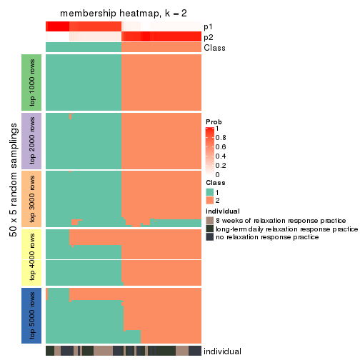
membership_heatmap(res, k = 3)
membership_heatmap(res, k = 4)
membership_heatmap(res, k = 5)
membership_heatmap(res, k = 6)
As soon as we have had the classes for columns, we can look for signatures which are significantly different between classes which can be candidate marks for certain classes. Following are the heatmaps for signatures.
Signature heatmaps where rows are scaled:
get_signatures(res, k = 2)
get_signatures(res, k = 3)
get_signatures(res, k = 4)
get_signatures(res, k = 5)
get_signatures(res, k = 6)
Signature heatmaps where rows are not scaled:
get_signatures(res, k = 2, scale_rows = FALSE)
get_signatures(res, k = 3, scale_rows = FALSE)
get_signatures(res, k = 4, scale_rows = FALSE)
get_signatures(res, k = 5, scale_rows = FALSE)
get_signatures(res, k = 6, scale_rows = FALSE)
Compare the overlap of signatures from different k:
compare_signatures(res)
get_signature() returns a data frame invisibly. TO get the list of signatures, the function
call should be assigned to a variable explicitly. In following code, if plot argument is set
to FALSE, no heatmap is plotted while only the differential analysis is performed.
# code only for demonstration
tb = get_signature(res, k = ..., plot = FALSE)
An example of the output of tb is:
#> which_row fdr mean_1 mean_2 scaled_mean_1 scaled_mean_2 km
#> 1 38 0.042760348 8.373488 9.131774 -0.5533452 0.5164555 1
#> 2 40 0.018707592 7.106213 8.469186 -0.6173731 0.5762149 1
#> 3 55 0.019134737 10.221463 11.207825 -0.6159697 0.5749050 1
#> 4 59 0.006059896 5.921854 7.869574 -0.6899429 0.6439467 1
#> 5 60 0.018055526 8.928898 10.211722 -0.6204761 0.5791110 1
#> 6 98 0.009384629 15.714769 14.887706 0.6635654 -0.6193277 2
...
The columns in tb are:
which_row: row indices corresponding to the input matrix.fdr: FDR for the differential test. mean_x: The mean value in group x.scaled_mean_x: The mean value in group x after rows are scaled.km: Row groups if k-means clustering is applied to rows.UMAP plot which shows how samples are separated.
dimension_reduction(res, k = 2, method = "UMAP")
dimension_reduction(res, k = 3, method = "UMAP")
dimension_reduction(res, k = 4, method = "UMAP")
dimension_reduction(res, k = 5, method = "UMAP")
dimension_reduction(res, k = 6, method = "UMAP")
Following heatmap shows how subgroups are split when increasing k:
collect_classes(res)
Test correlation between subgroups and known annotations. If the known annotation is numeric, one-way ANOVA test is applied, and if the known annotation is discrete, chi-squared contingency table test is applied.
test_to_known_factors(res)
#> n individual(p) k
#> ATC:mclust 72 0.178 2
#> ATC:mclust 72 0.307 3
#> ATC:mclust 69 0.319 4
#> ATC:mclust 71 0.105 5
#> ATC:mclust 62 0.499 6
If matrix rows can be associated to genes, consider to use GO_Enrichment(res,
...) to perform function enrichment for the signature genes.
The object with results only for a single top-value method and a single partition method can be extracted as:
res = res_list["ATC", "NMF"]
# you can also extract it by
# res = res_list["ATC:NMF"]
A summary of res and all the functions that can be applied to it:
res
#> A 'ConsensusPartition' object with k = 2, 3, 4, 5, 6.
#> On a matrix with 51941 rows and 72 columns.
#> Top rows (1000, 2000, 3000, 4000, 5000) are extracted by 'ATC' method.
#> Subgroups are detected by 'NMF' method.
#> Performed in total 1250 partitions by row resampling.
#> Best k for subgroups seems to be 3.
#>
#> Following methods can be applied to this 'ConsensusPartition' object:
#> [1] "cola_report" "collect_classes" "collect_plots"
#> [4] "collect_stats" "colnames" "compare_signatures"
#> [7] "consensus_heatmap" "dimension_reduction" "functional_enrichment"
#> [10] "get_anno_col" "get_anno" "get_classes"
#> [13] "get_consensus" "get_matrix" "get_membership"
#> [16] "get_param" "get_signatures" "get_stats"
#> [19] "is_best_k" "is_stable_k" "membership_heatmap"
#> [22] "ncol" "nrow" "plot_ecdf"
#> [25] "rownames" "select_partition_number" "show"
#> [28] "suggest_best_k" "test_to_known_factors"
collect_plots() function collects all the plots made from res for all k (number of partitions)
into one single page to provide an easy and fast comparison between different k.
collect_plots(res)
The plots are:
k and the heatmap of
predicted classes for each k.k.k.k.All the plots in panels can be made by individual functions and they are plotted later in this section.
select_partition_number() produces several plots showing different
statistics for choosing “optimized” k. There are following statistics:
k;k, the area increased is defined as \(A_k - A_{k-1}\).The detailed explanations of these statistics can be found in the cola vignette.
Generally speaking, lower PAC score, higher mean silhouette score or higher
concordance corresponds to better partition. Rand index and Jaccard index
measure how similar the current partition is compared to partition with k-1.
If they are too similar, we won't accept k is better than k-1.
select_partition_number(res)
The numeric values for all these statistics can be obtained by get_stats().
get_stats(res)
#> k 1-PAC mean_silhouette concordance area_increased Rand Jaccard
#> 2 2 0.833 0.913 0.964 0.3630 0.649 0.649
#> 3 3 0.543 0.713 0.855 0.6331 0.716 0.572
#> 4 4 0.509 0.678 0.797 0.1226 0.734 0.473
#> 5 5 0.631 0.660 0.822 0.1326 0.736 0.397
#> 6 6 0.607 0.562 0.775 0.0285 0.953 0.830
suggest_best_k() suggests the best \(k\) based on these statistics. The rules are as follows:
NA.suggest_best_k(res)
#> [1] 3
Following shows the table of the partitions (You need to click the show/hide
code output link to see it). The membership matrix (columns with name p*)
is inferred by
clue::cl_consensus()
function with the SE method. Basically the value in the membership matrix
represents the probability to belong to a certain group. The finall class
label for an item is determined with the group with highest probability it
belongs to.
In get_classes() function, the entropy is calculated from the membership
matrix and the silhouette score is calculated from the consensus matrix.
cbind(get_classes(res, k = 2), get_membership(res, k = 2))
#> class entropy silhouette p1 p2
#> GSM253663 1 0.0000 0.9639 1.000 0.000
#> GSM253664 1 0.7745 0.6945 0.772 0.228
#> GSM253665 1 0.0000 0.9639 1.000 0.000
#> GSM253666 1 0.8661 0.5873 0.712 0.288
#> GSM253667 2 0.0000 0.9440 0.000 1.000
#> GSM253668 1 0.0000 0.9639 1.000 0.000
#> GSM253669 1 0.0000 0.9639 1.000 0.000
#> GSM253670 1 0.0000 0.9639 1.000 0.000
#> GSM253671 1 0.0000 0.9639 1.000 0.000
#> GSM253672 1 0.0000 0.9639 1.000 0.000
#> GSM253673 1 0.0000 0.9639 1.000 0.000
#> GSM253674 1 0.0000 0.9639 1.000 0.000
#> GSM253675 1 0.7602 0.7071 0.780 0.220
#> GSM253676 1 0.0000 0.9639 1.000 0.000
#> GSM253677 1 0.0000 0.9639 1.000 0.000
#> GSM253678 2 0.7299 0.7745 0.204 0.796
#> GSM253679 1 0.0000 0.9639 1.000 0.000
#> GSM253680 1 0.0000 0.9639 1.000 0.000
#> GSM253681 1 0.5842 0.8183 0.860 0.140
#> GSM253682 1 0.1184 0.9510 0.984 0.016
#> GSM253683 2 0.0000 0.9440 0.000 1.000
#> GSM253684 1 0.0000 0.9639 1.000 0.000
#> GSM253685 1 0.0376 0.9609 0.996 0.004
#> GSM253686 1 0.0000 0.9639 1.000 0.000
#> GSM253687 1 0.0000 0.9639 1.000 0.000
#> GSM253688 1 0.0000 0.9639 1.000 0.000
#> GSM253689 1 0.0000 0.9639 1.000 0.000
#> GSM253690 1 0.0000 0.9639 1.000 0.000
#> GSM253691 1 0.0000 0.9639 1.000 0.000
#> GSM253692 1 0.0000 0.9639 1.000 0.000
#> GSM253693 1 0.0376 0.9609 0.996 0.004
#> GSM253694 1 0.0000 0.9639 1.000 0.000
#> GSM253695 1 0.0000 0.9639 1.000 0.000
#> GSM253696 1 0.0000 0.9639 1.000 0.000
#> GSM253697 2 0.0000 0.9440 0.000 1.000
#> GSM253698 1 0.0000 0.9639 1.000 0.000
#> GSM253699 1 0.0000 0.9639 1.000 0.000
#> GSM253700 2 0.0000 0.9440 0.000 1.000
#> GSM253701 1 0.0000 0.9639 1.000 0.000
#> GSM253702 1 0.0000 0.9639 1.000 0.000
#> GSM253703 1 0.9988 0.0438 0.520 0.480
#> GSM253704 2 0.6048 0.8353 0.148 0.852
#> GSM253705 1 0.0000 0.9639 1.000 0.000
#> GSM253706 1 0.0000 0.9639 1.000 0.000
#> GSM253707 2 0.0000 0.9440 0.000 1.000
#> GSM253708 2 0.0000 0.9440 0.000 1.000
#> GSM253709 1 0.0000 0.9639 1.000 0.000
#> GSM253710 1 0.0000 0.9639 1.000 0.000
#> GSM253711 2 0.7376 0.7691 0.208 0.792
#> GSM253712 1 0.0000 0.9639 1.000 0.000
#> GSM253713 1 0.0000 0.9639 1.000 0.000
#> GSM253714 1 0.0000 0.9639 1.000 0.000
#> GSM253715 2 0.7376 0.7691 0.208 0.792
#> GSM253716 2 0.0376 0.9426 0.004 0.996
#> GSM253717 1 0.0000 0.9639 1.000 0.000
#> GSM253718 2 0.0000 0.9440 0.000 1.000
#> GSM253719 2 0.0000 0.9440 0.000 1.000
#> GSM253720 1 0.0000 0.9639 1.000 0.000
#> GSM253721 1 0.9833 0.2454 0.576 0.424
#> GSM253722 1 0.0000 0.9639 1.000 0.000
#> GSM253723 2 0.0376 0.9426 0.004 0.996
#> GSM253724 2 0.0000 0.9440 0.000 1.000
#> GSM253725 1 0.0000 0.9639 1.000 0.000
#> GSM253726 1 0.0000 0.9639 1.000 0.000
#> GSM253727 1 0.0000 0.9639 1.000 0.000
#> GSM253728 1 0.1843 0.9402 0.972 0.028
#> GSM253729 1 0.0672 0.9578 0.992 0.008
#> GSM253730 1 0.0000 0.9639 1.000 0.000
#> GSM253731 1 0.0000 0.9639 1.000 0.000
#> GSM253732 2 0.0000 0.9440 0.000 1.000
#> GSM253733 1 0.0000 0.9639 1.000 0.000
#> GSM253734 1 0.0000 0.9639 1.000 0.000
cbind(get_classes(res, k = 3), get_membership(res, k = 3))
#> class entropy silhouette p1 p2 p3
#> GSM253663 3 0.5859 0.512 0.344 0.000 0.656
#> GSM253664 2 0.8454 0.335 0.316 0.572 0.112
#> GSM253665 3 0.6154 0.337 0.408 0.000 0.592
#> GSM253666 1 0.2625 0.726 0.916 0.084 0.000
#> GSM253667 2 0.0000 0.867 0.000 1.000 0.000
#> GSM253668 1 0.0000 0.803 1.000 0.000 0.000
#> GSM253669 1 0.0000 0.803 1.000 0.000 0.000
#> GSM253670 1 0.5397 0.657 0.720 0.000 0.280
#> GSM253671 1 0.2796 0.802 0.908 0.000 0.092
#> GSM253672 1 0.6168 0.383 0.588 0.000 0.412
#> GSM253673 1 0.0237 0.805 0.996 0.000 0.004
#> GSM253674 1 0.2165 0.808 0.936 0.000 0.064
#> GSM253675 1 0.1289 0.778 0.968 0.032 0.000
#> GSM253676 1 0.0592 0.807 0.988 0.000 0.012
#> GSM253677 1 0.2448 0.806 0.924 0.000 0.076
#> GSM253678 2 0.0983 0.865 0.016 0.980 0.004
#> GSM253679 1 0.4555 0.742 0.800 0.000 0.200
#> GSM253680 1 0.0000 0.803 1.000 0.000 0.000
#> GSM253681 3 0.1753 0.691 0.000 0.048 0.952
#> GSM253682 3 0.0747 0.728 0.000 0.016 0.984
#> GSM253683 2 0.4178 0.789 0.000 0.828 0.172
#> GSM253684 3 0.0000 0.740 0.000 0.000 1.000
#> GSM253685 3 0.0424 0.735 0.000 0.008 0.992
#> GSM253686 1 0.6180 0.371 0.584 0.000 0.416
#> GSM253687 1 0.5058 0.700 0.756 0.000 0.244
#> GSM253688 1 0.4796 0.725 0.780 0.000 0.220
#> GSM253689 1 0.1031 0.810 0.976 0.000 0.024
#> GSM253690 1 0.4452 0.748 0.808 0.000 0.192
#> GSM253691 1 0.1411 0.811 0.964 0.000 0.036
#> GSM253692 1 0.3482 0.786 0.872 0.000 0.128
#> GSM253693 1 0.0424 0.806 0.992 0.000 0.008
#> GSM253694 1 0.1163 0.811 0.972 0.000 0.028
#> GSM253695 1 0.5678 0.601 0.684 0.000 0.316
#> GSM253696 1 0.6204 0.346 0.576 0.000 0.424
#> GSM253697 2 0.0592 0.867 0.012 0.988 0.000
#> GSM253698 1 0.0000 0.803 1.000 0.000 0.000
#> GSM253699 1 0.0424 0.806 0.992 0.000 0.008
#> GSM253700 2 0.0000 0.867 0.000 1.000 0.000
#> GSM253701 1 0.6180 0.366 0.584 0.000 0.416
#> GSM253702 1 0.6008 0.488 0.628 0.000 0.372
#> GSM253703 2 0.5831 0.589 0.284 0.708 0.008
#> GSM253704 2 0.2878 0.834 0.096 0.904 0.000
#> GSM253705 1 0.3192 0.793 0.888 0.000 0.112
#> GSM253706 3 0.2448 0.763 0.076 0.000 0.924
#> GSM253707 2 0.4062 0.795 0.000 0.836 0.164
#> GSM253708 2 0.2165 0.850 0.000 0.936 0.064
#> GSM253709 1 0.4750 0.729 0.784 0.000 0.216
#> GSM253710 3 0.4750 0.698 0.216 0.000 0.784
#> GSM253711 2 0.2448 0.846 0.000 0.924 0.076
#> GSM253712 3 0.6126 0.364 0.400 0.000 0.600
#> GSM253713 1 0.5591 0.621 0.696 0.000 0.304
#> GSM253714 1 0.1643 0.811 0.956 0.000 0.044
#> GSM253715 2 0.4452 0.769 0.000 0.808 0.192
#> GSM253716 2 0.3340 0.819 0.120 0.880 0.000
#> GSM253717 1 0.1643 0.811 0.956 0.000 0.044
#> GSM253718 2 0.0000 0.867 0.000 1.000 0.000
#> GSM253719 2 0.0892 0.865 0.020 0.980 0.000
#> GSM253720 3 0.6126 0.640 0.268 0.020 0.712
#> GSM253721 1 0.2959 0.703 0.900 0.100 0.000
#> GSM253722 1 0.0000 0.803 1.000 0.000 0.000
#> GSM253723 2 0.0237 0.867 0.000 0.996 0.004
#> GSM253724 2 0.6154 0.487 0.408 0.592 0.000
#> GSM253725 1 0.5327 0.667 0.728 0.000 0.272
#> GSM253726 1 0.6045 0.469 0.620 0.000 0.380
#> GSM253727 1 0.0592 0.807 0.988 0.000 0.012
#> GSM253728 1 0.0424 0.797 0.992 0.008 0.000
#> GSM253729 3 0.0592 0.732 0.000 0.012 0.988
#> GSM253730 3 0.0000 0.740 0.000 0.000 1.000
#> GSM253731 3 0.2878 0.759 0.096 0.000 0.904
#> GSM253732 2 0.0424 0.866 0.000 0.992 0.008
#> GSM253733 3 0.5988 0.458 0.368 0.000 0.632
#> GSM253734 3 0.4654 0.705 0.208 0.000 0.792
cbind(get_classes(res, k = 4), get_membership(res, k = 4))
#> class entropy silhouette p1 p2 p3 p4
#> GSM253663 1 0.3172 0.6357 0.840 0.000 0.160 0.000
#> GSM253664 1 0.3813 0.5670 0.828 0.148 0.024 0.000
#> GSM253665 1 0.5910 0.7376 0.688 0.000 0.104 0.208
#> GSM253666 1 0.4319 0.6269 0.836 0.096 0.020 0.048
#> GSM253667 2 0.0469 0.8414 0.000 0.988 0.012 0.000
#> GSM253668 1 0.3103 0.6829 0.900 0.036 0.020 0.044
#> GSM253669 1 0.3958 0.6768 0.844 0.024 0.016 0.116
#> GSM253670 1 0.5021 0.7628 0.724 0.000 0.036 0.240
#> GSM253671 4 0.3688 0.5813 0.208 0.000 0.000 0.792
#> GSM253672 1 0.5221 0.7656 0.732 0.000 0.060 0.208
#> GSM253673 1 0.4283 0.7666 0.740 0.000 0.004 0.256
#> GSM253674 1 0.2563 0.6989 0.916 0.012 0.012 0.060
#> GSM253675 1 0.3106 0.6825 0.900 0.040 0.020 0.040
#> GSM253676 1 0.4431 0.7458 0.696 0.000 0.000 0.304
#> GSM253677 4 0.3400 0.6378 0.180 0.000 0.000 0.820
#> GSM253678 2 0.4590 0.6946 0.000 0.772 0.036 0.192
#> GSM253679 1 0.4642 0.7656 0.740 0.000 0.020 0.240
#> GSM253680 1 0.5060 0.7396 0.680 0.008 0.008 0.304
#> GSM253681 4 0.5843 0.5787 0.004 0.176 0.108 0.712
#> GSM253682 3 0.2401 0.7411 0.092 0.004 0.904 0.000
#> GSM253683 2 0.4564 0.6431 0.000 0.672 0.328 0.000
#> GSM253684 3 0.4843 0.4381 0.396 0.000 0.604 0.000
#> GSM253685 3 0.1139 0.6717 0.012 0.008 0.972 0.008
#> GSM253686 1 0.1902 0.7134 0.932 0.000 0.064 0.004
#> GSM253687 1 0.4711 0.7673 0.740 0.000 0.024 0.236
#> GSM253688 1 0.0779 0.7217 0.980 0.000 0.016 0.004
#> GSM253689 1 0.2408 0.7610 0.896 0.000 0.000 0.104
#> GSM253690 1 0.4574 0.7737 0.756 0.000 0.024 0.220
#> GSM253691 1 0.0188 0.7179 0.996 0.000 0.004 0.000
#> GSM253692 1 0.0804 0.7237 0.980 0.000 0.012 0.008
#> GSM253693 4 0.2480 0.6925 0.088 0.008 0.000 0.904
#> GSM253694 4 0.1211 0.6961 0.000 0.000 0.040 0.960
#> GSM253695 1 0.4881 0.7724 0.756 0.000 0.048 0.196
#> GSM253696 1 0.5219 0.7580 0.712 0.000 0.044 0.244
#> GSM253697 2 0.3573 0.7446 0.132 0.848 0.016 0.004
#> GSM253698 1 0.2996 0.6864 0.904 0.028 0.020 0.048
#> GSM253699 1 0.4331 0.7536 0.712 0.000 0.000 0.288
#> GSM253700 2 0.0707 0.8413 0.000 0.980 0.020 0.000
#> GSM253701 4 0.5619 0.3268 0.320 0.000 0.040 0.640
#> GSM253702 1 0.5123 0.7655 0.724 0.000 0.044 0.232
#> GSM253703 4 0.4715 0.5511 0.004 0.240 0.016 0.740
#> GSM253704 4 0.4761 0.5992 0.000 0.184 0.048 0.768
#> GSM253705 1 0.4250 0.7578 0.724 0.000 0.000 0.276
#> GSM253706 3 0.6037 0.4901 0.304 0.000 0.628 0.068
#> GSM253707 2 0.4485 0.7296 0.000 0.740 0.248 0.012
#> GSM253708 2 0.2530 0.8281 0.000 0.896 0.100 0.004
#> GSM253709 4 0.3958 0.6490 0.160 0.000 0.024 0.816
#> GSM253710 1 0.5619 0.4725 0.640 0.000 0.320 0.040
#> GSM253711 2 0.2011 0.8336 0.000 0.920 0.080 0.000
#> GSM253712 1 0.5678 0.6978 0.716 0.000 0.172 0.112
#> GSM253713 1 0.4808 0.7667 0.736 0.000 0.028 0.236
#> GSM253714 1 0.4356 0.7497 0.708 0.000 0.000 0.292
#> GSM253715 2 0.5657 0.6010 0.044 0.644 0.312 0.000
#> GSM253716 4 0.4609 0.5531 0.000 0.224 0.024 0.752
#> GSM253717 4 0.2814 0.6705 0.132 0.000 0.000 0.868
#> GSM253718 2 0.0336 0.8383 0.000 0.992 0.008 0.000
#> GSM253719 2 0.1593 0.8301 0.004 0.956 0.016 0.024
#> GSM253720 4 0.3594 0.6760 0.008 0.024 0.108 0.860
#> GSM253721 1 0.7687 0.1733 0.508 0.272 0.008 0.212
#> GSM253722 1 0.2634 0.6930 0.920 0.032 0.020 0.028
#> GSM253723 4 0.5386 0.5252 0.000 0.236 0.056 0.708
#> GSM253724 2 0.5665 0.5896 0.212 0.720 0.016 0.052
#> GSM253725 1 0.4872 0.7628 0.728 0.000 0.028 0.244
#> GSM253726 1 0.5312 0.7424 0.692 0.000 0.040 0.268
#> GSM253727 4 0.3123 0.6590 0.156 0.000 0.000 0.844
#> GSM253728 1 0.3103 0.6829 0.900 0.036 0.020 0.044
#> GSM253729 3 0.1767 0.7161 0.044 0.012 0.944 0.000
#> GSM253730 3 0.2149 0.7442 0.088 0.000 0.912 0.000
#> GSM253731 1 0.6748 0.0881 0.476 0.000 0.432 0.092
#> GSM253732 2 0.1211 0.8390 0.000 0.960 0.040 0.000
#> GSM253733 1 0.5910 0.7344 0.676 0.000 0.088 0.236
#> GSM253734 4 0.3490 0.6581 0.004 0.004 0.156 0.836
cbind(get_classes(res, k = 5), get_membership(res, k = 5))
#> class entropy silhouette p1 p2 p3 p4 p5
#> GSM253663 3 0.6802 0.1257 0.300 0.000 0.372 0.328 0.000
#> GSM253664 4 0.1653 0.7137 0.004 0.028 0.024 0.944 0.000
#> GSM253665 1 0.2228 0.8170 0.908 0.000 0.076 0.012 0.004
#> GSM253666 4 0.3068 0.7020 0.016 0.084 0.000 0.872 0.028
#> GSM253667 2 0.1124 0.7883 0.000 0.960 0.004 0.036 0.000
#> GSM253668 4 0.1768 0.7294 0.072 0.004 0.000 0.924 0.000
#> GSM253669 4 0.2853 0.7241 0.040 0.008 0.000 0.884 0.068
#> GSM253670 1 0.2424 0.8301 0.908 0.000 0.032 0.008 0.052
#> GSM253671 1 0.3239 0.7726 0.828 0.000 0.012 0.004 0.156
#> GSM253672 1 0.1484 0.8253 0.944 0.000 0.048 0.008 0.000
#> GSM253673 4 0.4703 0.4872 0.340 0.000 0.000 0.632 0.028
#> GSM253674 4 0.1956 0.7229 0.012 0.000 0.008 0.928 0.052
#> GSM253675 4 0.1243 0.7314 0.028 0.004 0.008 0.960 0.000
#> GSM253676 1 0.1690 0.8257 0.944 0.000 0.008 0.024 0.024
#> GSM253677 1 0.2733 0.7943 0.872 0.000 0.012 0.004 0.112
#> GSM253678 4 0.5727 0.1686 0.000 0.036 0.028 0.532 0.404
#> GSM253679 1 0.0968 0.8290 0.972 0.000 0.004 0.012 0.012
#> GSM253680 1 0.5602 0.3951 0.612 0.000 0.004 0.292 0.092
#> GSM253681 5 0.1990 0.8791 0.008 0.000 0.068 0.004 0.920
#> GSM253682 3 0.2609 0.6729 0.028 0.008 0.896 0.068 0.000
#> GSM253683 2 0.4156 0.5728 0.000 0.700 0.288 0.008 0.004
#> GSM253684 3 0.3720 0.5752 0.228 0.000 0.760 0.012 0.000
#> GSM253685 3 0.1455 0.6664 0.008 0.008 0.952 0.000 0.032
#> GSM253686 1 0.6246 0.3406 0.544 0.000 0.224 0.232 0.000
#> GSM253687 1 0.0693 0.8294 0.980 0.000 0.012 0.008 0.000
#> GSM253688 1 0.2597 0.7950 0.884 0.000 0.024 0.092 0.000
#> GSM253689 1 0.4542 0.0458 0.536 0.000 0.000 0.456 0.008
#> GSM253690 1 0.1153 0.8300 0.964 0.000 0.008 0.024 0.004
#> GSM253691 4 0.4329 0.5118 0.312 0.000 0.016 0.672 0.000
#> GSM253692 4 0.4505 0.4077 0.384 0.000 0.012 0.604 0.000
#> GSM253693 5 0.2921 0.8274 0.020 0.000 0.000 0.124 0.856
#> GSM253694 5 0.0902 0.8897 0.004 0.008 0.004 0.008 0.976
#> GSM253695 1 0.2653 0.8249 0.900 0.000 0.028 0.052 0.020
#> GSM253696 1 0.0798 0.8300 0.976 0.000 0.016 0.008 0.000
#> GSM253697 2 0.4538 0.2208 0.000 0.564 0.004 0.428 0.004
#> GSM253698 4 0.1121 0.7334 0.044 0.000 0.000 0.956 0.000
#> GSM253699 4 0.6725 0.3564 0.216 0.000 0.008 0.480 0.296
#> GSM253700 2 0.0865 0.7903 0.000 0.972 0.004 0.024 0.000
#> GSM253701 1 0.4330 0.7155 0.752 0.000 0.036 0.008 0.204
#> GSM253702 1 0.1854 0.8312 0.936 0.000 0.036 0.008 0.020
#> GSM253703 5 0.3804 0.8086 0.000 0.132 0.004 0.052 0.812
#> GSM253704 5 0.2054 0.8825 0.000 0.052 0.000 0.028 0.920
#> GSM253705 1 0.1095 0.8280 0.968 0.000 0.008 0.012 0.012
#> GSM253706 1 0.4225 0.4848 0.632 0.000 0.364 0.004 0.000
#> GSM253707 2 0.3616 0.7101 0.000 0.804 0.164 0.000 0.032
#> GSM253708 2 0.2291 0.7712 0.000 0.908 0.072 0.008 0.012
#> GSM253709 1 0.2311 0.8156 0.920 0.012 0.016 0.008 0.044
#> GSM253710 1 0.4650 0.1946 0.520 0.000 0.468 0.012 0.000
#> GSM253711 4 0.6888 0.0125 0.000 0.272 0.276 0.444 0.008
#> GSM253712 1 0.3628 0.6968 0.772 0.000 0.216 0.012 0.000
#> GSM253713 1 0.0854 0.8302 0.976 0.000 0.012 0.008 0.004
#> GSM253714 1 0.3021 0.8042 0.872 0.000 0.004 0.060 0.064
#> GSM253715 3 0.6740 0.0459 0.000 0.212 0.404 0.380 0.004
#> GSM253716 2 0.4999 0.0280 0.000 0.504 0.008 0.016 0.472
#> GSM253717 1 0.5649 0.3632 0.572 0.016 0.016 0.024 0.372
#> GSM253718 2 0.0566 0.7890 0.000 0.984 0.000 0.012 0.004
#> GSM253719 2 0.1365 0.7843 0.000 0.952 0.004 0.040 0.004
#> GSM253720 5 0.2465 0.8875 0.012 0.004 0.028 0.044 0.912
#> GSM253721 4 0.5134 0.6381 0.040 0.048 0.008 0.744 0.160
#> GSM253722 4 0.1331 0.7325 0.040 0.000 0.008 0.952 0.000
#> GSM253723 5 0.2032 0.8850 0.000 0.052 0.020 0.004 0.924
#> GSM253724 2 0.5145 0.6457 0.112 0.760 0.016 0.084 0.028
#> GSM253725 1 0.0579 0.8309 0.984 0.000 0.000 0.008 0.008
#> GSM253726 1 0.1836 0.8278 0.936 0.000 0.016 0.008 0.040
#> GSM253727 1 0.3360 0.7583 0.816 0.000 0.012 0.004 0.168
#> GSM253728 4 0.1153 0.7324 0.024 0.008 0.000 0.964 0.004
#> GSM253729 3 0.1612 0.6748 0.016 0.012 0.948 0.000 0.024
#> GSM253730 3 0.1243 0.6814 0.028 0.008 0.960 0.004 0.000
#> GSM253731 1 0.2648 0.7750 0.848 0.000 0.152 0.000 0.000
#> GSM253732 2 0.1012 0.7896 0.000 0.968 0.020 0.012 0.000
#> GSM253733 1 0.1717 0.8256 0.936 0.000 0.052 0.004 0.008
#> GSM253734 5 0.3160 0.8243 0.028 0.004 0.116 0.000 0.852
cbind(get_classes(res, k = 6), get_membership(res, k = 6))
#> class entropy silhouette p1 p2 p3 p4 p5 p6
#> GSM253663 1 0.6162 0.42849 0.564 0.000 0.180 0.048 0.000 0.208
#> GSM253664 6 0.2345 0.67494 0.000 0.004 0.036 0.056 0.004 0.900
#> GSM253665 1 0.0909 0.81140 0.968 0.000 0.012 0.020 0.000 0.000
#> GSM253666 6 0.5073 0.49156 0.000 0.152 0.000 0.196 0.004 0.648
#> GSM253667 2 0.2006 0.65447 0.000 0.904 0.000 0.080 0.000 0.016
#> GSM253668 6 0.2949 0.67065 0.028 0.008 0.000 0.116 0.000 0.848
#> GSM253669 6 0.3929 0.62393 0.008 0.016 0.000 0.148 0.040 0.788
#> GSM253670 1 0.1950 0.80958 0.924 0.000 0.004 0.044 0.020 0.008
#> GSM253671 1 0.4044 0.71628 0.768 0.000 0.008 0.084 0.140 0.000
#> GSM253672 1 0.1536 0.81167 0.940 0.000 0.016 0.040 0.000 0.004
#> GSM253673 6 0.5288 0.40273 0.268 0.000 0.004 0.104 0.008 0.616
#> GSM253674 6 0.2299 0.68138 0.004 0.000 0.020 0.020 0.048 0.908
#> GSM253675 6 0.1299 0.68997 0.004 0.000 0.004 0.036 0.004 0.952
#> GSM253676 1 0.4212 0.72850 0.760 0.000 0.004 0.164 0.016 0.056
#> GSM253677 1 0.3622 0.74924 0.800 0.000 0.004 0.124 0.072 0.000
#> GSM253678 5 0.6562 0.10703 0.000 0.048 0.036 0.068 0.432 0.416
#> GSM253679 1 0.2020 0.79829 0.896 0.000 0.000 0.096 0.000 0.008
#> GSM253680 1 0.6630 0.27438 0.512 0.000 0.000 0.188 0.076 0.224
#> GSM253681 5 0.3023 0.56611 0.028 0.000 0.056 0.052 0.864 0.000
#> GSM253682 3 0.2036 0.65079 0.028 0.000 0.916 0.008 0.000 0.048
#> GSM253683 3 0.4303 -0.07144 0.000 0.460 0.524 0.012 0.004 0.000
#> GSM253684 3 0.4617 -0.01135 0.428 0.000 0.540 0.020 0.000 0.012
#> GSM253685 3 0.1116 0.64639 0.008 0.000 0.960 0.004 0.028 0.000
#> GSM253686 1 0.4326 0.73107 0.772 0.000 0.060 0.056 0.000 0.112
#> GSM253687 1 0.0603 0.81110 0.980 0.000 0.004 0.016 0.000 0.000
#> GSM253688 1 0.1922 0.81396 0.924 0.000 0.012 0.040 0.000 0.024
#> GSM253689 1 0.5331 0.45392 0.604 0.000 0.004 0.080 0.016 0.296
#> GSM253690 1 0.2662 0.80221 0.884 0.000 0.004 0.048 0.008 0.056
#> GSM253691 6 0.4757 0.41653 0.280 0.000 0.000 0.084 0.000 0.636
#> GSM253692 6 0.4868 0.20837 0.396 0.000 0.004 0.052 0.000 0.548
#> GSM253693 5 0.3359 0.53109 0.036 0.000 0.004 0.044 0.848 0.068
#> GSM253694 5 0.1728 0.56123 0.008 0.000 0.004 0.064 0.924 0.000
#> GSM253695 1 0.3577 0.77728 0.824 0.000 0.012 0.116 0.028 0.020
#> GSM253696 1 0.1462 0.80843 0.936 0.000 0.008 0.056 0.000 0.000
#> GSM253697 2 0.5641 0.36636 0.000 0.536 0.000 0.160 0.004 0.300
#> GSM253698 6 0.0665 0.69252 0.008 0.000 0.000 0.008 0.004 0.980
#> GSM253699 6 0.6951 0.30001 0.184 0.000 0.008 0.164 0.124 0.520
#> GSM253700 2 0.0405 0.67005 0.000 0.988 0.004 0.008 0.000 0.000
#> GSM253701 1 0.4361 0.64765 0.716 0.000 0.004 0.076 0.204 0.000
#> GSM253702 1 0.1672 0.81067 0.932 0.000 0.000 0.048 0.016 0.004
#> GSM253703 5 0.5093 0.47645 0.000 0.120 0.028 0.128 0.712 0.012
#> GSM253704 5 0.1697 0.57635 0.000 0.020 0.004 0.036 0.936 0.004
#> GSM253705 1 0.3584 0.68911 0.740 0.000 0.000 0.244 0.004 0.012
#> GSM253706 1 0.3512 0.70303 0.772 0.000 0.196 0.032 0.000 0.000
#> GSM253707 2 0.5144 0.16562 0.000 0.532 0.404 0.036 0.028 0.000
#> GSM253708 2 0.3754 0.53453 0.000 0.756 0.212 0.016 0.016 0.000
#> GSM253709 1 0.4105 0.64570 0.732 0.000 0.008 0.216 0.044 0.000
#> GSM253710 1 0.4298 0.68081 0.732 0.000 0.200 0.052 0.000 0.016
#> GSM253711 6 0.6963 0.00881 0.000 0.260 0.288 0.036 0.012 0.404
#> GSM253712 1 0.2513 0.79812 0.888 0.000 0.060 0.044 0.000 0.008
#> GSM253713 1 0.0508 0.80973 0.984 0.000 0.004 0.012 0.000 0.000
#> GSM253714 1 0.4675 0.71349 0.748 0.000 0.000 0.096 0.092 0.064
#> GSM253715 3 0.5740 0.35083 0.000 0.076 0.612 0.040 0.012 0.260
#> GSM253716 5 0.6276 -0.08736 0.000 0.300 0.008 0.288 0.404 0.000
#> GSM253717 4 0.6175 0.00000 0.172 0.000 0.000 0.488 0.316 0.024
#> GSM253718 2 0.3633 0.60025 0.000 0.732 0.000 0.252 0.004 0.012
#> GSM253719 2 0.4750 0.55997 0.000 0.664 0.000 0.264 0.016 0.056
#> GSM253720 5 0.3793 0.56630 0.028 0.004 0.032 0.060 0.836 0.040
#> GSM253721 6 0.5682 0.30804 0.004 0.008 0.000 0.304 0.132 0.552
#> GSM253722 6 0.1699 0.68849 0.004 0.000 0.012 0.040 0.008 0.936
#> GSM253723 5 0.3917 0.51122 0.000 0.040 0.032 0.140 0.788 0.000
#> GSM253724 2 0.5841 0.26371 0.024 0.460 0.000 0.424 0.004 0.088
#> GSM253725 1 0.1370 0.81145 0.948 0.000 0.000 0.036 0.012 0.004
#> GSM253726 1 0.1889 0.80722 0.920 0.000 0.004 0.056 0.020 0.000
#> GSM253727 1 0.5093 0.54071 0.644 0.000 0.004 0.148 0.204 0.000
#> GSM253728 6 0.0837 0.69068 0.004 0.004 0.000 0.020 0.000 0.972
#> GSM253729 3 0.1425 0.65500 0.020 0.008 0.952 0.008 0.012 0.000
#> GSM253730 3 0.1226 0.65501 0.040 0.004 0.952 0.000 0.000 0.004
#> GSM253731 1 0.1856 0.80812 0.920 0.000 0.032 0.048 0.000 0.000
#> GSM253732 2 0.0993 0.66813 0.000 0.964 0.024 0.012 0.000 0.000
#> GSM253733 1 0.0935 0.80864 0.964 0.000 0.004 0.032 0.000 0.000
#> GSM253734 5 0.5550 0.17360 0.156 0.000 0.064 0.120 0.660 0.000
Heatmaps for the consensus matrix. It visualizes the probability of two samples to be in a same group.
consensus_heatmap(res, k = 2)
consensus_heatmap(res, k = 3)
consensus_heatmap(res, k = 4)

consensus_heatmap(res, k = 5)
consensus_heatmap(res, k = 6)
Heatmaps for the membership of samples in all partitions to see how consistent they are:
membership_heatmap(res, k = 2)
membership_heatmap(res, k = 3)
membership_heatmap(res, k = 4)
membership_heatmap(res, k = 5)
membership_heatmap(res, k = 6)
As soon as we have had the classes for columns, we can look for signatures which are significantly different between classes which can be candidate marks for certain classes. Following are the heatmaps for signatures.
Signature heatmaps where rows are scaled:
get_signatures(res, k = 2)
get_signatures(res, k = 3)
get_signatures(res, k = 4)

get_signatures(res, k = 5)
get_signatures(res, k = 6)
Signature heatmaps where rows are not scaled:
get_signatures(res, k = 2, scale_rows = FALSE)
get_signatures(res, k = 3, scale_rows = FALSE)
get_signatures(res, k = 4, scale_rows = FALSE)
get_signatures(res, k = 5, scale_rows = FALSE)
get_signatures(res, k = 6, scale_rows = FALSE)
Compare the overlap of signatures from different k:
compare_signatures(res)
get_signature() returns a data frame invisibly. TO get the list of signatures, the function
call should be assigned to a variable explicitly. In following code, if plot argument is set
to FALSE, no heatmap is plotted while only the differential analysis is performed.
# code only for demonstration
tb = get_signature(res, k = ..., plot = FALSE)
An example of the output of tb is:
#> which_row fdr mean_1 mean_2 scaled_mean_1 scaled_mean_2 km
#> 1 38 0.042760348 8.373488 9.131774 -0.5533452 0.5164555 1
#> 2 40 0.018707592 7.106213 8.469186 -0.6173731 0.5762149 1
#> 3 55 0.019134737 10.221463 11.207825 -0.6159697 0.5749050 1
#> 4 59 0.006059896 5.921854 7.869574 -0.6899429 0.6439467 1
#> 5 60 0.018055526 8.928898 10.211722 -0.6204761 0.5791110 1
#> 6 98 0.009384629 15.714769 14.887706 0.6635654 -0.6193277 2
...
The columns in tb are:
which_row: row indices corresponding to the input matrix.fdr: FDR for the differential test. mean_x: The mean value in group x.scaled_mean_x: The mean value in group x after rows are scaled.km: Row groups if k-means clustering is applied to rows.UMAP plot which shows how samples are separated.
dimension_reduction(res, k = 2, method = "UMAP")
dimension_reduction(res, k = 3, method = "UMAP")
dimension_reduction(res, k = 4, method = "UMAP")
dimension_reduction(res, k = 5, method = "UMAP")
dimension_reduction(res, k = 6, method = "UMAP")

Following heatmap shows how subgroups are split when increasing k:
collect_classes(res)
Test correlation between subgroups and known annotations. If the known annotation is numeric, one-way ANOVA test is applied, and if the known annotation is discrete, chi-squared contingency table test is applied.
test_to_known_factors(res)
#> n individual(p) k
#> ATC:NMF 70 0.251 2
#> ATC:NMF 61 0.174 3
#> ATC:NMF 66 0.440 4
#> ATC:NMF 57 0.446 5
#> ATC:NMF 51 0.414 6
If matrix rows can be associated to genes, consider to use GO_Enrichment(res,
...) to perform function enrichment for the signature genes.
sessionInfo()
#> R version 3.6.0 (2019-04-26)
#> Platform: x86_64-pc-linux-gnu (64-bit)
#> Running under: CentOS Linux 7 (Core)
#>
#> Matrix products: default
#> BLAS: /usr/lib64/libblas.so.3.4.2
#> LAPACK: /usr/lib64/liblapack.so.3.4.2
#>
#> locale:
#> [1] LC_CTYPE=en_GB.UTF-8 LC_NUMERIC=C LC_TIME=en_GB.UTF-8
#> [4] LC_COLLATE=en_GB.UTF-8 LC_MONETARY=en_GB.UTF-8 LC_MESSAGES=en_GB.UTF-8
#> [7] LC_PAPER=en_GB.UTF-8 LC_NAME=C LC_ADDRESS=C
#> [10] LC_TELEPHONE=C LC_MEASUREMENT=en_GB.UTF-8 LC_IDENTIFICATION=C
#>
#> attached base packages:
#> [1] grid parallel stats graphics grDevices utils datasets methods base
#>
#> other attached packages:
#> [1] genefilter_1.66.0 ComplexHeatmap_2.1.1 markdown_1.1 knitr_1.26
#> [5] preprocessCore_1.46.0 cola_1.3.2 GEOquery_2.52.0 Biobase_2.44.0
#> [9] BiocGenerics_0.30.0 GetoptLong_0.1.7
#>
#> loaded via a namespace (and not attached):
#> [1] bitops_1.0-6 matrixStats_0.55.0 bit64_0.9-7 doParallel_1.0.15
#> [5] RColorBrewer_1.1-2 httr_1.4.1 tools_3.6.0 backports_1.1.5
#> [9] R6_2.4.1 DBI_1.0.0 lazyeval_0.2.2 colorspace_1.4-1
#> [13] withr_2.1.2 tidyselect_0.2.5 gridExtra_2.3 bit_1.1-14
#> [17] compiler_3.6.0 xml2_1.2.2 microbenchmark_1.4-7 pkgmaker_0.28
#> [21] slam_0.1-46 scales_1.1.0 readr_1.3.1 NMF_0.23.6
#> [25] stringr_1.4.0 digest_0.6.23 pkgconfig_2.0.3 bibtex_0.4.2
#> [29] highr_0.8 limma_3.40.6 rlang_0.4.2 GlobalOptions_0.1.1
#> [33] RSQLite_2.1.2 impute_1.58.0 shape_1.4.4 mclust_5.4.5
#> [37] dendextend_1.12.0 dplyr_0.8.3 RCurl_1.95-4.12 magrittr_1.5
#> [41] Matrix_1.2-17 Rcpp_1.0.3 munsell_0.5.0 S4Vectors_0.22.1
#> [45] viridis_0.5.1 lifecycle_0.1.0 stringi_1.4.3 plyr_1.8.4
#> [49] blob_1.2.0 crayon_1.3.4 lattice_0.20-38 splines_3.6.0
#> [53] annotate_1.62.0 circlize_0.4.9 hms_0.5.2 zeallot_0.1.0
#> [57] pillar_1.4.2 rjson_0.2.20 rngtools_1.4 reshape2_1.4.3
#> [61] codetools_0.2-16 stats4_3.6.0 XML_3.98-1.20 glue_1.3.1
#> [65] evaluate_0.14 png_0.1-7 vctrs_0.2.0 foreach_1.4.7
#> [69] polyclip_1.10-0 gtable_0.3.0 purrr_0.3.3 tidyr_1.0.0
#> [73] clue_0.3-57 assertthat_0.2.1 ggplot2_3.2.1 xfun_0.11
#> [77] gridBase_0.4-7 eulerr_6.0.0 xtable_1.8-4 skmeans_0.2-11
#> [81] survival_2.44-1.1 viridisLite_0.3.0 tibble_2.1.3 iterators_1.0.12
#> [85] AnnotationDbi_1.46.1 registry_0.5-1 memoise_1.1.0 IRanges_2.18.3
#> [89] cluster_2.1.0 brew_1.0-6